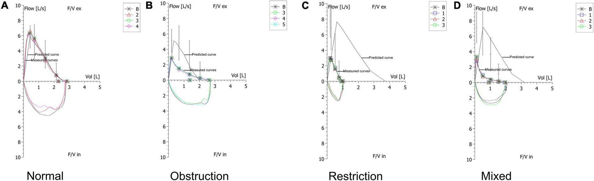
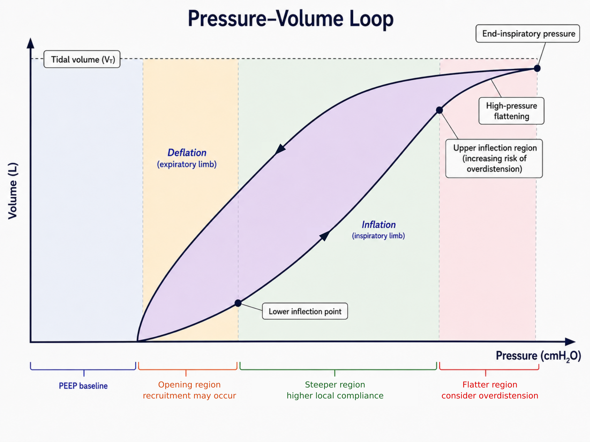
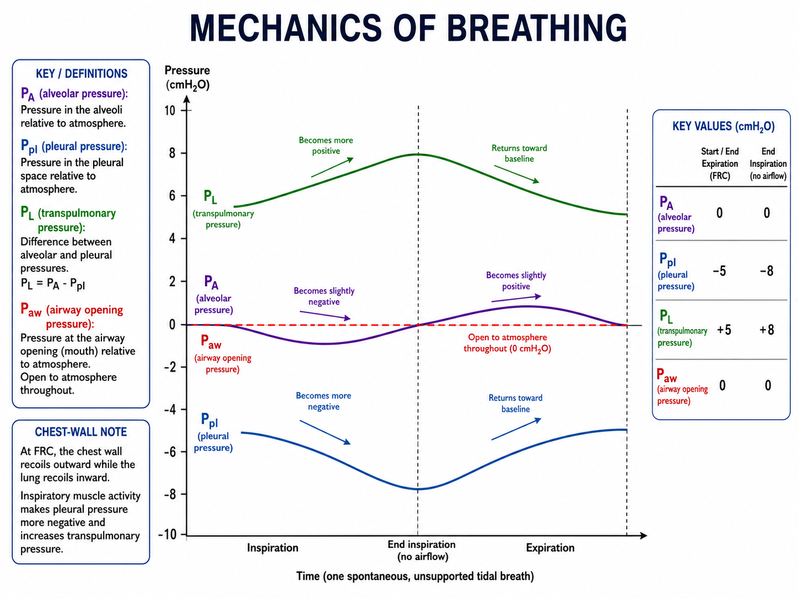
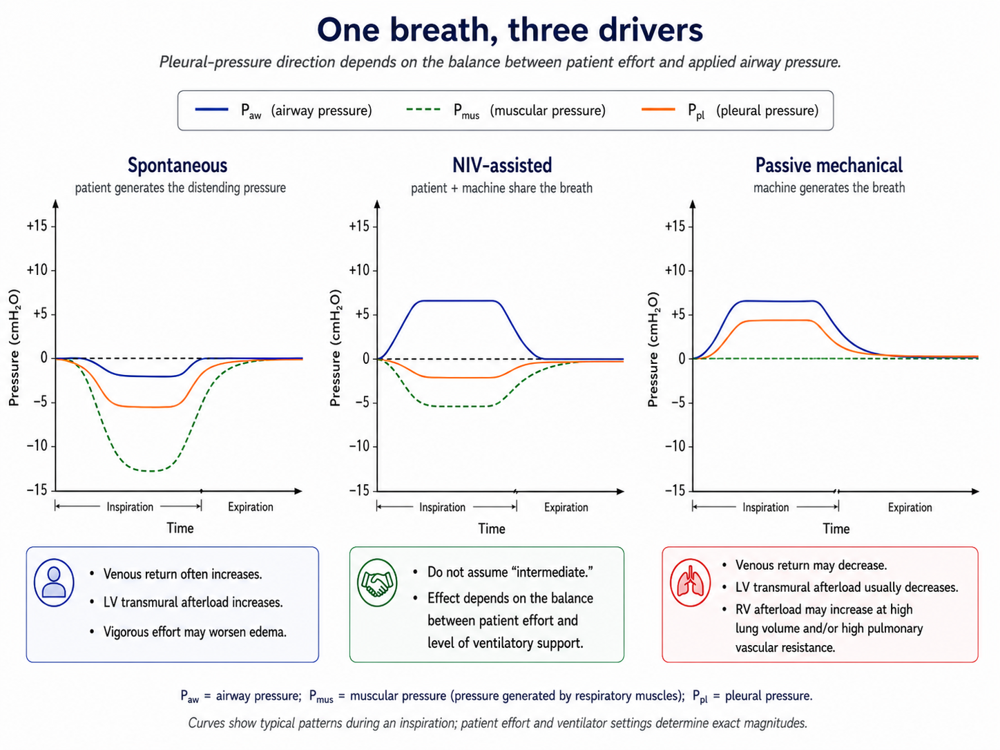
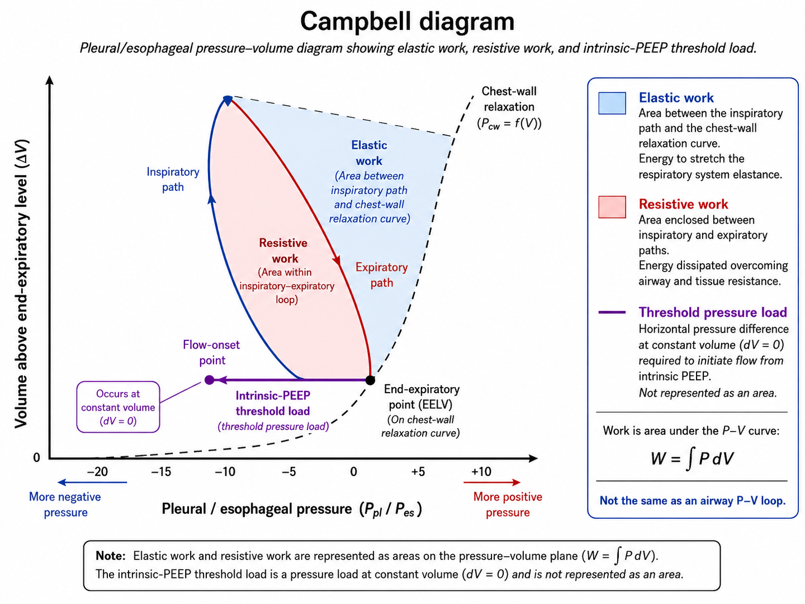
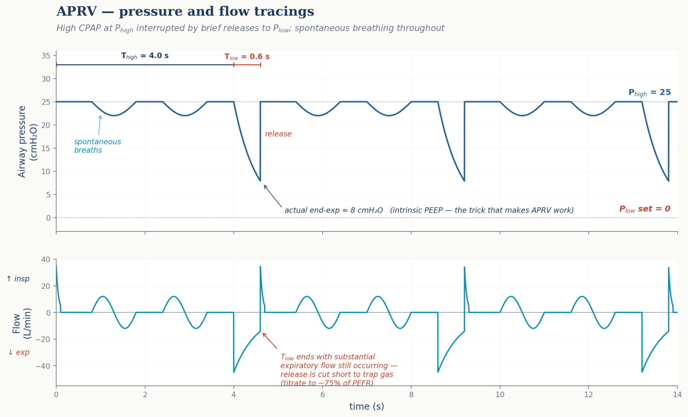
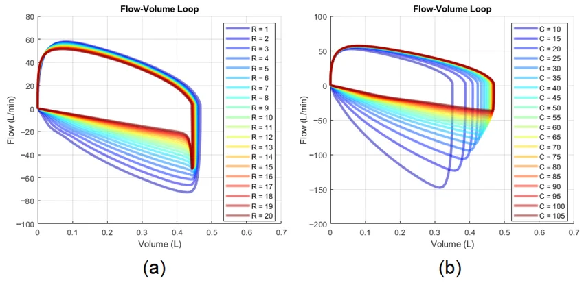
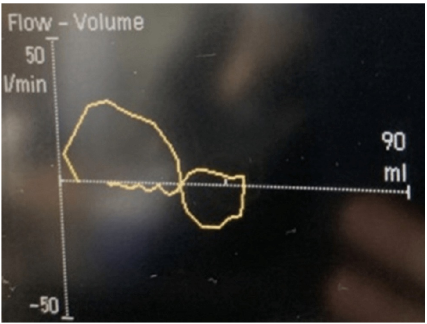
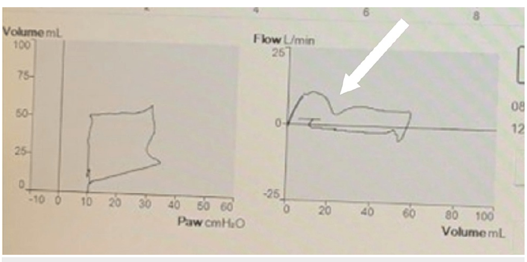
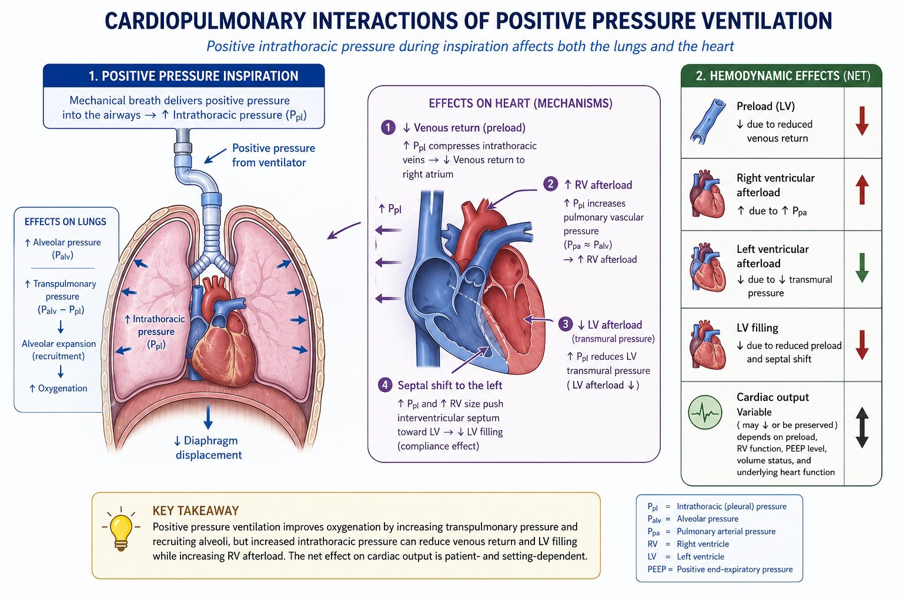

Part IFoundationsBuild the conceptual base: who needs ventilation and why; the respiratory physiology that ventilator settings interact with — gas-exchange essentials, hypoxemia, and CO₂ transport with the control of breathing; then the bedside PFTs that map onto every chronic-vent patient and the lung mechanics that govern every alveolus.7 chapters
Part IIMechanics & the ventilatorEquipment fluency: lung mechanics, the P-V curve, how a breath is constructed, the conventional and modern modes, and a defensible day-1 setup that keeps you out of trouble.6 chapters
Part IIIReading the ventilatorThe information density at the bedside is on the screen, not in the chart. Six waveforms and three numbers will tell you almost everything you need.6 chapters
Part IVDisease-specific strategiesThe same vent in a different patient becomes a different tool. Seven archetypes — ARDS, obstructive lung disease, cardiogenic edema, neuro/ICP, obesity & pregnancy, PE/RV failure, neuromuscular weakness — cover most ICU vent decisions.7 chapters
Part VAdvanced conceptsThe toolbox that separates fellowship-trained intensivists from non-specialists: how to titrate PEEP physiologically, how to read the chest wall, the mortality math behind driving pressure, and the major rescue therapies.6 chapters
Part VIAirway management & pharmacologyThe noninvasive options that may keep the patient off the vent, the procedure that gets them on it when those options aren’t enough, and the drugs that keep them safe there.3 chapters
Part VIILiberationMost patients leave the vent more by way of careful liberation than by elegant initial settings. Daily readiness, structured SBT, disciplined extubation criteria, and end-of-life withdrawal done well save ICU days and dignify the unsalvageable.3 chapters
Part VIIIBedside applicationWhen the alarm goes off, the patient drops their sat, or the chest stops rising — the diagnostic algorithms in this section get you to a fix.2 chapters
Part IXAdjunctive topicsSpecial clinical scenarios that don’t fit the standard archetypes, plus the unglamorous bedside skills (cough assist, in-line drug delivery) that make the difference between passed and failed extubations.3 chapters
AppendixEquations, medications, abbreviations, referencesQuick-reference materials synchronized to the locked chapters: mechanism-first reference cards, equations with interpretation boundaries, a ventilation-relevant medication map, alarm localization, the abbreviations glossary, and citations.6 chapters
From first principles to the next setting change — the physiology behind every decision at the ventilator.
Written for everyone learning to manage vented patients — from the medical student on a first ICU rotation to the resident covering nights, the hospitalist running a stepdown, and the PCCM fellow building toward independent practice. It spans the full arc: pulmonary physiology, mode mechanics and waveform interpretation, disease-specific strategy, and advanced concepts — driving pressure, transpulmonary pressure, mechanical power, proning, and ECMO — through liberation, bedside troubleshooting, and worked cases.
Edition
Volume I · public edition 1.2First compiled May 2026 · internal build v1.10.133
Currency
Reviewed Aug 202643-chapter scientific revision complete
How to cite — Bedside Reference. Guide to Ventilation, Vol. I, public edition 1.2. First compiled May 2026; foundation revision August 2026.
Choose your route
Learn, look up, or act at the bedside
The guide now separates sequential learning from rapid reference and urgent problem-solving. Your content is unchanged; the route determines what is surfaced first.
Abbreviations: Terms with a dotted underline can be hovered, focused with the keyboard, or tapped to reveal their meaning in place.
Recommended curriculumUse the core path first; open deeper chapters when the patient or concept requires them.
A fast map back to the locked chapters. This page deliberately avoids universal phenotype recipes: set a physiologic objective, measure the delivered response, and use the owning chapter when a disease-specific number or treatment decision matters.
★ First reassessment after starting or changing support
Set → measure → decide whether the response supports the setting
Domain
Measure now
Question
Owner
Breath size / lung stress
Delivered VT in mL/kg PBW; valid Pplat when obtainable; total PEEP when relevant; respiratory-system driving pressure as a trend
Is the delivered breath appropriate for the available lung and measurement conditions?
★ What is genuinely generalizable about lung protection?
Scale tidal volume to predicted body weight (PBW), not actual body weight, then interpret the achieved pressures, effort, and mechanics.
In ARDS, low-tidal-volume ventilation in the 4–8 mL/kg PBW range and a reliably measured Pplat <30 cmH₂O are guideline-supported boundaries; disease-specific implementation lives in §20.
Respiratory-system driving pressure is a useful exposure/prognostic signal under valid measurement conditions, not a universal stand-alone treatment cutoff.
PEEP is a monitored intervention, not a diagnosis-based preset. Keep a change only when recruitment/oxygenation/mechanics improve without unacceptable overdistension, gas trapping, or circulatory harm.
Oxygen and pH targets are contextual. Avoid both inadequate support and the mechanical cost of forcing a universal “normal” number.
Patient effort matters: a low airway pressure does not guarantee low lung stress during vigorous spontaneous effort.
★ Daily liberation: three separate decisions
Is a monitored spontaneous-breathing trial (SBT) reasonable today? Look for improvement of the acute process, gas exchange compatible with a trial, adequate circulation, sufficient inspiratory capacity, and a safe monitored setting. Do not require one universal FiO₂, PEEP, vasopressor, pH, or RSBI gate.
Can the patient sustain spontaneous breathing? SBTs can be performed with or without low-level pressure support. Follow the whole trajectory—respiratory pattern, effort, comfort, gas exchange, circulation, and mental status. RSBI is optional; it is not required to determine readiness.
Can the airway be maintained after the tube is removed? Make a separate decision about airway protection, cough, secretions, upper-airway risk, neurologic trajectory, and the planned post-extubation support.
Rapid flow-dependent pressure during a waveform-compatible passive constant-flow breath: Prapid ≈ Ppeak − P1. Ppeak − Pplat,late also includes slower time-dependent decay and is a composite dynamic-loss measure.
Time constant: τ = R × C. Use a resistance appropriate to the modeled phase; do not derive a true expiratory τ from PIP − late Pplat. It is an explanatory model, not a universal bedside timing prescription.
Expiratory flow that has not returned to baseline before the next breath is a clue to incomplete emptying; quantify total PEEP with a valid end-expiratory occlusion when appropriate.
See the consolidated equations section for assumptions and interpretation boundaries.
★ Sudden deterioration: stabilize first, then localize
Look at the patient. Confirm pulse/perfusion, validate SpO₂, inspect chest rise, and look at the capnogram.
Verify the airway and system. Check tube depth/securement, circuit connections, ventilator power and gas supply.
If unstable and ventilation is uncertain, provide rescue ventilation. Disconnect from a suspected ventilator/circuit problem and manually ventilate with oxygen using a device/PEEP strategy appropriate to the physiology while immediate threats are treated.
Run DOPES as a differential: displaced tube, obstruction, pneumothorax, equipment/circuit failure, and stacked breaths/dynamic hyperinflation. It is a memory aid, not an exhaustive list.
After stabilization, identify the mechanism from examination, manual-ventilation feel, waveforms, pressure measurements, POCUS, and targeted imaging/labs.
Use a valid passive zero-flow hold before interpreting plateau pressure
Pattern
What it suggests
Examples
Next move
Ppeak rises; consistently sampled late Pplat relatively unchanged
Larger total dynamic pressure loss—rapid flow-dependent and/or slower time-dependent
Rapid: tube/circuit narrowing, secretions, bronchospasm, or higher inspiratory flow. Slower: stress relaxation or gas redistribution. Effort or measurement differences may confound either pattern.
Compare matched flow and hold timing. Use Ppeak−P1 when P1 is resolved to localize the rapid component; P1−late Pplat reflects slower decay. Then examine the tube, circuit, airway, effort, and waveform.
Use the lightest safe strategy consistent with comfort, synchrony, neurologic needs, and lung protection; no single infusion is preferred for every patient.
Use only for a defined indication and deliver through a compatible circuit/device setup.
For medication ranges, verify the current manufacturer labeling, pharmacy reference, and institutional protocol. The guide intentionally does not maintain a parallel critical-care dosing formulary.
★ Noninvasive support versus intubation
Choose support by physiology and trajectory; scores are reassessment aids, not airway commands
Pattern
Reasonable first support when appropriate
Escalate when
Acute hypercapnic COPD exacerbation
NIV is first-line for appropriate patients with acute hypercapnic respiratory failure; selected less-severe cases may use other support only with close reassessment and rapid NIV escalation available.
Airway protection fails, mental status/effort/gas exchange worsens, hemodynamics become unsafe, or adequate noninvasive support is not achievable.
Cardiogenic pulmonary edema
CPAP or bilevel NIV when the patient can protect the airway and tolerate the interface.
Shock, worsening work of breathing/gas exchange, airway failure, or inability to tolerate effective support.
Acute hypoxemic respiratory failure
HFNC is often useful; NIV is phenotype- and context-dependent.
Progressive oxygenation failure, excessive effort, exhaustion, worsening circulation/mental status, or another indication for definitive airway control.
Immediate airway or resuscitation need
Do not force a noninvasive trial.
Proceed to definitive airway management when the airway cannot be protected or support is failing.
ROX, HACOR, and similar tools can structure reassessment but do not replace the bedside decision. See §1 and §33.
Overdistension or an unfavorable pressure/circulatory tradeoff is possible.
Undo or modify the step and reassess the mechanism.
Total PEEP/hyperinflation rises in obstructive physiology
External PEEP may be adding to gas trapping rather than merely unloading trigger threshold.
Reduce/stop the trial and restore adequate expiratory time; use the response-based approach in §17.
No meaningful benefit
A higher number is not intrinsically better.
Return to the prior setting and pursue another mechanism.
ARDS-specific empirical PEEP/FiO₂ protocol pairs remain available as trial-derived protocols in §20; they are not universal phenotype prescriptions.
★ Severe ARDS: evidence map, not a mandatory rescue ladder
Core: low-tidal-volume lung protection with reliably measured Pplat <30 cmH₂O.
Strong evidence: prolonged prone positioning for severe ARDS; current ATS guidance recommends >12 h/day rather than requiring one trial-specific 16-hour threshold.
Conditional options: corticosteroids; a higher-PEEP strategy in moderate-to-severe ARDS without routine prolonged high-pressure recruitment maneuvers; neuromuscular blockade when deep control of effort is clinically required.
Rescue/bridge: inhaled pulmonary vasodilators can be considered selectively when a short-term physiologic effect is useful.
VV-ECMO: consider early referral for selected severe, potentially reversible respiratory failure at an experienced center. Trial enrollment values are context, not universal automatic indications.
Full evidence hierarchy and protocol details: §20, §31, and §32.
◆Index of tools & tables
Interactive tools
Figures, tables, tools, and workflows by chapter
Bedside-Now
A triage index over the locked teaching chapters, organized by what is happening to the patient rather than by topic. It routes you to the owning chapter; it does not create independent thresholds or treatment recipes.
All
Alarms
Deterioration
Waveforms
Procedures
Situations
Red — act now: life-threatening, or a major high-stakes stepAmber — urgent: assess and treat promptlyBlue — reference: waveform patterns & special situations
Alarms
vent is yelling — start here
High peak pressure (PIP up)
Assess the patient, then separate rapid flow-dependent, slower time-dependent, elastic/end-expiratory, effort-related, and mixed causes. During a valid passive constant-flow breath, Ppeak rising more than a consistently sampled late Pplat signals a larger total dynamic loss—not pure resistance. Ppeak−P1 at matched flow better localizes the rapid component when P1 is resolved; P1−late Pplat reflects slower decay. A rising late Pplat supports a larger elastic and/or end-expiratory baseline load. Treat the verified mechanism rather than the alarm number.
Trace the circuit, verify tube depth and waveform capnography, compare inspired and exhaled volume, and check cuff integrity. Common mechanisms include disconnection/leak, tube migration, APF/BPF, apnea or failed triggering. Stabilize first if delivered ventilation is uncertain.
Determine whether this is true apnea, failed trigger detection, oversedation/residual medication effect, neurologic deterioration, fatigue, or a circuit/device problem. Maintain adequate backup ventilation while the cause is identified; do not change modes by ritual if the patient is already safely supported.
Incomplete expiratory-flow return is a clue to dynamic hyperinflation. Reduce excessive minute-ventilation demand, preserve more effective expiratory time, treat obstruction, and measure total PEEP with a valid hold when appropriate. External PEEP is a response-based trial, not a fixed fraction of auto-PEEP.
Set oxygen alarms to the patient’s actual clinical target and oximeter reliability. A controlled 88–92% range is appropriate in selected patients at risk for hypercapnic respiratory failure, not as a universal target for all chronic lung disease.
patient is changing — vent may or may not be the cause
Sudden desaturation on the vent
Assess the patient first and verify that oxygenation/ventilation are actually failing. Rapidly check airway position/patency, circuit/equipment, pneumothorax, obstruction/secretions, dynamic hyperinflation, and new lung or circulatory pathology. DOPES is a useful differential, not a timed ritual; provide rescue ventilation when needed while the cause is localized.
Hypotension after intubation or after raising PEEP
Consider several mechanisms at once: induction-related vasodilation or loss of sympathetic tone, reduced venous return, dynamic hyperinflation, right-ventricular loading, pneumothorax, bleeding, or the underlying shock state. Treat the demonstrated mechanism; fluid, vasoactive support, PEEP reduction, or circuit disconnection are not interchangeable reflexes.
New oliguria + rising airway pressures (abdominal compartment)
A rising abdominal/chest-wall load can increase pleural pressure, reduce respiratory-system compliance, and raise airway/plateau pressure without primary worsening of lung parenchyma. Reassess abdominal pressure/volume status when clinically appropriate and interpret airway pressure together with chest-wall mechanics and perfusion.
Minute ventilation alone can mislead when effective alveolar ventilation changes. Recheck dead-space/V/Q physiology, rebreathing, leak, trigger/cycling problems, dynamic hyperinflation, cardiac output/perfusion, and increased CO₂ production. Do not simply increase RR until expiratory flow, total PEEP, mechanics, and the acceptable PaCO₂/pH strategy are understood.
Classify the interaction before treating it: trigger, pressurization/flow, cycling, breath stacking, reverse triggering, pain/air hunger, or excessive respiratory drive. Correct the mechanism and reassess effort and delivered lung stress. Analgesia or sedation may be appropriate for a defined problem, but should not substitute for fixing a mismatched ventilator setting.
Escalating FiO₂ may have limited effect when shunt or severe V/Q inequality dominates. Reassess atelectasis/recruitment, edema, mucus obstruction, pneumothorax, PE/right-heart physiology, intracardiac shunt when relevant, and progression of the underlying lung process before reflexively escalating pressure or oxygen.
New right-heart strain on echo / hypotension + clear lungs + hypoxia
Acute PE is an important possibility, but not the only cause of new right-ventricular pressure/volume stress. Evaluate the cause while supporting perfusion and avoiding preventable increases in RV afterload from severe hypoxemia, acidemia/hypercapnia, overdistension, or excessive mean airway pressure. Use PEEP as a monitored lung–circulation intervention, not a preset “minimum.”
A changing arterial-to-end-tidal CO₂ gap can reflect altered dead-space/V/Q physiology, perfusion, obstruction/heterogeneous emptying, or measurement conditions. Do not treat ETCO₂ as an interchangeable PaCO₂ surrogate when the gap is changing; use arterial sampling when the exact PaCO₂ matters.
visual differential — what the screen is telling you
Expiratory flow doesn’t return to zero before the next breath
Incomplete expiratory-flow return is a clue to breath stacking/dynamic hyperinflation, especially when expiratory time is short relative to the slowest units. Confirm the pattern with total PEEP and the clinical context rather than treating the waveform alone.
A concave expiratory contour can accompany expiratory flow limitation or heterogeneous obstructive emptying, but the shape is qualitative and not a stand-alone severity measurement. Correlate it with airway resistance, expiratory flow, auto-PEEP, bronchodilator response, and the patient’s mechanics.
Two ventilator inspirations separated by little or no exhalation can markedly increase delivered breath size. Determine whether the mechanism is high respiratory drive, premature cycling, inadequate inspiratory delivery, reverse triggering, or another timing problem; fix that mechanism rather than automatically lengthening inspiratory time or increasing VT.
Reverse-trigger pattern (vent breath followed by patient effort)
Ventilator insufflation can entrain a delayed patient effort, sometimes producing breath stacking or regional overdistension. Confirm the timing relationship and assess respiratory drive, sedation/analgesia, mode/timing, and delivered lung stress before choosing an intervention.
Late inspiratory flattening/beaking can be a qualitative clue to decreasing compliance during tidal inflation, but dynamic P–V loops are affected by flow, resistance, effort, and heterogeneity. Reassess VT, PEEP, pressure, effort, and the full mechanics rather than using the sign as an automatic setting command.
A lower inflection region on a quasi-static inflation curve can orient interpretation of opening/recruitment behavior, but it is not a universal PEEP setpoint and does not mean recruitment is complete above it. PEEP selection requires measured recruitment/overdistension, mechanics, gas exchange, and hemodynamic response.
Ineffective triggering (patient effort doesn’t initiate a breath)
Look for an excessive trigger threshold, intrinsic-PEEP threshold load, weak effort, leak, or device/algorithm issues. Make triggering sufficiently responsive without causing auto-triggering, and address dynamic hyperinflation when it is creating the threshold load.
An upsloping alveolar plateau commonly reflects heterogeneous emptying and can support an obstructive physiology interpretation, but it is not specific. Trend it with the clinical picture, airflow/mechanics, and treatment response rather than using the slope alone as a diagnostic test.
Flat or absent capnograph waveform after intubation
Treat absent sustained exhaled CO₂ after intubation as an airway-verification emergency. Rapidly confirm tube position and patency with continuous waveform capnography plus the airway examination; profound low-flow states and complete obstruction can also reduce the signal. If tracheal placement cannot be confirmed, correct the airway without delay.
Use the Chapter 34 airway pathway: define the indication, optimize oxygenation and hemodynamics, prepare a difficult-airway/rescue plan, choose induction and neuromuscular-blocking strategy for the physiology, and plan the first post-intubation ventilator settings before apnea. Verify current medication doses and contraindications with institutional/pharmacy references.
Passing an SBT answers whether spontaneous breathing is sustainable; it does not prove airway safety. Separately assess airway protection, cough/secretions, upper-airway risk when clinically indicated, neurologic trajectory, and the appropriate immediate post-extubation support.
Treat SBT intolerance as physiologic information. Classify the dominant mechanism—respiratory load, muscle capacity, cardiovascular stress, gas exchange, drive/comfort, or unresolved acute process—then correct what is reversible before the next trial.
For severe ARDS, prolonged prone positioning is a guideline-supported therapy when it can be delivered safely; current guidance supports sessions longer than 12 hours/day. Trial entry thresholds such as those from PROSEVA are useful evidence anchors, not universal permission or stopping rules.
Consider early discussion with an experienced ECMO center for selected patients with severe, potentially reversible ARDS despite optimized conventional care. Trial enrollment thresholds can orient referral but are not universal ECMO indications; candidacy depends on reversibility, trajectory, comorbidity, duration/exposures, and center expertise.
Use ongoing neuromuscular blockade selectively when a defined clinical objective requires deep control of respiratory effort or movement. Ensure analgesia/sedation and eye/pressure-injury protection, choose agent/dose per current protocol, and use quantitative or clinical monitoring appropriate to the goal rather than one universal TOF target.
Comfort is the endpoint. Prepare the patient and family, treat dyspnea/pain/anxiety anticipatorily, confirm neuromuscular recovery when relevant, choose a withdrawal technique consistent with the situation and goals, and reassess symptoms continuously rather than following a fixed medication recipe.
During cardiac arrest, ensure reliable ventilation and oxygen delivery without interrupting high-quality resuscitation. Capnography can help assess tube position, ventilation, compression-related pulmonary blood flow, and prognosis as part of a multimodal picture; no single ETCO₂ value should be used alone to terminate resuscitation.
Before transport, confirm a ventilator/oxygen plan that can reproduce the needed support, adequate gas supply, continuous monitoring, airway/circuit security, and a rescue-ventilation strategy. Recheck the patient and every connection after each transfer between devices or locations.
Avoid unintended hypo- or hypercapnia when intracranial pressure is clinically important. Normocapnia is generally the baseline goal; short-term controlled hyperventilation is a rescue maneuver for impending herniation/ICP crisis while definitive treatment proceeds, not a routine fixed PaCO₂ target.
Pregnancy lowers the usual PaCO₂ and changes respiratory reserve, so a “normal nonpregnant” PaCO₂ can represent relative hypoventilation. Use PBW rather than gravid body weight for VT indexing, optimize position/hemodynamics, and set gas-exchange goals from maternal physiology, fetal considerations when relevant, and lung-protection tradeoffs rather than a single PaCO₂ number.
First verify the quantitative monitor, stimulation site, electrode/contact quality, and what muscle group is actually moving. Reassess analgesia/sedation separately from blockade, then adjust neuromuscular blockade only to the defined clinical objective and agent-specific monitoring plan.
Use height-derived PBW for VT indexing. Expect reduced respiratory reserve and important chest-wall/abdominal loading in many patients; optimize position and titrate PEEP as a monitored trial using recruitment, expiratory flow, pressure, oxygenation, and hemodynamic response rather than a fixed obesity range.
Anticipate dynamic hyperinflation and post-intubation hemodynamic risk. Prioritize adequate expiratory time and avoidance of excessive minute ventilation, treat bronchospasm, and accept contextual hypercapnia when needed to prevent dangerous gas trapping. Choose induction/paralysis from airway and hemodynamic physiology rather than a ketamine-only or fixed RR/pH recipe.
Follow serial respiratory physiology together with trajectory, work of breathing, bulbar function, cough/secretions, airway protection, mental status, and autonomic/hemodynamic issues. Historical VC/FVC, MIP/NIF, and cough-flow values are warning signals—not automatic intubation commands—and tracheostomy timing is individualized.
Choose noninvasive support from the physiology, airway safety, secretion burden, mental status, hemodynamics, interface tolerance, and trajectory. NIV has strong evidence in appropriate acute hypercapnic COPD exacerbation and cardiogenic pulmonary edema, but no score, clock, or obligatory NIV trial should delay definitive airway management in a deteriorating patient.
Bedside calculations for physiology, mechanics, gas exchange, and longitudinal comparison. Outputs are intentionally not treatment commands: interpret them using measurement validity, the patient's syndrome and trajectory, and the owning chapter. Protocol tables are shown only as protocol references. The same threshold-neutral quick calculator is available from the sticky ∑ button at the bottom-right of every page.
Calculated exposuresVT/kg —Pplat —ΔP —MP —
Patient
Arterial blood gas
Ventilator settings
Optional — dead space, oxygen delivery, transpulmonary pressure
A–a — age heuristic—mmHg\(\text{age}/4 + 4\) — historical room-air orientation only; not a diagnostic boundary and not valid as a universal expectation on supplemental O₂
P/F ratio——\(\text{P/F} = P_aO_2 / F_iO_2\) — oxygenation ratio; ARDS classification requires the full syndrome definition and support context
S/F ratio—\(\text{S/F} = SpO_2 / F_iO_2\)
ROX index—\(\text{ROX} = (SpO_2 / F_iO_2) / RR\) — reassessment/prognostic aid during HFNC; never an automatic continuation or intubation command
VE — minute ventilation—L/min\(V_E = V_T \times RR\)
Vd/Vt — dead-space fraction—\(\frac{V_d}{V_T} = \frac{P_aCO_2 - P_{ET}CO_2}{P_aCO_2}\) — ETCO₂-based Enghoff-style surrogate; not a true Bohr or standard mixed-expired Enghoff measurement
Target PaCO₂ helper—\(\frac{V_E^\text{new}}{V_E^\text{cur}} = \frac{P_aCO_2^\text{cur}}{P_aCO_2^\text{target}}\) — mathematical estimate only if CO₂ production and effective dead space are unchanged; not a direct RR or VT prescription
Mechanics
Driving pressure (ΔP)—cmH₂O\(\Delta P_{RS} = P_\text{plat} - PEEP_\text{total}\) — use valid passive/static measurements; entered PEEP must represent effective total end-expiratory pressure
Rrapid — rapid flow-dependent resistance—cmH₂O·s/L\(R_\text{rapid} \approx (PIP - P_1) / \dot{V}\) during a waveform-compatible passive constant-flow breath; late Pplat cannot substitute for P1
Inspiratory τ model (requires P1)—s\(\tau_\text{insp,model} = R_\text{rapid} \times C_\text{stat}\); this is not measured expiratory resistance or a universal emptying target
PL,insp — transpulmonary insp.—cmH₂O\(P_{L,insp} = P_\text{plat} - P_\text{esoph}^\text{insp}\) — technique-, position-, and reference-method dependent; interpret with Chapter 28 rather than a universal cutoff
PL,exp — transpulmonary end-exp.—cmH₂O\(P_{L,exp} = PEEP_\text{total} - P_\text{esoph}^\text{exp}\) — technique-, position-, and reference-method dependent; near-zero strategies are protocol-specific, not universal targets
Power & lung protection
VT / PBW—mL/kg\(V_T / \text{PBW}\) — index breath size to PBW; apply syndrome-specific lung-protection guidance rather than treating one range as universal
RSBI — Yang-Tobin—\(\text{RSBI} = RR / V_T(L)\) — descriptive/predictive index; the 2024 AARC guideline states that RSBI is not required to determine readiness for an SBT
Decision aids
PEEP / FiO₂ trial-protocol pairs
FiO₂ row
Low-PEEP table
High-PEEP (LOVS)
Your PEEP
Closest
—
—
—
Reference lookup for trial/protocol PEEP–FiO₂ pairs; these are empirical protocol examples, not a patient-specific instruction to raise or lower PEEP
Snapshots
Label
Time
VT/kg
ΔP
P/F
MP
RSBI
No snapshots saved. Useful for tracking PEEP titration, SBT, or prone effects. Persist in this browser only.
Interpretation boundary. These calculations are educational estimates and trend tools, not stand-alone treatment thresholds. PBW (men) = 50 + 2.3·(ht in − 60); women = 45.5 + 2.3·(ht in − 60). The age/4 + 4 A–a expression is a historical room-air heuristic. MP equations are mode/model dependent. ROX and RSBI are reassessment aids, not automatic continuation, SBT, or intubation rules. Enghoff Vd/Vt requires mixed-expired CO₂; ETCO₂ is only a surrogate. Esophageal-derived transpulmonary pressure depends on technique, position, and reference method. Time constants describe a model; compare actual expiratory flow and total PEEP rather than converting 3τ into a universal respiratory-rate ceiling.
Part I
Foundations
Build the conceptual base: who needs ventilation and why; the respiratory physiology that ventilator settings interact with — gas-exchange essentials, hypoxemia, and CO₂ transport with the control of breathing; then the bedside PFTs that map onto every chronic-vent patient and the lung mechanics that govern every alveolus.
1Why we ventilate — support, airway control, and trajectory
Mechanical ventilation is one form of respiratory support—not the diagnosis and not the treatment of the underlying disease. Start by identifying which physiologic function is failing, then decide whether that support can be delivered safely without an endotracheal tube.
The ventilator's four physiologic jobsMechanical ventilation can oxygenate, ventilate, off-load the work of breathing, and provide a protected airway. Anticipated deterioration is best thought of as a trajectory decision: the clinician may choose definitive support before one of those four functions has completely failed. This four-job frame is deliberately broader than any single blood-gas threshold.
Effective alveolar ventilation is inadequate, with clinically important acute or acute-on-chronic acidemia.
Unsustainable workLoad exceeds capacity
Effort is excessive, reserve is falling, or fatigue is imminent.
Airway failurePatency & protection
Patency, secretion clearance, or separation from ongoing contamination is unreliable.
Anticipated deteriorationTrajectory
Controlled support now is safer than rescue after predictable decline.
AWhat physiologic support is needed?
Conventional O₂
HFNC
CPAP / NIV
Invasive ventilation
Choose by physiology and trajectory—not as a mandatory ladder.
BCan it be delivered safely without an ETT?
Yes Monitored noninvasive support
or
No Definitive airway planning
Parallel action: respiratory support buys time; simultaneously treat the disease causing the failure.
Figure 1.1 — Why respiratory support is needed. Five functional failures drive escalation. The required physiologic support and the need for an endotracheal tube are related—but separate—decisions.
1.1 Two decisions, not one
A patient may need respiratory support without needing intubation. Ask these questions in order:
What physiologic support is needed? Oxygenation, CO₂ clearance, reduction in respiratory workload, airway control, or preparation for expected decline.
Can that support be delivered safely without an endotracheal tube? Consider airway patency, secretion burden, mental status, hemodynamics, tolerance, trajectory, and whether the chosen modality is improving the patient quickly enough.
Physiology noteOxygenation is influenced by FiO₂, PEEP, mean airway pressure, lung recruitment, positioning, cardiac output, and treatment of the cause. CO₂ clearance depends on effective alveolar ventilation—not minute ventilation alone—so dead space, obstruction, circuit factors, and patient effort matter alongside tidal volume and respiratory rate.
1.2 When invasive ventilation becomes necessary
Refractory oxygenation failure — inadequate oxygenation despite an appropriate noninvasive strategy, or a support requirement and trajectory that make continued noninvasive management unsafe.
Acute ventilatory failure — rising PaCO₂ with clinically important acute or acute-on-chronic acidemia, declining mental status, exhaustion, or failure of a suitable NIV trial.
Unsustainable respiratory effort — increasing work, fatigue, or load-capacity imbalance despite treatment and appropriately selected support.
Airway obstruction or inadequate airway maintenance — inability to maintain patency, manage secretions, or protect the airway from ongoing contamination. GCS may support assessment but should not be used as an isolated intubation trigger.
Need for controlled ventilation — selected neurologic emergencies, procedures, severe dyssynchrony, or physiologic states in which precise control is required.
Expected rapid deterioration — secure the airway while the situation, personnel, and hemodynamics remain controllable rather than waiting for arrest physiology.
Failure or contraindication of noninvasive support — worsening gas exchange, effort, mentation, or hemodynamics; inability to tolerate or manage the interface; or a disease process that cannot be safely supported noninvasively.
Metabolic acidosis is differentMarked respiratory effort may be essential compensation rather than primary ventilatory failure. Do not intubate for a low pH alone. If airway control becomes necessary, minimize interruption of spontaneous ventilation when feasible, avoid preventable apnea, and immediately approximate the patient’s pre-intubation compensatory ventilation while balancing lung protection and the risk of dynamic hyperinflation. A sudden rise in PaCO₂ after induction can sharply worsen acidemia and hemodynamics.86
1.3 Match the support modality to the problem
Support modality by physiologic problem
Clinical pattern
Often appropriate initial support
Move toward intubation when…
Acute hypoxemic respiratory failure
HFNC has a strong 2026 ATS recommendation. Selected NIV or CPAP is a conditional alternative when close monitoring and rapid escalation are available.
Oxygenation, effort, mentation, or hemodynamics worsen; the required support escalates; or improvement is not prompt enough.
Acute hypercapnic respiratory failure, especially COPD with respiratory acidosis
NIV has a strong 2026 ATS recommendation when no immediate airway indication is present. HFNC is not equivalent first-line ventilatory support; it is a conditional option only in selected less-severe hypercapnia with mild acidemia when close monitoring and prompt escalation to NIV are available.
Acidemia or distress worsens, airway maintenance becomes unreliable, severe instability develops, or the NIV trial fails.
Cardiogenic pulmonary edema
CPAP or bilevel NIV plus disease-directed treatment
Shock, airway failure, refractory distress, or inadequate response develops.
Airway obstruction or inability to maintain the airway
Definitive airway planning; do not rely on noninvasive support to secure the airway
The indication is usually already present—act before anatomy or physiology deteriorates further.
Severe metabolic acidosis
Treat the cause and preserve compensatory ventilation. Selected NIV may help support work of breathing or preoxygenation when appropriate, but it does not replace definitive airway management when a true airway indication develops.
Compensatory ventilation is failing, fatigue or airway need develops, or deterioration makes controlled airway management necessary.
2026 ATS guidelineRecommendation strength matters.Strong: HFNC for acute hypoxemic respiratory failure; NIV for acute hypercapnic respiratory failure; and HFNC or NIV for preoxygenation before endotracheal intubation. Conditional: NIV or CPAP as alternatives in acute hypoxemic respiratory failure, and HFNC only for selected less-severe hypercapnia with mild acidemia (the guideline gives pH >7.25 as an example) when close monitoring and prompt escalation to NIV are available. After extubation, support is risk-stratified: HFNC is suggested for lower-risk patients and NIV for higher-risk patients. Detailed airway and liberation implementation belongs in later chapters.69
Prediction tools are reassessment aids, not intubation commandsTrials of acute hypoxemic respiratory failure use heterogeneous intubation criteria. A 2026 systematic review found that explicit criteria were common but varied across studies and did not appear to modify the relative treatment effects of noninvasive respiratory-support strategies. Use scores and thresholds to structure reassessment—not to replace the functional indications in §1.2.85
1.4 Common clinical patterns
Hypoxemic failure — pneumonia, ARDS, edema, atelectasis, pulmonary vascular disease, or another cause of impaired oxygen transfer. Interpret oxygenation according to FiO₂, flow or pressure support, PEEP, effort, hemodynamics, and trajectory—not one saturation or PaO₂ value.
Acute or acute-on-chronic hypercapnic failure — COPD or asthma, neuromuscular weakness, drug effect, central drive failure, obesity hypoventilation, or excessive apparatus dead space.
Perioperative or low-FRC physiology — atelectasis and reduced FRC may improve with positioning, adequate PEEP, pain control, mobilization, restoration of spontaneous breathing when appropriate, and treatment of contributing causes. Recruitment maneuvers should be individualized.
Shock with high respiratory workload — respiratory-muscle oxygen demand can become substantial; reducing the load may improve global perfusion, but induction and positive pressure can also precipitate collapse.
Airway failure — obstruction, inability to clear secretions, bulbar dysfunction, recurrent contamination, ongoing upper-GI bleeding, or a rapidly changing airway lesion.
Anticipated decline — a worsening trajectory in which delaying airway control increases procedural risk or removes the opportunity for a controlled approach.
Perioperative and obesity-related hypoxemia deserves separate attention because the dominant problem may be loss of end-expiratory lung volume rather than diffuse intrinsic lung injury. Likewise, a patient in shock may require respiratory support because the metabolic cost of breathing has become unsustainable even before an isolated gas-exchange number reaches a conventional threshold. These are physiologic reasons to reassess support, not automatic indications for intubation.
Six recurring bedside patterns account for most escalation decisions: hypoxemic failure, hypercapnic pump failure, perioperative or low-volume atelectatic failure, unsustainable respiratory workload, inability to maintain or protect the airway, and an obviously worsening trajectory. They overlap frequently. For example, pneumonia may begin as oxygenation failure, evolve into unsustainable work, and ultimately require airway control when fatigue or encephalopathy develops.
ARDS terminology belongs in the ARDS chapterThe 2024 Global Definition permits S/F-based recognition under specified conditions and includes selected nonintubated patients receiving HFNC or positive pressure. Chapter 20 provides the actual criteria, severity framework, and limitations; avoid relying on a single regression conversion in an undifferentiated patient.1
Support does not treat the diseaseHFNC, NIV, and invasive ventilation buy time and modify physiology. Simultaneously treat the cause: antibiotics and source control, bronchodilation, diuresis or afterload reduction, reversal of intoxication, reperfusion, secretion management, or other disease-specific therapy.
Support-selection exercise
Identify the failing function, decide whether airway control is needed, and choose the safest initial support.
Guided practice
1. Primary failing function
2. Initial support
3. Escalation trigger
Key takeaways
Start with the failing function: oxygenation, ventilation, sustainable effort, airway maintenance, or anticipated deterioration.
The need for respiratory support and the need for an endotracheal tube are separate decisions.
No isolated PaO₂, SpO₂, PaCO₂, FiO₂, or GCS value substitutes for airway assessment, trajectory, response to treatment, and physiologic reserve.
For acute hypoxemic respiratory failure, HFNC has the strongest current guideline support; NIV or CPAP is a conditional alternative in selected patients with close monitoring. For acute hypercapnic respiratory failure, NIV remains the preferred noninvasive ventilatory support when no immediate intubation indication is present.
An endotracheal tube establishes a controlled airway and permits suctioning and ventilation, but does not eliminate aspiration.
Severe potentially reversible respiratory failure that remains refractory despite optimized conventional management should prompt early discussion with an ECMO-capable center; detailed referral considerations are in §32.
Common error“A single number tells me when to intubate.”Use the whole bedside state: airway, gas exchange, work of breathing, hemodynamics, trajectory, reversibility, and response to the selected noninvasive strategy. Intubate for a real functional indication—not a number in isolation.
2Respiratory physiology essentials
Mechanical ventilation changes pressure, flow, volume, and time. This chapter builds the compact physiologic model needed to predict what those changes will do—from the first pressure gradient that moves gas to the oxygen tension that reaches the arterial blood.
2.1 How a breath is generated
Gas flows only when a pressure gradient exists. During spontaneous inspiration, respiratory-muscle contraction makes pleural pressure more negative, raising transpulmonary pressure and expanding the lung. Alveolar pressure briefly falls below airway-opening pressure, so gas flows inward. During positive-pressure inspiration, the ventilator raises airway pressure; the resulting change in alveolar and transpulmonary pressure depends on respiratory-system mechanics and patient effort.
From conducting airway to gas-exchanging acinus
Functional airway anatomy: where gas is conducted and exchanged
Region
Structural distinction
Physiologic consequence
Trachea and bronchi
Branching conducting tubes with cartilage support; airway epithelium and mucus clearance protect the distal lung.
Conduct, warm, and humidify gas. Their gas volume contributes to anatomical dead space.
Bronchioles through terminal bronchioles
Small conducting airways without cartilage. The terminal bronchiole is the last airway without alveoli in its wall.
Caliber depends on smooth-muscle tone, wall disease, lung volume, and surrounding parenchymal tethering. Narrowing or closure can precede conspicuous abnormalities in larger airways.
Respiratory bronchioles, alveolar ducts, and alveoli
Alveoli first appear along respiratory bronchioles. The gas-exchanging region distal to one terminal bronchiole is an acinus.
Gas must reach an aerated surface supplied by pulmonary capillary blood. An open conducting airway alone does not guarantee effective gas exchange.
Bronchiolar support is partly supplied from outside the airway. As lung volume falls, surrounding traction weakens and vulnerable small airways narrow or close; emphysematous loss of attachments can compound this effect. This connects the anatomical map to airway closure in §2.2, flow-volume interpretation in §5.3, and expiratory flow limitation in §6.4.28
Follow one spontaneous breath from neural drive to exhalation
At rest, inspiratory neural output travels through the respiratory motor system to the diaphragm and other inspiratory muscles. Contraction enlarges the thoracic cavity and makes pleural pressure more negative. The resulting increase in transpulmonary pressure expands the lung, which lowers alveolar pressure slightly below airway-opening pressure and establishes inward flow. At end inspiration the pressure gradient disappears; when inspiratory muscles relax, stored elastic energy in the lung and chest wall drives passive expiratory flow back toward the resting equilibrium volume.
Positive-pressure ventilation changes who creates the distending pressure, not the requirement for a pressure gradient. The ventilator raises airway-opening pressure instead of relying solely on a fall in pleural pressure. In assisted breathing both sources can act at the same time, which is why airway pressure alone does not reveal how much effort the patient is contributing.
One breath, two ways
Spontaneous inspiration
↘ Ppl
Neural drive activates the respiratory muscles.
Pleural pressure becomes more negative.
Transpulmonary pressure rises and the lung expands.
Alveolar pressure falls below the airway opening.
Gas flows inward.
Hemodynamics: negative intrathoracic pressure generally supports venous return, although vigorous effort can markedly increase cardiac and lung stress.
Positive-pressure inspiration
↗ Paw
The ventilator raises airway-opening pressure.
Alveolar pressure rises according to flow, resistance, and elastance.
Transpulmonary pressure usually rises and the lung expands.
Gas flows inward while airway pressure exceeds alveolar pressure.
Patient effort may add to—or oppose—the machine breath.
Hemodynamics: increased intrathoracic pressure may reduce venous return and alter right- and left-ventricular loading.
Gas exchangeFiO₂ · PEEP · effective alveolar ventilation
Figure 2.1 — One breath, two ways. Spontaneous and positive-pressure breaths can create similar inflow while producing different pleural-pressure and hemodynamic effects. The lung expands because transpulmonary pressure changes—not simply because gas is “pulled” or “pushed.”
Pressure languageAirway pressure (Paw) is measured at the ventilator or airway opening. Alveolar pressure (Palv) is the pressure inside ventilated lung units. Pleural pressure reflects the pressure surrounding the lung. Transpulmonary pressure is alveolar minus pleural pressure and is the distending pressure across the lung itself. During flow, Paw and Palv are not interchangeable: the pressure difference reflects the resistive drop across the airway, endotracheal tube, and circuit. During a valid zero-flow occlusion in a passive patient, airway pressure can equilibrate with communicating alveoli; this is the basis of plateau- and end-expiratory-hold measurements used later in the guide.26
2.2 Lung volumes, FRC, EELV, and airway closure
Lung volumes describe where a breath begins and ends. Absolute values vary with height, sex, age, body position, obesity, pregnancy, disease, and measurement method; the numbers below are illustrative reference values rather than treatment targets.
Use FRC and EELV deliberately. FRC is the passive equilibrium volume of the relaxed respiratory system at end expiration when airway-opening pressure is atmospheric. EELV is the broader bedside term for the volume present at end expiration during positive-pressure ventilation, applied PEEP, dynamic hyperinflation, or other conditions in which the operating volume is not the passive zero-PEEP equilibrium.
Illustrative adult lung volumes and capacities
Group
Term
Definition
Illustrative value
Bedside relevance
Measured volumes
VT
Gas moved during a normal breath
Often ~400–600 mL at rest
Varies with body size and metabolic demand; ventilator targets are prescribed separately using predicted body weight.
IRV
Additional volume inspired above a normal VT
~3000 mL
Contributes to inspiratory capacity and ventilatory reserve.
ERV
Additional volume expired below resting end expiration
~1100 mL
Falls with supine position, obesity, pregnancy, and anesthesia.
RV
Gas remaining after maximal expiration
~1200 mL
Cannot be measured by simple spirometry; rises with air trapping.
Derived capacities
FRC
ERV + RV; passive equilibrium volume at relaxed end expiration with atmospheric airway-opening pressure
~2300 mL
Oxygen reservoir and operating volume of resting spontaneous breathing; during PEEP or dynamic hyperinflation, describe the actual end-expiratory operating volume as EELV.
IC
VT + IRV
~3500 mL
Falls as end-expiratory lung volume rises during hyperinflation.
VC
IRV + VT + ERV
~4600 mL
Reflects available ventilatory reserve but depends on effort.
TLC
VC + RV
~5800 mL
Upper mechanical limit of lung inflation.
End-expiratory operating volume and closing capacity determine whether dependent airways remain open
Healthy upright
TLCFRCClosing capacityRV
FRC remains comfortably above closing capacity.
Supine / anesthesia
TLCFRC ↓Closing capacityRV
Reduced FRC narrows the margin before dependent airway closure.
Obesity / pregnancy
TLCFRC ↓↓Closing capacityRV
Reduced FRC narrows the margin to closing capacity; dependent closure becomes increasingly likely in susceptible patients.
Obstruction
TLCEnd-expiratory volume ↑Closing capacityRV ↑
Dynamic hyperinflation shifts breathing toward the upper, less compliant region.
Figure 2.2 — FRC, EELV, closing capacity, and operating lung volume. Falling FRC narrows the margin to airway closure. During PEEP or dynamic hyperinflation, EELV—not “dynamic FRC”—is the clearer term for the actual end-expiratory operating volume.
FRC is an oxygen reservoir—not a universal PEEP target. PEEP can maintain EELV, reduce cyclic closure, or splint collapsible airways. In a triggering patient with expiratory flow limitation, appropriately selected external PEEP may also reduce the inspiratory threshold load imposed by intrinsic PEEP. It can instead increase total PEEP and hyperinflation when flow limitation is absent or the applied pressure is excessive, so expiratory flow, total PEEP, EELV, tidal volume, and hemodynamics must be reassessed rather than assumed.26
Why the operating lung volume matters
The volume at which tidal breathing occurs determines airway caliber, oxygen reserve, recruitability, and the portion of the pressure–volume relationship sampled by each breath. Moving end-expiratory volume downward narrows the margin to dependent airway closure and shortens the time available before desaturation during apnea. Moving it upward can stabilize recruitable lung but can also push already open units toward overdistension or increase the hyperinflation burden in obstructive disease.
For that reason, lung-volume terms are more than memorization. Residual volume and total lung capacity describe the boundaries of the system; vital and inspiratory capacity describe available excursion; FRC identifies the passive equilibrium reference; and EELV identifies the actual end-expiratory operating point under the current support conditions.
2.3 Surface tension, surfactant, and alveolar interdependence
Laplace’s law is a useful analogy for a simplified spherical interface: P = 2T/r. It shows why surface tension becomes increasingly important as radius falls. Intact alveoli, however, are not isolated soap bubbles. They are irregular structures that share septal walls and are supported by surrounding tissue, neighboring units, and the connective-tissue network.
Surfactant, produced by type II alveolar epithelial cells, lowers surface tension—especially at lower lung volumes—reducing the pressure needed to inflate the lung and limiting instability at the air–liquid interface. Alveolar interdependence means that expansion or collapse of one region mechanically affects adjacent regions through shared walls and parenchymal tethering.28
The lung is a collection of isolated bubblesThe classic two-bubble Laplace model is an analogy for the importance of surface tension, not a literal model of intact alveoli. Real alveoli are irregular, share septa, experience variable surfactant concentration, and are mechanically coupled by surrounding parenchyma.
From teaching analogy to the injured heterogeneous lung
1 · Simplified analogy
→
Laplace’s law illustrates why lowering surface tension matters, but isolated spheres do not reproduce intact alveolar mechanics.
2 · Real alveolar network
Shared septa, tissue recoil, geometry, and surfactant stabilize neighboring units through interdependence.
3 · ARDS heterogeneity
Edema, inflammation, surfactant dysfunction, dependent collapse, and regional differences in recruitability coexist.
Figure 2.3 — Alveolar stability is a network property. Surfactant is central, but intact alveoli are mechanically linked rather than independent bubbles. In ARDS, PEEP may stabilize recruitable units while overdistending regions that are already open.
Avoid the “PEEP opens every alveolus” model. In ARDS, edema, inflammation, surfactant dysfunction, and heterogeneous collapse reduce the aerated lung available for ventilation. PEEP may reduce cyclic closure in recruitable regions, but benefit depends on recruitability and must be balanced against overdistension and hemodynamic effects.
The blood–gas barrier and removal of alveolar fluid
Between alveolar gas and capillary blood lie the surface lining layer, alveolar epithelium, a thin interstitial/basement-membrane region, and capillary endothelium. Flattened type I epithelial cells cover most of the gas-exchange surface; type II cells produce surfactant and participate in epithelial repair. Both epithelial cell types can contribute to ion transport.28297
Edema reflects the balance between fluid entry and removal. Raised microvascular hydrostatic pressure or increased barrier permeability can increase entry into the interstitium and airspaces. Alveolar clearance is active: sodium enters across the airspace-facing membrane, and basolateral Na⁺/K⁺-ATPase moves sodium toward the interstitium; water follows the osmotic gradient. Interstitial fluid then requires vascular or lymphatic removal. An injured epithelium may therefore impede clearance as well as allow flooding.28297
Improved oxygenation is not proof that edema has resolved. PEEP may stabilize or recruit lung and change perfusion while barrier injury and excess fluid remain. Follow the cause, circulation, imaging, and support requirement over time; the disease-specific implications are developed in Chapter 20 and Chapter 22.
Surfactant changes both stability and the work required to inflate the lung
Surfactant is synthesized and recycled by type II alveolar epithelial cells. By lowering surface tension at the air–liquid interface, it reduces the pressure needed to expand small airspaces, limits the tendency toward collapse as lung volume falls, and improves overall compliance. In injured lung, surfactant dysfunction occurs alongside edema, inflammatory injury, altered geometry, and loss of aerated lung; the mechanical consequence is therefore regional and heterogeneous rather than a simple failure of identical bubbles.
Alveolar interdependence adds another stabilizing force. Shared septa and surrounding connective tissue mean that deformation of one unit changes the forces acting on its neighbors. This helps explain why recruitment and overdistension can coexist in different regions during the same global airway pressure.
2.4 The oxygen cascade
Oxygen tension falls from the atmosphere to the mitochondria. The useful question is not merely how much it falls, but which transition is failing. Values below are illustrative for a healthy adult at sea level breathing room air and vary with barometric pressure, FiO₂, PaCO₂, metabolism, cardiac output, and regional tissue conditions.
The oxygen cascade as a diagnostic pathway
≈159Dry inspired PO₂Room air at sea level: FIO₂ × PB
HumidificationPH₂O = 47 mm Hg at 37°C
≈149Humidified inspired PO₂Room air at the trachea
Alveolar gas equationinspired PO₂ · PaCO₂ · R
≈100Alveolar PO₂Illustrative healthy resting value
≈40Mixed-venous PO₂Reflects the balance of delivery and extraction
Microcirculation → cellsregional flow · diffusion · cellular use
VariableTissue / mitochondrial PO₂Organ-, perfusion-, and demand-dependent
Figure 2.4 — The oxygen cascade. The oxygen cascade links inspired gas to tissue oxygen availability. Values shown are illustrative for a healthy young adult at sea level on room air—not treatment thresholds. A normal arterial PO₂ does not guarantee adequate oxygen delivery or cellular utilization.
PO₂ is not oxygen delivery. PaO₂ is a pressure that reflects dissolved oxygen tension. Most arterial oxygen content is hemoglobin-bound, and systemic oxygen delivery also depends on hemoglobin concentration and cardiac output. A normal PaO₂ therefore cannot exclude inadequate oxygen delivery.
Localize the failure. Hypoxemia with a normal or expected A–a gradient suggests low inspired PO₂ or predominantly alveolar hypoventilation. An elevated gradient points toward V/Q mismatch, shunt, or diffusion limitation. Mixed mechanisms are common.
Use the cascade to localize the failing transition
The first fall in oxygen tension comes from humidification and the replacement of alveolar oxygen by carbon dioxide. The alveolar gas equation estimates the oxygen tension available at the gas-exchange surface. The next fall—from alveolus to arterial blood—reflects ventilation–perfusion inequality, shunt, diffusion limitation, and normal venous admixture. Downstream of the arterial blood, oxygen content and cardiac output determine delivery, while local perfusion and extraction determine tissue oxygen availability.
This localization prevents a common category error: raising PaO₂ can correct an arterial oxygen-tension problem but may add little to systemic oxygen delivery once hemoglobin is already nearly saturated. Conversely, a patient can have an acceptable PaO₂ and still have inadequate oxygen delivery because hemoglobin concentration or cardiac output is low.
2.5 Gas laws with direct bedside consequences
Gas principles that recur in respiratory and ventilator physiology
Principle
Relationship
Ventilator consequence
Common misconception
Boyle
P × V = constant at fixed temperature and gas amount
Compression of a closed gas space raises pressure; useful for understanding syringes, cuffs, and pressure changes in trapped gas.
Tension pneumothorax is not caused by simple compression of a fixed bubble; it results from continued one-way gas entry with rising pleural pressure.
Dalton
Total pressure equals the sum of partial pressures
Inspired and alveolar PO₂ depend on barometric pressure and the fraction of oxygen in the gas mixture.
FiO₂ alone does not determine PAO₂; humidification and PaCO₂ matter.
Henry
Dissolved concentration is proportional to partial pressure × solubility
Henry’s law governs the physically dissolved fraction of gas. At usual pressures, most blood oxygen content is hemoglobin-bound rather than dissolved; CO₂ is much more soluble than O₂.
A high PaO₂ cannot compensate for severe anemia nearly as effectively as restoring hemoglobin.
Loss of surface area or increased membrane thickness can limit oxygen transfer, especially during exercise or severe disease.
This is different from the Fick principle used to calculate cardiac output from oxygen consumption.
Relative diffusivity
Depends on solubility and molecular weight
CO₂ crosses tissue far more readily than O₂; hypercapnia usually reflects inadequate effective ventilation rather than isolated diffusion failure.
Molecular weight alone does not determine tissue diffusion.
Gas-volume standards
Measured gas volume changes with temperature, pressure, and water content
Ventilator, spirometry, and laboratory values may be reported under BTPS, ATPS, or STPD conventions.
Equal displayed volumes are not always equal gas quantities when reporting conditions differ.
Gas-volume reporting conventionsBTPS describes gas at body temperature, ambient pressure, saturated with water vapor. ATPS uses ambient temperature and pressure, saturated. STPD uses standard temperature and pressure, dry. Most bedside users do not manually convert these values, but the convention matters when comparing devices or physiologic measurements.
2.6 Alveolar oxygen and the A–a gradient
The simplified alveolar gas equation is a practical bedside estimate, most intuitive near room air and under steady-state conditions:
Arterial CO₂ tension used as an estimate of alveolar PCO₂
mmHg
Measured by ABG
R
Respiratory exchange ratio; at metabolic steady state it approximates the cellular respiratory quotient
Unitless
Usually assumed ~0.8 for bedside estimation
InterpretationExpected gradient with hypoxemia: low inspired PO₂ or predominantly alveolar hypoventilation. Elevated gradient: V/Q mismatch, shunt, or diffusion limitation. Mixed physiology: common in critical illness.
LimitsThe equation assumes steady state and substitutes PaCO₂ for alveolar PCO₂. Severe dead space and marked V/Q abnormality reduce precision. The A–a gradient rises with FiO₂ and should not be compared uncritically across very different oxygen concentrations. Most importantly, the inspired PO₂ must be known with reasonable accuracy; variable-performance oxygen delivery (for example, a nasal cannula with changing minute ventilation) can make a calculated A–a gradient misleading.28
Room-air age heuristics—not diagnostic boundaries. Common historical approximations for an upper A–a range include (age + 10)/4 and age/4 + 4. Treat them as orientation only. Age, posture, FiO₂, measurement conditions, and the clinical context matter more than a difference of a few millimeters of mercury.
Interactive laboratory
Alveolar gas & A–a gradient laboratory
Change FiO₂, barometric pressure, PaCO₂, PaO₂, age, and respiratory exchange ratio. Compare a simplified estimate with the fuller alveolar-air equation.
Guided cases
Model assumptions & limitations
Steady-state educational model. PaCO₂ approximates alveolar PCO₂; water-vapor pressure is fixed at 47 mmHg at 37°C. FiO₂ must be known with reasonable accuracy—an estimated FiO₂ from a variable-performance oxygen device can make the A–a gradient misleading. The model estimates PAO₂ and the A–a gradient but does not directly quantify shunt, recruitability, oxygen content, or tissue oxygen delivery.
Figure 2.5 — Alveolar gas and A–a gradient laboratory. Use the result to understand how inputs alter the estimate, not as a stand-alone diagnosis. A large gradient identifies impaired transfer from alveolus to arterial blood but does not distinguish V/Q mismatch, shunt, and diffusion limitation by itself.
What the A–a gradient can and cannot tell you
The alveolar–arterial oxygen difference asks whether the measured arterial oxygen tension is lower than expected for the estimated alveolar oxygen tension. An expected gradient in an appropriately measured patient points toward a problem that lowers alveolar oxygen itself, such as isolated hypoventilation or low inspired oxygen. An increased gradient indicates impaired transfer between alveolus and arterial blood, but it does not by itself distinguish low V/Q, shunt, or diffusion limitation.
The calculation inherits every uncertainty in the inputs. Estimated FiO₂, barometric pressure, PaCO₂, respiratory exchange ratio, position, and mixed mechanisms can all change the result. Treat the gradient as a physiologic localization tool rather than a diagnostic boundary.
Key takeaways
Gas moves only across a pressure gradient. Spontaneous and positive-pressure breaths create that gradient differently, and airway pressure alone cannot quantify patient effort during assisted breathing.
FRC is the passive end-expiratory equilibrium volume when airway-opening pressure is atmospheric; EELV is the actual end-expiratory operating volume during PEEP, dynamic hyperinflation, or other supported conditions. PEEP is therefore a physiologic intervention—not an FRC target.
Surfactant and alveolar interdependence make the lung a mechanically coupled, heterogeneous network. Recruitment and overdistension can coexist at the same global airway pressure.
Follow oxygen from inspired gas to tissue: PaO₂ is oxygen tension, not oxygen content or delivery, which also depend on hemoglobin concentration and cardiac output.
FiO₂ alone does not determine alveolar PO₂. Barometric pressure, humidification, and PaCO₂ enter the alveolar gas equation; the A–a gradient localizes impaired alveolar-to-arterial transfer but does not distinguish low V/Q, shunt, or diffusion limitation by itself.
PaCO₂ reflects CO₂ production relative to effective alveolar ventilation—not displayed minute ventilation alone.
Common error“If displayed minute ventilation rises, PaCO₂ must fall proportionally.”
Rising dead-space fraction, dynamic hyperinflation with ineffective ventilation, or increased CO₂ production can offset a higher displayed minute ventilation.
PaCO₂ tracks effective alveolar ventilation, not total minute ventilation. Minute ventilation is total gas moved; alveolar ventilation is the portion effectively participating in CO₂ clearance. Check dead space, expiratory flow, patient effort, and the EtCO₂–PaCO₂ gap before assuming that “more breaths” means more CO₂ clearance. See Chapter 4 for the full dead-space framework.
3Hypoxemia & oxygen physiology
A bedside framework for verifying hypoxemia, localizing its mechanism, understanding regional ventilation–perfusion relationships, and deciding whether the real problem is oxygen tension, oxygen content, delivery, or cellular use.
A low saturation is the start of the assessment—not the diagnosis
1Verify the signalPleth quality, perfusion, motion, device limits, co-oximetry when needed.
→
2Estimate alveolar O₂FiO₂ delivery, barometric pressure, PaCO₂, alveolar gas equation.
→
3 · Localize the gas-exchange mechanism
A–a expected / normalLow inspired O₂ or isolated hypoventilation is more likely.
A–a elevatedLow V/Q, shunt, diffusion limitation, or mixed physiology.
5Treat & reassessCause, support level, trajectory, hemodynamics, multidomain response.
Bedside workflow — Hypoxemia localization pathway. A low saturation is the beginning of the assessment, not the diagnosis. Verify the measurement, determine whether alveolar oxygen is low, identify the dominant gas-exchange mechanism, and then ask whether oxygen content and delivery are adequate.
3.1 Confirm the measurement before diagnosing the mechanism
Pulse oximetry estimates arterial oxyhemoglobin saturation (SpO₂); it is not PaO₂ and it is not oxygen content. It does not measure PaCO₂, hemoglobin concentration, cardiac output, or tissue oxygen use. When the number is unexpected or management-changing, first determine whether the measurement is trustworthy.
Inspect the pleth waveform and confirm that the displayed pulse matches the ECG or palpated pulse.
Correct common artifacts: motion, low perfusion, vasoconstriction, venous pulsation, probe malposition, ambient light, or nail products.
Consider device and patient bias. Error is device-dependent and may vary with perfusion, skin pigmentation, temperature, motion, and degree of hypoxemia. Clinically important occult hypoxemia has been reported, so verify with arterial sampling when the distinction would change management.87
Use an ABG when consequential, and use co-oximetry when carbon monoxide or methemoglobinemia is possible.
Know what device you are using. Medical-purpose pulse oximeters undergo regulatory review; many consumer wellness or sporting devices are not evaluated for clinical decision-making.87
When SpO₂ can mislead
Situation
Potential effect
Best response
Low perfusion or vasoconstriction
Unstable, delayed, or falsely reassuring value
Warm the site, improve signal, change location, consider ABG
Motion or tremor
Artifact and pulse mismatch
Verify pleth quality and compare with ECG pulse
Darker skin pigmentation
Device-dependent bias can produce occult hypoxemia in some patients
Use trajectory and clinical context; obtain ABG when the distinction would change management
Methemoglobinemia
With conventional two-wavelength pulse oximetry, SpO₂ tends toward approximately 85% as methemoglobin rises; device behavior and the displayed value are not reliable measures of true oxyhemoglobin saturation
Obtain co-oximetry; do not rely on standard pulse oximetry
Severe anemia
Saturation can appear adequate despite low oxygen content
Calculate CaO₂ and assess delivery
Hyperoxia
SpO₂ cannot distinguish PaO₂ 100 from 300 mmHg
Titrate FiO₂ and use ABG when hyperoxia matters
Do not treat the monitor in isolation. A reassuring SpO₂ does not guarantee adequate oxygen delivery, and an alarming SpO₂ should not override a clearly poor signal. Always reconcile the number with the patient.
3.2 The five mechanisms of hypoxemia
The classic five-mechanism framework is useful, but critically ill patients often have more than one mechanism at the same time.28
The five mechanisms of hypoxemia
Mechanism
A–a gradient
Typical oxygen response
Examples
Bedside priority
Alveolar hypoventilation
Normal if hypoventilation is the only gas-exchange mechanism and the calculation is appropriate
Saturation usually improves, but ventilation and acidemia do not
Treat cause; assess recruitment, position, PEEP, and hemodynamics
Pulmonary embolism is not simply a low-V/Q disease. It primarily creates high-V/Q or dead-space regions. Hypoxemia can result from blood-flow redistribution, secondary low-V/Q units, atelectasis, and reduced mixed-venous oxygen content when cardiac output falls. In severe right-heart pressure overload, right-to-left flow through a patent foramen ovale can further worsen arterial oxygenation in susceptible patients.
Figure 3.1 — Diagnostic tree for the hypoxemic patient. The A–a gradient is the first physiologic branch point. A normal/expected gradient points toward low inspired oxygen or isolated alveolar hypoventilation; an elevated gradient indicates impaired alveolar–arterial transfer. Response to supplemental oxygen is a supporting clue, not a stand-alone mechanism diagnosis or shunt measurement.
3.3 V/Q matching, West-zone pressure relationships, and HPV
Ventilation and perfusion are distributed unevenly. West zones describe pressure relationships, not permanent horizontal slices of lung.
Advanced low-volume relationship — Zone 4
Pa > Pint > Pv > PA
At low lung volume, elevated interstitial pressure can compress extra-alveolar vessels. Flow then depends more on the arterial-to-interstitial pressure difference than on alveolar pressure. Zone 4 is therefore mechanistically distinct from the classic alveolar-capillary Zones 1–3.
Figure 3.2 — West pressure relationships. Zones 1–3 describe local relationships among alveolar, pulmonary arterial, and pulmonary venous pressures; they are not permanent horizontal slices of lung. Zone 1 is generally absent in the healthy upright lung but may appear when alveolar pressure rises or local pulmonary arterial pressure falls. Increasing PEEP can improve recruitment while also creating or expanding Zone-1-like conditions in susceptible regions, increasing dead space and right-ventricular load if overdistension occurs. Classic apical and basal V/Q values shown at left are illustrative rather than universal constants.28
Orientation: In the classic normal upright-lung model, V/Q trends from approximately 3.3 near the apex toward approximately 0.6 near the base. These are illustrative teaching values, not regional constants; posture, lung volume, cardiac output, disease, and positive-pressure ventilation all alter the distribution.28
Hypoxic pulmonary vasoconstriction
Regional alveolar hypoxia constricts nearby pulmonary vessels, diverting blood toward better-ventilated units. This can improve matching during focal disease. When hypoxia is diffuse, the same mechanism can raise pulmonary vascular resistance and strain the right ventricle.
Proning is more than “releasing HPV.” Proning can recruit previously dependent dorsal lung, may derecruit some ventral units, decreases regional stress/strain heterogeneity, and generally makes ventilation more homogeneous relative to a perfusion pattern that changes less dramatically. It should not be reduced to a maneuver that simply redistributes perfusion or “turns off” hypoxic pulmonary vasoconstriction.
Why inhaled pulmonary vasodilators are selective. Inhaled drug preferentially reaches ventilated units and dilates vessels adjacent to those units; poorly ventilated or nonventilated regions receive much less drug. Oxygenation may improve transiently, but a higher PaO₂ is a physiologic response—not evidence that the underlying lung injury improved or that survival is improved.
Hypoxic pulmonary vasoconstriction links regional ventilation to regional perfusion
When alveolar oxygen tension falls in a lung region, nearby pulmonary arterioles constrict and divert blood toward better-ventilated units. This response is unusual because systemic arterioles generally dilate in hypoxia. In the lung, the purpose is matching: reducing perfusion to a poorly ventilated region limits the amount of low-oxygen blood that returns to the systemic circulation.
The same mechanism becomes harmful when hypoxia is widespread. Global or extensive hypoxic pulmonary vasoconstriction raises pulmonary vascular resistance and can increase right-ventricular afterload. The clinical effect therefore depends on whether hypoxia is regional or diffuse, on the distribution of pulmonary blood flow, and on right-heart reserve.
Several ICU interventions interact with this matching system. Positive pressure can recruit a previously poorly ventilated region and improve matching, or overdistend well-ventilated lung and redirect blood elsewhere. Prone positioning changes regional ventilation and perfusion together. Inhaled pulmonary vasodilators preferentially reach ventilated units and can transiently redirect flow toward them. These interventions alter physiology; none converts the West zones or hypoxic vasoconstriction into a fixed anatomic map.
3.4 Low V/Q and shunt lie on a continuum
Real lungs contain a distribution of units: some have no ventilation, some have low V/Q, some are near normal, and some have high V/Q or dead space. “Shunt versus V/Q mismatch” is therefore a useful simplification, not a complete description.
Relative ventilation and perfusion across one continuum
Shunt
Perfused, not ventilated
↓
V/Q = 0
Low V/Q
Ventilation insufficient for perfusion
↓
V/Q < 1
Matched
Ventilation and perfusion aligned
↓
V/Q ≈ 1
High V/Q
Ventilation exceeds perfusion
↓
V/Q > 1
Dead space
Ventilated, not perfused
↓
V/Q → ∞
Clinical boundary: improvement with supplemental oxygen is compatible with predominantly low-V/Q physiology. Poor response at high FiO₂ raises concern for substantial shunt or severe mixed disease, but oxygen response alone neither identifies the mechanism nor quantifies shunt.
Figure 3.3 — The V/Q continuum. A substantial response to supplemental oxygen is compatible with predominantly low-V/Q physiology. A poor response despite high FiO₂ raises concern for substantial shunt or severe mixed disease, but oxygen response alone neither identifies mechanism nor quantifies shunt.
Use oxygen response as one clue. Integrate imaging, mechanics, position response, recruitability, hemodynamics, dead-space indices, cardiac output, hemoglobin, and the underlying diagnosis before escalating PEEP or applying recruitment.
Berggren shunt equation — advanced physiology
Q̇s/Q̇t = (Cc′O₂ − CaO₂) / (Cc′O₂ − CvO₂)
Assumptions and limits. Cc′O₂ is calculated rather than directly measured and assumes alveolar/end-capillary equilibration. Best accuracy requires true mixed-venous sampling. The estimate is sensitive to hemoglobin, cardiac output, oxygen consumption, FiO₂, and dissolved oxygen. Report a worked result as an estimate under stated assumptions—not as a stand-alone PEEP, proning, or recruitment trigger.
Central venous blood is not true mixed venous blood. SvO₂ refers to blood sampled in the pulmonary artery after mixing of superior vena caval, inferior vena caval, and coronary venous return. ScvO₂ usually comes from a central line near the superior vena cava/right atrium and represents a different mixture. The difference can change with regional flow and extraction; there is no reliable fixed 5-percentage-point conversion. In the shunt equation, CvO₂ means true mixed-venous oxygen content. Do not silently substitute a central venous sample, and do not insert a pulmonary artery catheter solely to complete a teaching calculation.28296
Worked physiology: the same shunt can produce different arterial content
In a simplified two-compartment model with complete equilibration in ventilated units, rearrange the shunt equation as CaO₂ = (1 − f) × Cc′O₂ + f × CvO₂, where f is the shunt fraction. Mix oxygen content in proportion to blood flow, not oxygen partial pressures.28
Illustrative content mixing with a fixed 20% shunt
Condition
Assumed contents (mL O₂/dL)
Calculated arterial content
Initial state
End-capillary 20; mixed venous 15
0.8 × 20 + 0.2 × 15 = 19 mL O₂/dL
Mixed-venous content falls
End-capillary still 20; mixed venous now 10
0.8 × 20 + 0.2 × 10 = 18 mL O₂/dL
Interpret the response: arterial content has fallen without any increase in the assumed shunt fraction. If oxygenation deteriorates alongside hypotension after a PEEP change, assess cardiac output, hemoglobin, oxygen demand, and recruitment before escalating pressure again. Restoring impaired perfusion may improve mixed-venous and arterial content even if the lung lesion is unchanged; the actual response must be measured. Normally ventilated units cannot fully compensate merely by overventilating, because their hemoglobin is already nearly saturated. This example explains a mechanism; it does not measure a patient's shunt or establish a PEEP target.
Why low V/Q usually responds to oxygen better than true shunt
In a low-V/Q unit, some fresh gas still reaches the alveolus. Raising inspired oxygen can therefore increase alveolar oxygen tension and improve the oxygen content of blood leaving that unit. In a true shunt unit, blood reaches the arterial circulation without contacting ventilated alveolar gas, so changing inspired oxygen does not directly oxygenate that shunted blood.
Whole-patient responses are mixtures, not binary tests. Most lung disease contains units spanning a continuum from high V/Q through low V/Q to complete shunt. A poor response to high inspired oxygen raises concern for a substantial shunt fraction, but oxygen response alone does not quantify shunt or identify the exact lesion. Hemoglobin concentration, cardiac output, mixed-venous oxygen content, PEEP, and recruitment can all modify the observed arterial response.
3.5 Oxygen content, delivery, extraction, and consumption
PaO₂ is the pressure that drives diffusion. Most oxygen content is carried on hemoglobin, not dissolved in plasma.
CaO₂ = (1.34 × Hb × SaO₂) + (0.003 × PaO₂)
ḊO₂ = CO × CaO₂ × 10
V̇O₂ = CO × (CaO₂ − CvO₂) × 10
ERO₂ = (CaO₂ − CvO₂) / CaO₂
Use consistent units and enter saturation as a fraction. In these equations, Hb is in g/dL; SaO₂ is 0.98 for 98%; PaO₂ is in mmHg; CaO₂ and CvO₂ are in mL O₂/dL; and cardiac output (CO) is in L/min. ḊO₂ and V̇O₂ are in mL O₂/min: the factor 10 converts liters to deciliters. ERO₂ is a fraction; multiply by 100 to report percent extraction. The coefficients 1.34 and 0.003 carry the corresponding oxygen-capacity and solubility units.
Check which saturation was measured. Functional saturation uses oxygenated plus deoxygenated hemoglobin as its denominator. Fractional oxyhemoglobin (FO₂Hb) uses total hemoglobin, including carboxyhemoglobin and methemoglobin. With clinically important dyshemoglobinemia, use blood co-oximetry and its measured FO₂Hb with total Hb in the bound-oxygen term; ordinary functional saturation can overstate the fraction of total Hb carrying oxygen. A saturation calculated from PaO₂ on a blood-gas report is not a co-oximetry measurement.295
Determinants of oxygen delivery and use
Component
What it represents
How it changes
Ventilator relevance
Cardiac output
Flow carrying oxygen
Preload, contractility, rhythm, afterload
High intrathoracic pressure may reduce venous return or increase RV load
The hemoglobin-bound term dominates under typical hemoglobin and normoxemic conditions. The dissolved term rises with PaO₂ but contributes relatively little to total content.
Illustrative example: Hb 15 g/dL · SaO₂ 98% · PaO₂ 100 mm HgCaO₂ ≈ 20.0 mL O₂/dL
≈19.7 mL/dL hemoglobin-bound
≈98–99% hemoglobin-bound≈1–2% dissolved
When oxygen delivery remains inadequate, look beyond PaO₂
Hemoglobincontent capacity
Saturationfraction occupied
Cardiac outputcontent delivered
Extraction & causetissue use / pathology
Figure 3.4 — Where arterial oxygen content lives. Once hemoglobin is nearly saturated, increasing PaO₂ adds relatively little content. When oxygen delivery remains inadequate, assess hemoglobin, cardiac output, extraction, and the underlying cause rather than assuming more FiO₂ will solve the problem.
Separate oxygen tension, content, delivery, and extraction
PaO₂ describes dissolved oxygen tension and determines where hemoglobin sits on the oxyhemoglobin dissociation curve. Arterial oxygen content is dominated by hemoglobin concentration multiplied by saturation, with only a small dissolved component. Systemic oxygen delivery then multiplies arterial content by cardiac output. Finally, tissue oxygen consumption depends on both delivery and extraction.
This hierarchy explains why two patients with the same saturation may have very different oxygen-delivery states. Severe anemia can produce low content despite a normal PaO₂, and shock can produce low delivery despite normal content. Conversely, once hemoglobin is nearly fully saturated, very large increases in PaO₂ add relatively little additional oxygen content.
For the Fick oxygen-consumption and extraction equations above, CvO₂ must represent true mixed-venous content. Arterial and venous samples and cardiac output should reflect the same, reasonably steady hemodynamic state; rapid changes weaken this whole-body balance estimate. ScvO₂ is not an interchangeable input (see venous sampling in §3.4).
Mixed-venous oxygen saturation and tension integrate the balance between delivery and whole-body extraction. A low value can reflect reduced cardiac output, anemia, arterial hypoxemia, or increased metabolic demand; a high value can occur when delivery is abundant or when tissues are unable to extract oxygen effectively. It is therefore a system signal, not a direct measure of one organ's oxygenation.
3.6 Interactive oxygen physiology laboratory
INTERACTIVE LABORATORY
ABG, oxygen content, and delivery
Change oxygenation, hemoglobin, cardiac output, pH, and temperature. See why PaO₂, saturation, content, and delivery are related—but not interchangeable.
Estimated SaO₂ (model)97%
PAO₂100 mmHg
A–a gradient5 mmHg
P/F ratio452
CaO₂18.5 mL/dL
DO₂925 mL/min
Interpretation
Normal oxygen content and delivery for the selected assumptions.
Model assumptions & limitations
Uses a mathematical approximation of the oxyhemoglobin dissociation curve and the full alveolar gas equation at sea level (PB 760 mmHg, PH₂O 47 mmHg, respiratory exchange ratio 0.8). The displayed SaO₂ is a model estimate—not a replacement for measured SaO₂ or co-oximetry. The model does not calculate dyshemoglobins, shunt fraction, regional V/Q heterogeneity, microcirculatory failure, mitochondrial dysfunction, or dynamic oxygen-induced hypercapnia. The “COPD + hypercapnia” preset supplies simultaneous example inputs; it does not predict the effect of changing FiO₂ on PaCO₂. Educational use only.
3.7 Oxyhemoglobin affinity and oxygen targets
Around PaO₂ 60 mmHg under standard conditions, the oxyhemoglobin dissociation curve is appreciably steeper; below this region, relatively small PaO₂ changes can produce larger saturation changes. This is a useful orientation point, not a universal oxygen-treatment or intubation threshold. The curve is continuous, and its position varies with pH, PaCO₂, temperature, 2,3-BPG, dyshemoglobins, and other factors.
Terminology: The Bohr effect specifically describes reduced hemoglobin oxygen affinity from increased CO₂ and hydrogen ion concentration. Temperature and 2,3-BPG also alter affinity, but are not themselves the Bohr effect.
Oxygen is a titrated drug
Oxygen-target principles by clinical context
Patient context
Reasonable initial target concept
Most acute-care adults
Avoid untreated hypoxemia and unnecessary hyperoxemia; use a defined, context-specific target and reassess. Do not universalize an SpO₂ target of 88–92% to all critically ill adults.88
Risk of hypercapnic respiratory failure
Commonly target SpO₂ 88–92% initially while blood gases are obtained, then individualize using PaCO₂, pH, prior physiology, and clinical trajectory.89
Carbon monoxide poisoning
Give high-concentration oxygen and use co-oximetry; standard SpO₂ is unreliable
Pregnancy
Avoid maternal hypoxemia and incorporate obstetric and fetal context
Severe brain injury or ischemia
Avoid hypoxemia while limiting unnecessary hyperoxia; follow condition-specific guidance
Palliative care
Treat distress and align oxygen use with goals rather than a number alone
UK-ROX · 2025 randomized trialDo not turn a conservative-oxygen strategy into a universal target. In 16,500 mechanically ventilated ICU adults receiving supplemental oxygen, targeting SpO₂ 90% (range 88–92%) did not reduce 90-day mortality compared with usual oxygen therapy. The practical lesson is to avoid both untreated hypoxemia and unnecessary hyperoxemia while choosing a target appropriate to the patient and disease context.88
Oxygen-induced hypercapnia is not simply “loss of hypoxic drive.” In susceptible patients, important mechanisms include worsening V/Q matching from reversal of hypoxic pulmonary vasoconstriction and the Haldane effect; changes in ventilation may also contribute. Controlled oxygen and repeat blood gases are therefore more useful than withholding needed oxygen.89
Chapter 3 takeaways
Verify the pulse-oximeter signal before assigning a physiologic mechanism.
Low V/Q, shunt, normal units, and dead space coexist on a continuum.
PaO₂ and SpO₂ do not measure oxygen content or delivery.
PEEP and FiO₂ can improve oxygenation while still harming hemodynamics or producing hyperoxia.
Set an explicit oxygen target for the clinical context, treat the cause, and reassess the whole patient rather than chasing a universal saturation number.
The dissociation curve is a moving relationship, not a fixed lookup table
Acidemia, higher carbon dioxide tension, increased temperature, and increased 2,3-DPG shift hemoglobin toward lower oxygen affinity, facilitating unloading at a given PO₂. Alkalemia, lower carbon dioxide tension, lower temperature, and reduced 2,3-DPG shift affinity in the opposite direction. These changes alter the saturation associated with a given PaO₂ and are one reason a single PaO₂–SpO₂ pairing should be treated as an orientation point rather than a universal threshold.
The flat upper portion of the curve provides a saturation reserve over a range of arterial oxygen tensions, while the steeper lower portion allows substantial unloading as tissue PO₂ falls. At the bedside, this means small changes in PaO₂ can correspond to larger saturation changes once the patient moves onto the steep portion—but the exact transition shifts with physiology.
4CO₂ transport, respiratory control, and acid–base physiology
Carbon dioxide is the visible output of a complete system: metabolism produces it, blood transports it, alveolar ventilation removes it, and neural and mechanical systems continuously adjust the process. The same PaCO₂ can therefore arise from very different mechanisms—and those mechanisms require different treatment.
4.1 CO₂ production, elimination, and the master equation
PaCO₂ ≈ 0.863 × V̇CO₂ / V̇A
V̇A = (VT − VD) × RR
In this unit-safe form, V̇CO₂ is expressed in mL/min at STPD and V̇A in L/min at BTPS; the conversion constant is therefore 0.863 mm Hg. The numerically equivalent constant 863 is used when V̇CO₂ and V̇A are both expressed in L/min with the corresponding gas-volume conventions. At steady state, alveolar PCO₂ closely tracks arterial PaCO₂. 90
Sanity check If V̇CO₂ = 200 mL/min and V̇A = 4 L/min, PaCO₂ is approximately 43 mm Hg—not 43,000 mm Hg. PaCO₂ rises when production increases or when effective alveolar ventilation falls. Displayed minute ventilation alone cannot tell you how much ventilation reaches perfused gas-exchanging units.
Figure 4.1 — Where every breath goes. Tidal volume divides into effective alveolar ventilation and dead-space ventilation. Dead space includes anatomic, alveolar, and apparatus components. Heat-and-moisture exchanger and connector volume are device-specific, but their fractional impact becomes increasingly important as tidal volume falls.
Dead-space concepts at the bedside
Concept
Definition
Examples
Important limitation
Anatomic
Conducting airways that do not exchange gas
Upper airway, trachea, bronchi
Approximately 2 mL/kg is only a teaching estimate; airway size and apparatus change the actual value
Alveolar
Ventilated alveoli with little or no effective perfusion
PE, low cardiac output, overdistension, emphysema
Changes with pulmonary blood flow, lung volume, PEEP, and disease
Apparatus
Rebreathed volume between the patient airway and the point where inspired and expired gas streams separate
HME, catheter mount, adapters, connectors
It is a fixed volume: its proportional effect becomes larger as VT falls; check actual device volume
Physiologic
Anatomic plus alveolar dead space
Global wasted ventilation
Its measured value depends on the method used
Bohr versus Enghoff
Bohr
VD/VT = (PACO₂ − PĒCO₂) / PACO₂
Uses alveolar PCO₂ and mixed-expired PCO₂. When alveolar PCO₂ is measured or estimated appropriately, it most closely represents true ineffective ventilation.
Enghoff modification
VD/VT = (PaCO₂ − PĒCO₂) / PaCO₂
Substitutes arterial PaCO₂ for alveolar PCO₂. Shunt, low-V/Q units, and other V/Q heterogeneity therefore increase the value; treat it as a global index of gas-exchange inefficiency rather than pure dead space. 91
Do not turn the PaCO₂–ETCO₂ gap into a dead-space fraction. A widening arterial-to-end-tidal CO₂ difference can be a useful clue to changing V/Q heterogeneity, pulmonary perfusion, or wasted ventilation, but ETCO₂ is not mixed-expired CO₂ and the gap alone does not measure physiologic dead space. 91
Ventilatory ratio is a surrogate, not a dead-space fraction. It is influenced by minute ventilation, PaCO₂ target, CO₂ production, predicted body weight, and ventilator strategy.
Causes of hypercapnia by mechanism
Mechanism
Examples
Bedside clue
Reduced drive
Opioids, sedatives, central nervous system injury
Low effort or rate
Pump weakness
Neuromuscular disease, fatigue
High drive but inadequate mechanical output
Increased load
Asthma, COPD, obesity, chest-wall restriction
High effort, obstruction, trapping
Increased dead space / V/Q inefficiency
PE, low output, overdistension
PaCO₂–ETCO₂ gap may widen; volumetric capnography is more informative
Increased production
Fever, seizure, shivering, overfeeding
Ventilatory requirement rises
Apparatus/rebreathing
HME, adapters, exhausted absorbent
Circuit clue or inspired CO₂
Dead space is the part of minute ventilation that does not eliminate CO₂
Minute ventilation is the total volume moved each minute, but only alveolar ventilation participates in effective gas exchange. Anatomic dead space is the conducting-airway volume. Alveolar dead space is ventilation delivered to alveoli that receive little or no perfusion. Apparatus dead space is rebreathed volume added by the airway and circuit. Together they determine how much of each tidal breath reaches exchanging units.
This is why two patients with the same minute ventilation can have very different PaCO₂ values. If dead-space fraction rises, a larger fraction of each breath is wasted and alveolar ventilation falls unless tidal volume or respiratory rate changes. Small tidal volumes magnify the fixed anatomic/apparatus dead-space fraction, whereas pulmonary vascular obstruction, overdistension, or low pulmonary blood flow can increase alveolar dead space.
CO₂ production is the other half of the master equation
PaCO₂ can rise even when ventilator-delivered minute ventilation is unchanged if metabolic CO₂ production increases. Fever, shivering, seizures, increased work of breathing, high carbohydrate delivery, and buffering of a new metabolic acid load can all increase CO₂ production. Conversely, hypothermia, deep sedation, and lower metabolic activity can reduce it. When an unexpected PaCO₂ change occurs, ask whether effective alveolar ventilation changed, CO₂ production changed, or both.
Physiologic versus apparatus dead space
Physiologic dead space is the sum of anatomic and alveolar dead space. In a healthy lung, alveolar dead space is small, so physiologic dead space is close to anatomic dead space. In critical illness, pulmonary vascular obstruction, low cardiac output, regional overdistension, or destroyed capillary beds can increase the alveolar component substantially. Apparatus dead space is separate: any rebreathed volume between the patient and the point where fresh inspired gas enters effectively extends the conducting space.
The Bohr equation estimates dead-space fraction from alveolar PCO₂ (PACO₂) and mixed-expired PCO₂ (PĒCO₂); arterial PaCO₂ is not its defining input. The Enghoff modification substitutes arterial PaCO₂ for alveolar PCO₂ and therefore incorporates not only true dead space but also the effects of V/Q inequality and shunt on arterial CO₂. Enghoff VD/VT should therefore be treated as a global index of gas-exchange inefficiency rather than a pure dead-space measurement.261
Capnography adds a breath-by-breath view. End-tidal CO₂ approximates gas from well-ventilated, perfused alveoli at end expiration. A widening arterial-to-end-tidal CO₂ difference can accompany increasing dead space or worsening V/Q heterogeneity, but it is influenced by sampling, ventilation pattern, cardiac output, and the distribution of regional time constants.
PaCO₂ rose without an obvious change in the ventilator — what changed?
1 · Did effective ventilation change?Check actual exhaled VT, total rate, missed triggers, leaks, obstruction, dynamic hyperinflation, sedation, mode/setting changes, and whether displayed minute ventilation still represents effective alveolar ventilation.
2 · Did CO₂ production rise?Look for fever, shivering, seizure, agitation/increased work, nutrition changes, or bicarbonate administration. Treat the cause rather than reflexively increasing ventilation.
3 · Did VD/VT rise?Consider pulmonary embolism, reduced pulmonary blood flow, overdistension, worsening heterogeneous lung disease, hyperinflation, or added apparatus dead space.
If none of these explanations fits, verify the blood-gas sample and measurement, then reassess the patient rather than assuming ventilator failure.
Figure 4.2 — Diagnostic approach to an unexpected PaCO₂ rise. The master equation gives three practical questions: did effective alveolar ventilation fall, did CO₂ production rise, or did the dead-space fraction increase? A stable ventilator display does not guarantee stable alveolar ventilation.
4.2 CO₂ production and transport
Common causes of increased CO₂ production
Cause
Mechanism
Bedside response
Fever, shivering, seizure, agitation
Increased metabolic rate
Treat the source and reassess the ventilation requirement
Increased work of breathing
Respiratory muscles generate CO₂
Reduce load and improve synchrony
Overfeeding
Excess calories increase V̇CO₂; carbohydrate-heavy excess has a higher RQ
Review total caloric delivery
Sodium bicarbonate
Buffers H⁺ and generates CO₂
Ensure sufficient effective alveolar ventilation to eliminate the added CO₂
Rewarming or reperfusion
Metabolic recovery and CO₂ washout
Anticipate a transient rise in ventilatory requirement
Most CO₂ is transported as bicarbonate; smaller fractions are carried as carbamino compounds or dissolved gas. In tissues, CO₂ enters the RBC, carbonic anhydrase accelerates conversion to H⁺ and HCO₃⁻, deoxygenated hemoglobin buffers H⁺ and can carry more CO₂, and HCO₃⁻ leaves the RBC in exchange for Cl⁻. In pulmonary capillaries, oxygenation of hemoglobin favors release of H⁺ and CO₂, chloride shifts back out, bicarbonate re-enters the RBC, and CO₂ is regenerated for exhalation. 28
Tissue · Bohr effect
Local CO₂ and H⁺ reduce hemoglobin–O₂ affinity, facilitating oxygen unloading.
Figure 4.3 — Bohr and Haldane effects (interactive). Bohr and Haldane effects are complementary properties of hemoglobin chemistry. The slider is intentionally a CO₂/pH teaching state—not a “ventilation” control—so it does not imply that changing ventilator minute ventilation directly sets tissue PCO₂. The curve is illustrative rather than a patient calculator.
Oxygen-induced hypercapnia is multifactorial. Worsened V/Q matching from reversal of HPV, the Haldane effect, variable changes in minute ventilation, and sometimes absorption atelectasis can contribute. Give oxygen for hypoxemia, titrate it to the clinical target, and monitor ventilation rather than withholding oxygen because of a “hypoxic drive” myth. 42
How CO₂ travels from tissue to lung
Carbon dioxide is carried in three overlapping forms: physically dissolved in plasma, bound to proteins as carbamino compounds, and—predominantly—as bicarbonate after hydration inside red blood cells. Carbonic anhydrase accelerates the conversion between CO₂ and carbonic acid, while the chloride shift helps maintain electroneutrality as bicarbonate moves between erythrocytes and plasma.
Deoxygenated hemoglobin is a better buffer of hydrogen ions and can carry more CO₂-derived carbamino groups than oxygenated hemoglobin. In the tissues, deoxygenation therefore facilitates CO₂ uptake. In the lungs, oxygenation of hemoglobin favors release of hydrogen ions and CO₂, helping unload CO₂ into alveolar gas. This is the Haldane effect; it complements the Bohr effect, in which CO₂/H⁺ changes hemoglobin's affinity for oxygen.
Clinical consequenceImproving oxygenation in a chronically hypercapnic patient can raise PaCO₂ through several mechanisms, including changes in V/Q matching and the Haldane effect. The correct response is not to withhold needed oxygen, but to titrate oxygen appropriately, monitor ventilation and acid–base status, and provide ventilatory support when required.
Why bicarbonate carries most CO₂
CO₂ crosses cell membranes readily. Inside the erythrocyte, carbonic anhydrase rapidly converts CO₂ and water to carbonic acid, which dissociates into hydrogen ion and bicarbonate. Hemoglobin buffers much of the hydrogen ion, while bicarbonate exits the cell in exchange for chloride. In the pulmonary capillary the sequence reverses: bicarbonate re-enters, combines with hydrogen ion, and is converted back to CO₂ for exhalation.
This chemistry couples ventilation to acid–base balance. A change in alveolar ventilation changes PaCO₂ within minutes, shifting the bicarbonate buffer equilibrium and pH before renal compensation has time to occur. Conversely, a new metabolic acid load can increase ventilatory demand because buffering generates additional CO₂ that must be excreted.
4.3 Diffusion, perfusion, and CO₂ exchange
N₂O is a classic perfusion-limited reference gas; CO is used as a diffusion-limited reference gas. Oxygen normally equilibrates rapidly, but diffusion limitation may contribute when the membrane is thickened, surface area is reduced, or capillary transit time is shortened. In ARDS, severe hypoxemia is usually dominated by mixed shunt and V/Q mismatch rather than isolated diffusion limitation. 28
Figure 4.4 — Diffusion versus perfusion limitation along the alveolar capillary. The curve geometry preserves the earlier guide: N₂O rapidly equilibrates and is perfusion-limited; CO remains diffusion-limited; normal O₂ equilibrates early, whereas impaired diffusing capacity and/or shortened transit can delay equilibration. In ARDS, however, shunt and V/Q heterogeneity usually dominate hypoxemia rather than isolated diffusion limitation.
Can isolated diffusion failure cause hypercapnia? Usually not. CO₂ diffuses across the alveolar-capillary barrier far more readily than O₂, and ventilation can usually compensate. In a patient with rising PaCO₂, first look for inadequate alveolar ventilation, increased dead space/V/Q inefficiency, increased mechanical load or pump failure, depressed drive, rebreathing, or increased CO₂ production before attributing hypercapnia to isolated membrane diffusion failure.
Diffusion limitation and perfusion limitation describe different bottlenecks
A perfusion-limited gas reaches pressure equilibrium between alveolar gas and capillary blood early during capillary transit; additional uptake then depends on delivery of more blood. A diffusion-limited gas fails to equilibrate by the end of capillary transit, so transfer remains limited by the properties of the blood–gas barrier and the available diffusion gradient.
Oxygen is usually close to perfusion-limited in healthy lungs at rest but can become diffusion-limited when the barrier is thickened, surface area is lost, alveolar oxygen tension is low, or capillary transit time is shortened. Carbon dioxide diffuses much more readily than oxygen, so isolated diffusion impairment rarely produces hypercapnia before hypoxemia; hypercapnia more often reflects inadequate effective alveolar ventilation.
4.4 Control of breathing and respiratory drive
Ventilation emerges from an integrated distributed network—not one sensor and one “respiratory center.” Brainstem rhythm and pattern networks combine chemical, mechanical, behavioral, sleep-state, and metabolic inputs and transform them into motor output.
Figure 4.5 — Integrated neural control of ventilation. Ventilatory control is an integrated network, not a single “respiratory center.” Central CO₂ chemoreception largely reflects brain extracellular/CSF H⁺ generated as CO₂ crosses the blood–brain barrier; carotid bodies directly sense arterial PO₂ and respond rapidly to CO₂/H⁺. Cortical, pontine, and pulmonary afferent inputs are integrated by distributed brainstem rhythm/pattern networks that drive respiratory muscles.
Drive, output, and effective ventilation
State
Drive
Mechanical output
Clinical pattern
Opioid effect
Reduced
Reduced rate and effort
Hypoventilation
Metabolic acidosis
High
High minute ventilation
Compensation may be life-sustaining
Neuromuscular weakness
High
Inadequate
High drive, weak ventilation
Severe obstruction
High
Inefficient
Trapping, increased work, and wasted ventilation
Over-assistance
May fall
Ventilator dominates
Low patient effort
Do not teach “taking away the hypoxic drive.” Chronic hypercapnia does not make hypoxemia the patient’s sole respiratory stimulus. Oxygen-induced hypercapnia is better explained by V/Q effects and the Haldane effect, with variable contribution from changes in ventilation.
Chronic hypercapnia: do not normalize PaCO₂ reflexively. Renal bicarbonate retention develops over time. Rapidly lowering PaCO₂ while bicarbonate remains elevated can produce post-hypercapnic alkalemia. Target clinically appropriate ventilation and pH using prior gases, renal function, mechanics, neurologic requirements, work of breathing, and the reason ventilation is being supported.
Ventilation is controlled by a network, not a single respiratory center
Brainstem rhythm-generating networks integrate chemical drive, mechanoreceptor input, behavioral control, sleep state, pain, temperature, and signals from the cortex and limbic system. Central chemoreceptor pathways respond predominantly to changes in brain extracellular hydrogen ion generated from CO₂, while peripheral carotid bodies respond rapidly to arterial hypoxemia and also to changes in PaCO₂ and pH.
Metabolic acidosis can generate very high ventilatory drive. The carotid bodies directly sense arterial acidemia and rapidly increase ventilatory output; the integrated respiratory network then lowers PaCO₂ as compensation. Central chemoreceptors primarily respond to brain extracellular/CSF H⁺ generated from CO₂ crossing the blood–brain barrier, so they are not the principal direct sensor of the metabolic acid load—and the compensatory fall in PaCO₂ tends to reduce that central CO₂ stimulus.2892 Opioids, sedatives, brainstem injury, sleep, and neuromuscular weakness can impair different parts of the control-to-pump pathway. On a ventilator, respiratory drive is still present unless intentionally suppressed; trigger timing, assistance, inspiratory flow, and cycling can either cooperate with that drive or create dyssynchrony.
Chronic hypercapnia does not mean that the patient has no respiratory drive. Renal bicarbonate retention and central adaptation alter the steady-state response, while hypoxemia and other inputs remain active. The practical implication is to treat oxygenation and ventilation according to measured physiology rather than relying on the simplified idea that oxygen administration merely “turns off” breathing.
Drive, muscle capacity, and ventilation are separate links
A patient can have strong respiratory drive yet inadequate ventilation when the respiratory pump cannot translate neural output into effective tidal ventilation. Neuromuscular weakness, severe hyperinflation, chest-wall loading, and fatigue can all produce this mismatch. The opposite can also occur: muscle capacity may be intact while central drive is reduced by opioids, sedatives, sleep, or neurologic injury.
This separation is useful at the bedside. Tachypnea does not necessarily mean adequate alveolar ventilation, because rapid shallow breathing may generate mostly dead-space ventilation. Likewise, a normal respiratory rate does not prove normal drive if mechanical support is providing most of the ventilation. Interpret rate together with tidal volume, PaCO₂, effort, airway pressure, and the timing of patient-triggered breaths.
4.5 A systematic acid–base interpretation
Validate the data. Confirm sample type, timing, air contamination, temperature/context, chemistry total CO₂, albumin, chloride, lactate, and internal consistency. ABG bicarbonate is calculated from measured pH and PaCO₂; chemistry-panel total CO₂ is measured separately and is mostly bicarbonate. A large unexplained discrepancy should trigger a search for sampling, timing, or analytic problems.
Determine acidemia or alkalemia.
Identify the primary process.
Calculate expected compensation.
Calculate the anion gap using the laboratory’s own reference interval.
Correct the anion gap for albumin when clinically useful.
Use delta analysis as a proportionality check—not as a rigid diagnostic cutoff.
Identify mixed disorders and connect them to the clinical timeline.
Venous gases have a role, but not every ABG question is interchangeable with a VBG. Peripheral venous pH can often approximate arterial pH well enough for selected clinical questions, and venous PCO₂ can screen for hypercapnia. When precise PaCO₂, oxygenation, or exact respiratory compensation is management-changing, obtain an arterial sample. 26
AG
AG = Na − (Cl + HCO₃)
The usual convention omits potassium. “Normal AG” is method-dependent; use the laboratory’s own reference interval rather than a universal cutoff.
Albumin correction
AGcorr ≈ AG + 2.5 × (4.0 − albumin [g/dL])
A practical approximation that helps reveal an elevated gap when hypoalbuminemia lowers the uncorrected AG. The coefficient is a bedside estimate, not a physiologic constant. 93
Approximate compensation relationships
Primary disorder
Common bedside approximation
Caution
Metabolic acidosis
Expected PaCO₂ ≈ 1.5 × HCO₃⁻ + 8 ± 2
Winter’s formula; timing, fatigue, dead space, and ventilatory limits matter
Metabolic alkalosis
Expected PaCO₂ ≈ 40 + 0.7 × (HCO₃⁻ − 24)
Respiratory compensation is variable; allow a broad clinical range rather than treating the equation as exact
Renal function, duration, chloride, and concurrent disorders matter
Acute respiratory alkalosis
HCO₃⁻ ↓ ≈ 2 mEq/L per 10-mm Hg PaCO₂ fall below ~40
Immediate buffering approximation
Chronic respiratory alkalosis
HCO₃⁻ ↓ ≈ 4–5 mEq/L per 10-mm Hg PaCO₂ fall
Renal function, duration, and concurrent disorders matter
Acute and chronic are teaching anchors, not a biologic switch. Renal adaptation evolves over hours to days, so real patients can lie between the classic “acute” and “chronic” approximations. A value meaningfully outside the expected range raises concern for a mixed disorder rather than “failed compensation.” 93
Delta analysis without false precision
For a high-anion-gap metabolic acidosis, compare the rise in AG above the laboratory upper reference limit with the fall in bicarbonate below a normal reference near 24 mEq/L. If the bicarbonate fall is substantially greater than the AG rise, an additional normal-gap acidosis may be present; if the bicarbonate fall is substantially smaller, a concurrent metabolic alkalosis may be present. Exact delta-ratio bins vary among sources and should be treated as heuristics, not physiologic laws.
Optional advanced lens — Stewart approach
A physicochemical interpretation considers PaCO₂, SID, and total weak acids—principally albumin and phosphate in plasma. It can clarify complex ICU disorders, but it complements rather than replaces a carefully performed conventional analysis. 93
Compensation is a consistency check, not a promise of a normal pH
Primary acid–base disorders evoke predictable compensatory responses, but compensation is incomplete and biologically variable. The expected response is most useful as a screening test for a second process: if measured PaCO₂ or bicarbonate lies substantially outside the expected range for the primary disorder, look for a mixed respiratory or metabolic disturbance.
Time matters. Respiratory compensation for a metabolic disorder can occur within minutes, whereas renal adaptation to a respiratory disorder develops over hours to days. Kidney function, chloride balance, volume status, medications, and concurrent disease all modify the observed response. Bedside formulas are therefore orientation tools, not exact physiologic boundaries.
4.6 High-risk acid–base states
Severe metabolic acidosisThe patient’s pre-intubation alveolar ventilation may be life-sustaining. If airway control is necessary, minimize unnecessary apnea and immediately provide the highest safe ventilation that approximates the pre-intubation compensatory requirement while avoiding injurious pressures and severe dynamic hyperinflation.
Acute-on-chronic hypercapniaUse pH, prior gases, bicarbonate/total CO₂, renal function, and trajectory to separate acute deterioration from baseline compensation. Treat the cause of reduced effective ventilation rather than chasing PaCO₂ = 40.
Post-hypercapnic alkalosisPaCO₂ can fall faster than the kidney can excrete retained bicarbonate. Persistent HCO₃⁻ elevation—often compounded by chloride depletion, volume contraction, or hypokalemia—can produce clinically important alkalemia and delay liberation.
Salicylate toxicityThe classic pattern is a primary respiratory alkalosis plus metabolic acidosis. Loss of spontaneous hyperventilation can cause a rapid fall in pH. Avoid intubation when the airway can be managed safely without it. If definitive airway control is unavoidable, minimize apnea, continue indicated alkalinization, reproduce the pre-intubation compensatory ventilation as closely and safely as possible immediately after intubation, and obtain a prompt post-intubation blood gas. Ventilation is a bridge—it does not remove salicylate. Involve Poison Control or medical toxicology and nephrology early, and proceed to hemodialysis when indicated. See §41.6 for the full toxicologic pathway.253262
Validate values, identify the primary process, test compensation, calculate the albumin-corrected anion gap, analyze mixed disorders, and recognize physiologically dangerous states.
Model assumptions & limitations
Compensation equations, albumin correction, and delta analysis are bedside approximations. Interpret them with timing, renal function, laboratory method/reference intervals, albumin, chloride, and the clinical trajectory. The external live simulator remains intentionally unversioned in this build.
Figure 4.6 — ABG acid–base simulator. The live external tool is retained. Chapter 4’s governing equations and interpretation rules are covered by a separate deterministic scientific-regression contract so the physiology can be checked independently of the remote interface.
Key takeaways
PaCO₂ reflects the ratio of CO₂ production to effective alveolar ventilation—not minute ventilation alone.
With V̇CO₂ in mL/min and V̇A in L/min, the alveolar-ventilation conversion constant is 0.863, not 863.
Enghoff estimates include shunt and V/Q heterogeneity and should not be treated as pure dead space.
Fixed apparatus dead space becomes proportionally more important as tidal volume falls.
Hypercapnia can arise from drive, pump, load, dead space/VQ inefficiency, rebreathing, production, or several mechanisms together; isolated membrane diffusion failure is rarely the explanation.
Bohr and Haldane effects are complementary, and the chloride shift reverses between tissues and lungs.
Do not withhold oxygen because of the “hypoxic drive” myth; titrate oxygen and monitor ventilation.
Validate every gas before applying compensation equations, and use the laboratory’s own AG reference interval.
Severe metabolic acidosis and salicylate toxicity make apnea and loss of compensatory ventilation especially dangerous.
Common error“Acute hypercapnia means respiratory drive has failed.”Hypercapnia identifies inadequate effective alveolar ventilation relative to CO₂ production, not its cause. Assess delivered ventilation, wasted ventilation/VQ inefficiency, CO₂ production, mechanical load, muscle capacity, rebreathing, and central drive.
5Pulmonary function tests at the bedside — translating chronic physiology into current mechanics
Formal pulmonary function tests (PFTs) are rarely performed during invasive ventilation, but a prior study can clarify the patient’s chronic airflow limitation, lung-volume pattern, gas-transfer impairment, and likely mechanical vulnerabilities. Use the old PFT to form a hypothesis—then confirm it with today’s waveforms, pressures, total PEEP, gas exchange, effort, and hemodynamics.
Core principle: A PFT describes physiology at the time of testing. It does not directly prescribe the current ventilator mode, tidal volume, rate, or PEEP.
5.1 Step 0 — verify quality, context, and reference limits
The American Thoracic Society (ATS) and European Respiratory Society (ERS) recommend interpreting values against an appropriate healthy reference population. The usual lower limit of normal (LLN) is the fifth percentile, corresponding to a z-score near −1.645; the upper limit of normal (ULN) is commonly the 95th percentile. A universal “80% predicted” threshold should not replace patient-specific reference limits. Values close to a reference limit are a zone of greater uncertainty rather than a biologic cliff.70
Before interpreting a pulmonary function test
Check
Why it matters
What to document
Acceptability and repeatability
Submaximal inspiration, cough, leak, early termination, or inconsistent efforts can create false patterns.
Whether spirometry met laboratory quality criteria
Pre- or post-bronchodilator
Chronic obstructive pulmonary disease (COPD) confirmation and bronchodilator response require the correct time point.
Medication, dose, timing, and post-bronchodilator values
Reference equation
Age, biological sex, height, and the selected reference equation affect predicted values and limits.
Record the equation and version; for spirometry, use a validated race-neutral reference approach such as GLI Global where implemented
Clinical stability and study age
An old or peri-exacerbation study may no longer represent current baseline physiology.
Date, clinical state, oxygen use, and interval disease progression
Gas-transfer corrections
Anemia, carboxyhemoglobin, inspired volume, and technique affect diffusing capacity.
Whether hemoglobin correction was applied
Race-neutral spirometry reference equations: The 2023 ATS statement, endorsed by ERS, recommends moving away from race/ethnicity-specific spirometric equations and using a race-neutral average reference equation (for example, GLI Global). Do not treat race or ethnicity as a biologic correction factor. Evidence and implementation are less mature for lung volumes and DLCO, so document the laboratory’s validated reference set and interpret it in context.95
5.2 Identify the ventilatory pattern
Start with the ratio, then use lung volumes to decide whether a reduced forced vital capacity represents true restriction, air trapping, or a nonspecific pattern. Forced expiratory volume in 1 second (FEV₁), forced vital capacity (FVC), total lung capacity (TLC), and residual volume (RV) must be interpreted against their own reference limits.70
Core pulmonary function patterns
Pattern
Required physiologic finding
Supporting clues
Important caution
Obstructive ventilatory impairment
FEV₁/FVC below the LLN
Reduced expiratory flows; RV or RV/TLC may be high
Obstruction is physiology; COPD is a clinical diagnosis
Possible restriction
Low FVC with a preserved ratio
Small-appearing flow-volume loop
Restriction is not confirmed until TLC is low
Confirmed restriction
TLC below the LLN
FVC often low; ratio usually preserved or high
Determine whether the limitation is parenchymal or extra-parenchymal
Mixed impairment
FEV₁/FVC below LLN and TLC below LLN
Both obstructive contour and reduced volume
A low FVC alone does not establish the restrictive component
Nonspecific pattern
FEV₁ and/or FVC below LLN, FEV₁/FVC preserved, and TLC not reduced
May coexist with obesity, air trapping, submaximal effort, neuromuscular weakness, or early airway disease
This is a physiologic pattern; review quality and longitudinal data before assigning a disease
PRISm
Common epidemiologic definition: post-BD FEV₁/FVC ≥0.70 with FEV₁ <80% predicted
Can overlap with the nonspecific pattern but uses fixed-ratio/percent-predicted criteria
Preserved ratio impaired spirometry (PRISm) is descriptive and is not synonymous with ATS/ERS physiologic classification
Air trapping
RV/TLC above ULN
RV is often elevated; FVC may fall despite normal or high TLC
Can mimic restriction (“pseudo-restriction”)
Hyperinflation
FRC/TLC and RV/TLC above ULN; TLC and FRC are often elevated
Elevated end-expiratory operating volume relative to TLC
High TLC/FRC/RV with normal fractional ratios can represent large lungs rather than obstructive hyperinflation; static hyperinflation does not quantify today’s dynamic hyperinflation
ATS/ERS, GLI, and GOLD: General physiologic interpretation commonly identifies airflow obstruction when FEV₁/FVC is below the appropriate LLN. For COPD, Global Initiative for Chronic Obstructive Lung Disease (GOLD) uses a post-bronchodilator FEV₁/FVC ratio below 0.70 to confirm the spirometric criterion in a patient with compatible symptoms and/or relevant exposures. The 2026 joint GOLD/GLI statement emphasizes that, in routine practice, the fixed ratio and LLN usually classify patients similarly; when they disagree—or when the ratio is borderline, particularly around 0.6–0.8—test quality, clinical context, repeat spirometry, or additional testing should be used to confirm or exclude COPD. LLN/z-scores remain the preferred framework for general physiologic interpretation, while the fixed post-bronchodilator ratio remains an accepted COPD confirmation criterion in the appropriate clinical context. Neither should be treated as a biologic cliff.4870102
Pattern recognition starts with relationships, not isolated percent-predicted values
Obstruction is fundamentally a disproportionate reduction in expiratory flow relative to the volume available to exhale, which is why the expiratory ratio is central. Restriction is a reduction in total lung capacity, not merely a low FVC. A low FVC with obstruction can reflect air trapping rather than true restriction, and a low FEV₁ with a preserved ratio can represent restriction, a nonspecific pattern, submaximal effort, or other physiology that requires lung volumes and test quality for resolution.
The old shorthand—“low ratio means obstruction, low TLC means restriction”—remains useful only after the measurement is technically acceptable and the appropriate reference limits are used. The value of the full PFT is that it separates the geometry of the ventilatory defect from the disease label.
Axis convention. The horizontal axis is cumulative expired volume: it begins at zero at maximal inspiration and increases toward FVC. Absolute TLC and RV are not measured by this spirometric loop. A reduced FVC may suggest restriction, but TLC measurement is required to confirm restriction. Interpret contour and FVC without inferring absolute RV/TLC shifts from these axes.

Source image reproduced unchanged from Wang Y, Li Q, Chen W, et al. Frontiers in Physiology. 2022;13:824000, Figure 2. CC BY 4.0.98
Interpretive limitation: These morphologies are pattern-recognition clues, not sensitive rule-out tests. Inspiratory flattening suggests variable extrathoracic obstruction; expiratory flattening suggests variable intrathoracic obstruction; flattening of both limbs suggests fixed obstruction.
Panels cropped from Ampazis D, Vlachakos V, Anagnostopoulos N, Tzouvelekis A, Sampsonas F. Journal of Clinical Medicine. 2024;13(21):6299, Figure 1 panels b–d. CC BY 4.0. Panels cropped/rearranged; the intrathoracic volume-axis label was added. Original waveform geometry is unchanged.99
Figure 5.1 — Flow-volume pattern atlas. Published examples are used without waveform redrawing. Obstruction is recognized by expiratory contour and the accompanying axis convention; a low-volume spirometric pattern may suggest restriction, but restriction requires confirmation with a reduced TLC. Central-airway loop shapes are clues that require correlation with maneuver quality and, when clinically important, laryngoscopy, imaging, or bronchoscopy.9899
Flow-volume loop clue and confirmation
Loop appearance
Likely physiologic clue
How to confirm
Scooped expiratory limb
Expiratory airflow obstruction
FEV₁/FVC below the appropriate threshold
Narrow loop with preserved contour
Possible reduced lung volume
TLC below LLN confirms restriction
Both limbs flattened
Fixed UAO
Imaging, endoscopy, or bronchoscopy
Inspiratory flattening
Variable extrathoracic obstruction or ILO
Flow-volume reproducibility and laryngoscopy
Expiratory flattening
Variable intrathoracic obstruction
Dynamic CT or bronchoscopy
Do not diagnose “small-airway disease” from FEF₂₅–₇₅ or FEF₅₀ alone. Mid-expiratory flows are highly variable, depend strongly on the measured FVC and lung volume, and usually add little diagnostic information beyond FEV₁, FVC, and FEV₁/FVC. They can support pattern recognition but are not standalone diagnostic tests.7030
Upper-airway loop shapes are clues, not diagnoses. A reproducible plateau can suggest fixed or variable central/upper-airway obstruction, but submaximal effort, cough, glottic closure, and technique can mimic flattening. Confirm a clinically important pattern with the appropriate laryngoscopy, bronchoscopy, or imaging rather than relying on the loop or FEF₅₀/FIF₅₀ ratio alone.70
Why the flow–volume loop changes shape
During a forced expiration, flow rises rapidly toward peak flow and then becomes increasingly limited as lung volume falls. In obstructive disease, dynamic airway narrowing and loss of elastic recoil produce the characteristic scooped expiratory contour. In restriction, the entire loop is smaller because available lung volume is reduced, while expiratory flow relative to volume can remain relatively preserved.
Upper-airway lesions alter the loop for a different reason. A fixed central obstruction can limit both inspiratory and expiratory flow, flattening both limbs. A variable extrathoracic obstruction tends to limit inspiration more than expiration because negative intraluminal pressure during inspiration promotes narrowing outside the thorax. A variable intrathoracic obstruction tends to limit expiration more than inspiration because positive pleural pressure during forced expiration promotes dynamic narrowing inside the thorax.
Mid-expiratory flows are descriptive, not diagnostic by themselvesFEF25–75 and FEF50 can help describe contour changes, but they are highly variable and depend on FVC and effort. Do not use an isolated low value as proof of “small-airway disease.”
5.4 Lung volumes and gas transfer refine the pattern
The diffusing capacity for carbon monoxide (DLCO) is the overall measured gas-transfer capacity. Interpret it with the communicating alveolar volume (VA) and the transfer coefficient for carbon monoxide (KCO). The single-breath VA sampled during a DLCO maneuver is not interchangeable with TLC, especially when ventilation is heterogeneous. KCO is DLCO/VA, but it does not behave as a simple linear “correction” for low lung volume because KCO normally rises nonlinearly as VA falls. A low DLCO is not synonymous with emphysema or fibrosis; hemoglobin, carboxyhemoglobin, pulmonary capillary blood volume, inspired volume, accessible alveolar volume, and test quality also matter.7097
Lung-volume method matters: Body plethysmography measures compressible thoracic gas, including poorly ventilated compartments, whereas gas-dilution/washout methods can underestimate FRC and TLC when severe obstruction, emphysema, bullae, or very slow gas mixing leave trapped regions unsampled. Plethysmography can itself overestimate FRC in severe obstruction if panting is too rapid. Record the method before interpreting discordant volumes.96
Assess chest-wall load, muscle capacity, atelectasis, and position
Isolated low DLCO
Pulmonary vascular disease, early ILD, emphysema, anemia
Review hemoglobin, imaging, echocardiography, and clinical context
Low VA with preserved or high KCO
Reduced communicating/inspired volume from incomplete expansion, prior lung resection, extra-parenchymal restriction, or marked ventilation heterogeneity
A preserved/high KCO does not prove normal parenchyma and does not “correct” a low DLCO
High DLCO
Increased pulmonary capillary blood volume, erythrocytosis, alveolar hemorrhage, and sometimes asthma; also review technique and reference context
High transfer is a physiologic finding, not a disease diagnosis
Preserved DLCO is a clue—not proof. In a restrictive pattern it supports an extra-parenchymal cause, but it does not guarantee normal lungs, justify a larger tidal volume, or mandate high PEEP.
5.5 Translate the chronic phenotype into current bedside expectations
Use the prior PFT to anticipate the dominant mechanical problem, then confirm it at the ventilator. Actual settings should follow current airway resistance, compliance, plateau pressure, total PEEP, flow termination, gas exchange, effort, recruitability, and hemodynamics.
From PFT phenotype to ventilator assessment
Prior phenotype
Anticipated problem
Confirm today
Ventilator approach
Obstruction / air trapping
Long expiratory time constant and dynamic hyperinflation risk
Expiratory flow returning toward zero, total PEEP, plateau pressure, hemodynamics
Shorten inspiratory time, allow adequate expiration, reduce minute-ventilation demand when safe, treat bronchospasm and secretions
Parenchymal restriction
High elastic load and reduced aerated lung volume
Compliance, plateau and driving pressure, imaging, oxygenation, recruitability
Use protective tidal volume; individualize PEEP to recruitability and hemodynamic response
Extra-parenchymal restriction
Chest-wall or abdominal load with possible dependent closure
Position response, abdominal pressure, chest-wall contribution, esophageal pressure in selected patients
Individualize PEEP and support; airway pressure may overstate or understate lung stress
Neuromuscular weakness
High neural drive with inadequate muscle output, secretion retention, atelectasis
Provide adequate assistance and protective tidal volume; prioritize cough augmentation and airway clearance
Mixed physiology
Concurrent resistance and elastic load
PIP − P1 when available; P1 − late plateau and PIP − late plateau as slower/composite losses; late plateau − total PEEP; expiratory flow; chest-wall contribution
Treat the acutely dominant problem while preserving safe pressures and expiration
External PEEP in obstruction: It may reduce trigger load in a spontaneously breathing patient with expiratory flow limitation, but it should be titrated while monitoring total PEEP, end-expiratory lung volume, triggering, and hemodynamics—not prescribed as a fixed percentage in every patient.
Fibrotic lung is not ARDS: Acute respiratory distress syndrome (ARDS) has evidence supporting lung-protective ventilation and phenotype-aware PEEP. Chronic fibrotic interstitial lung disease may have limited recruitability, so higher PEEP is not automatically beneficial.
Why a historical PFT still matters when the patient is intubated
A prior PFT does not prescribe today's ventilator settings, but it changes the mechanical hypotheses you bring to the bedside. Known obstruction raises the prior probability of long expiratory time constants, dynamic airway compression, gas trapping, and sensitivity to excessive respiratory rate or inspiratory time. Known parenchymal restriction raises concern for a small aerated lung and high elastic load. Extra-parenchymal restriction raises the possibility that chest-wall or abdominal mechanics contribute substantially to airway pressure. Neuromuscular disease suggests a pump problem with potentially near-normal intrinsic lung mechanics but high secretion and atelectasis risk.
The ventilator then tells you which of those historical expectations are active today. During a waveform-compatible passive constant-flow breath, PIP−P1 best localizes the rapid flow-dependent component; P1−late Pplat reflects slower decay, and PIP−late Pplat is their composite. Late Pplat above total PEEP, expiratory-flow return, total PEEP, delivered tidal volume, gas exchange, and patient effort are additional current measurements. The PFT is context; the ventilator waveform and bedside examination are the current physiologic test.
5.6 Bronchodilator response and FEV₁ grading: ATS/ERS versus GOLD
Bronchodilator response
A positive bronchodilator response (BDR) is an increase in FEV₁ or FVC greater than 10% of that variable’s predicted value. This is not the same as a 10% increase from baseline, and bronchodilator responsiveness by itself does not distinguish asthma from COPD. Conversely, absence of a significant response during one test does not exclude asthma or establish that bronchodilator therapy has no clinical benefit.70
BDR = (post-bronchodilator − pre-bronchodilator) ÷ predicted value × 100%
Before interpreting FEV₁: ATS/ERS measurement quality
ATS/ERS 2019 FEV₁ measurement-quality criteria
FEV₁ quality element
2019 ATS/ERS standard
Why it matters
Start of test
Back-extrapolated volume ≤5% of FVC or 0.100 L, whichever is greater
A slow or hesitant start can distort timed expiratory volumes.
First second
No cough or glottic closure in the first second; no leak or obstructed mouthpiece
These events can invalidate FEV₁ even when FVC remains usable.
Number of maneuvers
Goal: ≥3 acceptable FEV₁ measurements; additional attempts may be needed, generally up to 8 in adults
Repeatability is practical evidence that maximal performance was achieved.
Repeatability, age >6 yr
Difference between the two largest acceptable FEV₁ values ≤0.150 L
Determines confidence in the reported value.
Reported FEV₁
Report the largest acceptable FEV₁; FEV₁ and FVC quality are graded separately
Do not average away the patient’s best acceptable effort.
These are measurement-quality standards, not diagnostic thresholds.94
General ERS/ATS grading of lung-function impairment
The 2022 ERS/ATS interpretive standard recommends z-scores rather than fixed percent-predicted cutoffs for general impairment grading. The lower limit of normal is commonly the 5th percentile (z = −1.645).70
ERS/ATS 2022 general FEV₁ impairment grading
FEV₁ z-score
General impairment grade
> −1.645
Within expected range
−2.50 ≤ z < LLN (approximately −1.645)
Mild
−4.00 ≤ z < −2.50
Moderate
< −4.0
Severe
Do not confuse “normal FEV₁” with “no obstruction.” Airflow obstruction is identified primarily from FEV₁/FVC below the appropriate lower limit of normal, not from FEV₁ alone. Likewise, the z-score severity bins describe physiologic impairment and should not be treated as direct symptom or exacerbation categories.
GOLD grading in confirmed COPD
After compatible clinical context and post-bronchodilator airflow obstruction establish COPD, GOLD retains disease-specific grading by post-bronchodilator FEV₁ percent predicted.48
GOLD spirometric grades in confirmed COPD
GOLD grade
Post-BD FEV₁
Description
GOLD 1
≥80% predicted
Mild airflow-obstruction grade
GOLD 2
50–79% predicted
Moderate
GOLD 3
30–49% predicted
Severe
GOLD 4
<30% predicted
Very severe
Keep the two systems separate. ATS/ERS z-score grading is a general physiologic impairment framework designed to reduce age-, height-, and sex-related bias. GOLD FEV₁ percent-predicted grades are disease-specific COPD categories. Neither system alone determines symptoms, exacerbation risk, PaCO₂, auto-PEEP, liberation potential, or goals of care.
5.7 Worked examples
Case A — COPD with hyperinflation
Example chart PFT: obstructive physiology with air trapping
Measure
Value
Reference context
Post-BD FEV₁
1.2 L
45% predicted
FVC
2.4 L
62% predicted
FEV₁/FVC
0.50
Below LLN and below 0.70
TLC
7.8 L
Above expected range
FRC
5.3 L
Above expected range
RV
4.6 L
Markedly elevated
FRC/TLC
0.68
Above ULN
RV/TLC
0.59
Above ULN
DLCO
11.5 mL/min/mmHg
Reduced; verify hemoglobin correction
Read: Post-bronchodilator obstruction is present. In the correct clinical context, FEV₁ 45% predicted corresponds to GOLD 3. Elevated FRC/TLC and RV/TLC support static hyperinflation with air trapping; the high TLC and FRC provide additional context. Low DLCO is compatible with emphysema, pulmonary vascular disease, anemia, or combined pathology; it does not prove emphysema without clinical and imaging correlation.
Begin with a protective tidal volume based on predicted body weight (PBW).
Set inspiratory flow and timing to permit adequate expiration.
Observe the flow-time scalar and measure total PEEP and plateau pressure.
Treat bronchospasm, secretions, pain, fever, and other drivers of minute ventilation.
Accept the PaCO₂ required to maintain safe mechanics and an acceptable pH rather than pursuing an arbitrary normal value.
Reassess after every change; do not infer liberation failure from the old FEV₁ or DLCO alone.
Case B — true mixed impairment versus CPFE
True mixed ventilatory impairment
FEV₁/FVC is below LLN and TLC is below LLN. Both obstruction and restriction are physiologically confirmed. At the bedside, quantify both resistance and elastic load rather than selecting a “compromise” rate or PEEP from the old PFT.
Combined pulmonary fibrosis and emphysema (CPFE)
Volumes and spirometry may appear deceptively preserved because emphysema and fibrosis counterbalance their volume effects, while DLCO can be profoundly reduced. Computed tomography, pulmonary vascular assessment, and gas exchange often reveal severity better than the volume pattern alone.
Use worked examples to translate, not to copy settingsThe purpose of an old PFT is to predict which mechanical problem is likely to appear—resistance, elastic load, hyperinflation, low reserve, or pump weakness. Respiratory rate, tidal volume, PEEP, inspiratory flow, and support should then be chosen from the current mechanics, gas-exchange goal, effort, and hemodynamic response rather than from a diagnosis-specific preset.
5.8 PFT interpretation laboratory
Enter values already reported by the PFT laboratory. This tool classifies reported physiology using the report’s LLN/ULN or z-scores; it does not generate reference equations, diagnose a specific disease, or prescribe ventilator settings.
FEV₁ and FVC changes do not exceed the current ERS/ATS response threshold.
Bedside translationConfirm current mechanics
Use current waveforms, pressures, total PEEP, effort, and hemodynamics; the historical PFT does not prescribe settings.
Educational interpretation only. Results still require clinical context and review of the laboratory report. No ventilator settings are generated.
Scientific scopeThis laboratory classifies reported physiology; it does not generate GLI reference equations, diagnose COPD/asthma/ILD, or prescribe ventilator settings. PRISm is displayed as a separate descriptive phenotype rather than being equated with the ATS/ERS nonspecific pattern.
Figure 5.2 — PFT interpretation laboratory. Revised laboratory with independent quality gates, method-aware lung-volume interpretation, DLCO/VA/KCO context, explicit PRISm separation, high-DLCO handling, and the ERS/ATS >10%-of-predicted bronchodilator-response convention. It deliberately does not output ventilator settings.
5.9 The four-question PFT read
Quality gate first: Apply the four questions only after confirming that the relevant spirometry, lung-volume, and DLCO maneuvers are technically interpretable. A clean algorithm cannot rescue a poor maneuver.
Is FEV₁/FVC below the appropriate threshold?If yes, airflow obstruction is present.
Is FVC reduced?This raises possible restriction, air trapping, or a nonspecific pattern.
Is TLC below LLN?If yes, restriction is confirmed. If the ratio is also low, the pattern is mixed.
What do DLCO, VA, and KCO add?They refine the differential diagnosis but rarely establish the cause alone.
Then ask one ventilator question
After the four-question PFT read, ask: which predicted feature is actually present now? Obstruction should be confirmed by the current resistive pressure and expiratory-flow behavior; restriction by current elastic load and available lung volume; chest-wall contribution by the broader clinical mechanics picture; and pump weakness by current effort, strength, cough, and secretion handling. This step prevents a chronic diagnostic label from substituting for present-tense physiology.
Key takeaways
Interpret PFTs using appropriate LLN/ULN or z-scores; a universal 80% predicted cutoff is not appropriate for every measure.
Obstruction requires a low FEV₁/FVC ratio. Restriction requires a low TLC. A low FVC alone only suggests restriction.
Use RV/TLC primarily to identify gas trapping. Elevation of both FRC/TLC and RV/TLC supports static hyperinflation; TLC and FRC are often elevated but high absolute volumes with normal fractional ratios can simply represent large lungs. Air trapping can reduce FVC and mimic restriction.
Interpret DLCO with VA, KCO, hemoglobin/carboxyhemoglobin context, test quality, and the lung-volume method. VA is not interchangeable with TLC, and KCO is not a simple volume correction.
A prior PFT predicts possible mechanical vulnerabilities; current ventilator data determine management.
GOLD grade describes airflow-obstruction severity in confirmed COPD, not liberation potential or a ventilator prescription.
Common error“A low FVC proves restriction.” A low FVC may reflect true restriction, air trapping, obesity, weakness, poor inspiration, or early termination of the maneuver.Confirm restriction with TLC below its LLN, then use DLCO, VA, KCO, imaging, and clinical context to refine the cause.
6Lung mechanics — measurement, compliance, resistance, and time constants
Respiratory mechanics translate ventilator pressures and flows into a bedside model of the airway, lung, chest wall, and patient effort. The equations are simple; the difficult part is knowing when the measurements are valid and which component of the system changed.
Core principle: Measure first, then interpret. Peak pressure, first zero-flow P1 when resolvable, a consistently sampled late plateau pressure, total PEEP, flow, tidal volume, and patient effort must be obtained under compatible conditions before they are combined into compliance, resistance, dynamic-loss, or driving-pressure estimates.
6.0 The pressure map — where the load is located
A pressure matters because of the pressure difference across a structure. The ventilator reports airway pressure at the airway opening (Paw), while lung distension depends on the pressure across the lung and respiratory-system pressure also includes the chest wall. Using Paw here avoids confusion between airway-opening pressure notation and arterial oxygen tension (PaO₂).
Pressure is a map of where the load sits
The ventilator can only display pressure at the airway opening, but the respiratory system contains several pressure compartments. Gas moves because airway-opening pressure and alveolar pressure differ; lung tissue distends because alveolar and pleural pressure differ; the chest wall deforms because pleural pressure differs from body-surface pressure. Those gradients are related, but they are not interchangeable. A high airway pressure can therefore arise from airway resistance, lung elastance, chest-wall load, end-expiratory pressure, patient effort, or a combination of them.
During a spontaneous inspiration, respiratory-muscle contraction lowers pleural pressure. Transpulmonary pressure rises, alveolar pressure falls slightly below the airway opening, and gas flows inward. During a positive-pressure inspiration, the ventilator raises airway-opening pressure and gas flows inward because airway pressure exceeds alveolar pressure. The direction of flow can be the same while the pleural-pressure response—and therefore the hemodynamic and lung-stress consequences—are very different.
At zero flow, the trans-airway pressure drop approaches zero in communicating units. That is why an appropriately performed inspiratory hold allows a later sampled plateau pressure to approximate alveolar pressure in communicating units. During a waveform-compatible passive constant-flow breath, PIP−P1 best estimates the rapid flow-dependent component when the first zero-flow pressure is resolved; PIP−late Pplat also contains slower stress relaxation and gas redistribution and is therefore a composite dynamic-loss measure, not pure airway resistance. The approximation fails when the patient is active, the hold is inadequate, there is substantial leak, or airway closure prevents pressure communication with distal units.271
Compartment pressures and the gradients derived from them
Quantity
Definition
Bedside interpretation
Airway pressure at the opening, Paw
Pressure measured at the airway connector
The ventilator gauge; includes circuit, airway, lung, and chest-wall loads
Alveolar pressure, Palv
Pressure within communicating alveoli
Approximated by plateau pressure only during a valid zero-flow hold
Pleural pressure, Ppl
Pressure surrounding the lung
Estimated regionally with esophageal pressure after correct positioning and signal validation
Trans-airway pressure, Pta
Paw − Palv
Flow-dependent pressure drop across the conducting pathway
Transpulmonary pressure, PL
Palv − Ppl
Estimate of lung-distending pressure
Transrespiratory pressure, Prs
Paw − body-surface pressure
Combined airway, lung, and chest-wall load
What the airway gauge represents Airway pressure reflects the combined load of the lung, chest wall, airways, endotracheal tube, and circuit. Plateau pressure approximates the pressure of communicating alveoli only under an appropriate zero-flow condition. Transpulmonary pressure attempts to partition lung from chest wall, but esophageal pressure is a regional surrogate for pleural pressure rather than a literal whole-lung pleural-pressure measurement.1526
Bedside pressure measurements
Measurement
What it contains
Important limitation
Peak inspiratory pressure (PIP)
Baseline pressure + elastic pressure + resistive pressure during flow
Changes with flow, resistance, effort, and mode
Plateau pressure (Pplat)
End-inspiratory static airway pressure after inspiratory flow stops; subtract the effective end-expiratory baseline to estimate the tidal elastic pressure
Requires zero flow, adequate hold, minimal effort, and pressure communication with the measured lung units
Total PEEP
Set PEEP + intrinsic PEEP
Requires a valid end-expiratory hold; regional trapping may be underestimated
Driving pressure (ΔPrs)
Pplat − total PEEP = VT/Crs
Represents tidal respiratory-system elastic load, not lung stress alone
Driving pressure is strongly associated with outcome in acute respiratory distress syndrome (ARDS) cohorts, but respiratory-system driving pressure is not synonymous with transpulmonary driving pressure and is not an independently validated universal treatment target. Interpret it with tidal volume, total PEEP, chest-wall mechanics, airway closure, and spontaneous effort.559
What moves each pressure?
Pressure changes are clues to the compartment that changed
How much of the airway pressure was lost to resistance before reaching alveoli
Thinking in gradients also clarifies hemodynamics. Positive airway pressure can be transmitted into the thorax and raise pleural pressure, changing venous return and ventricular transmural pressures. A strong spontaneous inspiratory effort can move pleural pressure sharply in the opposite direction. Two breaths with similar airway pressure can therefore impose very different cardiac and lung-distending conditions.
6.1 Can I trust the measurement?
PatientFor conventional occlusion-derived mechanics, the patient should be passive or briefly relaxed; cough, inspiratory effort, active exhalation, and reverse triggering can distort the result
HoldConfirm a true zero-flow interval and inspect the pressure contour; the measured plateau can change with hold duration because of stress relaxation and pendelluft
BaselineMeasure total PEEP when appropriate; if flow begins only after a higher opening threshold, investigate airway closure and airway-opening pressure before treating the lower airway pressure as the elastic baseline
SignalNo major leak; delivered tidal volume is reliable; pressure and flow signals are stable and the circuit is intact
ModeDuring passive constant-flow volume control, PIP−P1 is the preferred rapid flow-dependent resistance estimate when P1 is resolved; PIP−late Pplat remains a composite dynamic-loss index. Assisted and variable-flow breaths require different interpretation
ComparisonTrend values using a consistent method and similar tidal volume, PEEP, flow, position, effort, and hold technique
Do not calculate through a bad hold. If the patient inspires during the occlusion, Pplat may fall. If the patient exhales or contracts expiratory muscles, it may rise. Leaks, airway closure, heterogeneous time constants, or an unstable volume signal can also produce a convincing but incorrect compliance or driving pressure.
Evidence hierarchy for routine assessment: The 2024 American Association for Respiratory Care patient–ventilator assessment guideline strongly recommends assessment of plateau pressure and PEEP/auto-PEEP, while assessment of driving pressure is a conditional recommendation with lower certainty. The measurements belong in routine assessment, but their evidence strength is not identical.100
6.2 Equation of motion — decompose the breath
\[P_{aw}=\frac{V}{C_{rs}}+\dot V R_{rs}+PEEP_{total}\]
For a passive breath in a linear single-compartment model, airway pressure is the sum of an elastic term, a resistive term, and the effective end-expiratory baseline. Here, V is the volume change above that reference volume. If airway closure prevents communication at the measured end-expiratory airway pressure, the opening threshold must be considered before applying the simple decomposition. During assisted breathing, use an explicit sign convention:
\[P_{aw}+P_{mus}=\frac{V}{C_{rs}}+\dot V R_{rs}+PEEP_{total}\]
In this guide, positive inspiratory muscle pressure (Pmus) means that respiratory-muscle effort contributes to inflation; other texts may use the opposite algebraic sign for inspiratory muscle pressure. Strong effort can therefore lower the airway pressure displayed by the ventilator while patient-generated pleural-pressure swings and transpulmonary stress remain substantial. This is the physiologic concern commonly discussed as patient self-inflicted lung injury (P-SILI).14 The mechanisms are physiologically plausible and supported by experimental and observational work, but P-SILI is not a directly measurable bedside diagnosis and its clinical causal importance remains debated; do not use the label alone as an automatic indication for intubation, deep sedation, or neuromuscular blockade.103
Equation-of-motion terms at the bedside
Term
Approximation
How it changes
Elastic pressure
VT/Crs = Pplat − total PEEP
Higher with larger VT, lower compliance, overdistension, derecruitment, or greater chest-wall load
Rapid flow-dependent pressure
PIP − P1 when the first zero-flow pressure is resolved
Higher with greater flow, bronchospasm, secretions, tube narrowing, or circuit resistance; PIP − late Pplat also contains slower time-dependent decay
Threshold pressure
Intrinsic PEEP or an airway-opening threshold that must be overcome before effective inspiratory flow begins
May arise from dynamic hyperinflation or airway closure; determine which mechanism is present before changing the baseline
Muscle pressure
Estimated with esophageal pressure or advanced monitoring
Higher with respiratory drive, inadequate assistance, pain, acidosis, or dyssynchrony
Read the equation as a bedside decomposition
The equation of motion is useful because each term corresponds to something visible or measurable at the bedside. The elastic term grows as volume is delivered into a system with finite compliance. The resistive term exists only while gas is moving and increases with flow and resistance. The baseline term is the pressure already present at end expiration. During a valid inspiratory hold, flow falls to zero, the resistive term disappears, and the remaining airway pressure reflects the elastic pressure above the effective end-expiratory baseline.
This is also why the same peak pressure can mean very different things. If PIP rises while a consistently sampled late Pplat is unchanged, total dynamic pressure loss has increased; compare PIP−P1 and P1−late Pplat when available to distinguish rapid flow-dependent from slower time-dependent components. If PIP and late Pplat rise together, the elastic load, the effective end-expiratory baseline, or both may have changed. The equation turns a pressure alarm into a localization problem rather than a single-number problem.
Keep the reference volume explicitIn the linear model, V is the volume change above the chosen end-expiratory reference. If airway closure or intrinsic PEEP means the measured airway pressure is not the pressure seen by distal lung units, the simple decomposition must be interpreted in that context rather than applied mechanically.
Interactive mechanics laboratory
Equation of motion, decomposed
Explore how resistance, elastance, flow, tidal volume, and baseline pressure combine during passive constant-flow inflation. Move any slider to update the pressure stack.
Interactive
Preset
Pressure stack through one breathAt the hold, flow becomes zero and the resistive term disappears.
Total PEEP baselineResistive pressureElastic pressureTotal airway pressure
Model boundary. Passive patient, linear single-compartment mechanics, constant inspiratory flow, one effective end-expiratory baseline, and a valid no-flow hold. It does not simulate effort, nonlinear tube resistance, airway opening/closure, regional heterogeneity, or dynamic auto-PEEP generation.
Figure 6.1 — Equation of motion, decomposed. Adjust compliance, resistance, tidal volume, and total PEEP to see how baseline, elastic, and resistive pressure stack into PIP during a passive constant-flow breath. During the inspiratory hold, flow falls to zero and the model’s resistive term disappears. This ideal single-compartment model makes P1 and Pplat coincide; at the bedside, a later sampled Pplat may be lower because of stress relaxation and gas redistribution. The restored figure is a teaching model, not a substitute for measured respiratory mechanics.
Compliance describes volume change per unit pressure; elastance describes the pressure required per unit volume. Low compliance and high elastance both mean a stiffer respiratory system. Crs is not automatically lung compliance: the measured value reflects lung and chest-wall behavior at the current operating volume and under the conditions of the measurement.
Imaging, position, PEEP response, recruitability, hemodynamics, esophageal pressure when selected
High Crs
Emphysema or other loss of elastic recoil; measurement artifact
Flow limitation, hyperinflation, prior pulmonary function tests, waveform and hold quality
Sudden fall in Crs
Pneumothorax, derecruitment, mainstem intubation, mucus plugging, edema, abdominal loading, or measurement artifact from patient effort
Immediate exam, ultrasound, tube depth, waveforms, repeat passive hold
Dynamic compliance uses peak pressure and therefore incorporates flow-dependent pressure loss. It generally appears lower than static compliance during passive flow, but patient effort, variable flow, leaks, and mode changes can make direct comparison misleading. Static Crs is also operating-point dependent: changing tidal volume, PEEP/end-expiratory lung volume, position, recruitment state, or chest-wall load can change the measured slope even when the underlying disease label is unchanged.
Two springs in series \(1/C_{rs}=1/C_L+1/C_{cw}\). A low respiratory-system compliance may arise from the lung, the chest wall, or both. Obesity and abdominal loading can increase chest-wall load, but they do not guarantee that the lung is normal. Avoid assigning a universal “normal Crs” or disease-specific range without defined measurement conditions.
Static versus dynamic compliance
Static respiratory-system compliance is intended to isolate the elastic behavior of the respiratory system by measuring pressure when inspiratory flow has stopped. Dynamic compliance uses peak pressure during flow and therefore contains elastic plus dynamic pressure losses. With a waveform-compatible passive constant-flow breath, PIP − P1 best approximates the rapid flow-dependent component. PIP − a later sampled Pplat combines that rapid component with slower stress relaxation and gas redistribution, so it should be trended as a composite dynamic-loss index rather than labeled pure airway resistance.
Why respiratory-system compliance is not the same as lung compliance
The ventilator inflates the lung and chest wall together. A stiff lung can lower measured compliance, but so can obesity, abdominal hypertension, chest-wall deformity, pleural disease, or positioning. Conversely, emphysema may increase lung compliance because elastic recoil has been lost even while expiratory flow is severely limited. This is why a single compliance value should localize a problem only after the chest wall, operating volume, airway closure, and measurement conditions have been considered.
Compliance is also nonlinear. Near very low lung volumes, airway closure and derecruitment can make the system appear stiff; through a more favorable operating range, additional volume may be accommodated with a smaller pressure increment; at high lung volumes, overdistension makes the system progressively less compliant. Changing PEEP can therefore change measured compliance by moving the breath to a different portion of the pressure–volume relationship even when the underlying disease has not changed.
Two elastic elements share the loadThe reciprocal relationship between lung and chest-wall compliance explains why respiratory-system compliance is lower than either component alone. Esophageal-pressure measurement can be useful when separating lung from chest-wall load would change management, but the measurement requires careful technique and interpretation.
Disease patterns are mechanisms, not compliance diagnoses
Low respiratory-system compliance can reflect loss of aerated lung, interstitial or alveolar fluid, consolidation, fibrosis, atelectasis, pleural loading, chest-wall stiffness, abdominal pressure, or simply operation at an unfavorable point on the pressure–volume curve. A sudden change suggests an acute event—pneumothorax, derecruitment, mainstem intubation, mucus plugging, edema, abdominal loading, or a bad measurement—whereas a stable chronic value may reflect baseline anatomy or disease.
High compliance most classically reflects loss of elastic recoil, as in emphysema, but it is not synonymous with “healthy” or “easy to ventilate.” A highly compliant emphysematous lung can still have severe expiratory flow limitation, long time constants, marked hyperinflation, and poor gas exchange. Compliance describes the pressure–volume relationship; it does not summarize airway behavior or gas exchange.
6.4 Resistance — pressure lost while gas is moving
\[R_{rapid}\approx\frac{PIP-P_{1}}{\dot V}\]
This calculation is most useful during passive constant-flow volume control and is primarily an inspiratory system-resistance estimate. The pressure drop measured at the ventilator includes patient airways, tissue-related resistance, the circuit, and the endotracheal tube (ETT), whose pressure-flow behavior is nonlinear and varies with internal diameter, length, curvature, secretions, and flow. Expiratory resistance can differ substantially because airway caliber, dynamic compression, flow limitation, and expiratory flow conditions are different.
Pressure pattern recognition
Finding
Most likely category
Immediate checks
PIP rises; consistently sampled late Pplat stable
Increased total dynamic pressure loss—rapid flow-dependent and/or slower time-dependent
Resolve P1 when possible; compare matched flow and hold timing; inspect tube and circuit, secretions, bronchospasm, condensate, biting, kinking, effort, and redistribution
PIP and Pplat rise
Higher elastic load, higher effective baseline, or both
VT, total PEEP, compliance, pneumothorax, edema, position, abdomen
Volume control: PIP reaches the pressure limit and delivered VT falls below target
Markedly increased resistance, reduced compliance, tube/circuit obstruction, active expiratory effort, or a combination prevents completion of the programmed flow and volume before pressure-safety logic intervenes. A leak may lower exhaled VT but usually does not by itself explain a high PIP.
Assess the patient first; inspect the tube and circuit; confirm the mode, VT target, pressure limit, and alarms; compare inspired with exhaled VT; obtain Pplat only when a valid hold is possible.
Pressure control: PIP remains at the set pressure target, but exhaled VT falls at unchanged PEEP and Ti
VT is a dependent output. Consider reduced compliance, increased resistance, rising intrinsic PEEP that reduces effective inspiratory distending pressure, leak, reduced inspiratory effort, or inadequate filling time as mechanics change.
Assess the patient first; inspect the airway and circuit; review pressure and flow waveforms, total PEEP, effort, and synchrony; compare inspired with exhaled VT; verify the pressure target, baseline pressure, and inspiratory timing.
Sawtooth pressure or flow
Secretions, condensate, or signal artifact
Auscultation, suction, circuit inspection
Trend at the same flow and sampling method. Because rapid flow-dependent pressure changes with inspiratory flow—and ETT resistance is nonlinear—compare PIP−P1 estimates with prior values obtained under similar flow and circuit conditions. If only late Pplat is available, label the result an apparent/composite dynamic-loss index. Neither inspiratory estimate is automatically the resistance governing expiratory emptying.
Resistance is distributed through components in series
The rapid pressure lost during flow is not generated by one structure. It is the combined result of the endotracheal tube, ventilator circuit, conducting airways, and tissue-related resistive behavior. A sudden rise in PIP−P1 therefore prompts a bedside search from the ventilator toward the patient: circuit obstruction or condensate, a kinked or narrowed tube, secretions or mucus plugging, and bronchospasm are plausible contributors. A rise in P1−Pplat,late instead points toward greater time-dependent stress relaxation or gas redistribution.
The endotracheal tube deserves special attention because its resistance is strongly flow-dependent and becomes increasingly nonlinear as flow rises. Smaller internal diameter, secretions, curvature, and deformation all increase the pressure required to deliver the same flow. Poiseuille's radius relationship is a useful low-flow intuition, but clinical tube flow is often transitional or turbulent, so a simple fourth-power rule should not be used as a precise bedside calculator.
Flow and lung volume change the meaning of resistance
At the same airway caliber, a higher inspiratory flow creates a larger rapid pressure drop. Airway caliber itself also changes with lung volume: radial traction generally enlarges intrathoracic airways at higher lung volumes, while dynamic airway compression during expiration can markedly increase expiratory resistance in obstructive disease. For that reason, even a PIP−P1 inspiratory resistance estimate is not automatically the resistance that governs expiratory emptying; PIP−late Pplat is still less specific because it includes the slower decay.
Where a new resistive load can come from
Component
Examples
What helps localize it
Ventilator / circuit
Condensate, filter obstruction, tubing kink
Inspect circuit; compare pressure at similar flow
Endotracheal tube
Secretions, biting, kinking, small internal diameter
Exam, flow waveform, response to bronchodilation or suction
Respiratory tissues
Viscoelastic and regional time-dependent behavior
Hold contour and comparison with the complete mechanics picture
Why greater expiratory effort may not produce more flow
During expiration, alveolar pressure is approximately pleural pressure plus lung elastic recoil. Pressure falls from the alveoli toward the mouth as gas traverses resistive airways. During sufficiently forceful or flow-limited expiration, luminal pressure can fall to the surrounding pleural pressure: this is the equal pressure point. Farther downstream, toward the mouth, the intrathoracic airway may be compressed. At a fixed lung volume, stronger expiratory effort raises alveolar and pleural pressure together, without a matching increase in the recoil pressure driving flow through the upstream segment. Maximal flow can therefore become effort independent.28298
Reduced recoil, small-airway narrowing, and lost parenchymal attachments favor this behavior. In severe obstruction, flow limitation can occur during tidal breathing rather than only during forced expiration. The equal-pressure-point model provides anatomical intuition; actual flow limitation depends on distributed airway mechanics and may be described more precisely by a choke point and wave-speed limitation.28298
Clinical connection: in a patient with expiratory flow limitation and intrinsic PEEP, selected external PEEP may reduce the inspiratory trigger threshold without increasing end-expiratory volume by the same amount. Once downstream pressure changes the flow-limiting behavior—or when flow limitation is absent—added PEEP can instead increase hyperinflation. Assess effort, expiratory flow, total PEEP, delivered volume, and circulation rather than assume a fixed response. See §17.4 and Chapter 21.26
Common resistance phenotypes
Bronchospasm: airway smooth-muscle narrowing increases the pressure required for a given flow and often produces prolonged, decelerating expiratory flow.
Secretions or mucus plugging: resistance may fluctuate breath to breath and can coexist with regional atelectasis, so both peak and plateau pressures may eventually change.
Tube/circuit obstruction: a sudden resistive load can mimic severe bronchospasm; always inspect the artificial airway and circuit before attributing an abrupt pressure rise to the lung.
Dynamic expiratory compression: expiratory resistance may increase as intrathoracic airways narrow during forced or flow-limited expiration even when inspiratory resistance is less impressive.
Rapid inspiratory resistance should therefore be trended as a relationship between PIP−P1 and flow, not as a stand-alone pressure difference. If inspiratory flow changes, that gap can change even when airway caliber is unchanged. If P1 is unavailable, a matched-flow PIP−late-Pplat trend may still be useful, but it remains composite; a stable value does not prove normal expiratory mechanics.
6.5 Time constants — how quickly a compartment fills and empties
\[\tau=R\times C\]
In an ideal passive single compartment with linear mechanics, one respiratory time constant (τ) is the time required to complete 63% of the volume change; 37% remains. After three τ, approximately 5% remains; after five τ, less than 1% remains. In real patients, inspiratory and expiratory resistance may differ, so τinsp = RinspC and τexp = RexpC need not be the same.
Single-compartment exponential behavior
Elapsed time
Change completed
Fraction remaining
1τ
63%
37%
2τ
86%
14%
3τ
95%
5%
5τ
>99%
<1%
Incomplete exhalation becomes more likely when available expiratory time is short relative to the slowest clinically important lung units. The relevant emptying behavior depends on expiratory resistance and regional compliance—not simply an inspiratory PIP−P1 estimate and never a composite PIP−late-Pplat index. Respiratory rate, tidal volume, active expiration, expiratory flow limitation, airway closure, and heterogeneous regional mechanics all matter; the simple R×C model is a teaching approximation rather than a universal auto-PEEP threshold.
Waveform clue: expiratory flow that has not returned to baseline before the next inspiration indicates incomplete emptying. A valid end-expiratory hold can quantify total PEEP in a passive patient, but regional gas trapping may remain underestimated.
Disconnection is not a routine measurement maneuver. Brief ventilator disconnection may be an emergency decompression step during suspected life-threatening dynamic hyperinflation with hemodynamic collapse; it should not be used routinely to estimate trapped volume.
Why time constants matter clinically
A time constant combines resistance and compliance into a statement about speed. A unit with high resistance empties slowly because gas has difficulty leaving; a unit with high compliance also changes volume slowly because a larger volume change is required for a given pressure change. Units with low compliance can change volume quickly even when they require a large pressure to do so. The same patient can contain fast and slow regions at the same time.
This regional heterogeneity is why the whole lung rarely follows one perfect exponential curve. In obstructive disease, slow compartments may continue emptying after faster units have returned toward baseline. In a stiff, relatively homogeneous lung, time constants may be short even though the pressure required for a safe tidal volume is high. The waveform is therefore the clinical bridge between the simple model and the patient.
Inspiratory and expiratory timing are different problems
Inspiratory time determines how long a pressure or flow is available to fill a unit; expiratory time determines how long the system has to return toward its end-expiratory equilibrium. In pressure-supported breaths, cycling criteria interact with patient effort and mechanics: a slow-decaying inspiratory flow may prolong inspiration in obstruction, while a rapid decay may terminate inspiration early in a stiff system. These interactions are revisited in the breath-cycling and dyssynchrony chapters.
How to recognize incomplete emptying
The most direct bedside clue is expiratory flow that remains away from zero when the next inspiration begins. Total PEEP measured during a valid expiratory hold can quantify the pressure present at end expiration in communicating units. Neither a calculated multiple of τ nor a single respiratory-rate rule substitutes for those measurements, because regional flow limitation, active expiration, leaks, airway closure, and changes in tidal volume can all alter the real behavior.
Estimating the behavior of τ at the bedside
The ideal relation τ = R × C can be calculated when a valid resistance and compliance estimate are available, but a patient rarely has one clinically meaningful τ. Expiratory flow–time curves are often more informative: a steep early fall with rapid return to zero suggests faster emptying, whereas a long tail suggests slower units. Different regions may empty at different speeds, and expiratory flow limitation can make the apparent emptying behavior depend on airway dynamics rather than on a single linear resistance.
Changes in τ can come from either side of the product. Bronchodilation or secretion clearance can shorten τ by lowering resistance. Recruitment can increase or decrease regional τ depending on how compliance and airway patency change. Overdistension can alter both compliance and airway caliber. Because the product is mechanistic rather than diagnostic, the direction of change should be interpreted with the waveform and pressure measurements.
Time constants and ventilator cycling
In pressure-targeted support, inspiratory flow typically decays as alveolar pressure approaches the applied pressure. A slow system may keep inspiratory flow above the cycle threshold longer, prolonging inspiratory time; a fast stiff system may reach the cycle threshold early. Patient effort can reshape the same flow signal. Cycling therefore depends on both ventilator criteria and patient mechanics, which is why the same nominal mode can feel very different in obstructive and restrictive physiology.
Interactive mechanics laboratory
Time-constant filling laboratory
Compare the exponential filling curve with the time available for inspiration. The 1τ/2τ/3τ landmarks and movable time line show the completed and remaining fractions.
Interactive
Preset
Exponential approach to equilibriumThe movable vertical line is available time—not a clinical cutoff.
Interpret the curve as mathematics, not a bedside threshold. In this ideal model, 1τ, 2τ, and 3τ correspond to about 63%, 86%, and 95% completion. Real lungs contain many regional time constants, and flow limitation, airway closure, effort, leaks, and ventilator timing alter observed filling and emptying.
Figure 6.2 — Time-constant filling laboratory. Drag τ and Ti to see the exponential relationship between available time and the fraction of an ideal passive compartment’s volume change that is completed. The tool restores the original interactive teaching concept while explicitly separating the mathematical 1τ/2τ/3τ benchmarks from bedside diagnostic thresholds.
6.6 Closing capacity, FRC, and airway-opening pressure
Closing capacity (CC) is the lung volume below which dependent small airways begin to close. Functional residual capacity (FRC) is the passive equilibrium lung volume at the end of a relaxed expiration when airway pressure is referenced to atmosphere. End-expiratory lung volume (EELV) is the actual operating lung volume at end expiration under the current conditions. With applied PEEP or dynamic hyperinflation, EELV may be above FRC. When CC approaches or exceeds the actual EELV, dependent airway closure, absorption atelectasis, ventilation heterogeneity, and hypoxemia become more likely.
Factors that shift airway closure and end-expiratory lung volume
Positioning, individualized PEEP, recruitment only when appropriate, treatment of the cause
Airway-opening pressure (AOP) is the pressure threshold that must be exceeded before previously closed airways communicate with distal lung units. When validated evidence of airway closure is present and AOP exceeds the end-expiratory airway pressure, using that lower airway pressure as the elastic baseline can overestimate driving pressure and underestimate compliance. AOP correction is therefore a mechanism-specific interpretation—not a routine substitution for PEEP in every patient. Airway closure has been described in ARDS, obesity, and other forms of hypoxemic respiratory failure.636465
PEEP is a testable intervention, not a fixed number. Reassess end-expiratory lung volume, compliance, oxygenation, dead space, total PEEP, blood pressure, and right-heart effects after changing it.
Why small airways close
Small noncartilaginous airways are held open partly by radial traction from the surrounding parenchyma. Their caliber also reflects smooth-muscle tone, airway-wall edema and secretions, local surface forces, and the pressure surrounding the airway. As lung volume falls, radial traction decreases and dependent pleural pressure becomes less favorable, so susceptible airways close before the lung reaches residual volume.
Closing tendency can increase even when total lung volume is large. Emphysematous destruction reduces alveolar attachments and radial traction; airway inflammation or secretions narrow the lumen; anesthesia and loss of muscle tone reduce end-expiratory volume; obesity, pregnancy, supine positioning, and abdominal pressure can shift the operating volume downward. The clinically important question is therefore whether the current end-expiratory operating volume remains above the volume at which dependent airways begin to close.
FRC and EELV answer different questionsFRC is the passive zero-applied-pressure equilibrium reference. EELV tells you where the patient is actually operating at end expiration under the current PEEP, posture, effort, and degree of hyperinflation. PEEP can raise EELV and stabilize recruitable units, but it can also overdistend already open regions or worsen hyperinflation; the response must be measured rather than assumed.
6.7 Work of breathing and mechanical power
\[WOB=\int P\,dV\]
Work of breathing (WOB) is pressure integrated over volume. With esophageal pressure, a Campbell diagram can partition elastic, resistive, and threshold loads. For a simplified linear elastic system beginning at zero displacement:
\[W_{elastic}\approx\frac{1}{2}\frac{V_T^2}{C}\]
The expression \(R\dot V^2\) is instantaneous resistive power, not resistive work per breath. Resistive work requires integration over time:
\[W_{resistive}=\int R\dot V^2\,dt\]
Mechanical power (MP) describes the energy transferred by the ventilator to the respiratory system per unit time, integrating several components of the ventilatory exposure rather than introducing a separate physical force. Higher MP is consistently associated with adverse outcomes across predominantly observational cohorts, but reported thresholds vary with population, normalization, mode, and method; prospective evidence does not establish a universal bedside treatment target. Regional lung vulnerability also determines how much of the delivered energy is injurious.17101
Three loads contribute to the work of a breath
Elastic work is the energy required to expand the lung and chest wall against recoil. It rises when compliance falls or tidal excursion increases. Resistive work is the energy dissipated while gas moves through the airway, tube, and circuit; it rises with resistance and with the pattern and magnitude of flow. Threshold work is the effort required before inspiratory flow can begin, such as the load imposed by intrinsic PEEP or an airway-opening threshold.
In spontaneous or assisted breathing, the patient's respiratory muscles and the ventilator can share these loads in different proportions. A normal-looking airway pressure does not guarantee a low patient workload if vigorous inspiratory effort is contributing substantially to the breath. Conversely, heavy machine assistance can reduce patient work while increasing the pressure and energy delivered by the ventilator. This is why pressure, flow, effort, gas exchange, and clinical signs of respiratory distress must be interpreted together.
Work is energy per breath; power adds the rate at which breaths are delivered. Increasing respiratory rate therefore increases the frequency with which mechanical energy is transferred even when the work of each individual breath is unchanged. Mechanical power is useful as an integrative exposure concept, but it does not replace the simpler bedside questions of tidal volume, plateau pressure, driving pressure, flow, respiratory rate, PEEP, and regional vulnerability.
Why work of breathing matters beyond comfort
Respiratory-muscle work is a metabolic demand. As elastic, resistive, or threshold loads rise, the diaphragm and accessory muscles must generate larger pressure swings for each breath. Sustained high effort contributes to fatigue, dyspnea, sympathetic activation, and competition for limited oxygen delivery in critically ill patients. Assistance can reduce that burden, but excessive assistance can suppress respiratory-muscle activity and contribute to disuse. The clinical goal is therefore not simply “zero work”; it is an appropriate balance between patient effort, gas exchange, comfort, and lung protection.
The Campbell diagram provides a conceptual way to partition these loads using pleural or esophageal pressure and volume. The area needed to overcome chest-wall and lung recoil represents elastic work, the additional loop area generated by flow-resistive pressure represents resistive work, and any pressure that must be generated before inspiratory flow begins represents threshold work. Chapter 7 develops that geometry in detail.
6.8 Advanced mechanics — stress index
During passive constant-flow volume-controlled ventilation, the inspiratory pressure ramp can be modeled as \(P=a\cdot t^{\beta}+c\). The contour is a physiologic clue, not a stand-alone prescription.
What the contour is trying to tell you
With constant inspiratory flow, volume rises approximately linearly with time. If respiratory-system elastance remains constant, the elastic pressure contribution rises approximately linearly as well. A curve that progressively flattens suggests that the incremental pressure required for additional volume is falling; a curve that progressively steepens suggests that incremental elastance is increasing. The stress index is therefore a shape-based description of the pressure response during one tightly defined type of breath.40
The interpretation is not unique. Recruitment can produce a concave-down contour, but changes in resistance, patient effort, or circuit behavior can mimic it. A concave-up contour can be compatible with overdistension, but chest-wall mechanics or other nonlinear behavior can also contribute. The figure is most useful for understanding the concept of changing elastance across inspiration, not for selecting a PEEP value by itself.
Figure 6.3 — The three shapes of the stress index. During a passive constant-flow volume-controlled inspiration, β < 1 produces a concave-down pressure contour compatible with decreasing elastance as inflation proceeds; β ≈ 1 is approximately linear; β > 1 produces a concave-up contour compatible with increasing elastance as inflation proceeds. These shapes are physiologic clues, not stand-alone prescriptions. Recruitment, overdistension, changing resistance, secretions, chest-wall mechanics, patient effort, and signal quality can all alter the contour. Investigate the suspected mechanism and reassess after a test change rather than treating β as an automatic PEEP or tidal-volume command.
6.9 Mechanics Sandbox
Interactive mechanics
Mechanics Sandbox
See how tidal volume, compliance, model resistance, inspiratory flow, respiratory rate, and total positive end-expiratory pressure determine pressure components and ideal single-compartment emptying during a passive volume-controlled breath.
Model assumptions & limitations
This compact model assumes passive ventilation, constant inspiratory flow, one communicating compartment, linear resistance and compliance, and the same resistance for inspiration and expiration. The resistance slider therefore drives both the inspiratory pressure drop and the modeled expiratory time constant. Real expiratory resistance may be different, especially with flow limitation or dynamic airway compression. The model deliberately excludes pressure-control mode, spontaneous effort, airway closure/opening pressure, regional heterogeneity, and direct prediction of auto-PEEP or trapped volume.
Adjust the system
Same R is used for inspiratory pressure loss and expiratory τ in this teaching model.
Model outputs
Plateau pressure14.0 cmH₂O
Resistive pressure10.0 cmH₂O
Peak pressure24.0 cmH₂O
Model time constant0.50 s
Expiratory time2.88 s
Ideal volume excursion remaining0.3%
This is an ideal single-compartment model; the emptying output is not measured trapped volume or auto-PEEP.
Pressure decompositionPIP = total PEEP + elastic ΔP + resistive ΔP
5
14
24
Total PEEP5.0 cmH₂O
Elastic ΔP9.0 cmH₂O
Resistive ΔP10.0 cmH₂O
Reference model: These values provide a neutral example for exploring how the model components interact; they are not universal normal ranges.
Figure 6.4 — Mechanics Sandbox. This simplified passive volume-control model separates total positive end-expiratory pressure, elastic pressure, and inspiratory resistive pressure, then uses the same model resistance with compliance to illustrate ideal expiratory emptying. The remaining-volume output is a mathematical fraction of the modeled volume excursion—not measured trapped volume or auto-PEEP. Use the tool to understand relationships, not to substitute for valid holds, waveform review, or direct measurement.
Key takeaways
Airway pressure is a sum of baseline, elastic, and flow-resistive loads; localize a pressure change before treating the number.
Plateau pressure, total PEEP, compliance, resistance, and driving pressure are only as valid as the occlusion, effort, flow, leak, and airway-communication conditions under which they were measured.
Respiratory-system compliance reflects lung and chest wall together and changes with operating volume.
Inspiratory resistance and expiratory emptying are related but not identical; obstruction is best assessed with pressure differences, expiratory flow, and total PEEP together.
Time constants describe exponential behavior of ideal compartments; real lungs contain multiple regional time constants, so waveform and hold measurements outrank rigid multiples of τ.
FRC is the passive equilibrium reference; EELV is the actual end-expiratory operating volume under the current conditions.
Work of breathing describes energy per breath; mechanical power adds breath frequency and remains an exposure/risk construct rather than a universal treatment threshold.
Chapter 6 bedside sequence
Confirm the patient and waveform conditions make the measurement valid.
Measure PIP, P1 when resolvable, a consistently sampled late plateau pressure, total PEEP, flow, and delivered tidal volume.
Separate rapid flow-dependent, slower time-dependent, elastic, and baseline pressure components; label PIP−late Pplat as composite.
Compare expiratory time with the slowest clinically important units and inspect the expiratory-flow waveform.
Consider chest-wall load, airway closure, and patient effort before attributing every pressure change to the lung.
Test one intervention and remeasure the complete system.
7Pressure–volume curves: choose the curve before interpreting it
A pressure–volume (P–V) graph is not a single universal picture. Its meaning depends on which pressure is plotted, whether flow is present, and whether the patient or ventilator is generating the breath. This chapter first separates the major curve types (§7.1), then partitions lung and chest-wall pressure (§7.2), compares spontaneous and positive-pressure breaths (§7.2a), adds resistance and work (§7.3), and applies the framework to dynamic hyperinflation and PEEP selection (§7.4–§7.7).
The horizontal axis must be named before the curve can be interpreted. Four related displays answer different questions:
Four pressure–volume displays that should not be treated as interchangeable
Display
Pressure on the x-axis
What it shows—and what it does not
Quasi-static respiratory-system curve
Airway pressure measured during very low flow or no-flow conditions
Global elastic behavior of lung plus chest wall. The slope is respiratory-system compliance. Flow resistance is intentionally minimized.
Quasi-static lung curve
Transpulmonary pressure, usually estimated as alveolar minus pleural pressure
Lung distension after separating the chest-wall contribution. Requires an estimate of pleural pressure.
Dynamic airway P–V loop
Airway pressure while flow is occurring
Contains elastic, resistive, and end-expiratory pressure. Loop width and shape depend on flow, resistance, timing, and patient effort—not only compliance.
Campbell diagram
Pleural or esophageal pressure referenced to chest-wall relaxation pressure
Partitions patient work into elastic, resistive, and threshold loads. It is not the same as the ventilator’s airway P–V loop.
A quasi-static curve is obtained slowly enough that flow-dependent pressure is small, but the measured contour still depends on technique: low constant-flow inflation, multiple occlusions, and other methods do not generate perfectly interchangeable curves. A routine ventilator dynamic loop is even more condition-dependent because its contour changes with flow waveform, ventilator mode, resistance, PEEP, and patient effort. An apparent “inflection” on a dynamic loop therefore should not be treated as the lower or upper inflection region of a quasi-static curve.26106

Figure 7.1. Pressure–volume loop. Inflation proceeds toward increasing volume and deflation toward decreasing volume. Inflection regions describe changes in the measured pressure–volume relationship; recruitment and overdistension may coexist, and no single point defines an optimal PEEP or a universal injury threshold.
Interpret the slope, not a memorized shapeCompliance is local: it is the change in volume divided by the change in the pressure named on the x-axis. A lower inflection region may suggest increasing recruitment and an upper inflection region may suggest increasing overdistension, but recruitment and overdistension can coexist across a broad pressure range. A curve cannot prove that recruitment is “complete” at one point.38
The familiar sigmoid is a useful teaching model, not a map of every alveolus. A global respiratory-system curve is the sum of many units with different opening and closing pressures, different regional pleural pressures, and different intrinsic compliances. Recruitment can therefore continue well above a visible lower inflection region, while regional overdistension may begin before a global upper bend becomes obvious.38105
Static P–V curves contain an airway-resistance zoneA quasi-static maneuver minimizes flow so that resistive pressure is small. Resistance belongs in the dynamic breath or airway loop, not as a pressure-axis zone on the static curve.
7.2 Static pressure partitioning: lung, chest wall, and respiratory system
At a no-flow pause, airway pressure approximates alveolar pressure only when the airway remains patent and distal lung units communicate with the airway opening. Airway closure can isolate distal alveolar pressure from the proximal measurement. The pressure distending the lung is the transpulmonary pressure, while total respiratory-system recoil also includes the chest wall:
$$P_L = P_A - P_{pl}$$
$$P_{RS} = P_L + P_{CW}$$
PL is transpulmonary pressure, PA alveolar pressure, Ppl pleural pressure, PRS total respiratory-system recoil pressure, and PCW chest-wall recoil pressure. During inspiratory flow, airway-opening pressure exceeds alveolar pressure; during expiratory outflow, alveolar pressure exceeds airway-opening pressure. The difference is the flow-dependent pressure drop across the communicating airway and circuit.
Partition the recoil before interpreting a high pressureAt static equilibrium, the airway pressure needed to hold a given volume reflects both lung recoil and chest-wall recoil. Transpulmonary pressure isolates the lung component; chest-wall recoil reflects the pressure difference between pleural pressure and the body-surface reference. Esophageal pressure is a clinically useful surrogate for pleural pressure, but it samples a region rather than a single uniform pressure surrounding the entire lung.2628

Figure 7.2. Mechanics of breathing during one normal unsupported tidal breath. Alveolar pressure becomes slightly negative during inspiration and slightly positive during expiration, pleural pressure becomes more negative during inspiration, transpulmonary pressure rises as the lung distends, and airway opening pressure remains at the atmospheric reference.
How to read the major pressures
Pressure
Physiologic meaning
Important qualification
PA
Pressure inside the alveolus; small gradients relative to airway opening drive flow during spontaneous breathing.
At a no-flow hold, PA approximates airway pressure. During flow, they differ.
Ppl
Pressure surrounding the lung; estimated clinically with esophageal pressure.
It is not “always negative.” Its absolute value depends on reference pressure, body position, chest-wall load, respiratory effort, and applied airway pressure.
PL
Pressure across the lung itself; the relevant distending pressure for lung tissue.
A single esophageal measurement estimates regional pleural pressure imperfectly and requires careful interpretation.
PCW
Chest-wall recoil: outward at lower volumes and inward at higher volumes.
The volume where recoil changes direction varies; it should not be treated as a fixed percentage in every patient.
Why plateau pressure can misleadA high plateau pressure may reflect lung stiffness, chest-wall load, or both. Obesity, ascites, abdominal hypertension, edema, and positioning can raise pleural pressure; separating lung from chest wall may be useful in selected patients, but esophageal-guided PEEP did not improve the primary outcome over an empirical high-PEEP strategy in EPVent-2.15
7.2a One breath, three drivers: spontaneous, noninvasive-assisted, and passive mechanical
The same airway pressure can coexist with very different pleural-pressure swings. Hemodynamic effects therefore depend on both the machine and the patient’s effort—not on the ventilator mode label alone.

Figure 7.3. One breath, three drivers. The same airway pressure can coexist with very different pleural-pressure swings depending on whether the patient, the ventilator, or both generate the breath.
Direction of pressure generation and common hemodynamic consequences
Breath driver
Typical pressure pattern
Common hemodynamic effect
Spontaneous
Inspiratory muscle pressure lowers pleural and alveolar pressure; airway opening remains near the external reference when unsupported.
Venous return often increases. More negative pleural pressure increases left-ventricular transmural pressure and therefore increases left-ventricular afterload; vigorous effort can worsen hydrostatic pulmonary edema.
NIV-assisted
Positive airway pressure and patient muscle pressure act together. Pleural pressure may rise, remain negative, or become more negative if respiratory drive is intense.
The net effect depends on support, effort, volume status, and ventricular function. Do not assume an “intermediate” pattern without measuring effort and response.
Passive positive-pressure ventilation
The ventilator raises airway and alveolar pressure; pleural pressure usually rises during inspiration but may remain below atmospheric pressure in some patients.
Venous return may fall. Positive intrathoracic pressure lowers left-ventricular transmural afterload. Right-ventricular afterload may rise when lung inflation increases pulmonary vascular resistance, especially at high lung volume.72
Why the sign matters: ventricular afterload is a transmural problem. More-negative pleural pressure increases the pressure the left ventricle must generate relative to its surroundings, whereas positive intrathoracic pressure generally reduces left-ventricular transmural afterload. The right ventricle behaves differently: lung inflation can increase pulmonary vascular resistance when alveolar vessels are compressed, so the hemodynamic effect of positive pressure depends on lung volume, vascular tone, preload, and ventricular reserve—not simply on whether the breath is “spontaneous” or “mechanical.”
Direction is not destinyThe cardiovascular result of a pressure change depends on baseline preload, ventricular reserve, pulmonary vascular resistance, lung volume, and the magnitude of patient effort. Use the pressure pattern to predict a response, then verify perfusion, blood pressure, and right- and left-heart behavior at the bedside.
7.3 From static mechanics to a dynamic breath: resistance and work
For a passive or assisted breath, the equation of motion separates the pressure available from the ventilator and respiratory muscles into end-expiratory, elastic, and resistive components:
Here, Pmus is written as the inspiratory pressure contribution generated by the patient. Sign conventions differ across texts and ventilators, so the convention should always be stated.
Dynamic versus quasi-static: at the same lung volume during inspiration, proximal airway pressure is generally higher during a flowing breath than during a quasi-static maneuver because additional pressure is being spent overcoming resistance. During expiration, the pressure gradient reverses and proximal airway pressure is lower than alveolar pressure while gas flows outward. The resulting dynamic loop is wider than the corresponding quasi-static path, and that width grows with resistance and flow. Because mode, flow pattern, and patient effort can change the contour even when the underlying elastic mechanics are unchanged, use a dynamic loop primarily for within-patient pattern recognition rather than to infer static inflection points.26106
The Campbell diagram asks a different question: how much pressure the patient generates to move the respiratory system. Plotting volume against pleural or esophageal pressure and referencing the passive chest-wall relaxation relationship allows inspiratory work to be separated conceptually into elastic and resistive components. An intrinsic-PEEP threshold must be overcome before inspiratory flow begins; because volume has not yet changed during that initial pressure generation, its physiologic cost is not captured simply as an added pressure–volume area and is often better appreciated with esophageal-pressure or pressure–time measurements.26
$$W = \int P\,dV$$
Work is the area under a pressure–volume path. The diagram determines whose work is being measured:
Pressure loads during a dynamic breath
Load
Source
How it appears
End-expiratory or threshold load
Applied PEEP, intrinsic PEEP, or an airway-opening threshold
Pressure that must be present before inspiratory flow begins.
Elastic load
Lung and chest-wall recoil
Pressure proportional to volume above the end-expiratory reference; reflected by driving pressure during a passive hold.
Resistive load
Airway, endotracheal tube, circuit, and tissue resistance
Pressure proportional to flow; in waveform-compatible passive constant-flow ventilation, the rapid component is approximated by PIP minus P1 when P1 is resolved. PIP minus a later plateau also includes slower time-dependent decay and is composite.

Figure 7.4. Campbell diagram. Pleural or esophageal pressure is referenced to the chest-wall relaxation line so that elastic work, resistive work, and the intrinsic-PEEP threshold pressure load can be distinguished. Pre-flow isovolumetric effort performs no external volume work, although it contributes to pressure-time effort. Intrinsic PEEP can also add inspiratory work represented by threshold pressure × tidal volume. Separating elastic from resistive work requires a valid static/no-flow reference.
The area inside every ventilator P–V loop equals patient work of breathingA ventilator airway loop includes machine pressure and flow-dependent effects. Patient work is conventionally partitioned with pleural or esophageal pressure in a Campbell diagram or with pressure–time products.
7.4 Dynamic hyperinflation: what intrinsic PEEP adds
When expiratory flow limitation or a long time constant prevents the respiratory system from reaching its equilibrium volume before the next breath, end-expiratory lung volume rises. This is dynamic hyperinflation; the associated positive alveolar pressure at end expiration is intrinsic PEEP, or auto-PEEP.
Intrinsic PEEP is an alveolar pressure—not necessarily a visible airway-baseline shiftDuring an ordinary expiratory breath, proximal airway pressure may return to the set external PEEP even while alveolar pressure remains higher because flow has not finished. Do not diagnose auto-PEEP from a simple rightward displacement of a routine airway P–V loop. Look instead for expiratory flow that fails to reach zero before the next inspiration, elevated end-expiratory lung volume, ineffective triggering, and—during passive ventilation—a total PEEP greater than the set PEEP on an end-expiratory hold. During spontaneous breathing, the esophageal-pressure fall required before inspiratory flow begins can reveal the threshold load.2673
Higher operating volume. Breathing begins at an increased EELV, often closer to total lung capacity. Inspiratory capacity falls and the respiratory muscles operate at a mechanical disadvantage.
Inspiratory threshold load. During patient-triggered ventilation, inspiratory muscles must reduce alveolar pressure from intrinsic PEEP to the trigger threshold before flow begins.
More elastic and resistive burden. Hyperinflation increases elastic recoil, while obstructed and dynamically compressed airways sustain a large resistive load.
Hemodynamic risk. Increased mean intrathoracic pressure can reduce venous return and, when severe, contribute to hypotension or peri-intubation cardiovascular collapse.
The workload rises for more than one reason at once: the patient starts each breath at a higher operating volume, may have to generate pressure before any inspiratory flow appears, and still faces the high expiratory resistance that caused incomplete emptying in the first place. The relative contribution of threshold, elastic, and resistive loads varies from breath to breath, which is why a single auto-PEEP number does not fully describe the mechanical burden.
Applied PEEP is not universally harmful in obstructive disease. In selected patients with expiratory flow limitation who are triggering the ventilator, external PEEP below the effective intrinsic-PEEP load can reduce trigger work and ineffective efforts. In passive severe obstruction, or when applied PEEP raises total PEEP and end-expiratory volume, it can worsen hyperinflation. Titrate while observing expiratory flow, total PEEP, triggering, tidal volume, and hemodynamics.73
Use the correct volume termFunctional residual capacity is the equilibrium volume of the relaxed respiratory system. During incomplete emptying, the clinically useful term is elevated end-expiratory lung volume—not “dynamic FRC.”
7.5 What a P–V curve can—and cannot—tell you about PEEP
Using pressure–volume information without overclaiming precision
The curve can help
The curve cannot do alone
Describe global compliance over the measured pressure range.
Identify the opening and closing pressure of every regional lung unit.
Show gross changes in recruitment, derecruitment, or overdistension during a controlled maneuver.
Guarantee that a visible lower inflection region marks completion of recruitment.
Compare the same patient under standardized conditions.
Separate lung from chest wall without pleural-pressure information.
Generate hypotheses about a safer operating range.
Select an outcome-improving PEEP value without oxygenation, mechanics, hemodynamics, and clinical context.
GuidelineFor moderate-to-severe ARDS, the 2024 American Thoracic Society guideline suggests higher PEEP without lung recruitment maneuvers rather than lower PEEP, and strongly recommends against prolonged high-pressure recruitment maneuvers.59 The ART trial found higher mortality with an aggressive recruitment-maneuver plus compliance-titrated PEEP strategy compared with a lower-PEEP strategy.67
Hysteresis explains an important mechanical observation: after a lung unit has opened, a lower pressure may be sufficient to keep it open on deflation than was required to open it during inflation. That is one reason the deflation limb can contain more volume at the same pressure. It does not follow that every patient should be driven up the inflation limb with a recruitment maneuver. Clinical strategy must be constrained by outcome evidence, hemodynamic tolerance, regional overdistension, and the fact that heterogeneous units recruit and overdistend over overlapping pressure ranges.6759
A practical sequence is therefore:
Start with a validated protocolized strategy appropriate to disease severity and local practice.
Reassess the response: oxygenation, driving pressure, compliance, dead space, blood pressure, perfusion, and right-heart tolerance.
Look for competing explanations such as airway closure, chest-wall load, focal obstruction, or excessive patient effort.
Use individualized tools selectively—esophageal pressure, electrical impedance tomography, decremental trials, or recruitability measurements—recognizing that physiologic plausibility does not guarantee improved clinical outcomes.
Do not “recruit past the upper inflection point”The upper inflection region suggests increasing overdistension. It is a warning region, not a recruitment target.
7.6 Comparative disease physiology: grade each axis, not the diagnosis label
Ventilator decisions follow the current mechanics more reliably than the disease name. The tables below compare common patterns in ARDS, emphysema-predominant COPD, severe asthma, and cardiogenic pulmonary edema. Mixed phenotypes are common.
Read each axis independently. A patient with COPD can simultaneously acquire low compliance from pneumonia or edema; a patient with ARDS can develop marked resistance from secretions, bronchospasm, or a small endotracheal tube. Likewise, a rise in PEEP can improve recruitment in one region while worsening overdistension or dead space in another. The phenotype tables are therefore starting hypotheses to test against the patient’s measured mechanics, not mutually exclusive diagnostic boxes.
Mechanics and gas exchange across four common phenotypes. Arrows are tendencies, not diagnostic criteria.
Axis
ARDS
Emphysema-predominant COPD
Severe asthma
Cardiogenic pulmonary edema
Static compliance
Usually ↓; reflects reduced aerated “baby-lung” volume
Normal to ↑ from loss of elastic recoil; may fall at extreme hyperinflation
Often near normal at comparable volume, but may fall when hyperinflated near total lung capacity
Usually ↓ while edema and low lung volume persist
Airway resistance
Normal to mildly ↑
↑, especially during expiration and dynamic airway compression
Markedly ↑ from bronchospasm, mucosal edema, and mucus
Normal to ↑; airway-wall edema may contribute to wheeze
EELV
Often ↓, though regional hyperinflation may coexist
↑ from static and dynamic hyperinflation
↑ during severe expiratory flow limitation
Often ↓ from dependent collapse and flooding
Time constants
Often short in stiff units but markedly heterogeneous
Long and heterogeneous
Long and heterogeneous
Often normal to short, depending on airway resistance
V/Q pattern
Shunt and low V/Q; dead space may also be high
Heterogeneous V/Q with increased physiologic dead space
Low V/Q from uneven obstruction plus dead space from overdistension
Shunt and low V/Q from hydrostatic edema
Recruitability / PEEP response
Variable; recruitment and overdistension can occur simultaneously
Alveolar recruitment is not the main target; selected flow-limited patients may benefit from external PEEP for triggering
Recruitment is not the main problem; external PEEP requires individualized caution
Positive pressure can restore end-expiratory volume and improve oxygenation while also reducing left-ventricular preload and afterload
Ventilator consequences and immediate hazards
Phenotype
Ventilator emphasis
Immediate ventilator hazard
ARDS
Low tidal volume based on predicted body weight; limit plateau and driving pressure; prone when indicated; titrate PEEP with oxygenation, mechanics, and hemodynamics
Regional overdistension, cyclic collapse, excessive mechanical power, and right-heart stress
COPD
Reduce minute-ventilation demand, preserve expiratory time, treat obstruction, measure intrinsic and total PEEP
Dynamic hyperinflation, ineffective triggering, hypotension, and barotrauma
Severe asthma
Aggressive bronchodilation, low respiratory rate, high inspiratory flow, prolonged expiration, permissive hypercapnia when appropriate
Rapid air trapping with severe hypotension or cardiac arrest
Cardiogenic pulmonary edema
Noninvasive positive pressure when appropriate, treat the hydrostatic cause, monitor pressure and perfusion
Delayed disease-specific treatment, excessive preload reduction, or unnecessary invasive ventilation
The most useful question is not “Is the lung recruitable?”Ask: What changes when PEEP is increased? A useful response improves aeration or mechanics without an unacceptable rise in driving pressure, dead space, hyperinflation, or hemodynamic cost.
7.7 Deep dive: hysteresis, inflection regions, and recruitability tools
The classical S-shaped inflation curve is easiest to understand as a population composite. Each lung region has its own opening pressure, closing pressure, local pleural pressure, time dependence, and compliance. In a heterogeneous injured lung those distributions overlap, so a global curve can look smooth even while some units are recruiting and others are already being stretched. The practical consequence is that broad regions of changing slope are more defensible than assigning one precise pressure to “recruitment complete” or “overdistension begins.”38105
How to read the three broad regions of a quasi-static inflation curve
Region
Typical global shape
What may be contributing
What not to conclude
Lower-volume / lower-pressure region
Shallow or progressively steepening slope
Airway opening or closure, derecruited units beginning to open, low operating volume, chest-wall load, and heterogeneous regional opening pressures can all influence the contour.
Do not assume “most alveoli are collapsed” or that one lower inflection pressure identifies the PEEP required to keep every unit open.
Middle / relatively linear region
More nearly constant global compliance
Already-open units are distending while recruitment may continue in other regions. On an airway-pressure curve, the measured slope still reflects lung plus chest wall.
A linear segment does not prove recruitment is complete or that all regions are operating safely.
Upper / high-pressure region
Slope falls or the curve flattens
Increasing overdistension, declining recruitment, regional mechanical limits, and chest-wall nonlinearity can contribute in different proportions.
Do not treat a single upper bend as a universal injury threshold or a recruitment target.
7.7.1 Hysteresis is path dependence—not a recruitment prescription
Hysteresis means that inflation and deflation follow different pressure–volume paths. The enclosed area represents energy dissipated during the maneuver. Its mechanisms include recruitment/derecruitment, surfactant-film behavior, and tissue viscoelasticity; the relative contribution depends on the maneuver and the lung.
Opening and closing are history-dependent. An unstable unit often requires a higher distending pressure to open than the pressure at which it later closes. Once opened, that unit can therefore contribute more volume on deflation at a pressure that was insufficient to recruit it on the way up. This difference is one source of the deflation limb lying above or to the left of the inflation limb, depending on axis orientation—but it is not the only source of hysteresis.
Major contributors to pulmonary hysteresis
Mechanism
Physiologic basis
Clinical interpretation
Recruitment / derecruitment
Opening pressure exceeds closing pressure for unstable units.
Important in injured heterogeneous lung, but loop area does not quantify recruitable lung by itself.
Surfactant-film behavior
Surface tension changes with film compression, expansion, and time.
Contributes to the difference between inflation and deflation limbs; not a justification for exceeding an upper inflection region.
Viscoelasticity
Tissue stress and strain change over time rather than as a perfect spring.
Produces stress relaxation and pressure decay during holds.
Surfactant adds its own path dependence. During deflation, decreasing surface area concentrates and compresses the surfactant film, lowering surface tension; during reinflation, the film is expanded and surface tension rises until surfactant redistributes at the interface. Tissue viscoelasticity adds a time-dependent component: lung tissue does not behave as a perfect spring, so pressure relaxes during an inspiratory hold and strain evolves with time. For that reason, maneuver speed, pauses, tidal excursion, and measurement method can all change the apparent hysteresis area even without a change in recruitable lung.2826
Changes in hysteresis over time are nonspecific. A smaller loop may reflect less recruitment, a smaller tidal excursion, changed flow, altered PEEP, different patient effort, or measurement method. It should not be interpreted as proof that recruitable lung has been lost.
7.7.2 Inflection regions are landmarks, not setpoints
The lower inflection region is a transition in the global curve, not a single pressure at which the lung finishes opening. In heterogeneous ARDS, some units may recruit while others are already overdistending. The upper inflection region similarly reflects increasing loss of compliance but does not identify one universal unsafe pressure. Interobserver variability and method dependence further limit point-based titration.38
Why the lower inflection region fails as a single PEEP prescription: injured lungs contain a distribution of regional opening pressures rather than one shared threshold. Recruitment can continue above the lower inflection region, and regional pleural-pressure gradients mean that two lung units exposed to the same airway pressure may experience very different distending pressures. Airway closure and chest-wall mechanics can also alter the low-pressure contour. In clinical measurements, the apparent point varies with technique and with who is reading the curve.38105
The upper region is also ambiguous. A falling global slope can accompany increasing regional overdistension, but it can also reflect waning recruitment as fewer units remain available to open; the two processes may coexist. Conversely, some already-open regions can overdistend before a conspicuous global upper inflection appears. The safest interpretation is therefore directional—“compliance is worsening as pressure rises”—rather than “this exact pressure is the universal overdistension threshold.”
Set PEEP at “LIP + 2”Use the curve as orienting physiology. Select and reassess PEEP with a validated strategy plus the patient’s oxygenation, driving pressure, compliance, dead space, and hemodynamic response.
7.7.3 Recruitability tools: useful measurements with important limits
Common approaches to individualized PEEP assessment
Tool
Potential value
Important limitation
Decremental PEEP trial
Identifies the PEEP range associated with better respiratory-system compliance after a controlled change.
Best compliance can coexist with overdistension, hemodynamic harm, or regional collapse; aggressive recruitment before the trial is not routine care.
Esophageal pressure
Helps partition lung from chest-wall pressure in selected patients.
EPVent-2 was neutral overall; measurements are regional estimates and technique dependent.15
R/I ratio
Provides a bedside estimate of how much volume gain during a PEEP change may represent recruitment rather than inflation.
A 2025 computed-tomography validation found limited diagnostic discrimination with clinically important false positives and false negatives; high values require corroboration.71
Electrical impedance tomography
Tracks regional ventilation distribution and opposing trends in collapse and overdistension.
Availability, expertise, belt position, and interpretation limit generalizability.
No individualized recruitability tool currently converts one bedside measurement into a universally outcome-improving PEEP prescription. Esophageal pressure can clarify chest-wall contribution in selected patients, electrical impedance tomography can show regional ventilation behavior, decremental trials can show how global mechanics respond, and the R/I ratio can estimate recruitment during a PEEP change—but each answers a different question and each has important measurement assumptions. Use them to refine a physiologic hypothesis, then verify the patient’s response rather than treating the result as a binary “recruitable / non-recruitable” label.1571
Key takeaways
Name the pressure axis and determine whether flow is present before interpreting any P–V curve.
A quasi-static curve is primarily elastic; a dynamic airway loop also contains resistance, timing, and effort.
Pleural pressure is not always negative, and positive-pressure ventilation usually reduces left-ventricular transmural afterload.
Dynamic hyperinflation raises end-expiratory lung volume and creates an inspiratory threshold load during patient-triggered breathing.
Lower and upper inflection regions are physiologic landmarks, not exact universal PEEP or recruitment targets.
PEEP selection integrates oxygenation, mechanics, regional physiology when available, and hemodynamic tolerance.
A global quasi-static curve is a composite of heterogeneous regional units; a smooth curve can hide simultaneous recruitment and overdistension.
Intrinsic PEEP is an end-expiratory alveolar pressure above the airway baseline and may exist even when proximal airway pressure returns to the set PEEP between breaths.
Equipment fluency: how a breath is constructed, conventional and adaptive modes, and an objective-based initial setup that is validated from the patient’s delivered response.
8Anatomy of a ventilator breath
Read ventilation at two levels. First describe the breath itself: trigger → inspiratory delivery → cycle → expiration/baseline. Then identify the mode from its control variable, breath sequence, and targeting scheme. This framework is more reliable than memorizing manufacturer mode names.
The oxygenation-versus-ventilation split is a useful first pass, not a pair of fully independent axes. Oxygenation is influenced chiefly by inspired oxygen, end-expiratory lung volume, mean airway pressure, ventilation–perfusion matching, and cardiac output. Carbon-dioxide clearance depends on alveolar ventilation, dead space, metabolic carbon-dioxide production, and the balance between ventilator assistance and patient effort.
Two bedside jobs—and the important coupling between them
Question
Oxygenation
Ventilation
What is failing?
Arterial oxygen tension or saturation is inadequate for the clinical context.
Alveolar ventilation is inadequate or excessive relative to carbon-dioxide production.
What do you read?
SpO₂, PaO₂, inspired oxygen, hemodynamics, and trajectory.
PaCO₂, pH, total respiratory rate, tidal volume, dead space, effort, and trajectory.
Major ventilator influences
FiO₂, PEEP, inspiratory pressure, inspiratory time, and the resulting mean airway pressure.
Alveolar ventilation: (VT − VD) × frequency, plus the patient’s spontaneous contribution.
Why the response varies
PEEP may recruit, do little, or overdistend; oxygenation also changes with perfusion and cardiac output.
The same minute ventilation can produce different PaCO₂ when dead space, metabolic rate, or spontaneous effort changes.
The practical move is to name the primary problem before changing a setting. That does not prescribe an automatic sequence of knob changes; it identifies the physiology that must be reassessed after each intervention.
Reading an abnormal gas without using a reflex sequence
Finding
First questions
Potential ventilator response
Hypoxemia
Is the airway and circuit intact? Is the lung recruitable? What are FiO₂, PEEP, mean airway pressure, perfusion, and cardiac output?
Correct an immediate oxygen-delivery problem, then individualize FiO₂, PEEP, positioning, inspiratory timing, and disease-specific therapy.
Hypercapnia / respiratory acidosis
What are total and alveolar ventilation, dead space, respiratory drive, resistance, compliance, and expiratory time?
Adjust mandatory support or breath size within safety limits, reduce dead space or obstruction, and address excessive production or ineffective effort.
Hypocapnia
Is the ventilator over-assisting, or is pain, agitation, fever, shock, or metabolic acidosis driving ventilation?
Reduce unnecessary support only after identifying why total ventilation is high.
This is a conceptual oxygenation-versus-ventilation map. For a mode-specific response to blood-gas, delivered-volume, pressure, expiratory-flow, effort, and hemodynamic findings, use the conventional-mode adjustment table in §13.1.
The variables are coupledIncreasing PEEP can improve oxygenation yet worsen dead space or cardiac output. Increasing rate can improve PaCO₂ yet shorten expiration and create intrinsic PEEP. Increasing inspiratory time may raise mean airway pressure while reducing expiratory time. Use the two-job model to organize the problem, then verify the whole-system response.
Do not treat a number in isolationA rising PaCO₂ is not corrected by FiO₂, but neither is it automatically corrected by increasing the set rate. First determine whether the problem is low alveolar ventilation, high dead space, increased carbon-dioxide production, ineffective triggering, or incomplete exhalation.
8.1 Four breath events—and the complete mode taxonomy
Use two passes. First identify what happens within the breath. Then classify the mode. The four breath events are a bedside anatomy; they do not, by themselves, identify the mode.7481
The four breath events
Event
Variable or mechanism
Question
Trigger
Time, pressure, flow, or a specialized neural signal
What starts inspiration?
Inspiration
Control variable, limit variables, flow pattern, and pressurization
How is assistance delivered and constrained?
Cycle
Time, flow, volume, or another termination criterion
What ends inspiration?
Expiration / baseline
Passive recoil, active expiratory effort, circuit resistance, expiratory-valve behavior, and PEEP
How does the system return toward end expiration?
Step 1 — Determine breath type
“Spontaneous” and “mandatory” describe who controls the start and termination of inspiration—not whether the patient made an effort and not whether the breath is assisted.74
Mandatory versus spontaneous breaths
Breath type
Taxonomic definition
Common source of confusion
Spontaneous breath
The patient both triggers and cycles inspiration.
A spontaneous breath may still be assisted; pressure support and proportional-assist strategies are examples.
Mandatory breath
The ventilator triggers inspiration, cycles inspiration, or does both.
A patient-triggered breath can still be mandatory if the ventilator determines when inspiration ends.
Patient-triggered does not mean spontaneousIf the patient starts a breath but the ventilator determines when inspiration ends, the breath remains mandatory. “Spontaneous” means the patient controls both trigger and cycle; it does not mean “unassisted.”
Step 2 — Identify the three properties that define the mode
Taxonomy statusThe control-variable + breath-sequence + targeting-scheme framework is a contemporary expert classification and review framework for describing how ventilators operate. It is not a clinical-practice guideline and does not imply that one taxonomic pattern is clinically superior to another. The 2025 review was developed by expert consensus and explicitly notes that its consensus glossary is not the official position of any organization. Use the taxonomy to describe mode mechanics and patient–ventilator interaction, then choose settings from the patient’s physiology and treatment goals.81
The three properties that formally identify a ventilator mode
Property
Choices
What it tells you
Control variable
Pressure or volume
Which variable is predetermined for the primary breath. In pressure control, pressure is prescribed and flow/volume depend on mechanics and effort; in volume control, volume and inspiratory flow are prescribed and pressure becomes dependent.
Breath sequence
CMV, IMV, or CSV
Which pattern of mandatory and spontaneous breaths the mode permits.
Targeting scheme
Set-point, dual, biovariable, servo, adaptive, optimal, or intelligent
The software rule that determines how ventilator targets are selected, changed, or linked to patient signals within or between breaths.
The three breath sequences
Sequence
Definition
Bedside interpretation
CMV
All breaths are mandatory.
Patient triggering may occur, but spontaneous breaths do not occur between mandatory breaths.
IMV
Mandatory and spontaneous breaths are both permitted.
The rule governing when mandatory breaths appear, are suppressed, or convert between breath types is algorithm dependent.
CSV
All breaths are spontaneous.
Breaths may be assisted or unassisted, but the patient controls both trigger and cycle.
These combinations produce five basic conventional ventilatory patterns: VC-CMV, VC-IMV, PC-CMV, PC-IMV, and PC-CSV. A volume-controlled spontaneous pattern is absent because conventional volume control predetermines volume/flow delivery and therefore includes ventilator control of breath termination.74
Advanced taxonomy — IMV implementations, targeting schemes, and formal shorthand
The updated taxonomy recognizes that IMV is not one single algorithm. Five fundamental implementations have been described; consult the ventilator manual when exact behavior matters clinically.81
Five IMV implementations recognized in the updated taxonomy
Type
How mandatory and spontaneous breaths interact
Practical implication
IMV(1)
Mandatory breaths occur at the operator-programmed schedule; spontaneous breaths may occur between them.
Frequent spontaneous breathing does not itself suppress the scheduled mandatory breaths.
IMV(2)
Spontaneous breaths suppress mandatory breaths when spontaneous frequency exceeds the backup or target frequency.
The mandatory component behaves more like a backup when spontaneous frequency is adequate.
IMV(3)
Spontaneous breaths suppress mandatory breaths when spontaneous ventilation satisfies a target minute-ventilation criterion.
The algorithm considers adequacy of ventilation rather than frequency alone.
IMV(4)
A breath that begins as mandatory can become spontaneous during the same inspiration when patient effort is sufficient.
Breath type can change within an inspiration according to the device algorithm.
IMV(5)
A spontaneous breath that is too short can become mandatory during the same inspiration.
The ventilator can extend or convert the breath to maintain its mandatory-support objective.
The seven targeting schemes in the contemporary taxonomy
Scheme
Core idea
Typical interpretation
Set-point
The operator sets waveform targets; the ventilator does not automatically change the target from breath to breath.
Conventional volume control or pressure control with clinician-selected targets.
Dual
The ventilator can switch the control variable during a single inspiration when a predefined condition is met.
A pressure limit, minimum-volume condition, or effort signal can cause within-breath switching.
Biovariable
The ventilator intentionally varies a target over successive breaths within programmed limits.
Creates breath-to-breath variability rather than an identical target every cycle.
Servo
Ventilator output follows a varying patient input signal in proportion to that signal.
Assistance changes according to measured inspiratory effort or a related signal.
Adaptive
The ventilator adjusts one target to achieve another predefined target over subsequent breaths.
A common example is pressure control in which inspiratory pressure changes between breaths to pursue an average tidal-volume target.
Optimal
The ventilator automatically adjusts targets to maximize or minimize a defined performance criterion.
The controller selects a ventilatory pattern according to an optimization model.
Intelligent
Rule-based, model-based, fuzzy-logic, neural-network, or other artificial-intelligence methods alter targets using broader patient information.
The system can modify decisions as patient conditions change according to its programmed knowledge or model.
In IMV, mandatory primary breaths and spontaneous secondary breaths may use different targeting schemes, so a fully specified mode tag may need to describe both.74
Formal shorthandA compact tag combines control variable, breath sequence, and targeting scheme. For example, PC-CMVa denotes pressure control + continuous mandatory ventilation + adaptive targeting, whereas PC-CSVr denotes pressure control + continuous spontaneous ventilation + servo targeting. In IMV, mandatory and spontaneous breaths may each require a scheme, for example PC-IMVs,s; the updated taxonomy can also add the IMV subtype in parentheses when needed.
What is not part of the core mode tagTrigger sensitivity, cycle threshold, rise time, PEEP, FiO₂, pressure/volume limits, alarms, leak compensation, tube compensation, apnea backup, and other operational algorithms can strongly change bedside behavior, but they do not replace control variable + breath sequence + targeting scheme.
Decode an unfamiliar mode1) Determine whether the observed breaths are mandatory or spontaneous from trigger and cycle behavior. 2) Identify pressure versus volume control. 3) Determine CMV, IMV, or CSV. 4) Identify the targeting scheme—and, in IMV, whether mandatory and spontaneous breaths use different schemes. 5) Then inspect trigger sensitivity, cycling, limits, PEEP/baseline, backup behavior, and other device-specific modifiers. Verify the waveforms; the mode name never substitutes for observing what the ventilator is doing.
8.2 Triggering—how inspiration begins
Common trigger variables
Trigger
How it works
Bedside qualification
Time
A mandatory breath starts when the ventilator’s timing interval elapses.
Provides backup ventilation. Time-triggered breaths can coexist with patient-triggered breaths; dyssynchrony depends on timing, drive, and ventilator response—not on time triggering alone.
Pressure
The ventilator detects a fall in airway pressure below the baseline reference.
Performance depends on sensitivity, intrinsic PEEP, leaks, circuit behavior, and the device’s valve response.
Flow
The ventilator detects a change in bias flow or inspiratory flow demand.
Often reduces triggering effort compared with pressure triggering, particularly in obstructive physiology, but can auto-trigger with leaks, water, motion, or cardiogenic oscillation.75
Neural or specialized
A specialized system uses a signal such as diaphragmatic electrical activity.
Available only on selected devices and modes; device-specific training is required.
Describe sensitivity by its clinical effect rather than by “high” or “low,” because display conventions differ among ventilators:
Too insensitive → delayed triggering or ineffective efforts; the patient generates effort without receiving prompt assistance.
Too sensitive → auto-triggering from leak, condensation, motion, circuit oscillation, or cardiac transmission.
Intrinsic PEEP can create a trigger load that sensitivity alone cannot fixWith dynamic hyperinflation, the patient may first need to overcome the difference between alveolar pressure and the ventilator’s airway baseline before inspiratory flow can begin. A more sensitive trigger may reduce the additional ventilator-detection burden, but it does not remove the intrinsic-PEEP threshold itself. Treat the cause of incomplete exhalation and, in appropriately selected flow-limited patients, consider carefully titrated external PEEP as part of the broader strategy (§17).79
Flow-trigger sensitivity is device-specific: ventilators differ in how the threshold is expressed, the available range, the bias-flow algorithm, and leak compensation. Do not transfer a numeric trigger value from one platform to another. Start from the device’s conventional adult setting, then tune by inspecting the pressure and flow scalars for trigger delay, ineffective effort, and auto-triggering (§18).
8.3 Inspiratory control, limits, and targeting schemes
A control variable is maintained according to a predefined mathematical form during inspiration. A limit variable constrains pressure, flow, or volume without necessarily ending inspiration. A target may be adjusted over multiple breaths by an algorithm.
The seven formal targeting schemes are summarized in §8.1. This section focuses on how control, limits, and selected common targeting implementations change the breath delivered at the bedside.
How common breath types deliver inspiration
Breath type
Controlled within the breath
What remains dependent
Volume control
Volume and flow are delivered according to the selected waveform and timing; pressure is limited for safety.
Airway pressure depends on volume, flow, resistance, compliance, PEEP, and patient effort. Volume-control flow may be constant, decelerating, or otherwise programmed.
Pressure control
Airway pressure follows the selected pressure waveform for the set inspiratory time.
Flow and tidal volume depend on mechanics, effort, leaks, rise time, and the pressure gradient. Flow often decelerates in a passive single-compartment model but need not be a simple exponential in an active patient.
Pressure support
A pressure-controlled spontaneous breath; the clinician sets pressure support, PEEP, rise time, cycling behavior, and FiO₂.
For the spontaneous breath, the patient triggers and flow cycling typically ends inspiration. Tidal volume and inspiratory time vary with effort, mechanics, support, and cycle threshold; apnea-backup logic may add mandatory breaths depending on the selected mode.
Adaptive pressure control to a volume target
Pressure is controlled within each breath; an algorithm changes the pressure target between breaths to pursue a tidal-volume target.
Algorithm behavior differs by manufacturer. Increased patient effort can cause the ventilator to reduce its pressure contribution, increasing the patient’s share of work.76
The corrected “set versus dependent” ruleWithin a conventional breath, pressure or volume is the primary control variable; both cannot be independently controlled at the same instant because they are linked by the equation of motion. That does not mean only one setting matters, and waveform shape alone does not reliably identify the mode.
8.4 Cycling—what ends inspiration
The cycle variable ends inspiration. It is conceptually separate from the control variable.
Common cycling mechanisms
Cycle variable
Where it appears
Clinical interpretation
Time
Pressure-controlled mandatory breaths and many implementations of volume-controlled mandatory ventilation
Inspiratory time that exceeds neural inspiration promotes delayed cycling; a shorter time may cause premature cycling or breath stacking.
Flow
Pressure support and many spontaneous pressure-controlled breaths
The breath ends when inspiratory flow falls to a set fraction of peak flow. A lower percentage delays cycling and lengthens inspiratory time; a higher percentage cycles earlier and shortens inspiratory time.
Volume
Some volume-targeted implementations
The breath ends when the volume criterion is reached. Leaks and leak compensation can alter delivered volume, measured volume, or timing in device-specific ways.
Other / safety
Maximum inspiratory time, pressure limits, neural termination, or manufacturer-specific backup criteria
Pressure is commonly a limit rather than the intended primary cycle variable; a pressure or time safety limit can nevertheless terminate inspiration when the normal cycle criterion is not met.
A cycle threshold near 25% of peak inspiratory flow is a common conventional reference on many pressure-support systems, but device defaults, available ranges, and automated cycling algorithms vary. Treat 25% as an orientation value rather than a patient-independent target.107 In obstructive patients, a higher threshold can reduce delayed cycling and intrinsic-PEEP burden; the response depends on support level, mechanics, effort, leaks, and the ventilator algorithm.77
Use direction before memorizing numbersIf flow cycling is too late, raise the cycle percentage to end inspiration sooner. If it is too early, lower the percentage to allow flow to decay farther before cycling. Then verify the pressure, flow, and volume scalars over several breaths.
8.5 Expiration and the baseline variable
Expiration is often passive, but not universally. Its shape reflects lung and chest-wall recoil, active expiratory-muscle recruitment, expiratory flow limitation, airway and endotracheal-tube resistance, circuit and filter resistance, humidification, and expiratory-valve behavior. Active expiration can create waveform distortions that resemble ineffective effort, auto-triggering, or multiple triggering.78
What determines the expiratory phase
Determinant
What it changes
What to look for
Elastic recoil
Provides the pressure gradient for passive exhalation.
Faster emptying with greater recoil when resistance is unchanged.
Resistance and flow limitation
Slow emptying and create heterogeneous regional time constants.
Prolonged expiratory flow, concavity, and failure to return to zero.
Active expiration
Raises pleural and abdominal pressure and can distort triggering and cycling.
Expiratory pressure/flow deflections that require clinical and, when available, esophageal or gastric-pressure correlation.
PEEP / baseline
Defines the airway pressure maintained at end expiration.
Compare set PEEP with total PEEP and assess hemodynamic and volume response.
Available expiratory time
Determined breath by breath by cycle timing and total respiratory frequency.
Does expiratory flow reach zero before the next inspiration?
For a passive, single-compartment model, the time constant is τ = R × C: one time constant completes about 63% of a volume change and three complete about 95%. Real lungs contain multiple regional time constants and may be flow-limited, so TE < 3τ is not a universal diagnostic cutoff. Detect incomplete exhalation on the expiratory flow scalar. Static total PEEP can be quantified with an end-expiratory hold when the patient is passive or sufficiently relaxed and the maneuver is technically valid; during active spontaneous breathing, occlusion-derived intrinsic PEEP may be unreliable and may require waveform, esophageal-pressure, or other advanced assessment.79
8.6 The equation of motion: connecting the breath events
Using the same convention as Chapter 6—volume measured above the chosen end-expiratory reference and inspiratory muscle pressure defined as a positive contribution to inflation:
Paw is airway pressure, Pmus the patient’s inspiratory pressure contribution, PEEPtotal the effective end-expiratory baseline for the model, ERS respiratory-system elastance, RRS respiratory-system resistance, V volume above that end-expiratory reference, and V̇ flow. Some texts define inspiratory muscle pressure as negative, which changes the written sign. Airway closure, regional intrinsic PEEP, active effort, leaks, or nonlinear mechanics can make this single-compartment decomposition an approximation rather than a literal description of every lung unit. Inertance is usually omitted at conventional adult ventilator frequencies.80
Volume control: in conventional set-point volume control, the ventilator controls the volume/flow delivery pattern; airway pressure becomes the dependent signal. Vendor modes labeled “volume” may use other targeting schemes, so identify the actual control variable rather than relying on the trade name.
Pressure control: the ventilator commands the airway-pressure waveform; flow and volume become dependent signals.
Pressure support: a pressure-controlled spontaneous breath in which ventilator and patient share the pressure required to generate flow and volume.
Adaptive targeting: pressure remains controlled within the breath while the ventilator changes the pressure target between breaths.
Figure 8.1. Anatomy of one assisted breath. This patient-triggered, pressure-controlled, flow-cycled example aligns airway-pressure, flow, and volume scalars with the trigger, pressurization, inspiratory-control, cycling, and expiration/baseline phases, then distinguishes the ventilator settings from the resulting breath behavior.
8.7 Ventilator controls: what each setting changes
Use these tables as a final settings checklist. Manufacturers use different labels and may define inspiratory pressure above PEEP or as an absolute peak pressure, so confirm the device convention before translating a displayed value into physiology.
Gas-exchange and breath-size controls
Control
Primary effect
Important qualification
FiO₂
Changes inspired oxygen concentration.
Titrate to the disease-specific oxygen target and reassess total oxygen delivery, not only saturation.
PEEP
Maintains airway pressure at end expiration and may change end-expiratory lung volume, recruitment, shunt, dead space, and hemodynamics.
It is not synonymous with alveolar pressure in every patient; intrinsic PEEP and airway closure can make the alveolar baseline higher than the displayed set PEEP.
Tidal volume
Sets a volume target in conventional volume-control breaths or provides the target pursued by some adaptive modes.
Do not infer the within-breath control variable from the presence of a tidal-volume target alone. Use predicted body weight and lung-protective limits; delivered and exhaled volume can differ with leaks or compression.
Inspiratory pressure / pressure support
Sets the pressure gradient used to generate flow and tidal volume in pressure-controlled breaths.
Delivered volume varies with mechanics, effort, timing, leaks, and whether the manufacturer displays pressure above PEEP or absolute pressure.
Mandatory respiratory rate
Defines the timing or backup target for mandatory breaths according to the breath sequence and algorithm.
In CMV it commonly functions as a minimum mandatory frequency; IMV implementations use the rate target differently. Always compare the set rate with total rate and available expiratory time.
Timing and interaction controls
Control
What it changes
Bedside use
Inspiratory flow and waveform
Controls flow delivery in applicable volume-controlled breaths and affects inspiratory time, peak pressure, and demand matching.
Increasing flow shortens inspiratory time only when tidal volume and the selected waveform make that relationship applicable.
Inspiratory time / I:E ratio
Sets or results from the timing of inspiration relative to the respiratory cycle.
Balance flow demand and synchrony against mean airway pressure and the expiratory time required to avoid trapping.
Trigger type and sensitivity
Determines what starts a patient-triggered breath and how much signal is required.
Tune to minimize delay and ineffective effort without causing auto-triggering.
Rise time / pressurization
Determines how quickly pressure approaches its target.
Too slow may starve flow demand; too fast may overshoot or feel abrupt.
Cycle threshold
Sets the flow criterion that ends many pressure-supported breaths.
Lower percentage → later cycling; higher percentage → earlier cycling. Adjust to the patient and verify on scalars.
Apnea backup and safety limits
Provides backup breaths or terminates unsafe inspiration when primary criteria fail.
Confirm backup rate, maximum inspiratory time, pressure limits, and alarm behavior whenever spontaneous support is used.
Two habitsRead controls by physiology rather than brand name, and change one variable with a stated objective. After every change, verify tidal volume, total rate, pressure, flow, expiration, gas exchange, hemodynamics, and patient comfort.
8.8 Choosing a ventilator mode by clinical objective
Expert-practice synthesis—not a formal guideline recommendation. This comparison links the mode taxonomy to common adult ICU use. It reflects physiologic fit, technical burden, and evidence limitations; it is not a ranking of intrinsic safety or proof that one mode improves survival.
Expert utility lens across ventilator mode subtypes
Mode subtype
Practical utility class
Most defensible role
Common way it misleads
Set-point VC and PC See Chapters 9–10
Established routine utility
Transparent clinician control of volume/flow or pressure/time when controlled or assisted mandatory ventilation is required.
Assuming the mode name guarantees lung protection; delivered VT, pressure, effort, timing, and PEEP still determine exposure.
PSV See Chapter 11
Established routine utility
Partial support and liberation when drive is reliable and the patient can trigger and cycle breaths.
Using it despite apnea, unstable drive, fatigue, uncontrolled effort, or no suitable backup; a comfortable airway-pressure trace can conceal excessive muscular effort.
CPAP without inspiratory pressure support See Chapters 11 and 36
Established selective spontaneous-support / testing utility
Maintains a baseline positive airway pressure while a patient with reliable spontaneous ventilation initiates and sustains each breath; it can be used for selected ongoing support or as a defined SBT condition.
Assuming CPAP adds inspiratory pressure assistance or assures VT and minute ventilation. It can change threshold load and lung mechanics, but it provides no programmed inspiratory pressure above baseline; verify device-specific apnea/backup behavior.109
SIMV See Chapter 11
Selective operational utility
A defined need to combine mandatory backup breaths with spontaneous breaths, with each breath type assessed separately.
Treating stepwise SIMV-rate reduction as the preferred adult weaning pathway; randomized trials found this strategy inefficient.352
PRVC / VC+ / AutoFlow See Chapter 12
Selective operational utility
Pursuit of a consistent VT target with automated between-breath pressure adaptation.
Equating a lower pressure target with recovery when increased patient effort may be supplying the missing pressure.
APRV / TCAV See Chapter 12
Protocol- and expertise-dependent utility
A selected pressure/time/release strategy in teams able to name the protocol and continuously interpret release flow, effort, VT, gas exchange, and hemodynamics.
Assuming all APRV protocols are interchangeable or that TCAV has proven universal outcome superiority.112113
NAVA See Chapter 12
Specialized proportional/servo utility
Neural trigger/cycling and proportional assist for selected dyssynchrony or variable demand when Edi is reliable.
Assuming better synchrony proves lower mortality or eliminates injurious drive.114
PAV+ See Chapter 12
Specialized proportional/servo utility
Proportional unloading when spontaneous drive and mechanics estimation are reliable.
Assuming proportional assist guarantees rapid liberation; PROMIZING did not shorten time to successful liberation versus PSV.115
ASV See Chapter 12
Specialized closed-loop utility
Automated pattern selection within explicit clinician targets when the patient fits the controller model and staff understand it.
Treating algorithm-selected settings as autonomous clinical judgment.
INTELLiVENT-ASV See Chapter 12
Specialized closed-loop utility
Automated ventilation/oxygenation adjustment when sensors and targets are reliable and immediate override is available.
Trusting sensor-driven output during artifact, poor perfusion, arterial–end-tidal CO₂ divergence, or rapidly changing physiology.116
HFOV See §41.5
Nonroutine adult rescue utility
Not routine therapy for adult moderate-to-severe ARDS. Exceptional rescue consideration, if any, belongs in an expert center after evidence-based conventional and adjunctive strategies have been assessed, with predefined response and exit criteria.
Assuming very small oscillatory volumes guarantee lung protection. Adult trials did not establish benefit, OSCILLATE showed harm, and the ATS/ESICM/SCCM guideline recommends against routine use in this population.188252
HFJV See §41.5
Specialized procedural utility
Selected laryngotracheal, rigid-bronchoscopy, and other expert procedural applications in which airway access and a relatively motionless field are important.
Treating HFJV as interchangeable with HFOV or as a general adult-ARDS rescue mode. Passive exhalation, airway-pressure transmission, CO₂ clearance, gas trapping, humidification, and equipment-specific monitoring require dedicated expertise.263
Use the table to identify the likely owning chapter, then make the decision from the patient’s physiology and the mode’s actual delivered behavior. A proprietary name never replaces inspection of the control variable, breath sequence, targeting scheme, effort, waveforms, and safety limits.
Key takeaways
Read the breath first: trigger → inspiratory delivery → cycle → expiration/baseline. Then identify the mode from control variable, breath sequence, and targeting scheme.
Breath type depends on who controls the start and termination of inspiration; a patient-triggered breath can still be mandatory, and a spontaneous breath can still be assisted.
Pressure or volume is the primary within-breath control variable. Limits, targeting algorithms, and operational settings are separate concepts.
Trigger sensitivity and flow cycling are directional bedside adjustments: tune them by observing delay, ineffective effort, auto-triggering, premature cycling, and delayed cycling on the scalars.
Expiration may be passive or active. Judge incomplete exhalation from expiratory flow and total PEEP rather than a single time-constant cutoff.
The equation of motion links ventilator pressure and patient effort to the elastic and resistive loads that generate flow and volume.
Choose a mode to solve a defined delivery, interaction, workload, or monitoring problem; then verify what the patient actually receives rather than trusting the mode label.
Common error“Set inspiratory time or I:E from the disease label alone.”Choose inspiratory timing to meet flow demand and synchrony, achieve the intended mean airway pressure, and preserve sufficient expiratory time. Verify the pressure, flow, and volume scalars. Inverse-ratio ventilation is not a routine default for severe ARDS.
Volume control defines what is controlled during inspiration, not how breaths are sequenced. In conventional set-point VC, the ventilator controls the inspiratory volume/flow trajectory while airway pressure becomes the dependent variable. The programmed VT is therefore a delivery target rather than an unconditional guarantee: pressure limits, leaks, circuit behavior, and other safety logic can alter the volume actually delivered or exhaled. VC is especially useful when you want an explicit tidal-volume target and a pressure waveform that can help localize changes in respiratory-system load and patient effort.
Start with the Chapter 8 taxonomyA VC breath can belong to CMV or IMV. A patient-triggered VC breath may still be mandatory because the ventilator, not the patient, controls breath termination. “Volume assist-control” or A/C-VC is common legacy/vendor language for a VC-CMV implementation; it is not a synonym for the control variable itself.81
9.1 What VC sets — and what remains dependent
Volume control: programmed variables versus resulting variables
Variable
Usually programmed
What to verify at the bedside
Tidal volume (VT) target
Yes
The ventilator controls delivery toward the programmed inspiratory volume target. A high-pressure safety limit, major leak, circuit problem, or other safety logic can prevent full delivery; verify inspired and exhaled VT, not just the set value.
Inspiratory flow / flow profile
Usually yes, directly or indirectly
Depending on the ventilator, you may set peak flow, flow pattern, inspiratory time, or I:E and let the machine derive the remaining variables.
Inspiratory time (Ti)
Set or derived
With a constant-flow breath, Ti follows VT/flow unless an inspiratory pause is added. Other implementations may set Ti or I:E directly.
Mandatory rate
When the breath sequence includes mandatory breaths
Interpret the set rate through the breath sequence. In VC-CMV it functions as the backup/time-triggered rate; IMV behavior depends on the specific IMV implementation.81
PEEP and FiO₂
Yes
These remain baseline/oxygen-delivery settings and should be titrated to gas exchange, mechanics, recruitability, and hemodynamics.
Airway pressure
No
PIP and plateau pressure result from the delivered flow/volume interacting with airway resistance, respiratory-system elastance, total PEEP, and patient effort.
The practical tradeoff: VC makes inspiratory volume delivery predictable, but pressure is allowed to vary. That does not mean “the ventilator will generate any pressure required.” Every modern ventilator has pressure limits and safety logic; if the high-pressure limit is reached, inspiration may be terminated before the target volume is delivered.
9.2 Setting VC — use a starting framework, not a universal recipe
Choose each setting for a physiologic objective, then verify the resulting pressure, flow, volume, gas exchange, and patient interaction. Disease-specific chapters supersede the general starting framework below.
VC bedside starting framework
Setting
Reasonable starting approach
What should make you change it?
VT
Base VT on PBW, not actual body weight. In ARDS, use a lung-protective 4–8 mL/kg PBW strategy, commonly beginning near 6 mL/kg PBW, while limiting plateau pressure when it can be measured validly.859100
Plateau pressure, driving pressure, gas exchange, respiratory-system mechanics, spontaneous effort, and the disease-specific ventilation strategy.
Mandatory rate
Choose a rate expected to provide adequate alveolar ventilation while leaving enough expiratory time.
pH/PaCO₂, dead space, metabolic CO₂ production, spontaneous rate, auto-PEEP, and expiratory flow that has not returned to zero.
Inspiratory flow / pattern
Constant (square) flow is useful when you want a standardized pressure-time waveform, reproducible passive mechanics measurements, or a shorter Ti for a given VT. A decelerating profile may improve demand matching in selected patients, but neither waveform is universally superior and the clinical effect depends on the rest of the breath settings.8226
Inspiratory demand, dyssynchrony, PIP, desired Ti/Te, and whether you are performing passive respiratory-mechanics measurements.
Ti / I:E
Let the intended flow and VT determine Ti, or set timing directly if the ventilator permits. The ratio is a consequence of timing, not a disease-label target.
Flow demand, mean airway pressure, synchrony, and whether expiration completes before the next breath.
PEEP
Individualize to oxygenation, mechanics, recruitability, and circulation. In moderate-to-severe ARDS, current ATS guidance favors a higher- rather than lower-PEEP strategy without prolonged recruitment maneuvers.59
If immediate oxygenation is uncertain or critically low, a high initial FiO₂ may be appropriate while the airway and ventilation are stabilized; then titrate promptly to the patient-specific oxygen target.
SpO₂/PaO₂, disease-specific targets, duration of exposure, and the PEEP strategy.
Trigger sensitivity
Use the device-specific trigger control and tune it to minimize unnecessary patient effort without causing auto-triggering. Numeric flow- or pressure-trigger values are not interchangeable across ventilator platforms.
Trigger delay, ineffective efforts, auto-triggering, intrinsic PEEP, circuit leak, water, and cardiogenic oscillation. A more sensitive trigger does not eliminate the inspiratory threshold imposed by intrinsic PEEP.
Pressure alarm / limit
Set high enough to permit the intended breath but low enough to detect a clinically meaningful change.
Any alarm should trigger assessment of the patient, tube/circuit, resistance, compliance, effort, and the delivered VT.
9.3 Reading the screen in VC
VC is particularly useful for waveform teaching because the volume/flow trajectory is controlled while airway pressure is allowed to respond. Read all three scalars together rather than diagnosing from pressure shape alone.8283
What each VC scalar contributes
Scalar
What to look for
Bedside interpretation
Pressure
PIP, pressure contour, trigger deflections, and response to an inspiratory hold
PIP is the peak proximal airway pressure. In a passive breath it reflects baseline/threshold, elastic, rapid flow-dependent, and slower time-dependent loads at that instant; active muscle pressure can substantially alter it. During a valid no-flow hold without active inspiratory or expiratory effort, P1 is the first zero-flow pressure and a later Pplat better approximates static respiratory-system pressure. With passive constant-flow VC, PIP−P1 localizes the rapid flow-dependent component; P1−late Pplat is slower decay; and PIP−late Pplat combines both.83100271
Flow
Programmed inspiratory pattern, patient demand, cycle transition, and expiratory return to zero
A deformation in the expected inspiratory pressure/flow relationship can signal patient effort or demand mismatch. Expiratory flow that fails to return to zero before the next breath suggests incomplete exhalation and should prompt evaluation for dynamic hyperinflation.
Volume
Inspired versus exhaled VT and return to end-expiratory baseline
Confirm that the intended VT was actually delivered and exhaled. A discrepancy can reflect leak, early breath termination from a pressure limit, circuit behavior, or measurement/compensation differences.
Advanced: stress index is a conditional measurement, not a universal waveform ruleStress-index interpretation requires a passive patient receiving VC with constant inspiratory flow. Under those conditions, a pressure-time curve with stress index near 1 suggests approximately constant compliance during tidal inflation; <1 reflects increasing compliance and may be compatible with tidal recruitment, whereas >1 reflects decreasing compliance and may be compatible with overdistension.40 These patterns should be integrated with VT, PEEP, plateau/driving pressure, recruitability, and hemodynamics—not converted automatically into “raise PEEP” or “lower PEEP” commands. Patient effort or a changing inspiratory-flow profile invalidates the simple visual interpretation.
Demand mismatchIn an actively breathing patient, a downward deformation of the inspiratory pressure trace can reflect patient effort exceeding the support delivered by the programmed flow pattern. Confirm the problem on the scalars and at the bedside. Options include increasing inspiratory flow, changing the flow profile, shortening Ti, correcting trigger/timing problems, or choosing a more appropriate assisted mode. Sedation is not the default solution.
9.4 When VC is a useful choice
Choose VC because its control strategy matches the clinical objective—not because a disease automatically “requires” VC.
An explicit VT target is a priority. VC makes the programmed inspiratory volume trajectory predictable and makes changes in pressure immediately visible.
You want standardized respiratory-mechanics assessment. Passive VC with constant inspiratory flow is particularly convenient for comparing PIP, first zero-flow P1, consistently sampled late Pplat, rapid and composite dynamic-loss estimates, compliance, and pressure-time curvature.83271
ARDS. VC is a convenient way to deliver a lung-protective VT, but the benefit comes from the protective strategy—not from VC itself. Pressure-controlled strategies can also be lung protective if VT and inspiratory pressures are monitored and constrained. In ARDS, use 4–8 mL/kg PBW and limit plateau pressure to <30 cmH₂O when it can be measured under appropriate no-flow, low-effort conditions.859100
Obstructive physiology. VC can be useful when you want a defined VT and deliberate control of inspiratory flow/Ti to preserve expiratory time. It is not uniquely superior; the key is preventing dynamic hyperinflation and meeting patient demand.
Apnea, deep sedation, or neuromuscular blockade. A mandatory VC sequence provides predictable programmed ventilation when spontaneous contribution is absent.
Situations requiring close control of alveolar ventilation. VC can make changes in mandatory minute ventilation straightforward, but targets remain disease-specific. In severe metabolic acidosis, for example, intubation can be hazardous if the patient’s pre-intubation compensatory minute ventilation is not rapidly reproduced.
9.5 High pressure and flow-demand problems
The volume target is not an unlimited pressure guaranteeIf the high-pressure limit is reached, the ventilator may terminate inspiration before the programmed VT is delivered. A high-pressure alarm is therefore both a mechanics clue and a potential low-volume event. First assess the patient and circuit; if the patient is unstable, treat immediate life threats before performing formal mechanics.
High airway pressure during VC: use PIP and plateau pressure to localize the problem
Pattern
Most likely mechanism
Examples / next steps
PIP ↑, late Pplat relatively unchanged
Larger total dynamic pressure loss; localize with P1 when available
Check matched flow and hold timing. A larger PIP−P1 favors tube/circuit narrowing, secretions, bronchospasm, or higher flow; a larger P1−late Pplat favors slower stress relaxation or gas redistribution. Treat the verified cause rather than lowering VT automatically.
PIP ↑ and Pplat ↑
Increased elastic load and/or elevated total PEEP
Consider pulmonary edema, atelectasis, ARDS progression, pneumothorax, pleural or abdominal pressure, chest-wall stiffness, excessive VT, overdistension, or dynamic hyperinflation. Reassess VT, PEEP, total PEEP, and the underlying pathology.
Pressure rises during coughing or active effort
Patient–ventilator interaction
An inspiratory hold may be unreliable while effort persists. Treat pain, anxiety, dyssynchrony, trigger/timing mismatch, or disease rather than interpreting the value as passive mechanics.
Alarm + delivered VT falls
Pressure-limit termination or severe leak/obstruction
Confirm inspired and exhaled VT, examine the airway/circuit, and determine why the pressure limit was reached before changing modes.
A plateau-pressure measurement requires an end-inspiratory no-flow condition and no material respiratory-muscle distortion. During waveform-compatible passive constant-flow VC, PIP−P1 best estimates the rapid flow-dependent component; P1−late Pplat is slower time-dependent decay, so PIP−late Pplat is composite. With variable flow, active effort, coughing, leak, or an invalid hold, even that decomposition can mislead.83100271
Flow starvation / inspiratory demand mismatchThere is no universal peak-flow number that an “awake patient needs.” The required flow varies with respiratory drive, VT, timing, mechanics, and effort. If the bedside examination and pressure/flow scalars support demand mismatch, adjust the programmed flow pattern or timing when the current VC implementation allows it, reassess trigger performance and the cause of high respiratory drive, and consider a different assisted strategy when the control pattern no longer matches the patient’s needs. Sedation is not the default treatment for an inadequately matched breath.
9.6 VC breath sequences — and what does not
Volume-controlled patterns and commonly confused adaptive modes
Pattern / label
What it means
Clinical note
VC-CMV Common legacy label: A/C-VC
All breaths are mandatory volume-controlled breaths. They may be time-triggered or patient-triggered, but the ventilator controls breath termination.81
Common ICU implementation when every detected breath should receive the programmed VC breath.
VC-IMV Common legacy label: SIMV-VC
Mandatory VC breaths coexist with spontaneous breaths. The spontaneous breaths may be unsupported or may receive pressure support depending on the ventilator configuration.
The relationship between the programmed mandatory rate and actual mandatory breaths depends on the IMV implementation described in Chapter 8; do not assume one universal SIMV behavior.
PRVC / VC+ / AutoFlow
Not conventional VC. These commonly use pressure-controlled breaths with an adaptive targeting scheme that changes inspiratory pressure between breaths to pursue an average VT target.81
See §12.1 for the adaptive algorithm. Strong patient effort can cause adaptive support to change in counterintuitive ways.
Translation ruleWhen the ventilator displays a proprietary mode name, translate it back into the Chapter 8 framework: control variable → breath sequence → targeting scheme. A name containing the word “volume” does not necessarily mean the breath is volume controlled.
Key takeaways
VC is a control variable, not a breath sequence. VC-CMV and VC-IMV are different breath-sequence implementations of volume control.
VC programs the inspiratory volume/flow trajectory; airway pressure is the principal dependent waveform and changes with resistance, elastance, total PEEP, and effort.
The VT target is not an unlimited guarantee: pressure limits, leaks, and safety logic can reduce the volume actually delivered or exhaled.
Use constant versus decelerating inspiratory flow deliberately. Constant flow is valuable for reproducible passive mechanics and can shorten Ti for a given VT; decelerating flow may improve demand matching in selected patients. Neither is universally superior.
For high airway pressure, use PIP, first zero-flow P1 when resolvable, consistently sampled late Pplat, total PEEP, and matched-flow waveforms under appropriate passive conditions before changing the control strategy.
Stress-index curvature is an advanced, conditional measurement requiring passive constant-flow VC; it should not be converted into an automatic PEEP prescription.
PRVC, VC+, and AutoFlow are generally adaptive pressure-controlled strategies pursuing a VT target—not conventional VC.
Common error“Volume control means constant inspiratory flow.”Conventional set-point VC often uses a square/constant-flow waveform, but many ventilators can deliver other programmed flow profiles or derive flow from a set inspiratory time. Identify the actual control variable and inspect the flow scalar rather than inferring the waveform from the mode name.
Pressure control describes the control variable, not the breath sequence. During a conventional pressure-controlled mandatory breath, the ventilator commands an inspiratory airway-pressure target for a defined inspiratory time; inspiratory flow and tidal volume become dependent on respiratory mechanics, patient effort, intrinsic PEEP, leaks, and timing. A pressure target caps the commanded airway pressure—it does not guarantee a safe tidal volume or transpulmonary pressure.
The bedside mental modelIn VC, volume/flow delivery is controlled and pressure responds. In PC, airway pressure is controlled and flow + VT respond. That swap is the organizing principle for this chapter. The passive reference pattern is a pressure waveform that rises to the target while inspiratory flow usually starts high and decelerates as the airway-to-alveolar pressure gradient narrows; active effort can substantially alter that pattern.26
10.1 What PC controls—and what becomes the result
Pressure control: configured variables versus resulting breath behavior
Variable
Configured by the clinician
Result / interpretation
Inspiratory pressure target
Yes
The ventilator regulates airway pressure toward the selected target during inspiration. Some ventilators display pressure above PEEP; others emphasize total inspiratory airway pressure—know the device convention before transferring settings.
Ti / time cycle
Yes for conventional PC mandatory breaths
Determines when the mandatory inspiratory phase ends; together with rate, it determines how much time remains for expiration.
Rise time / pressurization
Usually adjustable
Determines how quickly the ventilator approaches the pressure target and therefore strongly affects early inspiratory flow and synchrony.
Trigger sensitivity
Yes
Determines how readily patient effort initiates a patient-triggered breath; intrinsic PEEP can still impose an additional threshold load.
Mandatory rate
When the breath sequence includes mandatory breaths
Its exact relationship to delivered breaths depends on whether PC is used as CMV or an IMV implementation.
PEEP and FiO₂
Yes
Set the expiratory pressure baseline and inspired oxygen concentration; both remain independent of the choice of pressure versus volume control.
VT
No
Depends on the effective inspiratory distending pressure available above total end-expiratory pressure, respiratory-system compliance and resistance, inspiratory time, patient effort, and leak. Intrinsic PEEP can therefore reduce delivered VT at an unchanged set inspiratory pressure.
Inspiratory flow
No fixed flow target in conventional set-point PC
Varies to maintain the pressure target. In a passive single-compartment model it commonly starts high and decelerates; patient effort can reshape it markedly.
Minute ventilation
Not guaranteed
Depends on resulting VT, total respiratory rate, dead space, and spontaneous breathing. Low-VT and low-minute-ventilation alarms therefore matter.
Pressure target ≠ plateau pressureA set inspiratory airway pressure is not automatically a measured Pplat. During passive PC, if inspiratory flow has effectively fallen to zero and airway and alveolar pressures have equilibrated, the achieved end-inspiratory airway pressure may approximate Pplat; ongoing flow, patient effort, leaks, or incomplete equilibration break that approximation. When a formal mechanics measurement is needed, use an appropriate inspiratory occlusion under interpretable conditions (§16.1).
10.2 Setting pressure, Ti, rise time, rate, PEEP, and FiO₂
There is no universal “average adult” PC bundle. Choose each control for a physiologic objective, then verify what the breath actually produced.
What changing each PC setting is trying to accomplish
Control
Choose it to achieve
Reassess at the bedside
Inspiratory pressure
An appropriate VT and ventilatory assist without excessive airway or lung-distending pressure.
Exhaled VT, patient effort, gas exchange, plateau/driving pressure when measurable, and hemodynamic response.
Ti
Enough inspiratory time for the intended breath size and synchrony while preserving adequate expiratory time.
Inspiratory-flow contour, expiratory-flow return toward zero, VT, I:E, double triggering, active exhalation, and auto-PEEP.
Rise time
Early inspiratory flow that matches demand without excessive overshoot.
Pressure overshoot, pressure sag/deformation during effort, accessory-muscle activity, comfort, and early inspiratory flow.26
Mandatory rate
Adequate alveolar ventilation and acid-base goal without sacrificing expiratory time.
Total rate, PaCO₂/pH, dead-space burden, expiratory flow, intrinsic PEEP, and breath stacking.
Trigger
Reliable patient triggering without auto-triggering.
Missed efforts, trigger delay, cardiac/circuit auto-triggering, and the threshold load from intrinsic PEEP.
PEEP / FiO₂
The oxygenation strategy appropriate to the disease and hemodynamic state.
SpO₂/PaO₂, recruitability, plateau/driving pressure, overdistension, blood pressure, and right-heart tolerance.
Inspiratory time is not a “flow must reach zero” contestIn a passive single-compartment model, inspiratory flow decays as alveolar pressure approaches the commanded airway pressure. If flow reaches zero well before cycling, additional Ti adds little VT and mainly increases mean airway pressure while shortening Te. If substantial positive flow persists at cycling, a longer Ticould increase VT—but that may not be desirable. In obstruction, intentionally ending inspiration before complete equilibration can preserve the expiratory time needed to limit dynamic hyperinflation. The bedside question is: does Ti achieve the intended VT and synchrony while leaving enough Te?
10.3 Reading pressure, flow, volume, and VT drift
In a passive conventional PC breath, airway pressure rises toward the set target, inspiratory flow commonly decelerates, and volume rises as the integral of flow. Treat that as a reference pattern, not a diagnostic template: patient effort, leaks, nonlinear mechanics, and ventilator algorithms can reshape every trace.
The tidal volume changed in PC—what could have changed?
Observation at unchanged PC settings
Possible mechanisms
What to check next
VT falls
Lower compliance; higher airway resistance; more intrinsic PEEP reducing the effective inspiratory pressure gradient; less patient inspiratory effort; larger leak; shorter effective Ti.
Pressure/flow scalars, expiratory flow and total PEEP, auscultation/suction/circuit, effort, leak, imaging/POCUS when indicated, and gas exchange.
Exhaled VT relative to PBW, effort, plateau/driving pressure when measurable, mechanics, sedation/drive, and timing.
VT is stable
Mechanics and effort may be stable—but a stable VT can still be too large or too small.
Confirm the absolute VT, gas exchange, effort, pressures, and expiratory mechanics rather than assuming “stable = safe.”
A VT trend is a signal, not a diagnosisAt unchanged pressure settings, a change in VT means that something in the pressure gradient, mechanics, effort, timing, or leak changed. Use the other waveforms and the patient to identify which variable moved.
Waveform clues worth acting on
Early pressure overshoot: pressurization may be too fast for the patient/system; slow the rise and reassess.
Downward pressure deformation or obvious inspiratory effort during the rise: early flow may be insufficient for demand; a faster rise, more assist, trigger adjustment, or a different assisted strategy may be needed.
Positive inspiratory flow still present at time cycling: the lung has not fully equilibrated with the pressure target. Decide whether more Ti would serve the clinical objective before lengthening it.
Expiratory flow does not return toward zero before the next breath: suspect incomplete exhalation/dynamic hyperinflation; shorten inspiration, reduce rate or ventilatory demand, and treat elevated resistance as appropriate (§17).
Pressure and flow no longer resemble the passive reference pattern: look for patient effort and dyssynchrony rather than diagnosing mechanics from waveform shape alone (§18).
10.4 When a pressure-controlled mandatory breath is useful
PC is useful when its properties match the bedside objective. It is not inherently more lung protective than VC, and no common adult disease requires PC simply because of the diagnosis. Randomized and systematic comparisons have not established a consistent mortality or barotrauma advantage for PC over VC when both are used appropriately; the comparative evidence is largely small and heterogeneous, so absence of demonstrated superiority should not be read as proof that the two control strategies are equivalent in every physiologic situation.512
Variable inspiratory flow may better match changing demand. Because flow is not fixed, the ventilator can vary flow while maintaining the pressure target. This can improve synchrony in selected patients, but it does not guarantee comfort.
You specifically want to control inspiratory airway pressure and Ti. PC makes those variables explicit and produces predictable mandatory-breath timing.
You want a controlled-pressure framework while following VT as the response. This can be useful when close VT trending is part of the management strategy.
Substantial air leak / bronchopleural fistula: pressure control can be considered, but no control variable is universally preferred. The physiologic target is to reduce airflow across the fistula by minimizing the pressure gradient and ventilatory exposure driving the leak—typically using the lowest feasible inspiratory pressure/VT, PEEP, inspiratory time, and rate while maintaining acceptable gas exchange, and avoiding excessive negative pleural pressure. Judge the strategy by measured leak, exhaled VT, gas exchange, and hemodynamics; sustained inspiratory pressure can worsen leak in some patients.26108 See §41.4.
“High PIP in VC means I should switch to PC.”A mode switch may lower the displayed peak pressure simply because the resulting VT falls. First determine whether the change is rapid flow-dependent, slower time-dependent, elastic, baseline-related, effort-related, or mixed; use P1 and a consistently sampled late Pplat when the passive waveform permits, fix reversible airway/circuit problems, and judge lung stress with an interpretable plateau/transpulmonary assessment rather than treating the mode label (§16).
10.5 Common PC pitfalls
1 · Silent loss of VT and minute ventilationWhen compliance falls, resistance rises, intrinsic PEEP increases, or effort decreases, the same pressure target can deliver less volume. Set and respond to low exhaled-VT and low-minute-ventilation alarms; do not rely on the pressure trace looking unchanged.
2 · Silent increase in VTThe reverse is equally important: improving mechanics or stronger patient effort can make VT rise at the same pressure target. Pressure control does not cap volume. Trend exhaled VT and reassess lung-protective targets.
3 · “Airway pressure is capped, so the lung is protected”Airway pressure is not transpulmonary pressure. A vigorously inspiring patient can generate very negative pleural pressure; patient muscular pressure contributes to total distending pressure and can increase VT and regional strain while the ventilator screen still shows a controlled airway-pressure target. Evaluate effort and synchrony when spontaneous drive is high.
4 · Spending expiratory time in obstructive diseaseA long Ti or excessive rate can leave too little time to exhale. Do not use a rigid “three time constants” cutoff as a bedside law. Inspect expiratory flow, total PEEP, hemodynamics, and breath stacking; then shorten Ti, lower rate/ventilatory demand, and treat resistance as needed.
Adaptive pressure modes are a different chapterPRVC, VC+, AutoFlow, and related strategies use VT feedback to adjust a pressure target between breaths. They are not conventional set-point PC and are not a guaranteed solution to changing VT; patient effort, mechanics, and algorithm limits can alter the pressure contribution and resulting work split.26 See §12.1.
10.6 PC-CMV, PC-IMV, and legacy bedside names
Separate the control variable from the breath sequence. “Pressure control” alone does not tell you whether every breath is mandatory or whether spontaneous breaths coexist with mandatory breaths. This taxonomy is a descriptive classification framework, not evidence that one breath sequence or control variable is clinically superior.7481
Pressure-controlled breaths across breath sequences
Configuration / bedside label
What it means
Practical translation
PC-CMV
Every breath is mandatory and pressure controlled. Breaths may be patient-triggered or time-triggered; conventional mandatory breaths are time-cycled.
This is the clean taxonomy label for what many ventilators call A/C-PC.
PC-IMV
Pressure-controlled mandatory breaths coexist with spontaneous breaths. The spontaneous-breath support and the scheduling of mandatory breaths depend on the specific IMV implementation.
Do not assume every PC-IMV implementation behaves identically.
Legacy/vendor “A/C-PC”
Common bedside name usually mapping to PC-CMV.
A patient-triggered breath can still be mandatory because the ventilator controls cycling.
Legacy/vendor “SIMV-PC”
Common bedside name mapping to a form of PC-IMV.
Spontaneous breaths between mandatory breaths may receive pressure support depending on the configuration.
PSV / PC-CSV
Pressure-targeted spontaneous breaths are patient-triggered and patient-cycled (usually flow-cycled), not time-cycled mandatory PC breaths.
Vendor names are translations, not physiologyWhen the screen says A/C-PC, SIMV-PC, BiLevel, or another proprietary label, identify the pressure control variable, breath sequence, targeting scheme, trigger, and cycle rather than inferring behavior from the name alone (§8.1).
Key takeaways
PC controls the inspiratory airway-pressure target; flow and VT are dependent on mechanics, effort, intrinsic PEEP, leak, and timing.
Choose inspiratory pressure, Ti, rise time, rate, trigger, PEEP, and FiO₂ for explicit objectives rather than from a universal default bundle.
A changing VT at unchanged PC settings is an important signal—but it does not identify the cause. Check compliance, resistance, effort, intrinsic PEEP, leak, and timing.
Preserve expiratory time when obstruction or dynamic hyperinflation is present; use the expiratory flow waveform and total PEEP rather than a rigid time-constant cutoff.
PC is not intrinsically safer than VC. Lung protection comes from the resulting VT, plateau/transpulmonary pressure, patient effort, PEEP strategy, and total mechanical exposure—not the mode label.
Use PC-CMV / PC-IMV to describe the breath sequence cleanly; treat A/C-PC and SIMV-PC as familiar vendor/legacy translations.
Common error“Pressure control protects the lung because the pressure cannot rise.”
Capping commanded airway pressure does not cap VT or transpulmonary pressure. In ARDS, continue to use a lung-protective VT strategy (approximately 4–8 mL/kg PBW, commonly starting near 6 mL/kg) and keep plateau pressure ≤30 cmH₂O when it can be measured reliably.8 Lower driving pressure is prognostically favorable, but a single universal driving-pressure threshold should not substitute for the full physiologic assessment.
PSV is a common form of partial ventilatory support, and SIMV remains important to recognize because it is still available on modern ventilators. Neither should be treated as a required step on a fixed “weaning ladder.” Contemporary liberation is organized around repeated assessment of readiness and a SBT; current AARC guidance supports conducting an SBT either with or without pressure support.109
11.1 Pressure support ventilation (PSV)
In formal mode taxonomy, PSV is a pressure-controlled continuous spontaneous ventilation pattern (PC-CSV): the patient initiates the supported breath and ordinarily determines when inspiration ends through a flow-cycling algorithm. The ventilator raises airway pressure toward a selected support level above PEEP, while the achieved tidal volume, inspiratory flow, respiratory rate, and inspiratory time emerge from the interaction among respiratory drive, respiratory-system mechanics, the endotracheal tube and circuit, leaks, and the ventilator’s trigger/pressurization/cycling algorithms.
Do not reduce PSV to “three knobs”Depending on the ventilator, clinically relevant settings can include pressure support above PEEP, PEEP, FiO₂, trigger sensitivity, rise time or pressurization rate, the expiratory cycling criterion, and apnea/backup behavior. Some devices also impose a maximum inspiratory time or use leak-adaptive cycling. The label PSV therefore does not completely describe how a particular device will behave.
11.1.1 Titrate support to physiology, not a fixed pressure category
Increasing pressure support usually increases ventilator unloading and often increases VT and decreases respiratory effort or rate, but the response is not linear and cannot be predicted from the pressure number alone. A given support level may represent minimal assistance in one patient and substantial over-assistance in another.
Pressure-support titration — interpret the patient, not a universal PS range
Pattern
What to look for
Bedside response
Support may be insufficient
Persistent high inspiratory effort, accessory-muscle use, dyspnea, tachypneic/shallow pattern, trigger delay, worsening gas exchange, or inability to sustain the desired spontaneous workload.
First identify the cause: inadequate support is only one possibility. Check intrinsic PEEP, trigger settings, airway/circuit obstruction, secretions, pain/anxiety, metabolic demand, acidosis, weakness, and evolving lung disease. Increase support when additional unloading is actually the objective.
Support appears appropriate
Comfortable and sustainable breathing, acceptable gas exchange, reasonable inspiratory effort, and good patient–ventilator synchrony without excessive VT or suppression of drive.
Continue to reassess trajectory and readiness for an SBT rather than requiring progression through arbitrary PS levels.
Support may be excessive
Very large assisted breaths, minimal inspiratory effort, respiratory slowing or periodic breathing, delayed cycling, or ineffective efforts after over-assistance reduces drive.
Reduce support when safe and reassess effort, synchrony, VT, and gas exchange. Excess support can obscure readiness and promote diaphragm unloading.
There is no universal PSV respiratory-rate or tidal-volume cutoff that automatically dictates “raise PS” or “return to A/C.” A sudden change in breathing pattern should trigger a cause-based reassessment before a mode change.
Low pressure support is not exact ETT compensationThe pressure drop across an endotracheal tube is flow-dependent and nonlinear, so a fixed low pressure-support level cannot precisely cancel tube resistance throughout the breath. Physiologic studies show that low-level PSV used during an SBT can provide more assistance than true tube compensation in some patients.110 This is one reason an SBT performed with low PSV and an SBT performed without PSV are different tests rather than “equivalent after subtracting the tube.”
11.1.2 Trigger, rise time, and cycling must match the patient
Good PSV requires more than choosing the pressure level. Trigger sensitivity determines how much patient effort is needed for the ventilator to recognize inspiration; rise time determines how quickly the selected pressure is approached; and the cycling criterion helps determine when ventilator inspiration ends. These variables interact, so a dyssynchronous breath should be analyzed as a whole rather than corrected by changing one control reflexively.
On many ventilators, flow cycling occurs when inspiratory flow falls to a selected fraction of the peak inspiratory flow. A value around 25% is a common conventional reference, but it is a device convention—not a physiologic target—and defaults, ranges, leak algorithms, and automatic cycling vary among ventilators.
Flow-cycling criterion — directionality is reliable; the exact percentage is individualized
Adjustment
Effect on cycling
When it may help
Higher percentage of peak flow
Cycles earlier because flow reaches the threshold sooner.
May reduce delayed cycling when ventilator inspiration persists beyond the patient’s neural inspiration. In a small COPD physiologic study, 40% versus 5% reduced cycling delay and dynamic intrinsic PEEP, especially at lower pressure support.77
Lower percentage of peak flow
Cycles later because flow must decay farther before the breath terminates.
May help when cycling occurs before the patient has finished inspiring. In patients recovering from acute lung injury, different cycling criteria changed breathing pattern in a support-dependent fashion rather than defining a universal disease-specific target.111
Respiratory-system time constants influence the flow contour, but they are not the only determinant of optimal cycling. Neural inspiratory time, pressure-support level, patient effort, rise time, leaks, and the ventilator algorithm all matter. Therefore, values such as “35–45% for COPD” or “10–15% for stiff lungs” should be understood as examples explored in physiologic studies—not disease prescriptions.
Possible delayed cycling: ventilator flow or pressure support continues after the patient has begun to exhale; an end-inspiratory pressure rise, expiratory muscle activity, or obvious expiratory effort against continued support may appear.
Possible premature cycling: ventilator inspiration ends while patient effort continues; a second trigger, double-trigger pattern, or continued inspiratory pressure/flow demand may follow.
Trigger problems: ineffective efforts, long trigger delay, or auto-triggering can coexist with cycling problems and should be corrected separately.
A commonly overlooked controlExpiratory cycling is worth checking whenever PSV feels “off,” especially in obstructive physiology or when the patient visibly exhales against the ventilator. Use the waveform and patient effort to tune it; do not tune it from the disease label alone. See §18.6a for detailed dyssynchrony patterns.
11.1.3 PSV and spontaneous breathing trials
PSV can be used as ongoing partial support and can also be used during an SBT. Those are different goals. During partial support, the clinician may deliberately unload respiratory muscles. During an SBT, the goal is to test whether the patient can sustain spontaneous breathing with the amount of assistance defined by the chosen SBT protocol.
The 2024 AARC clinical practice guideline suggests that adult SBTs may be performed with or without pressure support (conditional recommendation, moderate certainty).109 A T-piece or CPAP/no-PS trial is therefore not inherently the “most rigorous” or universally preferred test, and a low-PS trial should not be described as simply canceling ETT resistance. The local protocol should specify the method and keep it consistent enough that clinicians know what workload the patient was actually tested against.
CPAP without pressure support: baseline pressure, not inspiratory pressure assist. On ventilator CPAP with pressure support set to zero—and automatic tube compensation or any other separately configured inspiratory assistance also turned off when an unassisted condition is intended—the patient initiates and sustains each breath while the ventilator maintains the selected baseline pressure. CPAP may improve end-expiratory lung volume, counter part of an intrinsic-PEEP threshold load, or change work by changing lung mechanics; it is therefore not physiologically identical to breathing through a T-piece. It does not, however, add a programmed inspiratory pressure above baseline or assure VT or minute ventilation. Confirm the device-specific apnea/backup behavior. CPAP/no-PS can be used for selected ongoing spontaneous support or as a defined SBT condition; it is not automatically the most rigorous or universally preferred SBT.109
Passing an SBT is not identical to being ready for extubation. Airway protection, secretion burden, cough, mental status, anticipated upper-airway obstruction, and post-extubation support strategy still matter; see §36.
PSV when respiratory drive is unreliablePSV depends on spontaneous triggering. Apnea backup behavior varies by ventilator and mode configuration and should never be assumed from the label alone. If the patient cannot reliably initiate breaths, use a strategy that assures mandatory ventilation while the cause of depressed or unstable drive is addressed.
When conventional PSV coupling remains poorAfter correcting trigger, rise-time, cycling, leak, intrinsic-PEEP, circuit, pain, drive, and sedation problems, selected patients with persistent interaction difficulty may be considered for NAVA or PAV+ where the required signal, mechanics estimation, equipment, and expertise are available. These are specialized partial-support strategies—not automatic upgrades or substitutes for treating the cause. See §12.3.
SIMV is an intermittent mandatory ventilation breath sequence. In a traditional rate-based SIMV implementation, the ventilator attempts to provide the programmed mandatory frequency and synchronizes eligible mandatory breaths with patient effort when possible. That behavior is not universal: modern IMV algorithms may suppress, convert, or reschedule mandatory breaths according to spontaneous frequency, minute ventilation, timing windows, or other device-specific rules. Verify the ventilator’s implementation rather than assuming that the displayed rate guarantees a minimum number of delivered mandatory breaths. Spontaneous breaths can occur between mandatory breaths; they may be unsupported or assisted with pressure support depending on the configuration. Pressure support on spontaneous breaths is therefore an added feature, not part of the definition of SIMV itself.81
11.2.1 Why SIMV became a weaning strategy
Historically, clinicians reduced the mandatory SIMV rate stepwise on the theory that the patient would progressively assume more of the minute ventilation and respiratory-muscle workload. That strategy is intuitive, but the mandatory rate is not a linear dial for respiratory-muscle unloading: the patient may perform substantial work on spontaneous breaths even while mandatory breaths remain highly assisted.
11.2.2 What the classic trials actually showed
Two major randomized trials directly tested gradual weaning strategies and found SIMV-rate reduction to be inefficient compared with alternatives. Brochard and colleagues randomized patients who failed an initial spontaneous-breathing trial to T-piece trials, SIMV, or PSV; SIMV was the slowest of the three withdrawal strategies.52 Esteban and colleagues compared four strategies and found once-daily spontaneous-breathing trials led to successful weaning substantially faster than intermittent mandatory ventilation and faster than gradual PSV reduction.3
Ely and colleagues provided a different but complementary result: a systematic daily screen to identify patients capable of breathing spontaneously, followed by an SBT when appropriate, shortened mechanical-ventilation duration.53 Ely 1996 was not a third head-to-head SIMV-versus-PSV trial. Together, these studies helped move liberation practice away from slow mode-by-mode “weaning” and toward active readiness assessment and SBTs.
Why reducing the SIMV rate can misleadLowering the mandatory rate does not guarantee a proportional increase in useful respiratory-muscle training or a proportional decrease in ventilator assistance. Work can differ markedly between mandatory and spontaneous breaths, and added PSV on spontaneous breaths further changes the load. The bedside question is therefore not “How low is the SIMV rate?” but “Can the patient sustain spontaneous breathing at an acceptable workload and proceed through a validated liberation pathway?”
11.2.3 Where SIMV fits now
SIMV remains a legitimate ventilator breath sequence and is still encountered in adult, pediatric, and neonatal practice. That makes it important to understand and troubleshoot. Its continued availability or local familiarity, however, is not evidence that gradual SIMV-rate reduction improves adult liberation outcomes. If SIMV is used for another physiologic or workflow reason, assess the mandatory and spontaneous breaths separately and do not assume that the set rate describes the patient’s total workload.
11.3 Liberation is a physiologic process, not a mode ladder
Problem-oriented approach during the liberation phase
Clinical problem
What the ventilator must accomplish
Reasonable approach
No reliable spontaneous drive
Assure adequate mandatory ventilation.
Use a mode/configuration that provides mandatory breaths and verify backup behavior. PSV alone is not sufficient simply because an apnea alarm exists.
Intact drive but ongoing need for partial unloading
Reduce excessive inspiratory workload while preserving synchrony and safe breath size.
PSV or another appropriate spontaneous-assist strategy may be used. Titrate to effort, comfort, VT, respiratory pattern, gas exchange, and waveforms rather than a fixed PS category.
Patient appears ready for liberation testing
Test the ability to sustain spontaneous breathing under a defined workload.
Perform a protocolized SBT with or without PSV according to the local evidence-based protocol.109
SBT fails
Restore appropriate support and identify reversible causes of intolerance.
Evaluate load, cardiac reserve, respiratory-muscle capacity, gas exchange, fluid status, fever/metabolic demand, anxiety/delirium, airway resistance, auto-PEEP, and dyssynchrony; correct what is reversible and reassess. Failure does not mandate a specific mode.
PSV dyssynchrony
Match ventilator assistance to neural timing and demand.
Check trigger, rise time, support level, cycling, leaks, intrinsic PEEP, and respiratory mechanics. Change mode only when the physiology or safety requirement calls for it—not simply because one PSV setting failed.
Drive fluctuates or apnea occurs intermittently
Preserve spontaneous participation while guaranteeing ventilation when drive disappears.
Use a device-appropriate backup/mandatory strategy and confirm exactly how the ventilator transitions during apnea; vendor behavior matters.
Key takeaways
PSV is commonly implemented as PC-CSV: the patient triggers and ordinarily flow-cycles the supported breath, while the ventilator controls inspiratory pressure.
PS level, PEEP, trigger, rise time, cycling, FiO₂, and backup behavior can all matter. RR, VT, and Ti are resulting variables—not simply “set by the patient.”
Do not assign universal meanings to PS 5, 10, 15, or 20 cmH₂O. Titrate assistance to inspiratory effort, comfort, gas exchange, breath size, synchrony, and trajectory.
Higher flow-cycle percentages end inspiration earlier; lower percentages end it later. A nominal ~25% is a common device convention, not a universal target. Tune from the patient and waveforms.
Current adult liberation guidance supports SBTs with or without pressure support. Low PSV is not exact compensation for ETT resistance.109110
Classic trials found gradual SIMV-rate reduction to be an inefficient adult liberation strategy. Ely 1996 supports systematic daily readiness screening and SBTs but was not a direct SIMV-versus-PSV trial.
A failed SBT or dyssynchronous PSV breath should trigger a physiologic diagnosis, not an automatic return to a particular mode.
Common error“SIMV is the weaning mode — just dial down the mandatory rate.”
For adult liberation, use repeated readiness assessment and a defined SBT strategy. Brochard and Esteban found gradual SIMV-rate reduction inefficient, while modern guidance supports SBTs with or without pressure support. SIMV can still be used as a breath sequence when clinically appropriate, but the mode name is not a liberation strategy by itself.
12 Adaptive and advanced modes
Advanced modes are easiest to understand by asking what the ventilator senses, what target it is trying to achieve, and which variable it is allowed to change. Modern mode taxonomy describes a mode by its control variable + breath sequence + targeting scheme; seven targeting schemes are currently described: set-point, dual, biovariable, servo, adaptive, optimal, and intelligent.81 This chapter focuses on the feedback-driven schemes that add automation beyond conventional set-point ventilation. APRV/TCAV is included for advanced-mode comparison, but it is a pressure/time-release strategy rather than an inherently automated targeting scheme.
Evidence boundaryTargeting-scheme taxonomy is an engineering and communication framework, not a clinical-practice guideline. A more sophisticated controller is not automatically safer or better for a particular disease. Judge any mode by the delivered tidal volume, pressures, effort, gas exchange, synchrony, and clinical trajectory.
Expert-practice synthesis—not a formal guideline recommendation. The utility statements in this chapter translate mode mechanics and the available trial evidence into bedside selection advice. They describe where experienced clinicians may find a mode useful, the conditions required for safe use, and when to override or abandon it. They do not establish outcome superiority, replace device-specific instructions, or convert a proprietary mode into a disease-specific standard of care.
12.1 Adaptive pressure control — PRVC, VC+, AutoFlow, and related modes
These modes use adaptive targeting: breaths are pressure-controlled, while exhaled tidal volume provides feedback that allows the ventilator to adjust the inspiratory pressure target between breaths toward an operator-selected VT goal. Trade names and details differ by manufacturer.2681
How adaptive pressure control behaves
Question
Bedside answer
What is controlled within the breath?
Airway pressure; inspiratory flow varies according to the pressure gradient, patient effort, resistance, and respiratory-system mechanics.
What feedback usually drives adaptation?
Delivered/exhaled VT, often averaged or filtered over recent breaths according to the device algorithm.
What does the controller change?
The inspiratory pressure target for subsequent breaths, within device-specific limits and safety logic.
What can change the required pressure?
Compliance, resistance, intrinsic PEEP, leaks, inspiratory effort, synchrony, and the effective inspiratory time—not compliance alone.
Why it can be useful. The ventilator can adapt pressure when the mechanics or patient contribution change instead of requiring the clinician to retitrate every breath. That automation may improve operational consistency, but it does not guarantee lung protection or adequate unloading.
The effort paradoxWith strong inspiratory effort, the patient may contribute more of the pressure needed to reach the VT target. The controller can then reduce ventilator pressure on later breaths. A falling displayed pressure therefore may mean improving mechanics, increasing patient effort, changing resistance/leak, or some combination—not necessarily recovery. Do not diagnose evolving ARDS or recovery from the pressure target alone.
Screen interpretation. A pressure-controlled breath does not automatically provide a valid plateau pressure. In a passive patient with negligible end-inspiratory flow, the end-inspiratory airway pressure may approximate static alveolar pressure, but formal mechanics measurements still require appropriate no-flow conditions. In assisted breathing, airway pressure also does not capture the patient’s muscular contribution to lung-distending pressure.
Settings are context-specific. Select the VT target from the patient’s lung-protective or ventilatory strategy, not because the mode is PRVC. Pressure limits, alarm behavior, minimum/maximum pressure steps, leak compensation, and controller averaging are device-specific; a universal “Pmax = Pplat + 5” rule is not appropriate.
Adaptive pressure targeting: expert utility and response-guided adjustment
Bedside situation
Why experts may use it
Interpretation and adjustment
Reason to reconsider or leave the mode
Stable VT objective with moderately changing mechanics
Automates between-breath pressure retitration while preserving pressure-controlled flow delivery.
Set the VT, PEEP, FiO₂, timing, and alarms from the same patient-specific strategy used in any mode. Trend exhaled VT, total RR, pressure target, effort, flow, and gas exchange rather than judging the controller from one breath.
The target is repeatedly missed, pressure approaches the configured ceiling, or the controller’s response is too slow for the clinical trajectory.
Rising PaCO₂ or respiratory acidemia
The mode can preserve a selected breath-size goal while minute ventilation is adjusted.
First verify airway/circuit, dead space, effort, synchrony, intrinsic PEEP, and exhaled VT. Adjust the VT target only if the lung-protective strategy permits; otherwise adjust rate and timing while checking expiratory emptying.
Persistent acidemia despite safe VT/RR adjustments, severe obstruction with inadequate expiration, or large breath-to-breath variability that prevents reliable feedback.
Hypoxemia
No unique advantage is guaranteed; oxygenation remains governed by FiO₂, PEEP/recruitment, mean airway pressure, disease, and hemodynamics.
Treat the oxygenation problem directly. Do not raise the VT target merely because the controller can deliver more pressure.
Escalating pressure or VT without improved oxygenation, worsening hemodynamics, or need for a strategy the controller cannot deliver.
Falling pressure target
May reflect improved mechanics and reduced pressure requirement.
Confirm with effort, respiratory rate, Edi/esophageal pressure when available, flow pattern, comfort, and gas exchange. A stronger patient can also make the ventilator reduce support—the effort paradox.
Tachypnea, distress, excessive inspiratory effort, rising PaCO₂, or high transpulmonary stress despite a reassuringly low displayed pressure.
Large leak, active breathing, cough, or rapidly changing mechanics
Little predictable advantage; the feedback signal may no longer represent the intended controlled breath.
Correct reversible leak/circuit issues and dyssynchrony. Check the manufacturer’s leak handling, averaging, pressure-step, and fallback behavior.
Unreliable exhaled VT, frequent pressure oscillation, inconsistent unloading, or inability to understand why the controller is changing pressure.
Minimum monitoring prerequisiteUse adaptive pressure targeting only when the team can see and trend both sides of the work split: what the ventilator delivers and what the patient contributes. A pressure target that appears “lung protective” can coexist with excessive respiratory-muscle pressure, large transpulmonary swings, or unstable VT.2681
12.2 APRV
APRV alternates a prolonged period at a higher continuous positive airway pressure, Phigh, with a shorter release to a lower pressure, Plow. Spontaneous breathing is generally permitted throughout. The resulting mean airway pressure, release ventilation, spontaneous contribution, and amount of expiratory emptying depend on all four timing/pressure settings and on the patient’s mechanics.
APRV controls are physiologic variables—not universal recipes
Control
What it changes
Important qualification
Phigh
Upper CPAP level and a major determinant of mean airway pressure and lung inflation
Chosen from the intended lung-protective/oxygenation strategy; it is not universally 25–30 cmH₂O.
Plow
Pressure toward which the circuit releases
Some protocols use 0 cmH₂O; others do not. The pressure actually reached depends on Tlow, expiratory flow, resistance, and device behavior.
Thigh
Duration at Phigh; strongly influences release frequency and mean airway pressure
Protocol- and patient-specific.
Tlow
Release duration and therefore the degree of expiratory emptying
Some strategies deliberately terminate release flow before it returns to zero; the exact flow criterion is a protocol choice, not the definition of APRV.
One widely discussed strategy—TCAV—uses Plow at 0 cmH₂O and a short Tlow adjusted from the expiratory-flow contour, commonly targeting a terminal expiratory-flow magnitude near 75% of the peak expiratory-flow magnitude in acute restrictive lung injury. This is a specific APRV protocol, not the universal definition of APRV. The 75% target is not validated as a universal rule for severe obstructive disease, and secretions, circuit water, an expiratory-filter problem, or changing airway resistance can distort the flow slope.112258259
Evidence boundaryThe detailed TCAV method below reflects 2026 expert roundtable recommendations and physiologic review—not a formal society guideline, a GRADE-based recommendation, or proof of superior patient-centered outcomes. No large multicenter outcome trial has established one APRV implementation as optimal. Use local expertise, device-specific instructions, and the same lung-protection, effort, gas-exchange, and hemodynamic safeguards used with any invasive mode.112113258
TCAV initiation: carry forward measured physiology, then personalize
When converting from another invasive mode, preserve what is known about the patient rather than starting from a diagnosis-only recipe. Record the pretransition plateau pressure or total peak inspiratory airway pressure under valid passive conditions, total and spontaneous respiratory rate, minute ventilation, exhaled VT, PEEP, FiO₂, arterial pH and PaCO₂, oxygenation, flow waveforms, vasopressor requirement, and respiratory effort. Reassess immediately after the transition because identical displayed pressures do not guarantee identical lung volume, transpulmonary pressure, VT, or hemodynamic effect.
TCAV initiation framework for acute restrictive lung injury
Control
Expert-protocol starting approach
First bedside validation
Phigh
When transitioning from passive volume control, the 2026 expert group recommends beginning near a valid measured Pplat; from passive pressure control, near the prior total peak inspiratory airway pressure (PIP). Do not blindly copy a numeric pressure-above-PEEP (ΔPinsp) setting as Phigh; ventilators display pressure-control targets differently, so confirm the device convention and the total airway pressure reached on a passive breath (see §10.1). A pressure from an actively breathing or dual-targeted breath may not represent passive respiratory-system mechanics. Published expert examples span roughly 20–30 cmH₂O according to injury severity, but these are protocol examples—not automatic targets or permission to ignore VT, effort, chest-wall mechanics, or hemodynamics.
Confirm delivered release and spontaneous VT, flow pattern, oxygenation, effort, blood pressure, and whether the prior pressure measurement and device convention were interpretable.
Plow
Set 0 cmH₂O in the TCAV protocol. The lung generally does not equilibrate to 0 because Tlow is intentionally brief; this does not mean the clinician has measured a specific intrinsic PEEP.
Inspect the complete release-flow curve and device behavior. Do not infer end-expiratory alveolar pressure from Plow alone.
Thigh
When preserving a prior mandatory release rate, use the cycle-time relationship below. The 2026 expert examples are about 2–4 s for milder injury, 2–3 s for moderate injury, and 1.5–3 s for severe injury, then individualized. In this TCAV protocol, verify that inspiratory flow returns toward baseline or no flow by the end of Thigh; if it does not, lengthen Thigh in small increments and reassess. These ranges are starting examples—not severity-specific prescriptions.
Confirm release frequency, total minute ventilation, spontaneous contribution, CO₂/pH, oxygenation, and that inspiratory flow has approached its baseline before release.
Tlow
Begin briefly enough to limit derecruiting expiration. Expert examples are 0.4–0.6 s with normal/mildly abnormal mechanics, 0.3–0.5 s with moderate injury, and 0.2–0.4 s with severe restrictive injury; immediately retune from the patient’s expiratory-flow waveform.
Measure terminal-to-peak expiratory-flow magnitude on the ventilator waveform; do not use the time value without checking the achieved flow termination.
FiO₂
Set initially to provide safe oxygenation during transition, then titrate independently toward the patient-specific saturation/PaO₂ goal.
Trend SpO₂, FiO₂ requirement, arterial oxygenation when indicated, recruitment response, and toxicity exposure rather than using FiO₂ as proof that the mechanical settings are appropriate.
When converting from a known mandatory rate, this relationship preserves approximately the same number of releases per minute. It is a starting calculation, not an endpoint; spontaneous ventilation, dead space, release VT, gas exchange, and effort determine the subsequent adjustment.
Match the protocol to the use caseThe starting examples above describe TCAV used for acute restrictive lung injury or as a rescue transition. They are not a routine postoperative/normal-lung prescription, a universal early-preemptive protocol, or an obstructive-lung strategy. Historical APRV descriptions and contemporary reviews use materially different timings, lower-pressure settings, spontaneous-breathing approaches, and release targets; name the protocol when communicating or interpreting a study.112113260
Read the release-flow target before changing Tlow
Display and freeze a stable release on the flow–time waveform. Identify the largest expiratory-flow magnitude immediately after release begins and the expiratory-flow magnitude immediately before the ventilator returns to Phigh; compare their absolute magnitudes because expiration is often plotted below zero. For example, a terminal flow of −45 L/min after a peak of −60 L/min has a magnitude ratio of 45/60 = 0.75. Measure a representative release rather than a breath distorted by cough, active expiration, a spontaneous breath, leak, secretion movement, circuit water, or filter loading. Repeat the measurement after a meaningful mechanics or circuit change.
Reading the TCAV release-flow target
Observed terminal-flow magnitude
Interpretation within the TCAV protocol
Usual timing response
Less than about 75% of peak expiratory-flow magnitude
Expiration has proceeded farther than the protocol target; the release may permit more derecruiting emptying.
Shorten Tlow in a small step, then remeasure the waveform and clinical response.
Near 75%
The release ends near the expert-protocol target used for acute restrictive lung injury.
Keep Tlow if gas exchange, VT, effort, and hemodynamics are acceptable; retune as mechanics change.
Greater than about 75%
The release is ending earlier than the intended target.
Lengthen Tlow cautiously in a small step if the 75% target remains appropriate, then reassess for loss of recruitment.
Do not use Tlow as the routine CO₂ knobLengthening Tlow may increase release VT, but it also permits more expiratory emptying and can destabilize recruited lung. Within TCAV, PaCO₂ is adjusted primarily by changing release frequency through Thigh, while Tlow remains tied to the expiratory-flow target.258259
Adjust the TCAV implementation of APRV by the measured problem
APRV/TCAV adjustment by clinical findings, blood gas, and mechanics
Finding
Check before changing settings
Protocol-informed adjustment and boundary
Hypoxemia or rising FiO₂ requirement
Confirm the signal and airway; exclude displacement, obstruction/secretions, pneumothorax, circuit failure, edema progression, shunt, dyshemoglobinemia, and hemodynamic deterioration. Review recruitment, Phigh, Thigh, release flow, VT, and effort.
Temporarily increase FiO₂ as needed for safety. If underrecruitment is likely and pressure/hemodynamics allow, cautiously increase Phigh and/or lengthen Thigh, one change at a time. Do not lengthen Tlow to treat hypoxemia. Do not delay proven adjuncts such as prone positioning or appropriate escalation.
Respiratory acidemia with high PaCO₂
Verify the gas and trajectory; assess total and spontaneous minute ventilation, release frequency and VT, dead space, fever/metabolic load, obstruction, secretions, synchrony, sedation, and excessive apparatus dead space.
Within TCAV, shorten Thigh to increase releases per minute, then reassess VT, pressure exposure, recruitment, and oxygenation. If release VT is very low and pressure is tolerable, a cautious Phigh increase may be considered. Do not lengthen Tlow solely to lower PaCO₂. Use the patient’s acceptable pH/PaCO₂ goal; there is no universal PaCO₂ target.
Alkalemia with low PaCO₂
Determine whether excess mandatory ventilation, excessive spontaneous drive, pain, anxiety, fever, sepsis, or metabolic acidosis is responsible.
If release ventilation is excessive and the patient is otherwise stable, lengthen Thigh to reduce release frequency. Treat the cause of excessive drive; do not suppress respiratory effort blindly.
Low release VT or low minute ventilation
Check the airway/circuit, flow waveform, compliance, resistance, Phigh, Tlow, spontaneous contribution, and gas exchange. A small release VT is not automatically inadequate if pH and total ventilation are acceptable.
For inadequate ventilation, first increase release frequency by shortening Thigh. Consider a cautious Phigh increase only if pressure, VT, effort, and hemodynamics permit. Keep Tlow waveform-targeted.
Excessive release or spontaneous VT; vigorous effort
Assess respiratory drive, pain, metabolic demand, dyssynchrony, Phigh, release frequency, transpulmonary stress when available, and whether spontaneous breaths are being augmented above Phigh.
Reduce excessive pressure or release frequency as the physiology allows and treat reversible drive. Routine pressure support above Phigh is not part of TCAV and can increase VT/stress. Spontaneous breathing is not inherently protective when effort is injurious.
Worsening compliance or a steeper expiratory-flow decay
Retune Tlow; faster flow decay generally requires a shorter Tlow to preserve the intended terminal-flow ratio. Reassess recruitment and pressure tolerance rather than applying the old time unchanged.
Improving compliance or a slower expiratory-flow decay
Confirm the waveform is not distorted by resistance, secretions, water, or filter loading and reassess oxygenation, VT, effort, and hemodynamics.
Tlow may need cautious lengthening to retain the intended flow ratio. Do not lower Phigh from oxygenation alone without checking whether ventilation, effort, and lung stability remain acceptable.
Hypotension, rising vasopressor need, or right-ventricular concern
Immediately evaluate preload/venous return, overdistension, mean airway pressure, auto-PEEP, pneumothorax, acidosis/hypoxemia, pulmonary vascular load, sedation, and nonventilatory shock causes; use focused ultrasound when appropriate.
Correct the cause. If excessive intrathoracic pressure or overdistension is likely, reduce the responsible pressure/time exposure while maintaining safe oxygenation. Avoid reflex fluid loading or reflex Phigh reduction without determining the hemodynamic mechanism.
Severe obstructive physiology
Look for prolonged expiratory flow, dynamic hyperinflation, intrinsic PEEP, high resistance, ineffective triggering, and hemodynamic compromise.
The 75% acute-restrictive-injury target is not universal here. Expiratory resistance alters the flow contour, and a short-release TCAV approach may worsen gas trapping. Use an obstruction-specific strategy and expert/device guidance rather than importing the ARDS protocol unchanged.
Worked decision: rising PaCO₂ on TCAV
Teaching example, not a starting prescription. An adult with a predicted body weight of 70 kg is receiving an established TCAV strategy: Phigh 28 cm H₂O, Plow 0, Thigh 4.0 s, and Tlow 0.4 s. Release VT is 350 mL; spontaneous breaths are about 250 mL at 8/min. FiO₂ is 0.50, SpO₂ 94%, and mean arterial pressure 75 mm Hg on an unchanged vasopressor dose. The arterial gas has changed from pH 7.31/PaCO₂ 50 to pH 7.24/PaCO₂ 60 mm Hg.
Find the mechanism. Confirm the gas and individualized pH goal. Check obstruction, secretions, leak, dead space, increased CO₂ production, reduced spontaneous ventilation, and injurious effort. Here the airway is patent, effort is modest, and inspiratory flow has already approached baseline before 3 s. Peak release flow is −60 L/min and terminal flow −45 L/min: the absolute ratio is 45/60 = 75%, consistent with this protocol’s intended release termination.
Choose a conditional change. If more release ventilation is needed, consider a monitored reduction in Thigh, while keeping Tlow waveform-targeted. For illustration, 4.0 + 0.4 s gives 60/4.4 = 13.6 releases/min; 3.0 + 0.4 s gives 60/3.4 = 17.6/min. This illustrates the direction of change, not a required one-second step. Shorter Thigh also reduces the fraction of time at high pressure and may compromise recruitment.
Judge the observed response. Suppose a monitored trial lowers PaCO₂ to 55 mm Hg and raises pH to 7.27, but SpO₂ falls to 89% at the same FiO₂. The gas has improved while oxygenation has worsened: restore safe oxygenation, reverse or revise the last timing change, and reassess recruitment and alternative causes. If pressure/flow, VT, effort, oxygenation, and circulation remain satisfactory instead, continue response-guided titration.
Release frequency alone cannot predict the PaCO₂ response: release volume, dead-space fraction, spontaneous ventilation, and metabolic demand can change at the same time. The decision framework follows the physiology and expert-protocol discussion above; the patient and responses are illustrative.258259
Minimum reassessment after a meaningful changeTrend SpO₂ and FiO₂, total and spontaneous respiratory rate, release frequency, minute ventilation, release and spontaneous VT, pressure/flow waveforms, respiratory effort, blood pressure/vasopressor need, and clinical trajectory. Trend capnography when the waveform is interpretable, but correlate it with an ABG when pH or PaCO₂ will change management because small releases, spontaneous breaths, dead-space change, and leak can weaken the relationship between end-tidal and arterial CO₂. Allow enough time for the new ventilatory state to be represented; recheck sooner after instability or a large change.
Safety boundariesPhigh − Plow is not conventional driving pressure because alveolar pressure may not reach Plow. A set Plow of 0 does not prove zero end-expiratory pressure. Do not assume spontaneous breathing prevents ventilator-induced or patient self-inflicted lung injury. Do not allow an APRV/TCAV trial to delay source control, prone positioning, selective neuromuscular blockade, extracorporeal consultation, or another indicated rescue strategy.
Liberation: “drop and stretch” is a response-guided concept
As lung function improves, a commonly described TCAV liberation approach gradually reduces Phigh (“drop”) and lengthens Thigh (“stretch”), decreasing the number and size of releases while the patient assumes more spontaneous ventilation. No universal step size or clock is established. Advance only when oxygenation at an acceptable FiO₂, pH/PaCO₂, effort, VT, hemodynamics, mental status, and secretion management remain satisfactory; pause or reverse the last change if they deteriorate. Transition to CPAP or another spontaneous-support strategy should follow device capability and the local liberation/extubation protocol.258259
Evidence. APRV is a legitimate ventilation strategy used in some centers, but trials and meta-analyses are heterogeneous in patient selection and implementation. Some studies report improved oxygenation or ventilator-duration signals; the overall evidence does not establish APRV—or TCAV specifically—as superior to conventional lung-protective ventilation for patient-centered outcomes.4112113

Figure 12.1 — APRV pressure and flow tracings (TCAV-style protocol example). The short-release TCAV pattern combines prolonged Phigh, a brief release toward Plow, spontaneous breathing during the high-pressure phase, and cycling back to Phigh while expiratory flow is still present. The numerical settings and flow-termination criterion shown are features of this illustrated protocol, not universal APRV requirements.
Footnote. This figure illustrates one TCAV-style APRV protocol example. Other APRV protocols exist and may use different Phigh/Plow values, different Thigh/Tlow durations, different spontaneous-breathing strategies, and different release-flow or time-based termination criteria.112
Bedside interpretationA short release can produce incomplete expiration and an end-expiratory alveolar pressure above the set Plow. Do not assume that this pressure equals a known amount of intrinsic PEEP merely from the set controls; its magnitude depends on expiratory mechanics and the release strategy.
12.3 Servo targeting — NAVA and PAV+
Servo-targeted modes vary assistance in proportion to a signal generated by the patient. The goal is not to deliver a fixed pressure or VT, but to make ventilator assist track the patient’s changing inspiratory demand.81
Expert-practice synthesis—not a formal guideline recommendation. NAVA and PAV+ are most useful when the clinical problem is poor coupling between a spontaneously breathing patient and conventional pressure support—not simply because spontaneous breathing is present.
NAVA and PAV+: what signal drives assistance?
Mode
Feedback signal
What the ventilator does
Important limitations / evidence
NAVA
Electrical activity of the diaphragm (Edi) measured by a specialized esophageal/gastric electrode catheter
Uses Edi for neural triggering/cycling and delivers pressure in proportion to the Edi signal and the selected NAVA level
Can reduce several forms of patient–ventilator asynchrony compared with PSV, but it does not eliminate all asynchrony and a consistent improvement in major patient-centered outcomes has not been established.114
PAV+
Ventilator estimates of respiratory-system resistance/compliance combined with the patient-generated flow and volume of each breath
Provides an adjustable fraction of the pressure estimated to overcome elastic and resistive load; assistance rises and falls with patient demand
Requires spontaneous effort and valid mechanics estimation. Leaks, rapidly changing mechanics, and algorithm limits can degrade performance. In the 2025 PROMIZING RCT, PAV+ did not shorten time to successful liberation versus PSV.115
NAVA and PAV+: expert utility, prerequisites, and override triggers
Mode
Reasonable expert use
Minimum prerequisites
Titrate and monitor
Override or reconsider when
NAVA
Persistent trigger/cycling dyssynchrony, highly variable demand, or selected leak situations when the airway-pressure signal is a poor surrogate for neural timing.
Intact respiratory drive; correctly positioned Edi catheter; stable, interpretable Edi signal; functioning apnea backup; clinicians familiar with catheter checks and device fallback.
Adjust the NAVA level from the combined response of Edi, delivered pressure, VT, RR, comfort, synchrony, gas exchange, and evidence of under- or over-assistance. Recheck catheter position and signal whenever behavior changes unexpectedly.
Edi is absent/unreliable, apnea or profound drive suppression develops, excessive effort or VT persists, gas exchange deteriorates, or the team cannot distinguish patient drive from controller behavior.
PAV+
Proportional unloading in a patient with reliable spontaneous effort when preserving variability and matching assist to demand are explicit goals.
Spontaneous breathing; valid resistance/compliance estimates; acceptable leak; compatible circuit; active safeguards and staff familiar with the device’s mechanics checks.
Adjust percentage support by work of breathing, RR, VT, comfort, synchrony, gas exchange, and displayed mechanics. Revalidate mechanics after airway, secretion, circuit, or disease changes.
Apnea, major leak, rapidly unstable mechanics, failed mechanics estimation, escalating distress, unsafe VT/effort, or repeated controller alarms. PAV+ is not a substitute for controlled ventilation when drive is absent.
Neither NAVA nor PAV+ should be described as eliminating patient self-inflicted lung injury (P-SILI). Better coupling of assist to effort may improve interaction and reduce selected dyssynchronies, but total respiratory drive and lung stress still require clinical assessment.
12.4 Optimal and intelligent targeting — ASV and INTELLiVENT-ASV
ASV is an example of optimal targeting. The operator specifies broad goals such as a target minute ventilation, and the controller uses measured mechanics and spontaneous activity to select and continually adjust a ventilatory pattern intended to meet those goals while minimizing a model-defined cost. Depending on patient activity, the resulting breath pattern can shift between mandatory and supported spontaneous breaths.26
INTELLiVENT-ASV adds additional closed-loop physiologic feedback to ASV, including automated adjustment of ventilation and oxygenation targets according to device-specific logic. This is an example of more highly automated/intelligent targeting rather than a universal “autopilot.” Earlier systematic-review evidence supported feasibility but did not establish superior patient-centered outcomes.116
ACTiVE randomized trial. INTELLiVENT-ASV did not improve ventilator-free days at day 28 compared with protocolized conventional ventilation: median 16.7 versus 16.3 days; odds ratio 0.91 (95% CI 0.77–1.06). Of 1,514 randomized patients, 1,201 entered the modified intention-to-treat analysis, with most exclusions related to deferred consent. This was a superiority trial of one platform in experienced centers, not an equivalence trial or a verdict on every automated mode. Clinician workload, staffing requirements, and costs were not measured; fewer manual adjustments should not be equated with a demonstrated workload or outcome benefit in this trial.299
Expert-practice synthesis—not a formal guideline recommendation. Closed-loop modes are most compelling when automation solves a defined monitoring or adjustment workload and the team understands the controller well enough to recognize an unsafe output.
ASV and INTELLiVENT-ASV: expert utility and mandatory supervision
Mode
Potential utility
Required inputs and surveillance
Immediate review / override triggers
ASV
Automated selection and adaptation of rate, pressure, and mandatory-versus-spontaneous support within a clinician-defined minute-ventilation goal; potentially useful when mechanics and respiratory activity evolve frequently.
Correct patient-size input; an appropriate minute-ventilation target; valid measured mechanics; continuous review of delivered VT, RR, pressure, timing, intrinsic PEEP, effort, gas exchange, and hemodynamics.
Unexpected breath pattern, unsafe VT/pressure/effort, rapidly changing mechanics, severe obstruction with inadequate expiration, major leak, or a clinical objective that the controller’s model does not represent.
INTELLiVENT-ASV
Adds automated ventilation and oxygenation adjustment and may reduce repetitive manual titration in selected monitored patients.
All ASV prerequisites plus reliable SpO₂ and end-tidal CO₂ signals, correctly selected clinical targets/conditions, understood safety limits, and immediate clinician ability to override the algorithm.
Sensor artifact or signal loss, widening arterial-to-end-tidal CO₂ discordance, dyshemoglobinemia/poor perfusion affecting SpO₂, rapidly evolving shock, unexpected FiO₂/PEEP response, or any algorithm output inconsistent with the patient’s physiology.
Automation changes the monitoring taskClosed-loop modes may reduce repetitive manual setting changes, but the team still must know the controller’s inputs, targets, allowed range, fallback behavior, and failure modes. The displayed settings may be outputs of the algorithm rather than direct clinician prescriptions.
12.5 Choose an advanced mode by the problem it is meant to solve
Expert-practice synthesis—not a formal guideline recommendation. The complete cross-mode comparison now lives in §8.8. This section stays focused on choosing among advanced modes after a specific physiologic, interaction, or workload problem has been identified.
Goal-based use of advanced modes
Clinical / interaction problem
What an advanced mode may contribute
What must still be checked
Desired VT target with changing mechanics
Adaptive pressure targeting can automatically retitrate inspiratory pressure
VT, effort, pressure trend, leaks, intrinsic PEEP, and whether the algorithm is reducing support because the patient is working harder
Persistent dyssynchrony during conventional partial support
NAVA or PAV+ may improve coupling between patient demand and ventilator assist
Cause of dyssynchrony, respiratory drive, mechanics, interface/circuit issues, sedation, and whether specialized equipment/expertise is available
Desire for automated selection of a ventilatory pattern
ASV can adapt mandatory/spontaneous support and pressure targets within its model
Whether the model assumptions fit the patient; delivered VT, RR, pressures, effort, and gas exchange
Desire for more automated ventilation + oxygenation adjustment
INTELLiVENT-ASV can use additional physiologic feedback
Long high-pressure phase with intermittent releases and spontaneous breathing
Protocol being used, release flow, VT during releases/spontaneous breaths, pressures, hemodynamics, gas exchange, and evidence limitations
Advanced modes are best selected to solve a defined physiologic, workload, or interaction problem—not because a diagnosis maps to a proprietary mode name. The same lung-protective and hemodynamic goals still apply regardless of controller sophistication.
12.6 Controversies and evidence boundaries
Adaptive pressure control is not inherently lung protective. It pursues a VT target by changing pressure; the chosen target, delivered VT, total pressure/effort, and PEEP strategy determine exposure.
APRV is not one standardized protocol. Results from one implementation cannot automatically be generalized to another when Phigh, Plow, Thigh, Tlow, spontaneous breathing, sedation, and release criteria differ.112
NAVA and PAV+ improve interaction more consistently than they improve hard outcomes. NAVA trials demonstrate lower asynchrony in many comparisons; the large PROMIZING trial found no faster liberation with PAV+ than with PSV.114115
Closed-loop automation does not remove clinician responsibility. Sensor failure, leak, changing mechanics, unusual respiratory drive, and algorithmic boundary conditions can all produce unexpected behavior.
Expert utility is not outcome superiority. A mode can be operationally useful because it improves interaction, automates repetitive adjustment, or fits a local protocol even when trials have not shown better mortality or liberation. Conversely, a familiar mode should be abandoned when its prerequisites fail or its output no longer matches the patient’s physiology.
Master the controller, not the trade nameFor any unfamiliar mode, ask four questions: (1) what variable is controlled within a breath? (2) what feedback signal does the ventilator use? (3) what setting does the algorithm change in response? (4) what happens when the feedback signal becomes unreliable? Those questions transfer across manufacturers far better than memorizing proprietary names.
Key takeaways
Adaptive pressure-control modes such as PRVC/VC+/AutoFlow adjust pressure between breaths to pursue a VT target; pressure trends reflect mechanics and patient contribution.
APRV is a family of strategies with heterogeneous setting methods. A 75%-of-peak expiratory-flow release criterion describes one protocol, not the universal definition of APRV.
NAVA and PAV+ use servo targeting to scale assistance to patient-generated signals; they can improve interaction but do not eliminate asynchrony or P-SILI.
ASV and INTELLiVENT-ASV illustrate progressively more automated optimal/intelligent targeting. Automation is a tool, not evidence of superior clinical outcomes.
Expert mode selection should match a defined physiologic or workflow problem, verify the mode’s prerequisites, and specify clear override criteria before the controller is trusted.
Common error“Advanced modes automatically find the safest ventilation for the patient.”Every closed-loop controller optimizes only the variables and targets it was designed to use. Lung protection, adequate unloading, hemodynamic tolerance, and readiness for liberation still require clinician-defined goals and bedside verification.
13Initial settings & the lung-protective bundle
The first ventilator settings are a physiologic hypothesis, not a universal recipe. The goal is to establish safe gas exchange and a tolerable work-sharing strategy, then immediately test whether the chosen settings produce acceptable tidal volume, pressures, expiratory emptying, patient effort, oxygenation, and hemodynamics. A setting is only “right” if the patient’s measured response supports it.
13.1 Initial setup: choose objectives, then validate the response
After intubation, separate the initial setup into six decisions: breath type/control strategy, tidal volume, minute-ventilation target, oxygenation strategy, inspiratory/expiratory timing, and patient–ventilator interaction. The exact numbers depend on why the patient was intubated and on the mechanics revealed by the first few breaths.
What the first settings are trying to accomplish
A ventilator should deliver an appropriate breath size for the available lung, enough effective alveolar ventilation for the selected pH/PaCO₂ goal, enough end-expiratory support and oxygen concentration for the oxygenation goal, adequate expiratory time, and assistance that neither ignores excessive patient effort nor forces unnecessary support. Mode labels matter less than the physiology actually delivered.
↻
Set the first breath, then test whether the patient agreesInitial settings are a physiologic hypothesis. Establish a safe starting pattern, validate the delivered exposure, then refine by the dominant problem rather than by habit.
Step 1
Set an objective-based starting strategy
Choose the breath patternUse a conventional mandatory strategy capable of delivering the intended VT, minute ventilation, oxygenation support, and expiratory time.
Set protective constraintsDocument VT in mL/kg PBW, individualize PEEP and FiO₂, preserve needed Te, and set alarms and airway-cuff safety deliberately.
Step 2
Validate the delivered physiology
Look beyond the screen labelConfirm actual VT, total RR, pressures, expiratory-flow return, synchrony, oxygenation, and hemodynamics within the first minutes.
Use the first gas wiselyAn ABG helps, but only after checking whether the patient has reached the intended steady state and whether mechanics or effort explain the result.
Step 3
Refine to the patient’s physiology
Refine oxygenationAdjust FiO₂ and PEEP according to the oxygenation goal, recruitability/closure, and circulatory tolerance.
Refine ventilation and interactionAdjust rate, flow/timing, or support based on pH/PaCO₂ goals, dead space, expiratory emptying, patient effort, and dyssynchrony.
Common modifiers: ARDS and low-VT targets; obstructive physiology and expiratory time; shock/RV vulnerability; brain-injury PaCO₂ goals; high metabolic demand.
Do not assume: one universal RR, one universal PEEP, or one disease-specific I:E ratio for all patients.
Figure 13.1 — Initial invasive ventilation: set → validate → refine. Choose settings for the physiologic objective, account for patient-specific modifiers, and reassess the delivered breath, gas exchange, effort, and hemodynamics. Use the accompanying Chapter 13 tables to interpret the response.
Use a conventional mandatory strategy when reliable mandatory ventilation is needed; either volume control or pressure control can be used to deliver a lung-protective strategy.
Achieved VT, pressures, effort, synchrony, gas exchange, and the patient’s spontaneous drive—not the mode name alone.
VT
Assess and document in mL/kg predicted body weight (PBW). A physiologic lung-protective range of 4–8 mL/kg PBW is the current AARC assessment standard.100
Available lung size, Pplat, respiratory-system mechanics, patient effort, pH/PaCO₂ requirement, and disease-specific evidence. In ARDS, low-VT ventilation is a defined treatment strategy rather than a generic “average adult” setting.
RR / minute ventilation
Choose an initial rate that is compatible with the required ventilation and the needed expiratory time.
pH/PaCO₂, spontaneous respiratory rate, dead space, metabolic demand, expiratory-flow return, intrinsic PEEP, and hemodynamics. There is no universal adult starting RR.
PEEP
Choose enough end-expiratory pressure to support oxygenation and end-expiratory lung volume without assuming that 5 cmH₂O is physiologically optimal for every patient.
Oxygenation, compliance/ΔP response, recruitability, airway closure, expiratory flow limitation, blood pressure, and right-ventricular tolerance. Assess both set and intrinsic PEEP.100
FiO₂
During immediate stabilization or a procedure, use the oxygen concentration needed for safety; once reliable oxygenation data are available, titrate rather than leaving a procedural FiO₂ in place by habit.
Selected SpO₂/PaO₂ goal, pulse-oximeter reliability, disease context, and response to PEEP. No single SpO₂ target has demonstrated superiority for all mechanically ventilated adults.117
Flow / Ti / I:E
Set inspiratory timing and flow to deliver the intended breath while matching inspiratory demand and preserving adequate Te.
Flow demand, pressure contour, cycling, breath stacking, and expiratory flow. Obstructive physiology often makes adequate Te a dominant constraint, but a fixed I:E ratio is not a disease prescription.
Trigger / rise / cycling
Use device-specific settings that permit appropriate patient triggering and pressurization without auto-triggering or delayed assistance.
Waveforms and bedside examination. Exact numeric trigger thresholds are ventilator-specific.
Alarms
Individualize high/low pressure, VT, minute ventilation, RR, apnea, disconnection, and oxygen alarms to the patient and ventilator.
The expected range plus enough margin to detect deterioration without disabling alarms through nuisance burden.
Artificial airway
Verify position, securement, patency, skin/oral interface, and cuff pressure. Measure cuff pressure with a manometer; 20–30 cmH₂O is a commonly accepted safety range, not a biologic cliff.100
Leak, aspiration risk, airway injury risk, tube migration, secretion burden, and local airway-care protocol.
The first reassessment is not “change the RR from the ABG”A blood gas is one part of validation. Before adjusting ventilation, confirm the actual VT, total RR, Pplat when measurable, total PEEP/auto-PEEP when relevant, expiratory flow, synchrony, hemodynamics, temperature/metabolic demand, and whether the sample reflects the intended steady state. Correct the mechanism that is wrong rather than reflexively moving a single knob.
Adjust conventional modes by the measured problem
A blood gas, alarm, or waveform finding identifies a problem to explain—not a single setting to move. Confirm the sample and timing, examine the patient and airway, determine the actual breath sequence and patient contribution, and review delivered VT, total RR, pressures, expiratory flow, total PEEP, synchrony, and hemodynamics before choosing an adjustment. The directions below apply to conventional VC, PC, PSV, and CPAP configurations; exact controls and backup behavior remain device-specific.100
Conventional-mode adjustment by blood gas, delivered breath, and clinical response
Finding
Diagnose before changing settings
Mode-specific response
Safety boundary and reassessment
Hypoxemia or rising FiO₂ requirement
Confirm the signal and airway. Exclude displacement, obstruction/secretions, pneumothorax, equipment failure, edema/atelectasis progression, shunt, dyshemoglobinemia, and reduced cardiac output. Review FiO₂, PEEP, mean airway pressure, positioning, recruitment/closure, VT, and effort.
All modes: increase FiO₂ temporarily when needed for immediate safety, then titrate. Test PEEP and positioning when recruitability or airway closure is plausible and circulation permits. In PC, changing pressure or Ti can alter both mean airway pressure and VT; in VC, changing flow or Ti changes timing and mean pressure but is not a substitute for diagnosing the oxygenation mechanism. Treat the cause and use indicated adjuncts.
Do not increase VT simply as an oxygenation knob. Recheck SpO₂/PaO₂ as appropriate, FiO₂ exposure, VT/PBW, Pplat/ΔP when measurable, compliance, blood pressure, RV response, and auto-PEEP. Do not delay prone positioning or other disease-specific escalation when indicated.
Respiratory acidemia with high PaCO₂
Confirm whether this is acute, acute-on-chronic, or an accepted permissive target. Assess effective alveolar ventilation rather than displayed minute ventilation alone: total and spontaneous RR, VT, dead space/apparatus, CO₂ production, obstruction, secretions, expiratory-flow return, intrinsic PEEP, triggering, fatigue, and sedation.
VC: if expiration permits and total ventilation is not already dominated by patient-triggered breaths, increase mandatory frequency; if triggering already determines total rate, a set-rate change alone may not change ventilation. Change VT only within PBW, Pplat, ΔP, and effort constraints, and increase inspiratory flow/shorten Ti when needed to preserve Te. PC: if expiration permits and patient triggering does not already dominate total rate, increase frequency; increase pressure or Ti only if the resulting VT, pressure exposure, effort, and expiratory time remain acceptable. PSV: correct trigger/cycling problems or inadequate unloading; if drive is unreliable, fatigue or apnea is present, use an appropriate mandatory/backup strategy. CPAP/no-PS: provides no added inspiratory ventilation.
Reduce apparatus dead space and treat obstruction or excessive metabolic demand when relevant. Do not chase PaCO₂ = 40 in a chronic retainer or accept a mechanically injurious change solely to normalize the gas. Recheck expiratory flow, total PEEP, VT/PBW, Pplat/ΔP when valid, hemodynamics, and pH/PaCO₂ after the new state is represented.
Respiratory alkalemia with low PaCO₂
Separate excess programmed ventilation from patient-driven hyperventilation. Look for pain, anxiety, fever, sepsis, shock, neurologic disease, metabolic acidosis, auto-triggering, excessive assistance, and ineffective or stacked efforts.
VC/PC mandatory ventilation: reduce unnecessary mandatory frequency when programmed ventilation is the cause; if patient triggering is driving the total rate, lowering the set rate alone may do nothing. Correct trigger, flow/rise, timing, or cycling mismatch and treat the driver. PSV: reduce over-assistance when large assisted breaths and low effort indicate it, while treating the cause of high drive. CPAP/no-PS: there is no inspiratory pressure assist to remove; diagnose the patient’s high ventilation.
Do not suppress compensatory hyperventilation blindly in severe metabolic acidosis or salicylate toxicity; see §4.6 and §41.6. Recheck pH, PaCO₂, effort, synchrony, and the underlying metabolic or hemodynamic process.
Low exhaled VT or low minute ventilation
Check the patient, airway, circuit, leak, pressure limit, alarms, actual breath type, total RR, trigger/cycling, compliance, resistance, intrinsic PEEP, effort, and whether the displayed value is inspired or exhaled.
VC: a set-point volume breath should approach its programmed target unless delivery is pressure-limited, interrupted, leaked, or altered by the active targeting scheme; find that mechanism before increasing the target. PC: falling VT at unchanged settings points toward worse compliance, greater resistance/auto-PEEP, leak, reduced effort, or inadequate Ti; change pressure or timing only after identifying the cause. PSV: assess drive, trigger, support, cycling, leak, fatigue, and apnea/backup. CPAP/no-PS: inadequate spontaneous ventilation requires a different support strategy.
Compare inspired and exhaled VT, inspect complete pressure/flow/volume waveforms, and verify pH/PaCO₂ rather than treating a displayed minute-volume number alone. Reassess VT/PBW, pressure exposure, expiratory time, effort, and hemodynamics after correction.
Excessive VT, high total RR, or breath stacking
Determine whether the excess comes from the programmed target, additional patient-triggered mandatory breaths, double triggering, flow starvation, delayed cycling, reverse triggering, high drive, or excessive support.
VC: correct an excessive set VT. For confirmed flow starvation, adjust inspiratory flow or its profile and reassess the resulting Ti. For double triggering caused by premature cycling, match effective inspiratory assistance to the patient’s neural timing; shortening Ti can worsen stacking. Preserve protective VT/pressure limits and sufficient expiration; assess high drive and reverse triggering separately (see §18.5).302PC: reduce pressure and/or Ti if the machine-delivered breath is excessive; if effort drives the large breath, treat the driver and interaction problem. PSV: reduce excessive support and correct delayed cycling or trigger problems. Across modes, address pain, fever, metabolic demand, and dyssynchrony before using deeper sedation as a reflex.
Recheck total and individual-breath VT, VT/PBW, Pplat/ΔP when interpretable, effort, total RR, expiratory flow, gas exchange, and hemodynamics. A lower airway-pressure trace does not prove lower total lung-distending pressure when patient effort increases.
High-pressure alarm or unexpected PIP change
Assess the patient first and use the displacement–obstruction–pneumothorax–equipment sequence. Confirm tube/circuit patency, secretions, bronchospasm, condensate, biting/kinking, VT, PEEP, position, abdomen/chest wall, effort, and whether a valid Pplat can be obtained.
VC: compare PIP, P1 when available, and a consistently sampled later Pplat. An isolated PIP rise with unchanged late Pplat means a larger total dynamic loss; PIP−P1 localizes the rapid flow-dependent component and P1−late Pplat the slower decay. Rising late Pplat supports a larger elastic/effective-baseline load. If the pressure limit interrupts volume delivery, correct the cause rather than simply raising the limit. PC/PSV: PIP may remain near the pressure target while VT and flow fall; use the output change to identify worsening mechanics, auto-PEEP, or leak.
Do not infer lung stress from PIP alone or assume that a leak explains a high PIP. Repeat the same mechanics measurement under comparable flow, effort, and hold conditions; see §6.4.
Expiratory flow fails to return to baseline, intrinsic PEEP rises, or hypotension accompanies hyperinflation
Assess obstruction, secretions, total RR, VT, inspiratory flow/Ti, active expiration, cycling, total PEEP, and hemodynamics. Exclude tension pneumothorax and nonventilatory shock.
VC: reduce frequency or VT when clinically acceptable, increase inspiratory flow/shorten Ti, and treat obstruction. PC: reduce frequency, shorten Ti, or reduce pressure if excessive VT contributes. PSV: reduce excessive support, correct delayed cycling, and consider earlier flow cycling when appropriate. Carefully selected external PEEP may reduce trigger threshold in flow-limited patients but does not replace measuring total PEEP.
Prioritize circulation and expiratory emptying over immediate normalization of PaCO₂. Recheck expiratory-flow return, total PEEP, Pplat/ΔP when valid, VT, blood pressure, and the subsequent pH/PaCO₂ trajectory; see §17.
Excessive effort or dyssynchrony despite an acceptable blood gas
Identify the specific event: trigger delay, ineffective effort, auto-triggering, flow mismatch, premature/delayed cycling, double triggering, reverse triggering, or expiratory muscle activity. Look for pain, fever, acidosis, hypoxemia, shock, anxiety/delirium, obstruction, auto-PEEP, and inadequate or excessive assistance.
VC: match inspiratory flow and timing and correct trigger problems while preserving protective VT. PC: tune trigger, rise time, pressure, and Ti to the observed mismatch. PSV: tune trigger, rise time, support, and cycling together. CPAP/no-PS: there is no inspiratory assist to tune; add support or backup only when the physiologic need is established.
Comfort, RR, VT, and a normal gas do not exclude injurious respiratory effort. Reassess the patient and scalars; use additional drive/effort measurements when available and management-changing. See §18.
Hypotension or new right-ventricular concern after a ventilator change
Exclude tension pneumothorax, severe auto-PEEP, excessive mean intrathoracic pressure/overdistension, hypoxemia, acidosis, sedation-related vasodilation, reduced venous return, and nonventilatory shock. Review exactly which pressure, PEEP, VT, rate, or timing variable changed.
Reverse or reduce the responsible pressure/time exposure when the ventilator change plausibly caused the deterioration while maintaining safe oxygenation. In any mode, correct dynamic hyperinflation when present. Use focused cardiac assessment when it will distinguish preload limitation, RV afterload/overdistension, or another shock mechanism.
Avoid reflex fluid loading and avoid reflex removal of all PEEP without identifying the hemodynamic mechanism. Reassess blood pressure/vasopressor need, oxygenation, VT, Pplat/ΔP, total PEEP, expiratory flow, and RV response.
One change, one complete reassessment. After a meaningful ventilator change, verify the intended effect and the predictable tradeoffs: oxygenation, pH/PaCO₂ when consequential, VT/PBW, total RR, PIP/Pplat, total PEEP and expiratory-flow return, effort/synchrony, and blood pressure. Allow enough time for the new ventilatory state to be represented, but recheck immediately after instability or a large change.
Decision case: respiratory acidemia after a conventional-mode change
ScenarioA passively ventilated adult has a valid post-change ABG with pH 7.24 and PaCO₂ 62 mm Hg. Exhaled VT is about 6 mL/kg PBW, expiratory flow returns to baseline, total PEEP has not risen, and Pplat remains within the patient-specific protective plan. The question is not simply “Which rate fixes the gas?” but which control changes effective alveolar ventilation in the active mode without creating a new pressure, volume, timing, or hemodynamic problem.
Blood-gas-driven adjustment across VC, PC, PSV, and CPAP/no-PS
Mode
Reasoned response
What must be verified
VC mandatory ventilation
If the acidemia requires correction, expiration remains complete, and total ventilation is not already dominated by patient-triggered breaths, cautiously increase mandatory frequency; otherwise a set-rate change alone may not change total rate or alveolar ventilation. Change VT only within PBW, Pplat, driving-pressure, and effort constraints; use inspiratory flow and Ti to preserve expiratory time.
Total RR, delivered and exhaled VT, expiratory-flow return, total PEEP, valid Pplat, blood pressure, and the subsequent pH/PaCO₂ trajectory.
PC mandatory ventilation
First confirm that pressure target, PEEP, Ti, and mechanics are producing an acceptable VT. If expiration permits, frequency can be increased; pressure or Ti should change only when the resulting VT, effort, pressure exposure, and expiratory time remain acceptable.
Exhaled VT/PBW, inspiratory and expiratory flow, total PEEP, synchrony, pressure convention, circulation, and repeat gas.
PSV
Determine whether the problem is insufficient unloading, trigger/cycling mismatch, high dead space, fatigue, or unreliable drive. Adjust support and timing to the measured interaction; if ventilation or drive is not dependable, use an appropriate mandatory or backup strategy.
Patient effort and drive, total RR, VT, leak, trigger/cycle behavior, apnea backup, expiratory flow, mental status, and repeat gas.
CPAP without pressure support
CPAP changes baseline pressure but adds no programmed inspiratory ventilation. Persistent ventilatory failure therefore requires treatment of the cause and a support strategy that provides inspiratory assistance or backup when indicated.
Airway protection, spontaneous effort and sustainability, VT/minute ventilation, total PEEP, gas trajectory, and the safety of continued spontaneous-only support.
Learning pointUse the ABG to define the consequence, then use the mode, waveforms, mechanics, and patient contribution to choose the control. After one meaningful change, reassess both the intended effect and the predictable tradeoffs.100
13.2 Lung protection: mechanisms overlap, and the delivered exposure matters
Ventilator-induced lung injury (VILI) is best understood as excessive mechanical stress and strain delivered to a heterogeneous lung over time. The traditional labels remain useful teaching handles, but they overlap rather than representing four completely separate injuries.
Mechanisms of ventilator-associated lung stress — useful concepts, not isolated boxes
Concept
Physiology
Bedside implication
Volutrauma / strain
Excessive regional deformation relative to the aerated “baby lung,” which may occur even when the global VT looks modest.
Scale VT to PBW, then interpret the achieved pressure and compliance response rather than using VT alone.
Pressure-related stress / barotrauma
High regional stress can contribute to tissue injury and, at extremes, air-leak syndromes. Airway pressure is not identical to transpulmonary stress when chest-wall pressure or patient effort is important.
Measure Pplat correctly, consider chest-wall contribution when relevant, and investigate sudden pressure changes rather than treating one airway-pressure value as a direct measure of tissue stress.
Atelectrauma
Repeated opening and closing of unstable lung units can concentrate local stress.
PEEP is a testable intervention: assess oxygenation, mechanics, recruitability/closure, and hemodynamic response instead of assuming that “more PEEP keeps alveoli open.”
Biologic injury
Mechanical stress can activate inflammatory and epithelial/endothelial injury pathways; this is part of the same mechanical exposure rather than a separate bedside variable.
Reduce unnecessary injurious exposure across VT, pressure, RR, flow, effort, and duration.
Patient effort / possible P-SILI
Strong spontaneous effort may increase pleural-pressure swings, regional transpulmonary stress, pendelluft, and breath size. The clinical construct of patient self-inflicted lung injury remains difficult to measure directly and its causal importance is debated.103
Identify excessive drive and dyssynchrony, treat reversible causes, and adjust support. The label “P-SILI” alone is not an automatic indication for intubation, deep sedation, or neuromuscular blockade.
13.3 The lung-protective dashboard — evidence is not equally strong for every number
AARC’s 2024 patient–ventilator assessment guideline provides a useful evidence hierarchy. It strongly recommends assessment of VT, Pplat, and PEEP/auto-PEEP, while driving-pressure and FiO₂ assessment receive conditional recommendations with lower certainty.100 The bedside error is turning every monitored quantity into an equally validated universal treatment threshold.
Lung-protective monitoring — what to measure and how strongly to interpret it
Variable
Evidence status / population
How to use it
VT / PBW
AARC: assess 4–8 mL/kg PBW for lung-protective ventilation; document the indexed value (strong recommendation, high certainty).100
Use as a core exposure metric. In ARDS, low-VT ventilation is specifically evidence-based; do not infer that one exact VT is optimal for every ventilated adult.
Pplat
AARC: assess (strong/high certainty). In ARDS lung-protective ventilation, limiting Pplat to ≤30 cmH₂O remains part of the established strategy.10059
Confirm a technically valid no-flow measurement and interpret it with VT, PEEP, effort, and chest-wall mechanics.
PEEP / auto-PEEP
AARC: assess both (strong/high certainty). In moderate–severe ARDS, ATS conditionally suggests higher rather than lower PEEP without prolonged recruitment maneuvers.10059
PEEP is not simply “low” or “high.” Judge the direction of change by oxygenation, compliance/ΔP, expiratory flow, airway closure/recruitability, hemodynamics, and RV response.
Driving pressure (ΔP)
AARC: assess conditionally (low certainty). Association with outcome is strong in ARDS cohorts, but a single universal treatment cutoff has not been prospectively validated.
Use as a compact description of VT relative to respiratory-system compliance. If ΔP is high, identify whether VT, PEEP, chest wall, recruitment, or measurement validity is driving it.
Mechanical power
Observational exposure metric; proposed thresholds vary across studies and formulas. No universal treatment cutoff is established.17101
Use as a reminder that injury exposure accumulates across VT, pressure, RR, flow/resistance, and time—not as a stand-alone command to change one setting.
FiO₂ / oxygenation
AARC suggests assessing FiO₂ to ensure normoxemia (conditional/very-low certainty). In PILOT, SpO₂ target ranges of 88–92%, 92–96%, and 96–100% produced no significant difference in ventilator-free days in a broad mechanically ventilated ICU population.100117
Avoid both unrecognized hypoxemia and unnecessary hyperoxemia. Choose the target from the clinical context rather than applying 92–96% or 88–92% to everyone.
There is no single “bundle number”VT, Pplat, ΔP, PEEP, RR, mechanical power, oxygen exposure, and patient effort are coupled. A useful dashboard tells you which part of the delivered exposure is becoming unsafe; it does not convert every monitored variable into an independent hard threshold.
13.4 Reassess by event and physiology—not by an arbitrary clock
Early reassessment should be front-loaded, but exact clock times depend on instability, the intervention just performed, and local workflow. Recheck after meaningful changes rather than waiting for a universal 30-minute, 2-hour, or 6-hour milestone.
Event-driven reassessment after initiation of invasive ventilation
When
What to verify
Why it matters
Immediately after connection
Chest movement, SpO₂, airway/circuit patency, exhaled CO₂ when available, delivered VT, pressure waveform, RR, blood pressure, and obvious dyssynchrony.
Detect esophageal/mainstem intubation, circuit error, severe obstruction, pneumothorax, major hemodynamic deterioration, or profoundly mismatched support before focusing on fine adjustments.
After the patient is initially stabilized
VT/PBW, PIP, technically valid Pplat when indicated, set and intrinsic PEEP, expiratory-flow return, FiO₂/oxygenation, effort/synchrony, and cuff pressure/airway securement.100
This is the first true test of whether the initial settings delivered the intended physiology.
After a meaningful ventilator or clinical change
Repeat the measurement the change was intended to affect—and check for tradeoffs. A blood gas is useful when the result will change management or when noninvasive monitoring cannot answer the question.
A higher RR may improve pH but worsen expiratory trapping; higher PEEP may improve oxygenation but worsen overdistension or hemodynamics; more support may reduce effort but increase VT.
Airway confirmation / imaging
Confirm tube depth and position with the methods appropriate to the clinical setting; obtain chest imaging when indicated by local practice, uncertain position, complications, or the underlying disease.
Imaging is not made safer by waiting for an arbitrary “2-hour” checkpoint.
Each ongoing patient–ventilator assessment
Trend protective variables, airway/circuit, humidification, skin/interface, synchrony, sedation/comfort, hemodynamics, secretion burden, and readiness to reduce support.
The correct settings evolve as disease, metabolism, drive, and mechanics change.
Daily—and earlier when improving
Assess readiness for spontaneous breathing and liberation using the unit’s evidence-based protocol.
Liberation should not wait simply because the patient has not reached a predetermined ventilator day.
13.5 Physiology modifiers: what changes the initial priorities
Phenotypes are useful because they change the dominant constraint—not because each diagnosis comes with one correct RR, PEEP, I:E ratio, or mode.
Initial-setting modifiers — objectives instead of disease presets
Clinical physiology
Initial priorities
What to watch / what not to assume
ARDS / diffuse acute lung injury
Use a lung-protective VT strategy (4–8 mL/kg PBW, commonly initiated near 6), validate Pplat, and choose PEEP from oxygenation/mechanics/hemodynamic response. Moderate–severe ARDS may benefit from a higher-PEEP strategy without prolonged recruitment maneuvers.59
Do not prescribe RR from the diagnosis alone. Proning, neuromuscular blockade, and ECMO are disease-severity decisions covered in the ARDS chapters, not automatic components of the initial ventilator recipe.
Watch expiratory flow, intrinsic PEEP, dynamic hyperinflation, Pplat, blood pressure, and trigger load. A fixed RR 8–12 or I:E 1:4–1:5 is only a heuristic, not a target.
Cardiogenic pulmonary edema
Use positive pressure/PEEP as part of the oxygenation and loading-condition strategy while treating the cardiac cause.
Benefit depends on preload/afterload and RV/LV physiology; there is no universal invasive-ventilation PEEP of 8–10 cmH₂O.
Acute brain injury / intracranial hypertension
Avoid unintended hypoxemia and large PaCO₂ deviations; define the gas-exchange goal with the neurologic problem and cerebral perfusion in mind.
PEEP is not categorically contraindicated above a single value. Judge ICP/CPP and systemic hemodynamics; emergency hyperventilation is a temporizing neurocritical-care intervention, not a routine ventilator target.
Anticipate chest-wall load, airway closure, and loss of end-expiratory lung volume; titrate PEEP and positioning to the measured response.
A high airway Pplat may include substantial chest-wall pressure. Esophageal pressure can help in selected complex cases but is not required for every patient.
PE / RV failure
Maintain oxygenation/ventilation while avoiding unnecessary hyperinflation, excessive mean intrathoracic pressure, severe hypercapnia, and hypotension that can worsen RV loading.
Do not apply a generic “low PEEP” recipe; both derecruitment/hypoxemia and overdistension can harm the RV. Titrate to oxygenation and hemodynamics.
Neuromuscular pump failure
Provide reliable ventilation within a lung-protective VT range; manage secretions and cough; anticipate the likely duration of weakness.
Initially normal lungs do not make high VT risk-free. Avoid the old assumption that 8–10 mL/kg PBW is inherently safe because the primary disease is extrapulmonary.
Bronchopleural fistula / persistent air leak
Minimize the pressure gradient and minute leak across the fistula while maintaining acceptable gas exchange.108
No ventilator mode automatically solves the leak. Judge the result by measured leak, VT, airway pressures, PEEP, inspiratory time, and gas exchange.
Intubation after NIV failure
Set invasive ventilation from current invasive physiology: mechanics, gas exchange, hemodynamics, and the reason NIV failed.
Do not simply copy the failed NIV pressures/FiO₂ or promise extubation back to NIV within a fixed 24–48-hour window. Extubation to NIV is a later, indication-specific decision.
The “default” trapA ventilator can display familiar numbers while delivering the wrong physiology. The safest initial strategy is not the one closest to a template; it is the one that is promptly measured, interpreted, and revised when the patient’s response shows a mismatch.
Chapter 13 bedside sequence
Start with physiologic objectives, not a disease-label recipe.
Index VT to PBW and verify the delivered VT.
Measure Pplat, PEEP/auto-PEEP, oxygen exposure, effort, waveforms, and hemodynamics as appropriate to the patient.
Use ARDS-specific targets only in the population in which they are supported.
Reassess after meaningful changes; do not wait for arbitrary clock times.
Ask on every assessment whether the patient needs the same amount and type of support now.
Part III
Reading the ventilator
Waveforms and bedside measurements turn the ventilator screen into physiology: pressure, flow, volume, mechanics, intrinsic PEEP, asynchrony, and point-of-care imaging.
14Waveform scalars — pressure, flow, volume, and capnography
Pressure-time, flow-time, volume-time, and capnography are complementary views of the same breath. Their shapes can localize mechanics, timing, patient effort, circuit problems, and gas-exchange physiology—but a waveform pattern is a clue, not a standalone diagnosis. Read the trace in the context of the control variable, breath sequence, targeting scheme, patient effort, and the clinical situation.26119
Interactive laboratory
Ventilator waveform laboratory
Change resistance, compliance, flow, timing, and patient effort; compare pressure, flow, volume, and loops.
Guided challenge
Model assumptions & limitations
Simplified respiratory-system model. It does not reproduce every ventilator algorithm, regional heterogeneity, leaks, circuit compliance, nonlinear mechanics, or all forms of spontaneous effort.
Use: educational practice only. Confirm clinically actionable decisions with the patient, ventilator manual, current evidence, and local protocol.
Live waveform simulator— manipulate the equation of motion in real time
Live simulator. Sweep traces driven by Paw(t) = V(t)/C + Flow(t)·R + PEEP. Pick a mode (VC, PC, PRVC, PS, SIMV, CPAP, APRV), then build a patient by combining findings across independent axes — mechanics (ARDS, obstructive), trigger (ineffective effort, delayed, auto-triggering, cardiogenic oscillation), interaction (double-triggering, reverse-triggering), cycling (premature, delayed), pressurization (flow starvation, slow rise, overshoot), expiratory (auto-PEEP, active expiration), and circuit (secretions, leak). Because the axes compose, you can reproduce the messy real-world combinations that single-defect figures can’t show. Drag Compliance and Resistance to feel the pressure trace split into elastic vs resistive components; use Inspiratory Hold to read Pplat and static compliance, and Expiratory Hold to unmask intrinsic PEEP. The simulator also carries a gas-exchange and hemodynamic model (PaO2/SpO2, PaCO2/pH, mean airway pressure, MAP, RSBI) and a set of scored cases — severe ARDS, status asthmaticus, spontaneous breathing trial, ARDS with shock — so a change in the waveform has consequences beyond the waveform. The traces are the same physiology this chapter walks through in static form; the figures below are snapshots of what you’ll see here.
How to use the waveform laboratoryUse the simulator to generate hypotheses, then ask what assumptions make that interpretation valid. A simplified model cannot reproduce every vendor algorithm, leak-compensation scheme, regional time constant, airway-closure phenomenon, or pattern of respiratory-muscle activity.
14.1 Reading the scalars together
A fixed scanning order is useful because each trace answers a different part of the same physiologic question. Do not identify a mode from one shape alone; first establish the ventilator’s control variable and breath sequence, then use the scalars to interpret what was actually delivered and how the patient responded.81
What each scalar contributes to the bedside interpretation
Trace
Primary question
High-yield features
Pressure-time
What airway pressure was required, and how did it evolve during the breath?
Baseline/set PEEP · PIP · contour during inspiration · Pplat when measured under valid zero-flow conditions
Flow-time
How was flow delivered, how did the patient interact with it, and was expiration complete before the next breath?
Inspiratory contour · trigger/pressurization/cycling clues · expiratory peak and decay · return toward zero
Volume-time
What volume was inspired and exhaled, and is there a discrepancy that needs explanation?
Figure 14.1 — The three scalar traces synchronized. This is an idealized passive, constant-flow VC breath with an end-inspiratory occlusion. Pressure, flow, and volume share the same time axis and should be interpreted together. The linear inspiratory pressure ramp, square flow, and smooth passive expiratory decay are teaching archetypes—not shapes that every VC breath must reproduce exactly.
Interpretation boundary. In Figure 14.1 the pressure decomposition is most interpretable during passive constant-flow volume control. Patient effort, nonlinear mechanics, airway closure, intrinsic PEEP, changing flow, and vendor-specific signal processing can alter the contours.
14.2 Pressure-time — separate measurement from inference
The pressure scalar becomes especially useful when the conditions of measurement are known. In a waveform-compatible passive constant-flow volume-controlled breath, the equation of motion allows PIP, the first zero-flow pressure (P1), the later sampled plateau pressure (Pplat,late), flow, and the end-expiratory baseline to partition rapid flow-dependent, time-dependent, and elastic components. Here, “waveform-compatible passive” means that pressure and flow show no visible effort, cough, or asynchronous distortion and that flow is zero during the occlusion; it cannot exclude occult respiratory-muscle activity. Outside those conditions, the same vertical differences may not mean the same thing.26271
Pressure-time landmarks — what they can and cannot tell you
Landmark
Useful interpretation
Important limitation
Set PEEP / airway baseline
Pressure maintained by the ventilator at the airway opening between breaths.
The ordinary scalar baseline does not measure hidden intrinsic PEEP; use a valid end-expiratory occlusion when total PEEP is needed.
PIP
Total proximal airway pressure at peak inspiration.
Depends on elastic load, resistive load, flow, end-expiratory pressure, circuit/ETT behavior, and effort.
PIP − P1
Rapid pressure drop after flow first reaches zero; the closest bedside approximation to the rapid flow-dependent pressure loss at known constant flow.
Requires P1 at the first zero-flow point. It includes the endotracheal tube, circuit, and airways and may be difficult to resolve on some displays.
P1 − Pplat,late
Slower pressure decay during the occlusion from stress relaxation and gas redistribution among regions with different time constants.
Depends on when Pplat is sampled; it is not pure airway resistance.
PIP − Pplat,late
Total pressure drop from peak to the chosen later plateau sample; it combines the rapid and slower components.
Useful as a trend only when flow and hold/sampling method are comparable; do not label the whole difference as isolated airway resistance.
Pplat − end-expiratory pressure
Respiratory-system driving pressure under appropriate passive static conditions.
Use the physiologically appropriate end-expiratory baseline (eg, total PEEP when intrinsic PEEP is present); airway closure can further complicate interpretation.
Contour clues
Stress-index curvature: during passive constant-flow VC, concave-down, approximately linear, and concave-up contours correspond to β<1, β≈1, and β>1. These are clues that recruitment/derecruitment or overdistension may contribute; they are not automatic commands to raise PEEP or reduce VT/PEEP.
Inspiratory notch or deformation: may reflect patient effort, flow-demand mismatch, trigger/pressurization behavior, timing, cough, or artifact. Read pressure and flow together before changing sedation or mode.
Unexpectedly high PIP: localize with the patient, circuit, flow, Pplat, and expiratory mechanics rather than treating the scalar shape as a diagnosis.
End-inspiratory occlusion: name both phasesPlateau pressure should be measured under zero-flow conditions with no interfering respiratory-muscle activity. After occlusion, airway pressure falls rapidly from PIP to P1 at the first zero-flow point, then more slowly toward the later sampled Pplat because of stress relaxation and gas redistribution. PIP − P1 best represents the rapid flow-dependent component; P1 − Pplat,late is time-dependent; and PIP − Pplat,late spans both. Compare serial measurements using the same flow and sampling method rather than assuming one hold duration reveals a unique “true” plateau.10026271
Pressure-alarm triage: use P1 when availableDuring a waveform-compatible passive constant-flow VC breath, a larger PIP−Pplat,late gap is a larger total dynamic pressure loss, not automatically pure airway resistance. If the display resolves P1 at the first zero-flow point, PIP−P1 better localizes the rapid flow-dependent component, while P1−Pplat,late reflects slower time-dependent decay. Verify flow, effort, leak, hold timing, tube/circuit, secretions, bronchospasm, delivered volume, and the end-expiratory baseline before acting; see Chapter 16.
14.3 Flow-time — delivery, interaction, cycling, and emptying
Inspiratory flow contour reflects the ventilator’s control strategy plus respiratory mechanics and patient effort. It can strongly suggest how a breath is being delivered, but it does not by itself identify the complete mode taxonomy.81119
Common inspiratory-flow relationships
Observed contour
Common setting/context
How to interpret it
Square / constant
Configured constant-flow volume control
Flow is programmed; airway pressure changes according to mechanics and effort.
Decelerating
Common during pressure-controlled breaths; can also be configured in some volume-targeted implementations
Flow is highest while the airway-to-alveolar pressure gradient is greatest and falls as that gradient narrows.
Variable / patient-shaped
Assisted spontaneous breaths or feedback-controlled strategies
The contour reflects patient effort, mechanics, cycling, pressurization, and the controller; it is not a unique mode signature.
Three expiratory/inspiratory clues worth acting on
Demand mismatch: deformation of the pressure/flow contours during inspiration can suggest insufficient or poorly timed flow. Check the control strategy, flow or rise-time setting, effort, trigger, cycling, and mechanics together (Chapter 18).
Oscillatory “saw-tooth” appearance: secretions are one cause, but condensate, tube/circuit vibration, cough, and artifact can produce similar oscillations. Inspect and suction when clinically indicated rather than treating the pattern as pathognomonic.
Expiratory flow still away from zero when the next inspiration begins: a strong clue that expiration was incomplete under the current timing/mechanics. Look for dynamic hyperinflation and, when conditions permit, measure total PEEP; the waveform alone does not quantify intrinsic PEEP.
14.4 Volume-time — delivered volume, exhaled volume, and display pitfalls
The volume scalar is useful for confirming breath size and comparing inspired with exhaled volume, but its baseline behavior is device- and display-dependent. Many ventilators reset the displayed volume scalar each breath or apply leak/circuit compensation, so a non-zero baseline or a rising baseline is not a universal direct measure of trapped gas.
Inspired–expired volume discrepancy: consider circuit or cuff leak, bronchopleural fistula, measurement location, compressible volume, compensation algorithms, and sensor error. The displayed gap is not automatically the patient’s anatomic leak volume.
Suspected dynamic hyperinflation: prioritize the expiratory flow-time trace, total-PEEP measurement under valid conditions, hemodynamics, and—when available—end-expiratory lung-volume trends. Do not require a breath-to-breath upward volume-baseline drift to diagnose it.
Small absolute discrepancies matter more at small VT: interpret a leak or measurement difference as a fraction of delivered volume and in the context of whether the discrepancy is stable or changing.
14.5 Capnography — read value, shape, baseline, and trend
Continuous waveform capnography integrates exhaled CO₂ with ventilation, pulmonary blood flow, metabolism, and airway/circuit integrity. It is powerful precisely because the same waveform feature can arise from more than one mechanism; interpretation should combine the value, shape, baseline, respiratory rate, trend, and clinical context.91
Time-capnogram anatomy — a common convention
Segment / phase
Physiology
Typical appearance
Phase I
CO₂-poor gas from the conducting airways at the start of expiration
Near-zero expiratory baseline
Phase II
Transition from dead-space gas toward alveolar gas
Rapid upslope
Phase III
Alveolar plateau; its terminal value is ETCO₂
Plateau that normally has some slope and changes with V/Q heterogeneity and emptying
Inspiratory segment
Fresh inspired gas replaces exhaled gas
Rapid return toward the inspiratory baseline
In the Bhavani-Shankar convention, the inspiratory segment is called phase 0, the expiratory segment is divided into phases I–III (with phase IV occasionally described), the α-angle lies between phases II and III, and the β-angle lies between phase III and the inspiratory limb.118 Other teaching systems and devices may number or letter these landmarks differently, so preserve the physiology even when the labels differ.
Angles are descriptors, not hard diagnostic thresholdsA widening α-angle or increasingly sloped phase III can accompany expiratory airflow obstruction and heterogeneous emptying. A widened β-angle or elevated inspiratory baseline can accompany inspired CO₂/rebreathing. Exact angles depend on sampling, respiratory pattern, circuit, and analysis method; use them as trend/morphology descriptors rather than universal cutoffs.
Assess patient and airway; inspect tube/circuit; treat bronchospasm or obstruction when confirmed.
Mid-plateau cleft
Spontaneous respiratory effort during a mechanically delivered breath or partial neuromuscular recovery; other motion/interaction artifacts can mimic it
Check effort, synchrony, sedation/NMB goals, and the other ventilator waveforms.
Inspiratory baseline above zero
Inspired CO₂ / rebreathing from circuit, valve, absorber, fresh-gas-flow, or timing problems depending on the breathing system
Inspect the circuit and inspired CO₂ source; correct the specific mechanism.
Cardiogenic oscillations
Heartbeat-synchronous gas movement, often most visible with small VT or low respiratory frequency
Usually a physiologic artifact; ensure it is not causing auto-triggering or confusing measurements.
Abrupt waveform loss or marked fall
Disconnection, extubation/dislodgement, complete obstruction, sampling failure, or abrupt loss of pulmonary blood flow/cardiac arrest
Immediately assess the patient, airway, circuit, capnography sampling system, pulse/rhythm, and ventilation.
Transient small CO₂ waveforms after intubation
Esophageal placement can produce brief washout of swallowed/gastric CO₂; very low pulmonary blood flow can also attenuate a tracheal waveform
Require sustained waveform evidence plus clinical assessment. During cardiac arrest, continuous waveform capnography is recommended to confirm and monitor ETT placement.120
ETCO₂ rising
Reduced alveolar ventilation, increased CO₂ production, improved pulmonary perfusion, or a change in dead space
Check ventilation, temperature/metabolism, circulation, settings, and ABG when arterial PaCO₂ matters.
ETCO₂ falling
Increased alveolar ventilation, reduced pulmonary perfusion/cardiac output, increased dead space, reduced CO₂ production, or leak/sampling change
Evaluate ventilation and circulation together; do not assume hyperventilation from the number alone.
Low ETCO₂ during cardiac arrest
Low pulmonary blood flow; also influenced by ventilation, airway, medications, arrest cause, and CPR technique
Use ETCO₂ as one physiologic CPR-quality/prognostic signal, not an isolated stop rule.
Abrupt ETCO₂ rise during CPR
May reflect sudden increase in pulmonary blood flow and ROSC
Use as a ROSC clue and assess rhythm/pulse; no single absolute rise guarantees ROSC.120
Biphasic / double plateau
Sequential emptying of lung compartments, unilateral disease, positioning, mainstem effects, or other heterogeneous emptying
Correlate with examination, tube position, imaging, flow/volume waveforms, and mechanics; morphology is not specific.
Cardiac arrest — current evidence boundaryIn an intubated adult, failure to achieve ETCO₂ >10 mmHg after 20 minutes of advanced life support may be considered as one component of a multimodal termination-of-resuscitation assessment; ETCO₂ should not be used in isolation to end resuscitation. An abrupt increase in ETCO₂ may be used to detect ROSC, but no universal absolute rise reliably defines it.120
ETCO₂ is not a fixed surrogate for PaCO₂The arterial-to-end-tidal CO₂ difference varies with dead space, V/Q relationships, cardiac output, tidal volume, and sampling conditions—and can occasionally be zero or negative. Trend ETCO₂ when conditions are stable, but use an ABG when accurate PaCO₂ is clinically important.91
Interactive laboratory
Capnography pattern laboratory
Explore normal phases and common patterns, then connect waveform morphology to ventilation, perfusion, airway resistance, and equipment problems.
Guided challenge
Model assumptions & limitations
Parametric educational waveforms; morphology is not patient-specific and should not replace the clinical differential or equipment check.
Use: educational practice only. Confirm clinically actionable decisions with the patient, ventilator manual, current evidence, and local protocol.
Live capnography library— pick a pattern or adjust the physiology directly
Figure 14.2 — Capnography waveform library (interactive). The simulator presents common teaching archetypes—normal, obstructive morphology, spontaneous-effort cleft, cardiogenic oscillations, rebreathing, abrupt waveform loss, esophageal placement, rising/falling ETCO₂, cardiac arrest, and ROSC. Treat each pattern as a physiologic clue rather than a diagnosis. Phase numbering and A–E landmark labels are teaching conventions; terminology varies across texts and devices.11891 The simulator itself is unchanged in this pass.
14.7 Hold maneuvers — global zero-flow measurements, not regional pressure maps
Inspiratory and expiratory occlusions are among the highest-yield mechanics maneuvers on a ventilator. Their value depends on the measurement conditions: flow must be zero, respiratory-muscle activity must not distort the pressure, and leaks or noncommunicating lung regions can limit what proximal airway pressure represents. AARC 2024 strongly recommends assessment of plateau pressure and PEEP/auto-PEEP.100
Inspiratory and expiratory occlusions — what the airway pressure represents
Inspiratory occlusion
Expiratory occlusion
When
At end-inspiration after inspiratory flow is stopped
At end-expiration before the next breath
Primary measurement
P1 at the first zero-flow point and Pplat,late at a stated later sampling time; the later plateau approximates a global static respiratory-system airway/alveolar pressure under the measurement conditions
Total PEEP: end-expiratory airway pressure that communicates with the circuit under the measurement conditions
Useful calculation
PIP − P1 estimates the rapid flow-dependent drop; P1 − Pplat,late describes slower time-dependent decay; PIP − Pplat,late combines both
Intrinsic PEEP = total PEEP − set PEEP when the measurement is valid
Main limitations
Effort, leak, stress relaxation, gas redistribution, heterogeneous mechanics, measurement timing
Effort, leak, airway closure/noncommunicating units, heterogeneous time constants, measurement timing
14.7.1 Inspiratory occlusion — P1, later Pplat, and why timing matters
When inspiratory flow stops, airway pressure first falls rapidly from PIP to P1, defined at the first point of zero flow. It may then decline more slowly because of viscoelastic stress relaxation and redistribution of gas among regions with different time constants. A later sample is reported as Pplat. Thus PIP − P1 and P1 − Pplat,late answer different physiologic questions, while PIP − Pplat,late is their composite. That does not mean exactly 0.5 s is “wrong” and exactly 2 s is “true.” Standardize and report flow, hold, and sampling time when comparing serial measurements.26271
In pressure-controlled breaths, a flat-looking inspiratory pressure segment is not automatically Pplat if flow is still present. When a static measurement is needed, perform an explicit occlusion under valid conditions rather than inferring a plateau from appearance alone.
14.7.2 Expiratory occlusion — total PEEP and the communication problem
During a valid end-expiratory occlusion, proximal airway pressure equilibrates with lung units that remain in pressure communication with the circuit. The resulting total PEEP minus set PEEP gives the measured intrinsic PEEP. In diseased heterogeneous lungs, some units may have higher or lower end-expiratory pressure than the global value; airway closure during exhalation can prevent some regions from communicating with the airway manometer and therefore cause the global measurement to miss regional pressure.26
First decide whether the breath is passive or assisted
Passive branch: use the conventional PIP/P1/Pplat decomposition only when the waveform is compatible with passive constant-flow inflation and zero flow is achieved during the hold.
Assisted branch: if effort is visible, suspected, or prevents a stable interpretable plateau, do not call PIP − Pplat airway resistance or insert it into passive mechanics equations. During pressure support, the change from end-inspiratory airway pressure to the occlusion plateau has been studied as the pressure muscle index (PMI), a preliminary screening estimate of patient contribution—not passive resistive pressure or a universal treatment target.270
Sedation depth or a mode label alone does not prove respiratory-muscle inactivity.
Figure 14.3 — Inspiratory and expiratory hold maneuvers.Left: during a valid end-inspiratory occlusion, flow falls to zero and airway pressure drops rapidly from PIP to P1, then more slowly from P1 toward the later sampled Pplat. The first fall is predominantly flow-dependent; the second includes stress relaxation and gas redistribution. PIP − Pplat,late spans both, and no single hold duration defines a uniquely “true” Pplat. Right: during a valid end-expiratory occlusion, total PEEP is the end-expiratory airway pressure that remains in communication with the circuit; measured intrinsic PEEP equals total PEEP minus set PEEP. Both maneuvers are global measurements and require interpretation in the context of respiratory-muscle activity, leak, airway closure, and heterogeneous mechanics.26100271
What neither hold can tell youNeither proximal airway maneuver directly reports the worst regional alveolar pressure in a heterogeneous lung. Both are global respiratory-system measurements filtered by airway communication and measurement conditions. Use airway closure, mechanics, imaging, esophageal pressure, and other regional tools when the clinical question requires more than a global value.
14.8 Feedback-controlled modes — interpret the controller, not a magic waveform
Advanced modes are best understood by asking what signal the ventilator monitors, what variable it adjusts, and what target it is trying to achieve. Adaptive, servo, optimal, and intelligent targeting schemes can all produce changing pressure/flow waveforms, but those changes are not disease-specific signatures.81
Waveform interpretation in feedback-controlled modes
Inspiratory pressure target can move between breaths as the controller pursues a volume target.
Changes can reflect compliance, resistance, patient effort, leaks, achieved VT, controller limits, or algorithm rules. No fixed 1–3 or ≥5 cmH₂O change diagnoses a specific problem.
NAVA
Airway assist follows the electrical activity of the diaphragm (Edi); trigger/cycle timing follows the neural signal.
Interpret Edi amplitude/shape together with catheter position and signal quality, neural drive, assist level, sedation, apnea/backup behavior, and airway waveforms. Loss of Edi has a broader differential than three causes.
PAV+
Pressure assistance varies with estimated elastic/resistive load and the selected proportional assist.
The device’s mechanics estimates and support percentage are part of the interpretation. A generic pressure-volume loop area is not a validated “free” bedside work-of-breathing measurement.
ASV / intelligent closed-loop systems
Rate, pressure support, mandatory/spontaneous pattern, and sometimes oxygenation controls may change according to the controller.
Verify the algorithm’s target, patient eligibility, measured response, safety limits, and whether the controller’s assumptions fit the physiology.
APRV
High-pressure phase, releases, and spontaneous breaths create a distinct pressure/flow pattern.
APRV is a family of protocols rather than one adaptive algorithm. Interpret Phigh, Plow, Thigh, Tlow, spontaneous contribution, and release flow according to the selected protocol (§12.2).
Changing controller pressure is a clue, not an ARDS detectorIf an adaptive pressure target rises while the volume target is unchanged, investigate the patient and circuit—but do not equate the trend with a specific diagnosis. The same change can arise from altered effort, resistance, compliance, leak, intrinsic PEEP, positioning, or algorithm behavior.
Key takeaways
Read pressure, flow, volume, and capnography together. A waveform shape generates a differential; it rarely supplies a diagnosis by itself.
During waveform-compatible passive constant-flow VC, PIP − P1 is the rapid flow-dependent component, P1 − Pplat,late is the slower time-dependent component, and PIP − Pplat,late combines both. Interpret each only when flow and hold/sampling conditions support the calculation.271
Failure of expiratory flow to return toward zero before the next breath is a strong clue to incomplete expiration; quantify total/intrinsic PEEP with a valid hold rather than reading a number from the flow shape.
Volume scalars are device-dependent; inspired–expired discrepancy can suggest leak, but baseline drift is not a universal direct display of trapped volume.
Capnography couples ventilation, perfusion, metabolism, and airway/circuit integrity. Preserve the physiology even when phase/landmark nomenclature differs.
During cardiac arrest, ETCO₂ is a useful CPR-quality/prognostic signal and an abrupt rise can suggest ROSC, but ETCO₂ should not be used alone to terminate resuscitation.120
No single inspiratory-hold duration defines a unique “true” Pplat: identify P1, standardize the later Pplat sampling time, and exclude visible effort. Expiratory holds measure communicating total PEEP, not the highest regional PEEP.
In feedback-controlled modes, interpret what the controller senses and changes. Pressure trends can reveal that physiology or interaction changed, but do not identify the cause by themselves.
Common error“A familiar waveform shape tells me exactly what the diagnosis is.”Treat morphology as a physiologic hypothesis. Confirm it with the paired scalars, mode/controller, patient effort, circuit examination, mechanics measurements, gas exchange, and the bedside clinical picture before acting.
15Pressure-volume and flow-volume loops
Scalars in §14 show pressure, flow, and volume against time. A pressure–volume (P–V) or flow–volume (F–V) loop plots one measured variable against another, making changes in respiratory mechanics easier to see—but not automatically diagnostic. Read every loop as pattern → mechanism → verification: first identify the axes and ventilator conditions, then ask what physiology could produce the shape, and finally confirm it with scalars, holds, delivered volumes, patient effort, and the bedside examination.2662
15.1 What a ventilator loop actually measures — dynamic vs quasi-static
Ventilator loops are usually generated from tidal breaths. That matters: they are not the same maneuver as the forced vital-capacity loops used in the pulmonary-function laboratory. In a passive ventilated breath, the displayed loop is shaped by the ventilator’s control variable, inspiratory-flow pattern, respiratory-system resistance and compliance, end-expiratory pressure, patient effort, leaks, and the location/algorithm used to measure flow and volume.26
Dynamic airway P–V loop versus quasi-static P–V curve
Feature
Dynamic airway P–V loop
Quasi-static P–V curve
How obtained
Displayed breath-by-breath during ordinary ventilation
Very slow inflation/deflation or a sequence of zero-flow pressure measurements at different volumes
Pressure while measured
Usually airway pressure while flow is present for much of the breath
Flow is minimized or absent, reducing the flow-resistive pressure contribution
Predominantly respiratory-system elastic behavior, still influenced by recruitment, viscoelasticity, chest-wall mechanics, history, and measurement method
Best use
Trend mechanics, screen for changing resistance/compliance, leak, overdistension clues, and patient–ventilator interaction
Characterize the global pressure–volume relationship under standardized conditions
Major limitation
A change in shape is not specific for one diagnosis
Inflection regions are not exact universal PEEP setpoints and do not map one-to-one to regional recruitment/overdistension
“Static” does not mean pure lung compliance.A quasi-static airway P–V curve still represents the respiratory system unless pleural pressure is separately estimated. Chest-wall mechanics, airway closure, recruitment history, and measurement technique can all alter the curve. Recruitment may continue above the lower inflection region, and an upper inflection region does not uniquely identify the onset of overdistension.38105
15.2 Reading the dynamic P–V loop — describe the change before naming the cause
On a typical ventilator P–V display, pressure is on the x-axis and volume on the y-axis. Before interpreting the loop, identify the breath type and whether the patient is passive. The same lung can produce different loop geometry under volume control, pressure control, variable flow, spontaneous effort, or leak.26
Dynamic P–V findings: mechanism first, diagnosis second
Finding
Physiologic interpretation
What to verify next
Loop widens horizontally
More dynamic/dissipative pressure loss while gas is moving; rapid resistance, slower time-dependent decay, changing flow, and effort can contribute
Inspiratory flow, matched-flow PIP−P1 when available, P1−late Pplat, hold timing, ETT/circuit, bronchospasm, secretions, and effort
Comparable volume requires more pressure
Higher global respiratory-system elastic load is possible
Valid Pplat, total PEEP, delivered VT, position/chest wall, edema/atelectasis, effort
Upper limb flattens at high pressure
Incremental compliance is falling; overdistension becomes a concern
VT, Pplat, driving pressure, total PEEP, chest-wall contribution, hemodynamic response
Lower-limb “knee” or changing slope
May reflect changing recruitment/airway opening or other nonlinear mechanics
Do not convert the visual knee directly into a PEEP prescription; integrate oxygenation, mechanics, recruitability, and hemodynamics
Loop fails to close
Inspired and expired volume do not match on the display; leak or measurement/compensation effects are possible
A dynamic loop’s overall slope is sometimes loosely called “dynamic compliance,” but VT/(PIP−PEEP) is not a general substitute for static respiratory-system compliance because PIP contains flow-dependent pressure loss. For clinical static compliance, use a valid zero-flow plateau pressure and total PEEP as described in §6.3 and §14.7.
Pressure-control does not create an invariant rectangle.Pressure targeting often makes the inspiratory P–V limb appear more vertical or squared because airway pressure approaches a target while volume continues to change. The exact geometry still depends on rise time, inspiratory time, resistance, compliance, spontaneous effort, and the ventilator’s plotting algorithm. Read the breath mechanics, not a memorized rectangle.
15.3 Flow-volume loops — read the axis convention first
There is no universal inspiratory/expiratory sign convention.Some ventilators display expiratory flow above zero; others display it below zero. Always read the axis labels and direction arrows before deciding which limb is inspiratory or expiratory.26
Ventilator F–V loops and outpatient spirometric flow-volume loops share the same variables, but they are not identical tests. Ventilator loops are generally tidal and often passive; pulmonary-function loops are vital-capacity maneuvers produced with forced inspiration and expiration. In volume control, the inspiratory limb largely reflects the configured flow pattern. During passive expiration, the expiratory limb is dominated by recoil, airway resistance, expiratory flow limitation, and time constants.26
This distinction is especially important for upper-airway patterns. The classic fixed/variable upper-airway obstruction atlas in §5.3 was developed from forced vital-capacity maneuvers. An endotracheal tube bypasses much of the extrathoracic upper airway, so those outpatient signatures should not simply be copied onto the tidal ventilator loop.
The published model-generated example below is useful for separating mechanical pattern recognition from diagnosis: it systematically varies resistance and compliance while holding the modeling framework constant. Treat the resulting shapes as qualitative relationships, not calibrated bedside cutoffs.

Figure 15.1 — Flow-volume loop changes with respiratory-system resistance and compliance. The source figure uses synthetic/model-generated ventilator data: panel (a) sweeps respiratory-system resistance and panel (b) sweeps respiratory-system compliance. In the source model, expiratory-loop concavity changes with resistance, while the expiratory gradient changes inversely with compliance; the authors explicitly note that quantitative methods linking these visual patterns to precise resistance or compliance values remain undeveloped. Use this as a mechanics teaching aid rather than a bedside diagnostic threshold, and verify analogous changes with the pressure/flow scalars, measured mechanics, delivered VT, and the patient.121
Source / license: Cropped from Figure 3 in Marx P, Marais H, Diagnostics 2024;14(23):2616, Creative Commons Attribution 4.0. Cropping/layout are adaptations; no source curve was redrawn.
15.4 Bedside F–V findings — what the shape can and cannot tell you
Flow-volume findings and bedside verification
Finding
What it suggests
Verification
Expiratory concavity / reduced expiratory flow
Obstructive or flow-limited expiratory physiology is possible
Secretions are one possibility; condensate, cough, circuit vibration, cardiac oscillation, or artifact can mimic it
Inspect/suction only when the airway assessment supports it; check circuit water and correlate with scalars
Inspiratory-limb irregularity or unexpected contour
Patient effort, flow mismatch, triggering/cycling behavior, or the configured inspiratory-flow pattern may be contributing
Pressure- and flow-time scalars, control variable, trigger, rise, cycling, patient effort
Failure of expiratory flow to reach zero is a useful visual clue to auto-PEEP physiology, but it does not quantify intrinsic PEEP. Hess and Kacmarek make the same distinction: end-expiratory flow indicates incomplete emptying, whereas the amount of auto-PEEP requires a pressure measurement under appropriate conditions.26
Use loops for response-to-intervention trends.When the display conditions are comparable, improvement in the expiratory F–V contour after bronchodilator therapy can support improved expiratory flow. Keep VT, flow pattern, PEEP, effort, and display scale in mind before attributing the change to the drug alone.26
A published pediatric case provides a useful reality check: a ventilator-loop abnormality can be clinically valuable when it leads to targeted evaluation and is then interpreted against a confirmed mechanism and the response to intervention.
A · Before intervention

B · After intervention

Figure 15.2 — Clinical example: ventilator flow-volume loops before and after treatment of a fixed airway lesion. These are bedside ventilator screenshots from a five-month-old mechanically ventilated patient and are presented as a specific clinical case, not a universal fixed-obstruction template. The abnormal loop prompted evaluation for fixed airway obstruction; the source report later identified granulation tissue, and the follow-up loop shown here was obtained after the granulation tissue was removed and the endotracheal tube was positioned distal to the lesion. In panel B, identify the right-hand flow-volume loop; the accompanying pressure-volume loop displays a different relationship. Check the displayed axes and scales before comparing the before/after amplitudes. The value of the example is the sequence abnormal graphic → targeted evaluation → confirmed mechanism → improvement after intervention, not diagnosis from morphology alone.122
Source / license: Cropped from Figures 2 and 4 in Ward LA, Pezzano CJ, Nathan RS, Harwayne-Gidansky I, Cureus 2023;15(5):e39765, Creative Commons Attribution 4.0. Cropping/panel arrangement are adaptations; the bedside screenshots themselves were not redrawn.
15.5 Stress index — a pressure-time clue, not a loop prescription
Stress index is included here only because it is commonly taught beside P–V loops. It is actually derived from the pressure-time scalar during passive constant-flow volume control, not from the P–V loop itself. The full mechanics framework is in §6.8.
$$P_{aw}(t) = a\,t^{\beta}+c$$
Stress-index shape: physiologic interpretation without automatic treatment
β
Pressure-time shape
Possible interpretation under valid conditions
≈ 1
Approximately linear
Incremental respiratory-system elastance is relatively stable over the tidal inflation
< 1
Downward concavity
Compliance increases during inflation; tidal recruitment is one possible mechanism
> 1
Upward concavity
Compliance falls during inflation; tidal overdistension is one possible mechanism
Do not translate β directly into “increase PEEP” or “decrease PEEP/VT.” The model treats the respiratory system as a single compartment and depends on passive constant-flow conditions. Visual inspection can classify the curve shape accurately when trained clinicians assess appropriate breaths, but that validation does not convert the stress index into a universal treatment algorithm.269
15.6 Loops and patient–ventilator interaction — screen with loops, diagnose with the whole breath
Loops can make abnormal interaction visually obvious, but trigger, flow-demand, and cycling problems are usually localized more reliably with the pressure- and flow-time scalars. A loop abnormality should generate a differential rather than an automatic command to deepen sedation or change trigger sensitivity.111
Loop clues to patient–ventilator interaction
Loop clue
Possible mechanism
Scalar/bedside confirmation
Self-crossing or distorted P–V loop
Patient effort superimposed on ventilator pressure; timing mismatch; artifact
Pressure/flow deflections, esophageal pressure if available, timing relative to neural effort
Two loops/breaths before complete expiration
Double triggering or breath stacking
Flow-time and pressure-time scalars; delivered cumulative VT; trigger/cycle timing
Notches/irregularities
Ineffective effort, reverse triggering, cough, secretion, cardiac oscillation, or artifact depending on phase
Locate the event in time and correlate pressure + flow + patient examination
Unexpected inspiratory F–V contour
Configured flow pattern, effort, pressurization, or mode-specific controller behavior
Mode taxonomy, set flow/rise, inspiratory demand, trigger/cycle variables
Treat the patient–ventilator system, not the drawing.If the loop changed, ask what changed at the same time: effort, sedation, position, secretions, tube/circuit, flow, VT, PEEP, respiratory rate, or disease physiology. The most useful loop is the one interpreted beside the scalars and the patient.
15.7 Quasi-static P–V curves — use the Chapter 7 framework
The detailed static/quasi-static P–V discussion belongs in §7.7. The key Chapter 15 guardrail is simple: do not set PEEP from a visual lower-inflection-point rule alone. The lower inflection region does not mark completion of recruitment, the upper inflection region does not uniquely mark the onset of overdistension, and global respiratory-system curves combine heterogeneous lung and chest-wall mechanics.38105106
Historical trials and physiologic protocols have used P–V inflection points, but contemporary bedside PEEP selection should integrate the patient population, oxygenation, recruitability, plateau/driving pressure when valid, hemodynamics, imaging or advanced monitoring when appropriate, and the response to the intervention—not a memorized “PEEP = LIP + 2” rule.
Phase-specific pressure/flow scalars and bedside correlation
Do not import the outpatient six-pattern atlas wholesale.Fixed and variable upper-airway obstruction patterns are valuable in pulmonary-function testing, but an intubated tidal ventilator loop is a different maneuver through a different airway. Use a suspicious contour to investigate tube/circuit and central-airway mechanics; do not diagnose vocal-cord or upper-airway disease from the ventilator loop alone.
Key takeaways
Ventilator loops are physiologic clues, not diagnoses. Identify the axes, control variable, flow pattern, effort, and measurement conditions before interpreting shape.
A dynamic airway P–V loop contains elastic and resistive pressure. VT/(PIP−PEEP) is not a general substitute for static compliance.
Upper P–V flattening can raise concern for falling incremental compliance/overdistension, but it should prompt verification rather than an automatic PEEP or VT change.
There is no universal F–V sign convention: some ventilators plot expiration above zero and others below. Read the axes first.26
Expiratory flow that has not returned to zero by the next breath indicates incomplete expiration; it does not quantify intrinsic PEEP.
Inspired–expired volume mismatch supports a leak hypothesis, but measurement location and leak-compensation algorithms matter.
Stress index belongs to the passive constant-flow pressure-time scalar and should remain a physiologic clue, not a stand-alone PEEP algorithm.
For asynchrony, loops can screen; pressure/flow scalars and the patient usually establish the mechanism.
Common error“If the loop has a familiar shape, the diagnosis and treatment are obvious.”A loop is a compressed picture of several interacting variables. The high-yield habit is to name the geometric change first, generate plausible mechanisms second, and verify with scalars, holds, delivered volumes, effort, and clinical response before changing therapy.
16Airway pressure landmarks: PIP, P1, late Pplat, and driving pressure
Airway pressure is useful only when the conditions under which it was measured are clear. In a waveform-compatible passive VC breath with constant inspiratory flow, PIP (also displayed as Ppeak) is the dynamic pressure while flow is present. At end-inspiratory occlusion, pressure falls rapidly to P1 at the first zero-flow point, then more slowly toward the later sampled Pplat as stress relaxation and gas redistribution occur. PIP − P1 is the rapid flow-dependent component; P1 − Pplat,late is time-dependent; PIP − Pplat,late combines both. No single pause duration defines a uniquely “true” plateau: require zero flow, minimal leak, no material respiratory-muscle distortion, and a consistent sampling method. If the breath is assisted, do not apply this passive decomposition; use an assisted-breath framework. See §14.7.271
Bedside airway-pressure quantities — meaning, use, and evidence boundary
Quantity
What it represents under valid passive measurement
Bedside use and guardrail
PIP / Ppeak
Dynamic proximal airway pressure while inspiratory flow is present; it reflects the end-expiratory baseline plus elastic and dissipative pressure components.
Useful as an alarm and trend signal, but it changes with flow, airway/tube/circuit resistance, respiratory-system elastance, baseline pressure, and patient effort. It is not a stand-alone lung-injury target.
P1
Airway pressure at the first point of zero flow immediately after end-inspiratory occlusion.
PIP − P1 is the closest bedside approximation to the rapid flow-dependent pressure loss at known constant flow. P1 may be difficult to resolve on some ventilator displays.271
Pplat,late
Airway-opening pressure sampled later during the same zero-flow occlusion; under appropriate conditions it approximates the static pressure required to hold the communicating respiratory system at end-inspiratory volume.
State or standardize sampling time because pressure can continue to fall after P1. Do not equate it with pressure in every alveolar unit. In ARDS, current ATS guidance retains a strong recommendation to limit reliably measured plateau pressure to <30 cmH₂O.59
ΔPRS (driving pressure)
The tidal elastic pressure of the respiratory system: ordinarily the consistently sampled late Pplat minus the effective end-expiratory pressure. If intrinsic PEEP is present, total PEEP—not merely set PEEP—is the relevant baseline.
Lower ΔPRS is prognostically favorable in ARDS, but it is a risk marker rather than a universally validated treatment threshold. In the Amato reanalysis, a 1-SD increase (~7 cmH₂O) was associated with higher mortality (relative risk 1.41).5
PIP − P1
Rapid flow-dependent pressure drop across the endotracheal tube, circuit, and airways after flow first reaches zero.
Compare only at similar constant flow and measurement conditions; it is the more specific bedside resistance-related component.
P1 − Pplat,late
Slower time-dependent decay caused by viscoelastic stress relaxation and gas redistribution/pendelluft.
Depends on hold and sampling time and should not be labeled isolated airway resistance.
PIP − Pplat,late
Total pressure drop to the chosen plateau sample: the sum of the rapid and slower components.
Useful as a standardized trend, but it is a composite—not pure airway resistance—and has no universal diagnostic cutoff.
Assisted-breath boundaryIf respiratory effort is visible, suspected, or prevents a stable interpretable plateau, the passive PIP/P1/Pplat decomposition is not valid. During pressure support, the change from end-inspiratory airway pressure to the occlusion plateau has been studied as the pressure muscle index (PMI), a preliminary screening estimate of patient contribution. PMI is not passive resistive pressure and is not a universally validated treatment target; correlate it with the waveform, effort, synchrony, and—when available—esophageal pressure or diaphragm signals.270
The pressure-alarm triage now has a third landmarkFirst ask whether PIP has risen; then obtain P1 and a consistently timed later Pplat when the waveform is compatible with passive measurement. If only PIP and late Pplat are available, PIP rising with relatively unchanged late Pplat favors a larger total dynamic pressure loss but does not localize it. A larger PIP − P1 points toward rapid flow-dependent load (for example tube/circuit narrowing, bronchospasm, secretions, or higher set flow); a larger P1 − Pplat,late points toward greater time-dependent stress relaxation or gas redistribution. Rising late Pplat favors a larger elastic and/or end-expiratory pressure load. This remains triage, not diagnosis: verify flow, effort, leak, hold timing, delivered volume, and clinical context.
16.1 Read the waveform, then name the pressure component
Figure 16.1 keeps the chapter’s bedside model in one place. During waveform-compatible passive constant-flow VC, pressure rises while flow is present. At end inspiration, an occlusion produces a rapid fall from PIP to P1, followed by a slower fall from P1 toward the later sampled Pplat. The artwork uses the common simplified PIP − Pplat bracket; physiologically, that bracket spans both phases and is not pure airway resistance. The stress-index panels are qualitative reminders: under the conditions required for stress-index interpretation, β > 1 suggests upward concavity and increasing elastance during tidal inflation, β < 1 suggests downward concavity and increasing compliance/recruitment, and β ≈ 1 is approximately linear. These are clues, not automatic PEEP or tidal-volume commands; see §15.5.271
Figure 16.1 — Reading the airway pressure waveform. The central trace shows a waveform-compatible passive constant-flow VC breath. Conductive pressure (Pcond) is the early pressure step when flow begins. The green bracket is labeled Pres in the artwork, using the conventional Ppeak − sampled-Pplat shortcut. Physiologically, that total bracket contains the rapid Ppeak − P1 fall plus the slower P1 − Pplat,late decay; it is not pure airway resistance. Elastic pressure (Pel) is the static tidal pressure above the appropriate end-expiratory baseline. The stress-index examples are qualitative patterns, not treatment cutoffs. In the Pcond method, preserve the study’s definition and hold/sampling method when comparing Pcond with Pres; a larger Pcond can signal intrinsic PEEP, airway opening pressure above PEEP, or both.6463271
This calculator is an educational consistency check for a waveform-compatible passive constant-flow VC breath. Enter predicted body weight (PBW), not actual body weight; if PBW is unknown, calculate it from height and the sex-specific equation in the Bedside calculator. Enter P1 at the first zero-flow point and Pplat at the later, consistently timed plateau sample. Use total PEEP as the end-expiratory baseline when intrinsic PEEP is present. If effort, leak, airway closure, or nonzero flow invalidates the maneuver, do not force the values into this passive model. The displayed 4–8 mL/kg PBW context is a lung-protective assessment range, not a universal prescription for every syndrome.10059271
mL kg cmH₂O cmH₂O cmH₂O cmH₂O /min
Mechanical power (MP) is reported here with a simplified passive constant-flow volume-control approximation:
Mechanical power: useful exposure metric, not a red-line thresholdThe simplified volume-control equation integrates respiratory rate, tidal volume, and pressure into an estimate of energy delivered per minute. In two observational ICU cohorts, mortality risk rose progressively with increasing mechanical power, with a consistent increase above about 17 J/min; that value should be treated as a cohort signal, not a universal “safe/unsafe” cutoff or a mandate to change one specific ventilator variable.17
16.3 Conductive pressure — the early jump, hidden baseline pressure, and airway closure
At the start of waveform-compatible passive volume-assist/control ventilation with constant flow, airway pressure shows an abrupt change in slope before meaningful tidal volume has accumulated. Conductive pressure (Pcond) is the pressure step from set PEEP to that early change in slope. In a simple system without intrinsic PEEP or airway closure above PEEP, Pcond approximates the study-defined Pres. For this method, Pres retains Haudebourg et al.’s conventional Ppeak − sampled-Pplat definition; it is not interchangeable with the isolated rapid Ppeak − P1 component. Preserve the study’s constant-flow hold and sampling method before applying its reported threshold. A larger Pcond then signals that the pressure threshold at flow onset contains more than the study-defined pressure-drop term.64271
When Pcond exceeds Pres: what to check next
Finding
Interpretation
How to verify
Pcond ≈ Pres
No substantial hidden pressure threshold is evident on this constant-flow trace.
In Haudebourg et al., the Pcond method had a 97% negative predictive value for airway closure in the studied ARDS cohorts; treat this as study performance, not a universal guarantee.64
Pcond > Pres with intrinsic PEEP
The early step includes pressure required to rise from set PEEP to total PEEP before inspiratory flow can effectively inflate the respiratory system.
Perform a valid end-expiratory occlusion. Total PEEP above set PEEP supports intrinsic PEEP; see Chapter 17.
Pcond > Pres with airway closure
Flow begins only after pressure exceeds an airway opening pressure (AOP) above PEEP.
In the Haudebourg method, airway closure was defined when Pcond − Pres >1 cmH₂O and, in the absence of intrinsic PEEP, AOP was estimated as PEEP + (Pcond − Pres). Sensitivity was 93% and specificity 91% versus the standard low-flow method in the study cohorts.64
Both mechanisms present
Intrinsic PEEP and airway closure are not mutually exclusive; each can contribute to the difference between apparent and actual driving pressure.
Use both an end-expiratory hold and an AOP assessment when the pattern remains unexplained. Their coexistence has been directly illustrated clinically.63
Why apparent driving pressure can be too highThe bedside shortcut Pplat − set PEEP assumes that set PEEP is the true end-expiratory pressure threshold for tidal inflation. Intrinsic PEEP raises the static end-expiratory baseline; airway closure can impose an AOP above set PEEP; and the two phenomena can coexist. In those settings, Pplat − set PEEP can overestimate the tidal distending pressure and underestimate compliance. Correct the baseline physiology before using the apparent ΔP to drive treatment decisions.6364
Where Pcond is hard to readThe method depends on a passive patient and a recognizable constant-flow pressure waveform. With variable/decelerating flow, substantial effort, leak, or a poorly resolved early slope change, do not force a Pcond interpretation; use formal occlusion maneuvers and, when needed, a low-flow AOP assessment instead.
Key takeaways
PIP is a dynamic airway-opening pressure during flow; P1 is the first zero-flow pressure; and later Pplat is a time-specified zero-flow sample. Interpret all three with flow, effort, leak, hold timing, and the end-expiratory baseline.
PIP rising with late Pplat unchanged identifies a larger total dynamic pressure loss, not automatically pure airway resistance. When P1 is available, PIP − P1 localizes the rapid flow-dependent component and P1 − Pplat,late localizes slower time-dependent decay.
In ARDS, plateau pressure <30 cmH₂O remains guideline-supported when reliably measured. Respiratory-system driving pressure is strongly associated with outcome, but a single universal ΔP treatment threshold is not established.595
PIP − Pplat,late combines rapid flow-dependent and slower time-dependent pressure decay. Compare it only with matched flow and hold/sampling conditions; do not apply a universal cutoff independent of circuit and patient conditions.
Mechanical power is best treated as a contextual exposure metric. The ~17 J/min signal is observational, not a validated intervention boundary.17
Pcond > Pres is a clue to hidden baseline pressure from intrinsic PEEP, airway closure/AOP, or both; correct that physiology before trusting Pplat − set PEEP as the patient’s true driving pressure.6463
Common error“Pplat is below 30, so the breath is safe.” In ARDS, keeping Pplat below 30 cmH₂O is an evidence-based component of lung-protective ventilation, but it does not guarantee low regional lung stress or appropriate tidal loading in every patient. ΔPRS, tidal volume, end-expiratory pressure, chest-wall mechanics, spontaneous effort, heterogeneity, and the validity of the measurement all matter. Likewise, a high ΔPRS should trigger physiologic review rather than an automatic single-setting change.
17Auto-PEEP — detection and management
Intrinsic positive end-expiratory pressure (PEEPi), often called auto-PEEP, is positive alveolar recoil pressure above the set PEEP at end-expiration because the respiratory system has not returned to its passive equilibrium volume before the next inspiration. Dynamic hyperinflation is the accompanying elevation of end-expiratory lung volume; the two usually travel together but are not synonyms. PEEPi can impose an inspiratory threshold load on a triggering patient, increase intrathoracic pressure enough to impair venous return, and change the correct end-expiratory baseline for mechanics. In a heterogeneous lung, however, the pressure obtained during an expiratory occlusion reflects only the compartments that communicate with the airway opening during the maneuver, so a single global number does not reveal every regional pocket of trapped gas.79124
Figure 17.1 — Auto-PEEP: detect, measure, intervene. Use the expiratory flow scalar to screen for incomplete expiration, then quantify communicating total PEEP with a valid passive end-expiratory occlusion. Management is response-based: reduce dynamic loading, lengthen expiratory time, lower airway resistance, and consider external PEEP only when the physiology suggests a trigger-threshold benefit. In sudden post-intubation collapse with severe airflow obstruction, dynamic hyperinflation is an immediately reversible possibility — briefly disconnect to permit exhalation when suspected while simultaneously evaluating the other causes of deterioration.
17.1 How to detect auto-PEEP at the bedside
Start with the flow-time scalar. If expiratory flow is still away from zero when the next inspiration begins, expiration is incomplete. In the right clinical context this strongly supports dynamic hyperinflation and PEEPi, but the waveform alone does not quantify the trapped pressure and it does not tell you how that pressure is distributed regionally.
Then perform a valid end-expiratory occlusion. In a passive patient without a significant leak, use the ventilator's expiratory-hold maneuver long enough to obtain a stable pressure plateau. The measured plateau is total PEEP for the communicating respiratory system, and measurable intrinsic PEEP is:
No single hold duration defines a uniquely "true" value. The measurement is invalidated by inspiratory effort, active expiratory muscle contraction, major leak, or an unstable plateau. Standardize the maneuver when trending a patient.7926
What the occlusion can missStatic PEEPi is a global pressure estimate from lung units that communicate with the airway opening during the hold. Marked heterogeneity or airway closure can isolate units from the manometer, so local trapped pressure may differ from the measured plateau. Older physiologic work also shows that dynamic threshold measurements can be substantially lower than static PEEPi in patients with airway obstruction; do not treat one measurement as a map of the entire lung.124
Do not use an inspiratory hold as a shortcut to the "worst regional PEEPi."An end-inspiratory hold measures plateau pressure under zero-flow conditions; it is not a direct measurement of the highest regional end-expiratory trapped pressure. If the expiratory occlusion and waveform seem discordant, think about heterogeneity, airway closure, effort, and measurement validity rather than substituting a different hold.
To watch incomplete expiration develop across synchronized pressure, flow, and volume scalars, open the Chapter 14 waveform simulator and select the auto-PEEP scenario.
17.2 Worked example — unmasking auto-PEEP
Scenario. A 64-year-old man with a severe COPD exacerbation has been intubated for 8 hours. He is receiving assist-control volume control with VT 420 mL, RR 22/min, set PEEP 5 cmH₂O, and FiO₂ 0.40. His latest ABG shows pH 7.18, PaCO₂ 78 mm Hg, and PaO₂ 92 mm Hg. Mean arterial pressure is 62 mm Hg on low-dose norepinephrine, and the ventilator waveform suggests incomplete expiration.
Step 1 — read the flow trace. The expiratory tail remains below the zero-flow baseline when the next inspiration starts. That is a bedside signal that expiration is incomplete; in this obstructive patient, dynamic hyperinflation and PEEPi move high on the problem list.
Step 2 — measure a communicating total PEEP. Once the waveform is compatible with a valid hold—with no active inspiratory or expiratory effort, no material leak, and a stable occlusion—an end-expiratory occlusion produces a stable total PEEP of 17 cmH₂O. With set PEEP 5 cmH₂O, measurable PEEPi is 12 cmH₂O.
Step 3 — re-interpret the mechanics. A Pplat of 32 cmH₂O minus set PEEP would yield an apparent driving pressure of 27 cmH₂O. Using the measured total PEEP as the end-expiratory baseline gives a respiratory-system driving pressure of 15 cmH₂O for the communicating compartment. That does not make the breath automatically safe; it reveals that much of the apparently high pressure excursion came from an elevated end-expiratory baseline rather than the tidal elastic pressure alone.
Step 4 — reduce the dynamic load and re-measure.
Lower delivered minute ventilation when clinically tolerable. A substantial RR reduction is often the most effective way to create expiratory time; reduce VT as needed while preserving the lung-protective and gas-exchange goals. Do not chase PaCO₂ by increasing rate if the price is worsening breath stacking.126
Lengthen expiratory time. In volume control, increasing inspiratory flow or changing the flow profile can shorten Ti; in pressure control, shortening Ti can do the same. The endpoint is the patient's waveform and mechanics, not a universal flow or Ti number.
Reduce airway resistance. Treat bronchospasm and correct reversible ETT/circuit obstruction; the disease-specific pharmacologic strategy belongs in Chapter 21.
Do not use a universal pH floor. Permissive hypercapnia may be appropriate when avoiding dangerous hyperinflation is the higher priority, but the acceptable acidemia depends on hemodynamics, intracranial disease, arrhythmia risk, metabolic status, and trajectory. Sodium bicarbonate is not a routine treatment for isolated respiratory acidosis.
If the patient is actively triggering and PEEPi is creating a threshold load, consider a cautious external-PEEP trial after optimizing timing and resistance. Increase in small steps while watching trigger delay, total PEEP, Pplat, delivered VT, end-expiratory volume surrogates, and hemodynamics; back down if hyperinflation worsens.73123
Step 5 — verify that the tradeoff improved. Do not judge the intervention from PaCO₂ alone. Reassess the patient and waveforms after several breaths, repeat static measurements under valid conditions, and allow sufficient time for gas exchange to equilibrate before interpreting the next ABG.
Response after an intervention for dynamic hyperinflation
Reassess
Favorable direction
Reason to reconsider or reverse the change
Expiratory flow and timing
More complete decay of expiratory flow toward zero before the next breath, with less stacking
Expiration remains incomplete or patient–ventilator interaction worsens
Total PEEP and airway pressures
Less measurable PEEPi/dynamic loading, with Pplat stable or lower and delivered VT within the intended protective range
Total PEEP, Pplat, driving pressure, or delivered VT rises unexpectedly
Circulation
MAP, pulse pressure, peripheral perfusion, or vasopressor requirement improves
Hypotension or another sign of impaired cardiac output persists or worsens
Gas exchange
pH and PaCO₂ stabilize or improve over time without recreating breath stacking
Why the next PaCO₂ may not track the set minute ventilationIn severe airflow obstruction, excessive rate can increase dynamic hyperinflation, dead space, and circulatory compromise. A lower set minute ventilation can therefore improve effective ventilation and hemodynamics in some patients even while permissive hypercapnia remains. The endpoint is the integrated response—not normalization of one ABG value.126
The bedside loopScreen the expiratory flow waveform, obtain a valid total-PEEP measurement when it will change management, make one physiologic change, and re-measure. The goal is not a memorized RR, I:E ratio, or PEEP fraction; it is less dynamic hyperinflation with acceptable gas exchange, synchrony, and hemodynamics.
17.3 Post-intubation collapse — dynamic hyperinflation is a reversible cause
Severe airflow obstruction creates a narrow margin for positive-pressure ventilation. Rapid ventilation, large delivered minute ventilation, and short expiratory time can abruptly increase end-expiratory lung volume and intrathoracic pressure, impair venous return, and precipitate profound hypotension or cardiac arrest. Experimental bedside physiology in mechanically ventilated patients with severe airflow obstruction showed that ventilatory pattern strongly changes hyperinflation, airway pressures, and circulation.126
Sudden deterioration immediately after intubation: dynamic hyperinflation belongs on the first-pass differential, not at the end.If severe obstruction and breath stacking are plausible, briefly disconnect the ventilator or bag from the ETT to permit unimpeded passive exhalation while simultaneously checking the other causes of peri-intubation collapse. If the patient is pulseless, standard resuscitation is not delayed while this reversible cause is addressed.
The DOPES mnemonic remains useful: Dislodgement · Obstruction of the ETT · Pneumothorax · Equipment failure · Stacked breaths/dynamic hyperinflation. Treat it as a checklist, not a ranking rule. A response to circuit disconnection supports dynamic hyperinflation; failure to respond should push the team rapidly toward the other causes.
When ventilation resumes, use a lower enough minute ventilation and a long enough expiratory interval to avoid immediate re-stacking. The appropriate rate is whatever the patient's expiratory flow, total PEEP, gas exchange, and hemodynamics support — not a fixed rescue RR or a fixed number of seconds off the ventilator.26
17.4 External PEEP when intrinsic PEEP creates a trigger load
Applied PEEP is neither automatically helpful nor automatically harmful in a patient with PEEPi. The key physiology is expiratory flow limitation (EFL): once expiratory flow is flow-limited, increasing the pressure gradient does not proportionally increase expiratory flow because a collapsible segment limits outflow. In an assisted, triggering patient, external PEEP can then reduce the pressure threshold the inspiratory muscles must overcome before the ventilator triggers.73125
A response-based external-PEEP trial in a patient with PEEPi
Question
If yes
If no / if the response is adverse
Is incomplete expiration / PEEPi actually present?
Optimize minute ventilation, expiratory time, resistance, and synchrony first; then decide whether external PEEP has a specific role.
Do not increase PEEP simply to "treat auto-PEEP." Use PEEP only for another defined indication.
Is the patient making inspiratory efforts with delayed or ineffective triggering?
PEEPi may be acting as a threshold load. If EFL is plausible, a cautious external-PEEP trial can be reasonable.
Trigger unloading is not the indication. In a passive patient, focus primarily on reducing the cause of dynamic hyperinflation.
Does a small PEEP increase improve triggering without materially increasing total PEEP, Pplat, end-expiratory volume, or hemodynamic burden?
Continue cautiously and re-measure after each change; the useful level is patient-specific.
Back down. The applied PEEP is being transmitted as additional end-expiratory load or is otherwise poorly tolerated.
Why there is no universal 75–80% ruleIn a flow-limited compartment, applied PEEP below the critical pressure of the collapsible segment may offset part of the inspiratory threshold load with little change in alveolar end-expiratory pressure — the classic "waterfall" concept. But real lungs are heterogeneous. In a 100-patient study of passive mechanically ventilated patients with auto-PEEP ≥5 cmH₂O, applying PEEP equal to 80% of the measured auto-PEEP increased mean total PEEP overall; only one-third behaved as complete "PEEP absorbers." EFL favored pressure absorption, but respiratory rate also materially changed the response.123 Earlier COPD physiology similarly showed a patient-specific critical external-PEEP level rather than a universal fraction.125
Do not calculate external PEEP from total PEEP by formula.Measured PEEPi is useful context, but the safe and useful applied PEEP is defined by the patient's response: trigger unloading, total PEEP, hyperinflation, Pplat, VT, oxygenation, and hemodynamics.
17.5 The complete fix-list
Think in mechanisms rather than preset numbers:
Reduce the dynamic ventilatory load. Lower RR and/or VT when needed so the lung has time and volume capacity to empty; tolerate hypercapnia when clinically acceptable rather than forcing a harmful minute ventilation.126
Lengthen expiratory time. Shorten Ti when appropriate by changing inspiratory flow/profile in VC or Ti in PC, while watching synchrony, pressure, and delivered VT.
Reduce unnecessary ventilatory demand and dyssynchrony. Pain, fever, agitation, acidosis, and poorly matched support can all drive a respiratory rate the obstructed lung cannot empty.
Use external PEEP selectively. In an assisted patient with PEEPi-related trigger load and likely EFL, titrate by response rather than a fixed percentage.73123
If sudden hemodynamic collapse suggests severe dynamic hyperinflation, briefly disconnect to permit exhalation while simultaneously evaluating the other immediately reversible causes and providing standard resuscitation when indicated.
Time constants are a model, not a bedside stoplightIn an ideal single-compartment model, ~3τ corresponds to ~95% equilibration. Obstructive lungs have broad distributions of resistance and compliance, so "Te ≥3τ" is not a universal proof that expiration is complete. The actual flow waveform and measured total PEEP are the bedside tests.
17.6 Airway opening pressure (AOP) — a different hidden threshold
PEEPi is not the only reason tidal inflation may begin above set PEEP. In some injured or heterogeneous lungs, distal airways close at end-expiration and do not transmit gas distally until airway pressure reaches an airway-opening pressure (AOP). Airway closure has been described in ARDS and can distort the interpretation of Pplat − set PEEP because set PEEP is below the pressure at which some lung units actually reopen.65
Measuring AOP with low-flow inflation. In a passive patient, deliver a very-low, constant-flow inflation and inspect the pressure–volume or pressure–time relationship. With complete airway closure, the initial segment primarily reflects circuit compression with little delivered lung volume; the breakpoint where patient inflation begins identifies the AOP. The exact ventilator setup is device-dependent, so use the validated maneuver or the manufacturer's P–V tool rather than a universal RR or flow prescription.65
AOP informs PEEP; it does not dictate one automatic PEEP settingIf set PEEP is below AOP, some units may close at end expiration and reopen during inflation. Raising PEEP toward or above the opening threshold can prevent repetitive closure in selected patients, but the final PEEP still has to be balanced against recruitment, overdistension, oxygenation, right-heart load, and systemic hemodynamics. Treat AOP as a physiologic boundary to incorporate, not a universal command.
Airway closure and intrinsic PEEP can coexistAn end-expiratory occlusion and an AOP assessment answer different questions. Total PEEP above set PEEP supports communicating intrinsic PEEP; a low-flow inflation or the Chapter 16 conductive-pressure method can identify an opening threshold. One does not exclude the other. Clinical reports and the conductive-pressure validation work show that airway closure and PEEPi may coexist, so do not force the patient into a binary "auto-PEEP versus airway closure" category.6364
When the pressure waveform is passive and constant-flow, the early conductive-pressure method in §16.3 can help identify a hidden pressure threshold without a full low-flow maneuver; use its study-derived assumptions and limitations rather than treating Pcond as interchangeable with AOP in every patient.64
Key takeaways
PEEPi is positive end-expiratory recoil pressure above set PEEP; dynamic hyperinflation is elevated end-expiratory lung volume. They are related, not synonymous.
Expiratory flow that has not returned to zero before the next inspiration is a rapid screen for incomplete expiration. Quantify communicating total PEEP with a valid passive end-expiratory occlusion.
The occlusion value is a global measurement, not the maximum regional trapped pressure. Effort, active exhalation, leak, heterogeneity, and airway closure can confound interpretation.124
Management is response-based: reduce minute ventilation when needed, lengthen expiratory time, lower airway resistance, improve synchrony, and re-measure. There is no universal RR, Ti, pH floor, or 3τ cutoff.
External PEEP may unload PEEPi-related triggering in selected patients with EFL, but the useful level is individualized. A fixed percentage of PEEPi or total PEEP is not a universal rule.73123
In sudden post-intubation collapse with severe obstruction, dynamic hyperinflation is a rapidly reversible cause: briefly disconnect to permit exhalation when suspected while simultaneously evaluating the other causes and continuing standard resuscitation if needed.
AOP is a distinct airway-closure threshold. It can coexist with PEEPi and should inform, not automatically dictate, PEEP selection.6365
Common error“If I increase PEEP, I will always worsen auto-PEEP.” In a triggering patient with expiratory flow limitation, a carefully titrated amount of external PEEP can reduce the inspiratory threshold load and improve triggering. But applied PEEP can also raise total PEEP and hyperinflation, including in some flow-limited patients. Do not use a fixed 75–80% formula. First reduce the cause of dynamic hyperinflation; if trigger unloading is needed, titrate external PEEP in small steps and keep it only when the measured physiologic response is favorable.73123
18Triggering & patient-ventilator asynchrony
Patient–ventilator interaction is a timing and load-matching problem. Triggering determines when assistance begins; the delivered flow or pressure-support profile determines what happens during inspiration; and cycling determines when assistance ends. Mismatch at any of these points can increase work of breathing, discomfort, sleep disruption, or unintended ventilator-delivered load. Observational studies associate a high burden of asynchrony with longer mechanical ventilation and, in some cohorts, mortality, but they do not establish that one numerical asynchrony threshold is a causal treatment target.624
Interactive laboratory
Patient–ventilator dyssynchrony explorer
Select a pattern, identify its waveform cue, state the mechanism, and choose the least harmful correction.
Guided challenge
Model assumptions & limitations
Pattern-recognition model. Real patients may have overlapping dyssynchronies, changing effort, secretions, leaks, and ventilator-specific behavior. Use the chapter text and Figure 18.2 for response-based management rather than fixed numeric recipes.
Use: educational practice only. Confirm clinically actionable decisions with the patient, ventilator manual, current evidence, and local protocol.
Patient–ventilator dyssynchrony explorer— live waveforms for the eight common patterns
Figure 18.1 — Patient–ventilator dyssynchrony explorer. Interactive waveform-recognition laboratory for eight common dyssynchrony patterns. Use it to practice identifying the timing cue and likely mechanism; then apply the response-based framework in this chapter and Figure 18.2 rather than treating any single ventilator setting as the universal fix.
Figure 18.2 — Asynchrony at a glance. Eight common patterns organized by what appears on the ventilator screen, the likely mechanism, and a response-based correction. The lower strip defines the asynchrony index (AI). AI >10% is a widely used research convention associated with worse outcomes in observational cohorts; it is not a validated mortality threshold or treatment target. A short bedside waveform survey can identify the dominant pattern, but formal AI studies used defined observation windows and event definitions.624
Read the eight patterns as text
Ineffective trigger / wasted effort
What to look for
A pressure dip or expiratory-flow notch shows patient effort without a supported breath.
Likely mechanism
Intrinsic PEEP or another threshold load; insensitive trigger, weak effort or over-assistance.
Response and recheck
Reduce the identified load and optimize trigger sensitivity without auto-triggering. If over-assisted, reduce support; assess obstruction and expiratory time.
Auto-triggering
What to look for
A ventilator breath occurs without a corresponding inspiratory effort.
Likely mechanism
Leak, water in the circuit, cardiogenic oscillation or excessive trigger sensitivity.
Response and recheck
Correct the leak, water or sensing problem. Make the trigger less sensitive when appropriate; reassess several breaths.
Double triggering / breath stacking
What to look for
Two supported breaths occur with little or no intervening expiration.
Likely mechanism
Neural inspiration outlasts ventilator inspiration; high drive and/or inadequate flow or support may contribute.
Response and recheck
Identify premature cycling versus flow starvation. Lengthen assistance or cycle later for premature cycling; adjust flow for a flow mismatch while preserving protective volume and pressure goals.
Reverse triggering
What to look for
An inspiratory effort begins after a machine-triggered breath has already started.
Likely mechanism
Respiratory entrainment during controlled ventilation; the pattern and its consequences vary.
Response and recheck
Confirm timing and assess breath stacking and effort. Consider changes in sedation, timing or mode under observation; a visible pattern alone does not mandate deeper sedation.
Threshold load, insensitive trigger, weak effort or delayed signal transmission.
Response and recheck
Optimize the trigger and reduce the cause of threshold load. Consider obstruction and intrinsic PEEP; effort monitoring can clarify an uncertain waveform.
Flow mismatch / flow starvation
What to look for
Inspiratory pressure dips or becomes concave during a controlled breath; patient demand exceeds supplied flow or support.
Likely mechanism
High respiratory drive or inadequate inspiratory flow, rise time or support.
Response and recheck
Match flow delivery to demand and treat the driver, such as pain, hypoxemia, fever or acidosis. Recheck inspiratory timing, tidal volume and pressure after adjustment.
Premature cycling
What to look for
Ventilator inspiration ends while patient inspiratory effort continues; re-triggering may follow.
Likely mechanism
Mechanical inspiratory time is shorter than neural inspiratory time. A high PSV cycling fraction may terminate support too early.
Response and recheck
Lengthen assistance or cycle later. In PSV, lowering the cycling-off percentage generally prolongs inspiration. Reassess effort and excessive tidal volume.
Delayed cycling
What to look for
The patient tries to exhale while the ventilator is still delivering inspiration; late pressure or flow distortion may appear.
Likely mechanism
Mechanical inspiration exceeds neural inspiration. Obstruction, leaks or excessive assistance can prolong PSV.
Response and recheck
Shorten assistance or cycle earlier; correct leaks and reassess support. In PSV, a higher cycling-off percentage generally shortens inspiration; check expiratory time and tidal volume.
Asynchrony index = asynchronous events ÷ total respiratory attempts × 100%. Study definitions vary. A value above 10% is a research convention, not a validated treatment target. Waveforms guide a mechanism-based assessment; uncertain cases may require effort monitoring.
18.1 Triggering systems — how the ventilator detects effort
Common triggering systems
System
Signal
Bedside interpretation
Important limitation
Pressure trigger
A patient-generated fall in circuit pressure below the trigger threshold
Can work well when the patient can generate a prompt pressure deflection
Performance depends on the ventilator, circuit, respiratory mechanics, intrinsic PEEP, and selected sensitivity; leaks can degrade reliability
Flow trigger
Change in a baseline/bias-flow signal caused by patient effort
Common on modern ventilators and often reduces trigger work compared with poorly optimized pressure triggering
Leaks, condensate, motion, and excessive sensitivity can produce auto-triggering; performance remains device- and algorithm-dependent
Neural trigger — NAVA
Edi measured by a specialized electrode catheter
Uses a neural signal for triggering/cycling and can reduce selected pneumatic trigger/cycle delays
Requires specialized equipment and valid Edi signal; improved synchrony does not guarantee improved major clinical outcomes114
Do not choose a trigger from a memorized number alone. The goal is a trigger that captures ordinary patient efforts promptly without generating false breaths. Modern pressure- and flow-trigger implementations vary substantially by ventilator and algorithm, so judge the actual waveform and patient effort at the bedside rather than assuming one signal is always superior.
18.2 Trigger sensitivity — optimize capture, not a universal threshold
If efforts are missed: first determine whether the problem is intrinsic PEEP/threshold load, airway or circuit resistance, weak effort, excessive support with depressed drive, sedation, neuromuscular weakness, leak, or a trigger that is simply too insensitive.
If false breaths appear: look for leak, circuit water, motion, cardiogenic oscillation, or a trigger set too sensitive before assuming the patient is tachypneic.
After any change: watch several breaths. A better number on the dial is irrelevant if trigger delay, wasted effort, auto-triggering, tidal volume, or comfort worsens.
Intrinsic PEEP creates a threshold loadBefore a triggering patient with intrinsic positive end-expiratory pressure (PEEPi) can generate the circuit signal needed to trigger a breath, inspiratory muscle pressure may first have to offset the alveolar-to-airway pressure difference created by PEEPi. That load can make an otherwise reasonable trigger setting ineffective. Treat the underlying dynamic hyperinflation and, when appropriate, use the response-based external-PEEP approach from §17.4 rather than a fixed percentage formula.
18.3 Trigger-related abnormalities
18.3.1 Ineffective triggering (wasted effort)
A patient effort produces a pressure or flow deflection but does not trigger ventilator assistance.
Recognition: a small pressure dip or flow deflection appears between assisted breaths without a delivered breath.
Common mechanisms: PEEPi/threshold load, insensitive triggering, weak inspiratory effort, excessive ventilatory assistance with suppressed drive, respiratory-muscle weakness, sedation, or leak.
Response: correct the dominant threshold load or over-assistance first; optimize trigger sensitivity only when the trigger itself is the limiting step. In obstructive physiology, manage dynamic hyperinflation and reassess total PEEP rather than automatically applying a fixed amount of external PEEP.23
18.3.2 Auto-triggering
The ventilator delivers a breath without a corresponding inspiratory effort.
Recognition: delivered breaths occur without a compatible patient effort; the respiratory rate may exceed the patient's apparent neural rate.
Response: correct the leak/water/motion problem and make the trigger less sensitive or change the trigger strategy when appropriate. Do not treat auto-triggering as patient tachypnea until the signal source is verified.
18.3.3 Double triggering and breath stacking
Two assisted breaths occur with little or no exhalation between them. A common mechanism is that the patient's neural inspiratory effort persists after the ventilator has cycled to expiration, allowing the continuing effort to trigger another breath. Flow mismatch, premature cycling, high respiratory drive, and some reverse-triggering patterns can all produce stacking.
Why it matters: the cumulative delivered volume can substantially exceed the intended single-breath tidal volume, particularly during volume-preset assist-control ventilation. Objective breath-stacking criteria in ARDS demonstrate that clinically occult high-volume breaths can occur despite a low set tidal volume.130
Response: determine why neural and ventilator inspiratory times are mismatched. Correct inadequate flow/support or cycling when appropriate, treat excessive drive or pain when clinically indicated, and preserve lung-protective objectives. Do not reflexively increase tidal volume, switch modes, or deepen sedation solely because two breaths stacked.
If ongoing controlled ventilation is required and stacking remains injurious: neuromuscular blockade may be appropriate for a defined clinical indication, but the indication is the need to control injurious effort/stacking—not the waveform label by itself.
18.3.4 Reverse triggering
In reverse triggering, a machine-triggered insufflation precedes and appears to entrain a subsequent patient inspiratory effort. It is most often described during controlled ventilation in sedated patients, but its frequency and clinical consequence vary by population and by the method used to detect diaphragm activation.58127
Recognition: patient effort begins after the machine breath has already started. Airway pressure/flow can suggest the pattern; esophageal pressure or Edi can confirm it when the distinction matters.
Do not equate it with pendelluft. Reverse triggering can occur with or without breath stacking. Pendelluft is regional intrapulmonary gas redistribution and is not diagnosed from a delayed effort on ordinary scalars alone.
Response: manage the consequence and underlying state: reassess respiratory drive, sedation/analgesia, ventilator timing, and the need for controlled versus assisted ventilation. There is no universal rule to simply lighten sedation, deepen sedation, or paralyze every patient with reverse triggering.
18.3.5 Trigger delay
Trigger delay is an excessive interval between onset of patient inspiratory effort and onset of ventilator assistance. There is no single device-independent millisecond cutoff that defines clinically important delay.
Response: optimize the trigger and reduce the load that must be overcome. Consider an alternative assist signal or specialized mode when conventional pneumatic triggering remains poorly coupled despite correction of the underlying mechanics.
Flow asynchrony is a mismatch between patient inspiratory demand and the amount, shape, or timing of assistance being delivered. During volume-controlled constant-flow ventilation, continued patient effort may deform the inspiratory pressure contour when delivered flow does not meet demand.
Recognition: look for inspiratory pressure deformation together with evidence of sustained inspiratory effort; interpret pressure and flow together rather than diagnosing “starvation” from one shape in isolation.
Mechanisms: inadequate or poorly timed flow/support, high respiratory drive, pain, fever, acidosis, bronchospasm, anxiety/delirium, or an unfavorable rise-time/profile.
Response: adjust the flow profile, inspiratory support, rise time, or timing when appropriate, while simultaneously treating the cause of excessive respiratory drive. Reassess tidal volume, airway pressures, expiratory time, comfort, and synchrony after the change.107
18.5 Cycling mismatch — premature cycling
Premature cycling occurs when ventilator inspiration ends while the patient's neural inspiration is still active. Continued inspiratory effort may produce a terminal pressure deflection, transient expiratory-flow reversal, or a second trigger.
Mechanisms: ventilator inspiratory time shorter than neural inspiratory time, a PSV cycling criterion that ends the breath too early, insufficient flow/support, or high respiratory drive.
Response: lengthen ventilator assistance or cycle later when the waveform confirms premature cycling; also correct flow mismatch or excessive drive. Do not prescribe a disease-specific cycling percentage without observing the individual response.
18.6 Cycling mismatch — delayed cycling
Delayed cycling occurs when ventilator inspiration persists after the patient's neural inspiration has ended. The patient may begin expiratory muscle activity while the ventilator is still assisting inspiration, producing late pressure or flow deformation.
Mechanisms: ventilator inspiratory time longer than neural inspiratory time, excessive support, a PSV cycling criterion that keeps inspiration active too long, or slow flow decay from obstructive mechanics.
Response: shorten the assisted inspiratory phase or cycle earlier when the waveform confirms delayed cycling; reassess expiratory time, delivered tidal volume, PEEPi, and comfort.
18.6a Cycling-off criteria in PSV — direction matters more than a memorized percentage
During pressure support ventilation (PSV), many ventilators end inspiration when inspiratory flow falls to a selected fraction of peak inspiratory flow. The exact available range and default value are device-specific, but the direction is general:
Respiratory mechanics, patient effort, support level, leaks, and ventilator algorithms all change flow decay. Physiologic studies show that a fixed cycling value can be poorly matched to an individual patient and that waveform-guided or adaptive cycling can improve synchrony.50128129
Waveform-guided cycling adjustment
Finding
Interpretation
Directional response
Reassess
Patient still inspiring when ventilator cycles off
Premature cycling / insufficient inspiratory assistance time
Cycle later or otherwise lengthen the assisted inspiratory phase; correct flow/support mismatch
Patient begins exhaling while ventilator remains in inspiration
Delayed cycling / excessive inspiratory assistance time
Cycle earlier or otherwise shorten the assisted inspiratory phase
Expiratory time, PEEPi, expiratory muscle activity, tidal volume, comfort
Timing changes after a change in support or mechanics
The prior cycling setting may no longer be appropriate
Retitrate from the waveform rather than returning automatically to a disease-label default
Several consecutive breaths after each change
Time constants explain the tendency; they do not prescribe a cycling numberA long expiratory time constant tends to slow inspiratory flow decay during PSV and can favor delayed cycling; a short time constant can favor earlier flow decay. But real lungs are heterogeneous, support changes flow decay, and patient neural timing is not determined by τ alone. Use the waveform to titrate the actual breath.
18.7 Cycling mismatch by mode
The same neural-versus-ventilator timing problem looks different depending on the control strategy:
Volume control. Patient effort can distort the airway-pressure contour because the ventilator continues the programmed flow/volume delivery. If inspiratory time is too short, continuing effort may generate a terminal negative deflection or another trigger; if too long, active exhalation can raise airway pressure late in inspiration.
Pressure control. The pressure target can look deceptively smooth. Flow is often more revealing: persistent inspiratory flow at cycle-off can accompany premature cycling, whereas flow approaching zero and then reversing before cycle-off can signal delayed cycling or active exhalation. Flow reaching zero reflects near-equilibration of the pressure gradient under those conditions; it does not prove that every heterogeneous lung unit is “filled.”
PSV. Cycling is usually flow-based. Changes in respiratory mechanics, support level, effort, or leak can move the ventilator's cycle point relative to neural inspiratory time, so a previously synchronous cycling criterion can become early or late.
Correct the timing mismatch directly. Switching modes may help in selected patients, but no mode guarantees synchrony and no pressure-targeted mode provides an automatic safeguard against patient-generated breath stacking.
18.8 A practical waveform approach
Locate the mismatch in time: before assistance begins (trigger), during inspiration (flow/support), or at the transition to expiration (cycle).
Look for the patient signal: pressure dip, flow deflection, continued inspiratory effort, active expiratory effort, or a machine breath without an effort.
Ask what load or timing explains it: PEEPi, resistance, weak effort, excessive support, high drive, leak, circuit artifact, inspiratory-time mismatch, or cycling criterion.
Change one relevant variable: trigger, PEEP strategy, support/flow profile, rise time, inspiratory time, cycling criterion, analgesia/sedation when clinically indicated, or treatment of the underlying disease.
Observe several breaths and reassess. Avoid changing multiple ventilator controls simultaneously unless the patient is unstable and immediate rescue requires it.
Patient effort matters when interpreting the waveformAirway pressure and flow alone can reveal many major asynchronies, but they do not measure neural respiratory timing directly. When the diagnosis changes management and the scalar pattern remains ambiguous—especially reverse triggering or complex effort during controlled ventilation—esophageal pressure or Edi can clarify the timing relationship.
18.8.1 Direction-of-change guide after the mechanism is confirmed
Test one directional adjustment, then verify the response over several breaths
Confirmed finding
Directional change to test
Expected response
Watch for the opposite problem
Missed or delayed triggering after correcting PEEPi, resistance, weakness, over-assistance, and leak
Make the pneumatic trigger more sensitive in a small step or select a better-performing trigger signal
Fewer wasted efforts and shorter trigger delay
Auto-triggering from leak, water, motion, or cardiogenic oscillation
Auto-triggering after correcting leak, condensate, and motion
Make the trigger less sensitive or change the trigger signal/strategy
Machine breaths again correspond to patient efforts
New trigger delay or ineffective efforts
Flow-demand mismatch in constant-flow VC
Increase inspiratory flow or change the flow profile when appropriate; treat the cause of excessive drive in parallel
Less inspiratory pressure deformation and distress
Excessive peak flow or inspiratory assistance that ends before neural inspiration, provoking premature cycling or stacking. At fixed VT, rate, and pause, higher flow shortens Ti and lengthens expiration; expiratory time may instead fall if total triggered rate rises.
Slow pressurization in PC/PSV
Increase pressurization speed (faster rise) in a small step
Demand is met earlier with less early inspiratory effort
Pressure/flow overshoot, discomfort, or excessive delivered VT
Pressure/flow overshoot in PC/PSV
Slow pressurization; reduce excessive support if over-assistance is also present
Smoother pressure/flow delivery and better comfort
Delayed pressurization or increased work of breathing
Premature cycling in flow-cycled PSV
Use a lower cycling-off fraction (cycle later), or otherwise lengthen ventilator inspiratory time
Delayed cycling, excessive VT, or loss of expiratory time
Delayed cycling in flow-cycled PSV
Use a higher cycling-off fraction (cycle earlier), or otherwise shorten ventilator inspiratory time
Exhalation begins closer to the end of neural inspiration, with more expiratory time
Premature cycling, flow mismatch, or double triggering
Every correction has a mirror-image failure modeA trigger, rise-time, support, flow, or cycling change is not complete until the patient, pressure/flow waveforms, delivered VT, expiratory time, and comfort are reassessed. The disease label suggests a mechanism; the before/after response determines whether the setting helped.107111
18.8.2 Respiratory drive, inspiratory effort, and synchrony are different axes
A synchronous breath can still contain unsafe effortSynchrony describes timing between the patient and ventilator; it does not quantify respiratory drive, inspiratory-muscle pressure, or lung-distending pressure. A patient may trigger and cycle cleanly while generating vigorous effort, and a visible timing mismatch may occur with modest effort. After correcting a waveform abnormality, reassess respiratory rate and pattern, distress/accessory-muscle use, VT/PBW, P0.1, and—when the answer will change management—Pocc, esophageal pressure, or Edi.
P0.1 estimates drive; it is not a direct effort or lung-stress measurementP0.1 is the airway-pressure fall during the first 100 ms of an occluded inspiration and is useful as a trend or screening measure of neural respiratory drive. Mechanics and muscle capacity modify how drive becomes muscle pressure, and ventilator-displayed P0.1 has device-dependent precision. In a primary assisted-ventilation study, reference P0.1 >3.5 cmH₂O identified study-defined high effort with 80% sensitivity and 77% specificity, whereas reference P0.1 ≤1.0 cmH₂O identified study-defined low effort with 100% sensitivity and 92% specificity. These are study-derived screening thresholds—not universal treatment targets—and discordance with the patient or other effort measures should prompt verification rather than an automatic support change.272
18.9 Asynchrony index — a research metric, not a bedside stoplight
The exact numerator and denominator depend on the study definition. Thille and colleagues used defined waveform recordings to quantify major asynchronies, and later continuous-monitoring studies used automated detection across much longer periods.624
AI >10% is a commonly used research convention for a high asynchrony burden and has been associated with prolonged ventilation and worse outcomes in observational cohorts. It is not a validated mortality threshold, discharge criterion, or treatment goal.
A short bedside survey is still useful. Watching the pressure, flow, and volume scalars for a minute can identify the dominant pattern and guide immediate troubleshooting, but one minute should not be represented as equivalent to the formal observation windows used in outcome studies.
Trend the pattern that matters. After an intervention, the practical question is whether wasted efforts, stacking, late cycling, excessive effort, delivered volume, comfort, and gas exchange improved—not whether a single calculated AI crossed 10%.
18.9.1 Worked example — using a short bedside survey
Scenario: A patient with obstructive lung disease on PSV has 22 respiratory attempts during a one-minute waveform survey: 16 assisted breaths, five visible ineffective efforts, and one double-trigger event.
Interpretation: This is a high observed asynchrony burden, dominated by ineffective triggering. Obstructive physiology makes PEEPi an important hypothesis, but it is not the only one. Look for expiratory flow that fails to return to zero, measure total PEEP with an appropriate passive end-expiratory occlusion when feasible, assess support/drive and trigger sensitivity, then intervene on the confirmed mechanism. If external PEEP is used to unload trigger threshold, titrate it by physiologic response as described in Chapter 17 rather than applying a fixed percentage.
Use one minute to find the problem—not to manufacture a prognostic cutoffA brief waveform survey is excellent for pattern recognition and for comparing before versus after a bedside adjustment. It should not be labeled equivalent to a 15-minute, 30-minute, or continuous research measurement of AI.
18.10 Bedside management algorithm
Recognize: inspect pressure, flow, and volume scalars and identify whether the mismatch is repetitive or clinically consequential.
Classify timing: trigger, inspiratory flow/support, cycling, or a machine-triggered pattern such as reverse triggering.
Identify the mechanism: PEEPi, resistance, weak effort, excessive support, high respiratory drive, leak/circuit artifact, mode/timing mismatch, pain, fever, acidosis, delirium, or sedation state.
Assess consequence: patient effort and distress, breath stacking, delivered tidal volume, airway pressures, expiratory time, gas exchange, sleep/comfort, and hemodynamics.
Change one relevant variable: correct the physiologic load or ventilator timing that explains the pattern; treat the underlying patient problem in parallel.
Observe several breaths and reassess. Keep the change only if patient–ventilator interaction and the broader ventilation objectives improve.
Escalate monitoring or support when needed: esophageal pressure/Edi, NAVA or PAV+ in experienced settings, or neuromuscular blockade when a separate clinical indication requires controlled ventilation and injurious effort cannot otherwise be controlled.114115
Do not treat the waveform label in isolationThe same visible asynchrony can arise from different combinations of respiratory drive, mechanics, support, timing, leak, and sedation. The safest correction is the one that addresses the demonstrated mechanism while preserving lung protection, expiratory time, comfort, and gas exchange.
Key takeaways
Patient–ventilator asynchrony is best approached as a timing and load-matching problem: trigger → inspiratory assistance → cycle.
Ineffective triggering, auto-triggering, double triggering, reverse triggering, flow mismatch, and early/late cycling can often be recognized from pressure and flow scalars, but overlapping patterns are common.
PEEPi is an important cause of ineffective triggering, especially in obstructive physiology, but a fixed external-PEEP percentage is not a universal treatment.
PSV cycling should be titrated from the patient's actual timing and waveform response. Higher cycling fraction ends inspiration earlier; lower cycling fraction ends it later.
AI >10% is a research convention associated with worse outcomes, not a validated mortality threshold or bedside treatment target.624
When the scalar diagnosis is uncertain and the distinction matters, esophageal pressure or Edi can clarify neural timing.
Synchrony, respiratory drive, and inspiratory effort are related but not interchangeable. P0.1 screens drive; it does not directly measure muscle effort or lung stress, and vendor-displayed values require context.272
Common error“Asynchrony means the patient needs more sedation.” Sedation is not the default diagnosis or the default fix. First identify the timing mismatch and its mechanism. Analgesia or sedation may be appropriate when pain, anxiety, agitation, or the need for controlled ventilation makes it clinically indicated, but deeper sedation can fail to correct—and in some patterns may alter or worsen—the underlying interaction.
19POCUS in the ventilated patient
POCUS provides rapid, repeatable physiologic information at the bedside, but the image is only one part of the diagnosis. In the ventilated patient, lung, diaphragm, focused cardiac, venous-congestion, and dynamic-hemodynamic examinations are most useful when the clinician asks a specific question, knows the validity conditions of the maneuver, and reassesses after an intervention.
Ask a focused physiologic question, choose the scan that can answer it, and keep the interpretation boundary visible. The ultrasound finding changes probability or physiology—it rarely proves a complete diagnosis by itself.
Clinical question
→
Best initial window
→
Key finding
→
What it supports + what it cannot prove
L
Lung & pleura
Pleural line · interspaces · dependent chest
Useful for
Pneumothorax physiology, loss of aeration, consolidation, and pleural fluid. Sliding or B-lines at a location argue strongly against pneumothorax there; a correctly identified lung point strongly supports pneumothorax.
Does not prove: the cause of B-lines. Cardiogenic edema, inflammatory injury, focal infection, contusion, and other processes require distribution + pleural findings + clinical context.
D
Diaphragm
Zone of apposition · subcostal M-mode
Useful for
Contractile activity by thickening fraction and complementary excursion data during a defined respiratory task. Serial measurements are strongest when position and ventilator assistance are comparable.
Does not prove: extubation success or failure. A study-derived thickening threshold is a predictor, not an extubation gate.
♥
Focused cardiac
PLAX · PSAX · apical 4-chamber · subcostal
Useful for
Gross LV/RV size and systolic function, pericardial fluid, septal behavior, and major structural clues that can redirect shock or hypoxemia evaluation.
Does not prove: pulmonary embolism from RV findings or McConnell sign alone. Quantitative valvular or spectral-Doppler hemodynamics belong to advanced echocardiography.
V
Venous congestion
IVC + VExUS venous Doppler
VExUS adds
Hepatic, portal, and intrarenal venous Doppler to an IVC-based congestion assessment.
Does not prove: fluid responsiveness or mandate diuresis. VExUS describes a congestion phenotype; rhythm, TR, liver/portal disease, and technical quality matter.
↕
Preload responsiveness
PLR · EEO · PPV/SVV · flow response
Useful for
Testing whether stroke volume or cardiac output rises with a reversible preload perturbation. Choose the maneuver whose assumptions are valid in this patient and measure flow in real time.
Does not prove: that fluid should be given. Responsiveness is a flow property; perfusion need and fluid tolerance are separate decisions.
✓
Integrate before acting
Three different questions
1
Need: Is inadequate perfusion plausibly preload-dependent?
2
Response: Does SV/CO actually rise with a valid dynamic test?
3
Tolerance: What do lung, RV, IVC/VExUS, oxygenation, and organ-congestion signals say about the cost of more volume?
4
Reassess: After any intervention, repeat the physiology rather than assuming the intended effect occurred.
Key distinction
Fluid responsiveness and venous congestion can coexist. A preload-responsive circulation can still be poorly tolerant of additional volume. VExUS belongs on the tolerance/congestion axis, not the responsiveness axis.
Figure 19.1 — POCUS at the ventilator bedside. A question-first framework for lung, diaphragm, focused cardiac, venous-congestion, and dynamic-hemodynamic ultrasound. Findings should be integrated with ventilator mechanics, perfusion, hemodynamics, and the clinical trajectory; no single panel is intended as a standalone diagnostic or treatment algorithm.
19.1 Lung ultrasound — the BLUE protocol & the four signs
The BLUE protocol is a classic diagnostic framework developed in adults presenting with acute respiratory failure. In its original cohort, predefined lung-ultrasound profiles identified the final diagnosis with about 90.5% overall accuracy.56 That performance belongs to the protocol and population studied; it should not be converted into a universal accuracy claim for every already-intubated ICU patient. The individual signs remain useful when interpreted in context.
Core lung-ultrasound signs: what they support — and what they do not prove
Sign
What you see
Interpretation
A-lines
Horizontal reverberation artifacts repeating below the pleural line
Support a highly aerated subpleural interface. A-lines are not synonymous with a normal lung; interpret them with lung sliding, focal findings, and the clinical question.
B-lines
Vertical hyperechoic artifacts arising from the pleural line and extending to the far field
Support loss of normal aeration / increased subpleural density or interstitial-alveolar involvement. Distribution, pleural-line appearance, consolidation, and clinical context help distinguish cardiogenic edema, inflammatory lung injury, focal infection, contusion, and other causes.
Lung sliding
Respiratory movement at the pleural line
Sliding at the scanned location strongly argues against pneumothorax at that location. Absent sliding is nonspecific and can occur with apnea, severe hyperinflation, pleural adhesions/pleurodesis, mainstem intubation, and other states.
Lung point
Transition between a pneumothorax pattern and intermittently aerated/sliding lung
Highly specific for pneumothorax when the sign is correctly identified. The original validation cohort reported 100% specificity but only 66% sensitivity; a lung point may be absent in a large pneumothorax.131
Pneumothorax workflowStart at the pleural line. Sliding or B-lines at a location argue strongly against pneumothorax there. If sliding is absent, look for supporting signs rather than treating absence of sliding as diagnostic. A lung point strongly supports pneumothorax; if physiology and imaging disagree, expand the scan and use additional imaging when needed.
19.1.1 Serial lung ultrasound after a ventilator, position, or airway intervention
For a before/after comparison, rescan the same lung zones using a comparable patient position, probe, depth, gain, and support condition whenever feasible. Serial LUS is most useful for asking whether accessible subpleural regions gained or lost aeration; it is not a complete measurement of recruitment, overdistension, or total lung volume.
Interpret the direction of serial lung-ultrasound change
Observed regional change
What it can support
What must be checked in parallel
Consolidation or coalescent B-lines evolve toward separated B-lines or an A-line pattern
Reaeration of the scanned subpleural region after PEEP, position, recruitment, secretion clearance, or treatment
Oxygenation, Pplat/ΔP under valid conditions, compliance, dead-space trend, blood pressure, and RV response
No regional pattern change
No detectable surface reaeration in the sampled zones
Technical comparability, unsampled/deeper lung, persistent obstruction or consolidation, and whether another physiologic endpoint improved
A-lines or separated B-lines evolve toward coalescent B-lines or consolidation
Loss of aeration in the scanned region; edema, derecruitment, atelectasis, or inflammatory change remain context-dependent possibilities
Distribution, pleural-line appearance, fluid balance, secretions, position, hemodynamics, and the full clinical differential
LUS cannot detect PEEP-induced hyperinflationIn a prospective ARDS/ALI physiology study, a standardized 12-region ultrasound reaeration score correlated with PEEP-induced recruitment measured from pressure–volume curves. The same method could not assess hyperinflation. Do not titrate PEEP from improving A-lines or a reaeration score alone; pair the image trend with respiratory-system mechanics, gas exchange, circulation, and RV tolerance.273
19.2 The BLUE-protocol algorithm for acute respiratory failure
BLUE profiles — preserve the original protocol context
Profile
Pattern
What the original BLUE pathway supports
A-profile
Bilateral anterior A-lines with lung sliding
Lower-extremity venous thrombosis supports pulmonary embolism; if venous ultrasound is negative, the original algorithm next assesses posterior/lateral alveolar or pleural syndrome before assigning an obstructive-disease profile.
B-profile
Bilateral anterior B-lines with lung sliding
Strongly supports cardiogenic pulmonary edema in the original acute-respiratory-failure population.
A/B or B′ profile
Asymmetric interstitial pattern or B-lines with absent sliding
Supports pneumonia in the original BLUE framework when integrated with posterior/lateral findings.
C-profile
Anterior consolidation
Supports pneumonia.
A′ profile
A-lines with absent lung sliding
Prompts search for a lung point and other pneumothorax signs.
Do not use BLUE as a universal ICU classifierARDS, cardiogenic edema, pneumonia, atelectasis, aspiration, pleural disease, and ventilator-related complications often coexist after intubation. Use the protocol as a structured starting framework, then integrate the whole chest and the clinical trajectory.
19.3 Diaphragm ultrasound — thickening fraction and excursion
At the zone of apposition, diaphragm thickness can be measured at end-expiration and end-inspiration. The TF is:
DiNino and colleagues found that greater diaphragm thickening during spontaneous-breathing or pressure-support trials was associated with extubation success; a value around 30% performed well in that 63-patient cohort.57 Treat that number as a study-derived prediction threshold, not a universal extubation criterion. Support level, respiratory drive, side examined, position, acquisition technique, and the definition of weaning/extubation success all affect performance.
Thickening fraction: better reflects active diaphragmatic contraction than excursion during assisted breaths, but it is not a direct measurement of maximal diaphragm capacity.
Excursion: complementary information; it is strongly influenced by effort, assistance, lung volume, position, and passive ventilator displacement.
Best use: combine diaphragm ultrasound with the spontaneous-breathing trial, airway protection, secretion burden, cardiac/pulmonary reserve, and the reason the patient failed previous liberation attempts.
Technique mattersUse a high-frequency linear probe at the zone of apposition for thickness and a subcostal M-mode view for excursion. Serial measurements are most interpretable when position, support, side, and respiratory task are kept comparable.
19.4 Pleural effusion — identification, rough quantification, and drainage
Pleural fluid appears as a dependent sonographic space between visceral and parietal pleura, often with mobile or atelectatic lung above the diaphragm. Ultrasound is especially useful for confirming that a drainable pocket exists and selecting a safe needle path.
Balik estimate:volume (mL) ≈ 20 × maximal interpleural separation (mm). The original mechanically ventilated cohort was supine with about 15° trunk elevation; separation was measured at end-expiration in a transverse basal view along the posterior axillary line. This is a rough estimate with substantial error, not a prescribed drainage volume. Loculation, altered anatomy, or a different position/view limits transfer of the formula.132
Echogenicity: septations, swirling echoes, or complex fluid can support blood, pus, or an exudative process, but ultrasound appearance alone does not classify an effusion as transudative versus exudative.
Procedure: ultrasound guidance improves procedural yield and lowers pneumothorax risk compared with non-ultrasound-guided thoracentesis.144
TechniqueUse a curvilinear or phased-array probe at the dependent posterolateral chest. Identify diaphragm and abdominal organs before marking a path. Reconfirm the pocket immediately before drainage if position has changed.
19.5 IVC ultrasound — useful context, weak standalone fluid test
The IVC provides information about right-sided filling and venous pressure transmission, but diameter and respiratory variation are influenced by ventilation, respiratory effort, right-ventricular function, intra-abdominal pressure, venous tone, tricuspid regurgitation, and technique.
Historical studies derived specific respiratory-variation thresholds in tightly selected populations. For example, an IVC distensibility value around 18% predicted fluid responsiveness in a small cohort of passively ventilated septic patients.133 Do not generalize that number to spontaneous breathing, arrhythmia, right-ventricular failure, abdominal hypertension, or different ventilator conditions.
The IVC fallacyA plethoric IVC is not the same as “not fluid responsive,” and a variable IVC is not the same as “needs fluid.” Ask separately: Is venous pressure/congestion high? and Would cardiac output increase with preload?
19.5a VExUS — venous congestion is a different axis from fluid responsiveness
VExUS extends IVC assessment by adding hepatic, portal, and intrarenal venous Doppler to grade systemic venous congestion. The original VExUS development study was a post-hoc analysis of 145 cardiac-surgery patients; severe congestion was strongly associated with subsequent AKI in that population.134 The score has since shown reproducible acquisition/interpretation across multiple sites,135 and a 2025 meta-analysis found higher AKI incidence among critically ill patients with VExUS-defined congestion, with a stronger association in cardiac-surgery cohorts; all-cause mortality was not significantly associated.145 Evidence that VExUS-guided treatment improves patient-centered outcomes remains incomplete.
Original VExUS-C framework — use as a congestion grade, not a fluid-responsiveness test
Component
Mild abnormality
Severe abnormality in the original framework
Hepatic vein
S wave smaller than D wave but still antegrade toward the heart
Systolic flow reversal
Portal vein
Pulsatility fraction 30 to <50%
Pulsatility fraction ≥50%
Intrarenal vein
Discontinuous systolic + diastolic venous flow
Discontinuous diastolic-only venous flow
In the simplified original VExUS-C grading logic, an IVC below 2.0 cm corresponds to grade 0. With a dilated IVC (approximately ≥2.0 cm), grade 1 has no severe Doppler abnormality, grade 2 has one severe abnormal Doppler pattern, and grade 3 has at least two severe patterns. Grade 3 was highly specific but insensitive for subsequent postoperative AKI in the development cohort.134
The key concept: responsiveness ≠ toleranceA patient can be preload responsive and simultaneously show venous-congestion signals. A multicenter proof-of-concept study found congestion signals in both fluid-responsive and nonresponsive critically ill patients.136 VExUS therefore answers a different question: how much systemic venous congestion is present? It does not, by itself, tell you whether cardiac output will rise with fluid or whether you should diurese.
VExUS pitfallsHepatic Doppler is affected by tricuspid regurgitation and rhythm; portal Doppler is altered by cirrhosis/portal disease and other abdominal physiology; intrarenal venous Doppler is technically demanding; and the original score was developed in cardiac-surgery patients. Use VExUS as one congestion phenotype integrated with right-heart function, lung ultrasound, perfusion, renal trajectory, and the clinical reason you are considering fluid or decongestion.
19.6 Focused cardiac ultrasound — four core views, defined scope
Parasternal long axis (PLAX): gross LV size/function, septal motion, pericardial effusion, major mitral/aortic structural abnormalities.
Parasternal short axis (PSAX): LV contraction pattern, RV/LV relationship, and septal flattening as a clue to RV pressure/volume loading.
Apical four-chamber (A4C): gross RV/LV size and function, pericardial fluid, and major chamber asymmetry.
Subcostal: pericardial fluid, global cardiac motion, and IVC/venous context.
Basic focused cardiac POCUS is deliberately limited. Quantitative valve assessment, pulmonary-artery systolic-pressure estimation from a tricuspid-regurgitation jet, and other spectral-Doppler hemodynamics belong to advanced cardiac POCUS / critical-care echocardiography rather than a basic four-view exam.137
Questions a focused cardiac exam can rapidly support
Question
POCUS finding
Interpretation boundary
Is LV systolic function grossly reduced?
Markedly reduced global contraction
Supports a cardiogenic component; treatment still depends on perfusion, loading conditions, valve disease, rhythm, and the full shock phenotype.
Raises concern for acute or chronic RV pressure/volume loading. Pulmonary embolism is one possibility, not the diagnosis.
Is there pericardial fluid with concerning hemodynamics?
Effusion plus chamber-collapse/hemodynamic findings
Raises concern for tamponade physiology; drainage decisions require the clinical hemodynamic picture and appropriate expertise.
Is there a major structural clue?
Gross valve abnormality, severe chamber asymmetry, unexpected mass/device finding
Escalate to comprehensive echocardiography when the finding is management-changing or beyond focused scope.
McConnell sign is not a PE testRegional RV free-wall hypokinesis with apical sparing can occur in acute PE, but its positive predictive value is insufficient for diagnosis in isolation.138
19.6.1 When RV loading or hypotension changes after a ventilator intervention
Use focused cardiac ultrasound to test a ventilator–RV hypothesis, not to prescribe one PEEP
Step
What to assess
How the result changes the next question
1 · Confirm a meaningful change
Compare RV/LV size, septal shape, gross RV systolic function, LV filling, and the hemodynamic trend with a technically comparable prior view when available
A single foreshortened or off-axis RV image should not trigger a ventilator change; reproduce the finding and integrate perfusion
2 · Look for ventilator-related RV load
Recheck delivered VT, Pplat and ΔP under valid conditions, total PEEP/dynamic hyperinflation, oxygenation, PaCO₂/pH, and whether a recent PEEP, rate, flow, position, or recruitment change preceded deterioration
Identify a reversible load—excess tidal/plateau pressure, auto-PEEP, severe hypoxemia or hypercapnia—rather than treating “RV dilation” as one mechanism
3 · Test one physiology-based change
Reduce excessive tidal/plateau or driving pressure when possible, relieve dynamic hyperinflation, correct severe hypoxemia/hypercapnia without recreating injurious ventilation, reassess the PEEP response, and use prone positioning when otherwise indicated
Keep the change only if RV geometry/function, systemic perfusion, and lung-protective goals improve together
4 · Reassess loading and tolerance
MAP, pulse pressure or measured stroke volume/cardiac output, vasopressor need, venous congestion, and lung ultrasound
Do not give fluid reflexively for RV dysfunction; ask separately whether preload responsiveness exists and whether added volume is tolerable
PEEP can unload or load the RVRecruitment and correction of hypoxemia can reduce pulmonary vascular load, whereas overdistension, dynamic hyperinflation, excessive lung stress, hypercapnia/acidemia, or impaired venous return can worsen RV performance. Therefore, “lower PEEP for the RV” and “higher PEEP for recruitment” are both incomplete rules. In a prospective 752-patient moderate-to-severe ARDS cohort, acute cor pulmonale was associated with a risk phenotype that included driving pressure ≥18 cmH₂O, PaO₂/FiO₂ <150 mm Hg, and PaCO₂ ≥48 mm Hg; these were predictive markers in that cohort, not stand-alone causal thresholds or automatic ventilator targets.274
19.7 The vent-POCUS bundle — scan for the question you actually have
POCUS triggers in the ventilated patient
Clinical question
Useful first scan
What it can change
New hypoxemia
Lung ultrasound ± focused cardiac exam
Identifies or raises suspicion for pneumothorax, consolidation/atelectasis, pleural fluid, diffuse loss of aeration, or an RV/hemodynamic contributor; it narrows the differential rather than assigning one diagnosis from one artifact.
New hypotension
Focused cardiac + lung + IVC/venous assessment
Looks for gross LV/RV dysfunction, pericardial fluid, pneumothorax, venous congestion, and major loading abnormalities while resuscitation continues.
Considering fluid
A valid dynamic preload-responsiveness test + lung/venous tolerance assessment
Separates “will CO rise with preload?” from “is additional volume likely to worsen congestion?”
SBT or extubation concern
Diaphragm + lung ± cardiac
Identifies diaphragmatic contractile impairment, evolving pulmonary edema/aeration loss, or a cardiac contribution that may help explain failure.
RV concern / severe ARDS
Focused cardiac + lung
Defines an RV-loading phenotype and lung distribution that can inform further hemodynamic/ventilator assessment; it does not generate an automatic PEEP prescription.
19.8 Bedside takeaways before the hemodynamic tests
POCUS is strongest when the clinical question is explicit and serial change matters.
Presence of lung sliding or B-lines at a location strongly argues against pneumothorax there; absence of sliding alone is nonspecific.
Diaphragm ultrasound can add information to liberation assessment, but no single TF or excursion cutoff should function as an extubation gate.
IVC and VExUS describe venous/filling-pressure physiology; they do not directly measure fluid responsiveness.
Basic focused cardiac POCUS and advanced Doppler echocardiography are different scopes of practice.137
Competence is based on image acquisition, interpretation, integration, documentation, archiving/quality assurance, and local credentialing — not a universal number of supervised scans.
Management-changing POCUS ruleBefore acting on a single striking image, ask: Is the view technically adequate? Does the finding fit the physiology? What does this sign actually establish — and what alternative diagnoses remain?
19.9 Fluid responsiveness and fluid tolerance — two different questions
Fluid responsiveness is not the same as an indication to give fluid. A preload-responsive patient may increase stroke volume when preload rises and still be harmed by additional volume. Conversely, a patient can have venous congestion and still be preload responsive.136
Use three sequential questions:
Is there a perfusion problem for which increasing cardiac output would plausibly help?
Is the patient preload responsive? Choose a dynamic test whose validity conditions are met.
Is additional volume tolerable? Integrate lung ultrasound, RV function, IVC/VExUS, oxygenation, renal/abdominal congestion, and the trajectory.
The 2026 Surviving Sepsis Campaign conditionally suggests dynamic measures over physical examination or static measures alone when guiding fluid resuscitation; examples include response to passive leg raise or fluid challenge and stroke-volume/pulse-pressure variation.139
MechanismPositive-pressure ventilation changes venous return and RV/LV loading across the respiratory cycle. Dynamic tests exploit those reversible preload changes. Their performance depends on rhythm, respiratory effort, tidal volume, chest-wall/lung mechanics, RV function, abdominal pressure, and the measurement device.
Values around 12–13% became familiar from selected controlled-ventilation cohorts, but they are not universal treatment thresholds. Interpret the magnitude with validity conditions and the device-specific gray zone rather than as a binary “give fluid” cutoff.
Major limitations: spontaneous breathing, significant arrhythmia, low tidal volume, severe RV dysfunction, open chest, marked intra-abdominal hypertension, and altered pressure transmission.
Low-VT ventilation: PPV/SVV may be falsely low because the preload perturbation is small.
Tidal-volume challenge: Myatra et al. temporarily increased VT from 6 to 8 mL/kg predicted body weight for 1 minute; an absolute PPV increase of 3.5 percentage points performed well in that small validation study.140 Those are protocol parameters, not routine ventilator targets.
19.11 Passive leg raise — a reversible preload challenge
PLR transiently transfers venous blood toward the central circulation without giving exogenous fluid. It is particularly useful because it can remain informative during spontaneous breathing and arrhythmia when its effect is measured with real-time cardiac output or stroke volume.141
Preferred technique: start semi-recumbent, lower the trunk while raising the legs, and measure the maximal change in a real-time flow variable. Do not rely on blood pressure alone. A rise in cardiac output around 10% is a commonly validated signal, but the exact threshold depends on the monitoring method and study.
Not literally universalPLR can be difficult or misleading with major intra-abdominal hypertension, compression devices/positioning constraints, lower-limb pathology, or when the monitoring method cannot detect the short-lived peak response. Measure the response while it is happening, then return the patient to baseline.
19.12 End-expiratory occlusion test
An EEO transiently stops positive-pressure insufflations and can increase venous return. In the original study, a 15-second occlusion and a rise in pulse pressure of about 5% predicted fluid responsiveness in selected mechanically ventilated patients.142
Treat the duration and cutoff as study-derived parameters. The test requires a patient who can tolerate the pause and a sufficiently precise hemodynamic measurement. Spontaneous respiratory effort, instability during the hold, and monitor averaging/refresh behavior can make the result uninterpretable.
19.13 Mini-fluid challenge
A mini-fluid challenge deliberately gives a small amount of fluid and measures the immediate flow response. It is useful when a reversible maneuver is not feasible, but unlike PLR or EEO it is cumulative.
Published protocols vary in fluid volume, infusion time, monitoring modality, and response threshold. A 100-mL crystalloid challenge with a small measured rise in stroke volume has been validated in selected populations,143 but there is no universal “100 mL / 5 minutes / +6%” rule. Predefine the measurement, objective, and stopping limit before giving fluid.
Remember the dose adds upRepeated “mini” challenges can create a full fluid bolus in a patient who never demonstrated benefit. A negative or equivocal test should trigger reconsideration of the question, not automatic repetition.
19.14 Putting it together — responsiveness plus tolerance
Define the objective. Is poor perfusion plausibly preload-limited, and would a higher cardiac output help?
Select a valid dynamic test. PPV/SVV only when its assumptions are reasonably met; otherwise consider PLR, EEO, or another validated flow-based maneuver.
Measure flow, not just pressure. A dynamic response should be demonstrated with stroke volume/cardiac output or a validated surrogate appropriate to the test.
Assess tolerance/congestion separately. Lung ultrasound, RV function, IVC/VExUS, oxygenation, edema/organ-congestion signals, and the trajectory help estimate the downside of additional volume.
If fluid is given, make it an intervention with an endpoint. Choose dose/rate for the clinical context, measure whether the intended perfusion or flow objective improved, and reassess for congestion before repeating.
Two-axis bedside modelResponsive? predicts whether preload can raise flow. Congested/tolerant? estimates the cost of adding volume. Neither axis alone answers “should I give fluid?”
Key takeaways
POCUS findings support physiologic hypotheses; they rarely function as standalone diagnoses.
BLUE is a defined acute-respiratory-failure protocol, not a universal classifier for every ventilated ICU patient.
Diaphragm TF and excursion can inform liberation assessment, but study-derived cutoffs should not become automatic extubation gates.
IVC and VExUS assess venous/filling-pressure physiology; VExUS adds hepatic, portal, and intrarenal Doppler to characterize congestion.
Fluid responsiveness and fluid tolerance are separate axes. A patient can be responsive and congested at the same time.
PPV/SVV require restrictive validity conditions; PLR and EEO are reversible preload challenges when appropriately performed and measured.
When a test is positive, the next question is not automatically “how much fluid?” — it is whether volume is the right intervention and how its benefit and harm will be reassessed.
Serial LUS can track surface reaeration when technique and zones are kept comparable, but it cannot identify hyperinflation; pair the image response with mechanics, gas exchange, and circulation.273
When the RV worsens after a ventilator change, reassess total PEEP/hyperinflation, Pplat/ΔP, oxygenation, PaCO₂/pH, and perfusion together. PEEP can unload or load the RV depending on recruitment versus overdistension and hemodynamic response.274
Common error“A single ultrasound cutoff tells me what to do.”The useful bedside sequence is: define the question → acquire an adequate view → interpret the finding within its validated context → choose an intervention only if it fits the physiology → repeat the measurement when response matters.
Part IV
Disease-specific strategies
The same vent in a different patient becomes a different tool. Seven archetypes — ARDS, obstructive lung disease, cardiogenic edema, neuro/ICP, obesity & pregnancy, PE/RV failure, neuromuscular weakness — cover most ICU vent decisions.
20ARDS
ARDS management is built on continuous lung protection, treatment of the precipitating cause, and severity-linked therapies that may overlap rather than occur as a fixed rescue ladder. Low tidal volume and limitation of inspiratory pressure remain the foundation; prolonged prone positioning is a proven mortality-reducing therapy for selected intubated patients with moderate-to-severe ARDS and persistent severe hypoxemia, while current guideline-supported options also include higher PEEP without prolonged recruitment maneuvers, systemic corticosteroids, selective neuromuscular blockade, and VV-ECMO in appropriately selected patients.81059
⇈
ARDS management is a layered reassessment pathwayLung protection is continuous. Adjuncts are added according to severity, recruitability, effort/synchrony, gas exchange, hemodynamics, and contraindications—not by a rigid rescue ladder.
Core treatment
Protect the lung first
FoundationLow-VT ventilation, appropriate monitoring of Pplat/ΔP, individualized oxygen targets, and attention to patient effort.
PEEP is a monitored trialUse PEEP to support oxygenation and end-expiratory lung volume while watching for overdistension and circulatory cost.
Early adjunct
Prone the eligible patient with persistent severe hypoxemia
WhyProning can improve oxygenation and make lung protection more achievable by redistributing stress and strain.
How to think about itRun it as a prolonged, team-based protective cycle—not as a quick positional experiment.
Selected escalation
Control harmful effort or synchrony failure
Neuromuscular blockadeUse selectively when dangerous patient effort or dyssynchrony prevents protective ventilation despite other optimization.
Other rescue maneuversRecruitment, inhaled vasodilators, or other short-term bridges must have a clear indication and a predefined reassessment endpoint.
Highest escalation
Consider VV-ECMO when conventional protection fails
WhyVV-ECMO is not a better ventilator mode; it is support for refractory gas-exchange failure when protective ventilation cannot be maintained safely enough.
What still mattersTiming, contraindications, transport/resources, and whether all realistic conventional measures have been optimized.
Reassess after every major interventionTrack oxygenation, Pplat, ΔP, effort/synchrony, dead space/ventilation, blood pressure, and right-ventricular response. A maneuver that improves SpO₂ but worsens the whole patient is not a success.
Figure 20.1 — ARDS management framework. Protective ventilation is continuous; additional therapies are layered according to severity, physiology, trajectory, and contraindications. The key question after every intervention is whether the patient’s overall state—not just oxygenation—has improved.
20.1 Definition, biology & morphology
The 2024 Global Definition expands the Berlin framework while preserving the core concept: an acute inflammatory lung-injury syndrome with hypoxemia and bilateral pulmonary opacities that are not primarily explained by hydrostatic pulmonary edema.1 Berlin remains essential because most landmark treatment trials enrolled patients using Berlin or closely related criteria.7
Table 20.1 — Contemporary Global Definition versus Berlin: what changes at the bedside
Criterion
2024 Global Definition
Berlin comparison
Shared timing / cause
Onset or worsening within 1 week of the predisposing insult or respiratory symptoms.
Same 1-week clinical window.
Imaging / exclusions
Bilateral opacities on radiograph/CT or bilateral B-lines/consolidation on skilled ultrasound; not fully explained by effusions, atelectasis, or masses. Edema is not primarily cardiogenic/fluid overload; hypoxemia is not primarily atelectasis.
Radiograph/CT; respiratory failure not fully explained by cardiac failure/fluid overload.
Nonintubated
P/F ≤300 or S/F ≤315; HFNC ≥30 L/min or NIV/CPAP with expiratory pressure ≥5 cmH₂O.
HFNC alone does not qualify under Berlin.
Intubated severity
PEEP ≥5 cmH₂O in every category. Mild: 200 < P/F ≤300 or 235 < S/F ≤315. Moderate: 100 < P/F ≤200 or 148 < S/F ≤235. Severe: P/F ≤100 or S/F ≤148.
Same P/F bands; Berlin does not use S/F. Match trial enrollment/support criteria when interpreting treatment evidence.
Resource-variable pathway
S/F ≤315; no minimum PEEP or oxygen-flow requirement.
No corresponding Berlin pathway.
Measurement context: S/F requires SpO₂ ≤97%; this restriction does not apply to P/F. Use a reliable oximeter waveform and avoid S/F when dyshemoglobinemia is suspected. For classification, measure at rest after ≥30 minutes without changes in position, FiO₂, or flow when clinically feasible; do not delay urgent treatment. ARDS and cardiac dysfunction may coexist.1
Pathology is heterogeneous. Diffuse alveolar damage is a classic histopathologic correlate, but it is not present in every patient who meets clinical ARDS criteria. Exudative, proliferative, and fibrotic processes overlap rather than occurring as mandatory sequential stages.
Table 20.2 — Morphology and recruitability: useful context, not preset ventilator phenotypes
Observation
What it may suggest
What it does not prove
How to use it
Dependent focal/lobar consolidation
Greater regional heterogeneity and potential for nondependent overdistension as PEEP rises.
That the patient is “non-recruitable,” or that a fixed low-PEEP range is correct.
Combine imaging with response in oxygenation, compliance, driving pressure, hemodynamics, and, when available, CT/EIT or other advanced assessment.
Diffuse/nonfocal loss of aeration
Recruitment may be greater in some patients.
That higher PEEP will improve outcome or that recruitment is complete at a specific pressure.
Consider a higher-PEEP strategy in moderate-to-severe ARDS, then measure the physiologic response.
Rising compliance after a PEEP change
Net recruitment may be exceeding overdistension in the communicating respiratory system.
Uniform regional recruitment or improved outcome.
Interpret together with plateau pressure, driving pressure, oxygenation, dead space, and hemodynamics.
Falling compliance / worsening hemodynamics after PEEP
Overdistension, impaired venous return/RV loading, or another adverse effect may be occurring.
That all recruited lung has been lost.
Reassess the PEEP strategy and the competing lung-versus-circulation effects.
Trial boundaryThe LIVE trial tested a morphology-tailored ventilation strategy and did not show an overall mortality benefit; post-hoc review also highlighted the risk of morphology misclassification. Morphology should inform interpretation, not automatically assign tidal volume or PEEP.146
20.2 Protective ventilation — the foundation
Tidal volume: use 4–8 mL/kg PBW, commonly beginning near 6 mL/kg and adjusting within that range according to plateau pressure, mechanics, gas exchange, and patient–ventilator interaction. The evidence-based target is based on PBW, not actual body weight.859
Plateau pressure: keep Pplat <30 cmH₂O when it can be validly measured during a zero-flow end-inspiratory occlusion with minimal interfering effort.59
Respiratory-system driving pressure: ΔPrs = Pplat − effective end-expiratory pressure is a useful measure of tidal elastic load and is strongly associated with outcome, but no universal ΔP treatment threshold has been independently validated.5
Mechanical power: can help conceptualize the total energy delivered by the ventilator, but observational risk values are not treatment cutoffs. Use it as an exposure signal alongside VT, pressure, rate, flow, and PEEP.17
Mode: neither volume control nor pressure control is intrinsically lung-protective. Choose the mode that reliably achieves the protective objectives and allows interpretable monitoring.
Oxygen and carbon dioxide: use enough oxygenation support to avoid clinically important hypoxemia while avoiding unnecessary hyperoxemia. Hypercapnia may be accepted when reducing ventilatory intensity is necessary, but there is no universal pH floor suitable for every ARDS patient.
Effort: spontaneous breathing can be beneficial or injurious depending on drive, synchrony, transpulmonary pressure, and disease severity. Treat the mechanism of excessive effort rather than automatically escalating sedation.
Three pressures, three questionsPplat asks how much static respiratory-system pressure is required at end inspiration. ΔPrs asks how large the tidal elastic excursion is above the effective end-expiratory baseline. PEEP asks where that tidal excursion begins. None should be interpreted in isolation from chest-wall mechanics, total PEEP, airway closure, effort, or hemodynamics.
20.3 PEEP / FiO₂ strategies
PEEP and FiO₂ can be paired empirically using trial-derived tables, but the table is a starting strategy—not a measurement of the patient’s optimal PEEP. For moderate-to-severe ARDS, the 2024 ATS guideline conditionally suggests a higher-PEEP strategy without prolonged recruitment maneuvers rather than lower PEEP, while strongly recommending against prolonged high-pressure recruitment maneuvers.59
Empirical lower-PEEP / higher-FiO₂ protocol derived from ARDS Network trial practice. It is a protocol option—not a universal day-1 default. Reassess oxygenation, plateau pressure, respiratory-system driving pressure, compliance and hemodynamics after meaningful changes.
Empirical higher-PEEP / lower-FiO₂ protocol family used in ARDS trials. Current ATS guidance conditionally favors a higher-PEEP strategy in moderate-to-severe ARDS, without prolonged recruitment maneuvers. Do not select the table from focal-versus-diffuse imaging alone.
Figure 20.2 — Empirical PEEP / FiO₂ protocol tables. These tables reproduce commonly used lower-PEEP and higher-PEEP trial strategies. They pair FiO₂ with PEEP; they do not identify a uniquely correct PEEP for an individual patient. For moderate-to-severe ARDS, the 2024 ATS guideline conditionally suggests a higher-PEEP strategy without prolonged recruitment maneuvers rather than lower PEEP. After a change, reassess oxygenation, valid plateau pressure, respiratory-system driving pressure, compliance and hemodynamic tolerance. 859
After a meaningful PEEP change, reassess the patient rather than the oxygen saturation alone: Pplat, ΔPrs, compliance, oxygenation, dead-space clues, blood pressure, right-ventricular tolerance, and the need for vasopressors all help determine whether the net effect was favorable.
Do not “recruit to the upper inflection point.”Heterogeneous lung units recruit and overdistend across overlapping pressure ranges. The ART trial found harm with an aggressive recruitment-maneuver plus compliance-titrated PEEP strategy; current ATS guidance strongly recommends against prolonged recruitment maneuvers.6759
20.4 Evidence-based therapies by severity — not a rescue ladder
Table 20.3 — Evidence hierarchy for major ARDS interventions
Intervention
Current evidence position
Practical interpretation
Low-VT / pressure-limited ventilation
Strong recommendation
Foundation for mechanically ventilated ARDS: VT 4–8 mL/kg PBW and Pplat <30 cmH₂O when validly measurable.
Prone positioning
Strong recommendation in severe ARDS
Use prolonged daily sessions early in eligible intubated patients. The guideline label is “severe ARDS”; operationally, the PROSEVA P/F threshold of <150 after optimization spans Berlin moderate and severe categories and is a trial anchor rather than a universal permission rule.
Higher PEEP without prolonged RM
Conditional recommendation in moderate-to-severe ARDS
Select an empirical strategy and reassess lung mechanics and circulation after changes.
Systemic corticosteroids
Conditional recommendation
Reasonable in ARDS when not contraindicated; the optimal agent, dose, timing, and duration remain uncertain.
Neuromuscular blockade
Conditional recommendation for selected adults with ARDS and P/F <150
Consider when persistent hypoxemia and/or inability to achieve mechanical-ventilation targets continues despite sedation; do not use routinely.
VV-ECMO
Conditional recommendation for selected severe ARDS
Consult/transfer early when severe refractory gas-exchange failure persists despite optimized conventional care.
Prolonged recruitment maneuver
Strong recommendation against
Do not use prolonged high-pressure recruitment maneuvers as routine ARDS therapy.
The categories above otherwise reflect the 2024 ATS guideline; the neuromuscular-blockade row reflects the 2026 SCCM guideline. Integrate each recommendation with contraindications, patient goals, local expertise, and the trajectory of the underlying disease.59192
Prone positioning is an evidence-based therapy for selected intubated patients with moderate-to-severe ARDS and persistent severe hypoxemia, not simply a maneuver for transient oxygenation rescue. Formal ATS recommendation language uses “severe ARDS.” The pivotal PROSEVA trial enrolled patients with P/F <150, FiO₂ ≥0.60, and PEEP ≥5 cmH₂O after ventilator optimization and used prolonged prone sessions; ATS now strongly recommends prone positioning for >12 h/day in severe ARDS.1059
When: consider early when P/F remains <150 after lung-protective ventilation and an appropriate PEEP/FiO₂ strategy, particularly when FiO₂ remains ≥0.60. PROSEVA’s P/F, FiO₂, and PEEP criteria are useful trial anchors, not a universal permission threshold; use the whole clinical trajectory, contraindications, and ability to deliver the maneuver safely.
How long: prolonged daily sessions are required; many ICUs operationalize this as roughly 16 hours/day, consistent with the major trial experience.
Before the turn: verify airway security, vascular access, chest tubes/drains, pressure-point protection, eye care, emergency plans, and a trained turning team. Enteral nutrition and medication plans should follow local prone protocols rather than a universal mandatory hold interval.
After the turn: reassess oxygenation, Pplat, ΔPrs, compliance, hemodynamics, tube depth, line function, and skin/eye pressure points.
Do not define success by one immediate P/F response. Continue or stop based on the overall severity trajectory, tolerance, contraindications, and complications.
The dangerous misconception“No oxygenation response after the first prone session means proning failed.” The survival benefit of prone positioning should not be reduced to an immediate responder/nonresponder test.
20.6 Neuromuscular blockade — selective control of injurious effort
NMB should not be taught as either “routine for everyone” or “never indicated.” ACURASYS suggested benefit from a 48-hour cisatracurium strategy in early severe ARDS, whereas ROSE found no mortality benefit from routine early continuous cisatracurium plus deep sedation compared with a lighter-sedation strategy. The 2026 SCCM guideline conditionally suggests a neuromuscular blocking agent rather than none for adults with ARDS and P/F <150 who remain persistently hypoxemic and/or cannot achieve mechanical-ventilation targets despite sedation. This low-certainty, patient-selection criterion is not a mandate for routine paralysis.1811192
Consider NMB when excessive effort or severe dyssynchrony prevents reliable lung-protective ventilation, when breath stacking produces injurious exposure despite correction of the underlying mismatch, or when deep control is required to facilitate proning.
Provide reliable analgesia and sedation before and throughout paralysis; a paralyzed patient cannot communicate awareness or pain.
Drug choice, bolus/infusion strategy, train-of-four use, and blockade depth should follow the clinical objective and institutional protocol. The fixed ACURASYS cisatracurium regimen is a trial protocol, not the universal ARDS dose.
Reassess the need frequently and discontinue once the physiologic indication has resolved.
iNO or inhaled prostacyclin may transiently improve oxygenation and, in selected patients, reduce right-ventricular afterload. Neither should be presented as disease-modifying ARDS therapy with an established survival benefit. Dose, delivery system, monitoring, and weaning are device- and institution-dependent.
Use a pulmonary vasodilator as a bridge while definitive therapies are being implemented or while arranging transfer/ECMO evaluation—not as a substitute for lung protection, proning, or treatment of the cause.
Esophageal pressure monitoring may clarify chest-wall and transpulmonary mechanics in selected patients, especially when airway pressures are difficult to interpret. EPVent-2 did not show improved death or ventilator-free days with an esophageal-pressure-guided PEEP strategy compared with empirical high PEEP.15
EIT and other advanced monitoring may help characterize regional ventilation/recruitment where expertise exists, but they do not replace outcome-supported ARDS therapies.
Where APRV/TCAV fitsAPRV—including a TCAV-style implementation—may be considered selectively by experienced teams when its pressure/time/release strategy matches the patient and local expertise. It has not been shown to replace standard lung-protective ventilation, prolonged prone positioning when indicated, or timely ECMO referral, and different APRV protocols cannot be treated as interchangeable. See §12.2 for implementation, waveform, ABG, safety, and liberation guidance.112113
20.8 VV-ECMO — selection and early consultation
The 2024 ATS guideline conditionally suggests VV-ECMO for selected patients with severe ARDS at experienced centers.59 The practical goal is not to memorize one “ECMO number,” but to recognize a trajectory in which severe gas-exchange failure persists despite lung-protective ventilation, appropriate PEEP, prone positioning when indicated, and treatment of reversible problems.
EOLIA trial anchorsEOLIA enrolled very severe ARDS using criteria including P/F <50 for >3 h, P/F <80 for >6 h, or severe hypercapnic acidemia despite constrained ventilator settings. These are useful referral anchors, not universal ECMO indications. The trial’s primary 60-day mortality endpoint was not statistically significantly lower with early ECMO, and substantial crossover occurred from conventional management to ECMO.13
Call before the patient becomes impossible to transport. Early center-to-center discussion allows selection, transport planning, and optimization while conventional therapies continue.
Selection is multidimensional: reversibility, duration and intensity of prior mechanical ventilation, bleeding risk, neurologic prognosis, comorbidity, organ failures, goals of care, and center expertise all matter.
Ventilation on ECMO: reduce injurious ventilatory exposure while maintaining enough PEEP/recruitment to avoid unnecessary derecruitment and hemodynamic harm. There is no single universal “lung-rest” recipe; Chapter 32 owns operational ECMO ventilation.
20.9 Corticosteroids, fluids & treatment of the cause
Corticosteroids: ATS conditionally suggests systemic corticosteroids in ARDS but does not endorse one universal agent, dose, timing, or duration.59 DEXA-ARDS is an important example: it used dexamethasone 20 mg IV daily for 5 days followed by 10 mg daily for 5 days in established moderate-to-severe ARDS and reported more ventilator-free days and lower 60-day mortality. Treat this as one randomized-trial regimen—not “the ARDS steroid dose.”147
Starting late is a different decision. In the ARDS Network trial of persistent ARDS, methylprednisolone improved some physiologic measures without improving overall survival; patients enrolled ≥14 days after ARDS onset had higher mortality with treatment. This subgroup signal argues against reflexively starting steroids late solely for persistent ARDS. It does not establish a universal day-14 prohibition or override another compelling steroid indication; reconsider diagnosis, infection, timing, and benefit–risk together.290
Fluid strategy: after shock and initial resuscitation needs have resolved, avoid unnecessary positive fluid balance. FACTT showed more ventilator-free days with a conservative fluid strategy, but bedside targets should respond to perfusion, congestion, renal function, vasopressor requirements, and ongoing losses—not a mandatory daily negative balance.12
Treat the precipitating cause: appropriate antimicrobials/source control, aspiration management, transfusion cessation when relevant, and treatment of pancreatitis, trauma, or another trigger proceed in parallel with ventilator care. ARDS is a syndrome, not the final diagnosis.
20.10 Core ARDS bedside checks
Confirm the syndrome and the cause. Apply the contemporary Global Definition while recognizing that Berlin criteria define much of the landmark-trial evidence.
Protect the lung continuously. VT 4–8 mL/kg PBW; Pplat <30 cmH₂O when validly measurable; track ΔPrs and other mechanics as physiologic exposure signals.
Choose and reassess a PEEP/FiO₂ strategy. In moderate-to-severe ARDS, a higher-PEEP strategy without prolonged recruitment maneuvers is guideline-supported; watch the circulation as carefully as the oxygenation.
Prone eligible moderate-to-severe ARDS early. Persistent P/F <150 after optimization is the key trial-derived bedside anchor; do not postpone proning until every other “rescue” has failed.
Add conditional therapies deliberately. Corticosteroids, selective NMB, and selected VV-ECMO are evidence-supported options whose benefit depends on the patient and context.
After every meaningful intervention: reassess oxygenation, ventilation, Pplat, ΔPrs, compliance, total PEEP, effort/synchrony, hemodynamics, right-ventricular tolerance, and the trajectory of the underlying disease.
Key takeaways
ARDS care is a protective foundation plus severity-linked therapies, not a sequential rescue ladder.
Strong evidence supports low-tidal-volume/inspiratory-pressure-limited ventilation and prolonged prone positioning for selected intubated patients with moderate-to-severe ARDS and persistent severe hypoxemia; formal guideline language describes the recommendation as applying to severe ARDS.81059
For moderate-to-severe ARDS, current ATS guidance conditionally favors higher PEEP without prolonged recruitment maneuvers; prolonged high-pressure recruitment maneuvers should not be routine.59
Driving pressure and mechanical power are useful physiologic/prognostic signals, not universal treatment thresholds.
Corticosteroids, NMB, and VV-ECMO belong in the evidence-based discussion, but each requires patient selection and should not be reduced to one universal dose, cutoff, or sequence.
Common error“P/F <200 means ARDS.” A low P/F ratio is not a diagnosis. Apply timing, imaging, edema-origin, and oxygenation/support criteria and identify the precipitating cause. The 2024 Global Definition also recognizes qualifying hypoxemia on high-flow nasal oxygen and allows S/F when SpO₂ is ≤97%.1Use the full syndrome definition, then treat both the ARDS physiology and its cause.
21 Asthma & COPD — the obstructive playbook
Severe asthma and COPD converge on the same dangerous bedside physiology: expiratory flow limitation → incomplete exhalation → dynamic hyperinflation. The memorable rule is still let them exhale, but the ventilator settings are only a starting hypothesis. Expiratory flow, total PEEP, plateau pressure, hemodynamics, gas exchange, and patient–ventilator interaction determine the next adjustment.26126
↔
Support the obstruction without worsening breath stackingChoose the front-end support strategy by phenotype, then apply the same invasive priorities: create expiratory time, reduce dynamic hyperinflation, and measure the response rather than following a fixed recipe.
Front-end support
Asthma
Start with the physiologyBronchospasm, mucus burden, and hyperinflation dominate. Use oxygen and bronchodilator therapy first; noninvasive support is selective and requires close reassessment.
Escalate early if failingDeteriorating effort, rising PaCO₂ with exhaustion, altered mentation, or refractory hypoxemia/hyperinflation should move the pathway toward definitive airway control.
Front-end support
COPD exacerbation
NIV often fits the physiologyWhen the patient can protect the airway and failure can be recognized quickly, NIV may unload respiratory muscles and reduce intubation risk.
Do not let a trial driftPersistent distress, worsening gas exchange, shock, or inability to clear secretions are reasons to abort the trial and secure the airway.
If intubated
Shared invasive priorities
Limit dynamic hyperinflationUse a pattern that preserves adequate expiratory time, accepts necessary hypercapnia when appropriate, and avoids unnecessary minute ventilation.
Treat resistance directlyBronchodilators, secretion management, and correction of ventilator settings all matter; the mode name is less important than the delivered physiology.
Reassess every change
Measure whether the patient is safer
Look at the mechanicsExpiratory-flow return, total PEEP, airway pressures, breath stacking, and waveforms determine whether emptying is improving.
Look beyond CO₂Check work of breathing, mental status, blood pressure, and RV/hemodynamic tolerance—not just the next blood gas.
Common error: raising RR to normalize PaCO₂ before confirming expiratory emptying.
Use external PEEP selectively: it may help some flow-limited COPD phenotypes, but it is not a universal asthma/COPD rule.
Always ask: is the patient unloading or is the ventilator creating more hyperinflation?
Figure 21.1 — Obstructive respiratory failure: support selection and invasive priorities. Severe asthma and COPD have different front-end support decisions, but once invasive ventilation is required the core priorities converge: create expiratory time, limit dynamic hyperinflation, treat airflow resistance, and reassess mechanics, gas exchange, and hemodynamics.
21.1 The pathophysiology you must hold in mind
Asthma: bronchial smooth-muscle constriction, airway-wall edema, mucus, and heterogeneous airway closure increase expiratory resistance. Much of the obstruction is potentially reversible, but severe attacks can also produce mucus plugging, atelectasis, profound ventilation heterogeneity, and respiratory-muscle fatigue.
COPD: small-airway disease, loss of elastic recoil, emphysema, and dynamic expiratory airway compression promote expiratory flow limitation. Baseline gas-exchange impairment, chronic hypercapnia, pulmonary vascular disease, and cardiac comorbidity may change how much ventilatory and hemodynamic stress the patient tolerates.
Shared physiology: when the next breath begins before expiration is complete, end-expiratory lung volume rises above the passive operating volume. Intrinsic PEEP (PEEPi) can add an inspiratory threshold load, delay triggering, worsen dyspnea, and—when hyperinflation is severe—reduce venous return and cardiac output.
Important distinction: dynamic hyperinflation is the increase in end-expiratory lung volume; PEEPi is a pressure consequence that can be measured only in communicating compartments. Regional gas trapping can therefore be worse than a single occlusion number suggests. See §17.1.
$$\tau = R_{rs}\times C_{rs}$$
Time constant reminder: τ explains why high resistance slows emptying, but a calculated multiple of τ is not a universal bedside expiratory-time target. Use the actual expiratory-flow waveform and measured mechanics.
21.2 Initial invasive ventilation — start with physiology, not a recipe
There is no single “asthma setting” or “COPD setting.” A common approach is to begin with a controllable conventional mode, a modest tidal volume, and deliberately limited minute ventilation, then titrate from the patient’s expiratory flow and pressure response. Volume-controlled continuous mandatory ventilation (VC-CMV) is often convenient because inspiratory flow and tidal volume are explicit, but pressure-controlled ventilation can also be used if delivered tidal volume and timing are watched closely.
Table 21.1 — Starting framework for invasive ventilation in severe obstructive disease
Variable
Practical starting principle
What determines the next adjustment
Tidal volume
Use a modest tidal volume; roughly 6–8 mL/kg PBW is a common starting orientation, not a mandatory target.
Plateau pressure, hyperinflation, expiratory flow, gas exchange, and hemodynamics. Reduce tidal volume when necessary to reduce end-inspiratory volume or minute ventilation.
Respiratory rate / minute ventilation
Start low enough to leave meaningful expiratory time. Do not chase a normal arterial CO₂ by reflexively increasing the rate.
Does expiratory flow approach baseline before the next breath? What happens to total PEEP, pH/PaCO₂, blood pressure, and synchrony?
Inspiratory time / flow
Shorten inspiratory time when doing so safely creates needed expiratory time. In volume control, this may require a higher inspiratory flow or different flow profile.
Delivered tidal volume, peak/plateau pressure, patient demand, and the amount of expiratory time actually gained.
Set PEEP
Use deliberately rather than reflexively. In a passive patient with severe asthma, adding PEEP may worsen hyperinflation; in a triggering patient with PEEPi and expiratory flow limitation, a cautious external-PEEP trial may reduce threshold load.
Triggering effort, total PEEP, expiratory flow, end-expiratory volume/hyperinflation surrogates, and hemodynamics. Keep the change only if the net response is favorable.
Oxygen
Severe asthma: controlled oxygen; GINA 2026 suggests an SpO₂ target of 92–95% during acute-care treatment. COPD exacerbation with risk of hypercapnic respiratory failure: initially titrate oxygen to SpO₂ 88–92% while checking blood gases, then individualize from the response and prior prescription. See §3.7.48
Pulse oximetry, arterial blood gas when indicated, skin-pigmentation/device limitations, and the clinical context.148151
Hypercapnia
Accept the PaCO₂ required to avoid dangerous hyperinflation rather than forcing normocapnia.
pH trajectory, hemodynamics, neurologic disease, arrhythmia risk, metabolic acid–base state, and the reason for ventilation. No single pH floor applies to every patient.
Analgesia / sedation
Use enough after intubation to achieve safe ventilation and synchrony; avoid assuming that every obstructed patient needs deep sedation or paralysis.
Pain, agitation, respiratory drive, dyssynchrony, hemodynamics, and whether excessive effort is preventing safe ventilation.
The bedside endpoint: a “good” obstructive ventilator setup is one that reduces hyperinflation and work of breathing while maintaining acceptable gas exchange and perfusion—not one that matches a memorized respiratory rate, I:E ratio, or peak-flow number.
Worked case — the rate rises, but ventilation becomes less effective
A patient with COPD has a usual PaCO₂ near 60 mm Hg. During an exacerbation the ABG is pH 7.24, PaCO₂ 85 mm Hg, bicarbonate 35 mmol/L: an acute respiratory acidosis superimposed on chronic compensation. Increasing the ventilator rate produces persistent end-expiratory flow, rising total PEEP and hypotension.
The next move is to reassess gas trapping, obstruction, tube patency and synchrony. If shortening expiration caused the deterioration, reverse the rate increase and optimize expiratory time while treating obstruction; follow total PEEP, plateau pressure and perfusion immediately. In this illustrative response, blood pressure improves and a later ABG is pH 7.30/PaCO₂ 74 with bicarbonate about 35. Accepting temporary hypercapnia has improved overall support; persistent acidemia or instability instead requires renewed assessment and escalation, not endless rate reduction. See §21.3.
APRV/TCAV is not an obstructive shortcutDo not import the acute-restrictive-lung TCAV release target—such as terminating expiratory flow near 75% of its peak magnitude—into severe asthma or COPD. Increased expiratory resistance changes the flow contour, and a short-release strategy may worsen gas trapping. Use the obstruction-specific strategy in this chapter and expert/device-specific guidance; see §12.2.258259
Detect: expiratory flow that has not returned toward baseline before the next inspiration is a sensitive bedside warning that expiration is incomplete. Rising plateau pressure, increasing total PEEP, trigger delay, hypotension, and worsening breath stacking add context.
Measure: in a passive or nearly passive patient, a valid end-expiratory occlusion estimates communicating total PEEP; PEEPi is the excess above set PEEP. Airway closure and severe regional heterogeneity can make the measured value underestimate regional trapping. Use the measurement method from §17.1 rather than a fixed hold duration.124
Respond:
Reduce the ventilatory demand that is causing stacking. Lower respiratory rate and/or tidal volume when needed; shorten inspiratory time when doing so safely increases expiratory time.
Treat the airflow obstruction. Bronchodilation, systemic corticosteroid therapy when indicated, secretion clearance, and treatment of the precipitating process can reduce resistance rather than merely compensating for it on the ventilator.
Use external PEEP selectively. When a spontaneously triggering patient has PEEPi, expiratory flow limitation, and a meaningful trigger-threshold load, increase external PEEP cautiously and reassess. There is no universal “75–80%” formula; external PEEP can partially offset the trigger load in some patients and increase total PEEP/hyperinflation in others.123125
Treat hemodynamic compromise as an emergency. If severe dynamic hyperinflation is suspected during sudden deterioration, disconnecting the ventilator briefly to permit passive exhalation is a rapid diagnostic and therapeutic maneuver while the team simultaneously evaluates other causes and supports circulation. Do not delay standard resuscitation while waiting for a “disconnect test.”
21.4 Sudden deterioration — DOPES with obstructive physiology
Dynamic hyperinflation is an important reversible cause of post-intubation hypotension in severe obstruction, but it should remain inside the full emergency differential.
Table 21.2 — DOPES in the mechanically ventilated patient with severe obstruction
Inspect the complete circuit; provide an alternate ventilation source while equipment is corrected.
S — Stacking / dynamic hyperinflation
Expiratory flow fails to return toward baseline, rising total PEEP/plateau pressure, hyperinflated chest, hypotension after increasing minute ventilation.
Briefly disconnect to permit exhalation when strongly suspected; then reconnect with less stacking, treat obstruction, and reassess perfusion. Improvement supports the diagnosis but does not exclude another simultaneous problem.
Do not turn a maneuver into a diagnosis. A blood-pressure improvement after circuit disconnection strongly supports clinically important dynamic hyperinflation; lack of improvement does not specifically diagnose tension pneumothorax, and a response does not rule out additional causes of shock.
21.5 Severe asthma — escalation by response, not by a fixed ladder
Treat several mechanisms at once: repeated or continuous inhaled short-acting β₂-agonist, inhaled ipratropium for severe exacerbations, systemic corticosteroids, and controlled oxygen are the acute-care foundation.148
Intravenous magnesium is selective, not routine. GINA 2026 recommends against routine IV magnesium but supports consideration in severe exacerbations that fail initial therapy; the guideline cites a single 2-g infusion over 20 minutes as the adult trial regimen.148
NIV in acute asthma is not equivalent to COPD NIV. GINA considers the evidence weak and makes no routine recommendation. If attempted in a carefully selected patient, monitor closely and do not sedate an agitated patient simply to force NIV tolerance.148
Intubate for clinical respiratory failure, not one PaCO₂ value. Progressive exhaustion, altered consciousness or loss of airway protection, worsening gas exchange/acidemia despite therapy, refractory respiratory distress, or hemodynamic instability are the important signals. A normalizing or rising PaCO₂ in a previously hyperventilating patient can be ominous because it may indicate fatigue.
After intubation: provide adequate analgesia/sedation to permit safe ventilation. Short-term neuromuscular blockade may be necessary when severe dyssynchrony or respiratory effort prevents control of dangerous hyperinflation, but it is not an automatic component of every asthma intubation.
Ketamine: can be useful when dissociation, analgesia, or bronchodilatory properties fit the patient, but do not assume hemodynamic protection. Catecholamine-depleted patients can become hypotensive, and a 2026 randomized trial found more peri-intubation cardiovascular collapse with ketamine than with etomidate despite no mortality difference. Prepare for peri-intubation hypotension and do not teach a ketamine infusion as a proven disease-modifying bronchodilator regimen.202
Refractory disease: heliox, volatile anesthetic therapy, or extracorporeal support may be considered at experienced centers in highly selected cases. Escalation depends on trajectory, gas exchange, hyperinflation/barotrauma risk, hemodynamics, and reversibility—not a single pH threshold.
Helium is much less dense than nitrogen. Replacing part of the nitrogen in inspired gas with helium can lower gas density and the Reynolds number, reducing the pressure cost of turbulent or transitional flow through narrowed conducting airways. This does not mean that flow becomes laminar throughout the lung.
Heliox has no intrinsic bronchodilator or anti-inflammatory effect; any benefit is a temporary mechanical advantage while definitive asthma therapy takes effect.
Its practical advantage decreases as the required oxygen fraction rises because less helium remains in the mixture.
Ventilator flow and volume measurement may be inaccurate unless the device is designed or calibrated for heliox. Follow the ventilator and delivery-system instructions.
GINA 2026 finds no role for routine heliox but allows consideration in severe exacerbations that do not respond to standard therapy.148
21.5b Inhaled medications through the ventilator circuit
Drug delivery depends on the aerosol device, ventilator, circuit geometry, humidification, bias flow, placement, synchronization, and airway anatomy. Avoid “optimizing” aerosol delivery by worsening the physiology that caused the intubation.
Table 21.3 — Aerosol delivery during invasive ventilation: device-aware principles
Variable
Safer bedside principle
Device
A pressurized MDI with an appropriate adapter/spacer or a compatible vibrating-mesh nebulizer can both deliver bronchodilator effectively. Jet nebulizers add circuit flow and may alter ventilator behavior; account for that when used.26
Placement
Placement is device- and circuit-specific. Follow validated manufacturer/institutional setup rather than applying one universal distance from the Y-piece.
HME
An HME in the aerosol path can trap medication. Remove or bypass it during aerosol delivery according to the circuit/device protocol and restore humidification afterward.
Humidification
Do not routinely turn off active humidification or make circuit changes without a device-specific reason; circuit manipulation itself can introduce error and risk.
MDI synchronization
When using an MDI, actuate in coordination with mechanical inspiration when feasible.
Ventilator settings
Do not increase tidal volume, impose a 1:1 I:E ratio, or shorten expiratory time solely to improve aerosol deposition in a patient whose central problem is dynamic hyperinflation.
Dose
Use the medication/device protocol and titrate to clinical response. Do not automatically multiply the outpatient dose by a fixed factor to “compensate” for the circuit.
21.6 COPD — noninvasive ventilation is first-line when appropriate
The 2026 American Thoracic Society guideline gives a strong recommendation for facemask noninvasive ventilation (NIV) in adults with acute hypercapnic respiratory failure because it reduces mortality and the need for invasive mechanical ventilation. GOLD 2026 likewise identifies NIV as the initial ventilatory mode for hospitalized COPD exacerbations with acute respiratory failure when immediate intubation is not required.4869
Table 21.4 — NIV in acute COPD: choose, titrate, and reassess
Question
Bedside approach
Who benefits?
Patients with acute hypercapnic respiratory failure from a COPD exacerbation who do not require immediate intubation and can be monitored where deterioration is recognized promptly.
How should pressure be set?
Titrate inspiratory/expiratory pressures (IPAP / EPAP) to reduce work of breathing, improve ventilation and synchrony, control upper-airway/interface issues, and support oxygenation while watching for excessive tidal volume, leaks, worsening hyperinflation, or hemodynamic compromise. There is no single universal IPAP/EPAP recipe.
What counts as response?
Improving respiratory distress/work of breathing, respiratory rate, pH/PaCO₂ trajectory, mental status, comfort/synchrony, and gas exchange. Reassess early and repeatedly rather than waiting for one mandatory clock time.
How much oxygen?
Use controlled oxygen with an initial SpO₂ goal of 88–92% during the exacerbation while checking pH/PaCO₂. Reassess after oxygen or support changes; oxygen treats hypoxemia but does not replace ventilation.48
When is NIV unsafe or insufficient?
Immediate airway need, cardiac/respiratory arrest, uncontrolled vomiting/aspiration risk, inability to protect the airway, severe intolerance that cannot be corrected, refractory hemodynamic instability, or continued clinical deterioration despite an adequate NIV trial.
What about encephalopathy?
Hypercapnic encephalopathy increases risk and demands close monitoring, but altered mental status by itself is not identical to NIV failure when airway protection and secretion management remain adequate.
What about HFNC?
The ATS 2026 guideline only conditionally suggests HFNC as an alternative in selected patients with less-severe hypercapnia and mild acidemia (the guideline gives pH >7.25 as an example) when close monitoring and rapid escalation to NIV are available. This is not evidence that HFNC and NIV are interchangeable.69
Do not turn the HFNC example into an NIV cutoff.The pH >7.25 example in the last table row applies to selected use of HFNC as an alternative—not to eligibility for bilevel NIV. No evidence-based lower pH automatically precludes a closely monitored NIV trial when an immediate intubation indication is absent. As pH falls, NIV-failure risk rises, monitoring must intensify, and the acceptable time to meaningful improvement should shorten. Preserve immediate access to intubation and use airway protection, secretion management, hemodynamics, mental status, tolerance, and trajectory—not pH alone—to decide whether NIV remains safe.15269
Controlled oxygen in COPD: avoid routine high-concentration oxygen in a patient at risk for hypercapnic respiratory failure. A randomized prehospital trial using titrated oxygen to an SpO₂ of 88–92% reduced mortality, hypercapnia, and respiratory acidosis compared with high-flow oxygen. Obtain an ABG when the degree of hypercapnia/acidosis matters.151
The mechanism of oxygen-associated CO₂ rise is not simply “loss of hypoxic drive.” Worsened ventilation–perfusion matching and the Haldane effect are major contributors; changes in minute ventilation can contribute in some patients. The practical lesson is to titrate oxygen and follow the blood gas rather than withholding oxygen from a hypoxemic patient.
Key takeaways
Shared invasive priority: reduce dynamic hyperinflation and treat airflow obstruction; let them exhale.
Use ventilator numbers as starting points. Titrate from expiratory flow, total PEEP, plateau pressure, gas exchange, synchrony, and hemodynamics.
Do not normalize PaCO₂ at the cost of shorter expiratory time and worsening hyperinflation. Permissive hypercapnia is an individualized tradeoff, not a fixed pH rule.
External PEEP is a selective, response-based tool for trigger threshold load—not “75–80% of auto-PEEP” by formula.
In severe asthma, bronchodilation + systemic corticosteroid + controlled oxygen are foundational; IV magnesium and heliox are selective adjuncts, not routine escalation steps.148
In acute hypercapnic respiratory failure, NIV has strong guideline support; HFNC is only a conditional alternative in selected less-severe cases with rapid access to NIV.69
Common error “CO₂ is high — turn up the rate.” Raising respiratory rate can shorten expiratory time, increase gas trapping and PEEPi, worsen venous return, and paradoxically make ventilation less efficient in severe obstruction. First ask whether the patient is already stacking breaths. Correct hyperinflation and airflow obstruction, then titrate minute ventilation from the physiologic response rather than from the desire to normalize PaCO₂.
22 Cardiogenic pulmonary edema
In cardiogenic pulmonary edema, positive pressure is simultaneously a respiratory and cardiovascular intervention: it can recruit flooded alveoli, reduce respiratory-muscle load, and—when the LV is congested and afterload-sensitive—reduce LV transmural pressure. The same pressure can also reduce venous return or worsen RV loading. Treat the physiology in front of you and reassess the response rather than prescribing a fixed pressure because the diagnosis is “heart failure.”26152
22.1 Heart–lung interaction: why positive pressure can help—or harm
During vigorous spontaneous inspiration, a large fall in pleural pressure can increase venous return while simultaneously increasing the pressure the LV must generate relative to its surrounding pressure. In a failing, congested LV this combination can worsen pulmonary venous congestion and respiratory distress. Positive-pressure support moves pleural pressure in the opposite direction, decreases respiratory effort, and may reduce LV transmural afterload.
$$P_{tm,LV}\approx P_{LV}-P_{pl}$$
Potential benefit: less negative pleural-pressure swing, lower LV transmural pressure, reduced work of breathing, and improved alveolar recruitment/oxygenation.
Potential cost: reduced venous return and RV preload; excessive lung inflation can increase pulmonary vascular resistance and RV afterload.
Therefore: the net hemodynamic effect depends on congestion, preload dependence, RV function, pulmonary vascular load, lung volume, vascular tone, and how much airway pressure is transmitted to the pleural space.26
Bedside translation — a pressure change is successful only if oxygenation, respiratory effort, perfusion, and cardiac performance improve without unacceptable hypotension or RV stress.
⇅
Positive pressure can help the heart or hurt itIn cardiogenic pulmonary edema, ventilatory support should be matched to the dominant physiology: reduce work of breathing and LV afterload when it helps, but watch preload dependence, RV function, and hypotension.
Without effective support
Negative-pressure spiral
What is happeningLarge inspiratory swings increase venous return, raise LV transmural afterload, worsen pulmonary edema, and drive severe dyspnea.
What you seeTachypnea, accessory-muscle use, rising agitation, and worsening oxygenation despite escalating conventional oxygen.
When it helps
CPAP / NIV as circulatory support
Beneficial effectsPositive pressure recruits lung units, reduces work of breathing, and often lowers LV transmural afterload in the congested, afterload-sensitive ventricle.
What must happen in parallelVentilatory support does not replace treatment of congestion, ischemia, hypertension, or rhythm problems.
When it can harm
Too much pressure or the wrong ventricle
Potential downsideExcess pressure may reduce preload excessively, worsen hypotension, or increase RV afterload in the wrong hemodynamic context.
Clues to back off or rethinkFalling blood pressure, rising vasopressor need, worsening RV findings, or a support strategy that is clearly outpacing the patient’s cardiovascular reserve.
Reassess after every changeFollow respiratory distress, oxygenation, blood pressure, congestion/perfusion, and—when relevant—focused echo or other hemodynamic data. The goal is not “more pressure”; it is a safer cardiopulmonary state.
Figure 22.1 — Positive pressure in cardiogenic pulmonary edema: when it helps and when it harms. Positive airway pressure can unload an afterload-sensitive, congested left ventricle while improving work of breathing and oxygenation, but excessive pressure or the wrong hemodynamic substrate can reduce preload too much or worsen RV stress. Reassess both lungs and circulation after every meaningful change.
22.2 Noninvasive positive pressure first when it is safe
For acute respiratory failure from cardiogenic pulmonary edema, the ERS/ATS guideline recommends either CPAP or bilevel NIV. The total evidence base supports reduced intubation and mortality, although the large 3CPO trial itself showed faster improvement in respiratory distress and metabolic abnormalities without a short-term mortality benefit.15255
CPAP: often sufficient when the dominant problem is hypoxemia, alveolar flooding, and high inspiratory effort.
Bilevel NIV: adds inspiratory pressure support when respiratory-muscle unloading or ventilation/CO₂ clearance is also needed.
Titrate: begin with tolerable support and increase expiratory pressure or inspiratory support according to oxygenation, respiratory effort, ventilation, comfort, leak, and blood pressure—not to a universal cardiogenic-edema setting.
Reassess from the start: improvement can occur rapidly. Persistent or worsening gas-exchange failure, shock, inability to protect the airway, progressive mental-status deterioration, vomiting/aspiration risk, or intolerance should prompt escalation rather than a prolonged obligatory NIV trial.
Do not confuse altered mentation with an automatic NIV contraindication. Hypercapnia may contribute to encephalopathy, but NIV is appropriate only while airway protection, secretion control, interface tolerance, and close monitoring remain adequate. A deteriorating patient should not have intubation delayed by a clock-based trial.
22.3 If invasive ventilation is required
Invasive ventilation in cardiogenic pulmonary edema — goals and response checks
Domain
Starting approach
What should determine the next change?
Mode
Use a familiar volume- or pressure-targeted mode that reliably delivers the intended support.
Synchrony, achieved tidal volume, airway pressures, respiratory effort, and the trajectory toward spontaneous breathing.
Tidal volume
Use lung-protective volumes based on PBW and the patient’s respiratory-system mechanics rather than a heart-failure-specific fixed value.
Plateau pressure, driving pressure/mechanics, gas exchange, and evidence of overdistension.
PEEP
Use enough expiratory pressure to support oxygenation and reduce excessive inspiratory load without prescribing PEEP as an “afterload drug dose.”
Oxygenation, work of breathing, blood pressure/perfusion, RV/LV response, and signs of excessive lung inflation.
FiO₂
Correct important hypoxemia, then reduce unnecessary oxygen exposure as physiology improves.
Oxygenation target, trajectory, and the amount of PEEP/recruitment being used.
Static mechanics
Measure plateau pressure when conditions permit and interpret it with the Chapter 16 measurement rules.
Respiratory-system load and whether changes reflect lung, chest wall, resistance, or hemodynamics.
Analgesia / sedation
Use the minimum strategy compatible with safety, synchrony, comfort, and the clinical indication for ventilation.
Arousal goals, respiratory drive, hemodynamics, delirium risk, and readiness for liberation.
Hemodynamic treatment
Treat the cause and phenotype: decongest when congested; consider vasodilators when blood pressure permits; treat ischemia/arrhythmia; support perfusion in shock.
Perfusion, congestion, renal function, blood pressure, cardiac output, and response to treatment.153
Transition from positive-pressure ventilation to spontaneous breathing changes cardiovascular loading immediately: pleural pressure becomes more negative, venous return rises, LV transmural afterload increases, and respiratory-muscle oxygen demand increases. In susceptible patients this can unmask weaning-induced pulmonary edema during a spontaneous breathing trial or soon after extubation. A 2025 multicenter observational study found this mechanism in a substantial fraction of failed spontaneous breathing trials, particularly among patients with chronic obstructive pulmonary disease or prior cardiomyopathy.154
Suspect it when: an otherwise plausible liberation attempt produces new dyspnea, hypertension or hemodynamic stress, rising filling-pressure/congestion findings, or recurrent pulmonary edema.
Evaluate the mechanism: integrate lung and cardiac ultrasound, congestion assessment, gas exchange, blood pressure, electrocardiographic/ischemia evaluation, and the clinical fluid/perfusion state. B-lines alone do not establish a cardiac mechanism.
Treat what is found: decongest when appropriate and address ischemia, hypertension, arrhythmia, valvular disease, or other cardiac limitations before the next trial.
After extubation: contemporary ATS guidance supports prophylactic NIV for patients at high risk of reintubation; use that risk-based framework rather than a fixed ejection-fraction or fluid-balance cutoff.69
22.5 Pair respiratory support with the hemodynamic phenotype
2026 ESC guidelineKeep disease-directed therapy phenotype-based.The 2026 ESC heart-failure guideline is the current European reference layer. It does not create one ventilator or drug recipe for acute cardiogenic pulmonary edema: separate congestion, marked hypertension/afterload, cardiogenic shock, and RV/preload vulnerability, then pair respiratory support with treatment of the hemodynamic cause.277
Congested with adequate blood pressure: positive airway pressure plus treatment of congestion is often complementary. Intravenous loop diuretics are standard for congestive symptoms. Under the 2026 ESC acute-heart-failure framework, intravenous nitrates or nitroprusside may be considered as adjuncts when systolic blood pressure is above 110 mm Hg; this is a conditional, low-certainty option rather than a routine normotensive-patient default, and blood pressure must be followed closely.153277
Marked hypertension with pulmonary edema: rapidly excessive LV loading may be central; positive pressure and appropriately monitored vasodilation can be particularly useful. Do not convert this phenotype into a single mandatory nitrate dose.
Cardiogenic shock: the goal shifts to maintaining systemic perfusion and treating the shock mechanism. Vasodilators are not the default when hypotension is present; inotropic support may be required to preserve end-organ perfusion.153277
Preload dependence or RV vulnerability: increasing airway pressure may reduce output. Use Chapter 19’s distinction between congestion, preload responsiveness, and fluid tolerance rather than assuming every patient with pulmonary edema benefits from lower preload.
22.6 Diagnostic and management pitfalls
“B-lines = cardiogenic edema.” B-lines indicate loss of normal aeration/increased subpleural density and are nonspecific. Distribution, pleural findings, cardiac assessment, congestion, and the clinical context determine the interpretation.
“A normal LV ejection fraction excludes cardiogenic edema.” Hydrostatic edema can occur with preserved ejection fraction, acute valvular disease, ischemia, or severe hypertension.
“Natriuretic peptide = diagnosis.” Natriuretic peptides modify probability but are influenced by age, renal function, atrial arrhythmias, chronic heart failure, and critical illness.
“Rapid response to diuresis proves cardiogenic edema.” Response supports the working model but is not a pathognomonic diagnostic test; hydrostatic and permeability edema can coexist.
“Borderline blood pressure means stop decongestion and add vasodilators/inotropes.” Treatment must match perfusion and congestion. Vasodilators require adequate blood pressure; inotropes are reserved for impaired perfusion/shock rather than routine low-normal pressure.153
“Morphine relieves acute pulmonary edema.” Do not use morphine or another opioid routinely to treat dyspnea or anxiety in acute cardiogenic pulmonary edema. Reserve an opioid for a separate, carefully assessed analgesic or palliative indication, and monitor for respiratory depression, hypotension, impaired airway protection, and delayed recognition of noninvasive-support failure. Observational studies associate morphine use with worse outcomes, but confounding prevents a causal conclusion; the signal reinforces the absence of a routine pulmonary-edema indication rather than proving that every opioid exposure is harmful.277278
Key takeaways
Positive pressure helps cardiogenic pulmonary edema through a combination of alveolar recruitment, reduced respiratory effort, and favorable heart–lung interaction when the LV is congested and afterload-sensitive.
The same pressure can decrease venous return or worsen RV loading; titrate CPAP/NIV/PEEP to the observed respiratory and hemodynamic response.
CPAP or bilevel NIV is recommended for appropriate acute cardiogenic pulmonary edema; do not delay intubation when noninvasive support is failing.152
During liberation, consider weaning-induced pulmonary edema when withdrawal of positive pressure unmasks cardiac limitation; diagnose the mechanism rather than relying on fixed EF, fluid-balance, or ultrasound cutoffs.
Ventilatory support and heart-failure treatment are complementary: decongest when congested, vasodilate when appropriate and not hypotensive, and support perfusion when shock is present.
Common error “Cardiogenic edema needs a specific high PEEP or BiPAP pressure because positive pressure unloads the LV.” Positive pressure is a titrated physiologic intervention. Increase support only while oxygenation, respiratory effort, ventilation, or cardiovascular performance improve; stop escalating when hypotension, RV stress, overdistension, leak, or intolerance becomes the dominant effect.
23Neurologic injury & raised ICP
Mechanical ventilation in ABI must protect both brain and lung. Avoid secondary cerebral injury from hypoxemia, dyscarbia, hypotension, impaired venous drainage, and ventilator-induced lung injury; then individualize support using the neurologic diagnosis, respiratory mechanics, gas exchange, and available neuromonitoring.
23.1 Cerebral perfusion and carbon dioxide
CPP is the pressure gradient driving cerebral blood flow and is approximated by CPP = MAP − ICP. Cerebral autoregulation normally buffers blood-flow changes across a range of perfusion pressures, but its limits vary among patients and can shift or fail after traumatic or cerebrovascular injury. Do not treat a fixed MAP interval as a universal autoregulatory plateau.
Perfusion: prevent hypotension and interpret MAP together with ICP, examination, imaging, and—when available—brain-tissue oxygen or other multimodal data. In severe TBI with ICP monitoring, guideline-based CPP management generally targets 60–70 mm Hg; the optimal point within that range depends partly on autoregulatory status, and aggressive fluid/pressor therapy above 70 mm Hg can add harm.156
Carbon dioxide: increasing PaCO₂ usually dilates cerebral vessels and may increase cerebral blood volume and ICP; lowering PaCO₂ constricts cerebral vessels and can reduce ICP at the cost of cerebral oxygen delivery. The magnitude is variable—not a fixed percentage per mm Hg—and can be altered by injury, baseline PaCO₂, and autoregulatory function.
Oxygen: hypoxemia is a potent secondary insult. Extreme hyperoxemia is not a substitute for adequate cerebral perfusion and should also be avoided once reliable oxygen measurement is available.
CPP depends on where MAP is referenced.Document the arterial-pressure transducer level and re-level it after a head-position change. With approximately 30° head elevation, right-atrium-level MAP may overestimate MAP at the brain by roughly 10–13 mm Hg and therefore overestimate calculated CPP; the gradient varies with the actual vertical height and head angle, so it is not a fixed correction; tragus/foramen-of-Monro referencing better represents cerebral-level pressure but underestimates systemic-organ perfusion pressure. Zeroing/calibration to atmosphere is not the same as leveling. Use a consistent local convention, state it when reporting CPP, and do not compare CPP values obtained at different levels without qualification. A dual-transducer setup is one proposed technical solution, but it has not been shown to improve clinical outcomes.279
23.2 A brain–lung protective ventilator strategy
Initial ventilation and response checks in acute brain injury
Domain
Initial approach
What should determine the next change?
Mode
Use a familiar volume- or pressure-targeted mode that reliably achieves the intended minute ventilation.
Achieved tidal volume, PaCO₂, synchrony, airway pressures, respiratory effort, and neurologic goals—not the mode label alone.
VT
Use PBW calculated from height and sex to select VT; 6–8 mL/kg is a common starting orientation without established ARDS, not a proven optimal ABI bundle. Individualize VT and PEEP together.157291
Plateau pressure, driving pressure, gas exchange, respiratory-system mechanics, and PaCO₂. Avoid raising VT solely to correct PaCO₂ when respiratory rate can be adjusted safely.
Ventilation
When clinically significant ICP elevation is absent, target PaCO₂ 35–45 mm Hg.155
Arterial blood gas, ICP/CPP response, acid–base status, dead space, and signs of herniation. End-tidal CO₂ is a trend; confirm the arterial-to-end-tidal gradient.
Oxygenation
Target PaO₂ approximately 80–120 mm Hg in ABI while avoiding hypoxemia and unnecessary extreme hyperoxemia.155
PaO₂, SpO₂, hemoglobin, perfusion, pulmonary disease, and cerebral oxygen data when available.
PEEP
Use PEEP appropriate for the lung when ICP is not significantly elevated or is demonstrably PEEP-insensitive.
Oxygenation, recruitment, compliance, MAP, ICP, CPP, PaCO₂, and evidence of overdistension; reassess after each meaningful change.
Analgesia / sedation
Treat pain and use the minimum depth compatible with airway safety, synchrony, seizure control, and ICP goals. Propofol is titratable and can reduce ICP, but high doses carry important toxicity and hemodynamic risk.
Neurologic examination, ICP, electroencephalography when indicated, blood pressure, ventilator interaction, and the specific drug indication.
Position / hemodynamics
Elevate the head when appropriate, keep the head and neck neutral, remove avoidable jugular compression, and prevent hypotension.
ICP, CPP, MAP, spinal precautions, intravascular volume, venous drainage, and response to repositioning.
The key bedside move is coupled reassessment. After changing VT, respiratory rate, PEEP, position, or sedation, review both sides of the problem: PaCO₂/oxygenation/mechanics and MAP/ICP/CPP. A setting is not “brain protective” if it injures the lung, and it is not “lung protective” if it produces an uncontrolled cerebral insult.
PROLABI · 2024In 190 adults with severe acute brain injury without ARDS, VT 6 mL/kg PBW with PEEP 8 cmH₂O was compared with VT ≥8 mL/kg and PEEP 4 cmH₂O. The day-28 composite of death, ventilator dependence, or ARDS was worse with the lower-VT/higher-PEEP strategy (61.5% versus 45.3%); mortality was also higher. Funding ended enrollment early, so confirmation is needed. This tests a combined ventilation strategy, not the isolated effect of VT, and does not overturn protective ventilation for coexisting ARDS. Avoid automatically coupling a low VT to a fixed PEEP in isolated ABI; follow the brain–lung response.291
↔
Protect brain and lung togetherA setting is only protective when gas exchange, mechanics, perfusion, and intracranial physiology remain acceptable.
01 · Initial support
Set physiologic guardrails
BreathVT 6–8 mL/kg PBW using a reliable mode
CO₂PaCO₂ 35–45 mm Hg outside an ICP crisis
O₂PaO₂ about 80–120 mm Hg; avoid extremes
PEEPIndividualize to the lung and monitored response
FlowPreserve MAP/CPP and neutral venous drainage
→
02 · After every change
Reassess both compartments
BrainMAP · ICP · CPPExam · pupilsCerebral oxygen data
VerifyUse arterial blood gas data when accuracy matters
TrendInterpret the direction and cause—not one number alone
→
03 · Response
Keep, correct, or reverse
ICP/CPP stable + lung acceptableContinue support and trend. Use the pulmonary PEEP strategy required while neurologic targets remain protected.
ICP rises or CPP fallsCheck MAP/cardiac output, PaCO₂, venous drainage, recruitment, and overdistension. Correct the dominant mechanism and reconsider the last change.
Acute ICP crisis or herniation
Hyperventilation is rescue therapy—not maintenance
Control brieflyUse the minimum hypocapnia needed to reverse the immediate threat.
Treat triggersCorrect hypoxemia, fever, seizure, coughing, hypotension, and venous obstruction.
Definitive careHyperosmolar therapy, CSF drainage, imaging, and neurosurgical care proceed in parallel.
Figure 23.1 — Brain–lung protective ventilation in acute brain injury. Begin with physiologic guardrails, reassess cerebral and pulmonary responses after every meaningful change, and reserve controlled hyperventilation for a time-limited ICP crisis while definitive treatment proceeds.155156159
23.3 Hyperventilation is rescue therapy, not maintenance
Do not use prolonged prophylactic hyperventilation to PaCO₂ ≤ 25 mm Hg in severe TBI. When an acute ICP crisis or clinical herniation syndrome threatens, controlled short-term hyperventilation can reduce cerebral blood volume while definitive treatment is mobilized. The target and duration should be the minimum necessary to reverse the immediate threat; avoid deeper or longer hypocapnia than required, especially during the first 24 hours after TBI when cerebral blood flow may already be reduced.156
Confirm ventilation and obtain an arterial blood gas; do not rely on end-tidal CO₂ alone when dead space may be changing.
Begin definitive ICP-directed care in parallel: hyperosmolar therapy when indicated, cerebrospinal-fluid drainage when available, urgent imaging, and neurosurgical/neurocritical-care evaluation.159160
Use cerebral oxygen monitoring when available if hypocapnia must be continued, and return toward the usual PaCO₂ range as soon as the crisis permits.
Do not prescribe “PaCO₂ 30” as a standing neuro-ICU setting. Hyperventilation changes a monitored physiologic variable; it does not treat the mass lesion, edema, hydrocephalus, seizure, or venous-outflow problem driving the crisis.
23.4 PEEP, ICP, and cerebral perfusion
PEEP does not have one universal cerebral effect. Its net response depends on lung and chest-wall mechanics, recruitment versus overdistension, MAP, right-heart function, cerebral venous drainage, intracranial compliance, and PaCO₂. A rise in ICP after PEEP may reflect impaired venous outflow, a fall in MAP/CPP, worsening hypercapnia, or several mechanisms at once.
No clinically significant ICP elevation: use the PEEP that the pulmonary condition requires, including a lung-protective strategy when ARDS is present.155
Elevated but PEEP-insensitive ICP: usual pulmonary PEEP strategies remain reasonable while monitoring continues.155
ICP or CPP worsens after escalation: verify PaCO₂ and MAP, examine recruitment and overdistension, restore perfusion when appropriate, and reconsider the PEEP step. Do not automatically accept severe hypoxemia or automatically abandon PEEP without identifying the dominant mechanism.
When monitoring is limited: make incremental changes, avoid simultaneous large changes in PEEP and ventilation, and reassess neurologic and cardiopulmonary physiology promptly.
23.5 Positioning and venous drainage
Head elevation: approximately 30° is a common initial position for intracranial hypertension because it may improve cerebral venous drainage. Re-level and document the arterial-pressure transducer after repositioning, then confirm that MAP and CPP do not fall; the evidence does not support one universal ICP reduction.279
Head and neck: maintain neutral alignment and correct avoidable jugular compression from rotation, flexion, tight ties, or an improperly fitted cervical collar. Secure the endotracheal tube safely without circumferential neck constriction.
Spinal precautions: reverse Trendelenburg can elevate the head without flexing the cervical spine or hips. Coordinate positioning with the trauma and spine plan.
Head-down positioning: avoid routine Trendelenburg when intracranial hypertension is present. If a brief procedure requires it, weigh necessity, minimize duration, and monitor the response rather than treating the position as an absolute prohibition.
23.6 Special situations
After cardiac arrest: after reliable measurement becomes available, the 2025 AHA guideline targets SpO₂ 90%–98% or PaO₂ 60–105 mm Hg and PaCO₂ 35–45 mm Hg in the absence of severe acidemia. Adults who remain unresponsive to verbal commands should receive a deliberate temperature-control strategy between 32°C and 37.5°C, maintained for at least 36 hours; current evidence does not establish one temperature within that range as universally superior.158
Status epilepticus: intubate when airway protection, gas exchange, or anesthetic therapy requires it. Continuous electroencephalography guides treatment of refractory or nonconvulsive seizures. Sedation depth and electroencephalographic target should follow the seizure phenotype and treatment protocol rather than an automatic Richmond Agitation–Sedation Scale score or universal burst-suppression mandate.
Cervical spinal-cord injury: ventilatory dependence depends on injury level and completeness, recovery, respiratory-muscle function, secretion burden, and complications. Selected patients may be evaluated for diaphragm or phrenic-nerve pacing; see Chapter 26.
Possible herniation: hypertension with bradycardia and abnormal respirations is a late warning pattern, not a complete diagnostic test. Stabilize airway, oxygenation, ventilation, and perfusion; initiate coordinated ICP-crisis treatment and urgent neuroimaging/neurosurgical evaluation without waiting for the full triad.
LOGICAL trial, 2026More restrictive oxygen did not improve neurologic recovery after cardiac arrest. Among 1,840 unresponsive mechanically ventilated adults after cardiac arrest, a conservative strategy (default lower SpO₂ alarm 90%, upper alarm 95%, and FiO₂ permitted down to 0.21) did not improve survival with favorable function at 180 days versus a liberal strategy with no upper SpO₂ restriction and minimum FiO₂ 0.30 (38.2% vs 39.7%; adjusted RR 0.97, 95% CI 0.87–1.09). The conservative group had fewer hyperoxemic measurements but more patients with at least one PaO₂ <60 mm Hg (43.4% vs 27.5%). Use LOGICAL to reinforce avoidance of both hypoxemia and unnecessary marked hyperoxemia—not to replace the 2025 AHA target with an aggressive oxygen-restriction protocol.158280
Key takeaways
Protect brain and lung together: avoid hypoxemia, dyscarbia, hypotension, impaired cerebral venous drainage, and ventilator-induced lung injury.
CPP = MAP − ICP. In monitored severe TBI, 60–70 mm Hg is the guideline range, but the optimal target depends on the patient and autoregulatory status.
Without clinically significant ICP elevation, PaCO₂ 35–45 mm Hg and PaO₂ about 80–120 mm Hg are reasonable ABI targets; verify with arterial blood gas measurements.
PEEP is not capped by a universal neurocritical-care number. Titrate it against oxygenation, mechanics, PaCO₂, MAP, ICP, and CPP.
Use hyperventilation only as a short-term rescue during an ICP crisis or herniation syndrome while definitive therapy proceeds.
Common error “Every patient with raised ICP needs low PEEP, deep propofol sedation, and PaCO₂ 30.” Use monitored physiology instead of a fixed neuro-vent bundle: lung-protective ventilation, near-normal PaCO₂ outside a crisis, adequate oxygenation, individualized PEEP, preserved MAP/CPP, neutral venous drainage, and sedation matched to the neurologic indication.
These conditions share reduced respiratory reserve but fail for different reasons. Preserve the common lung-protective core—tidal volume based on predicted body weight, diagnosis-appropriate gas-exchange goals, individualized PEEP and support, and prompt reassessment—then adapt airway preparation, pressure interpretation, positioning, and liberation to the dominant constraint.
24.1 Obesity
In patients with obesity, reduced functional residual capacity, dependent airway closure, increased pleural pressure, and a greater abdominal load can promote atelectasis and rapid desaturation—especially supine, during anesthesia, and after extubation. The magnitude varies; obesity alone does not prove that every patient has a stiff chest wall or a highly recruitable lung.161
Base VT on PBW, not actual body weight. A common initial range without ARDS is 6–8 mL/kg PBW; if ARDS is present, use the lung-protective strategy in §20.2. Height should be measured or estimated deliberately because visual PBW estimates are unreliable.
Individualize PEEP. Some patients need more PEEP to oppose elevated pleural pressure and maintain aeration, but no obesity-specific fixed range is universally protective. Keep a change only if recruitment, oxygenation, compliance, expiratory flow, and work improve without unacceptable overdistension or hemodynamic cost.161
Interpret airway pressure as respiratory-system pressure. A high plateau pressure can partly reflect chest-wall load, but that does not make the breath automatically safe. When esophageal pressure is measured reliably, end-inspiratory transpulmonary pressure is approximated by Pplat − Pes,end-insp; transpulmonary driving pressure is the tidal change in transpulmonary pressure, not the single end-inspiratory difference. Use these measurements as adjuncts in selected patients, not as a validated outcome-improving mandate (§27.4).15
Prepare the airway and oxygen reservoir. Use a head-up or ramped position, deliberate preoxygenation, and a difficult-airway plan. Positive pressure during preoxygenation may help patients with airway closure or low FRC; avoid promising a fixed “safe apnea” interval.
Plan liberation before extubation. Extubate fully awake when appropriate, head-up, with upper-airway and secretion plans in place. Preventive NIV is reasonable for selected patients at high risk of extubation failure; it is not a reason to delay reintubation when deterioration continues.161152
Recognize obesity hypoventilation syndrome precisely.OHS requires obesity (BMI ≥30 kg/m²), sleep-disordered breathing, and awake daytime PaCO₂ ≥45 mm Hg after alternative causes of hypoventilation are excluded. Acute hypercapnia during sedation, infection, edema, or another reversible illness does not by itself establish chronic OHS. Supplemental oxygen treats hypoxemia but not hypoventilation and may conceal worsening ventilatory failure if SpO₂ is followed without CO₂ or pH; provide oxygen when needed, obtain an ABG or other appropriate CO₂ assessment when it will change management, and use NIV when ventilatory support is indicated. In acute-on-chronic failure, treat the precipitant and interpret pH/PaCO₂ against chronic renal compensation rather than forcing immediate eucapnia. For a hospitalized patient with respiratory failure who is suspected of having OHS, ATS guidance conditionally suggests discharge with NIV until outpatient diagnostic testing and PAP titration can be completed—ideally within about 3 months. NIV at discharge is a bridge, not a substitute for arranging that workup; stable ambulatory PAP selection remains phenotype- and context-dependent.162
24.2 Pregnancy
Maternal stabilization is fetal resuscitation. Pregnancy lowers respiratory reserve, changes the expected arterial blood gas, increases airway difficulty, and couples fetal oxygen delivery to maternal oxygenation, cardiac output, and uteroplacental perfusion. Management should integrate critical care, obstetric, anesthesia, and neonatal expertise when the clinical situation requires it.163164
Interpret the ABG in pregnancy. PaCO₂ is commonly about 28–32 mm Hg with bicarbonate around 18–22 mmol/L in later pregnancy. A PaCO₂ near 40 mm Hg may therefore signal relative hypoventilation, but it is not automatically “severe respiratory acidosis.” Judge pH, respiratory effort, trajectory, dead space, maternal hemodynamics, and fetal status; avoid both excessive hypocapnia and clinically important hypercapnia while preserving lung protection.163
Expect faster desaturation. Reduced FRC and increased oxygen consumption narrow the margin during apnea. Preoxygenate deliberately, position to optimize reserve, and escalate airway expertise early when difficulty is anticipated.
Use a pregnancy-adapted airway plan. Airway edema and mucosal friability may require a smaller-than-usual endotracheal tube. Prepare video laryngoscopy, a second-generation supraglottic airway, suction, and a failed-airway strategy rather than prescribing one tube size to every patient.
Preserve maternal perfusion. Relieve clinically important aortocaval compression with left uterine displacement or tilt, particularly after mid-pregnancy, while confirming that ventilation, procedures, and spinal precautions remain safe.
Use the usual lung-protective ARDS principles. Base VT on PBW, monitor plateau pressure and driving pressure, and individualize PEEP against oxygenation, recruitment, overdistension, and blood pressure. Prone ventilation is feasible during pregnancy when indicated, with an experienced team, abdominal off-loading, pressure-point protection, and an obstetric monitoring plan.164
Do not trade maternal lung or circulatory safety for a single “pregnancy-normal” number. Normal pregnancy physiology supplies context; it does not convert PaCO₂ 28–32 mm Hg into a mandatory ventilator setting or justify injurious minute ventilation.
24.3 Post-operative respiratory failure
Postoperative respiratory deterioration is a syndrome, not a diagnosis. Atelectasis is common, but assuming it explains every episode can miss airway obstruction, opioid or anesthetic effect, residual neuromuscular block, aspiration, edema, pneumothorax, pulmonary embolism, or a surgical complication.
Postoperative respiratory deterioration: mechanism, bedside clues, and immediate response
Mechanism
Bedside clues
Immediate response
Upper-airway obstruction
Snoring or paradoxical effort, poor air movement, obstruction relieved by jaw thrust or airway adjunct.
Open and suction the airway, reposition, apply an adjunct or positive pressure, and escalate to definitive airway management if patency remains unreliable.
Opioid / anesthetic hypoventilation
Bradypnea or low minute ventilation, somnolence, rising CO₂; SpO₂ may remain deceptively preserved on supplemental oxygen.
Stimulate and support ventilation, stop or reduce depressants, use reversal when indicated, and monitor ventilation—not saturation alone.
Residual neuromuscular block
Weak cough, shallow breathing, poor head lift or grip; clinical tests alone are insensitive.
Use quantitative monitoring at the adductor pollicis, reverse according to drug and block depth, and confirm a train-of-four ratio >0.9 before extubation.165
Secure the airway when needed, suction visible material, support gas exchange, and use diagnostic and antimicrobial strategies matched to the syndrome.
PE or pneumothorax
Disproportionate tachycardia/hypoxemia, hypotension, RV strain; or sudden unilateral findings and rising airway pressure.
Use focused ultrasound and definitive imaging when stable; treat obstructive shock or tension physiology immediately.
Incentive spirometry is not a standalone rescue or proven universal prophylaxis. If used, place it inside a coached lung-expansion bundle that includes effective analgesia, mobilization, deep breathing/cough, secretion management, and treatment of the actual mechanism. Current evidence does not establish routine incentive spirometry alone as superior to standard respiratory care across postoperative populations.166170
Use noninvasive support selectively. CPAP or NIV can benefit appropriately selected postoperative hypoxemic or hypercapnic patients; HFNC may be appropriate in others. Choose the interface from the physiology, aspiration risk, airway protection, surgical constraints, and work of breathing, then reassess early. Do not delay intubation when support is failing.152167
Diaphragm dysfunction is often multifactorial. Pain, incision location, anesthesia, mechanical ventilation, phrenic-nerve injury, and critical illness may contribute after thoracic, upper-abdominal, or cardiac surgery. Diagnose the mechanism rather than attributing every postoperative weakness to cold injury of the phrenic nerve.
↔
Use one protective core—then adapt to the dominant constraintBody habitus, pregnancy, and recent surgery change reserve, mechanics, airway risk, and the meaning of the response; they do not suspend lung protection.
BreathBase VT on PBW; use the ARDS strategy when present
Gas exchangeSet goals from physiology, diagnosis, and baseline
SupportIndividualize PEEP, NIV, HFNC, or invasive ventilation
ResponseRecheck effort, mechanics, perfusion, and trajectory
Obesity / possible OHS
Counter low reserve without assuming pressure equals lung stress
Dominant constraintsReduced FRC, airway closure, elevated pleural pressure, rapid desaturation, difficult airway, and possible chronic hypercapnia.
PrepareHead-up or ramped; optimize preoxygenation and consider positive pressure.
SupportVT by PBW. Titrate PEEP to recruitment, mechanics, gas exchange, and hemodynamics.
InterpretHigh airway pressure may reflect chest-wall load, but is not automatically safe.
ExitPlan extubation position and preventive NIV when reintubation risk is high.
Pregnancy
Stabilize maternal oxygenation, ventilation, and perfusion together
Dominant constraintsReduced oxygen reserve, lower physiologic PaCO₂, aortocaval compression, airway edema, and fetal dependence on maternal physiology.
PreparePreoxygenate deliberately; anticipate a difficult airway and faster desaturation.
PerfuseRelieve aortocaval compression when relevant and preserve maternal blood pressure.
EscalateCoordinate obstetric and fetal assessment; prone with abdominal off-loading when indicated.
Postoperative deterioration
Identify the mechanism before labeling every opacity atelectasis
Immediate differentialUpper-airway obstruction, opioid/anesthetic effect, residual block, atelectasis or secretions, edema, aspiration, pneumothorax, or PE.
CheckAirway, respiratory effort, mental status, capnography/ABG, auscultation, and focused imaging.
ReverseCorrect the specific depressant or residual block; quantitative TOF should exceed 0.9.
ExpandAnalgesia, coached breathing, mobilization, secretion clearance, and positive pressure as appropriate.
EscalateUse NIV/HFNC selectively and do not delay intubation when support is failing.
Position is a monitored physiologic interventionChoose it for a defined goal, then verify oxygenation, ventilation, mechanics, perfusion, comfort, and airway safety.
Head-up / rampedObesity, preoxygenation, aspiration-risk reduction, and awake respiratory support.
Left displacementPregnancy when the gravid uterus produces aortocaval compression.
Good lung downA monitored trial in selected unilateral disease—not an automatic command.
Bleeding lung downProtect the nonbleeding lung while definitive airway and bleeding control proceed.
Figure 24.1 — Adapting respiratory support to obesity, pregnancy, and postoperative deterioration. Preserve a common lung-protective core, identify the state-specific constraint, and keep each intervention only when coupled respiratory and hemodynamic reassessment supports it.161163165167168
24.4 Positioning as a physiologic intervention
Positioning changes pleural pressure, regional ventilation and perfusion, venous return, aspiration risk, secretion drainage, and airway access. Treat the position like any ventilator intervention: state the goal, make the change, and verify the response.
Head-up or semi-recumbent: use when feasible to reduce aspiration risk and improve respiratory mechanics or comfort. A 30–45° head-of-bed goal is a common VAP-prevention practice, but the achievable angle and physiologic effect vary with hemodynamics, pressure-injury risk, procedures, and spinal precautions; do not promise a fixed VAP reduction.169
Reverse Trendelenburg / ramped: useful when obesity or abdominal load makes hip flexion and conventional head elevation counterproductive. Reassess blood pressure, airway access, and patient sliding rather than treating one angle as universally superior.
Left uterine displacement: use in pregnancy when the gravid uterus is likely to impair venous return, particularly with hypotension or after mid-pregnancy. Confirm that the intervention improves perfusion and does not compromise ventilation or procedures.
Good lung down: consider as a monitored trial in selected unilateral parenchymal disease because dependent perfusion may favor the better-ventilated lung. The evidence is heterogeneous and the response is not guaranteed; mechanics, secretions, shunt distribution, pulmonary vascular disease, and the cause of unilateral disease can alter the result.168
Bleeding lung down: when the bleeding side is known and massive hemoptysis threatens the contralateral lung, place the bleeding side dependent to protect the nonbleeding airway while definitive isolation and hemostasis proceed.
Prone or awake prone: apply the evidence and contraindications for the underlying syndrome (§20.5, Chapter 31). A transient oxygenation response does not replace monitoring for fatigue or a timely decision about intubation.
Trendelenburg: do not use routinely as shock treatment. If a procedure requires head-down positioning, minimize duration and monitor oxygenation, airway pressure, intracranial considerations, and hemodynamics.
Positioning needs a stop rule. Before moving the patient, define the desired response and what would make you reverse the position. Recheck SpO₂/ABG when relevant, respiratory effort, airway pressures, blood pressure, skin/nerve pressure, lines and tubes, and secretion or bleeding behavior.
Key takeaways
In obesity, base VT on PBW, individualize PEEP, and remember that high airway pressure can reflect chest-wall load without proving that lung stress is safe.
In pregnancy, use the lower physiologic PaCO₂ as context rather than a mandatory setting; protect maternal oxygenation, lung, and perfusion together.
After surgery, identify the mechanism before treating “atelectasis.” Quantitative neuromuscular monitoring, ventilation monitoring, analgesia, mobilization, and selective positive-pressure support address different failure pathways.
Use positioning as a monitored intervention. “Good lung down” is a trial in selected unilateral disease; “bleeding lung down” is an airway-protection maneuver.
Common error“A larger actual body weight requires a larger tidal volume.”
Size the breath to height-derived PBW, not adipose mass. Obesity changes airway risk, pleural pressure, diaphragm loading, and reserve; it does not proportionally enlarge the aerated lung.
25Pulmonary embolism, pulmonary hypertension & RV failure on the vent
The ventilator can improve gas exchange while worsening right-ventricular loading. RV-protective ventilation is therefore not a mode or a fixed PEEP range: it is a sequence of small, purposeful changes followed by coupled reassessment of recruitment, pressure, perfusion, and right-heart function.
25.1 Why ventilation can destabilize the RV
PVR has a U-shaped relationship with lung volume, but the curve is a physiologic model—not a PEEP prescription. At low lung volume, loss of radial traction and derecruitment narrow extra-alveolar vessels; at high lung volume, expanded alveoli compress and stretch alveolar capillaries. The patient-specific operating point depends on recruitability, lung and chest-wall mechanics, pulmonary vascular disease, and circulation.28171
Positive-pressure ventilation can also raise pleural pressure, reduce the pressure gradient for venous return, and increase RV afterload when lung volume or alveolar pressure rises without useful recruitment. The same PEEP change may therefore help one patient by recruiting lung and harm another by overdistending lung or reducing preload.
Modifiable contributors should be sought together:
Hypoxemia: hypoxic pulmonary vasoconstriction can increase RV afterload; correct clinically important hypoxemia while avoiding an injurious pressure strategy.
Severe hypercapnia and acidemia: both can increase pulmonary vasoconstriction. Avoid allowing them to become profound, but do not chase a normal PaCO₂ with excessive VT, respiratory rate, or airway pressure.
Excessive lung stress: high plateau or driving pressure, overdistension, and injurious recruitment maneuvers can increase pulmonary vascular load.
Dynamic hyperinflation: auto-PEEP raises intrathoracic pressure and can reduce venous return; inspect expiratory flow and measure intrinsic PEEP when the maneuver is valid.
Recruitment and hemodynamics must be read together. A better SpO₂ does not prove that a PEEP increase was beneficial if pulse pressure, blood pressure, perfusion, end-tidal CO₂, or RV function worsens.
25.2 RV-protective ventilation is a monitored response—not a mode
Choose a reliable mode the team can monitor. A common initial VT is about 6 mL/kg PBW, then adjusted to the underlying lung disease, gas exchange, respiratory effort, and valid pressure measurements. Individualize PEEP as a monitored trial; there is no universal RV-failure range.171
RV-protective ventilator changes: intended benefit, harm signal, and reassessment
Intervention
Intended benefit
Possible harm signal
Immediate reassessment
VT near 6 mL/kg PBW initially
Limit tidal strain and pressure exposure.
Dyssynchrony, severe acidemia, excessive driving or plateau pressure, or inadequate ventilation.
Delivered VT, valid Pplat, ΔPrs, pH/PaCO₂, effort, and synchrony.
PEEP as a small monitored trial
Recruit lung, reduce hypoxic vasoconstriction, and improve oxygenation.
Falling blood pressure or pulse pressure, rising vasopressor need, lower end-tidal CO₂, worse compliance, or RV dilation.
Recruitment/oxygenation, compliance, Pplat/ΔP, blood pressure, perfusion, and focused echo when available.
RR and expiratory time adjustment
Support ventilation and limit severe hypercapnia/acidemia.
Expiratory flow not reaching baseline, increasing auto-PEEP, higher mean airway pressure, or worsening hemodynamics.
Flow waveform, intrinsic PEEP, minute ventilation, ABG, and circulation.
FiO₂ and cause-specific oxygen support
Correct clinically important hypoxemia.
Escalating oxygen requirement without recruitment or perfusion benefit.
Reliable SpO₂/ABG, imaging or ultrasound, perfusion, and the underlying cause.
Inhaled pulmonary vasodilator as rescue or bridge
Temporarily reduce pulmonary vascular load and improve V/Q matching in selected patients.
No hemodynamic or oxygenation response, systemic effects, toxicity, or rebound during withdrawal.
Use a monitored local protocol and continue definitive treatment; do not substitute it for reperfusion or disease-directed therapy.
Trend mean arterial pressure, pulse pressure, capillary refill, urine output, lactate, end-tidal CO₂ and its arterial-to-end-tidal gap, ABG, Pplat, ΔPrs, auto-PEEP, and serial echocardiographic findings as the clinical situation warrants. One number cannot establish that a ventilator change is RV-protective.
25.3 Identify the dominant hemodynamic phenotype
The RV-failure spiral is rising afterload → RV dilation and wall stress → septal shift and impaired LV filling → lower cardiac output and RV coronary perfusion → worsening RV contractility. Treatment depends on which component dominates; “RV failure” does not automatically mean fluid, diuresis, vasopressor, or inotrope.
Dominant RV-shock phenotypes and response-guided actions
Phenotype
Clues
Response-guided action
Relative underfilling
Low filling, no important venous congestion, and a plausible reversible volume deficit.
Consider a small, closely monitored fluid test. Stop if perfusion does not improve or RV dilation, venous congestion, oxygenation, or pressure worsens.
Venous congestion
Dilated RV, systemic venous congestion, organ congestion, or worsening after volume.
Remove volume cautiously with diuresis or renal replacement therapy when appropriate; protect arterial pressure and reassess perfusion.
Afterload mismatch
Acute PE, severe hypoxemia/acidemia, overdistension, auto-PEEP, or acute cor pulmonale.
Treat the cause, reduce avoidable ventilator load, correct severe gas-exchange drivers, and consider monitored inhaled pulmonary vasodilation as a bridge.
Low contractility
Low output despite adequate arterial pressure and correction of reversible loading conditions.
Consider an inotrope with invasive or echocardiographic monitoring; avoid reflex escalation when tachyarrhythmia or hypotension would outweigh benefit.
Vasoplegia or mixed shock
Low systemic pressure, distributive physiology, or mixed RV and systemic circulatory failure.
Norepinephrine is commonly used to restore systemic pressure and RV coronary perfusion; address infection, hemorrhage, reperfusion, or other causes in parallel.
Echo and venous-congestion findings help define tolerance, but no single view or sign proves fluid responsiveness. Reassess stroke-volume surrogates, pressure, perfusion, congestion, and RV size/function after any preload or vasoactive intervention.171
25.4 Acute PE, chronic pulmonary hypertension, and ARDS are not interchangeable
Three RV-afterload syndromes: what differs at the bedside
State
Dominant problem
Ventilation and definitive-care emphasis
Acute PE
Abrupt mechanical obstruction, vasoconstriction, dead space, and possible rapidly progressive RV ischemia or shock.
Use a high-risk airway strategy, minimize avoidable positive-pressure load, activate multidisciplinary PE response for advanced categories, and pursue anticoagulation or reperfusion according to current guideline category and bleeding risk.54
PAH or CTEPH
Chronically adapted but pressure-loaded RV with limited reserve; interruption of disease-specific therapy may precipitate decompensation.
Continue established pulmonary-hypertension therapy when feasible, involve specialist expertise early, avoid abrupt withdrawal of pulmonary vasodilators, and individualize oxygenation, ventilation, and hemodynamic support.173
ARDS with acute cor pulmonale
Microvascular injury, hypoxic vasoconstriction, dead space, thrombosis, and ventilator-related overdistension.
Apply evidence-based ARDS lung protection, prone positioning when indicated, and response-based PEEP while tracking RV tolerance; treat pneumothorax, auto-PEEP, and other reversible load promptly (Chapter 20).
↔
Protect lung and circulation togetherA change is useful only when gas exchange or mechanics improve without unacceptable loss of perfusion or worsening RV function.
CirculationBP, cardiac-output surrogates, perfusion, congestion, vasopressor need
RVSerial size/function, septal shift, and trend after the last change
High-risk airway transitionWhen invasive ventilation is unavoidable, protect perfusion and definitive therapy during—not after—the airway.
PrepareExperienced team, rescue airway, monitoring, and clear roles.
OptimizeOxygenation and arterial pressure; vasoactive support ready or running when indicated.
MinimizeApnea, hypoxemia, severe hypercapnia/acidemia, and unnecessary airway pressure.
Treat in parallelPERT/reperfusion, disease therapy, inhaled vasodilator, or mechanical support as selected.
Figure 25.1 — RV-protective ventilation as a coupled reassessment pathway. Recognize the dominant RV phenotype, make monitored ventilator changes that limit avoidable afterload, and keep, correct, or reverse each change according to lung and circulatory response. In a high-risk airway transition, perfusion support and definitive therapy proceed in parallel.54171172173
25.5 The high-risk airway transition
Use the 2026 AHA/ACC acute PE categories rather than “massive/submassive.” Category A is subclinical PE; B is symptomatic with low clinical severity; C has elevated clinical severity; D represents incipient cardiopulmonary failure; and E represents cardiopulmonary failure with persistent hypotension or arrest. A respiratory modifier identifies clinically important respiratory involvement. Activate a pulmonary embolism response team or equivalent multidisciplinary pathway for advanced disease and select reperfusion or other advanced therapy from category, bleeding risk, anatomy, trajectory, and local expertise.54
Deep sedation and mechanical ventilation should be avoided in PE Categories C–E when feasible because induction, apnea, loss of sympathetic tone, and positive pressure can precipitate collapse. That warning is not a prohibition: do not delay a lifesaving airway when oxygenation, ventilation, airway protection, or work of breathing cannot be sustained.54
Before intubation: summon an experienced airway and hemodynamic team; optimize oxygenation and arterial pressure; have vasoactive support ready or running when indicated; plan the induction, rescue airway, post-intubation settings, and immediate definitive therapy.
Bridge when appropriate: use conventional oxygen or HFNC and cautious NIV only when the patient can protect the airway and is closely monitored. Do not let a noninvasive trial delay reperfusion or intubation in a deteriorating patient.
During the transition: minimize apnea, hypoxemia, severe hypercapnia/acidemia, and unnecessary airway pressure. Choose induction and neuromuscular-blocking drugs for the patient’s hemodynamics and contraindications rather than mandating one regimen.
Immediately after intubation: start with low-stress settings, verify expiratory flow and valid pressures, and reassess blood pressure, perfusion, end-tidal CO₂, ABG, and RV function. Continue established PAH therapy when feasible and avoid abrupt pulmonary-vasodilator interruption.
Run definitive care in parallel: PE reperfusion, correction of tension physiology or severe hypoxemia, specialist pulmonary-hypertension treatment, and selected mechanical circulatory support should not wait for ventilator “optimization.” VA-ECMO is a bridge for selected refractory shock or arrest at experienced centers, not a universal prerequisite to intubation.171173
Evidence for the exact intubation technique is limited. A recent scoping review found only three retrospective studies (104 patients) and reported peri-intubation collapse in approximately 19%–28%; the signal supports meticulous planning but cannot identify one superior drug or ventilator bundle.172
Key takeaways
There is no universal RV-protective mode, PEEP range, PaCO₂ target, or vasodilator dose. Use PBW-based VT and response-guided changes.
After every meaningful change, reassess recruitment, pressure, auto-PEEP, gas exchange, blood pressure, perfusion, congestion, and RV function together.
Fluid is phenotype-guided—not automatically required and not universally forbidden. A small monitored test may help underfilling; congestion usually calls for decongestion.
Acute PE, chronic pulmonary hypertension, and ARDS-related acute cor pulmonale require different definitive therapy even when the immediate RV physiology overlaps.
Plan the high-risk airway around perfusion and definitive treatment. Avoid unnecessary invasive ventilation, but never delay a lifesaving airway.
Common error“Use the lowest possible PEEP in every patient with RV failure.”
Both derecruitment and overdistension can increase RV afterload. Titrate PEEP as a monitored physiologic trial and judge the net result from lung recruitment, airway pressure, blood pressure, perfusion, and RV response—not from SpO₂ alone.
26Neuromuscular respiratory failure
Neuromuscular respiratory failure is not one number and not only a weak diaphragm. Assess three coupled domains—ventilation, cough and secretion clearance, and airway protection—while accounting for trajectory, measurement quality, sleep-related hypoventilation, atelectasis, aspiration, and other lung disease that may coexist.
26.1 Recognize impending failure before a single value becomes catastrophic
Begin with the patient, then add serial physiology. Look for shortening speech or single-breath count, tachypnea, accessory-muscle use, paradoxical abdominal motion, orthopnea, weak cough, secretion retention, dysphonia or dysphagia, declining alertness, and rapid progression. Oxygen saturation and an early ABG can remain deceptively reassuring when the primary problem is pump failure, but both still contribute when interpreted with the examination and trend.
Respiratory anatomy — why ventilation, cough and airway protection can fail separately
Structure / pathway
Function
Bedside consequence of weakness
Diaphragm / phrenic nerves, C3–C5
Principal inspiratory pump; descends to enlarge the thorax.
Orthopnea, reduced inspiratory reserve and possible abdominal paradox. Assess both sides and compare posture-dependent physiology.
Intercostal muscles / thoracic spinal nerves
Stabilize the rib cage; different portions assist inspiration or active expiration.
Rib-cage distortion and loss of reserve may persist despite diaphragm function.
Abdominal muscles / lower thoracic and upper lumbar motor pathways
Generate expiratory pressure and support an effective cough.
Weak secretion clearance can coexist with adequate resting minute ventilation.
Bulbar and laryngeal pathways
Coordinate swallowing, airway closure and cough; vagal motor control is central to glottic function.
Dysphagia, pooling and aspiration may require airway protection even with acceptable blood gases.
Link the anatomical deficit to the task that failed: inspiration, expiratory flow or airway protection. The cough also needs a preparatory inspiration and coordinated glottic opening. See the breath mechanics in §2.1, diaphragm ultrasound in §19.3, and the additional load imposed by obesity in §24.1.174294
The classic “20–30–40” values are best treated as an escalation warning cluster, especially in rapidly progressive weakness:
VC or FVC near <20 mL/kg: low ventilatory reserve and reduced ability to take a preparatory breath before coughing.
MIP/NIF less negative than −30 cmH₂O: impaired inspiratory force.
MEP <40 cmH₂O: impaired expiratory force and cough generation.
These are not automatic intubation commands. Values depend on effort, coaching, facial seal, bulbar function, pain, position, technique, and device. Repeat measurements with a consistent method, inspect the direction and speed of change, and escalate monitoring when the result conflicts with the bedside picture. Supine VC can reveal diaphragm weakness that is less apparent when upright; end-tidal CO₂, venous or arterial blood gas, and nocturnal assessment may uncover hypoventilation not visible on pulse oximetry alone.26174
Trend the domains, not just the spirometer. A stable FVC does not neutralize worsening bulbar dysfunction, secretion burden, work of breathing, or mental status. Conversely, one technically poor maneuver should not by itself mandate an airway.
26.2 Choose NIV or intubation from airway competence and trajectory
NIV is foundational for chronic ventilatory failure in many neuromuscular disorders and can be used in selected acute weakness when the patient is alert and cooperative, can protect the airway, can manage secretions with available assistance, is hemodynamically stable, and can be reassessed continuously with immediate access to intubation. Severe bulbar dysfunction reduces NIV success, but “bulbar involvement” is not itself a universal prohibition.174
Move toward controlled intubation when one or more domains are failing despite support:
Inability to protect the airway or handle saliva, vomitus, or pulmonary secretions.
Rapidly progressive weakness, severe work of breathing, exhaustion, or declining mental status.
Worsening ventilation or acidemia, clinically important hypoxemia, or hemodynamic instability.
Failure of a closely monitored NIV and airway-clearance strategy.
Examine voice, articulation, swallow, pooling of secretions, spontaneous and commanded cough, mental status, and the ability to tolerate the interface. An absent gag reflex alone does not establish aspiration risk or the need for intubation. If an airway is required, plan it before physiologic collapse; choose induction and neuromuscular-blocking drugs for the diagnosis, duration of weakness or immobility, comorbidities, and local airway plan. Avoid succinylcholine in established denervation states because of hyperkalemia risk. In myasthenia gravis, responses to depolarizing and nondepolarizing agents can be altered and variable; use reduced, monitored dosing when appropriate and quantitative neuromuscular monitoring rather than a fixed recipe.165
26.3 Treat cough and secretion clearance as a separate failure pathway
Airway-clearance assessment and response
Question
Bedside assessment
Response
Can the patient take a preparatory breath?
VC/FVC, inspiratory capacity, breath stacking or lung-volume recruitment tolerance.
Optimize positioning and humidification; consider lung-volume recruitment when appropriate and safe.
Can the patient generate expiratory flow?
Observed cough, MEP, and cough peak flow when a reliable measurement is possible.
Use manually assisted cough and mechanical insufflation–exsufflation (MI-E) according to tolerance, efficacy, contraindications, and local expertise.
Can secretions reach and clear the upper airway?
Bulbar function, glottic closure, sputum burden, suction requirement, oxygenation, and auscultation or imaging when indicated.
Use suction, humidification, positioning, mobilization, and cause-directed therapy; escalate the airway when clearance remains unsafe.
Cough peak flow is contextual rather than binary. Values below about 270 L/min are often used in chronic neuromuscular care to prompt cough-augmentation planning, while values below about 160 L/min have been associated with ineffective unassisted clearance. Technique, interface, glottic function, disease, acute infection, and whether the cough is assisted materially change interpretation; neither value is a stand-alone intubation threshold.174177
Anticholinergic treatment may help selected patients with sialorrhea, but it can thicken secretions or cause other adverse effects. Use a monitored trial rather than routine glycopyrrolate for every patient. Bronchodilators treat bronchospasm; they are not a generic neuromuscular airway-clearance therapy.174
Worked case — normal CO₂ does not establish airway competence
A patient with neuromuscular weakness remains alert with PaCO₂ 42 mm Hg on stable support, but cough is weak and secretions require increasingly frequent suction. The immediate deficit is clearance, even if ventilation is currently adequate. Assess inspiratory volume, expiratory strength and bulbar function separately; add an appropriate assisted-cough and secretion-management plan while preparing for deterioration.
If cough assistance moves secretions and suction demand falls, continue monitored support and serial reassessment. If pooling, aspiration, fatigue or unmanageable secretions persist, escalate airway protection rather than merely increasing inspiratory pressure or waiting for hypercapnia.
3
Weakness becomes respiratory failure through three coupled domainsReassess all three after every meaningful change; one reassuring number cannot compensate for failure in another domain.
01 · Ventilation
Can the pump sustain ventilation?
Read the trajectoryWork, speech, orthopnea, paradox, fatigue, and mental status.
MeasureSerial VC/FVC, MIP/NIF, MEP; consistent position and technique
VerifyEtCO₂ and ABG/VBG when needed; nocturnal assessment in chronic weakness
Interpret“20–30–40” values are warning signals, not automatic airway commands
02 · Cough & clearance
Can secretions be mobilized?
Separate cough from ventilationA patient can ventilate temporarily yet fail because secretions cannot be cleared.
AssessCough strength, sputum burden, suction need, reliable cough peak flow
SupportUpright position, NPO when unsafe, suction, antiemesis, swallow evaluation
EscalateFailing protection or unmanageable secretions favors controlled intubation
Choose support from the weakest domain and its direction of changeState the response target, reassessment interval, and failure criterion before starting a noninvasive trial.
Protected and stableContinue monitored NIV when indicated plus a scheduled airway-clearance plan.
Concerning or deterioratingCorrect reversible causes, intensify monitoring and clearance, and prepare the airway.
Failure or rapid progressionPerform controlled intubation; then treat the disease and plan liberation from day one.
Figure 26.1 — Three-domain assessment of neuromuscular respiratory failure. Evaluate ventilation, cough and secretion clearance, and airway protection together. Use serial physiology to support—not replace—the bedside trajectory, and define explicit failure criteria whenever NIV or assisted clearance is attempted.174175177
26.4 Invasive ventilation: replace muscle work without prescribing a universal bundle
Initial invasive support in neuromuscular respiratory failure
Variable
Practical starting approach
Reassessment
Mode
Use a reliable assist-control strategy the team can monitor; volume control is common but not mandatory.
Delivered VT, effort, synchrony, alarm behavior, and whether the patient can trigger reliably.
VT
About 6–8 mL/kg PBW initially when parenchymal lung is not injured; use the appropriate lung-protective strategy when aspiration, pneumonia, ARDS, or other lung disease coexists.
Comfort, ventilation, valid Pplat/driving pressure, compliance, atelectasis, and imaging when indicated.
RR, flow, and inspiratory time
Provide adequate minute ventilation and comfortable inspiratory delivery while preserving sufficient expiratory time.
PaCO₂/pH when needed, waveforms, auto-PEEP, patient effort, and synchrony.
PEEP and FiO₂
Titrate to recruitment and the clinical oxygenation target rather than prescribing “atelectasis prophylaxis” or a saturation of exactly 95%.
Oxygenation, recruitment, pressure, hemodynamics, and coexisting lung disease.
Airway clearance
Schedule humidification, suction, positioning, assisted cough or MI-E, and mobilization rather than waiting for a mucus plug.
Secretion movement, airway pressures, gas exchange, tolerance, and complications.
There is no evidence that routine VT 8–10 mL/kg PBW protects every patient with neuromuscular weakness or that 4–6 mL/kg inevitably causes atelectasis. The target must account for PBW, lung and chest-wall mechanics, coexisting injury, pressure exposure, gas exchange, comfort, and the need for lung-volume recruitment or secretion management as distinct interventions.26
26.5 Disease-specific decisions change the trajectory
Disease-specific distinctions in neuromuscular respiratory failure
Condition
What changes bedside risk
Management emphasis
Guillain–Barré syndrome
Rapid progression, facial or bulbar weakness, inability to cough, autonomic dysfunction, and the EGRIS prediction model add information to serial respiratory measurements.
Monitor in a setting capable of controlled intubation; use IVIG or plasma exchange when indicated and do not routinely combine them. Avoid delaying the airway until arrest or profound gas-exchange failure.175
Myasthenic crisis
Bulbar weakness, aspiration, infection and medication triggers, secretion burden, and fluctuating effort may make spirometry unreliable.
Treat the trigger; use plasma exchange or IVIG for crisis according to the clinical context. Cholinesterase-inhibitor therapy is individualized and is often temporarily reduced or held after intubation because it increases secretions—not because cholinergic crisis routinely explains deterioration. Plan corticosteroids and neuromuscular-blocking drugs carefully.176
ALS and other progressive NMD
Orthopnea, morning headache, sleep-disordered breathing, declining FVC, weak cough, and bulbar phenotype may precede daytime hypoxemia.
Individualize nocturnal NIV, daytime or mouthpiece support, airway-clearance therapy, and goals of care before an emergency. Patient preference and quality of life remain central.174
Cervical spinal-cord injury
Ventilatory dependence varies with injury level and completeness, phrenic and diaphragm function, recovery, secretion burden, atelectasis, and associated injury.
Avoid assuming permanent lifetime ventilation from the level label alone. Use aggressive pulmonary hygiene and rehabilitation; consider diaphragm or phrenic pacing only in selected patients with appropriate function and specialist evaluation.
Residual neuromuscular blockade
Clinical signs alone do not reliably exclude residual block.
Use quantitative monitoring and confirm a train-of-four ratio ≥0.9 before extubation; select reversal according to the agent and depth of block.165
26.6 Liberation, assisted extubation, and tracheostomy
Liberation requires improvement in the disease or trigger plus adequate ventilation, cough and secretion control, and airway protection. A spontaneous-breathing trial does not test all three domains. In selected patients with experienced teams, extubation directly to NIV combined with an explicit assisted-cough or MI-E plan may succeed even when respiratory muscle strength remains abnormal; poor airway protection or unmanageable secretions should redirect the plan.174177
Tracheostomy timing is individualized rather than fixed at days 7–14. Consider expected disease trajectory and ventilation duration, repeated extubation failure, secretion and airway-protection needs, comfort, communication, rehabilitation, procedural risk, local resources, and the patient’s goals. Do not promise shorter ICU stay or unchanged mortality from timing alone.
Key takeaways
Assess ventilation, cough and secretion clearance, and airway protection together; failure can begin in any domain.
Use FVC/VC, MIP/NIF, MEP, cough peak flow, CO₂, and blood gas data as technique-dependent trends—not isolated airway commands.
NIV is appropriate in chronic neuromuscular hypoventilation and selected acute weakness when airway protection and clearance remain adequate and explicit failure criteria are defined.
When invasive ventilation is needed, begin with a monitored PBW-based strategy and a scheduled airway-clearance plan; do not prescribe high VT solely because the diagnosis is neuromuscular.
Treat the disease and plan liberation, communication, goals of care, and possible tracheostomy from the beginning.
Common error“The 20–30–40 rule decides who gets intubated.”
The values should trigger concern, repeat measurement, closer monitoring, and airway preparation. Intubation is driven by the combined trajectory of ventilation, work of breathing, cough and secretion clearance, airway protection, gas exchange, mental status, and response to support.
Part V
Advanced concepts
The toolbox that separates fellowship-trained intensivists from non-specialists: how to titrate PEEP physiologically, how to read the chest wall, the mortality math behind driving pressure, and the major rescue therapies.
27PEEP titration strategies
PEEP is a monitored intervention, not a number to “optimize” in isolation. It can recruit unstable lung units and reduce cyclic opening and closing, but it can also overdistend already open lung, increase dead space, impede venous return, and worsen right-ventricular loading. No bedside method identifies a universally superior PEEP. Choose a reproducible starting framework, state the intended physiologic benefit, validate the measurements, and retain a change only when the combined lung and circulatory response supports it.59178
↔
No universal “best PEEP” existsChoose a starting framework from ARDS severity and clinical context, then keep each change only when the combined lung and circulatory response supports it.
Reproducible baseline
PEEP–FiO₂ table
Use a validated lower- or higher-PEEP table with lung-protective ventilation when a simple, auditable framework is needed.
Standardized and trial-tested; still population-based.
Selected ARDS
Higher PEEP without prolonged recruitment
Reasonable for selected moderate-to-severe ARDS when recruitability and hemodynamic tolerance are plausible.
ATS: conditional support. ESICM: no routine higher-versus-lower recommendation.
Persistent uncertainty
Advanced physiologic guidance
Use mechanics, pleural-pressure estimation, or regional ventilation tools when standard tables do not explain the response.
Useful for phenotyping; outcome superiority remains unproven.
Run PEEP as a monitored trialChange one variable when feasible and define success, harm, and reassessment timing before the step.
01 · DefineGoal: oxygenation, recruitment, lower ΔP, or regional homogeneity.
02 · ValidateStable VT and effort; valid Pplat and total PEEP; check auto-PEEP and confounders.
03 · TestMake a small PEEP change and allow the relevant signal to equilibrate.
04 · ReassessRecruitment, Pplat and ΔP, gas exchange, BP, perfusion, EtCO₂, and RV tolerance.
Net benefitKeep the setting and trend the response; benefit may fade as disease changes.
Mixed responseClarify the dominant goal, verify measurements, and consider an advanced tool.
No benefit or harmReverse the last step and address overdistension, circulatory intolerance, or another cause.
Advanced tools refine uncertainty—they do not create a universal target
Compliance / ΔPRequires valid passive mechanics; association does not prove an outcome-optimal PEEP.
Esophageal pressureHelps partition lung and chest-wall load when pleural pressure is a major confounder.
EITShows regional ventilation, collapse, and overdistension at experienced centers.
Stress indexConstant-flow, passive, single-compartment adjunct; not an eyeball-only prescription.
Safety boundaryDo not pair routine PEEP titration with prolonged high-pressure recruitment maneuvers. Avoid fixed “best compliance + 2” recipes and stop any trial for clinically important instability.
Figure 27.1 — PEEP titration as a monitored physiologic trial. Start from an evidence-aligned framework, test PEEP with valid measurements, interpret recruitment, overdistension, gas exchange, and circulation together, and retain only a net benefit. Advanced tools refine uncertainty but do not establish a universal best PEEP.59178
27.1 Choose the starting framework from syndrome and severity
A PEEP–FiO₂ table remains a defensible starting framework for ARDS because it is reproducible and tied to trial-tested lung-protective strategies. It does not measure an individual patient’s recruitability, and moving to a higher table is not automatically beneficial. The 2024 ATS guideline conditionally favors higher PEEP without prolonged recruitment maneuvers in moderate-to-severe ARDS; the 2023 European Society of Intensive Care Medicine (ESICM) guideline makes no recommendation for routine higher versus lower PEEP or mechanics-guided versus PEEP–FiO₂ selection because certainty remains limited.59178
Starting frameworks for PEEP selection
Framework
When it helps
What it cannot establish
Lower- or higher-PEEP–FiO₂ table
Provides a simple, auditable baseline within a lung-protective ARDS strategy.
Does not prove that the chosen pair is optimal for this patient or that oxygenation improvement represents recruitment.
Selected higher PEEP without prolonged recruitment
May be reasonable in moderate-to-severe ARDS when recruitability is plausible and circulation can tolerate the trial.
Is not a universal prescription for mild ARDS, focal disease, severe circulatory instability, or RV failure.
Advanced physiologic guidance
Can clarify discordant mechanics, suspected chest-wall contribution, or regional collapse and overdistension.
No advanced method has established universal outcome superiority over a well-executed empirical strategy.
Before changing PEEP, confirm that the diagnosis and treatment goal are clear. A patient with ARDS, cardiogenic edema, obesity-related atelectasis, unilateral collapse, obstructive hyperinflation, or predominant RV failure may respond very differently to the same airway-pressure change. Morphology and recruitability inform the trial; they do not assign a fixed PEEP range.9146
APRV/TCAV settings do not translate one-for-one into a PEEP table.In APRV/TCAV, Plow is not equivalent to conventional set PEEP, and Plow = 0 cmH₂O does not mean alveolar pressure reaches zero. Tlow, the expiratory-flow termination point, respiratory-system resistance, and device behavior determine expiratory emptying and the pressure actually reached. Apply the protocol-specific monitoring in §12.2; do not map a conventional PEEP–FiO₂ table directly onto Plow.258259
27.2 Run a safe, interpretable bedside trial
PEEP trial — define, validate, test, and reassess
Step
Bedside action
Interpretive guardrail
Define
State the main objective: improve oxygenation, recruit lung, reduce respiratory-system driving pressure, improve regional ventilation, or test circulatory tolerance.
Specify what constitutes benefit, harm, and an inconclusive result before changing the setting.
Validate
Keep VT, effort, mode, and other major variables stable when feasible. Confirm reliable Pplat, total PEEP, expiratory flow, gas-exchange data, and hemodynamic monitoring.
Patient effort, auto-PEEP, airway closure, secretion burden, position, vasoactive changes, and ventilator timing can create a false response.
Test
Make a small, reversible PEEP change and allow enough time for the signal being studied to respond.
There is no universal step size or equilibration interval; the appropriate pace depends on instability, measurement, and purpose.
Reassess
Review mechanics, recruitment or overdistension, oxygenation and ventilation, BP and perfusion, cardiac-output surrogates, and RV behavior.
Do not use PaO₂ or compliance alone. Reverse the change when clinically important harm outweighs the intended benefit.
Change one major variable at a time when feasible. If VT, inspiratory flow, respiratory effort, position, vasopressor dose, fluid therapy, and PEEP all change together, the response cannot be attributed to PEEP. Reassess again after the immediate trial because recruitment, edema, secretions, effort, and circulatory state evolve.
PEEP is a prescription with a hypothesis. Write the hypothesis in physiologic terms—what should improve, what may worsen, and when you will look again. “PEEP increased because the saturation was low” is not enough.
27.3 Respiratory mechanics and stress index are signals—not automatic selectors
When the patient is passive and the measurements are valid, hold VT constant and calculate respiratory-system driving pressure from plateau pressure and total PEEP:
$$\Delta P_{RS} \;=\; P_{plat} - PEEP_{tot}$$
A fall in ΔP or rise in compliance after PEEP may support recruitment; a rise in ΔP may support overdistension or a poorly recruitable response. The Amato analysis established driving pressure as an important observational mediator and prognostic exposure—not a randomized proof that a fixed PEEP sweep, a minimum-ΔP point, or “best compliance + 2 cmH₂O” improves outcomes.5
The stress index fits the inspiratory airway-pressure curve during passive, constant-flow volume control:
$$P_{aw}(t) \;\approx\; a\,t^{b} + c$$
Stress-index pattern — physiologic interpretation
Pattern
Possible interpretation
Required caution
b ≈ 1: near-linear pressure rise
Compliance is approximately stable during inspiration.
Does not prove absence of regional collapse or overdistension.
b < 1: downward concavity
Compliance increases during inspiration; tidal recruitment may be occurring.
Effort, flow variation, and heterogeneous compartments can distort the shape.
b > 1: upward concavity
Compliance falls during inspiration; overdistension may be occurring.
Use validated fitting and the whole clinical response; do not prescribe PEEP from visual “eyeballing” alone.
Both approaches compress a heterogeneous lung into a global signal. Use them to strengthen or challenge a physiologic hypothesis, not to bypass gas exchange, regional disease, circulation, or right-heart assessment.2640
27.4 Esophageal pressure and EIT refine specific uncertainties
Esophageal manometry estimates pleural pressure and can separate lung from chest-wall load when obesity, abdominal hypertension, edema, or another chest-wall process makes airway pressure difficult to interpret. At end-expiration, use end-expiratory airway pressure—normally total PEEP in a passive patient—not plateau pressure:
At end-inspiration, plateau pressure is paired with end-inspiratory esophageal pressure. Balloon filling, position, occlusion-test validity, posture, spontaneous effort, and the method used to interpret absolute versus tidal pressure changes matter. A target such as end-expiratory PL near zero is a protocol-dependent guide rather than a universal PEEP mandate. EPVent-2 found no significant overall advantage in death and ventilator-free days for esophageal-pressure-guided PEEP versus an empirical high-PEEP–FiO₂ strategy.15 Chapter 28 covers measurement and interpretation in detail.
Electrical impedance tomography can display regional ventilation and help estimate dependent collapse versus nondependent overdistension during a PEEP trial. Use it to answer a specific physiologic question when acquisition and interpretation are reliable. The recruitment-to-inflation ratio is another investigational signal; interpret it with its measurement limitations and the complete response.71
EITVent · 2026Among 190 adults with moderate-to-severe ARDS, EIT-guided PEEP did not improve 28-day mortality over a lower PEEP–FiO₂ table (55.9% versus 52.6%; hazard ratio 0.96, 95% CI 0.65–1.41). The trial stopped for futility and achieved little PEEP separation. The higher-recruitability subgroup signal is hypothesis-generating, not a validated treatment selector. EIT can inform monitoring, but superiority of this titration strategy is unproven.292
27.5 Integrate circulation and the right ventricle
PEEP changes mean intrathoracic pressure, lung volume, pulmonary vascular resistance, venous return, ventricular interaction, oxygenation, and work of breathing simultaneously. Recruitment can improve oxygenation and reduce hypoxic pulmonary vasoconstriction; overdistension can raise RV afterload and reduce cardiac output. The net circulatory effect therefore cannot be predicted from the PEEP number alone.72
Immediate signals: arterial pressure and pulse pressure, vasopressor requirement, heart rate and rhythm, EtCO₂ when ventilation is stable, skin perfusion, mental status, urine-output trajectory, and available stroke-volume or cardiac-output data.
Right-heart signals: RV size and function, septal position, tricuspid regurgitation, venous congestion, and the interaction between oxygenation, lung volume, and pulmonary vascular load.
Slower signals: lactate and organ-function trends may support the longitudinal assessment but are too delayed and nonspecific to serve as the primary readout after every short PEEP step.
A fall in BP or output does not automatically prove that PEEP must be abandoned: check sedation, vasodilation, preload, rhythm, pneumothorax, auto-PEEP, and disease progression. Conversely, improved SpO₂ does not justify a setting that causes important circulatory or RV deterioration. Reverse the last change when its net effect is harmful, then address the dominant mechanism.
Worked case — better saturation, less oxygen delivery
After a PEEP increase, measured arterial saturation rises from 90% to 96%, but cardiac output falls from 5 to 3.5 L/min at unchanged hemoglobin 10 g/dL. Ignoring the small dissolved-oxygen contribution, arterial oxygen content rises from about 12.1 to 12.9 mL/dL while oxygen delivery falls from about 600 to 450 mL/min.
Check measurement reliability, RV function and other causes of falling output. If the PEEP step caused important circulatory deterioration, reverse it and reassess both output and oxygenation. Recovery of output supports retaining a better tolerated setting and addressing hypoxemia through the broader ARDS strategy. The saturation gain alone does not justify the loss of perfusion; use the content-and-delivery equations in §3.5.
27.6 Recruitment maneuvers have a separate safety boundary
Do not make a prolonged high-pressure recruitment maneuver the routine entry step for PEEP titration. The ART strategy—recruitment followed by compliance-titrated PEEP—produced more harm and higher mortality than a lower-PEEP strategy. Hemodynamic instability, cardiac arrest, barotrauma, and pressure exposure all matter; the result should not be attributed to one mechanism with certainty.67
Current guidance recommends against prolonged recruitment maneuvers and does not support routine brief high-pressure maneuvers. A brief maneuver may occasionally be considered as a monitored rescue after obvious derecruitment or a specific procedural event, with contraindications, stop criteria, and immediate reassessment. Chapter 30 owns the detailed recruitment-maneuver discussion.59178
A PEEP trial is not permission to “open the lung” at any cost. Avoid fixed recruitment pressures, fixed peak PEEP, automatic fluid or pressor preloading, and “best compliance + 2” recipes. Use a reversible trial matched to the patient’s physiology and monitoring capacity.
Key takeaways
No method defines a universal best PEEP; begin with an evidence-aligned framework and retain only a net physiologic benefit.
In selected moderate-to-severe ARDS, higher PEEP without prolonged recruitment may be reasonable, but guideline certainty and patient response remain important.
Validate Pplat, total PEEP, VT, effort, and confounders before using compliance, driving pressure, or stress index to interpret a step.
Esophageal pressure, EIT, stress index, and recruitment-to-inflation measurements refine uncertainty; they do not create universally proven treatment targets.
Judge lung and circulation together. Oxygenation, mechanics, perfusion, cardiac output, and RV behavior can move in different directions.
Prolonged high-pressure recruitment maneuvers should not accompany routine PEEP titration.
Common error“The best PEEP is whichever setting gives the highest PaO₂ or the best compliance.”
Either signal can improve while overdistension, dead space, cardiac output, or RV function worsens. The defensible setting is the one that advances the stated goal without unacceptable lung or circulatory harm, using valid measurements and repeated reassessment.
28Esophageal manometry & transpulmonary pressure
Airway pressure reflects the combined load of the lung and chest wall. Esophageal manometry estimates pleural-pressure behavior so the clinician can separate those components, quantify inspiratory effort, and interpret a ventilator change when ordinary airway measurements are incomplete. It is an adjunct to validated mechanics and repeated cardiopulmonary assessment—not a source of universal pressure targets.
28.1 What esophageal pressure measures
Transpulmonary pressure (PL) is the pressure difference across the lung. At zero flow, airway pressure (Paw) approximates communicating alveolar pressure, while esophageal pressure (Pes) is used as a regional surrogate for pleural pressure:
Pes does not reproduce pleural pressure everywhere. Balloon characteristics, mediastinal weight, posture, abdominal pressure, lung volume, regional disease, and patient effort all influence the signal. The useful question is therefore not simply “Is PL positive?” but “Was the measurement valid, which method was used, what region does it best represent, and did the patient improve without evidence of overdistension or circulatory harm?”179180
Two interpretation methods answer different questions
Direct or absolute method: subtract Pes from airway pressure at the same point in the cycle. End-expiratory PL is commonly used to estimate the balance between distending pressure and dependent-region collapse tendency. A negative value suggests that dependent units may be vulnerable to closure; it does not prove whole-lung cyclic collapse.
Elastance-derived method: partition airway pressure according to lung and respiratory-system elastance. This approach is commonly used to estimate end-inspiratory global lung stress and often produces a different value from the direct method. The methods are not interchangeable.
Tidal change: ΔPL is the inspiratory change in transpulmonary pressure. In assisted breathing, the Pes swing also quantifies patient effort and helps identify excessive respiratory-muscle load or injurious effort.180181
Interpret the direction, not one isolated numberA high plateau pressure may partly reflect a high chest-wall load, but that does not make the breath automatically safe. Conversely, a low airway pressure does not exclude regional stress. Integrate PL with tidal volume, total positive end-expiratory pressure (PEEP), airway driving pressure, compliance, recruitment, gas exchange, hemodynamics, and right-ventricular response.
28.2 Measurement, validation, and selected clinical use
Consider esophageal manometry when the answer could change management: altered chest-wall or abdominal mechanics, unexplained discordance between airway pressure and the clinical picture, difficult PEEP selection in moderate-to-severe acute respiratory distress syndrome (ARDS), or the need to quantify inspiratory effort and work of breathing during assisted ventilation. Severe obesity, edema, ascites, abdominal hypertension, chest-wall deformity, or large pleural processes may increase its value, but none automatically dictates a higher PEEP.179181
Place → calibrate → validate
Place: advance the catheter into the stomach, confirm gastric position, then withdraw the balloon into the lower-to-middle esophagus. Insertion depth is patient- and device-dependent rather than a universal centimeter mark.
Fill and calibrate: use the manufacturer’s recommended initial balloon volume and, when feasible, a balloon pressure–volume calibration to identify an appropriate filling range. Both underfilling and overfilling distort the signal.
Validate: confirm cardiac oscillations and an occlusion test in the current position. During an inspiratory effort against an occluded airway—or gentle external chest compression in a passive patient—the ΔPes/ΔPaw ratio should be close to 1; approximately 0.8–1.2 is a commonly used acceptance range.180181
Recheck: reassess position and signal quality after turning, proning, major ventilator changes, or an unexpected measurement.
Passive and assisted breathing require different interpretation. End-inspiratory and end-expiratory static measurements require valid occlusions and attention to respiratory-muscle activity. Spontaneous effort does not make Pes useless; it is precisely what permits estimation of inspiratory effort, pressure–time product, and work of breathing.
Use caution rather than a blanket prohibition when esophageal injury, recent surgery, active upper gastrointestinal bleeding, major varices, or anatomic distortion increases insertion risk. Balance the likely information gain against procedural risk and local expertise.
Esophageal-pressure measurements — interpretation without false precision
Measurement
What it may clarify
Common guide
Essential limitation
End-expiratory PL, direct method
Dependent-region collapse tendency and the pressure needed to oppose chest-wall load
Near 0 cmH₂O is used in some protocols; EPVent-2 paired targets of 0–6 cmH₂O with fraction of inspired oxygen (FiO₂) requirement
Protocol-specific, position-sensitive, and not proof of recruitment or outcome benefit
End-inspiratory PL
Inspiratory lung stress when measured during valid zero-flow conditions
Reviews commonly discuss approximately 15–20 cmH₂O; EPVent-2 used a ceiling of 20 cmH₂O
Method-dependent; no universally validated injury cutoff
Tidal ΔPL
Cyclic lung stress and, during assisted breathing, the contribution of patient effort
Approximately 10–12 cmH₂O is a proposed protective range
Physiologic guide rather than a proven treatment target
ΔPes
Inspiratory-muscle effort and changes in pleural pressure
Interpret waveform, timing, magnitude, and trajectory
Requires a calibrated, validated signal and clinical context
Evidence boundaryThe Esophageal Pressure-Guided Ventilation 2 (EPVent-2) trial enrolled 200 adults with moderate-to-severe ARDS and found no significant improvement in the primary composite of death and ventilator-free days with Pes-guided PEEP versus an empirical high-PEEP–FiO₂ strategy. Rescue therapy was less frequent in the Pes group, a secondary finding. Use manometry to resolve a physiologic uncertainty—not because a subgroup has proven mortality benefit.15
Worked case — partition the same airway pressure
In a passive patient, total PEEP is 12 and plateau pressure 32 cmH₂O. With a validated esophageal balloon, end-expiratory/end-inspiratory Pes are 16/24 cmH₂O. The direct estimates are end-expiratory PL = −4, end-inspiratory PL = 8, and tidal ΔPL = 12 cmH₂O; airway driving pressure is 20. Another patient at the same airway pressures but Pes 6/8 has PL 6/24 and tidal ΔPL 18.
The first patient has a larger chest-wall contribution; the airway values alone do not describe equal lung loading. Validate balloon technique and the clinical context before interpreting the negative end-expiratory estimate. If a cautious PEEP trial is justified, retain it only with favorable lung and circulatory responses. These global estimates neither prove regional safety nor license unrestricted airway pressure.
28.3 Lung stress and strain
Stress is the distending pressure applied to the lung; strain is the change in lung volume relative to a reference volume. These concepts explain why the same tidal volume or airway pressure can impose different mechanical loads in different patients.34183
$$\text{Stress} \;\approx\; P_L$$
Name the reference volume. In the classical FRC-referenced convention, use the measured relaxed lung gas volume at zero applied PEEP under the study conditions—not a healthy predicted FRC. Dynamic and static components share this denominator:
Here ΔVPEEP is the end-expiratory volume increase above that reference. These are global volume measures: the increase with PEEP includes recruitment as well as distension of already open units.183293
Tidal strain relative to operating EELV is a different convention:
$$\text{Tidal strain}_{EELV}=\frac{V_T}{EELV}$$
PEEP may lower VT/EELV by enlarging the denominator while increasing tonic distension and FRC-referenced total strain. State the method and conditions before comparing values. Neither global index reveals all regional stress. FRC/EELV measurement is not routine; do not disconnect a patient solely to obtain a strain denominator. Experimental thresholds are not validated bedside “breaking points.”
The baby-lung principle: in ARDS, aerated lung volume is reduced and heterogeneous. A tidal volume normalized only to predicted body weight may therefore impose very different regional strain across patients. Driving pressure, PL, imaging, and recruitment response can refine the assessment, but no single measure makes the others dispensable.
Stress and strain are a framework, not a licenseA large chest-wall contribution may explain a high airway pressure. It does not justify escalating pressure without limits. Retain a change only when lung mechanics, gas exchange, perfusion, and right-heart behavior show a favorable net response.
28.4 Cardiopulmonary interactions of mechanical ventilation
Positive-pressure ventilation changes intrathoracic pressure, lung volume, venous return, ventricular loading, and ventricular interaction. The net effect depends on the patient’s volume status, lung recruitment versus overdistension, pulmonary vascular disease, ventricular function, and the magnitude and timing of each breath.72182

Figure 28.1 — Cardiopulmonary interactions of positive-pressure ventilation. Higher intrathoracic pressure usually reduces venous return and lowers left-ventricular transmural afterload. The right-ventricular effect is lung-volume dependent: recruitment from atelectatic volume may lower pulmonary vascular resistance, whereas overdistension, hypoxemia, hypercapnia, or acidosis can raise it. Cardiac output therefore may fall, remain stable, or improve according to the starting physiology and the ventilator response.
Practical implications
Post-intubation hypotension: anticipate loss of sympathetic tone, reduced venous return, vasodilation, occult volume deficit, right-ventricular failure, dynamic hyperinflation, and procedure complications such as tension pneumothorax. Prepare vasoactive support when risk is high; give fluid only when deficit or fluid responsiveness is plausible.
Cardiogenic pulmonary edema: noninvasive ventilation (NIV) and positive pressure can improve oxygenation, reduce work of breathing, decrease venous return, and lower left-ventricular transmural afterload. The balance depends on blood pressure and ventricular physiology.
Right-ventricular failure or pulmonary hypertension: avoid hypoxemia, marked hypercapnia, severe acidemia, dynamic hyperinflation, and excessive lung volume. Use the lowest ventilator exposure that meets gas-exchange goals and reassess the right ventricle.
PEEP titration during shock: monitor arterial pressure, pulse pressure, vasoactive requirement, end-tidal carbon dioxide (EtCO₂), perfusion, stroke volume or cardiac output when available, venous congestion, and right-ventricular size/function. Lactate belongs to the longer trajectory, not each short PEEP step.
Auto-PEEP: dynamic hyperinflation can obstruct venous return and worsen right-ventricular afterload. In abrupt instability with suspected severe auto-PEEP, briefly disconnecting the circuit may be diagnostic and therapeutic while the cause is corrected.
The equation worth rememberingLeft-ventricular transmural pressure = left-ventricular cavity pressure − pleural pressure. Raising pleural pressure can reduce the effective afterload faced by the left ventricle; a large negative inspiratory effort does the opposite and may precipitate pulmonary edema in a susceptible heart.
Hypotension after a ventilator changeReverse the last change when instability is clinically important, then identify the dominant mechanism. Reduced venous return, right-ventricular afterload, dynamic hyperinflation, vasoplegia, and unrelated shock require different treatments. Bedside echocardiography and trends in output and perfusion can prevent reflex fluid loading or indiscriminate PEEP reduction.
Key takeaways
Pes is a regional pleural-pressure surrogate. Direct, elastance-derived, and tidal-change methods answer different questions.
Near-zero end-expiratory PL, end-inspiratory PL around 15–20 cmH₂O, and tidal ΔPL around 10–12 cmH₂O are protocol-derived physiologic guides—not universally proven treatment thresholds.
Spontaneous breathing does not invalidate Pes; it changes the question from passive static partitioning to measurement of patient effort and assisted-breath mechanics.
Stress and strain explain mechanical exposure but do not create a single bedside injury cutoff. Pair them with valid airway mechanics and response.
Positive pressure can reduce venous return and left-ventricular transmural afterload; right-ventricular afterload depends on lung volume, gas exchange, and pulmonary vascular physiology.
Common error“A high airway pressure is safe whenever the chest wall is stiff, and a negative end-expiratory PL means PEEP must be raised.”
Chest-wall load can explain part of airway pressure, but regional overdistension and hemodynamic harm remain possible. A negative direct-method value suggests dependent collapse tendency; change PEEP only as a monitored trial, and retain it only when the net lung–circulatory response is favorable.
29Driving pressure & mechanical power
Driving pressure (ΔP) and mechanical power (MP) summarize different dimensions of ventilator exposure: pressure–volume load per breath and energy transfer per minute. Both are associated with outcome in observational or secondary analyses, but neither is a stand-alone causal treatment target. Calculate them only when their assumptions are met, follow trends, and use their components—tidal volume, pressure, respiratory rate, flow, total PEEP, and patient effort—to improve the overall protective strategy.
What the number represents. Under passive static conditions, respiratory-system driving pressure (ΔPRS) is the tidal pressure excursion above the physiologic end-expiratory baseline. It scales VT to respiratory-system compliance and therefore carries information about functional lung size. It is not a direct measurement of regional lung stress or transpulmonary driving pressure: chest-wall load, regional heterogeneity, airway closure, intrinsic PEEP, and effort can separate airway pressure from the stress experienced by the lung.
Amato 2015. A multilevel mediation analysis used individual data from 3,562 adults with acute respiratory distress syndrome (ARDS) enrolled in nine randomized trials. Among the evaluated ventilatory variables, ΔP was most strongly associated with survival. A one-standard-deviation increase—approximately 7 cmH₂O—was associated with a relative risk of death of 1.41 (95% CI 1.31–1.51); changes in VT or PEEP were associated with survival when they produced a reduction in ΔP.5 This influential secondary analysis supports prognostic and physiologic use; it does not prove that treating to one ΔP cutoff improves outcome.
Interpretation. In passive ARDS ventilation, ΔP around or below 15 cmH₂O is a common pragmatic signal, not a universally validated intervention boundary. Use a reliable end-inspiratory hold, subtract total PEEP measured under comparable static conditions, and check for effort, leak, airway closure, and incomplete equilibration. If ΔP remains high at an appropriate VT, reduce VT when feasible, treat reversible causes of low compliance, and test whether a PEEP change recruits lung or instead worsens overdistension or circulation.
The compliance-normalized insightTwo patients receiving 400 mL can have very different respiratory-system exposure: CRS 30 mL/cmH₂O gives ΔP about 13 cmH₂O, whereas CRS 15 gives about 27 cmH₂O. The contrast should prompt investigation and a protective adjustment; it does not, by itself, prove regional overdistension or predict an individual outcome.
29.2 Mechanical power (MP)
Work is energy transferred during one breath; mechanical power multiplies that breath energy by breathing frequency. MP therefore integrates elastic, resistive, and end-expiratory pressure components into an estimate of energy transferred to the respiratory system per minute. Total power does not specify where that energy is deposited or how vulnerable a heterogeneous lung is.184
Common bedside surrogate for passive volume control with constant (square) inspiratory flow:
Use VT in liters, respiratory rate (RR) in breaths/min, and pressures in cmH₂O. The factor 0.098 converts L·cmH₂O to joules. This surrogate assumes passive volume-controlled ventilation with constant flow and valid pressure measurements. Pressure-control, decelerating-flow, and assisted breaths require a mode-appropriate equation or pressure–volume-loop method; formulas are not interchangeable.184186
Worked example. During passive volume control (VC) with constant flow: VT 0.40 L, RR 24, Ppeak 35, Pplat 28, and total PEEP 12 cmH₂O. ΔPRS = 16 cmH₂O and MPRS ≈ 0.098 × 24 × 0.40 × [35 − 8] = 25.4 J/min. This is an exposure signal—not a diagnosis or automatic setting command. Review VT, ΔP, RR, resistive pressure, flow, PEEP response, gas exchange, and hemodynamics.
Risk signal, not a hard threshold. Approximately 17 J/min was associated with mortality in two large observational cohorts.17 A 2025 systematic review found reported threshold effects most often around 14–18 J/min, with substantial variation by population, equation, mode, normalization, and exposure window.101 No absolute or normalized MP cutoff has been prospectively validated as a universal treatment target. During assisted breathing, ventilator-derived MP also omits patient-generated energy and may miss regional pendelluft or stress concentration.
29.3 Read the components—there is no fixed lever ranking
Driving pressure and mechanical power: validity, interpretation, and response
Question
What the metric can tell you
Validity boundary
Safe bedside response
Is ΔPRS reliable?
VT relative to global respiratory-system compliance.
Passive static holds; stable volume; total PEEP; no important leak, airway closure artifact, or unresolved time-constant problem.
Repeat the measurement correctly before changing treatment. Partition lung and chest-wall mechanics when the distinction matters.
VT / elastic load
Lower VT usually reduces cyclic strain and ΔP; the power relationship is coupled to compliance.
A change in VT can alter RR, flow, recruitment, dead space, effort, and acid–base status.
Use predicted-body-weight and syndrome-specific protection; reduce VT further when pressure exposure remains excessive and the tradeoff is acceptable.
RR
More breaths increase repeated energy delivery; in pooled ARDS analyses, ΔP and RR carried much of the prognostic information in MP.185
Changing RR also changes inspiratory flow, expiratory time, intrinsic PEEP, CO₂ clearance, and synchrony. The net effect is not always a simple percentage.
Avoid unnecessary tachypnea, but do not lower RR without checking pH, ventilation, expiratory flow, and patient drive.
PEEP
Contributes to calculated static elastic power and can change compliance, ΔP, and regional strain.
Recruitment may lower ΔP; overdistension may raise it. The same PEEP can improve oxygenation while worsening circulation.
Use a monitored PEEP trial; retain the change only when the coupled lung–circulatory response is favorable.
Flow / resistance
Higher resistive pressure increases delivered energy in flow-sensitive equations.
Ppeak and waveform effects depend on mode, flow pattern, airway resistance, tube/circuit, and timing.
Treat bronchospasm, secretions, tube or circuit problems, and avoid unnecessarily high flow while preserving synchrony and expiratory time.
Assisted breathing
Ventilator power describes only the machine contribution.
Patient muscle pressure and regional deformation are incompletely represented by standard ventilator formulas.
Assess effort and synchrony directly; do not interpret a reassuring ventilator MP as proof that total lung exposure is safe.
Use trends, not isolated labelsWhen plateau pressure is reliable, trend ΔP alongside VT, Pplat, PEEP, RR, flow, gas exchange, effort, and hemodynamics. MP can add an integrated exposure estimate, but formula choice and mode matter. A rising ΔP should trigger reassessment for worsening lung or chest-wall mechanics, derecruitment, overdistension, secretions, pneumothorax, abdominal pressure, or measurement artifact—not an automatic diagnosis of fibroproliferative ARDS.
29.4 Put derived metrics in the evidence hierarchy
Use the evidence hierarchy without treating gas exchange, effort, or circulation as afterthoughts:
Foundation: use syndrome-appropriate VT based on predicted body weight (PBW) and, in passive ARDS ventilation, generally limit Pplat to 30 cmH₂O or less.
Validate and explain: if ΔP is high, verify the holds and identify the contribution of VT, total PEEP, recruitability, chest wall, airway closure, and disease progression. Around 15 cmH₂O is a pragmatic signal, not a biologic boundary.
Integrate exposure: use MP to reveal how pressure, volume, frequency, flow/resistance, and PEEP combine. Historical values around 17 J/min provide risk context, not a universal prescription.
Reassess simultaneously: after every meaningful change, examine gas exchange, pH, respiratory effort, synchrony, expiratory flow, hemodynamics, and right-heart tolerance. A numerically lower metric is not protective if the patient deteriorates elsewhere.
Key takeaways
ΔPRS = Pplat − total PEEP describes VT relative to respiratory-system compliance under valid passive static conditions; it is not a direct regional lung-stress measurement.
In Amato 2015, an approximately 7-cmH₂O increase was associated with a relative risk of death of 1.41. Around 15 cmH₂O remains a pragmatic signal rather than a prospectively validated universal cutoff.
Mechanical power estimates energy transferred to the respiratory system per minute. Equation, mode, normalization, duration, patient effort, and regional vulnerability determine what the number means.
Lung protection starts with PBW-based low VT and a generally ≤30-cmH₂O plateau pressure in passive ARDS ventilation. Use ΔP and MP to find modifiable exposure while continuously protecting gas exchange, effort, synchrony, and circulation.
Common error“MP is a universal ventilator safety score, so every setting should be changed until it is below 17 J/min.”
The displayed surrogate applies to passive constant-flow volume control. Other modes require different methods, assisted breathing adds patient-generated energy, and identical total power can be distributed very differently across a heterogeneous lung.
Use MP to prompt a component-by-component review, not to chase one cutoff. Confirm the equation and measurement state, then adjust VT, RR, PEEP, resistance, and flow while reassessing gas exchange, effort, synchrony, and hemodynamics.
30Recruitment maneuvers
A lung recruitment maneuver (RM) temporarily raises airway pressure in an attempt to reopen unstable or collapsed lung units. It may improve aeration or oxygenation transiently, but it also exposes already open lung and the circulation to pressure. Current guidance strongly recommends against prolonged high-pressure maneuvers and suggests against routine brief high-pressure maneuvers in acute respiratory distress syndrome (ARDS). A brief maneuver has, at most, a limited role as a closely monitored rescue when a specific event has probably caused derecruitment despite restoration of positive end-expiratory pressure (PEEP).59178
?
First ask whether derecruitment is actually the problemA fall in oxygenation after disconnect, suctioning, bronchoscopy, or repositioning is different from progressive ARDS, edema, obstruction, pneumothorax, or circulatory failure.
01 · Identify
Was there a plausible derecruiting event?
Check timing, circuit integrity, prior PEEP, airway patency, position, imaging or ultrasound when useful, and the broader cause of deterioration.
02 · Correct first
Can the cause be reversed without a maneuver?
Reconnect the circuit, restore the intended PEEP, clear obstruction, reposition, treat pneumothorax or edema, and use evidence-based ARDS rescue therapies.
03 · Screen risk
Can lung and circulation tolerate a pressure trial?
Avoid or stop for important hemodynamic or right-heart instability, untreated air leak, worsening oxygenation, arrhythmia, or suspected barotrauma.
If a brief rescue trial remains reasonableUse an experienced team, the least intensive local protocol, and explicit success and stop criteria. This is not permission to perform a staircase or prolonged open-lung maneuver.
01 · DefineName the event, the intended benefit, the monitoring plan, and what will end the trial.
02 · MonitorContinuous oxygenation, rhythm, and blood pressure; assess perfusion and right-heart risk when relevant.
03 · Test brieflyFollow a validated local protocol without improvising progressively higher pressure or duration.
04 · ReassessOxygenation, delivered volume and pressure, blood pressure, perfusion, rhythm, air leak, and durability.
Durable net benefitReturn to protective ventilation and retain enough PEEP to limit immediate recollapse while continuing close reassessment.
Transient or uncertainVerify the diagnosis and measurements; do not repeat automatically or convert the response into proof of recruitability.
No benefit or harmStop, restore the prior safe settings, and treat the dominant pulmonary or circulatory mechanism.
Safety boundaryDo not escalate an unsuccessful brief trial into a prolonged high-pressure maneuver. Prolonged maneuvers are recommended against, and routine brief maneuvers are not supported.
Figure 30.1 — Recruitment maneuver as a limited, monitored rescue. Confirm a plausible derecruiting event, correct reversible causes first, screen lung and circulatory risk, and retain a brief trial only when it produces a durable net benefit. Prolonged high-pressure recruitment is not a routine ARDS strategy.59178
30.1 Classify the maneuver before considering it
Recruitment-maneuver categories and current evidence boundary
Category
Evidence definition
Current role
Principal concern
Prolonged high-pressure maneuver
Airway pressure at least 35 cmH₂O for at least 1 minute in the guideline evidence framework.
Do not use routinely. The American Thoracic Society (ATS) and European Society of Intensive Care Medicine (ESICM) strongly recommend against prolonged high-pressure recruitment in ARDS.
Airway pressure at least 35 cmH₂O for less than 1 minute in the ESICM evidence framework.
Suggested against as routine ARDS therapy. A limited rescue role may remain after a specific derecruiting event.
Transient benefit, hypotension, bradycardia, right-heart failure, desaturation, and barotrauma.
Periodic sigh strategy
Intermittent larger or higher-pressure breaths intended to limit progressive derecruitment.
Investigational; frequency, dose, selection, safety, and outcome benefit remain unresolved.
Repeated pressure exposure without proven clinical benefit; response depends on recruitability and the post-sigh ventilator strategy.
The 35-cmH₂O and 1-minute values above classify interventions for evidence review; they are not bedside prescriptions or proof that a value just below either boundary is safe.178
30.2 Decide whether a brief rescue trial is justified
Do not use refractory hypoxemia alone as proof that recruitment is needed. First identify and treat disconnection or PEEP loss, secretion or tube obstruction, pneumothorax, edema, worsening pneumonia or ARDS, patient–ventilator dyssynchrony, position-related collapse, and circulatory causes of falling oxygen delivery. For moderate-to-severe ARDS, prioritize lung-protective ventilation, a guideline-supported PEEP strategy without prolonged recruitment, prone positioning when indicated, and timely evaluation for other severity-linked therapies.59178
A brief, monitored trial may occasionally be reasonable when:
oxygenation deteriorates immediately after ventilator disconnection, loss of PEEP, suctioning, bronchoscopy, intubation, or repositioning;
the timing and bedside evaluation make derecruitment more plausible than another untreated cause;
the team can monitor continuously, stop immediately, and restore protective ventilation; and
the result will change care and can be judged from more than oxygen saturation alone.
Avoid the trial or stop immediately for:
clinically important hypotension, falling perfusion, escalating vasoactive requirement, bradycardia, or a new arrhythmia;
known or suspected untreated pneumothorax, bronchopleural fistula, worsening circuit or chest-tube air leak, hemoptysis, or new subcutaneous emphysema;
important right-ventricular failure or pulmonary-hypertension physiology that cannot tolerate additional intrathoracic pressure;
worsening oxygenation during the maneuver, suggesting overdistension, reduced cardiac output, or another mechanism; or
intracranial or other physiology in which a pressure-induced circulatory or venous-drainage change would be unsafe.
No randomized evidence validates a universal systolic-pressure cutoff, norepinephrine dose, fluid bolus, sedative target, or neuromuscular-blocker dose for recruitment. Match preparation to the patient and local protocol rather than treating fixed numbers as safety guarantees.
30.3 If used, make it a reversible monitored trial
State the hypothesis. Record the suspected derecruiting event, the intended physiologic benefit, and why simpler corrective steps are insufficient.
Define success and failure before starting. Success requires a meaningful lung response without circulatory harm; an isolated transient rise in SpO₂ is insufficient.
Monitor the coupled response. Use continuous pulse oximetry, electrocardiography, and blood pressure monitoring. Add arterial pressure, perfusion, end-tidal carbon dioxide, and focused right-heart assessment when risk or available monitoring warrants them.
Use the least intensive validated local approach. Do not improvise a staircase to progressively higher airway pressure or extend duration because the initial response is poor.
Stop immediately for harm. Reverse the last change for important hypotension, bradycardia or arrhythmia, worsening oxygenation, reduced output or perfusion, new air leak, or suspected barotrauma.
Return to protective ventilation and reassess. Recheck oxygenation, delivered volume, plateau and total PEEP when valid, respiratory-system driving pressure, circulation, and durability. Do not repeat a maneuver that produced no durable net benefit.
A recruitment response is not a treatment destinationA brief improvement may recollapse unless the subsequent PEEP strategy can retain aeration, yet excessive PEEP can overdistend lung and worsen circulation. Set post-event PEEP as a monitored trial rather than automatically choosing the pressure associated with maximum compliance or adding a fixed margin.
30.4 What the ART trial establishes—and what it cannot isolate
The Alveolar Recruitment for Acute Respiratory Distress Syndrome Trial (ART) randomized 1,010 adults with moderate-to-severe ARDS to an aggressive recruitment maneuver followed by positive end-expiratory pressure (PEEP) titration to best respiratory-system compliance or to a lower-PEEP strategy. Twenty-eight-day mortality was higher with the intervention—approximately 55% versus 49%—and barotrauma was more frequent.67
The intervention was a bundled open-lung strategy. ART therefore establishes that this prolonged recruitment-plus-compliance-titrated-PEEP package caused net harm; it does not isolate one pressure step, the recruitment maneuver, the post-maneuver PEEP choice, or hemodynamic instability as the sole causal mechanism. Pressure exposure, circulatory compromise, cardiac arrest, and barotrauma all remain plausible contributors. Do not present improved oxygenation or compliance as proof that the strategy improves patient-centered outcomes.59178
30.5 The R/I ratio estimates a response; it does not assign treatment
Recruitability is continuous, pressure-range dependent, and regionally heterogeneous. Dependent atelectatic units may reopen while nondependent units overdistend at the same airway pressure; dense consolidation, fibrosis, focal disease, airway closure, chest-wall load, and edema can alter both the measurement and the response. An improvement in oxygenation does not distinguish recruitment from reduced cardiac output or redistribution of perfusion.
The recruitment-to-inflation ratio (R/I) estimates the compliance of lung recruited by a PEEP change relative to the compliance of the already aerated respiratory system at low PEEP. In the original single-breath method, a passive patient is stabilized at higher PEEP, PEEP is reduced in one step, and the resulting expired volume is compared with the volume predicted from low-PEEP compliance.187
The effective pressure change must account for airway-opening pressure when present. Measurement requires passive ventilation, complete exhalation, a sealed circuit without meaningful gas leak, reliable ventilator flow and volume measurement, stable mechanics, and a PEEP decrement the patient can tolerate. Circuit compression, intrinsic PEEP, nonlinear compliance, secretion movement, and ventilator-specific volume bias can distort the result.
Do not use 0.5 as a universal binary cutoff. The original cohort had a median R/I near 0.5; that case-mix value became a convenient divider rather than a prospectively validated treatment boundary. In a 2025 prospective computed tomography (CT) comparison, the R/I ratio had limited discrimination for high recruitability (area under the curve 0.70). The study-derived threshold was 0.57, but false-positive and false-negative rates were 33% and 22%, measurement bias varied by ventilator, and focal ARDS accounted for the false-negative cases.71
Interpreting an R/I measurement without converting it into a command
Question
What strengthens interpretation
What weakens interpretation
Appropriate use
Was the maneuver valid?
Passive stable ventilation, sealed circuit, complete exhalation, reliable volume measurement, and accounting for airway-opening pressure.
Repeat or abandon an invalid measurement rather than acting on the number.
Does a higher value prove high recruitability?
Concordant improvement in aeration or regional ventilation without worsening overdistension or circulation.
Focal disease, discordant mechanics, or an isolated oxygenation response.
Use as one physiologic signal; do not prescribe a recruitment maneuver or high PEEP from R/I alone.
Does a lower value prove PEEP should be reduced?
Concordant evidence of limited recruitment and pressure or circulatory harm at higher PEEP.
Airway closure, measurement error, or a clinically important oxygenation need.
Integrate with gas exchange, valid mechanics, imaging or regional data when available, and right-heart tolerance.
R/I may help describe physiology at experienced centers, but it has not been shown to improve outcomes or to select a universally superior PEEP or recruitment strategy. Interpret it within the monitored PEEP framework in Chapter 27.
Key takeaways
Prolonged high-pressure recruitment maneuvers are recommended against; routine brief high-pressure maneuvers are not supported.
A brief monitored trial may have a limited role after a specific derecruiting event, but only after simpler reversible causes are corrected and explicit stop criteria are defined.
Judge recruitment and harm together: oxygenation, valid mechanics, pressure exposure, blood pressure, perfusion, rhythm, air leak, and right-heart tolerance.
ART demonstrated harm from a bundled recruitment-plus-compliance-titrated-PEEP strategy; it did not prove one isolated causal mechanism.
R/I is a technique- and ventilator-dependent physiologic signal, not a binary treatment selector or validated outcome-improving target.
Common error“If oxygenation rises—or R/I is above 0.5—the lung is recruitable and higher pressure should be continued.”
Oxygenation and R/I are incomplete physiologic signals. A pressure trial is useful only when measurement is valid and the combined lung and circulatory response is favorable. Do not convert a transient response or one cutoff into permission for prolonged recruitment or automatic high PEEP.
31Prone positioning
Prone positioning is a mortality-reducing component of lung-protective care for selected adults with intubated moderate-to-severe acute respiratory distress syndrome (ARDS). Use it early when hypoxemia remains severe after initial ventilator optimization, deliver prolonged sessions with a trained team, and continue protective ventilation throughout. The treatment is the repeated protected session—not a brief oxygenation test.10178189
↻
Proning is a repeated lung-protective cycleDo not separate the position from low-tidal-volume ventilation, pressure limitation, appropriate PEEP, sedation and synchrony management, and continuous cardiopulmonary reassessment.
01 · Confirm
Persistent severe hypoxemia in moderate-to-severe ARDS
After protective ventilation and PEEP optimization, the PaO₂/FiO₂ ratio remains below 150.
02 · Prepare
Team, airway, devices
Assign an airway lead; secure tubes and lines; protect eyes and skin; define the emergency plan.
03 · Turn
Use the local protocol
Coordinate the movement, then verify airway, ventilation, circulation, devices, eyes, and pressure points.
04 · Maintain
At least 16 hours
Continue protective ventilation, avoid automatic PEEP changes, and monitor lung and circulation together.
05 · Reassess
After supination
Judge whether the indication persists; do not declare failure from one modest oxygenation response.
The outcome is not the first PaO₂/FiO₂ changeProning may reduce regional stress and strain even when oxygenation changes little. Evaluate the entire session, verify complications, and use supine criteria and the overall ARDS trajectory to decide what comes next.
RepeatSevere ARDS persists and the session remains tolerable: return to prone for another prolonged session.
Modify or pauseAddress pressure injury, device position, feeding intolerance, edema, or hemodynamic contributors and reassess risk–benefit.
Reverse urgentlyAirway loss, cardiac arrest, uncontrolled line or cannula loss, or refractory instability requires immediate emergency action.
Figure 31.1 — Prone positioning as a repeated lung-protective cycle. Confirm the indication, prepare a trained team, turn and verify, maintain a prolonged protected session, and reassess after supination. Repeat while the indication persists; do not use the immediate oxygenation response as the sole definition of benefit or failure.178189190
31.1 The physiologic mechanisms
More homogeneous ventilation: the dorsal lung often regains aeration while ventral overdistension decreases. The change reflects lung shape, pleural-pressure gradients, heart and abdominal loading, and regional disease—not gravity alone.
Better ventilation–perfusion matching: pulmonary perfusion often remains preferentially dorsal because vascular anatomy and non-gravitational factors remain important. Proning improves matching mainly by redistributing ventilation toward well-perfused dorsal lung, not by simply moving perfusion to the new dependent anterior region.
Less regional stress and strain: a more even distribution of aeration reduces stress concentration at interfaces between open and poorly aerated lung. This is a plausible mechanism for lower ventilator-induced lung injury (VILI) independent of the immediate oxygenation response.
Variable right-heart effect: recruitment and improved oxygenation may lower pulmonary vascular resistance (PVR) and right-ventricular (RV) afterload. Overdistension, excessive abdominal or thoracic pressure, hypercapnia, or circulatory intolerance can offset that benefit.
These mechanisms explain why a change in PaO₂/FiO₂ is informative but incomplete. The treatment target is reduced injurious heterogeneity while preserving gas exchange and circulation.190
31.2 Evidence, indication, and duration
The Proning Severe ARDS Patients (PROSEVA) trial randomized 466 adults with severe ARDS—PaO₂/FiO₂ below 150 mmHg with fraction of inspired oxygen (FiO₂) at least 0.60 and positive end-expiratory pressure (PEEP) at least 5 cmH₂O—to prolonged prone sessions or continued supine care. Twenty-eight-day mortality was 16.0% versus 32.8% (hazard ratio 0.39; 95% confidence interval 0.25–0.63). The trial used sessions of at least 16 consecutive hours and protocolized lung-protective care.10
Current bedside indication. In an intubated adult with ARDS, optimize low-tidal-volume ventilation, verify pressure exposure, and select an appropriate PEEP strategy. If PaO₂/FiO₂ remains below 150 mmHg with PEEP at least 5 cmH₂O, current European Society of Intensive Care Medicine (ESICM) guidance strongly recommends starting prone positioning early after intubation.178
Duration. Target at least 16 consecutive hours per session, matching PROSEVA and current ESICM guidance. The 2017 American Thoracic Society/ESICM/Society of Critical Care Medicine guideline established the broader evidence boundary of more than 12 hours per day; this is not a reason to shorten a tolerable 16-hour protocol.188189
Outside the established window. Routine mortality-benefit proning is not established for an intubated patient whose PaO₂/FiO₂ is 150 or higher after optimization. That does not make the position forbidden; it means any use should have a patient-specific physiologic or procedural rationale rather than being presented as guideline-mandated mortality therapy. Awake proning (§31.7) has a different evidence base.
31.3 Decide whether the turn is safe now
Prone-positioning readiness and risk framework
Decision
Bedside interpretation
Action
Proceed when indicated
Persistent PaO₂/FiO₂ below 150 after protective ventilation and PEEP optimization; trained team and required monitoring are available.
Start early and plan a session of at least 16 consecutive hours.
Individualize carefully
Pregnancy, obesity, open abdomen, recent surgery or sternotomy, extracorporeal support, elevated intracranial pressure, important shock, arrhythmia, or high device burden.
Balance expected pulmonary benefit against position-specific risk; involve relevant procedural or specialty teams and modify supports.
Do not turn until corrected
Unstable spinal injury, unsecured airway or essential device, uncontrolled bleeding, immediately unstable rhythm or circulation, or inadequate staff/equipment for a safe maneuver.
Correct the hazard or use an alternative strategy. A diagnosis of ARDS does not override an unsafe turn.
Reverse urgently
Airway loss, cardiac arrest or peri-arrest, uncontrolled central line/cannula loss, catastrophic bleeding, or refractory instability attributable to the position.
Activate the preassigned emergency plan and return supine when required for definitive rescue.
Vasopressor use, obesity, pregnancy, or an open abdomen is not an automatic exclusion. The question is whether the team can protect the airway and devices, avoid harmful abdominal or thoracic compression, and monitor the patient’s specific circulatory and procedural risks.189
31.4 Prepare, turn, and verify
Assign roles and rehearse the plan. One clinician leads the airway; designate responsibility for lines, drains, monitoring, body movement, and the emergency reversal. Staff number and turning equipment depend on patient size, devices, and the local protocol.
Prepare the patient. Verify and secure the endotracheal tube (ETT), circuit, vascular access, drains, catheters, and feeding tube. Suction when clinically indicated. Use analgesia and sedation sufficient for safety, comfort, and synchrony; neuromuscular blockade is selective rather than automatic.
Protect vulnerable structures. Close and protect the eyes, remove pressure from the ears and face, pad bony and soft-tissue pressure points, position breasts and genitalia safely, and plan ongoing skin and limb assessment.
Turn using the validated local method. Coordinate every movement with the airway lead. No single sheet-roll choreography, turn duration, arm position, head rotation interval, support placement, or bed angle is universally superior.
Verify immediately. Confirm a continuous exhaled-carbon-dioxide waveform, ETT depth and security, delivered volume and pressure, bilateral ventilation, oxygenation, blood pressure and rhythm, line/drain function, eye position, abdominal freedom, and pressure-point protection.
Enteral nutrition can often continue during prone ventilation under a unit protocol with head elevation when feasible and monitoring for intolerance. A universal one-hour feed hold or gastric aspiration requirement is not evidence-based for every turn.189
31.5 Maintain protective ventilation during the session
Keep the lung-protective foundation: predicted-body-weight tidal volume, valid plateau-pressure limitation, appropriate total PEEP, and management of dyssynchrony remain in force. Proning does not justify a larger breath.
Do not make an automatic PEEP change: prone positioning may recruit lung, reduce overdistension, or do both. Reassess oxygenation, compliance, plateau and driving pressure when valid, expiratory flow, dead-space signals, and hemodynamics before retaining any change. The optimal PEEP in prone position is not defined by one universal protocol.
Monitor the coupled response: oxygenation and ventilation, ventilator pressures and volumes, effort and synchrony, blood pressure and vasoactive requirement, rhythm, perfusion, and RV tolerance. Investigate deterioration rather than assuming it is a normal transition.
Maintain position safely: follow a scheduled eye, skin, limb, airway, secretion, feeding, and device-care bundle. Tailor head, arm, support, and off-loading positions to anatomy, devices, pressure findings, and local expertise.
Protect the duration: aim for at least 16 consecutive hours and avoid routine supination solely for convenience. Coordinate imaging and procedures around the session when clinically safe.
Oxygenation is not a surrogate for the entire treatment effectA large PaO₂/FiO₂ rise can occur without proving lower injury, and a modest rise does not prove absence of mechanical benefit. Use the response to detect complications and understand physiology, but preserve or stop treatment according to the whole risk–benefit trajectory.190
31.6 Repeat, discontinue, or reverse
Repeat prolonged sessions while the guideline-level indication persists and the position remains tolerable. After supination, reassess oxygenation on the actual ventilator settings, lung mechanics, circulation, complications, and the broader ARDS trajectory.
Discontinue after sustained improvement: PROSEVA stopped further sessions when PaO₂/FiO₂ exceeded 150 mmHg with PEEP no higher than 10 cmH₂O and FiO₂ no higher than 0.60, assessed at least 4 hours after supination. This is a useful trial-derived protocol criterion, not a universal biologic endpoint.10189
Do not stop solely for a small PaO₂/FiO₂ response: no validated rule defines failure as less than a 20-mmHg rise or after exactly four sessions. Verify the diagnosis, technique, PEEP, airway, secretions, fluid balance, RV function, infection, thrombosis, and other causes of refractory disease. Consider timely venovenous extracorporeal membrane oxygenation evaluation when severity persists (§32.3).190
Reverse for an emergency: airway loss, cardiac arrest or peri-arrest, uncontrolled essential-device loss, catastrophic bleeding, or refractory instability may require immediate return to supine and definitive rescue.
Pressure injury, facial edema, feeding intolerance, or a device problem requires correction and renewed risk–benefit assessment. These complications are neither automatic permission to continue nor automatic proof that all future sessions must stop.
31.7 Awake proning
Awake prone positioning is a separate intervention for non-intubated acute hypoxemic respiratory failure. Its strongest randomized evidence comes from coronavirus disease 2019 (COVID-19), especially patients receiving advanced oxygen support.
Prone-positioning evidence depends on the population
Population
Current evidence
Bedside implication
Intubated ARDS with PaO₂/FiO₂ <150
Strong mortality evidence with early prolonged sessions plus lung-protective ventilation.
Standard severity-linked therapy when the turn can be performed safely.
Awake COVID-19 hypoxemic respiratory failure
A 2025 individual-participant meta-analysis of 3,019 adults from 14 randomized trials found greater survival without intubation and reductions in intubation and mortality. Higher achieved daily exposure was associated with better outcome, but subgroup interactions did not establish one universal responder or dose rule.191
Offer to a cooperative, monitored patient who can self-reposition, especially on high-flow oxygen, while continuing active assessment for treatment failure.
Awake non-COVID hypoxemic respiratory failure
Outcome evidence remains insufficient and heterogeneous.
Consider selectively as a monitored adjunct; do not describe it as proven mortality therapy.
Selection and monitoring. The patient must be able to communicate distress, protect the airway, tolerate the position, and reposition with assistance when needed. Continuously follow oxygenation and repeatedly assess respiratory rate, work of breathing, mental status, hemodynamics, gas exchange when indicated, and the trajectory of oxygen-support requirements. Prediction scores may support—but must not replace—clinical judgment.
No universal cycle or daily dose has been validated. Encourage the position for as long as safely tolerated, document achieved exposure, and use lateral or semi-prone alternatives for comfort when appropriate. Do not promise that 1–2-hour cycles, 8 hours per day, an early saturation rise, or one ROX threshold defines success.
Awake proning must never delay intubationA temporarily acceptable saturation can coexist with worsening effort, fatigue, hypercapnia, shock, or altered mental status. Escalate support and intubate when otherwise indicated; positioning is not a substitute for definitive airway management.
31.8 Complications and prevention
Pressure injury: face, ears, chest, breasts, genitalia, iliac crests, knees, and feet require scheduled inspection, off-loading, and position adjustment.
Peripheral-nerve or plexus injury: avoid excessive shoulder abduction, traction, compression, and prolonged unexamined limb positions.
Airway or device displacement: secure before the turn and verify immediately afterward; continuously watch waveforms and device function.
Ocular injury: close and lubricate the eyes according to local eye-care protocol and ensure that no direct pressure is applied.
Facial or airway edema: reduce avoidable venous obstruction, reassess supports and head position, and consider the implications before extubation.
Regurgitation or feeding intolerance: use a prone-enteral-nutrition protocol, appropriate head elevation when feasible, and response-based adjustment.
Hemodynamic or right-heart intolerance: investigate compression, abdominal pressure, PEEP and lung volume, RV loading, rhythm, sedation, preload, and alternative causes rather than attributing every change to proning itself.
Complication prevention is part of the therapyA trained team, explicit device ownership, scheduled skin and eye care, ongoing limb and abdominal assessment, and an emergency-reversal plan determine whether a prolonged session can be delivered safely.189
Key takeaways
For intubated ARDS with PaO₂/FiO₂ below 150 after optimization, start proning early and target at least 16 consecutive hours per session.
Benefit reflects more homogeneous ventilation and stress distribution; dorsal perfusion often remains relatively preserved rather than simply shifting anteriorly.
Use a trained team and local maneuver protocol. Protect the airway, devices, eyes, skin, limbs, abdomen, and circulation; no universal staff count, sedation score, feed hold, or turn choreography applies to every patient.
Continue lung-protective ventilation and reassess lung and circulation together. Do not automatically lower PEEP or label a session unsuccessful from one PaO₂/FiO₂ change.
Repeat while the indication persists. PROSEVA’s supine improvement criteria are trial-derived; a fixed four-session nonresponse rule is not validated.
Awake proning has its strongest evidence in COVID-19 hypoxemic respiratory failure and must never delay otherwise indicated intubation.
Common error“If the PaO₂/FiO₂ ratio does not rise substantially during the first prone session, proning has failed.”
Immediate oxygenation response does not capture the entire lung-protective effect. Verify technique and complications, continue a tolerable prolonged session, and decide on repetition from the supine oxygenation criteria, mechanics, circulation, complications, and the overall ARDS trajectory—not a fixed 20-mmHg response or four-session rule.
32Neuromuscular blockade and VV-ECMO in severe ARDS
Neuromuscular blockade (NMB) and venovenous extracorporeal membrane oxygenation (VV-ECMO) can both appear during escalation of severe acute respiratory distress syndrome (ARDS), but they do different jobs. NMB temporarily suppresses respiratory-muscle activity when effort or dyssynchrony prevents protective ventilation. VV-ECMO provides extracorporeal gas exchange when severe respiratory failure remains refractory despite optimized conventional care. Selection, timing, and continuous reassessment determine whether either intervention protects the patient.59192
⇅
Same syndrome, different escalation gatesPreserve the ARDS foundation first. Then identify whether the immediate problem is inability to deliver protective ventilation, failure of gas exchange despite protection, or both.
VerifyConfirm ARDS and correct airway, circuit, secretion, pneumothorax, fluid, circulatory, and other reversible problems.
ProtectUse predicted-body-weight tidal volume, valid pressure limitation, an appropriate PEEP strategy, and control avoidable mechanical power.
Prone when indicatedFor persistent PaO₂/FiO₂ below 150 after optimization, deliver early prolonged prone sessions when safe.
Gate A · control effort
Consider time-limited NMB
TriggerPersistent hypoxemia or failure to achieve protective ventilation targets because effort or dyssynchrony remains harmful despite analgesia and sedation.
ActionChoose a fixed-dose or titrated strategy under the local protocol; protect awareness, eyes, skin, thrombosis prevention, and ventilation.
EndpointStop when the defined mechanical or oxygenation target is achieved, the indication resolves, or harms outweigh benefit.
Gate B · extracorporeal rescue
Contact a VV-ECMO center early
TriggerVery severe hypoxemia or hypercapnic acidosis persists despite optimized lung-protective care, PEEP, proning, and correction of reversible causes.
ActionAssess reversibility, duration of injurious ventilation, comorbidity, neurologic prognosis, bleeding risk, transfer feasibility, and goals of care.
EndpointCannulate at an experienced center when expected benefit exceeds burden; otherwise continue goal-concordant conventional rescue care.
NMB can be a bridge; it is not an ECMO delay strategyParalysis may stabilize protective ventilation during proning, transport, or cannulation preparation. A transient response does not erase a persistent ECMO referral indication.
Figure 32.1 — Two escalation gates in severe ARDS. Neuromuscular blockade addresses harmful effort or dyssynchrony that prevents protective ventilation; VV-ECMO addresses refractory gas-exchange failure while enabling lower ventilatory exposure. They may occur sequentially or together, but they are not interchangeable.59192193
32.1 When neuromuscular blockade may help
A neuromuscular blocking agent (NMBA) abolishes skeletal-muscle contraction but provides neither analgesia nor amnesia. Its potential benefit in ARDS comes from controlling excessive inspiratory effort and dyssynchrony, preventing breath stacking or unintended large tidal volumes, and allowing a protective ventilator strategy to be delivered. It does not directly treat the underlying lung injury, and complete passivity can expose the diaphragm to disuse.
Why ACURASYS and ROSE led to selective—not reflexive—use
Evidence
What was tested
Interpretation
ACURASYS, 2010
340 adults with early ARDS and PaO₂/FiO₂ below 150 received 48 hours of cisatracurium or placebo during protocolized deep sedation. Adjusted 90-day survival favored cisatracurium (hazard ratio 0.68; 95% confidence interval 0.48–0.98), while crude 90-day mortality was 31.6% versus 40.7% and was not statistically significant.
Supported a possible benefit in early severe disease, but the primary effect depended on adjusted analysis and a deeply sedated control strategy.18
ROSE, 2019
1,006 adults with moderate-to-severe ARDS received 48 hours of cisatracurium with deep sedation or usual care emphasizing lighter sedation. Ninety-day mortality was 41.5% versus 41.8%; the trial stopped for futility, and cardiovascular adverse events were more frequent with the intervention strategy.
Did not support routinely adding early continuous paralysis when protective ventilation can be achieved with a lighter-sedation strategy.11
SCCM, 2026
The Society of Critical Care Medicine (SCCM) conditionally suggests NMB for adults with ARDS, PaO₂/FiO₂ below 150, and persistent hypoxemia and/or failure to achieve ventilation targets on sedation.
Use is severity- and problem-linked, with low-certainty evidence. Proning alone does not mandate paralysis.192
Bedside selection. Consider NMB when observable effort or dyssynchrony prevents the intended tidal volume or pressure target, causes breath stacking, worsens severe hypoxemia, or makes a necessary procedure such as safe proning impossible despite appropriate analgesia, sedation, ventilator adjustment, and correction of reversible causes. Do not use a single driving-pressure cutoff as an automatic paralysis trigger; first verify passivity and measurement validity.
32.2 Deliver NMB as a protected therapeutic trial
Define the target before the drug. State the problem to be corrected—such as breath stacking, excessive tidal volume, unmeasurable passive mechanics, or unsafe movement—and the reassessment point. “Severe ARDS” alone is not an endpoint.
Provide analgesia and sedation first. Paralysis masks movement but not pain, fear, or awareness. Verify that the analgesia–sedation plan is adequate before NMB, maintain it throughout, and use the local assessment and monitoring strategy. No single sedation scale, processed-electroencephalography requirement, or monitoring device has proved universally superior.192
Choose the agent and dosing strategy deliberately. Cisatracurium has the largest ARDS trial evidence base and organ-independent Hofmann degradation, but agent choice depends on indication, pharmacology, organ function, availability, and local protocol. The 2026 SCCM guideline permits either a fixed-dose strategy without depth monitoring or titration using neuromuscular-depth monitoring; evidence does not establish one approach as superior.192
If monitoring, integrate the whole patient. Train-of-four (TOF) stimulation can support titration, but site, edema, temperature, device output, electrode position, and the chosen clinical target affect interpretation. A universal 1–2-of-4 target is not required, and TOF alone does not prove adequate sedation or recovery.
Prevent the harms of immobility and an unexaminable patient. Use scheduled eye lubrication and eyelid closure, pressure and limb protection, venous-thromboembolism (VTE) prevention when appropriate, secretion and airway care, ventilator and infusion alarms, and repeated skin, device, and circulation checks. Reassess the indication at least daily and more often when physiology changes.
Stop safely. Maintain analgesia and sedation until neuromuscular recovery is established. Recovery time varies with the agent, dose, duration, temperature, acid–base state, interacting drugs, and organ function. Do not rely on a fixed clock, four visible twitches, head lift, or hand grip as a universal ICU clearance test.
The strongest randomized ARDS evidence concerns an early course lasting up to 48 hours. That evidence boundary is not proof that every eligible patient requires 48 hours or that 48–72 hours is a universal maximum. Use the shortest exposure that achieves the stated target. Full drug-specific dosing and reversal principles are addressed in Chapter 35.
32.3 When to contact a VV-ECMO center
VV-ECMO should be considered for selected patients with severe, potentially reversible respiratory failure when lung-protective ventilation, an appropriate positive end-expiratory pressure (PEEP) strategy, prolonged prone positioning, and correction of reversible causes have not provided acceptable gas exchange or safe ventilatory exposure. Referral is a consultation decision, not a promise to cannulate. Contact an experienced center while the patient can still be transported safely rather than waiting for peri-arrest deterioration.59193
Trial-derived VV-ECMO referral anchors
Anchor
Evidence boundary
How to use it
PaO₂/FiO₂ below 50 mmHg for more than 3 hours
These are EOLIA enrollment thresholds for very severe ARDS—not universal biologic definitions of ECMO candidacy. The hypercapnia pathway included efforts to increase respiratory rate while keeping plateau pressure no higher than 32 cmH₂O.13
Confirm the measurement and ventilator settings, correct reversible deterioration, ensure appropriate proning and protective care, and discuss early with the receiving ECMO team.
PaO₂/FiO₂ below 80 mmHg for more than 6 hours
pH below 7.25 with PaCO₂ at least 60 mmHg for more than 6 hours
Evidence. EOLIA randomized 249 adults; 60-day mortality was 35% with early VV-ECMO and 46% with conventional care (relative risk 0.76; 95% confidence interval 0.55–1.04; P=0.09), and 28% of control patients crossed over to rescue ECMO.13 An individual-patient-data meta-analysis of EOLIA and CESAR included 429 patients and found 90-day mortality of 36% versus 48% (relative risk 0.75; 95% confidence interval 0.60–0.94).60 The 2024 American Thoracic Society guideline therefore conditionally supports VV-ECMO in selected severe ARDS, with low certainty and implementation at experienced, higher-volume centers.59
32.4 Read the VV-ECMO physiology before changing a knob
VV-ECMO drains systemic venous blood, passes it through a membrane lung, and returns it to the venous circulation. It supports oxygenation and carbon-dioxide removal but does not directly provide arterial circulatory support. Native cardiac output, hemoglobin concentration, oxygen consumption, residual lung function, circuit blood flow, membrane performance, cannula position, and recirculation all shape the patient’s arterial oxygenation. Sweep gas primarily governs carbon-dioxide clearance.193
Bedside interpretation of gas-exchange problems during VV-ECMO
Observed problem
Important drivers to check
Principled response
Low arterial oxygen saturation
ECMO blood flow relative to cardiac output; drainage limitation or access insufficiency; recirculation; cannula position; membrane oxygen transfer; hemoglobin; fever, agitation, shivering, or other high oxygen demand; residual native-lung shunt.
Confirm the signal and circuit, inspect venous drainage and pre-/post-membrane data, assess cannula position and recirculation, reduce avoidable oxygen demand, correct important anemia selectively, and optimize the native lung without adding injurious pressure.
Hypercapnia or abrupt PaCO₂ change
Sweep-gas flow and source; membrane function; circuit blood flow; native ventilation; increased carbon-dioxide production; sampling or analyzer error; pre-ECMO PaCO₂ level and chronicity.
Verify the gas source and circuit. At initiation, use staged sweep changes and early serial ABGs rather than abruptly normalizing marked—especially sustained or chronic—hypercapnia. Avoid reflexively increasing tidal volume or respiratory rate before identifying the extracorporeal problem.
Worsening ventilator stress or effort
Plateau and driving pressure when valid; tidal volume; respiratory rate; inspiratory effort; dyssynchrony; derecruitment; secretions; pneumothorax; edema; patient discomfort.
Use extracorporeal support to reduce injurious ventilation while maintaining enough lung volume for recruitment and hemodynamic tolerance. Adjust analgesia, sedation, and NMB selectively rather than automatically.
Unexpected circuit instability
Access pressure, visible chatter, kinking, patient position, hypovolemia, high intrathoracic pressure, clot burden, pump or oxygenator alarms.
Follow the ECMO emergency protocol, involve the ECMO specialist immediately, and correct the cause; do not treat a drainage problem with escalating pump speed alone.
Rapid CO₂ correction is not benignIn an international ELSO-registry cohort of adults receiving ECMO for respiratory failure, a relative PaCO₂ decrease greater than 50% during the first 24 hours was associated with more neurologic complications. This is an observational risk signal—not a validated universal sweep target or permission to leave dangerous acidemia untreated. When feasible, correct marked hypercapnia deliberately, obtain early serial ABGs, and integrate neurologic surveillance with the urgency of gas-exchange correction.281
Sweep is not the oxygenation knobIncreasing sweep gas usually increases extracorporeal CO₂ removal; it does not reliably correct low arterial oxygen saturation. Hypoxemia on VV-ECMO requires a blood-flow, recirculation, oxygen-delivery, oxygen-demand, membrane, and native-lung assessment.
32.5 Ventilate the patient—not a fixed ECMO recipe
The ventilator remains capable of ventilator-induced lung injury (VILI) after cannulation. VV-ECMO creates room to reduce tidal volume, pressure, respiratory rate, and inspired oxygen, but complete collapse, excessive spontaneous effort, diaphragm inactivity, and hemodynamic harm are competing risks. No single mode or setting bundle has proved superior for every patient.194
Ventilation objectives during VV-ECMO
Variable
Protective objective
Evidence boundary
Tidal volume
Reduce strain as far as clinically tolerated; controlled-ventilation strategies commonly use less than 4 mL/kg predicted body weight (PBW).
This is a consensus- and trial-informed example, not a mandatory value for every spontaneous or recovering patient.
Plateau and driving pressure
Keep inspiratory stress low; a plateau pressure below about 25 cmH₂O and a driving pressure below about 14 cmH₂O are commonly used reference targets when measurements are valid.
Observed associations and expert guidance support minimizing exposure, but no randomized trial proves these exact thresholds as universal treatment targets on ECMO.
PEEP and lung volume
Use enough PEEP to limit unstable collapse while avoiding overdistension and circulatory injury.
A fixed 10–15 cmH₂O range is not appropriate for every lung; integrate compliance, imaging or regional information when available, oxygenation, expiratory flow, and right-heart tolerance.
Respiratory rate
Reduce repetitive mechanical energy when extracorporeal CO₂ clearance permits, while preserving recruitment, comfort, and appropriate effort.
Do not force every patient into 4–10 breaths/min; reported trial, cohort, and consensus practices vary substantially.
FiO₂ and spontaneous effort
Lower toxic oxygen exposure as tolerated. Permit spontaneous breathing and mobilization when safe, but control vigorous effort that threatens the lung or cannulas.
Deep sedation and continuous NMB are not automatic requirements of VV-ECMO.
Liberation. When the native lung is recovering, test it using the ECMO center’s protocol by reducing extracorporeal gas support while maintaining safe circuit blood flow and an acceptable ventilator strategy. Assess gas exchange, respiratory effort, mechanics, hemodynamics, and the trajectory over a defined observation period. There is no universal requirement to increase the ventilator to “near-normal” settings or tolerate exactly 4–6 hours off sweep before decannulation.193
32.6 Candidacy, nonbeneficial support, and goals
The Extracorporeal Life Support Organization (ELSO) frames the central absolute contraindication as anticipated nonrecovery without a viable plan for decannulation or bridge. Most other concerns modify probability of benefit rather than acting as universal exclusions.193
VV-ECMO candidacy is a multidimensional decision
Domain
Favors benefit
Raises concern or may make support nonbeneficial
Reversibility or bridge
Potentially reversible lung injury or a realistic bridge to transplant or another destination.
Irreversible respiratory failure without transplant or another viable decannulation pathway.
Timing and ventilator exposure
Early referral before prolonged exposure to high plateau pressure and high FiO₂.
More than 7 days of highly injurious ventilation is an ELSO relative risk marker—not an automatic refusal—and must be interpreted with the actual exposure and trajectory.
Whole-patient prognosis
Preserved baseline function, limited nonpulmonary organ failure, and a treatable precipitant.
Severe irreversible neurologic injury, advanced life-limiting disease, progressive multiorgan failure, or a prognosis dominated by nonpulmonary illness.
Bleeding and vascular risk
Feasible cannulation and a manageable anticoagulation strategy.
Active intracranial or uncontrolled bleeding, inability to provide necessary anticoagulation, or prohibitive vascular anatomy.
Age, body habitus, and immunocompromise
Assessment based on physiologic reserve, technical feasibility, comorbidity, and center experience.
Risk rises across these domains, but age over 70 or body mass index over 50 is not a universal guideline exclusion threshold.
Goals and resources
Expected outcome aligns with the patient’s values; an experienced center can deliver and monitor support.
Support cannot achieve a patient-valued destination or required expertise and resources are unavailable.
Before cannulation when circumstances allow, explain the purpose of ECMO, uncertainty, bleeding and neurologic risks, likely prolonged ICU recovery, possible failure to reach decannulation, and how time-limited trials or discontinuation decisions will be made. Revisit these goals as new prognostic information emerges.
32.7 Major complications and prevention
Bleeding: cannulation sites, airway, gastrointestinal tract, surgical sites, and intracranial bleeding require anticoagulation stewardship, procedural planning, and rapid investigation.
Thrombosis and embolic events: clot may involve the oxygenator, pump, cannulas, veins, or patient circulation. Follow circuit-pressure, gas-transfer, anticoagulation, and imaging protocols.
Cannula and vascular problems: malposition, migration, recirculation, inadequate drainage, bleeding, vessel injury, limb or venous obstruction, and arrhythmia demand securement and repeated position/function assessment.
Hemolysis and blood-component injury: monitor for circuit obstruction, excessive negative drainage pressure, pump problems, anemia, thrombocytopenia, and organ effects rather than treating one laboratory marker in isolation.
Infection: cannula sites, bloodstream infection, ventilator-associated infection, and other ICU sources require prevention bundles and source-directed evaluation.
Mechanical failure or air: oxygenator dysfunction, pump failure, tubing rupture, clot, or air entrainment requires immediate activation of the center’s ECMO emergency plan.
Immobility and long-term morbidity: weakness, pressure injury, diaphragm dysfunction, neurocognitive impairment, and psychological morbidity require rehabilitation and survivorship planning beginning during support.
VV-ECMO is a system, not a single machine settingPatient physiology, cannulas, pump, membrane lung, anticoagulation, ventilator, sedation, mobility, nutrition, and goals of care interact. A circuit change that improves one number can harm another compartment; assess the whole system after every meaningful intervention.
Key takeaways
For ARDS with PaO₂/FiO₂ below 150 and persistent hypoxemia and/or inability to achieve ventilation targets despite sedation, current SCCM guidance conditionally supports NMB; proning alone does not mandate it.
Paralysis provides no analgesia or amnesia. Define the physiologic target, establish analgesia and sedation first, protect eyes and immobile tissues, and use fixed-dose or monitored titration according to the local protocol.
EOLIA thresholds are practical trial-derived referral anchors. Contact an experienced VV-ECMO center early when very severe hypoxemia or hypercapnic acidosis persists despite optimized ARDS care.
On VV-ECMO, oxygenation depends mainly on circuit blood flow, recirculation, oxygen delivery/demand, membrane function, and the native lung; sweep gas primarily controls CO₂ removal.
Use ECMO to reduce injurious ventilatory exposure, but individualize PEEP, effort, sedation, and liberation. No single ventilator recipe or fixed sweep-off duration applies to every patient.
Candidacy depends on reversibility or a viable bridge, timing, whole-patient prognosis, bleeding and vascular risk, goals, and center expertise—not universal age or body-mass-index cutoffs.
Common error“Paralysis and ECMO are simply the next two rungs after proning fails.”
They solve different problems. Use NMB when harmful effort or dyssynchrony prevents protective ventilation; refer for VV-ECMO when severe gas-exchange failure remains refractory despite optimized care. NMB can bridge to proning, transport, or cannulation, but a temporary response must not delay an otherwise indicated ECMO consultation.
Part VI
Airway management & pharmacology
The noninvasive options that may keep the patient off the vent, the procedure that gets them on it when those options aren’t enough, and the drugs that keep them safe there.
33Noninvasive respiratory support: HFNC, CPAP, and NIV
Noninvasive respiratory support is a treatment chosen for a specific physiologic problem—not an obligatory step before intubation. High-flow nasal cannula (HFNC) primarily improves oxygen delivery, humidification, and flow matching; continuous positive airway pressure (CPAP) provides continuous distending pressure; bilevel noninvasive ventilation (NIV) adds inspiratory assistance. Success requires an appropriate patient, a device that addresses the dominant problem, continuous bedside observation, and prompt escalation when the trajectory is unsafe.
2026 ATS guidelineCurrent evidence layer: HFNC is strongly recommended for acute hypoxemic respiratory failure, while NIV or CPAP is a conditional alternative with close monitoring. NIV is strongly recommended for acute hypercapnic respiratory failure; HFNC is only a conditional option for selected patients with less-severe hypercapnia and mild acidemia—for example, pH above 7.25—when prompt escalation to NIV is available. HFNC or NIV is strongly recommended for preoxygenation, and post-extubation support is risk-stratified.69
33.1 Choose the modality from the problem
Initial noninvasive support by clinical problem
Clinical problem
Usual starting strategy
Reason
Critical boundary
Acute hypoxemic respiratory failure
HFNC
Strong ATS recommendation based mainly on reducing intubation; it is generally well tolerated and permits communication and airway care.
NIV or CPAP may be reasonable in selected closely monitored patients, but vigorous effort, large tidal volumes, worsening gas exchange, or organ failure should shorten the trial.69
Acute hypercapnic respiratory failure, especially an acute chronic obstructive pulmonary disease (COPD) exacerbation with respiratory acidosis
Bilevel NIV
Inspiratory assistance unloads respiratory muscles and improves alveolar ventilation; expiratory pressure may help overcome flow limitation and triggering load.
HFNC is not equivalent. The 2026 ATS guideline only conditionally supports it in selected less-severe hypercapnia with mild acidemia when close monitoring and rapid NIV escalation are available.69152
Acute cardiogenic pulmonary edema
CPAP or bilevel NIV
Positive airway pressure can reduce inspiratory load and left-ventricular transmural pressure while improving oxygenation.
Choose bilevel support when ventilatory assistance is also needed. Shock, acute ischemia, or another immediate airway indication changes the plan.152
Preoxygenation before intubation
HFNC or NIV
Both reduce peri-intubation hypoxemia compared with less intensive oxygen strategies in appropriate patients.
Use the method that can be applied immediately without delaying definitive airway control; see Chapter 34.69
After extubation
HFNC for lower risk; prophylactic NIV-based support for higher risk
Risk-targeted support reduces reintubation when applied immediately after planned extubation.
Prophylaxis is different from rescue of established post-extubation failure; new deterioration requires rapid evaluation for reintubation.2069
Do not reduce the choice to “hypoxemia versus hypercapnia”Airway protection, secretion burden, hemodynamics, mental status, respiratory effort, reversibility, interface tolerance, monitoring capacity, and expected trajectory determine whether any noninvasive strategy is safe.
33.2 Understand what the device is changing
With bilevel NIV, inspiratory positive airway pressure (IPAP) and expiratory positive airway pressure (EPAP) are set separately. The difference, IPAP minus EPAP, is pressure support. Raising EPAP changes end-expiratory pressure and the inspiratory trigger load; raising IPAP while EPAP is unchanged increases pressure support. Delivered tidal volume remains a patient–ventilator result, not a set guarantee.
EPAP establishes the baselineIt can improve oxygenation, splint the upper airway, and reduce the pressure needed to trigger when intrinsic PEEP is present—but excessive EPAP may worsen hyperinflation or circulation.
Pressure support assists inspirationThe patient still determines effort, timing, and much of the delivered tidal volume. Leak, rise time, resistance, and compliance change the result.
Twenty-five percent is only an exampleMany devices use a fraction of peak inspiratory flow to cycle, but the threshold may be adjustable or proprietary. Inspect the actual flow waveform and patient comfort.
Figure 33.1 — Reading a bilevel NIV breath. Pressure rises from EPAP toward IPAP after a trigger; the IPAP–EPAP difference is pressure support. Relative to the zero-flow baseline, inspiratory flow is positive and decelerates toward the cycling threshold; expiratory flow is negative and returns to zero before the next trigger. Cycling returns pressure to EPAP. Device algorithm, leak compensation, effort, resistance, mechanics, rise time, and cycling sensitivity all modify the displayed breath.
What each noninvasive support variable actually controls
Variable
Dominant effect
What it does not guarantee
EPAP or CPAP
Raises airway pressure during expiration; may increase end-expiratory lung volume, splint an obstructed upper airway, offset some intrinsic PEEP, and alter cardiac loading conditions.
Recruitment, improved blood pressure, or benefit from ever-higher pressure.
Pressure support
Assists inspiratory flow and can reduce respiratory-muscle load and improve ventilation.
A specific tidal volume, adequate synchrony, or airway protection.
HFNC flow
Improves flow-demand matching, washes out upper-airway dead space, and can generate variable positive airway pressure.
A CPAP-equivalent pressure or a stable alveolar oxygen concentration.
FiO₂
Raises inspired and alveolar oxygen tension according to the alveolar gas equation and the patient’s gas exchange.
Treatment of shunt, hypoventilation, excessive effort, or the underlying disease.
33.3 Deliver NIV as a monitored therapeutic trial
State the intended physiologic result before applying the interface. Examples include reducing inspiratory effort, improving pH and ventilation, supporting cardiogenic pulmonary edema, or preventing post-extubation failure. Choose the lowest effective pressures, then titrate one component at a time while observing the patient and the waveforms.
NIV setup, titration, and troubleshooting by objective
Domain
Initial action
Reassess
Common correction
Interface and circuit
Choose an interface the patient can tolerate and the device supports; verify the exhalation pathway, intentional leak design, humidification plan, and alarm function.
Refit or change the interface before simply tightening straps. A total-face mask or helmet may redistribute pressure but requires appropriate equipment and expertise.
EPAP or CPAP
Begin with a tolerable distending pressure appropriate to oxygenation, upper-airway patency, intrinsic PEEP, lung volume, and hemodynamics.
Adjust in small steps; after changing EPAP, re-evaluate the pressure-support gradient rather than assuming IPAP remains adequate.
Inspiratory assistance
Add enough pressure support to reduce distress and improve ventilation without causing excessive tidal volume, leak, discomfort, or premature cycling.
Effort, respiratory rate, tidal-volume trend, pH/PaCO₂ when relevant, trigger and cycle synchrony, and gastric insufflation.
Address leak and timing first; then adjust pressure support, rise time, trigger, cycling sensitivity, or inspiratory time according to the device and problem.
Backup breaths
Use a spontaneous/timed or pressure-control strategy when respiratory drive is unreliable or timed support is clinically required.
Patient-triggered versus machine-triggered breaths, synchrony, minute ventilation, comfort, and sleep–wake state.
Do not use one default rate for every diagnosis. Match the backup strategy to the patient’s drive, intrinsic rate, expiratory time, and goals.
Oxygen
Titrate to the prescribed saturation range while treating the cause of hypoxemia.
Signal validity, gas exchange, work of breathing, and oxygen toxicity risk.
Increasing FiO₂ alone is not a response to worsening ventilation, shunt, secretions, pneumothorax, or shock.
Interface care. Protect vulnerable skin, keep the eyes free of leak, allow brief coached acclimatization when safe, and interrupt support only when the patient can tolerate the loss of assistance. Oronasal masks are common in acute care, but no interface is universally best. Nasal interfaces, mouthpieces, total-face masks, and helmets serve selected patients and require circuit-compatible leak and exhalation management.
Do not treat a leak number in isolationSome leak is intentional in single-limb vented circuits. Determine whether the observed leak causes ineffective triggering, auto-triggering, failed cycling, loss of pressure, eye injury, noise, or intolerance before tightening or changing the mask.
33.4 Deliver HFNC as a monitored therapeutic trial
HFNC blends oxygen and air, heats and humidifies the gas, and delivers it through a dedicated wide-bore nasal interface. Flow is titrated to respiratory demand, comfort, dead-space washout, and effort; FiO₂ is titrated separately to the prescribed oxygenation range. Neither the initial flow nor the order of flow-versus-FiO₂ weaning is universal.
↠
Heated, humidified, blended gas at high flowFlow and FiO₂ are independent controls. The interface remains intentionally open, so delivered pressure is not set or guaranteed.
Demand matchingLess room-air entrainment when delivered flow approaches inspiratory demand; set FiO₂ becomes more representative of gas at the airway opening.
Dead-space washoutContinuous flow clears exhaled gas from the upper airway and can improve ventilatory efficiency.
Variable pressurePositive nasopharyngeal pressure may occur, especially at higher flow with the mouth closed, but it is not CPAP-equivalent.
HumidificationConditioned gas supports comfort, secretion management, and prolonged use compared with dry high-flow gas.
The patient determines the actual effect
flow ÷ inspiratory demandcannula-to-nares fitmouth open or closedairway anatomybreathing patternlung diseasecomfort
Figure 33.2 — What HFNC can—and cannot—deliver. HFNC combines flow-demand matching, upper-airway washout, controlled gas conditioning, and variable positive airway pressure. The response depends on the patient and interface; HFNC does not provide a set CPAP level, guarantee alveolar FiO₂, or substitute for ventilatory assistance when hypercapnia or fatigue requires NIV.199
Watch the trajectory. Reassess comfort, respiratory rate and pattern, accessory-muscle use, oxygen requirement, mental status, circulation, and gas exchange when accuracy matters. Rising effort despite an acceptable saturation is failure physiology, not success.
The respiratory rate–oxygenation (ROX) index equals (SpO₂/FiO₂) divided by respiratory rate. In pneumonia-associated hypoxemic failure, the derivation and validation cohorts associated ROX at or above 4.88 at 2, 6, or 12 hours with lower intubation risk, while values below 2.85, 3.47, and 3.85 at those respective times identified higher-risk groups. These are population- and time-specific risk signals—not mandatory observation periods or automatic intubation commands.31
33.5 Reassess early enough to change course safely
01 · Choose
Match device to physiologyHFNC for acute hypoxemia; bilevel NIV for acute hypercapnia; CPAP or bilevel NIV for cardiogenic edema; individualized exceptions require close monitoring.
02 · Protect
Define safety and endpointConfirm airway protection, secretion management, circulation, tolerance, monitoring location, escalation plan, and the physiologic goal of the trial.
03 · Reassess
Read the whole responseTrend effort, gas exchange, mental status, circulation, interface/circuit function, synchrony, and the underlying disease—not one score alone.
ImprovingContinue, treat the cause, and reassess after meaningful changes. Begin de-escalation when stability persists.
Partial or unclearVerify the signal, correct leak or mechanics, treat reversible causes, and change support only if the new modality addresses the remaining problem.
Worsening or unsafeActivate the airway plan. Do not wait for a score threshold, scheduled blood gas, or completion of a nominal trial.
Noninvasive support must not hide an intubation indicationRespiratory or cardiac arrest, inability to protect the airway, uncontrolled vomiting or secretions, severe hemodynamic instability, rapidly worsening encephalopathy, intolerable interface distress, or progressive gas-exchange failure requires immediate escalation according to the clinical context.
Figure 33.3 — Choose, protect, reassess, and escalate. A noninvasive trial is safe only when the modality matches the physiology, failure can be recognized promptly, and definitive airway management remains immediately available. Scores can inform risk; they cannot overrule clinical deterioration.
Risk tools are adjuncts—not permission to delay intubation
Tool
Best-supported context
Useful interpretation
Limitation
ROX
Pneumonia-associated acute hypoxemic failure treated with HFNC
Trend over time alongside effort and oxygen requirement; original time-specific thresholds identify lower- and higher-risk groups.
Performance changes by population and timing. It does not measure mental status, circulation, secretion burden, or airway protection.31
Original HACOR
Hypoxemic patients receiving NIV
Combines heart rate, acidosis, consciousness, oxygenation, and respiratory rate after support begins.
A value above 5 came from the original observational model and is not a universal intubation threshold.32
Updated HACOR
Hypoxemic NIV with baseline disease and severity incorporated
May improve risk stratification after the initial response is observed.
Still observational and population-dependent; use it to intensify review, not to automate airway decisions.198
Decision case: noninvasive support is masking deterioration
ScenarioA patient with acute hypoxemic respiratory failure has received HFNC while the cause is treated. FiO₂ and flow requirements have risen, respiratory rate and inspiratory effort remain high, the patient is less interactive, and blood pressure is becoming unstable. SpO₂ briefly improves after another FiO₂ increase.
Recognizing HFNC or NIV failure without delaying intubation
Decision
Reasoning
Action and reassessment
Do not let one reassuring number reset the clock
SpO₂ can improve while effort, fatigue, encephalopathy, secretion handling, or circulation worsens. ROX, HACOR, and a scheduled ABG are adjuncts; none overrides an unsafe trajectory.
Call for airway help, reassess airway protection, secretions, work of breathing, gas exchange, mental status, and hemodynamics, and prepare controlled intubation when indicated.
Do not use another interface to delay definitive support
This deteriorating patient is not a candidate for a delay-producing HFNC-to-NIV switch. A brief NIV trial belongs earlier in the trajectory, when the patient remains stable, has shown at least a partial response, and has a plausible reversible ventilatory or cardiogenic mechanism. Cycling through interfaces solely to postpone intubation adds delay without treating the failing domain.
For any earlier trial, state the expected response, high-intensity observation plan, and hard exit criteria before setup. Reassess immediately after setup and after every meaningful change.
Act on failure
Worsening effort, consciousness, circulation, airway protection, or gas exchange means noninvasive support is no longer accomplishing its goal.
Proceed to definitive airway management without waiting for completion of a nominal trial or a score threshold; continue treatment of the underlying cause and optimize preoxygenation and hemodynamics.
Learning pointA noninvasive trial is a monitored treatment with a defined goal and exit—not an obligatory interval before intubation.69198
33.6 Special contexts require narrower claims
Selected applications and their evidence boundaries
Context
Reasonable role
Boundary
Helmet NIV
Experienced teams may use helmet CPAP or NIV to deliver prolonged support and redistribute facial pressure in selected hypoxemic patients.
HENIVOT enrolled 109 patients with COVID-19 and PaO₂/FiO₂ no higher than 200. The primary outcome was negative; lower intubation was a secondary result. HELMET-COVID subsequently found no significant mortality or intubation benefit versus usual support. Do not generalize a trial interface, pressure protocol, or COVID population to all hypoxemic failure.195196
Awake prone positioning
Offer to cooperative patients with COVID-19 hypoxemic failure receiving HFNC when it is safe and tolerated.
The evidence is COVID-dominant, and no universal daily duration or monitoring schedule is established. Do not let transient oxygenation improvement delay intubation; see Chapter 31.191
Asthma
A closely monitored NIV trial may be attempted by experienced teams in selected cooperative patients without an immediate airway indication.
Outcome evidence is insufficient for a general recommendation. Bronchodilation, systemic therapy, and timely airway control remain central.152
Neuromuscular weakness
NIV may support ventilation when bulbar function, secretion clearance, and airway protection are adequate.
Bulbar dysfunction, ineffective cough, aspiration, or rapidly progressive weakness can make noninvasive support unsafe; see Chapter 26.
Obesity hypoventilation
Bilevel NIV with an appropriate backup strategy can treat acute-on-chronic hypoventilation; EPAP may also address upper-airway obstruction.
Pressures and volume-assured modes are individualized. Avoid one universal tidal-volume target or backup rate; see Chapter 24.
33.7 Prevent post-extubation failure without masking it
Apply prophylactic support immediately after planned extubation when indicated; do not wait for overt failure. The 2026 ATS guideline suggests HFNC for patients at lower risk of reintubation and NIV for those at higher risk. Risk is multidimensional and includes age, chronic cardiac or respiratory disease, hypercapnia, prolonged or difficult weaning, weak cough, secretion burden, comorbidity, and the reason for ventilation.69
Post-extubation support: evidence and bedside use
Population
Evidence
Bedside application
Lower risk
In a 527-patient trial, HFNC reduced 72-hour reintubation from 12.2% with conventional oxygen to 4.9%.197
Use HFNC when oxygen or flow support is needed, while continuing cough, secretion, swallowing, mental-status, and work-of-breathing assessment.
Higher risk
In 641 patients, HFNC alternating with prophylactic NIV reduced 7-day reintubation from 18.2% to 11.8% versus HFNC alone. Mortality was not significantly different.20
Use an NIV-based preventive strategy when the patient’s risk and physiology fit; interface, schedule, pressures, and alternation with HFNC follow the clinical response and local protocol.
Established post-extubation deterioration
Prophylaxis trials do not justify prolonged rescue NIV in a patient who now meets reintubation criteria.
Identify upper-airway obstruction, secretion failure, aspiration, edema, cardiac dysfunction, weakness, and gas-exchange failure. Reintubate promptly when indicated; cuff-leak, stridor, and extubation-readiness protocols are in Chapter 37.
33.8 NIV or HFNC when intubation is not the goal
A do-not-intubate (DNI) order defines a ceiling on invasive airway management; it does not by itself define whether noninvasive support is intended to prolong life, treat a reversible episode, or relieve symptoms. State the goal before starting and revisit it whenever burden or prognosis changes.
Goal-concordant noninvasive respiratory support
Goal
What success means
When to stop or redirect
Life-prolonging treatment within a DNI ceiling
Recovery from a potentially reversible episode without endotracheal intubation.
Support no longer achieves a plausible patient-valued destination, burdens outweigh benefit, or the patient requests withdrawal.
Time-limited therapeutic trial
A predefined improvement in comfort, effort, gas exchange, interaction, or ability to receive disease-directed treatment over an explicitly agreed observation period.
The agreed endpoint is not reached, the interface causes distress, or new information changes the prognosis or patient preference. The duration is individualized rather than fixed at 24–48 hours.
Comfort-focused support
The patient reports less dyspnea or distress and accepts the interface or cannula.
Support worsens fear, communication, sleep, secretion clearance, or comfort. Remove it when burdens exceed symptom benefit and intensify symptom-directed care.
NIV or HFNC does not replace opioids and other individualized symptom treatment. Sedatives are not automatically required and can worsen delirium, airway protection, or communication. Coordinate respiratory support with the broader withdrawal and comfort framework in Chapter 38.152
Key takeaways
HFNC is the preferred initial noninvasive strategy for acute hypoxemic respiratory failure; NIV or CPAP is a monitored alternative in selected patients.
Bilevel NIV remains the preferred support for acute hypercapnic respiratory failure. HFNC is only a conditional option in selected less-severe hypercapnia with mild acidemia when rapid NIV escalation is available.
EPAP/CPAP, pressure support, HFNC flow, and FiO₂ are different controls. Change the component that addresses the observed problem and reassess the whole patient.
ROX and HACOR estimate risk in defined populations; neither score creates permission to continue support despite worsening effort, mental status, circulation, airway protection, or gas exchange.
Helmet evidence is interface-, protocol-, and population-specific. HENIVOT’s primary outcome was negative, and HELMET-COVID did not show mortality or intubation benefit.
After extubation, use HFNC for lower-risk patients and an NIV-based strategy for higher-risk patients. New post-extubation failure is not an invitation to delay reintubation.
For DNI or comfort-focused care, define whether the goal is life prolongation, a time-limited reversible-illness trial, or symptom relief—and stop when the intervention no longer serves that goal.
Common error“If the oxygen saturation or a prediction score looks acceptable, the noninvasive trial is working.”A reassuring number can coexist with dangerous inspiratory effort, hypercapnia, encephalopathy, shock, secretion failure, or exhaustion. Continue only when gas exchange, effort, mental status, circulation, tolerance, and the overall trajectory are acceptable—and intubate without delay when they are not.
34Intubation & airway management
Tracheal intubation is not a single technical act; it is a short period in which airway, oxygenation, ventilation, circulation, and sedation can all fail together. In the international INTUBE cohort, 45.2% of critically ill adults had at least one major peri-intubation event under a broad composite definition, with cardiovascular instability the most frequent. Safe airway management therefore begins before induction and continues through confirmation, ventilation, analgesia, sedation, and hemodynamic reassessment.208
34.1 Should I intubate? — the decision framework
Before any RSI checklist comes the decision whether invasive airway control is needed now. Assess airway function, the dominant physiologic failure, response to current support, and trajectory together. A noninvasive trial is appropriate only when failure can be recognized promptly and controlled intubation remains immediately available.
⇢
The intubation decision is a whole-patient decisionDo not ask only whether the oxygen saturation is low. Integrate airway safety, gas exchange, sustainable work of breathing, circulation, and the trajectory under current support—then prepare rescue plans before the patient reaches the cliff.
Domain 1
Airway safety
AskCan the patient protect the airway, clear secretions, and maintain patency?
Failure cluesProgressive obstruction, inability to handle secretions, reduced consciousness, or a threatened airway.
Domain 2
Oxygenation
AskIs oxygenation adequate on the current support strategy, and is the support sustainable?
Failure cluesRefractory hypoxemia, escalating FiO₂/PEEP requirements, or anatomy/physiology that clearly exceeds a noninvasive pathway.
Domain 3
Ventilation & effort
AskIs ventilation adequate, and is the work of breathing sustainable without injurious effort?
Failure cluesRising PaCO₂ with exhaustion, dangerous respiratory mechanics, or severe dyssynchrony/effort that cannot be controlled otherwise.
Domain 4
Circulation
AskWill the patient tolerate sedation and positive pressure, and what rescue is needed if not?
Failure cluesShock, RV vulnerability, or peri-intubation collapse risk that requires parallel preparation rather than last-second improvisation.
Domain 5
Response & trajectory
AskIs the patient improving on the chosen support, or only being temporized while drifting toward failure?
Failure cluesRepeated rescue interventions, worsening mental status, or a predictable loss of control if the airway is not secured now.
If any domain is failing despite an appropriate support trialMove to controlled intubation with the best available team, oxygenation strategy, hemodynamic preparation, and backup airway/rescue plan. The goal is timely airway control—not heroic rescue after a delayed decision.
Figure 34.1 — The intubation decision framework. Evaluate airway safety, oxygenation, ventilation and sustainable effort, circulation, response, and trajectory together. Match noninvasive support to the physiology when it is appropriate, but do not let a failing trial substitute for decisive airway control.
Use trajectory, not a timerAsk whether airway protection, gas exchange, effort, mental status, and circulation are improving quickly enough for the patient’s remaining reserve. No fixed observation interval makes continuing noninvasive support safe. If a vital domain is failing or the rescue window is narrowing, move to controlled intubation.
34.2 The pre-intubation 7 P’s — a team checklist, not a recipe
Run the checklist aloud, assign names to critical roles, and state the first attempt, oxygenation rescue, and emergency front-of-neck plans before administering drugs. The details change with the patient, location, equipment, and team.200203
The 7 P’s of physiologically informed intubation
P
Team action
Bedside standard
Planning
Declare indication, risks, roles, and stop points
Identify the airway operator, medication clinician, monitor, and rescue help. Test suction, oxygen source, bag-mask device, laryngoscope, tube, cuff, capnography, and backup airway. Use one reliable intravenous or intraosseous route; obtain additional access when risk and time justify it.
Position
Optimize oxygenation and access before induction
Use head-up positioning when feasible; ramp patients whose body habitus prevents ear-to-sternal-notch alignment. Protect the cervical spine when indicated without accepting an avoidably poor airway position.
Preoxygenate
Deliver the highest practical inspired oxygen concentration with a device that matches the physiology
When time permits, use several minutes of coached, leak-minimized preoxygenation. In PREOXI, noninvasive ventilation reduced hypoxemia during intubation from 18.5% with an oxygen mask to 9.1% in critically ill adults. Use noninvasive ventilation especially when shunt or severe hypoxemia is present; high-flow nasal cannula or a well-sealed mask may be reasonable alternatives when positive pressure is unsuitable or unnecessary. Continued nasal oxygen can supplement—but not replace—effective preoxygenation and rescue ventilation.201
Perfusion
Define the likely mechanism of cardiovascular collapse and prepare a response
Review pressure trend, perfusion, shock phenotype, right-ventricular risk, volume losses, and current vasoactive support. Give fluid only when volume responsiveness or replacement need is plausible; prepare a titratable vasopressor strategy for vasoplegia or persistent shock. Do not prescribe a routine crystalloid bolus to every patient.
Pharmacology
Choose induction and neuromuscular blockade for the patient—not the habit
Reduce induction dose when physiology is fragile, but maintain adequate hypnosis. Unless contraindicated, use a neuromuscular blocking agent for RSI. Have analgesia and sedation ready before a long-acting paralytic is administered.
Passage & rescue
Optimize the first attempt and oxygenate between attempts
Select blade, video or direct view, stylet or introducer, and tube size as a matched system. State what will change after failure. Have a two-person mask technique, oral airway, second-generation supraglottic airway, and emergency front-of-neck equipment immediately available when risk warrants.
Proof & post-intubation care
Confirm tracheal ventilation, secure depth, and stabilize the patient
Use continuous waveform capnography to confirm and monitor tracheal ventilation, including during cardiac arrest; chest movement and auscultation are supportive, not definitive. Low pulmonary blood flow can reduce waveform amplitude, but absent sustained exhaled CO₂ requires prompt active exclusion of esophageal placement while checking perfusion/CPR quality and equipment. Do not attribute a flat or diminishing trace to arrest alone.300 Reassess tube depth, oxygenation, pressure, pulse, ventilator waveforms, and bilateral lung findings. Begin appropriate analgesia and sedation immediately and complete imaging or ultrasound when depth, pneumothorax, or other complications remain uncertain.
34.3 Induction and neuromuscular blockade — match drugs to physiology
No induction agent corrects untreated shock, inadequate preoxygenation, or an unprepared rescue plan. Dose ranges below are common adult IV RSI ranges; actual dosing depends on body size, prior medication, age, organ function, shock, and local protocol.200
Common induction agents for critically ill adults
Agent
Common IV range
Useful properties
Important limits
Etomidate
0.2–0.3 mg/kg
Rapid onset with relatively little direct vasodilation or myocardial depression.
Transient adrenal suppression and myoclonus can occur. Sepsis is not a categorical contraindication. In the 2026 RSI trial, mortality was similar with etomidate and ketamine, while cardiovascular collapse occurred less often with etomidate.
Ketamine
1–2 mg/kg; use a reduced, titrated dose in marked physiologic fragility
Dissociative anesthesia, analgesia, and bronchodilatory properties can be useful.
Do not assume blood pressure will rise. Catecholamine-depleted or severely ill patients can become hypotensive. The 2026 RSI trial did not show a mortality advantage over etomidate and found more peri-intubation cardiovascular collapse with ketamine.202
Propofol
Often 0.5–1.5 mg/kg in critical illness; titrate lower in hemodynamic vulnerability
Rapid, predictable hypnosis with anticonvulsant and cerebral metabolic effects.
Dose-dependent vasodilation and myocardial depression can produce profound hypotension. A full elective-anesthesia dose is often inappropriate in shock.
Midazolam
Often 0.05–0.15 mg/kg when used for induction
Amnesia and anticonvulsant effect.
Slower, less predictable onset and longer context-sensitive effect than the other agents; can worsen hypotension. It is usually not the preferred RSI induction agent when a rapid, reliable onset is essential.
Neuromuscular blocking agents for RSI
Agent
Common IV RSI dose
Operational advantages
Safety boundary
Rocuronium
1.0–1.2 mg/kg
Rapid onset at RSI dosing; avoids the potassium and malignant-hyperthermia risks of succinylcholine.
Paralysis commonly persists well beyond the procedure. Ensure ongoing analgesia, amnesia, and ventilatory support. Availability of sugammadex does not replace a failed-airway oxygenation plan.
Succinylcholine
1.0–1.5 mg/kg
Rapid onset and shorter duration.
Avoid with known or suspected hyperkalemia, malignant-hyperthermia susceptibility, or conditions that up-regulate extrajunctional acetylcholine receptors, including major burns after the first day, denervation, many neuromuscular disorders, and prolonged critical illness or immobility. Do not wait for paralysis to wear off when oxygenation is failing.
Vecuronium
Not a routine RSI default
Nondepolarizing alternative when clinically selected.
Slower onset makes it poorly suited to standard RSI compared with appropriately dosed rocuronium or succinylcholine.
The 2026 ketamine–etomidate boundaryAmong 2,365 critically ill adults, 28-day in-hospital death was 28.1% with ketamine and 29.1% with etomidate; cardiovascular collapse during intubation occurred in 22.1% and 17.0%, respectively. This does not make etomidate mandatory, but it ends the teaching that ketamine is intrinsically the hemodynamically safer drug in shock.202
34.4 The difficult airway — predict broadly, plan early, fail safely
Assess both anatomical difficulty (mask seal, mouth opening, dentition, tongue and neck anatomy, obstruction, cervical mobility, prior airway history) and physiologic difficulty (hypoxemia, shock, right-ventricular failure, severe metabolic acidosis, intracranial disease, or intolerance of apnea). No single bedside score excludes difficulty.
Difficult-airway strategy before induction
Decision
What to establish
Failure response
Awake or after induction?
Consider an awake technique before induction when difficult intubation is expected together with difficult ventilation, high aspiration risk, intolerance of brief apnea, or difficult emergency invasive access.
Awake flexible-scope, video, combined, or other trained techniques are primary strategies—not a late “Plan C” after drugs have removed spontaneous breathing.203
First attempt
Optimize the first attempt with a trained operator, positioning, suction, appropriate neuromuscular block, and a matched blade/tube-delivery system. DAS 2025 emphasizes first-line videolaryngoscopy where feasible, with equipment and operator expertise suited to the airway.204303
Video laryngoscopy increased first-attempt success from 70.8% to 85.1% in the 1,417-patient DEVICE trial; severe-complication rates were similar. Apply this evidence with operator skill, device availability, and the specific airway in mind.205
Oxygenation rescue
Prepare two-person mask ventilation and a second-generation supraglottic airway.
After failed tracheal intubation, declare the failure, restore oxygenation, and pause to choose the next safest action. Do not continue blind, repetitive attempts through a supraglottic airway.204
Emergency front-of-neck access
Identify the cricothyroid membrane and ensure trained help and equipment are available when risk is substantial.
In a CICO emergency, proceed when oxygenation cannot be restored—not when a preset saturation threshold is crossed. Waiting for a number can convert a rescueable situation into arrest.
The DAS 2025 framework maintains Plan A: tracheal intubation; Plan B: supraglottic ventilation; Plan C: facemask ventilation; and Plan D: emergency front-of-neck airway. Continue oxygen delivery throughout airway management, confirm ventilation with waveform capnography, and advance promptly when a plan fails. Use the current official DAS algorithms with local equipment training.204
The attempt count is a ceiling, not a quotaEvery failed attempt can add bleeding, edema, hypoxemia, and delay. Change something meaningful before another attempt: operator, position, suction, blade, device, stylet or introducer, external laryngeal manipulation, or oxygenation strategy. Current difficult-airway frameworks commonly describe no more than three attempts within a technique class plus one by a more skilled clinician, but the patient’s oxygenation and trauma may require escalation sooner.203204
34.5 Peri-intubation cardiovascular collapse — anticipate the mechanism
Cardiovascular instability is common because induction, apnea, and positive-pressure ventilation expose limited reserve. In INTUBE, a broad cardiovascular-instability composite occurred in 41.6% of patients; the definition included new or increased vasopressor use, severe or sustained hypotension, or a large rescue fluid bolus.208
Mechanisms and targeted preparation
Mechanism
Clues
Preparation and response
Vasodilation or loss of sympathetic tone
Sepsis, sedative sensitivity, low vascular tone, falling pressure before induction
Use an appropriately reduced induction dose, prepare a titratable vasopressor, and avoid deep post-intubation sedation beyond the immediate goal.
Reduced venous return
Volume loss, high intrathoracic pressure, high positive end-expiratory pressure, or marked preload dependence
Replace true losses and give fluid selectively when likely to help. PREPARE II found no reduction in cardiovascular collapse from a routine 500-mL crystalloid bolus (21.0% with bolus vs 18.2% without).207
Right-ventricular failure or pulmonary vascular load
Pulmonary embolism, severe pulmonary hypertension, right-ventricular dilation, high airway pressures
Avoid hypoxemia, severe hypercapnia, excessive mean airway pressure, and reflex fluid loading. Support systemic pressure and reassess the right ventricle and pulmonary circulation.
Dynamic hyperinflation
Severe asthma or airflow obstruction, rapid bagging, expiratory flow not returning to baseline, rising intrathoracic pressure
Stop rapid ventilation, disconnect briefly to permit exhalation when collapse is suspected, then resume with lower frequency and longer expiratory time; see §17.3.
Mechanical catastrophe
Abrupt loss of ventilation or pulse, unilateral findings, high pressure, absent capnogram
Immediately evaluate displacement, obstruction, pneumothorax, equipment failure, and breath stacking while treating shock or arrest. Bedside ultrasound can accelerate the differential when it does not delay rescue.
After the tube passes, the risk is not overRecheck pressure and pulse immediately, then again after ventilation and sedation are established. A technically successful first pass can still be followed by vasoplegia, preload loss, right-ventricular decompensation, auto-PEEP, tension pneumothorax, or unrecognized esophageal or mainstem placement.
34.6 Initial post-intubation ventilation — preserve the physiology you just interrupted
There is no universal “normal adult” order set. Choose initial settings from predicted body weight, pre-intubation minute-ventilation demand, obstructive or restrictive mechanics, oxygenation failure, and hemodynamics; then reassess within minutes.
Initial post-intubation ventilator priorities
Control
Reasonable starting approach
Immediate safety check
Mode
A controlled assist mode that reliably delivers and measures breaths; volume or pressure targeting can both be appropriate.
Confirm delivered tidal volume, pressure limit, trigger behavior, synchrony, and alarm function rather than treating the mode name as the goal.
Tidal volume
Usually 6–8 mL/kg predicted body weight; use about 6 mL/kg when acute respiratory distress syndrome or substantial lung-injury risk is present.
Measure plateau pressure when passive and interpret driving pressure, compliance, and hemodynamic response with the full clinical picture.
Rate and inspiratory time
Start from the patient’s pre-intubation ventilatory demand, not a default carbon-dioxide target.
Severe metabolic acidosis may require unusually high minute ventilation; severe obstruction requires lower frequency, adequate inspiratory flow, and long expiratory time. Check that expiratory flow returns toward baseline.
Positive end-expiratory pressure
Individualize to oxygenation phenotype, recruitability, body habitus, total PEEP, and circulation. A setting of 5 cm H₂O is a starting point for some patients, not a universal default.
Watch oxygenation, compliance, blood pressure, venous return, right-ventricular tolerance, and auto-PEEP after each meaningful change.
Inspired oxygen
Use a high inspired oxygen concentration through tube confirmation and stabilization, then titrate promptly to the patient’s target.
A common target is oxygen saturation 92%–96%; 88%–92% may be appropriate when the patient is at risk of hypercapnic respiratory failure. Diagnosis alone does not set the target.
Analgesia and sedation
Begin immediately with a patient-specific pain and sedation target; choose agents and doses for current hemodynamics and neurologic goals.
Never leave a conscious patient paralyzed without analgesia and amnesia. Reassess depth as induction drugs wear off and as long-acting neuromuscular blockade persists.
Obtain an arterial blood gas when it will change management, particularly with severe acidosis or major ventilatory uncertainty. Use chest imaging or ultrasound when tube depth, pneumothorax, or lung pathology needs confirmation.
34.7 Humidification & the ventilator circuit — choose active or passive deliberately
An endotracheal tube bypasses upper-airway heat and moisture exchange. Every patient receiving invasive mechanical ventilation therefore needs an effective humidification system. The choice is between passive heat-and-moisture exchange and active heated humidification; do not place both in series.209
Humidification options for an invasively ventilated adult
Feature
HME — passive
Heated humidifier — active
Mechanism
Captures heat and water from exhaled gas and returns part of both on the next inspiration.
Passes inspiratory gas over heated water; a heated-wire circuit may reduce cooling and condensation.
Performance standard
Use a device rated to deliver at least 30 mg H₂O/L within the patient’s tidal-volume and flow range.
AARC guidance suggests 33–44 mg H₂O/L with gas temperature 34–41 °C at the circuit Y-piece and 100% relative humidity.
Main trade-off
Adds apparatus dead space and resistance; performance falls with major leak, low exhaled temperature, or use outside the device range.
Adds water, heat, circuit complexity, and condensation risk but little patient-end dead space.
Good fit
Patients without copious secretions, major leak, problematic hypercapnia, very small tidal volumes, or high dead-space sensitivity.
Low-tidal-volume ventilation, high carbon-dioxide burden, thick or bloody secretions, hypothermia, prolonged use, or when passive performance is inadequate.
Maintenance
Inspect for soil, water loading, rising resistance, and secretion obstruction. Replace according to device instructions and clinical condition—not an invented universal schedule.
Maintain temperature control, water supply, heated-wire function, and safe condensate drainage; prevent pooled water from reaching the patient.
Switch away from an HME when its limitations matter
Copious, thick, or bloody secretions are obstructing the device or airway.
Added dead space is worsening hypercapnia or increasing ventilatory demand during low-tidal-volume support.
A large leak prevents adequate recovery of exhaled heat and moisture.
Hypothermia or unusually low exhaled gas temperature makes passive humidification unreliable.
Aerosol delivery is planned and the device position or filtering media would impair delivery; follow the aerosol and HME manufacturers’ configuration instructions and replace a contaminated HME as indicated.
Do not diagnose humidification from one visual cueVisible droplets do not prove adequate lower-airway conditioning, and a mucus plug can reflect dehydration, infection, blood, airway injury, poor suction access, or inadequate humidification. Trend secretion character, device resistance, tube patency, temperature, water delivery, and the entire circuit. Suction artificial airways when clinically indicated rather than on a ritual schedule; routine saline instillation is generally avoided.210
34.8 Equipment selection — build a matched airway system
The tube, blade, camera, and tube-delivery adjunct solve different mechanical problems. Select them as a system for the anatomy, physiology, operator skill, and rescue plan rather than treating any single device as universally superior.
The endotracheal tube
Internal diameter. A larger internal diameter lowers resistance and improves suctioning and bronchoscope access; a smaller tube may pass a narrowed larynx more easily but increases resistance, particularly when secretions narrow it further.
Bevel and Murphy eye. The bevel presents a leading edge through the cords; the side opening can preserve a gas path if the tip abuts the tracheal wall.
Cuff and pilot balloon. The cuff seals the airway for positive-pressure ventilation but does not eliminate microaspiration. Inflate to the lowest pressure that provides an adequate seal and verify with a manometer; 20–30 cm H₂O is a common adult target range. A persistent leak requiring higher pressure should prompt evaluation of tube size, cuff position, damage, and airway anatomy.
Depth markings and radiopaque line. Record depth at a stable landmark, secure the tube, and reassess after transport or head movement. Imaging complements—not replaces—waveform capnographic confirmation of tracheal ventilation.
Purpose-built tracheal tube variants
Tube
Design feature
Clinical use and limit
Reinforced
Wire-reinforced wall
Resists kinking when the tube is sharply curved or shares a surgical field; it still can be compressed, displaced, or damaged.
RAE preformed
Fixed bend
Moves the circuit away from an oral, nasal, or head-and-neck field; depth and bend position must fit the patient.
Subglottic-suction
Separate lumen opening above the cuff
Removes pooled secretions and can reduce ventilator-associated pneumonia in selected patients expected to need prolonged ventilation; a mortality benefit is not established.169
Double-lumen or bronchial blocker
Separate lumens or an occluding bronchial balloon
Provides lung isolation; requires specific placement confirmation and expertise.
Laryngoscopes and tube-delivery adjuncts
Plan first-line videolaryngoscopy when feasible, consistent with DAS 2025. The blade geometry, tube-delivery adjunct, and practiced rescue plan remain crucial; a clear glottic image alone does not ensure tube passage.204303
Match the view to the tube path
Device
Mechanical role
Evidence and operational boundary
Direct Macintosh or Miller blade
Creates a direct line of sight; the curved blade lifts the epiglottis indirectly from the vallecula, while the straight blade can lift it directly.
Familiar geometry and immediate availability may be valuable. Success depends strongly on positioning, anatomy, and operator experience.
Standard-geometry video laryngoscope
Adds a camera while preserving a relatively familiar tube path.
Video laryngoscopy improved first-attempt success in DEVICE, but the trial does not identify one best blade or brand for every airway.205
Hyperangulated video laryngoscope
Looks around the tongue without aligning the oral and laryngeal axes.
A good screen view can coexist with failed tube delivery. Shape a rigid stylet to the blade, avoid forcing the tube against the anterior wall, and withdraw or rotate deliberately as the cuff passes.
Stylet
Shapes and directs the tracheal tube.
Match its curvature to the blade and remove it without levering on airway tissue.
Bougie or tracheal introducer
Provides a narrow guide over which the tube can be advanced when a partial laryngeal view is obtained.
Routine bougie use did not improve first-attempt success over a styleted tube in the 1,102-patient BOUGIE trial (80.4% vs 83.0%). Choose it for the view, blade, anatomy, and operator skill. Tracheal clicks may be absent, and deliberate distal “hold-up” can cause airway injury.206
Second-generation supraglottic airway
Seats above the larynx to restore oxygenation without passing the cords.
It is a rescue oxygenation device and a platform for selected guided techniques; repeated blind intubation through it is not recommended.
Pre-induction system checkConfirm that the selected tube passes through the chosen blade or channel, the stylet or introducer matches that path, the cuff holds pressure, the video image and light work, suction reaches the mouth, the bag-mask setup seals, capnography is connected, and rescue devices are open and sized. Equipment readiness is a property of the assembled system, not the presence of a cart in the room.
Key takeaways
Treat intubation as a physiologic transition: plan airway, oxygenation, circulation, drugs, rescue, confirmation, ventilation, and sedation together.
For many critically ill adults, noninvasive ventilation is the most effective preoxygenation strategy; select alternatives when positive pressure is unsuitable or unnecessary.
Etomidate and ketamine produced similar 28-day mortality in the 2026 RSI trial, but cardiovascular collapse was more frequent with ketamine. Neither agent substitutes for hemodynamic preparation.
Plan first-line video laryngoscopy where feasible with a trained operator and matched tube-delivery system; DEVICE supports improved first-pass success. Choose bougie or stylet for the airway and blade—BOUGIE did not show routine superiority of the introducer.
Limit attempts, restore oxygenation early, and proceed to emergency front-of-neck access when oxygenation cannot be achieved; do not wait for a saturation threshold.
Routine pre-intubation fluid loading is not protective. Match fluid, vasoactive support, ventilator settings, humidification, and sedation to the mechanism and response.
Common error“A successful tube pass ends the airway emergency.”Confirmation, circulation, ventilation, analgesia, sedation, tube depth, and early complication checks are part of the same procedure. The first minutes after placement remain a high-risk phase.
Comfort, wakefulness, synchrony, and liberation are linked ventilator interventions. Start with the patient’s problem, set an explicit depth target, treat reversible causes, choose the least exposure that meets the goal, and reassess after every meaningful change. A drug is not a sedation strategy.
35.1 The bedside control loop
Assessment before escalation: a five-step control loop
Step
Bedside question
Action
1 · Define the problem
Pain, fear, dyspnea, delirium, withdrawal, hypoxemia, ventilator dyssynchrony, urinary retention, immobility, or an unsafe device?
Correct the reversible driver before adding nonspecific sedation.
2 · Set the target
How awake can this patient safely be today?
Document a patient-specific RASS target and the indication for any deeper level.
3 · Measure
Can the patient self-report pain? Is the sedation score valid? Is delirium present?
Use validated tools; do not infer pain or delirium from vital signs alone.
4 · Select and titrate
Which intervention best matches the problem and organ function?
Titrate one change at a time to the stated endpoint; avoid reflexive dose stacking.
5 · Reassess and liberate
Did comfort, safety, synchrony, or readiness improve?
Reduce or stop therapy when its indication resolves; coordinate wakefulness and breathing assessments.
Analgesia-first does not mean opioid-firstAsk whether pain is present, use self-report when reliable, and treat the source. Anxiety, air hunger, delirium, withdrawal, hypoxemia, and dyssynchrony require different responses. Sedation can conceal the clue that identifies the cause.
35.2 Targets and validated assessment
For adults who require sedation, guidelines favor a light rather than deep strategy when the clinical situation permits. “Light” is a direction, not a universal number: many patients can be managed near alert and calm, whereas proning, active neuromuscular blockade, refractory dyssynchrony, intracranial physiology, seizures, or procedures may require a time-limited deeper target.49
Richmond Agitation–Sedation Scale: score, observation, and use
Score
State
Observation
Interpretation
+4
Combative
Violent; immediate danger
Positive scores describe increasing agitation. Find and treat the cause; medication may be needed for immediate safety.
+3
Very agitated
Pulls devices; aggressive
+2
Agitated
Frequent nonpurposeful movement
+1
Restless
Anxious or apprehensive; movements not aggressive
0
Alert and calm
Spontaneously attentive
Often desirable when safe and tolerated.
−1
Drowsy
Eye contact to voice for more than 10 seconds
Common light-sedation range; select the exact target for the patient.
−2
Light sedation
Eye contact to voice for less than 10 seconds
−3
Moderate sedation
Movement or eye opening to voice, no eye contact
Increasingly deep sedation. Require a documented indication, monitoring plan, and reassessment time.
−4
Deep sedation
Movement to physical stimulation only
−5
Unarousable
No response to voice or physical stimulation
Pain, sedation, and delirium: use the right instrument
Domain
Preferred assessment
Do not over-interpret
Pain
A 0–10 patient self-report is the reference standard when communication is reliable. If it is not, use the CPOT or BPS and interpret the score in context.
Heart rate, blood pressure, respiratory rate, grimacing, or movement alone neither proves nor excludes pain.
Sedation
Use RASS or another validated local scale at protocol-defined intervals and after titration.
Do not use drug dose as a proxy for depth. Processed electroencephalography, such as BIS, is an adjunct when a clinical scale cannot be used—not a substitute for clinical assessment.
Delirium
Use the CAM-ICU or ICDSC regularly after checking arousal.
A positive screen identifies delirium; it does not identify the cause or prove that delirium caused a later outcome.
35.3 Choosing a sedative
Propofol and dexmedetomidine are generally preferred to benzodiazepines for routine sedation of mechanically ventilated adults. The 2025 focused PADIS update conditionally favors dexmedetomidine over propofol when light sedation and/or reducing delirium is the highest priority, but this is not proof that dexmedetomidine is globally superior.213 Large randomized trials found no mortality advantage for dexmedetomidine and no consistent improvement in delirium/coma-free days or time to extubation; bradycardia and agitation remain relevant tradeoffs.214215216
Sedative selection by goal, limitation, and monitoring
Agent
When it may fit
Important limitations
Monitor and reassess
Propofol
Rapid titration; short-term light or deep sedation; situations where quick neurologic reassessment is valuable.
Hypotension, respiratory depression, hypertriglyceridemia, pancreatitis, lipid calories, and rare propofol-related infusion syndrome (PRIS). Risk increases with higher exposure and prolonged use, but no single dose-duration boundary is completely protective.
Hemodynamics, sedation target, triglycerides and nutrition contribution with ongoing use; unexplained metabolic acidosis, rhabdomyolysis, hyperkalemia, kidney injury, or cardiac dysfunction.
Dexmedetomidine
Arousable light sedation, especially near liberation or when respiratory drive must be preserved.
Bradycardia and hypotension; may not achieve a required deep target. Recent trials do not show superiority for all ventilated adults.
Heart rate, blood pressure, agitation, target attainment, and withdrawal symptoms after prolonged exposure.
Benzodiazepine
Alcohol or benzodiazepine withdrawal, seizures, selected deep-sedation circumstances, or when alternatives are contraindicated.
Accumulation, prolonged awakening, tolerance and withdrawal; observational and trial data support minimizing routine exposure when alternatives fit.
Organ function, cumulative exposure, delirium, wake-up trajectory, and withdrawal risk. Avoid abrupt cessation after prolonged use.
Ketamine
Selected analgesic-sedative adjunct, opioid tolerance, or bronchospasm when its profile matches the patient.
Variable cardiovascular response, secretions, psychotomimetic effects, and limited evidence for routine continuous ICU sedation. Catecholamine-depleted patients can still become hypotensive.
Hemodynamics, secretions, emergence phenomena, analgesic response, liver tests with prolonged exposure, and whether the adjunct is still needed.
No universal infusion recipeAge, shock, organ function, prior exposure, interacting drugs, formulation, and local concentration change safe dosing. Use current institutional pharmacy guidance and product labeling; titrate to the documented clinical target rather than a memorized ceiling.
35.4 Analgesia without automatic escalation
Assess pain before and after intervention, and treat pain before adding a sedative when pain is the driver. The goal is acceptable comfort and function—not a universal CPOT or BPS number. PADIS supports assessment-driven analgesia and conditionally supports selected nonopioid adjuncts, but evidence is often low or very low certainty.49
Analgesic options: match pharmacology to the patient
Option
Potential role
Key cautions
Fentanyl
Rapid-onset opioid for procedural or continuous analgesia; little histamine release.
Respiratory depression, chest-wall rigidity with rapid/high exposure, tolerance, ileus, and context-sensitive accumulation during prolonged infusion.
Hydromorphone
Intermittent or continuous opioid when a longer effect is useful.
Respiratory depression and accumulation; its metabolite can accumulate in kidney dysfunction. Dose and interval require organ-function review.
Morphine
Selected intermittent analgesia.
Histamine-mediated hypotension and active metabolite accumulation in kidney dysfunction can prolong adverse effects.
Remifentanil
Very short context-insensitive offset when minute-to-minute titration is important.
Rapid tolerance, hyperalgesia or abrupt pain on discontinuation, cost, and need for a transition plan.
Acetaminophen
Selected opioid-sparing adjunct when liver function and total daily exposure permit.
Benefit is modest and evidence is low certainty; count all combination products and individualize the daily limit.
NSAID
Selected short-course or procedural use when renal, bleeding, and cardiovascular risk is acceptable.
Kidney injury, bleeding, gastrointestinal injury, and cardiovascular risk. Routine COX-1–selective adjunct use is not supported for all critically ill adults.
Low-dose ketamine
Selected postsurgical or opioid-tolerant adjunct.
Evidence is limited; monitor the same cardiovascular, secretion, and neuropsychiatric effects noted above.
35.5 Delirium, sleep, and mobility
Screen; then investigate. Delirium is a syndrome. Review oxygenation, ventilation, infection, metabolic disturbance, withdrawal, medication burden, pain, urinary retention, constipation, sleep disruption, sensory impairment, and environment.
Use a multicomponent nonpharmacologic plan. Reorientation, hearing/vision aids, day–night cues, sleep protection, mobility, family engagement, and removal of avoidable devices address modifiable risks.49
Do not treat a screening result with routine antipsychotics. Haloperidol and ziprasidone did not shorten delirium in MIND-USA, and the 2025 focused update could not recommend for or against antipsychotics for delirium treatment.217213 A short, carefully monitored course may still be chosen for dangerous agitation or severe distress after reversible causes are addressed.
Mobilize when safe. The 2025 update conditionally supports enhanced mobilization/rehabilitation, but the optimal intensity and frequency are not established.213
Protect sleep without promising delirium prevention. Bundle noise/light reduction and care timing. Melatonin is a conditional, low-certainty option—not a guaranteed delirium treatment.213
35.6 Neuromuscular blockade: indication before infusion
A neuromuscular blocking agent (NMBA) provides paralysis, not analgesia, amnesia, anxiolysis, or delirium treatment. Give adequate analgesia and amnestic sedation first, confirm delivery, and maintain them throughout blockade.
Neuromuscular blockade decision and safety stack
Decision
Practical rule
Indication
Use for a defined problem such as selected intubation/procedure, severe refractory dyssynchrony despite ventilator and sedation optimization, facilitation of prone ventilation, selected intracranial-pressure or shivering control, or status asthmaticus with otherwise unmanageable ventilatory mechanics.
ARDS context
Do not use a routine early continuous infusion solely because ARDS is present. ROSE found no 90-day mortality benefit from early continuous cisatracurium plus deep sedation versus a lighter-sedation strategy.11 Current SCCM guidance conditionally suggests an NMBA for adults with ARDS, PaO₂/FiO₂ below 150, and persistent hypoxemia and/or failure to achieve ventilation targets on sedation; use the shortest exposure that achieves the stated goal. The strongest randomized evidence concerns courses lasting up to 48 hours, not a mandatory duration.192
Agent
Select from expected duration, organ function, local experience, need for reversal, drug availability, and interactions. Cisatracurium has organ-independent Hofmann degradation; rocuronium and vecuronium depend more on hepatic/biliary and renal handling.
Depth
Titrate to the clinical goal. Train-of-four (TOF) can supplement clinical assessment but should not be used alone; there is no universal q4-hour frequency or one-to-two-twitch target for every indication.220
Protection
Verify analgesic and sedative delivery; protect eyes and pressure areas; provide venous thromboembolism (VTE) prophylaxis when appropriate; manage secretions, temperature, glucose, and immobility; reassess the need at least daily and stop promptly when the indication resolves.
Awareness is the sentinel hazardParalysis removes movement as a sedation signal. Review pumps, lines, compatibility, recent interruptions, and the pre-blockade depth. Do not interpret a quiet ventilator or low TOF count as proof of unconsciousness.
35.7 Coordinate awakening, breathing, and liberation
A safety-screened spontaneous awakening trial (SAT) coordinated with a spontaneous breathing trial (SBT) shortened ventilation in the original ABC trial.21 However, adding mandatory daily interruption to an effective nurse-targeted light-sedation protocol did not shorten ventilation in a later randomized trial and increased sedative exposure and workload.222 The practical lesson is coordination, not ritual: if an infusion is suppressing wakefulness, screen for safety, reduce or pause it according to protocol, assess the patient, and pair the result with breathing readiness.
Use self-report when possible; use a validated behavioral tool otherwise; treat the source and reassess.
B
Both SAT and SBT
Coordinate safety-screened awakening and breathing assessments when clinically appropriate.
C
Choice of analgesia and sedation
Set an explicit target; match the agent to the indication and patient; minimize avoidable exposure.
D
Delirium: assess, prevent, and manage
Screen with a validated tool, find causes, and use a multicomponent prevention/management plan.
E
Early mobility and exercise
Progress activity to the highest safe level; do not use an arbitrary calendar day as the target.
F
Family engagement and empowerment
Invite participation consistent with patient preference, safety, and local practice.
Large implementation studies show a dose-response association between greater bundle performance and improved short-term outcomes, but the evidence is observational and should not be described as proof that the bundle alone causes a mortality or cognitive benefit.22
Key takeaways
Define the problem and a patient-specific sedation target before choosing a drug. Light sedation is preferred when safe; deeper targets need an indication and expiry.
Self-reported pain is the reference standard when reliable; CPOT or BPS supports assessment when it is not. Vital signs alone are not pain scales.
Propofol and dexmedetomidine generally fit routine ventilator sedation better than benzodiazepines, but agent choice is contextual and no trial makes one option universally superior.
Delirium screening starts an investigation. Use multicomponent nonpharmacologic care; antipsychotics are not routine delirium therapy.
An NMBA paralyzes without treating pain or awareness. Use only for a defined indication, monitor with a clinical safety stack, and stop as soon as the indication resolves.
Coordinate wakefulness, breathing readiness, mobility, and family engagement; avoid turning any single bundle element into an automatic ritual.
Common error“The patient is fighting the ventilator, so increase sedation.”First identify pain, air hunger, flow or timing mismatch, secretions, auto-PEEP, delirium, withdrawal, hypoxemia, and equipment problems. Sedation is appropriate only when it treats the defined problem or is required for a time-limited intervention.
Part VII
Liberation
Most patients leave the vent more by way of careful liberation than by elegant initial settings. Daily readiness, structured SBT, disciplined extubation criteria, and end-of-life withdrawal done well save ICU days and dignify the unsalvageable.
36Spontaneous breathing trials
A spontaneous breathing trial (SBT) asks a focused question: can the patient sustain spontaneous breathing with minimal or no ventilator assistance? It is not a stress test that must exhaust the patient, and it is not permission to extubate by itself. The safest workflow is a standardized readiness screen, a monitored 30–120-minute trial, immediate interpretation of the whole trajectory, and a separate airway-and-extubation assessment.109
36.1 Screen for readiness without building a numerical obstacle course
Screen every day with the interprofessional team and coordinate the timing with sedation management. Protocolized liberation is recommended because it makes screening reliable, but the protocol should support clinical judgment rather than replace it.227 The 2024 AARC guideline suggests a standardized assessment and, when appropriate, completion of an SBT before noon; the certainty for this timing recommendation is very low. The 2024 FAST trial found no overall improvement in time to successful extubation from protocolized screening more often than once daily, and no overall advantage of pressure-supported over T-piece SBTs.109226
Readiness screen: four questions before an SBT
Domain
Proceed when
Pause and correct when
Cause and trajectory
The reason for ventilation is improving enough that unsupported breathing is plausible.
The disease is worsening, a new complication is evolving, or the patient still requires a deliberately controlled ventilatory strategy.
Gas exchange
Oxygenation is acceptable on a stable, clinically reasonable fraction of inspired oxygen (FiO₂) and positive end-expiratory pressure (PEEP).
Oxygen requirement or PEEP is rapidly increasing, or gas exchange is unstable for the patient’s condition and planned post-extubation support.
Circulation
Perfusion and rhythm are stable enough to tolerate the transition from positive-pressure to spontaneous breathing.
Shock, ischemia, serious arrhythmia, or vasoactive support is escalating. A stable low vasoactive dose is not an automatic exclusion.
Drive and safety
The patient can initiate inspiratory effort and can be observed safely during the trial.
Apnea, uncontrolled intracranial or neuromuscular danger, deep suppression that cannot yet be lightened, or another time-limited safety reason prevents a meaningful trial.
Do not require the RSBI before the trialThe rapid shallow breathing index (RSBI) is respiratory frequency divided by tidal volume in liters. The 2024 AARC guideline suggests that it is not needed to determine readiness for an SBT; making a cutoff mandatory can delay a trial. If measured during the SBT, treat it as one trend among respiratory pattern, effort, gas exchange, circulation, and comfort—not as a pass/fail switch.109
36.2 Choose a valid trial and state exactly what was tested
An SBT is usually 30–120 minutes of spontaneous breathing with minimal or no positive-pressure assistance. Low-level pressure support ventilation (PSV) up to 8 cmH₂O or an unsupported strategy such as a T-piece are both acceptable; no single method is universally superior.109
SBT methods and the question each one answers
Method
What it offers
Interpretation boundary
Low-level PSV
Preserves ventilator monitoring and alarms and reduces some imposed work from the tube and circuit.
Document the exact pressure support and PEEP. More assistance makes the trial less representative of breathing after extubation.
PSV 0 / PEEP 0
Keeps the patient connected to the ventilator with near-zero set assistance.
Modern ventilators may still contribute small amounts of pressure while maintaining circuit pressure; it is not necessarily identical to a T-piece.
T-piece
Removes ventilator assistance and more closely approximates unsupported breathing through the artificial airway.
It is not inherently a “better” test. It may impose more load, and monitoring depends on the equipment and team.
In a 2019 trial of 1,153 adults, a 30-minute SBT with 8 cmH₂O PSV produced more successful extubations than a 120-minute T-piece trial, without a significant difference in reintubation. Because mode and duration changed together, the trial cannot isolate which component caused the difference.224 In a 2022 trial of 969 patients at high risk for extubation failure, 1-hour SBTs using PSV 8 cmH₂O with zero PEEP and T-piece produced the same median number of ventilator-free days at day 28; reintubation was also similar.225
Advanced partial-support modes are not SBT methodsNAVA and PAV+ can be useful before an SBT when persistent dyssynchrony or proportional unloading is the defined problem, but they do not replace a standardized readiness screen and explicitly documented SBT. NAVA reduced asynchrony in a multicenter trial without establishing a consistent major-outcome advantage; the 2025 PROMIZING trial found that PAV+ did not shorten time to successful liberation versus PSV. See §12.3.114115
Do not turn up FiO₂ to manufacture a passUse the same FiO₂ during the SBT unless an immediate rescue is required. Increasing FiO₂ can mask deterioration and create a false impression of tolerance; the AARC recommendation not to increase FiO₂ during an SBT is conditional and based on very low-certainty evidence.109
36.3 Judge tolerance from trajectory, not one threshold
Observe from the beginning, compare with the pretrial baseline, and ask whether the respiratory and cardiovascular load remains sustainable. A stable patient who is conversing comfortably and preserving gas exchange does not fail because one value briefly crosses a protocol threshold; a patient with mounting distress does not pass because the RSBI remains below 105.
SBT tolerance: integrated bedside assessment
Domain
Reassuring trajectory
Concerning trajectory
Respiratory pattern
Stable frequency and depth; no progressive rapid shallow breathing.
Progressive tachypnea, falling tidal volume, paradoxical breathing, or repeated apnea.
Effort and comfort
Comfortable, communicative when able, and without increasing accessory-muscle recruitment.
Visible distress, diaphoresis, air hunger, agitation, exhaustion, or increasing accessory-muscle use.
Gas exchange
Oxygenation and ventilation remain acceptable for the patient without increasing test support.
Persistent desaturation, worsening hypercapnia or acidemia when measured, or a rapidly rising oxygen requirement.
Circulation
Heart rate, blood pressure, rhythm, perfusion, and symptoms remain stable.
New ischemic symptoms or electrocardiographic change, serious arrhythmia, hypotension, hypertension with distress, or worsening perfusion.
Global trajectory
Work remains sustainable through the planned observation period.
Several small adverse changes move together, even if no single number has crossed a preset boundary.
An arterial blood gas (ABG) is not required after every SBT. Obtain one when the result could change the decision—for example, chronic hypercapnia, uncertain ventilation, metabolic acidosis, or discordance between the bedside appearance and noninvasive data.
↕
Readiness is a daily clinical screenTreat reversible barriers before testing. During the spontaneous breathing trial, interpret the whole trajectory rather than a single threshold.
2 · Choose and document the trialUse a protocol-defined supported or unsupported strategy. Record pressure support, PEEP, FiO₂, duration, and the pretrial baseline.
3 · Watch the whole trajectoryFollow pattern, effort, comfort, gas exchange, circulation, mental status, and whether work remains sustainable.
Not ready?Correct the reversible barrier and rescreen. Do not force the trial or wait an arbitrary interval after readiness returns.
SBT result
Not tolerated
Restore support, relieve distress, and diagnose the mechanism
Interpret failure as a diagnostic eventDo not simply label the patient weak or repeat the same trial without a hypothesis.
Load exceeds capacityCardiovascular transitionGas exchangeDrive or neuromuscular limitationComfort, interaction, or process
Next stepTreat the identified barrier, restore readiness, then repeat the trial when the clinical trajectory supports it.
Tolerated
Begin a separate extubation assessment
Breathing readiness is necessary, not sufficientConfirm airway protection, cough and secretion clearance, mental status, upper-airway risk, and the post-extubation support plan.
Next stepProceed only when the breathing decision and the airway decision align.
One transient value does not decide the testStop for clinically important or progressive intolerance; otherwise interpret the complete bedside pattern over the planned observation period.
Figure 36.1 — Daily spontaneous breathing trial pathway. Treat reversible barriers before testing. During the SBT, interpret the whole trajectory. Intolerance triggers support restoration and cause-based evaluation; tolerance triggers a separate extubation assessment rather than automatic tube removal.
36.4 A failed SBT is a diagnostic event
Restore enough support to relieve distress, then ask what changed as positive pressure was withdrawn. Do not simply label the patient “weak,” increase support for a fixed 24 hours, and repeat the same trial without a hypothesis.
Mechanism-based review after SBT intolerance
Mechanism
Clues during the trial
Focused reassessment
Load exceeds capacity
Rapid shallow pattern, accessory muscles, paradoxical motion, fatigue, or high imposed work.
Airway resistance, secretions, tube/circuit load, bronchospasm, intrinsic PEEP, respiratory mechanics, diaphragm function when it will change management, nutrition and electrolytes, and critical-illness weakness.
Cardiovascular transition
Hypertension, tachycardia, ischemia, new crackles/B-lines, rising filling-pressure pattern, or worsening gas exchange after loss of positive pressure.
Volume status, left- and right-heart function, ischemia, rhythm, lung ultrasound, and echocardiography when indicated. In a 2025 multicenter cohort, weaning-induced pulmonary oedema (WIPO) accounted for 36% of adjudicated weaning failures, an observational estimate rather than a universal prevalence.154
Gas-exchange limitation
Desaturation or rising CO₂/acidemia despite sustainable effort.
Derecruitment, edema, atelectasis, pneumonia, mucus plugging, pleural disease, pulmonary vascular disease, and whether planned post-extubation support changes the interpretation.
Drive, brain, and comfort
Apnea, fluctuating alertness, agitation, panic, pain, or delirium.
Residual medication, sleep, metabolic or neurologic disease, withdrawal, pain, air hunger, delirium drivers, and timing of the trial.
Measurement or process problem
Apparent failure inconsistent with the patient’s appearance or a sudden unexplained change.
Signal quality, oximeter and capnography, circuit/interface, trial settings, ventilator trigger behavior, patient position, recent procedures, and documentation.
36.5 Passing the SBT is not the extubation decision
A tolerated SBT supports liberation from ventilatory assistance. Extubation additionally requires a patent and protectable airway, manageable secretions, sufficient cough, an appropriate neurologic assessment, and a plan for oxygen or preventive noninvasive support. Move promptly to those checks so a successful trial is not followed by an avoidable delay; see §37.1 and §37.2. CHEST/ATS guidance supports inspiratory pressure augmentation during an initial SBT and preventive noninvasive ventilation immediately after extubation in selected patients at high risk; the SBT method and post-extubation plan should therefore be interpreted together.228
Do not demand command-following from every patientAwake cooperation helps assess airway protection, but the ability to follow commands is not a universal prerequisite for an SBT and does not alone determine extubation success. Separate breathing capacity from airway protection and neurologic prognosis.
36.6 Document the test so the next decision is better
During: SBT method, pressure support and PEEP if used, start/stop time, oxygen setting, symptoms, pattern, effort, gas exchange, circulation, and important events.
After: tolerated or not tolerated; the evidence for that judgment; whether extubation assessment followed; if not tolerated, the leading mechanism and the corrective plan.
Reassessment: repeat when the identified barrier has improved and a meaningful trial is again safe. A daily protocol is a minimum reliability system, not a prohibition against an earlier repeat when circumstances change.
Key takeaways
Use a simple daily readiness screen: improving cause, acceptable gas exchange, stable circulation, and capacity to initiate breathing. Do not require RSBI before an SBT.
Low-level PSV or an unsupported strategy is acceptable. Document the exact assistance and run the trial for 30–120 minutes according to protocol and patient trajectory.
Keep FiO₂ unchanged during the test unless rescue is needed; do not hide deterioration by increasing oxygen.
Judge tolerance from respiratory pattern, effort, comfort, gas exchange, circulation, and trajectory—not from a single cutoff.
Treat intolerance as diagnostic information, restore support, identify the mechanism, correct it, and reassess without an arbitrary mandatory delay.
A tolerated SBT is followed by a separate extubation and post-extubation-support assessment.
Common error“The patient passed the SBT, so extubate now.”The SBT tests sustainable spontaneous breathing. Extubation also requires airway protection, secretion clearance, upper-airway assessment when indicated, and a post-extubation support plan.
37Extubation & tracheostomy decisions
Passing a SBT answers whether breathing can continue without substantial ventilator assistance. Extubation is the separate decision that the patient can maintain a patent airway, protect it, clear secretions, and transition safely to an appropriate oxygen or noninvasive-support plan. No single score, command, cough test, or cuff-leak threshold decides this alone.227228
37.1 Extubation readiness — five questions after a successful SBT
Extubation assessment after a successful spontaneous breathing trial
Domain
Bedside question
Interpretation
Breathing
Was the entire SBT trajectory tolerated without progressive distress, gas-exchange failure, or circulatory instability?
A successful SBT is necessary for routine extubation but does not test the upper airway or secretion clearance.
Airway protection
Is arousal and neurologic trajectory sufficient to handle saliva, emesis, and unexpected obstruction?
Following commands is helpful but not an absolute prerequisite. Integrate cough, swallowing, secretion burden, neurologic diagnosis, and anticipated trajectory.
Cough and secretions
Can the patient mobilize secretions, and is suction burden manageable?
Weak cough plus copious secretions raises failure risk. No single visual cough test or suction-frequency cutoff is universally validated.
Upper-airway patency
Is there meaningful risk of laryngeal edema or obstruction?
Use a cuff-leak test for selected high-risk patients—not as a universal gate. A reduced/absent leak increases risk but has limited positive predictive value.
Plan and rescue
What support starts immediately after extubation, and what findings trigger reintubation?
Choose conventional oxygen, HFNC, or preventive NIV before removing the tube; prepare for a difficult reintubation when relevant.
Neurologic status is contextual. A patient need not be conversational or follow every command to be extubated safely. The practical question is whether airway protection and secretion clearance are adequate for that neurologic condition and likely trajectory.
37.2 Upper-airway risk, cuff-leak testing, and steroids
Reserve the cuff-leak test for patients at increased risk of post-extubation stridor, such as traumatic or prolonged intubation, a relatively large ETT, female sex, or reintubation after an unplanned extubation. Before testing, suction oral and subglottic secretions when possible. An audible leak or measured leak volume can identify a low-risk patient; an absent or small leak is a risk signal, not an automatic veto.227
Reduced or absent leak, otherwise ready: give systemic corticosteroid therapy at least 4 hours before extubation. Evidence-supported regimens include methylprednisolone 20 mg IV every 4 hours for four doses or an institutionally standardized dexamethasone regimen; a repeat leak test is not required by the ATS/CHEST guideline.227
After extubation: monitor voice, stridor, work of breathing, oxygenation, and air movement. Nebulized epinephrine or heliox may temporize selected cases but must not delay reintubation for progressive obstruction.
Difficult reintubation risk: extubate with the appropriate airway expertise and rescue equipment immediately available; consider an airway-exchange strategy only when its benefits outweigh trauma and intolerance.
Common error“No cuff leak means the tube must stay.”A failed test identifies higher stridor risk. Treat risk with steroids and an airway plan; do not turn an imperfect predictor into a permanent extubation barrier.
✓
Passing the SBT does not equal extubationAfter breathing readiness is demonstrated, make a separate airway decision and select the immediate post-extubation support plan.
Airway protectionArousal, protection, and neurologic trajectory.
CoughStrength, consistency, and ability to clear.
SecretionsBurden, frequency, and clearance capacity.
Upper airwayPatency risk and the rescue plan if obstruction occurs.
Airway ready?
No · barrier remains
Restore support and correct the barrier
Act on the specific problemAddress secretion clearance, neurologic readiness, airway patency, or another identified barrier while maintaining sufficient ventilatory support.
RescreenReassess when the trajectory improves; do not impose an arbitrary waiting interval.
Yes · airway ready
Start risk-matched support immediately
Lower riskUse conventional oxygen or HFNC as needed, selected by oxygen requirement, work of breathing, comfort, and local protocol.
Higher risk, cardiac disease, COPD, or hypercapniaUse preventive NIV immediately when indicated; HFNC may be used between NIV sessions.
Deterioration after extubation requires prompt cause assessmentReassess reintubation criteria without delay. Rescue NIV must not obscure or postpone a needed reintubation.
Figure 37.1 — Extubation decision and immediate support pathway. A successful SBT is followed by a separate airway assessment. Patients who are airway-ready receive risk-matched support immediately; worsening after extubation requires rapid cause assessment and must not be obscured by delayed reintubation.
37.3 Post-extubation respiratory support
Choose support before extubation and start it immediately. Risk definitions vary across trials, so use the patient’s combined burden rather than one criterion.
Choosing support immediately after extubation
Risk pattern
Reasonable initial strategy
Key caution
Lower risk
Conventional oxygen or HFNC, selected by oxygen requirement, work of breathing, comfort, and local protocol.197
HFNC is not mandatory for every patient; titrate oxygen to the clinical target rather than a fixed flow.
High risk
Preventive NIV immediately after extubation, commonly alternating with HFNC during breaks.20228
Benefit is greatest when therapy is preventive, protocolized, and tolerated—not started late after severe failure is established.
Very high risk or chronic hypercapnia
Favor a planned NIV strategy, with active humidification and sufficient daily exposure; individualize pressures and duration.229
HFNC alone may be inadequate in some patients with multiple risk factors or chronic ventilatory failure.
Monitor trajectory: respiratory rate and pattern, accessory-muscle use, gas exchange, pH when hypercapnia is plausible, secretion handling, mental status, and circulation. ROX and HACOR may organize reassessment in their validated settings, but no single threshold is a universal post-extubation reintubation rule.
Preventive NIV is not rescue NIV. In unselected patients with established post-extubation respiratory failure, NIV can delay reintubation and worsen outcomes. A closely monitored trial may be appropriate for a rapidly reversible process such as hypercapnic COPD or cardiogenic pulmonary edema, but airway failure, progressive work of breathing, shock, worsening gas exchange, or declining consciousness should prompt reintubation.232
37.4 Endotracheal and tracheostomy cuff management
Artificial-airway cuff management
Issue
Bedside approach
Pressure
Use a manometer and maintain the institutionally accepted safe range, commonly 20–30 cmH₂O. Recheck according to protocol and after tube manipulation, transport, position change, or a new leak.100
Aspiration
An inflated cuff permits positive-pressure ventilation and reduces gross leak; it does not prevent aspiration. Material is aspirated above the cuff and microaspiration can pass through cuff folds.
Continuous control
Continuous cuff-pressure systems can improve time within range, but the 2024 AARC guideline recommends against implementing them solely to reduce ventilator-associated pneumonia.100
Subglottic drainage
Consider an ETT with subglottic secretion drainage when prolonged ventilation is anticipated and it fits the local infection-prevention bundle.169
Measure cuff pressure with a manometer. Repeatedly adding air without measuring pressure can worsen mucosal injury while missing tube migration or cuff damage.
If pressure is low and the seal returns within the safe range, continue close observation and investigate why it changed.
If the cuff will not hold pressure, the tube is malpositioned, or ventilation is inadequate, prepare a controlled tube exchange with a rescue-airway plan.
If inspired and expired tidal volumes differ despite an intact circuit and cuff, consider an airway/lung leak such as a bronchopleural fistula.
Prolonged excessive pressure can cause mucosal ulceration, stenosis, tracheomalacia, or tracheoesophageal fistula. A sentinel bleed from a tracheostomy raises concern for tracheo-innominate fistula and requires emergency action.
37.5 Tracheostomy — indications and timing
Tracheostomy is considered when an artificial airway will remain useful for prolonged ventilation, secretion access, upper-airway bypass, communication/rehabilitation, or comfort. The decision should integrate expected trajectory, neurologic prognosis, airway anatomy, procedural risk, goals of care, and patient preference.
Common reasons: persistent ventilator dependence, repeated failed liberation attempts, high secretion burden with ineffective cough, neuromuscular weakness, upper-airway obstruction, or major head-and-neck surgery.
No universal day threshold: the TracMan trial found no mortality or major outcome advantage to routine tracheostomy within 4 days, and clinicians poorly predicted who would still need prolonged ventilation.230
Practical approach: revisit the need serially once prolonged ventilation becomes plausible. Earlier placement may improve comfort, communication, mobility, or sedation exposure in selected patients; waiting avoids procedures in patients who will soon extubate.
37.6 Technique and tube selection
Tracheostomy technique and tube features
Choice
When it helps
Cautions
Percutaneous dilational tracheostomy
Bedside option for many ICU adults with favorable anatomy.
Neck anatomy, coagulopathy, cervical-spine constraints, oxygenation/ventilation reserve, and operator experience determine suitability. Bronchoscopy or ultrasound may assist but is not identical across protocols.
Open surgical tracheostomy
Useful when anatomy is difficult, landmarks are uncertain, concurrent neck surgery is needed, or percutaneous access is unsuitable.
Requires operating-room or bedside surgical resources and an individualized bleeding/airway plan.
Cuffed tube
Provides a seal when positive-pressure ventilation or control of gross leak is required.
Does not prevent aspiration; deflate when clinically appropriate to restore upper-airway airflow.
Cuffless or cuff-deflated pathway
Supports upper-airway airflow, communication, swallowing assessment, and progression toward decannulation in appropriate patients.
Requires adequate ventilation, upper-airway patency, and secretion management.
Extended-length or adjustable-flange tube
Helps when pretracheal soft tissue is deep or tracheal anatomy requires distal/proximal length adjustment.
Confirm position and avoid distal wall trauma or mainstem placement.
Fenestrated tube
May improve translaryngeal airflow in selected patients.
Malposition can cause granulation, obstruction, or subcutaneous emphysema; use only with a deliberate protocol.
37.7 Liberation from the tracheostomy and decannulation
Decannulation is an interdisciplinary readiness decision, not a mandatory fixed sequence. The patient should have a resolved indication for the tube, stable gas exchange with an acceptable support plan, a patent upper airway, effective cough, and a secretion burden that can be managed without tracheal access.
Separate ventilator liberation from tube removal. A patient can be off the ventilator yet still need the tracheostomy for airway or secretion management.
Restore upper-airway airflow. Deflate the cuff when safe; assess voice, breathing, secretion control, and work of breathing.
Use a speaking valve or capping trial when appropriate. Duration should follow patient tolerance and local protocol; neither downsizing nor a universal 24–48-hour cap is required for every patient.
Assess cough and swallowing. Use clinical and instrumental testing according to risk; a negative blue-dye test does not exclude aspiration.
Plan decannulation and rescue. Confirm who will respond if obstruction, secretion retention, or respiratory failure develops. Stomal closure time varies.
37.8 Speaking valves and swallowing assessment
Speaking valve
A one-way speaking valve opens during inspiration and closes during expiration, redirecting exhaled gas through the larynx. Before placement, confirm upper-airway patency and fully deflate the cuff. A speaking valve on an inflated cuff creates an expiratory obstruction and can cause rapid barotrauma. Ventilator alarms and settings may require adjustment by an experienced team during in-line use.
Swallowing
Tracheostomy and prolonged intubation increase dysphagia risk, but the tube or cuff alone does not determine whether oral intake is safe.
FEES and VFSS are complementary instrumental tests. FEES is portable and directly evaluates secretions/laryngeal function; VFSS visualizes bolus transit across oral, pharyngeal, and upper-esophageal phases.
Bedside assessment and modified blue-dye testing can identify some aspiration but cannot reliably exclude silent aspiration. Escalate to instrumental evaluation when the result will change management.231
Cuff deflation and speaking-valve use may improve airflow and sensation in selected patients, but swallowing recommendations should be individualized by speech-language pathology rather than forced through a universal sequence.
37.9 Tracheostomy complications and the lost-airway emergency
Remove cap/valve and inner cannula; attempt suction; deflate cuff; remove the tube if patency cannot be restored.
Displacement or decannulation
Sudden leak, subcutaneous emphysema, absent capnography, inability to ventilate
Oxygenate by face and stoma while calling for airway expertise. Avoid blind reinsertion through a fresh tract.
Bleeding
Persistent, pulsatile, or sentinel bleeding—especially weeks after placement
Suspect tracheo-innominate fistula; overinflate the cuff to tamponade if possible, apply digital compression when trained, and obtain immediate surgical control.
Endoscopic airway evaluation and specialty management.
Tracheostomy is not laryngectomy. A tracheostomy patient may still be ventilated through the mouth/nose if the upper airway is patent. A total-laryngectomy patient has no connection between mouth/nose and lungs; oxygenation and ventilation must occur through the stoma.
37.10 Flexible bronchoscopy through an artificial airway
The bronchoscope narrows the effective ETT lumen, increasing resistance, expiratory time, air trapping, and the risk of hypoventilation. The effect depends on scope and tube diameters, ventilator mode, respiratory rate, flow, mechanics, and obstruction severity—not on tube size alone.
Bronchoscopy through an endotracheal or tracheostomy tube
Step
Safer approach
Scope and airway
Use the smallest scope that can accomplish the procedure. A commonly cited minimum is an ETT internal diameter at least 2 mm larger than scope outer diameter, but this does not guarantee adequate ventilation in every patient.233
Before insertion
Confirm indication, consent when applicable, hemodynamic reserve, coagulation/bleeding risk, airway position, and rescue plan. Preoxygenate—often with FiO₂ 1.0 for 5–10 minutes—while avoiding unnecessary hyperoxia after recovery.233
Ventilator
Use a controlled/mandatory strategy when needed for procedural stability; adjust pressure alarms, tidal-volume targets, respiratory rate, and expiratory time to the patient. Watch for auto-PEEP and accept that delivered volume may fall in pressure-targeted modes.
Sedation
Titrate analgesia, topical anesthesia, and sedation to procedure and physiology. Neuromuscular blockade is selective—not routine.
Monitoring
Continuously monitor SpO₂, ECG/rhythm, and blood pressure; observe exhaled volume, airway pressure, capnography when available, and evidence of dynamic hyperinflation.
Afterward
Remove the scope, restore baseline settings/alarms, suction only as indicated, and titrate FiO₂ back to the oxygen target. Routine recruitment maneuvers or chest radiographs are not required without a clinical indication.
For bronchoalveolar lavage, aliquot volume and total instillate depend on the diagnostic goal and local laboratory protocol. Quantitative culture thresholds must be interpreted with sampling quality, prior antibiotics, and clinical probability; they are not stand-alone diagnoses.
Routine bronchoscopy is not airway toilet. Use suction, humidification, mobilization, and appropriate airway-clearance therapy first. Bronchoscopy is reasonable for suspected proximal obstruction, complete/lobar collapse that persists despite standard measures, hemoptysis localization, diagnostic sampling, or another specific indication.210233
37.11 Extubation failure — identify the mechanism early
Mechanisms of post-extubation deterioration
Mechanism
Clues
Response
Upper-airway obstruction
Stridor, dysphonia, poor air movement, suprasternal retraction
Airway-focused treatment and early reintubation if progressive.
Secretion or aspiration failure
Weak cough, gurgling, frequent suction need, new infiltrate, desaturation
Airway clearance and swallowing/neurologic reassessment; reintubate when protection or clearance is inadequate.
Identify load/capacity imbalance; use NIV only when appropriate and do not delay intubation.
Weaning-induced pulmonary edema
Cardiac history, hypertension/ischemia, crackles or rising B-lines, congestion, abrupt distress after loss of positive pressure
Treat preload/afterload and ischemia; NIV may be useful when airway protection is intact.
Encephalopathy or delirium
Declining arousal, agitation, aspiration, inability to manage secretions
Correct reversible cause and secure the airway when protection is failing.
The transition from positive-pressure to spontaneous breathing increases venous return and left-ventricular transmural afterload. In susceptible patients this acts as a cardiac stress test and can precipitate weaning-induced pulmonary edema. Lung ultrasound, echocardiography, natriuretic peptides, and hemoconcentration can support the diagnosis, but no isolated change or diaphragm-ultrasound threshold should override the clinical trajectory.182
Key takeaways
A successful SBT is followed by a separate assessment of airway protection, cough, secretions, upper-airway risk, and the immediate support plan.
Use cuff-leak testing selectively in patients at high risk for stridor. A failed test raises risk; it does not automatically prohibit extubation.
Start preventive NIV immediately in appropriate high-risk patients; do not let rescue NIV delay a needed reintubation.
Measure artificial-airway cuff pressure with a manometer. An inflated cuff does not prevent aspiration.
Tracheostomy timing and decannulation are individualized; avoid rigid day thresholds and mandatory step durations.
During bronchoscopy, anticipate loss of effective ETT lumen, auto-PEEP, hypoventilation, and hypoxemia; tailor the ventilator rather than using one fixed recipe.
Common error“Extubation is just the final step of the SBT.”The SBT tests sustainable breathing. Extubation tests whether the patient can safely live without the artificial airway—and whether the team has selected the right immediate support and rescue plan.
38Comfort-focused withdrawal of mechanical ventilation
Withdrawing mechanical ventilation is a planned palliative procedure after a decision that ongoing ventilatory support no longer matches the patient’s goals. The clinical endpoint is relief of pain, dyspnea, fear, agitation, and other observable distress—not a particular respiratory rate, oxygen saturation, or time to death. Extubation is one possible technique; it is not synonymous with withdrawal.
Evidence for one universally superior method remains limited, and practice varies across settings. High-quality care consistently depends on shared understanding of the plan, anticipatory symptom treatment, an available bedside team, and repeated patient-centered reassessment.234235236
38.1 Confirm the decision, scope, and team
Pre-withdrawal safety and communication check
Domain
Confirm before changing the ventilator
Why it matters
Authority and goals
Document the patient’s decision or the authorized surrogate process, the agreed comfort-focused goal, and the treatments to stop, continue, or use only for symptoms.
Withdrawal should follow the patient’s values and the applicable institutional and legal process—not an ad hoc bedside assumption.
Orders and contingencies
Clarify code status, oxygen use, monitoring, vasopressors and other life-sustaining treatments, implantable-cardioverter defibrillator therapy, and what to do if the patient survives longer than expected.
“Comfort measures” is not a complete order set.
Roles
Name the clinician leading symptom treatment, the respiratory clinician managing the ventilator and airway, the nurse reassessing comfort, and the person supporting the family.
Communication and team availability are repeatedly identified as core quality features.236
Special pathways
Coordinate organ donation after circulatory death, medical-examiner requirements, or device deactivation through the appropriate institutional pathway before withdrawal.
These processes have distinct timing, consent, and documentation requirements.
Withdrawal is ethically distinct from causing death. The underlying disease is allowed to take its course after a treatment that no longer serves the patient’s goals is stopped. Opioids and sedatives are used proportionately to relieve symptoms; they are not administered with the intent of producing death.
38.2 Prepare the patient, family, and environment
Ask what the patient and family want. Offer privacy, bedside presence, spiritual or cultural support, music, meaningful rituals, and the option to step out. Do not assume every family wants to witness extubation.
Explain what may be seen and heard. Breathing can become irregular, shallow, noisy, or separated by pauses; skin color and alertness may change; secretions may produce sound; death may occur quickly or after a prolonged interval. Avoid an exact prediction.
Remove avoidable stimulation. Silence nonactionable alarms, conceal monitors if desired, discontinue routine measurements and procedures that do not improve comfort, and retain access needed for symptom medication.
Position and provide basic care. Elevate or turn for comfort, perform oral and eye care, loosen restraints when safe, and arrange lines and tubing so the family can approach.
Stop neuromuscular blockade. A neuromuscular-blocking agent (NMBA) provides no analgesia or anxiolysis and prevents visible expression of distress. Discontinue it and allow or verify recovery before ventilator withdrawal.220
Many patients die within hours after withdrawal, but the interval varies widely and some survive beyond 24 hours. Counsel with ranges and uncertainty rather than promising “minutes” or “hours.”240
38.3 Treat symptoms before the ventilator changes
Assess the patient before withdrawal. If the patient can report symptoms, ask directly. If not, integrate facial expression, grimacing, tachypnea, accessory-muscle use, paradoxical breathing, nasal flaring, vocalization, agitation, and the trajectory over repeated observations. A structured tool such as the Respiratory Distress Observation Scale (RDOS) can support—not replace—clinical assessment. Recent prospective data found frequent distress after withdrawal and an association between anticipatory opioid administration and fewer distress episodes.237
Symptom-directed medication strategy
Clinical target
Usual medication role
Bedside use
Avoid
Dyspnea or pain
An opioid is first-line. Continue an effective existing regimen and use parenteral boluses when rapid titration is needed.
Select the agent and starting dose from prior opioid exposure, current symptoms, route, organ function, and local protocol. Reassess after each dose; use repeated boluses or an infusion when symptoms recur.
Do not withhold treatment because respiratory rate or saturation falls. Also do not give a fixed large dose without assessing the patient.
Fear, panic, or persistent agitation
A benzodiazepine may be added when anxiety or agitation remains after pain and dyspnea are addressed.
Continue an established sedative when it is providing comfort; titrate proportionately to the observed symptom and desired level of awareness.
Do not make benzodiazepine administration automatic for every patient or use it as a substitute for opioid treatment of dyspnea.
Delirium
Address pain, urinary retention, environmental stress, or other reversible discomfort when doing so is consistent with goals; use an antipsychotic selectively for distressing delirium.
Match treatment to the delirium phenotype and institutional palliative-care practice.
Do not interpret every movement as pain or reflexively escalate multiple drug classes at once.
Secretions
Repositioning, gentle oral suction, and an anticholinergic may reduce secretion burden or new secretion production.
Use medication early when noisy secretions are anticipated; explain that pooled secretions may not clear immediately.
Avoid repeated deep suctioning when it causes coughing, bleeding, or distress.
No universal dose table fits every patient. Opioid tolerance, frailty, renal or hepatic dysfunction, current infusions, route, and urgency change the appropriate dose. Use the institution’s comfort-withdrawal order set and palliative-care or pharmacy support when uncertainty is high. The endpoint is observed or reported comfort, reassessed repeatedly.
♥
Comfort is the endpointTreat reported or observed distress before, during, and after each change in ventilatory support—not a respiratory-rate, saturation, or medication target.
Confirm the plan and teamDocument authority, treatment scope, roles, medication access, family preferences, and contingencies.
Achieve comfort firstAssess pain, dyspnea, fear, agitation, and secretions. Continue effective therapy and provide anticipatory symptom treatment.
Safety checkStop neuromuscular blockade and verify recovery before ventilatory support is withdrawn.
Choose the least burdensome technique for this patient
Remove the ETTWhen the tube itself is burdensome and cough, secretions, stridor, and other airway symptoms can be anticipated and treated.
Leave the ETT in placeWhen tube removal may add upper-airway obstruction, bleeding, secretion burden, or procedural distress.
Reduce support stepwiseWhen gradual change permits clearer symptom assessment, medication titration, and a pause whenever distress emerges.
Stay, observe, and treatReassess comfort after every ventilator change and medication dose. Treat recurrent distress promptly, support the family and team, and prepare for either rapid death or longer survival.
The technique is not the endpointExtubation, leaving the tube in place, and stepwise reduction are ethically equivalent ways to implement the same comfort-focused decision.
Figure 38.1 — Comfort-focused withdrawal of mechanical ventilation. Confirm the plan and team, achieve comfort before support changes, stop neuromuscular blockade and verify recovery, select the least burdensome withdrawal approach, and reassess the patient continuously. Extubation, leaving the tube in place, and stepwise reduction are techniques—not endpoints; comfort is the endpoint.
38.4 Choose the withdrawal technique
No single technique is appropriate for every patient. A patient-centered algorithm that selected one-step cessation or gradual weaning according to baseline distress reduced observed respiratory distress in a stepped-wedge cluster randomized trial.238
Extubation, discontinuation with the tube left in place, and stepwise reduction are ethically equivalent ways to implement the same comfort-focused decision. Choose according to the patient’s preferences, airway risks, symptom burden, and the team’s ability to observe and treat distress—not according to a hierarchy of how “complete” the withdrawal appears.
Three approaches to withdrawing invasive ventilatory support
Approach
When it may fit
Bedside implications
Extubation with immediate discontinuation
The tube itself is burdensome; the patient or family values its removal; airway and secretion symptoms are expected to be manageable.
Prepare for cough, pooled secretions, stridor, or abrupt respiratory distress. Suction gently when indicated, deflate the cuff, remove the tube, and position for comfort.
Discontinue ventilation with the tube left in place
Tube removal may create avoidable upper-airway obstruction, bleeding, secretion burden, or procedural distress.
Stop mandatory support according to the local protocol while maintaining a nonburdensome circuit or airway setup. Continue oral care and secretion management.
Stepwise reduction
Baseline distress is present, physiologic dependence is high, or gradual change allows clearer symptom assessment and medication titration.
Reduce assistance in deliberate steps while watching the patient, not the monitor. Pause, treat distress, and proceed when comfortable; there is no universal decrement or duration.
Supplemental oxygen after withdrawal is optional. Continue it when it improves reported or observed comfort or when the patient’s goals include wakefulness or time with family. Do not escalate oxygen solely to normalize saturation in a patient who appears comfortable.
38.5 Bedside sequence and reassessment
Pause for a team huddle: verify orders, roles, medication access, airway plan, family readiness, and neuromuscular recovery.
Assess symptoms and achieve the agreed comfort target before reducing ventilatory support.
Silence nonactionable alarms and stop monitoring that will not guide comfort treatment; keep the patient directly observable.
Perform the chosen approach—extubation, support discontinuation with the tube in place, or stepwise reduction.
Remain at the bedside during the transition. Reassess after every ventilator change and medication dose, then at intervals matched to symptom trajectory.
Treat recurrent dyspnea, pain, panic, agitation, secretions, or stridor promptly. Do not wait for a numerical threshold.
Continue mouth care, positioning, family explanation, and calm presence. If survival is prolonged, establish the next setting, staffing, and medication plan before transfer.
Document the procedure, observed symptoms, medication response, family presence or preferences, and death pronouncement according to policy.
What to watch when the patient cannot speakLook for a pattern: facial fear or grimacing, nasal flaring, accessory-muscle recruitment, paradoxical breathing, tachypnea that appears labored, vocalization, restlessness, or escalating agitation. Respiratory rate and oxygen saturation alone neither prove nor exclude suffering.
38.6 Communication during and after withdrawal
A concise bedside script“We are stopping the breathing treatment because it no longer matches the goals we agreed on. We will continue every treatment that keeps them comfortable. Breathing may become irregular or noisy, and the timing is uncertain. We will stay here, watch closely for any sign of distress, and treat it promptly. You may stay, step out, touch them, speak to them, or take part in any ritual that is important to you.”
Narrate only what is helpful. Explain expected changes without repeatedly calling attention to monitor values or normal dying signs.
Do not overinterpret secretions. Noisy breathing is often more distressing to observers than it is evidence of patient suffering, but assess the whole patient and treat when burden is plausible.
Normalize uncertainty. If the patient remains alive, reassure the family that withdrawal has not “failed.” Reassess comfort and move to an appropriate palliative setting when feasible.
Support the team. Briefly debrief difficult cases, especially when conflict, unexpected survival, distress, or staff moral concern occurred. Current consensus frameworks include bereavement care and team support as part of end-of-life ICU care.239
38.7 Common failure modes
Problems that make withdrawal less comfortable
Failure mode
Safer correction
Automatic extubation
Choose the airway approach deliberately; leaving the tube in place or reducing support stepwise may be less burdensome for some patients.
Medication by fixed recipe
Use local dosing guidance, but individualize to prior exposure, organ function, symptom severity, route, and response.
Treating a number instead of distress
Do not titrate solely to respiratory rate, saturation, or blood pressure. Integrate reported symptoms and observable work, fear, pain, and agitation.
Waiting for distress to become severe
Assess and treat before the first ventilator change; keep medication immediately available for recurrent symptoms.
Withdrawal during paralysis
Stop neuromuscular blockade and verify recovery; paralysis neither treats suffering nor permits reliable assessment.
Promising a timeline
Explain that many patients die within hours, but survival is variable and may exceed a day.
Leaving after the tube is removed
The highest-risk period begins with the support change. Stay, observe, treat, and support the family.
Key takeaways
Withdrawal of mechanical ventilation is a comfort-focused procedure; terminal extubation is only one possible technique.
Confirm goals, authority, treatment scope, family preferences, team roles, and contingencies before changing support.
Stop neuromuscular blockade and verify recovery before withdrawal.
Treat pain and dyspnea with individualized opioids; add anxiolysis or other symptom therapy according to the demonstrated problem.
Assess the patient repeatedly. Respiratory rate, saturation, or a medication dose is not the endpoint—comfort is.
Avoid exact survival promises and plan for both rapid death and prolonged survival.
Common error“Terminal extubation means removing the tube quickly after giving a standard medication dose.”The correct sequence is individualized: confirm the plan, achieve comfort, stop paralysis, select the least burdensome withdrawal technique, and remain at the bedside to reassess and treat.
Part VIII
Bedside application
When the alarm goes off, the patient drops their sat, or the chest stops rising — the diagnostic algorithms in this section get you to a fix.
39Troubleshooting at the bedside
Sudden deterioration during mechanical ventilation requires simultaneous stabilization and localization. Start with the patient, call for help, validate the monitor signals, and verify that the airway, circuit, and ventilator are delivering what was intended. Increase inspired oxygen promptly when oxygenation is threatened, but titrate it back after stabilization. Manual ventilation is a rescue intervention when ventilation is inadequate or uncertain, or when ventilator/circuit failure is suspected—not the automatic response to every alarm.100286
↯
One sequence for every alarmStabilize → verify airway and delivery → localize the mechanism → correct it → reassess the response.
1 · Stabilize the patientCall for help. Assess pulse, perfusion, mental status, chest rise and work of breathing. Validate SpO₂ and waveform capnography; increase FiO₂ when oxygenation is threatened.
2 · Verify airway and deliveryConfirm tube depth and securement. Trace the circuit from patient to ventilator. Check gas and power, mode and settings, delivered VT and V̇E, alarms, waveforms, and EtCO₂.
3 · Rescue when requiredIf ventilation is inadequate or uncertain, or device failure is suspected, provide controlled manual ventilation with oxygen while the team corrects the problem. Preserve appropriate PEEP when feasible.
Pattern A · pressure
High PIP or impaired delivery
Check tube and circuit firstKink, biting, secretions, plug, tube migration, bronchospasm, water, filter or valve obstruction.
Use a valid passive hold when safeIn a waveform-compatible passive constant-flow VC breath, a larger PIP-to-late-Pplat drop is a larger total dynamic pressure loss. If P1 is available, PIP−P1 better isolates the rapid flow-dependent component; P1−late-Pplat reflects slower time-dependent decay. Rising late Pplat supports a greater elastic or effective-baseline load.
Do not missDynamic hyperinflation, pneumothorax, edema, atelectasis, ARDS progression, or chest-wall/abdominal loading.
Pattern B · volume or leak
Low pressure, low VT, or apnea
Trace the system end to endDisconnection, loose component, damaged circuit, exhalation-valve problem, or incorrect ventilator setup.
Check the artificial airwayTube displacement, cuff leak, cuff pressure, obstruction, and whether a suction catheter passes as expected.
Compare set with deliveredInspired versus expired VT, leak trend, respiratory drive, missed triggers, backup ventilation, and possible pleural air leak.
Pattern C · gas exchange or circulation
Hypoxemia, hypercapnia, or shock
Airway and deliveryDisplacement, obstruction, equipment failure, inadequate FiO₂, leak, or rebreathing.
Lung and circulationPneumothorax, atelectasis, edema, ARDS, pulmonary embolism, low cardiac output, or right-to-left shunt.
Patient–ventilator interactionIdentify trigger, flow, cycling, auto-PEEP, pain, air hunger, secretions, or excessive drive before choosing treatment.
Conditional manual ventilationUse it when ventilation is inadequate or uncertain or ventilator/circuit failure is suspected. Bag resistance and chest rise are contextual clues, not diagnoses; continue direct airway, lung, circuit, and hemodynamic assessment.
Obstructive collapse with strong evidence of dynamic hyperinflationIf the patient is unstable, briefly disconnect and allow passive exhalation while evaluating tube obstruction, tension pneumothorax, medication-related vasodilation, and other causes in parallel. Reconnect after decompression and resume ventilation with a lower minute-ventilation demand and longer expiratory time—there is no universal number of seconds or fixed bagging rate.
After every interventionReassess the patient, perfusion, capnogram, SpO₂, delivered volumes, pressures, waveforms and alarm limits; then document the cause and response.
Figure 39.1 — Bedside response to sudden deterioration during mechanical ventilation. Stabilize first, verify the complete patient–ventilator system, localize the mechanism, correct it, and reassess. No alarm, manual-bag sensation, isolated ultrasound sign, or laboratory result establishes the diagnosis by itself.100286
39.1 The first-minute sequence: stabilize → verify → localize → correct → reassess
Stabilize and recruit help. Assess airway patency, pulse, blood pressure, perfusion, mental status, chest movement, and work of breathing. Validate the SpO₂ plethysmographic signal and waveform capnography. Increase FiO₂ when oxygenation is threatened while definitive evaluation proceeds.
Verify the patient–ventilator system. Confirm ETT depth and securement; inspect the mouth and tube for biting or kinking; trace every circuit connection; check ventilator power and gas supply; and compare the intended mode/settings with delivered VT, V̇E, pressures, PEEP, FiO₂, waveforms, and alarm history. A complete bedside assessment includes the patient, airway, interface, circuit, humidification system, and ventilator—not the display alone.100
Use manual ventilation conditionally. If ventilation is inadequate or uncertain, or if ventilator/circuit malfunction is suspected, disconnect and provide controlled manual ventilation with oxygen while the problem is corrected. Use waveform capnography when available and an appropriate PEEP valve when loss of PEEP would be hazardous. Deliver only the pressure and volume needed for visible chest rise and physiologic response. Manual ventilation cannot reliably reproduce complex ICU settings, and circuit opening may cause loss of end-expiratory pressure and derecruitment; avoid unnecessary disconnection in a stable, adequately ventilated patient.289
Localize the mechanism. Organize the differential by airway/circuit failure, increased resistance, increased total elastic load, leak or absent delivery, dynamic hyperinflation, gas-exchange deterioration, hemodynamic deterioration, and patient–ventilator interaction. DOPES—displacement, obstruction, pneumothorax, equipment failure, stacked breaths—remains a useful memory prompt, but it is not a mandatory action sequence.
Correct one mechanism and reassess immediately. Confirm that the expected physiologic change occurred. Improvement supports the proposed mechanism but does not exclude a second simultaneous problem.
Do not let rescue ventilation erase the diagnosisAn “easy” or “hard” manual bag can be influenced by operator technique, bag and valve configuration, airway resistance, respiratory-system compliance, spontaneous effort, auto-PEEP, and leak. Treat the sensation as contextual information only; continue direct evaluation of the tube, circuit, lungs, waveforms, and circulation.
39.2 High-pressure alarm or impaired inspiratory delivery
A high-pressure alarm means the ventilator encountered the configured pressure limit or a higher-than-expected airway pressure; it does not identify the cause. Start with the patient and the airway, not an inspiratory hold in an unstable patient.
High-pressure troubleshooting by bedside finding
Finding
What it suggests
Immediate checks and response
Sudden high pressure with poor or absent chest rise
Tube/circuit obstruction, severe bronchospasm, tension physiology, or inadequate delivery
Inspect for kink or biting; trace the circuit, filter/HME and valves; pass a suction catheter when secretion or tube obstruction is plausible; verify tube depth and capnogram; evaluate pneumothorax and dynamic hyperinflation immediately.
PIP rises while a valid late Pplat is unchanged on a waveform-compatible passive constant-flow VC breath
Larger total dynamic pressure loss between peak and the later sampled plateau—not pure airway resistance
Look for ETT or circuit narrowing, secretions, bronchospasm, water, filter obstruction, a change in inspiratory flow, and time-dependent stress relaxation or gas redistribution. If P1 is available, PIP − P1 better represents the rapid flow-dependent component and P1 − late Pplat the slower decay. The comparison requires a valid no-flow hold without active inspiratory or expiratory effort; see §14.7 and Chapter 16.
Pplat rises during a valid passive hold
Higher total elastic load, higher total PEEP, larger VT, or a combination
Evaluate pneumothorax, edema, atelectasis, ARDS progression, mainstem intubation, position, chest-wall/abdominal loading, total PEEP, and recent VT or PEEP changes. See Chapter 16.
Expiratory flow does not return to baseline; total PEEP rises
Dynamic hyperinflation
Reduce minute-ventilation demand when appropriate, shorten inspiratory time and lengthen expiratory time, treat airflow obstruction, and reassess expiratory flow and hemodynamics. See Chapter 17.
Obstructive-decompression rescue is conditionalIf severe airflow obstruction and dynamic hyperinflation are strongly suspected and the patient is unstable, briefly disconnect at the airway and allow passive exhalation while the team simultaneously evaluates ETT obstruction, tension pneumothorax, medication-related vasodilation, right-ventricular failure, and other causes of shock. Do not wait a prescribed number of seconds: reconnect when passive emptying has occurred and safe ventilation is ready, then use a lower minute-ventilation demand and longer expiratory time. Lack of prompt improvement should immediately broaden the differential.79
39.3 Low-pressure, low-VT, low-minute-ventilation, or apnea alarm
Trace the circuit end to end. Reconnect a separation; seat loose components; inspect the humidifier, water trap, filters, sampling ports, exhalation valve, and ventilator setup. Verify power and gas supply.
Confirm ETT position and cuff integrity. Compare current depth with the documented depth and capnogram. Measure cuff pressure with a manometer rather than repeatedly adding air by feel. A persistent leak despite an appropriate cuff pressure requires evaluation for cuff damage, tube displacement, an undersized tube, or an airway defect.100 See §37.2a.
Compare inspired and expired VT and inspect the leak trend. A large or new difference supports a leak but does not by itself identify the site. Consider circuit leak, cuff leak, chest-tube/pleural air leak, or bronchopleural fistula.
For apnea or missed triggers, determine why breaths are absent. Check respiratory drive, neuromuscular function, trigger sensitivity, auto-PEEP, leak, backup ventilation, and recent medication or mode changes. Do not label every event “oversedation.” See §18.3.
In pressure-targeted modes, a falling VT is a physiologic warning. Reassess resistance, compliance, total PEEP, patient effort and leak; the pressure display may remain unchanged while delivered ventilation deteriorates.
39.4 Acute hypoxemia or hemodynamic deterioration
Validate the SpO₂ waveform, increase FiO₂ when oxygenation is threatened, confirm chest rise and waveform EtCO₂, and reassess the airway and complete circuit. In an unstable patient, treat an immediately life-threatening diagnosis as soon as it is clinically established; do not delay decompression of suspected tension pneumothorax for radiography.
Acute oxygenation or circulatory deterioration — mechanism-based differential
Mechanism
Bedside clues
Targeted evaluation
Airway or delivery failure
Capnogram loss/change, asymmetric or absent chest rise, changed ETT depth, leak, low delivered VT
Direct tube/circuit inspection, suction-catheter passage when appropriate, cuff pressure, waveform capnography, ventilator gas/power/settings.
Pneumothorax or major atelectasis
Sudden pressure or oxygenation change, asymmetry, shock, recent procedure or tube migration
Immediate clinical assessment; targeted POCUS and radiography when they will not delay lifesaving treatment. Lung sliding at the scanned site argues against pneumothorax there, but absent sliding alone is nonspecific; integrate B-lines or lung pulse, a lung point, anatomy, and the entire clinical picture.288
Alveolar/interstitial process
New bilateral or focal opacities, secretions, fever, fluid or transfusion context, worsening compliance
POCUS pattern, radiography, fluid/hemodynamic assessment, microbiology and disease context. No single B-line pattern, radiograph, or natriuretic-peptide value diagnoses cardiogenic edema or excludes ARDS.
Pulmonary vascular or circulatory problem
Shock, falling EtCO₂ with maintained ventilation, rising PaCO₂–EtCO₂ gap, RV strain, new shunt physiology
Hemodynamics, ECG, focused cardiac/lung ultrasound, ABG, and definitive vascular imaging when safe and indicated.
Dynamic hyperinflation
Obstructive physiology, expiratory flow not returning to baseline, rising total PEEP, hypotension after increased rate/VT or shortened expiration
Follow the conditional rescue in §39.2 and the full management approach in Chapter 17.
Patient–ventilator interaction
Accessory activity, double triggering, missed triggering, flow starvation, premature or delayed cycling, agitation or distress
Identify the timing and mechanism; treat pain, air hunger, secretions, bronchospasm, auto-PEEP, trigger/flow/rise-time/cycling mismatch, or excessive drive. Use sedation only for a defined indication and explicit target. See Chapter 18 and Chapter 35.
39.5 Unexpected hypercapnia or worsening respiratory acidemia
Confirm the sample and capnogram, assess pH and clinical urgency, and use the PaCO₂ ∝ V̇CO₂/V̇A framework from §4.1. Do not reflexively increase rate or VT until the mechanism and expiratory-flow consequences are understood.
Reduced effective alveolar ventilation: lower delivered V̇E, missed triggers, apnea, circuit or cuff leak, severe obstruction, dynamic hyperinflation, increased ineffective ventilation, neuromuscular weakness, or a mode/setting change. Compare set with delivered VT and V̇E and inspect pressure, flow, volume, and capnography trends.
Increased physiologic dead space: pulmonary embolism, low cardiac output, overdistension from excessive lung volume/PEEP, or progression of lung disease. Interpret PaCO₂–EtCO₂ and dead-space estimates as trends within the hemodynamic and pulmonary context.
Increased apparatus dead space: review the actual HME/filter, catheter mount, adapters, inline sensors and connectors between the Y-piece and airway. Use manufacturer specifications or measured device volume rather than assuming that every circuit adds the same number of milliliters. Apparatus volume becomes proportionally more important with a low VT or small predicted body weight.
Rebreathing or equipment dysfunction: assess the expiratory valve, circuit configuration, exhausted absorbent when relevant to the device, and whether inspired CO₂ returns to baseline on the capnogram.
Increased CO₂ production: fever, shivering, seizures, sepsis, excessive caloric/carbohydrate delivery, or recent bicarbonate administration. Chapter §4.1 contains the physiologic framework. Review nutrition delivery directly rather than relying on a chapter cross-reference.
Reassess the consequence, not only the PaCO₂After a mechanism-specific intervention, reassess pH, delivered ventilation, expiratory flow, total PEEP, Pplat/drive when valid, hemodynamics, and neurologic risk. A blood gas obtained at an appropriate interval confirms the new trajectory; the safe target depends on the underlying disease rather than a universal normal PaCO₂.
39.6 Intrahospital transport of the ventilated patient
Transport is a temporary change in environment, equipment, staffing, and access to rescue resources. Proceed only when the expected diagnostic or therapeutic benefit exceeds that risk. Stabilize first when possible, use a trained team, and make the transport system reproduce essential ICU support rather than accepting an unplanned downgrade.287
Intrahospital transport safety check
Phase
Required checks
Decision and destination
Confirm why transport is necessary, whether the result will change care, and whether a bedside alternative exists. Confirm destination readiness, timing, route, receiving personnel, infection-control needs, and a concise clinical handoff.
Patient stability
Reassess airway security, gas exchange, hemodynamics, neurologic status, analgesia/sedation needs, and recent trajectory. Address immediately correctable instability before departure when feasible.
Transport ventilator
Choose a device capable of the required mode, VT or inspiratory pressure, rate, FiO₂, PEEP, inspiratory timing and triggering. Enter and independently verify settings; observe several breaths on the transport device and confirm delivered VT/V̇E, pressures, waveforms when available, SpO₂ and EtCO₂ before moving.
Oxygen and power
Calculate oxygen demand from the device configuration and planned FiO₂, and confirm cylinder pressure, battery duration, and contingency reserve for delays. Do not rely on a time estimate that ignores ventilator gas consumption or transport duration.
Airway, circuit, lines and medications
Document ETT depth, verify securement and cuff pressure, support circuit weight, drain condensate safely, and secure vascular access, drains, infusions and pumps. Ensure critical infusions cannot run out during an unexpected delay.
Monitoring and rescue equipment
Maintain monitoring appropriate to acuity—typically continuous ECG, SpO₂ and waveform EtCO₂ for an invasively ventilated patient, with blood-pressure monitoring at a clinically appropriate frequency. Carry a manual resuscitator with oxygen and PEEP capability when needed, suction, airway-rescue equipment, emergency medications, and the expertise to use them.
During transport
Keep the airway and circuit visible and accessible. Watch the patient and trends rather than silencing alarms. If deterioration occurs, stop movement when safe, stabilize, and use the same Chapter 39 sequence.
Arrival and return
Reconnect deliberately, verify that ICU/destination settings match the intended prescription, reassess the patient and all lines, compare pre- and post-transport physiology, restore alarm limits, and document events and handoff.
A manual resuscitator is backup equipment, not an equivalent transport ventilatorWhen a transport ventilator can safely deliver the required support, use it. Manual ventilation varies with operator technique and may not reproduce PEEP, VT, inspiratory timing, alarms, or patient synchrony. If manual ventilation becomes necessary, use controlled breaths, oxygen, capnography and appropriate PEEP while definitive ventilation is restored.
39.7 Decision case: obstructive deterioration after intubation
ScenarioA patient with severe asthma is intubated and placed on volume-control ventilation. Several minutes later, blood pressure falls, PIP rises, and the expiratory-flow waveform never reaches baseline before the next breath. Waveform EtCO₂ remains present. The chest is hyperinflated and a suction catheter passes through the ETT. A reliable Pplat cannot yet be obtained because of active effort.
Pause and decide: What needs to happen immediately? Which finding most strongly changes the ventilator plan? What response would support—but not prove—the proposed mechanism?
Reasoning through the case
Step
Decision
What to reassess
Stabilize and verify
Call for help; increase FiO₂ while oxygenation is threatened; confirm pulse, perfusion, capnogram, tube depth and circuit integrity. Evaluate tension pneumothorax and medication/circulatory causes in parallel.
Because the patient is unstable and the waveform strongly supports incomplete exhalation, briefly disconnect and allow passive emptying. Do not impose a fixed number of seconds or immediately resume rapid manual breaths.
Audible/visible passive exhalation, chest decompression, blood pressure and perfusion.
Correct the mechanism
Reconnect to controlled ventilation with a lower minute-ventilation demand and longer expiratory time; shorten inspiratory time when appropriate, treat bronchospasm, and avoid chasing PaCO₂ at the expense of renewed gas trapping.
Expiratory flow returning toward baseline, total PEEP, delivered VT, PIP and—once a valid passive hold is possible—Pplat.
Confirm the trajectory
Repeat the full assessment. Improvement in pressure and hemodynamics supports dynamic hyperinflation, but does not exclude pneumothorax, tube obstruction, RV dysfunction, or drug-related vasodilation.
MAP, EtCO₂ trend, SpO₂, waveforms, total PEEP, Pplat/drive, and subsequent pH/PaCO₂.
Learning pointThe earliest success marker may be improved perfusion and expiratory emptying—not normalization of PaCO₂. The case is solved by recognizing physiology, applying a conditional rescue, changing the settings that created the problem, and verifying the response.
Key takeaways
Use one sequence: stabilize the patient, verify the airway/circuit/ventilator, localize the mechanism, correct it, and reassess.
Manual ventilation is indicated when ventilation is inadequate or uncertain or device failure is suspected; it is not the automatic response to every alarm.
A PIP-to-late-Pplat drop requires a valid waveform-compatible passive no-flow hold and represents total dynamic pressure loss; use P1 when available to separate rapid flow-dependent from slower time-dependent decay. In pressure-targeted modes, delivered VT and flow/compliance trends may reveal deterioration while set pressure remains unchanged.
Absent lung sliding, manual-bag resistance, a BNP value, and an isolated alarm are clues—not stand-alone diagnoses.
In unstable obstructive dynamic hyperinflation, brief disconnection for passive exhalation can be lifesaving, but no universal decompression time or bagging rate applies; evaluate competing causes in parallel.
Unexpected hypercapnia requires separation of reduced effective alveolar ventilation, increased physiologic or apparatus dead space, rebreathing, and increased CO₂ production before changing settings.
Safe transport requires the right team, a capable transport ventilator, verified oxygen and battery reserve, secure airway/lines, continuous monitoring, backup equipment, and reassessment after every connection change.
Common error“Disconnect and bag is always the first troubleshooting step.”First assess and stabilize the patient and verify delivery. Use manual ventilation promptly when ventilation is inadequate or uncertain or ventilator/circuit failure is suspected, while preserving PEEP and continuing mechanism-based evaluation.
40Preventing complications of prolonged mechanical ventilation
Once invasive ventilation is established, prevention becomes part of treatment. The daily goals are to shorten avoidable exposure to the endotracheal tube and ventilator, prevent respiratory infection and device-related harm, preserve brain and muscle function, and recognize complications early. Surveillance definitions, prevention bundles, and ICU Liberation are useful only when their purpose is kept clear.
↻
One daily questionWhat can safely be removed, reduced, advanced, or reassessed today?
Domain 1
Minimize invasive exposure
Avoid unnecessary intubation or reintubationUse proven noninvasive support when appropriate without delaying definitive airway control.
Minimize avoidable sedationUse explicit targets and reassess indication every day.
Advance liberationCoordinate wakefulness, breathing readiness, airway assessment, and the post-extubation plan.
Domain 2
Prevent infection & airway harm
Protect against aspirationUse semirecumbent positioning when feasible and daily oral care with toothbrushing.
Manage secretions and the artificial airwayChoose suction and subglottic-drainage strategies for the patient; maintain cuff safety.
Maintain the circuitDo not change ventilator circuits on a routine schedule unless soiled, malfunctioning, or required by instructions.
Domain 3
Preserve brain & muscle function
Treat pain and reduce deliriogenic exposureInvestigate causes of agitation and delirium rather than reflexively deepening sedation.
Mobilize and rehabilitateProgress activity to the highest safe level; no universal calendar-day or dose target exists.
Keep respiratory muscles appropriately activeAvoid both complete disuse and injuriously high effort when compatible with lung protection.
Domain 4
Detect complications early
Separate surveillance from diagnosisVAC → IVAC → PVAP is a reporting hierarchy, not a bedside VAP rule.
Look for weakness and functional declineTrack generalized strength, cough, mobility, airway function, and liberation trajectory.
Reassess devices and supportNew oxygen, pressure, secretion, hemodynamic, or neurologic changes deserve mechanism-based evaluation.
Daily harm-reduction loopRemove preventable exposure → reassess readiness → preserve function → detect new harm → adjust the plan.
Figure 40.1 — Preventing harm during every ventilated day. A daily framework for reducing avoidable invasive exposure, preventing respiratory infection and device-related harm, preserving brain and muscle function, and detecting complications early. The domains run in parallel rather than as a sequential checklist.
40.1 Ventilator-associated events: surveillance, not bedside diagnosis
The Centers for Disease Control and Prevention (CDC) National Healthcare Safety Network (NHSN) uses a three-tier ventilator-associated event (VAE) algorithm for adult surveillance: ventilator-associated condition (VAC) → infection-related ventilator-associated complication (IVAC) → possible ventilator-associated pneumonia (PVAP). The January 2026 protocol is deliberately objective and is not intended to diagnose or manage an individual patient.242
CDC/NHSN adult VAE surveillance — January 2026
Tier
What must happen
Key boundary
VAC
After a 2-calendar-day baseline of stable or decreasing daily-minimum FiO₂ or PEEP, the same parameter worsens: daily-minimum FiO₂ rises by ≥0.20 or daily-minimum PEEP rises by ≥3 cmH₂O, sustained for ≥2 calendar days.
The baseline is evaluated for the parameter that later worsens; FiO₂ and PEEP do not both have to be stable. For VAE surveillance, daily-minimum PEEP values from 0–5 cmH₂O are considered equivalent.
IVAC
VAC plus, within the VAE window, temperature >38 °C or <36 °C or white blood cell count (WBC) ≥12,000/mm³ or ≤4,000/mm³, and a new eligible antimicrobial started in the window and continued for at least 4 qualifying antimicrobial days (QADs).
The QAD rules are surveillance rules; they do not define when antibiotics are clinically indicated or how long a suspected infection should be treated.
PVAP
IVAC plus one of three protocol pathways: (1) qualifying quantitative/semiquantitative respiratory culture; (2) purulent respiratory secretions plus organism identification that does not meet pathway 1 thresholds; or (3) specified pleural-fluid, histopathology/cytology, Legionella, or selected respiratory-virus evidence.
PVAP is the third VAE surveillance tier, not a synonym for clinically diagnosed ventilator-associated pneumonia.
Keep the two questions separateDoes this event meet NHSN surveillance criteria? and Does this patient have pneumonia that requires clinical treatment? are different questions. The CDC explicitly states that VAE is a surveillance algorithm rather than a clinical management definition, and NHSN maintains VAE and PNEU/VAP as separate surveillance protocols.242
At the bedside, suspected ventilator-associated pneumonia (VAP) remains a probabilistic diagnosis. New respiratory deterioration, compatible imaging, secretions, fever or leukocyte abnormalities, microbiology, timing, and competing explanations such as atelectasis, pulmonary edema, acute respiratory distress syndrome progression, aspiration, or pulmonary embolism are interpreted together. Antimicrobial selection, de-escalation, and duration should follow current local microbiology and infectious-disease guidance rather than the VAE surveillance ladder.
40.2 Prevent VAP and VAE by reducing exposure and maintaining fundamentals
The 2022 Society for Healthcare Epidemiology of America (SHEA)-led Compendium prioritizes practices that improve objective outcomes and separates essential practices from additional approaches. It also explicitly removes several familiar but unsupported “bundle” items from routine VAP-prevention use.169
Adult VAP/VAE prevention — what belongs in the daily plan
Category
Practice
How to use it
Essential practices
Avoid intubation or reintubation when a proven noninvasive strategy is appropriate
Use high-flow nasal oxygen or noninvasive positive-pressure ventilation when clinically indicated and safe; do not delay intubation when definitive airway control is required. See §33 and §37.
Minimize avoidable sedation
Use a sedation-minimization protocol and explicit targets rather than deep sedation by default. See §35.
Use a ventilator-liberation protocol
Assess readiness regularly and perform spontaneous breathing trials when appropriate. See §36.
Mobilize and exercise when safe
Progress activity according to physiologic stability and capability; no universal calendar-day, intensity, or frequency target is established.
Elevate the head of the bed
A 30–45° semirecumbent position is an essential practice when clinically feasible; modify for hemodynamic, procedural, neurologic, spinal, or pressure-injury constraints.
Provide daily oral care with toothbrushing
Mechanical oral cleaning is recommended. Routine oral chlorhexidine is not recommended for VAP prevention.
Feed enterally when appropriate and maintain circuits
Prefer early enteral over early parenteral nutrition when feasible. Change ventilator circuits only when visibly soiled, malfunctioning, or required by manufacturer instructions.
Additional approaches
Subglottic secretion drainage
Consider an endotracheal tube with a subglottic drainage port when prolonged intubation (>48–72 h) is likely. This can reduce VAP rates but is not an essential practice for every intubated adult.
Postpyloric feeding in selected patients
Consider when gastric feeding intolerance and high aspiration risk coexist; this is not required for routine enteral feeding.
Selective oral/digestive decontamination
Consider only in settings with low baseline antimicrobial resistance and an appropriate stewardship/monitoring program; do not transplant results from low-resistance ICUs into every institution.
Do not add solely for VAP prevention
Routine oral chlorhexidine
No clear VAP benefit and a possible harm signal; toothbrushing without chlorhexidine is preferred.
Automated or very frequent endotracheal-cuff pressure monitoring
Maintain appropriate cuff management for airway safety, but these strategies have not improved VAP/VAE or major outcomes enough to justify use as dedicated VAP-prevention interventions.
Probiotics or tapered/ultrathin cuff designs
Not recommended as routine VAP-prevention strategies by the 2022 Compendium.
Closed versus open suction as an infection-prevention choice
Select the suction system for secretion management, derecruitment risk, staff exposure, and local workflow; neither system should be sold as a proven VAP-prevention intervention.
Do not let the “VAP bundle” absorb unrelated ICU careStress-ulcer prophylaxis, venous-thromboembolism prophylaxis, cuff-pressure safety, glycemic management, and other ICU practices may be appropriate for their own indications. They should not be presented as evidence-based VAP-prevention elements simply because they are often checked on the same rounding list.
Implementation matters — but avoid invented thresholdsReliable performance of a small set of evidence-based practices is preferable to an ever-expanding checklist. Audit missed opportunities and barriers, but do not claim that one arbitrary percentage of bundle compliance guarantees better outcomes than another.
40.3 ICU Liberation: one daily trajectory, not a second checklist
The ABCDEF framework links pain control, awakening/breathing readiness, sedation choice, delirium care, mobility, and family engagement. Chapter §35.7 contains the working ABCDEF table; Chapters 36 and 37 own liberation and extubation decisions. The role of this chapter is integration: every ventilated day should ask what can safely be removed, reduced, mobilized, or advanced.
The 2025 PADIS focused update conditionally suggests dexmedetomidine over propofol when light sedation and/or delirium reduction are the highest priorities, and conditionally suggests enhanced mobilization/rehabilitation over usual care. It does not establish one optimal mobilization frequency, intensity, duration, or delivery method.213 The large ICU Liberation Collaborative found a dose-response association between greater ABCDEF performance and better short-term outcomes, but this implementation evidence is observational and should not be described as proof that one bundle element independently causes a mortality benefit.22
40.4 ICU-acquired weakness and diaphragm dysfunction
Intensive care unit–acquired weakness (ICU-AW) is diffuse weakness that develops during critical illness and is not better explained by a pre-existing or newly identified focal neurologic disorder. Critical illness myopathy (CIM) and critical illness polyneuropathy (CIP) frequently overlap; bedside examination establishes the syndrome, while electrodiagnostic testing can help define the underlying neuromuscular pattern when the distinction matters.
ICU-acquired weakness — useful distinctions without deterministic prognosis
Pattern
Typical physiology
What supports the diagnosis
Clinical implication
CIM
Primary skeletal-muscle dysfunction during critical illness, including impaired membrane excitability and loss of contractile proteins.
Generalized weakness with myopathic electrodiagnostic features; sensory nerve responses are generally preserved.
Recovery can be substantial, but timing is variable and depends on illness severity, ongoing organ dysfunction, immobility, nutrition, and rehabilitation.
CIP
Diffuse axonal sensorimotor polyneuropathy associated with severe systemic illness.
Reduced motor and sensory response amplitudes with an axonal pattern on nerve-conduction studies.
Neuropathy can prolong rehabilitation and may recover more slowly or incompletely than isolated myopathy; avoid promising a fixed recovery timeline.
Mixed CIM/CIP
Coexisting muscle and peripheral-nerve dysfunction; common in prolonged critical illness.
Combined clinical and electrodiagnostic features.
Treat the reversible contributors and the patient’s functional trajectory rather than the label alone.
Residual neuromuscular blockade
Persistent pharmacologic weakness after a neuromuscular blocking agent.
Exposure history, drug clearance context, and quantitative train-of-four assessment when appropriate.
This is a mimic or contributor, not synonymous with CIM/CIP; continue analgesia/sedation until recovery from intended paralysis is assured.
Diaphragm dysfunction is related, but not identical
Complete diaphragm inactivity during controlled ventilation can produce rapid disuse atrophy. In the classic human biopsy study, marked diaphragm-fiber atrophy was observed after 18–69 hours of controlled mechanical ventilation in organ donors; that study does not justify a fixed “percent muscle loss per day” estimate for individual ICU patients.243 At the other extreme, excessive respiratory effort can also injure respiratory muscle and lung. The bedside goal is therefore neither total inactivity nor maximal effort, but an appropriate level of respiratory-muscle activity compatible with lung protection and synchrony.
Diaphragm ultrasound can add physiologic information when technique is reliable, but thickening fraction is not an extubation gate. Use it alongside the whole liberation assessment described in §19.3 and Chapters 36–37.
Reduce preventable contributors
Treat the critical illness and organ dysfunction. Sepsis and multi-organ failure are major drivers; prevention is not achievable by a ventilator mode alone.
Avoid unnecessary deep sedation and prolonged paralysis. Use the lightest sedation compatible with the clinical goal and the shortest neuromuscular-blocker exposure that accomplishes a defined indication. See §35 and §32.
Mobilize and rehabilitate when physiologically safe. The 2025 PADIS update supports enhanced mobilization/rehabilitation but does not establish one mandatory start day, dose, or frequency.213
Avoid both diaphragm disuse and injurious effort when possible. Preserve spontaneous activity when compatible with lung protection, hemodynamics, and patient–ventilator synchrony; no single assisted mode has been proven to prevent ICU-AW.
Support nutrition and reasonable glycemic control. Avoid both underfeeding/overfeeding and intensive glucose targets that create hypoglycemia; use the patient’s overall critical-care nutrition and metabolic plan rather than an ICU-AW-specific recipe.
Do not turn weakness prevention into another bundle of rigid targets“RASS 0 to −1,” “mobilize within 24 hours,” a specific diaphragm thickening fraction, or a fixed steroid/NMBA combination does not define who will develop ICU-AW or who is ready for extubation. Use trajectory, examination, respiratory mechanics, airway function, and functional response.
Key takeaways
VAC → IVAC → PVAP is the 2026 CDC/NHSN adult VAE surveillance hierarchy; it is not a bedside pneumonia diagnostic algorithm.
VAP/VAE prevention starts by reducing avoidable invasive ventilation and sedation, using liberation protocols, mobilizing safely, elevating the head of the bed, providing daily toothbrushing without routine chlorhexidine, using enteral nutrition when appropriate, and avoiding routine ventilator-circuit changes.
Subglottic secretion drainage is an additional approach for patients likely to require prolonged intubation, not a universal requirement.
ABCDEF is an integration framework. Chapter 35 owns sedation/delirium details, Chapter 36 spontaneous breathing trials, and Chapter 37 extubation.
ICU-AW and diaphragm dysfunction are multifactorial. Avoid unnecessary inactivity and drug exposure, but do not replace clinical trajectory with fixed timing, ultrasound, or recovery thresholds.
Part IX
Adjunctive topics
Special clinical scenarios that don’t fit the standard archetypes, plus the unglamorous bedside skills (cough assist, in-line drug delivery) that make the difference between passed and failed extubations.
41Special high-stakes respiratory scenarios
Some diagnoses change the airway plan, pressure strategy, or interpretation of respiratory failure enough to deserve a separate mental model. This chapter is intentionally narrow: it focuses on what changes about respiratory support, while transfusion medicine, burn resuscitation, immunosuppression, thoracic procedures, and antidote dosing remain under their specialty protocols.
⇄
Same ventilator — different physiologic priorityFor unusual diagnoses, identify the immediate threat, change only what the physiology requires, then reassess the response.
Scenario
Immediate threat
What changes about support
What must be reassessed
Post-transfusion edema
TRALI / TACO / competing ARDS
Permeability vs hydrostatic edemaStabilize oxygenation while stopping the transfusion and clarifying mechanism.
Support the phenotypeARDS physiology → lung protection; hydrostatic physiology → support while overload is treated.
Converging evidenceTiming, fluid balance, echo/hemodynamics, natriuretic peptides, and pre-transfusion trajectory.
Smoke / burn exposure
Airway + lung + systemic toxin
Threatened airway or toxic exposureDo not let superficial facial findings substitute for airway assessment.
Separate the three domainsProtect a failing airway; clear obstructed bronchi; use lung-protective ventilation when parenchymal injury develops.
TrajectoryUpper-airway edema, casts/secretions, bronchospasm, gas exchange, COHb, neurologic and cardiovascular findings.
Diffuse alveolar hemorrhage
Bleeding lung
Hypoxemia + ongoing hemorrhageStabilize gas exchange while identifying capillaritis, anticoagulation, pressure-related, or other causes.
Ventilate the resulting physiologyUse ARDS principles when appropriate; disease-specific immunotherapy is separate from ventilator management.
Cause and bleeding burdenBAL pattern, hemoglobin trend, coagulopathy, infection, renal/serologic context, and response to therapy.
Persistent air leak
APF / BPF / PAL
Pressure-driven flow into pleuraConfirm drainage and exclude tension physiology or a chest-tube system leak.
Lower the driving gradientReduce avoidable pressure, breath size, mean airway pressure, and mandatory ventilation while preserving gas exchange.
Leak + lung responseExhaled volume, pressures, chest-drain trend, lung expansion, work of breathing, oxygenation, and hemodynamics.
Toxicologic failure
Compensation can be lifesaving
Loss of compensatory ventilationSalicylate toxicity is the prototype: apnea and acute hypercapnia can rapidly worsen acidemia.
Preserve physiologyVentilate first, minimize apnea when intubation is unavoidable, and use toxin-specific antidote/dialysis pathways.
Evidence boundary — high-frequency ventilationRoutine HFOV is not recommended for adult moderate-to-severe ARDS. HFJV remains a specialized procedural/expert technique rather than a general adult ICU rescue strategy.
Figure 41.1 — When the diagnosis changes the ventilation strategy. Five uncommon but high-stakes situations organized by the same three questions: what threatens the patient now, what truly changes about respiratory support, and what response must be reassessed. High-frequency ventilation is shown separately as an evidence boundary rather than a disease algorithm.
41.1 Post-transfusion respiratory failure — TRALI, TACO, and competing causes
Acute respiratory deterioration during or after transfusion is a syndrome, not a diagnosis. If a reaction is suspected while blood is still infusing, stop the transfusion, stabilize the patient, and involve the transfusion service while the pulmonary-edema mechanism is clarified.
TRALI and TACO can look similar at the bedside, but their surveillance definitions and physiology differ. The 2019 TRALI consensus distinguishes Type I (no acute respiratory distress syndrome risk factor) from Type II (an ARDS risk factor or mild pre-existing ARDS, with respiratory status stable before transfusion). TRALI onset remains during or within 6 hours of transfusion. The revised international TACO surveillance definition allows onset during or up to 12 hours after transfusion.244245
Post-transfusion pulmonary edema: use converging evidence, not one discriminator
Question
TRALI
TACO
Competing ARDS / cardiogenic edema
Temporal relationship
During or within 6 h of transfusion
During or up to 12 h after transfusion
May coincide with transfusion without being caused by it
Dominant edema mechanism
Permeability edema; hydrostatic edema is not the main explanation
Hydrostatic edema / circulatory overload
Depends on the underlying disease and may be mixed
What supports the diagnosis?
Compatible timing, bilateral edema, hypoxemia, absence of a better hydrostatic explanation, and the TRALI Type I/II context
Independent ARDS trigger, acute LV dysfunction, valvular disease, ischemia, renal failure, sepsis, aspiration, or another cause
Role of BNP / NT-proBNP
Supportive only. Natriuretic peptides can help when interpreted with baseline values, renal function, echo/hemodynamics, and the rest of the phenotype; they do not independently prove or exclude TRALI or TACO.
Respiratory support
Support oxygenation and ventilation; if ARDS physiology is present, use the lung-protective framework in §20
Oxygen or positive-pressure support as needed while hydrostatic overload is treated
Treat the mechanism; cardiogenic pulmonary edema is covered in §22
Do not diagnose the reaction from one testTRALI does not require demonstration of donor HLA/HNA antibodies, and TACO does not require one BNP cutoff. Echo, hemodynamics, fluid balance, natriuretic peptides, transfusion timing, and the pre-transfusion trajectory are pieces of evidence—not a binary switch.244245
41.2 Burn and inhalation injury — three respiratory problems, three timelines
Smoke exposure can create three overlapping problems: threatened upper-airway patency, lower-airway/parenchymal injury, and systemic toxic exposure. Treating them as one diagnosis encourages both unnecessary intubation and delayed recognition of a dangerous airway.
Respiratory domains in burn and smoke exposure
Domain
What matters
What changes at the bedside
Upper airway
Thermal injury is predominantly supraglottic; edema may evolve with time and resuscitation.
Secure the airway for impending obstruction, progressive edema, respiratory distress/stridor, inability to protect the airway, major upper-airway trauma, or when a high-risk transport/procedure makes later airway loss unacceptable. Facial burns, soot, singed hair, or hoarseness increase suspicion but are not stand-alone intubation commands.
Lower airway / lung
Smoke and chemical injury can cause bronchospasm, mucosal slough, casts, secretion burden, atelectasis, and ARDS-like injury.
Use humidification, secretion clearance, bronchodilation when bronchospasm is present, and lung-protective ventilation when parenchymal lung injury requires invasive support. Bronchoscopy is useful for diagnosis and airway clearance in selected patients; a fixed “day-1” or serial schedule is not a universal requirement.
Systemic toxins
Carbon monoxide impairs oxygen carriage; cyanide impairs cellular oxygen use. Both may coexist after enclosed-space smoke exposure.
For suspected carbon-monoxide poisoning, give high-concentration oxygen and obtain co-oximetry because conventional pulse oximetry cannot quantify COHb. Hyperbaric referral and cyanide-antidote decisions depend on the exposure, neurologic/cardiovascular findings, pregnancy, laboratory data, and local toxicology/burn expertise rather than one universal cutoff.247
Expert burn guidance supports lung-protective ventilation and bronchoscopic assessment/clearance in appropriate inhalation injury, while acknowledging substantial uncertainty around the optimal diagnostic and treatment strategy for different injury grades.246 Burn-fluid formulas, antidote doses, and hyperbaric-oxygen selection protocols belong in the current burn/toxicology pathway rather than being hard-coded into this ventilation chapter.
Facial burns are not the airway diagnosisThe decision is about threatened patency and trajectory. A patient with superficial facial findings and a stable, visualizable airway may be observed closely; a patient with progressive edema, respiratory distress, stridor, inability to protect the airway, or unsafe transport conditions may need early definitive airway control even before dramatic external signs appear.
41.3 Diffuse alveolar hemorrhage — stabilize the lung while defining the cause
DAH is a syndrome of bleeding into the alveolar space, not a single disease. Hemoptysis can be absent. A falling hemoglobin concentration, new bilateral alveolar or ground-glass opacities, and worsening hypoxemia should raise suspicion when the clinical setting fits.
Confirmation and differential. Bronchoscopy with sequential bronchoalveolar-lavage aliquots that become increasingly hemorrhagic supports DAH and permits microbiologic sampling. The differential includes pulmonary capillaritis (for example ANCA-associated vasculitis or anti-GBM disease), bland hemorrhage from anticoagulation or elevated pulmonary venous pressure, and diffuse alveolar damage with hemorrhage. DLCO can rise when intra-alveolar hemoglobin binds carbon monoxide, but it is not a practical stand-alone discriminator in an acutely unstable patient.
Respiratory priorities. Support oxygenation and ventilation according to the resulting physiology; if the patient meets an ARDS phenotype, use the lung-protective principles in §20. Reverse clinically important anticoagulation/coagulopathy when appropriate, stop an offending drug when identified, and coordinate cause-directed therapy early.
Plasma exchange depends on the diseaseFor ANCA-associated vasculitis, KDIGO 2024 states that plasma exchange can be considered when diffuse alveolar bleeding is accompanied by hypoxemia; it is not required for DAH without hypoxemia. Anti-GBM disease is different: plasma exchange remains a core component of disease-directed therapy together with immunosuppression in appropriate patients.248249
VV-ECMO is not automatically excluded by pulmonary hemorrhage. In refractory gas-exchange failure, experienced centers may consider extracorporeal support with an individualized anticoagulation strategy; active bleeding makes the risk–benefit calculation substantially more complex.
41.4 Persistent air leak — APF, BPF, and pressure-gradient control
A persistent pleural air leak is a clinical manifestation of an abnormal communication between the airway tree and pleural space. An APF originates from a subsegmental or more distal airway; a BPF arises from a segmental or more proximal bronchus. PAL describes the ongoing clinical air leak rather than its exact anatomic level.250
Before changing the ventilator, confirm that pleural drainage is functioning and that the apparent leak is not coming from the chest-tube system itself. Look for tension physiology, failure of lung re-expansion, infection/empyema, postoperative dehiscence, or a new pneumothorax that requires urgent procedural management.
Ventilator approach to a persistent pleural air leak
Lever
Physiologic goal
Keep it only if…
Inspiratory pressure / breath size
Reduce the pressure gradient and volume driven across the fistula while preserving adequate gas exchange.
The patient remains adequately ventilated and the leak, pressures, and lung expansion improve or remain acceptable.
PEEP
Avoid unnecessary distending pressure, but do not force PEEP to zero when oxygenation or recruitment requires it.
Oxygenation/recruitment benefit outweighs any increase in leak or hemodynamic cost.
Mandatory rate / inspiratory time
Avoid excessive minute ventilation and mean airway pressure when they are driving the leak.
Gas exchange, expiratory flow, synchrony, and hemodynamics remain acceptable.
Spontaneous breathing
When feasible, reduce dependence on positive-pressure breaths and progress toward spontaneous ventilation.
Patient effort is sustainable and does not create larger transpulmonary swings or worsen the leak.
Permissive hypercapnia
Accept some CO₂ elevation when avoiding injurious pressure is the more important goal.
The acid-base, neurologic, cardiovascular, and overall clinical context permits it; there is no universal pH floor for every PAL.
Pleural drainage
Maintain enough drainage to keep the lung appropriately expanded while avoiding unnecessary suction.
Imaging, clinical status, and leak behavior support the chosen drainage strategy.
Treat the pressure gradient, not the bubble chamberMore bubbling does not by itself tell you which mode or setting is correct. Track delivered versus exhaled volume, airway pressures, chest-tube or digital-drainage trend, lung expansion, gas exchange, and the patient’s work of breathing after each change.
If the leak persists despite an appropriate low-pressure strategy and pleural drainage, define anatomy and cause. Computed tomography and bronchoscopy may help localize selected leaks. Bronchoscopic one-way valves or other occlusive approaches, pleurodesis, surgical repair, or—rarely—extracorporeal support to permit very low-pressure ventilation are individualized options based on anatomy, underlying disease, operative candidacy, and local expertise.250
41.5 High-frequency ventilation — an adult evidence boundary
HFOV was attractive in ARDS because it could maintain lung volume while delivering very small oscillatory volumes. In adult moderate-to-severe ARDS, however, randomized trials did not demonstrate benefit, and OSCILLATE showed harm. The ATS/ESICM/SCCM guideline therefore recommends against routine HFOV in this population.188252
HFOV should not be revived as a default rescue simply because conventional ventilation is difficult, and evidence for using it to heal a persistent air leak is anecdotal. HFJV remains a specialized technique in settings such as selected laryngeal/tracheal procedures and other expert applications, not a routine adult ICU ARDS strategy. Pediatric and neonatal indications are outside the scope of this adult guide.
Expert-practice synthesis—not a formal guideline recommendation. In this adult guide, HFOV/HFJV belong in a specialized rescue/procedural category rather than alongside routine ICU control or partial-support modes. Use requires an indication the technique can plausibly address, appropriate equipment and expertise, and predefined reassessment/exit criteria. The global mode-selection map is in §8.8.
41.6 Toxicologic respiratory failure — preserve the compensatory physiology
Critical poisoning often requires airway and ventilatory support before the exact toxin is known. Standard resuscitation, airway support, hemodynamic stabilization, and correction of dangerous metabolic derangements come first; early Poison Control or medical-toxicology involvement is valuable because antidotes and extracorporeal treatment are toxin-specific.247
Poisonings in which respiratory physiology changes the airway plan
Exposure pattern
Respiratory hazard
Ventilation-focused priorities
Salicylate
A patient may be sustaining a very high compensatory minute ventilation. Sedation, apnea, or an abrupt PaCO₂ rise can rapidly worsen acidemia and increase tissue/CNS salicylate penetration.
Avoid intubation when the airway can be managed safely without it. If definitive airway control is unavoidable, minimize apnea, continue indicated serum and urine alkalinization with sodium bicarbonate, monitor potassium, sodium, acid–base status, and volume status during ongoing alkalinization, reproduce the pre-intubation ventilatory compensation as closely as feasible, and reassess arterial pH/PaCO₂ promptly. Ventilation is a bridge and does not remove salicylate. Arrange early Poison Control or medical-toxicology and nephrology involvement. EXTRIP recommends extracorporeal treatment for altered mental status, new hypoxemia requiring supplemental oxygen, a very high salicylate concentration (with lower concentration thresholds when kidney function is impaired), or failure of standard therapy, and suggests it for severe acidemia at pH ≤7.20. Apply the complete current toxicology pathway rather than treating any single item as an isolated bedside command.253262
Opioid
Central hypoventilation/apnea, upper-airway obstruction, aspiration, and recurrent toxicity after an initial response.
Ventilate and oxygenate first. Titrate opioid antagonism to restoration of adequate ventilation when appropriate; intubate when ventilation or airway protection remains inadequate.
Cholinergic poisoning
Bronchorrhea, bronchospasm, respiratory-muscle weakness, seizures, and aspiration can coexist.
Aggressive suction and airway support may be required while atropine/oxime therapy and seizure treatment are delivered under the toxicology protocol. Ventilator difficulty may reflect secretion load as much as parenchymal lung disease.
Smoke-related CO / cyanide
Oxygen carriage or cellular oxygen use can be critically impaired despite a deceptively reassuring conventional SpO₂.
See §41.2: give high-concentration oxygen for suspected CO poisoning, obtain co-oximetry, and activate the current burn/toxicology antidote pathway when cyanide toxicity is suspected.247
The dangerous transition is loss of compensationSalicylate toxicity is the classic example, but the broader rule is useful: before sedating or paralyzing a poisoned patient, identify whether tachypnea or high minute ventilation is compensating for a severe metabolic process. If airway control is necessary, plan how that compensatory ventilation will be preserved immediately after the tube is placed.
Key takeaways
Post-transfusion pulmonary edema requires converging evidence: TRALI and TACO have different timing/physiology, and BNP or echocardiography alone does not settle the diagnosis.
Burn/smoke exposure creates separate upper-airway, lower-airway, and systemic-toxic problems. Facial burns or singed hair increase suspicion but are not automatic intubation criteria.
DAH is a syndrome. Ventilate the resulting physiology while the cause is defined; ANCA-associated and anti-GBM disease do not have identical plasma-exchange indications.
For APF/BPF/PAL, lower the pressure gradient driving the leak while maintaining gas exchange and adequate pleural drainage; there is no universal PSV, PEEP, tidal-volume, respiratory-rate, or pH recipe.
Routine HFOV is not recommended for adult moderate-to-severe ARDS; HFJV is a specialized technique rather than a general ICU rescue mode.
In toxicologic respiratory failure, preserve critical compensatory physiology—especially in salicylate poisoning—and use Poison Control/medical toxicology for toxin-specific antidotes and extracorporeal-treatment decisions.
42Airway clearance and secretion management during mechanical ventilation
Secretion retention during invasive ventilation is usually a failure of one or more steps: gas is inadequately humidified, mucus is difficult to mobilize, the artificial airway needs suctioning, cough is ineffective, or a fixed obstruction remains. Treat the failing step and measure the response rather than applying every airway-clearance therapy on a schedule.
↗
Airway clearance works only when the failing step is identifiedAsk what is preventing secretion removal, choose the narrowest intervention that addresses it, then measure the response.
ActInspect tube and circuit; use a tube-clearance device when appropriate; bronchoscopy for a specific diagnostic or therapeutic target.
Reassess after every intervention
Did clearance actually improve?Track secretion yield, airway resistance and waveform, aeration, cough effectiveness, oxygenation, comfort, hemodynamics, and suction burden. If the response does not fit the proposed mechanism, re-localize the problem.
Figure 42.1 — Where is secretion clearance failing? A mechanism-first framework for airway clearance during invasive mechanical ventilation. The figure deliberately avoids a mandatory device ladder: the correct next step depends on whether the problem is mucus conditioning, mobilization, cough/expulsion, artificial-airway clearance, or a fixed obstruction.
42.1 Start with the mechanism
An endotracheal or tracheostomy tube bypasses upper-airway conditioning and cough mechanics. Sedation, weakness, immobility, airway disease, blood, infection, inadequate humidification, and the tube itself can then impair secretion clearance. The result may be higher airway resistance, mucus plugging with regional atelectasis, worsening gas exchange, increased suction burden, or failure of safe extubation.
Where is secretion clearance failing?
Failure point
Bedside clues
First response
Reassess
Secretions are too tenacious
Thick or bloody secretions, repeated tube obstruction, dry airway, passive humidifier loading or poor performance.
Verify the humidification system and circuit first; switch strategy when passive humidification is inadequate. Treat dehydration, bleeding, infection, or bronchospasm when present. See §34.7.
Persistent focal/lobar collapse, catheter passage difficulty, blood clot or suspected central mucus plug despite appropriate suction/clearance.
Define the obstruction. Bronchoscopy is appropriate when there is a specific diagnostic or therapeutic indication—not as routine airway toilet.
Airway patency, re-expansion, gas exchange and recurrence.
Do not narrow acute deterioration to “secretions” too earlyMucus plugging is an important reversible cause of acute deterioration, but pneumothorax, tube displacement/obstruction, dynamic hyperinflation, circuit failure, pulmonary edema, embolic disease, and other causes remain in the Chapter 39 troubleshooting differential.
The 2022 American Association for Respiratory Care guideline supports indication-based suctioning rather than ritual suctioning. In adults, visible secretions, compatible airway sounds, and a sawtooth pattern on the ventilator flow waveform are useful indicators. Either open or closed suction can remove secretions safely and effectively; closed suction may be operationally preferable when avoiding circuit interruption and derecruitment is especially important, but it has not established a universal pneumonia-prevention advantage.210
Evidence-based suctioning guardrails for an adult artificial airway
Step
Practical rule
Why it matters
Decide whether suction is needed
Use clinical indicators rather than a fixed schedule.
Suction itself can cause desaturation, hemodynamic change, arrhythmia and airway trauma.
Preoxygenate
Preoxygenate before suctioning, individualized to current oxygenation and the patient’s prior response; the guideline does not require one universal FiO₂ or preoxygenation interval.
Reduces clinically important suction-associated oxygen desaturation.
Choose open vs closed
Either system is acceptable in adults. Use sterile technique for open suction. Favor circuit preservation when disconnect-related derecruitment or instability is a concern.
The choice is physiologic and operational, not a fixed PEEP threshold.
Catheter size
For adults, follow the AARC narrative recommendation of <50% catheter occlusion. Apply the conservative diameter convention: catheter outer diameter less than half the endotracheal tube’s inner diameter; check the actual device dimensions and the manufacturer’s compatible sizing chart. A percentage of diameter is not the same as a percentage of cross-sectional area.210301
Limits excessive negative intraluminal pressure and loss of delivered ventilation.
Vacuum
Use the lowest suction pressure that effectively clears secretions and do not exceed 200 mm Hg of negative pressure in adults.
More vacuum is not synonymous with better clearance and can increase tissue injury.
Duration
Keep each suctioning procedure as brief as possible and no longer than 15 seconds.
Limits interruption of ventilation and physiologic disturbance.
Depth
Use shallow suction routinely; reserve deep suction for failure of shallow suction.
Deep suction adds tracheal stimulation and trauma without a routine advantage.
Saline
Do not routinely instill normal saline before suctioning.
Routine lavage is unnecessary and can worsen physiologic disturbance.
Bradycardia or desaturation during suction is a stop signalStop the maneuver, restore ventilation and oxygenation, and reassess indication, catheter depth, suction pressure, circuit interruption, sedation/comfort, and competing instability. Do not turn a prior vagal event into an automatic bedside atropine recipe.
42.3 Humidification first; mucoactive drugs only for a defined indication
Before adding a nebulized “mucolytic,” verify that inspired gas is being conditioned appropriately. Chapter §34.7 covers passive heat-and-moisture exchange versus active heated humidification; thick, bloody or copious secretions, rising passive-device resistance, and excessive apparatus dead space are common reasons to reconsider the humidification strategy.209
Evidence for routine pharmacologic airway-clearance therapy in hospitalized patients without a disease-specific indication is limited. The AARC guideline recommends against routine aerosolized NAC for airway clearance, routine bronchodilators solely to improve secretion clearance, and dornase alfa in hospitalized patients without cystic fibrosis.254
Mucoactive therapy: treat the indication, not the appearance of sputum
Intervention
Reasonable role
Do not assume
Bronchodilator
Treat documented or strongly suspected bronchospasm; may also improve expiratory flow when obstruction is present.
Routine bronchodilation is not an airway-clearance treatment for every patient with secretions.
Hypertonic saline
Disease-specific use is established in settings such as cystic fibrosis and used in selected bronchiectasis protocols.
Benefit in those diseases does not establish routine efficacy for generic intubated ICU secretion retention; bronchospasm/tolerance must be considered.
Dornase alfa
Established disease-specific therapy in cystic fibrosis.
Do not extrapolate routinely to hospitalized non-CF adults solely for mucus plugging.
NAC
Occasional selected use under a specific airway-clearance plan.
Routine aerosolized use is not guideline-supported and can provoke bronchospasm.
Bland aerosol / nebulized saline
May be part of a device- or disease-specific protocol.
It does not substitute for an effective humidification system in an invasively ventilated patient.
42.4 Cough augmentation and mechanical insufflation–exsufflation
MI-E alternates positive insufflation with rapid negative-pressure exsufflation to augment expiratory flow. It is most established in neuromuscular weakness and other states of ineffective cough, but the useful pressure, timing, interface, and number of cycles are patient- and device-dependent rather than one universal prescription.174177
How to titrate cough augmentation without a universal MI-E recipe
Question
What to adjust or assess
Desired response
Is insufflation adequate?
Insufflation pressure/time, interface or artificial-airway leak, chest expansion, comfort.
Adequate pre-cough lung volume without excessive pressure, discomfort, or worsening leak.
Is expiratory flow moving secretions?
Exsufflation pressure/time, manual cough assistance when appropriate, visible/auscultatory secretion movement.
Proximal movement and removal of secretions rather than simply a high machine-displayed pressure.
Clearance benefit without clinically important physiologic harm.
Cough peak flow is a useful contextual measure, not a binary extubation rule. Values below about 270 L/min are often used in chronic neuromuscular care to prompt cough-augmentation planning, and values below about 160 L/min have been associated with ineffective unassisted clearance. Technique, interface, glottic function, acute infection, disease, and whether cough is assisted materially change interpretation; neither value is a stand-alone intubation or extubation threshold.174177
42.5 Expiratory flow bias — useful physiology, not a setting target
Bench studies show that ventilator-generated flow patterns can influence movement of mucus simulant: an expiratory flow bias can favor movement toward the airway opening, whereas an inspiratory bias can move material distally. The effect depends on secretion properties, respiratory-system impedance, waveform, flow difference and other conditions, so a single peak-flow ratio should not be treated as a bedside clearance threshold.256
Do not create gas trapping to chase secretion clearanceFlow bias may help explain why a clearance maneuver succeeds or fails, but do not shorten expiratory time, increase intrinsic PEEP, worsen synchrony, or abandon lung-protective goals merely to engineer a favorable flow ratio. In obstructive disease, adequate expiratory time remains the higher-priority constraint.
42.6 Positioning, mobility, and oscillatory chest techniques
Physical airway-clearance techniques are not interchangeable and should have a defined target. Positioning and mobilization can improve ventilation distribution and help move secretions in selected patients. HFCWO may be reasonable when a patient has an established chronic airway-clearance indication or a selected hypersecretory phenotype, but evidence across hospitalized and mechanically ventilated populations is heterogeneous and does not justify one universal frequency, session length, or daily schedule.255
For any physical technique, document the goal and stop if it worsens oxygenation, work of breathing, hemodynamics, pain, or ventilator interaction. Continue it because secretion yield, aeration, cough effectiveness, suction burden, or another predefined outcome improves—not because the device is available.
42.7 Bronchoscopy — specific indication, not routine airway toilet
Routine bronchoscopy solely to remove secretions is not recommended by the AARC suctioning guideline.210 Flexible bronchoscopy becomes appropriate when there is a specific diagnostic or therapeutic target—for example, suspected central mucus obstruction or blood clot, persistent focal/lobar atelectasis despite appropriate less-invasive clearance, foreign material, airway inspection, or directed sampling.
When bronchoscopy is performed through an artificial airway, scope-to-tube geometry can sharply increase resistance and impair expiration. Ventilator and procedural considerations are covered in §37.10. Use Chapter §41 only when the airway-clearance problem occurs within one of its special scenarios, such as inhalation injury or diffuse alveolar hemorrhage.
A mechanism-first daily planAsk in order: (1) Is humidification adequate and why are secretions thick? (2) Does the artificial airway need suctioning or tube clearance? (3) Are secretions moving centrally? (4) Can the patient cough or otherwise expel them? (5) Is a fixed obstruction still present? Pair every intervention with a response measure—secretion yield, airway resistance/waveform, aeration, cough effectiveness, oxygenation, comfort, or suction burden.
Key takeaways
Airway clearance is mechanism-specific: correct humidification, suction an artificial airway when indicated, mobilize secretions selectively, and augment cough when expulsion is the limiting step.
The 2022 AARC guideline supports indication-based suctioning, preoxygenation, shallow-first technique, brief suction, the lowest effective vacuum, avoidance of routine saline instillation, and either open or closed systems in adults.
Routine nebulized NAC, bronchodilators solely for secretion clearance, and dornase alfa in non-CF hospitalized patients are not supported as generic airway-clearance therapy.
MI-E is valuable in selected patients with ineffective cough, especially neuromuscular weakness, but settings and response must be individualized; cough peak-flow values are contextual rather than automatic airway decisions.
Expiratory flow bias can influence mucus movement experimentally, but it should not be pursued at the expense of adequate expiratory time, synchrony, hemodynamics, or lung protection.
Bronchoscopy is targeted therapy for a defined obstruction or diagnostic need—not the default next rung after suctioning.
43Aerosol drug delivery during invasive ventilation
Aerosol therapy during invasive ventilation is a systems problem: the drug, aerosol generator, circuit configuration, humidification, artificial airway, ventilator flow, and patient mechanics all influence how much medication reaches the lung. The goal is to build a reliable delivery pathway without compromising the ventilator strategy the patient actually needs.
43.1 Choose a device that fits the drug and the circuit
For routine aerosol delivery during invasive ventilation, the 2023 international consensus recommends either a pMDI used with an in-line spacer or a VMN, with no general preference between those two approaches. Device choice still depends on whether the medication is available in the required formulation, local equipment, infection-control workflow, treatment frequency, and manufacturer compatibility.257
Common aerosol-generator options during invasive ventilation
Device
Useful strengths
Important limitations
Bedside implication
pMDI + in-line spacer
Compact, closed-circuit delivery; reproducible actuations; useful when the prescribed drug is available as a pMDI.
Requires an appropriate in-line chamber and synchronization with inspiratory flow; drug menu is formulation dependent.
Use the spacer and circuit position as a delivery system rather than actuating directly into the endotracheal tube.
VMN
Does not add driving gas to the circuit; can remain in-line; efficient aerosol generation for many formulations.
Device cost, cleaning/maintenance, residual volume, formulation compatibility, and continuous versus synchronized operation vary by model.
Do not assume every VMN is inspiration synchronized; follow the device-specific operating mode and placement instructions.
JN
Widely available and compatible with many liquid formulations.
A continuous externally driven JN adds gas independent of the ventilator and can alter delivered tidal volume, flow, and inspired oxygen concentration; efficiency is lower than preferred in-line options.
If JN therapy is required, use a ventilator-integrated or otherwise validated configuration when available and verify what the added gas does to ventilation.
Ultrasonic nebulizer
Can deliver aerosol without the added driving flow of a continuous JN.
Less commonly used in modern adult ICU practice; formulation compatibility and heat generation depend on the device.
Use only when the specific device–drug combination is validated rather than assuming class-wide equivalence.
Deposition is not one fixed percentageBench and clinical studies show substantial variation with device, placement, humidification, airway geometry, ventilator configuration, and respiratory mechanics. Device labels such as “mesh” or “MDI” do not let you predict an individual patient’s lung dose with a single universal percentage.257
43.2 Build the circuit configuration deliberately
Placement rules depend on the aerosol generator and whether the ventilator provides continuous bias flow. The delivery device should be installed using a configuration validated for the ventilator, humidification system, and aerosol generator rather than by copying one universal distance from the Y-piece.257
High-yield circuit configuration during invasive ventilation
Component
Recommended approach
Why
VMN or JN with bias flow
Place the nebulizer in the inspiratory limb away from the Y-piece and toward the ventilator, using the validated device/circuit configuration.
The inspiratory limb can act as a reservoir between breaths; a device too close to the patient may lose more continuous aerosol during expiratory bias flow.
pMDI
Use an in-line spacer with a volume >150 mL, placed in the inspiratory limb before the Y-piece. Actuate at the beginning of inspiratory flow.
The spacer reduces inertial loss and allows the ventilator breath to carry the aerosol toward the patient.
Active heated humidifier
Leave it on for routine aerosol therapy.
Turning it off does not instantly create a dry circuit, risks inadequate humidification, and has not established a meaningful clinical advantage.
HME
If an HME lies between the aerosol generator and the patient, remove or bypass it during aerosol delivery, then restore the intended humidification configuration afterward.
Standard HMEs act as a barrier to aerosol passing toward the patient.
Expiratory-limb filter
Use an appropriate filter on the expiratory limb and monitor for aerosol-related loading/resistance according to the ventilator and filter instructions.
Reduces fugitive aerosol and protects expiratory sensors; accumulated aerosol can increase filter resistance.
Do not break a stable circuit simply to chase a theoretical deposition gainEvery circuit disconnection can cause derecruitment, aerosol escape, and loss of delivered pressure. Prefer in-line configurations and device changes that preserve ventilation whenever feasible.
↦
Successful aerosol therapy is a circuit-design problemMatch the generator to the drug, put it in the correct circuit position, preserve humidification and ventilation, then verify the clinical response.
pMDI pathway
Spacer before the Y-piece
Ventilator
→
Inspiratory limb
→
pMDI + spacer >150 mL
→
Y-piece → ETT
TimingActuate at the beginning of inspiratory flow. Do not spray directly into the ETT without the intended in-line chamber.
Nebulizer pathway with bias flow
Use the proximal inspiratory limb
Ventilator
→
VMN / validated JN region
→
Inspiratory limb
→
Y-piece → ETT
PlacementWith bias flow, keep the nebulizer away from the Y-piece and toward the ventilator. Follow the exact ventilator/device configuration.
Humidification
Do not create a dry circuit for routine therapy
Ventilator
→
Heated humidifier ON
→
Aerosol path
→
Patient
HMEIf an HME sits between the aerosol generator and the patient, remove or bypass it for treatment, then restore the intended humidification setup.
Expiratory protection
Filter the gas leaving the patient
Patient
→
Y-piece
→
Expiratory filter
→
Ventilator sensor
Watch resistanceAerosol can load the filter. Monitor alarms/expiratory resistance and change the filter according to the aerosol burden and device instructions.
Do not change solely for deposition
Ventilator safety still owns the breath.Do not reprogram tidal volume, respiratory rate, inspiratory time, flow, flow pattern, PEEP, or mode merely to increase routine aerosol delivery. Optimize the aerosol system around the patient’s required ventilation strategy.
Figure 43.1 — Getting aerosol from device to lung. A systems map for aerosol delivery during invasive ventilation. Device position depends on the aerosol generator and circuit configuration; the figure emphasizes pMDI/spacer placement, proximal inspiratory-limb nebulization with bias flow, humidification handling, expiratory filtration, and preservation of the patient’s ventilator strategy.
43.3 Let the aerosol strategy adapt to the ventilator—not the reverse
Ventilator settings can influence aerosol transport in bench models, but the consensus explicitly recommends not changing ventilator mode or routine parameters solely to increase aerosol delivery efficiency. That includes tidal volume, respiratory rate, inspiratory time, inspiratory flow, flow pattern, and PEEP.257
Protect the primary ventilatory objectiveIf the patient needs a short inspiratory time to preserve expiration, a particular flow profile for synchrony, or a specific PEEP for lung/circulatory reasons, keep that strategy. Optimize the aerosol device and circuit around it.
Other “delivery hacks” are not routine targets eitherDo not change the artificial-airway size, add heliox, alter nebulizer fill volume/diluent, or insert an end-inspiratory pause solely to improve routine aerosol delivery unless a specific validated therapy protocol requires it.
For a pMDI, timing matters more than ventilator reprogramming
Prime and shake the device as required by the product instructions, use the in-line spacer, and actuate at the beginning of inspiratory flow. Deliver individual actuations according to the prescribed regimen and device instructions rather than using a universal “ventilator dose multiplier.”257
43.4 Deliver, verify, and measure the response
Bedside aerosol-delivery checklist
Question
What to verify
1 · Is the treatment indicated?
Confirm the disease-specific indication, drug, formulation, concentration, and prescribed dose. The delivery chapter should not substitute for the owning disease protocol.
2 · Is the generator compatible?
Confirm that the medication can be delivered with the selected pMDI, VMN, JN, or other device and that the device is compatible with the ventilator circuit.
3 · Is it positioned correctly?
Use the appropriate inspiratory-limb position for that generator; use the pMDI spacer; avoid placing an aerosol-blocking HME between generator and patient.
4 · Is humidification handled safely?
Keep active heated humidification running; remove/bypass an intervening HME only for the treatment and restore it afterward.
5 · Is the circuit protected?
Use the appropriate expiratory filter, watch expiratory resistance/alarms, and minimize unnecessary disconnections.
6 · Did the dose actually deliver?
Confirm device activation/nebulization completion, residual volume or malfunction when relevant, and any ventilator effect from added nebulizer gas.
7 · Did the patient respond?
Reassess the variable the treatment was intended to change: bronchospasm/airway resistance, secretion burden, oxygenation or RV response, airway edema, microbial treatment objective, adverse effects, or another indication-specific endpoint.
Common applications belong to their disease chapters
Device/circuit technique when aerosol treatment is chosen.
Inhaled antimicrobial therapy
Pathogen-, formulation-, indication-, and protocol-specific infectious-disease management
Ensure the drug/device/circuit combination is validated; do not invent a generic ventilator dose table.
“The nebulizer is running” does not prove effective therapyIf the expected physiologic or clinical response is absent, first verify indication, formulation, device function, placement, HME status, circuit configuration, and delivery completion. Then reconsider the diagnosis or treatment—not simply a universal dose escalation.
Key takeaways
Aerosol delivery during invasive ventilation is a drug + device + circuit + humidification + timing problem; delivered lung dose varies substantially across configurations.
For routine invasive ventilation, a VMN or pMDI with in-line spacer are preferred approaches when compatible with the medication; the consensus does not universally favor one over the other.257
With bias flow, place a VMN or JN in the inspiratory limb away from the Y-piece and toward the ventilator; use pMDI with a >150-mL spacer before the Y-piece and actuate at inspiratory onset.257
Keep an active heated humidifier on. Remove or bypass an intervening HME during aerosol delivery and restore the intended humidification afterward.257
Use an appropriate expiratory filter and watch for increasing resistance as aerosol accumulates.257
Do not change protective ventilator settings solely to improve aerosol deposition. Adapt the aerosol system to the patient’s ventilation strategy.257
Drug indication and dosing remain in the owning disease or pharmacotherapy protocol; Chapter 43 owns reliable delivery.
Interactive synthesis
Case Lab
Five mechanism-first cases connect lung mechanics, gas exchange, circulation, neuromuscular failure, and liberation without creating a second set of disease algorithms.
Design assumptions & limitations
No scoring and no magic-number decision commands. Each case asks what changed, what mechanism explains it, what intervention tests that hypothesis, and what must be reassessed. Disease-specific recommendations remain owned by their numbered chapters.
Quick-reference materials synchronized to the locked chapters: mechanism-first reference cards, equations with interpretation boundaries, a ventilation-relevant medication map, alarm localization, the abbreviations glossary, and citations.
High-yield reference cards
These cards summarize durable bedside patterns from the locked chapters. They are intentionally mechanism-first: a card should help you localize a problem or find the owning chapter, not create a second set of disease-specific prescriptions.
Card 1 — Mechanics pattern map
Start with the measured pattern; diagnoses often combine more than one row.
Pattern
Bedside clues
Common contexts
Do not assume
Owner
High elastic load / low compliance
VT requires more elastic pressure; Pplat rises under a valid passive hold
Ppeak−late Pplat increases at matched flow and hold timing; use Ppeak−P1 when resolved to localize the rapid component and P1−late Pplat to separate slower decay; inspect expiratory contour and suction-catheter/circuit clues
Rapid: bronchospasm, secretions, tube/circuit narrowing, or high flow. Slower: stress relaxation or gas redistribution. Effort and measurement differences can mimic either pattern.
That peak-to-late-plateau difference alone proves airway resistance or its cause.
Pattern before phenotypeUse the admission diagnosis to set priors, then let the delivered breath, waveforms, valid occlusion measurements, effort, and hemodynamic response tell you what is happening now.
Card 2 — Two-question pressure triage: Ppeak versus Pplat
Interpret plateau pressure only when flow is zero and leak/effort do not materially invalidate the hold.
Stabilize; localize with exam/POCUS/imaging; measure total PEEP when gas trapping is plausible.
Variable
Unreliable
Effort-contaminated measurement
Cough, vigorous inspiratory effort, active expiration, dyssynchrony
Use waveform/effort analysis; do not force a passive mechanics interpretation.
Under valid passive static conditions, ΔPRS ≈ Pplat − PEEPtotal. Treat the value as a contextual exposure signal, not a universal treatment cutoff. Full method: §16.
Card 3 — Auto-PEEP: detect → unload → reassess
Step
Bedside approach
Guardrail
Detect
Look for incomplete expiratory-flow return, breath stacking, obstructive hemodynamic effects, and trigger threshold load. In a passive patient, use an end-expiratory occlusion to measure total PEEP.
Flow not returning to zero is a clue, not a complete measurement of regional trapping.
Reduce the trapped volume
Reduce excessive minute-ventilation demand and preserve more effective expiratory time by adjusting RR, VT, inspiratory delivery/timing, and the underlying obstruction.
No universal RR, flow, I:E, pH floor, or “three time constants” prescription fits every patient.
External PEEP trial when appropriate
When expiratory flow limitation and trigger threshold load are plausible, test a small external-PEEP change and measure the effect on triggering, total PEEP/hyperinflation, flow, pressure, and hemodynamics.
Do not set external PEEP to a fixed percentage of measured intrinsic PEEP.
Obstructive collapse
If sudden hypotension/collapse occurs and severe gas trapping is suspected, briefly disconnect to allow passive exhalation while tension pneumothorax and circulatory causes are assessed in parallel; resume ventilation with less trapping.
No fixed disconnect duration, rescue RR, or expected recovery time replaces standard resuscitation.
Full physiology and response-based management: §17.
Card 4 — Empirical PEEP / FiO₂ protocols: trial-derived examples
Protocol boundaryThese are historical trial protocol pairs, not a unique “optimal PEEP” table and not phenotype presets. In moderate-to-severe ARDS, current ATS guidance conditionally supports a higher-PEEP strategy without prolonged high-pressure recruitment maneuvers. Reassess oxygenation, valid Pplat, driving-pressure/compliance trend, dead-space clues, and hemodynamics after meaningful changes.
Low-PEEP / high-FiO₂ ladder (ARMA / ARDSnet)
FiO₂
PEEP (cmH₂O)
0.3
5
0.4
5–8
0.5
8–10
0.6
10
0.7
10–14
0.8
14
0.9
14–18
1.0
18–24
Higher-PEEP / lower-FiO₂ protocol family (ALVEOLI / LOVS)
FiO₂
PEEP (cmH₂O)
0.3
12–14
0.4
14–16
0.5
16–20
0.5–0.8
20
0.8
22
1.0
22–24
Use the complete protocol context and evidence framing in §20.
Card 5 — Daily liberation and extubation pathway
Step
Question
If the answer is no / trial is not tolerated
1. Readiness
Is the cause improving, gas exchange compatible with a trial, circulation adequate, inspiratory effort sufficient, and the setting safe for a monitored SBT?
Treat the specific barrier and continue standardized daily screening. Do not require one universal FiO₂, PEEP, vasopressor, pH, or RSBI threshold.
2. Sedation coordination
Is wakefulness/drive being unnecessarily suppressed?
Set the lightest safe sedation goal and use a safety-screened awakening strategy when appropriate.
3. SBT
Can the patient sustain spontaneous breathing with an accepted SBT technique?
Restore sufficient support and identify the load/capacity, cardiovascular, gas-exchange, drive, comfort, or process mechanism. RSBI is optional, not required for readiness.
4. Extubation
After a successful SBT, are airway protection, cough, secretions, upper-airway risk, and neurologic trajectory acceptable?
Treat the airway-specific barrier while maintaining adequate ventilatory support.
5. Immediate support plan
What is the patient’s post-extubation failure risk and best support strategy?
Use risk-matched oxygen/HFNC/preventive NIV and reassess promptly; rescue NIV must not delay a needed reintubation.
Card 6 — Sudden deterioration: patient → system → mechanism
What changed?
Localize
Common mechanisms
High pressure / hard manual bag
Check airway patency and tube/circuit first; if safe and valid, compare Ppeak, first-zero-flow P1 when resolved, consistently sampled late Pplat, total PEEP, and matched-flow waveforms.
Validate the sample/capnogram and delivered ventilation; check leak, triggering, auto-PEEP, dead space, rebreathing, metabolic CO₂ production.
Reduced effective alveolar ventilation, increased dead space, increased V̇CO₂.
DOPES is a differential, not a ritual sequenceIf the patient is unstable and ventilator delivery is uncertain, rescue ventilation may be required immediately. If the patient is stable, targeted inspection can identify the problem without reflexively disconnecting a functioning circuit.
Reference-card rule: cards summarize locked chapter logic. When a card and an owning chapter appear to conflict, the owning chapter controls.
Ventilation-relevant medication reference
This guide does not maintain a parallel critical-care dosing formulary. Medication choice and dose can change with indication, physiology, organ function, formulation, manufacturer labeling, and institutional protocol. Use this section to find the ventilation-specific decision and its owning chapter; verify current dosing in your medication reference and local formulary before administration.
Medication decisions that materially intersect with mechanical ventilation
Domain
Why it matters to ventilation
What this guide owns
Primary chapter
Airway induction agents
Induction can abruptly change sympathetic tone, respiratory drive, venous return, and compensatory minute ventilation.
Physiology-based agent selection, peri-intubation preparation, and post-intubation reassessment—not a universal “stable” versus “shock” drug recipe.
Induction and positive pressure can alter preload, RV afterload, LV transmural pressure, and perfusion.
Anticipate hemodynamic failure, identify its mechanism, and use the appropriate local shock/airway protocol. This guide intentionally does not provide push-dose pressor recipes.
Medication safety boundaryBefore giving a drug, verify the indication, concentration/formulation, dosing weight convention, organ-function adjustment, contraindications/interactions, route/device compatibility, and current institutional or manufacturer guidance. The numeric values in trial descriptions elsewhere in the guide remain trial/protocol details, not a universal bedside formulary.
Equations & interpretation boundaries
Memorize relationships that explain physiology; look up population-, device-, or protocol-specific thresholds. Each equation below includes the assumption most likely to be forgotten at the bedside.
The simplified form assumes reasonably known inspired oxygen and uses respiratory exchange ratio \(R\) as an approximation at metabolic steady state. Use the full form when precision matters.
A single-compartment teaching model. Patient muscle pressure, nonlinear mechanics, heterogeneity, inertance, and time-dependent behavior can make the real breath differ.
Static respiratory-system compliance
\(C_{RS}=\dfrac{V_T}{P_{plat}-PEEP_{total}}\)
Requires a valid near-static passive measurement. Trend in context; do not diagnose ARDS or “normal lungs” from one universal compliance range.
Rapid flow-dependent pressure / resistance
\(P_{rapid}\approx P_{peak}-P_1\), and for comparable constant flow \(R_{rapid}\approx\dfrac{P_{peak}-P_1}{\dot V}\)
P1 is the first zero-flow pressure. Ppeak − late Pplat combines rapid and slower decay and should be labeled an apparent/composite dynamic-loss index. There is no universal resistance cutoff that diagnoses or excludes obstruction.
Valid passive static conditions are required. Prognostically informative in ARDS; not a universally validated stand-alone treatment target.
Time constant
\(\tau=R\times C\)
Useful to explain filling/emptying of an ideal compartment only when R and C describe the modeled phase. Do not substitute a PIP − late-Pplat composite index for true expiratory resistance; “three time constants” is not proof that heterogeneous obstructed lungs have fully exhaled.
Mechanical power — passive constant-flow VC surrogate
Use VT in liters and only within the stated approximation. Mode, flow shape, spontaneous effort, normalization, and exposure duration matter; observational cut points are not treatment thresholds.
Rapid shallow breathing index
\(RSBI=\dfrac{RR}{V_T\,(L)}\)
A descriptive/predictive index whose value depends on measurement technique. The 2024 AARC guideline says RSBI is not required to determine readiness for an SBT.
Oxygen content is dominated by hemoglobin-bound oxygen under usual conditions; PaO₂ alone does not measure systemic oxygen delivery.
P/F ratio
\(P/F=\dfrac{P_{aO_2}}{F_{IO_2}}\)
A severity/classification tool whose meaning depends on support conditions and the ARDS definition being used; it is not an automatic intervention or ECMO command.
Keep equations separate from decisionsA formula can be exact while the clinical cutoff attached to it is population-specific, observational, device-dependent, or protocol-derived. The Numerical Claim Register exists to keep those evidence classes separate.
An alarm is a signal that the measured state crossed an individualized limit; the threshold itself does not diagnose the cause. Assess the patient first, verify that gas is actually being delivered, then localize the problem from pressure, volume/flow, gas exchange, airway/circuit findings, and the patient’s respiratory drive.
F.1 Universal response to a new alarm
Assess severity. Confirm pulse/perfusion, validate SpO₂, inspect chest rise and work of breathing, and look at the capnogram.
Verify airway and circuit. Check tube depth/securement, connections, cuff/circuit leaks, ventilator power, and gas supply.
If unstable and ventilation is uncertain, provide rescue ventilation. Disconnect from a suspected ventilator/circuit problem and manually ventilate with oxygen using an appropriate device and PEEP strategy while treating immediate airway or tension-pneumothorax threats.
Use the alarm pattern to localize. High pressure, low pressure/volume, apnea, PEEP loss, auto-triggering, and gas/power alarms each narrow the differential but do not replace examination.
After stabilization, find the root cause and reset individualized alarms.
F.2 High-pressure alarm
Do not diagnose from Ppeak alone
Pattern / clue
Likely mechanisms
Immediate bedside actions
Ppeak rises; consistently sampled late Pplat relatively unchanged during a valid passive constant-flow breath
Larger total dynamic pressure loss: rapid tube/circuit/airway or flow effects, slower stress relaxation/gas redistribution, effort, or measurement differences
Compare matched flow and hold timing. Use Ppeak−P1 when resolved to localize the rapid component and P1−late Pplat for slower decay; then inspect the tube/circuit, pass a suction catheter, drain condensate appropriately, and treat verified bronchospasm.
Ppeak and Pplat rise together
Pneumothorax, edema/ARDS progression, atelectasis, chest-wall/abdominal load, rising total PEEP/dynamic hyperinflation
Stabilize; examine/POCUS for pneumothorax; assess edema/atelectasis and abdominal/chest-wall load; check expiratory flow and total PEEP when gas trapping is plausible.
Pressure rise plus active cough/effort/asynchrony
Effort-contaminated measurement, cough, double triggering, active expiration
Treat discomfort/triggering/cycling or the underlying drive; do not interpret an invalid Pplat as passive mechanics.
No automatic recruitment responseAtelectasis, ARDS progression, and hypoxemia do not make a recruitment maneuver or PEEP increase universally correct. Use the monitored PEEP/recruitment framework in §20 and §27.
F.3 Low pressure, low exhaled VT, or low minute ventilation
Assess drive, neurologic status, medications, quantitative neuromuscular recovery when relevant, and trigger waveforms.
Numbers are implausible but patient appears well
Flow/sensor calibration or device problem
Validate clinically and with an independent measurement; replace/swap equipment if needed.
F.4 Apnea or low respiratory-rate alarm
First determine whether this is true absence of respiratory effort, a failure to detect effort, or a circuit/device problem. Review sedation/analgesia and recent paralytic exposure, neurologic status, acid–base state, trigger sensitivity/waveforms, and backup ventilation. Oxygen-induced hypercapnia in COPD is primarily related to V/Q effects and the Haldane effect—not a simple “oxygen suppressed the drive” explanation—and should not be used as a reflex diagnosis for apnea.
Do not hand-bag every apnea alarm by ritualIf the patient is unstable or ventilation is uncertain, rescue ventilation is appropriate. If a stable patient is receiving effective backup ventilation, diagnose the cause while maintaining safe support.
Measure cuff pressure, verify position and cuff integrity; correct the specific defect rather than repeatedly adding cuff volume without measurement.
Leak plus pleural air leak
APF/BPF
Maintain pleural drainage and minimize the pressure gradient across the fistula while preserving adequate ventilation; involve thoracic/interventional expertise as appropriate.
Identify and correct the leak; account for ventilator leak-compensation behavior.
Cardiogenic oscillation / movement / hiccups
Triggers correlate with heartbeat or nonrespiratory movement
Confirm absence of true inspiratory effort, then adjust the trigger or support strategy as needed.
F.7 Circuit disconnect, gas-supply, or power alarm
Alarm
Immediate priorities
Disconnect
Reconnect the known disconnection immediately when obvious. If adequate ventilation is not promptly restored, provide rescue ventilation and trace the circuit/tube while the ventilator is checked.
Gas supply / measured FiO₂
Confirm wall/source connection and pressure, compare with an alternate source if needed, validate the oxygen sensor, and move to backup gas/ventilation according to local emergency protocol.
Power / battery
Confirm AC connection and battery status; move to a functioning backup ventilator or manual ventilation if reliable power cannot be restored. Battery duration is device- and charge-dependent—do not assume a universal runtime.
F.8 DOPES: useful differential, not a complete universe
One memory aid for acute deterioration
Letter
Cause
Examples / checks
D
Displaced airway
Tube out of the trachea, mainstem migration, depth/securement change; use waveform capnography and direct assessment.
Especially tension physiology; evaluate clinically and with POCUS when available without delaying emergency decompression when indicated.
E
Equipment / circuit failure
Disconnect, cuff/circuit leak, valve/sensor/ventilator, gas or power failure.
S
Stacked breaths / dynamic hyperinflation
Expiratory flow limitation, incomplete emptying, auto-PEEP—particularly important in obstructive disease.
DOPES does not include every cause of deterioration. After airway/circuit threats are addressed, broaden to edema/ARDS, atelectasis, pulmonary embolism/RV failure, shunt, metabolic CO₂ production, neurologic/medication causes, and patient–ventilator asynchrony. Full bedside framework: §39.
Key takeaways
Alarm limits are individualized safety boundaries, not diagnoses.
During a valid passive constant-flow breath, high Ppeak with relatively unchanged consistently sampled late Pplat signals a larger total dynamic loss, not pure resistance. Use Ppeak−P1 when P1 is resolved to localize the rapid component and P1−late Pplat for slower decay; a rising late Pplat supports a larger elastic and/or end-expiratory baseline load.
Manual ventilation is a rescue maneuver when needed, not an obligatory response to every alarm.
Never use a fixed external-PEEP percentage, universal trigger number, universal bagging rate, or universal FiO₂/pH/PaCO₂ target as a substitute for physiology.
Stabilize, localize, correct the mechanism, then reset alarms to the patient’s new expected range.
Abbreviations
Abbr.
Meaning
Abbr.
Meaning
τ
Respiratory time constant (R × C)
2,3-BPG
2,3-bisphosphoglycerate
2-PAM
Pralidoxime
A4C
Apical four-chamber view
A–a
Alveolar–arterial oxygen difference or gradient
AARC
American Association for Respiratory Care
ABC
Awakening and Breathing Coordination trial; airway, breathing, circulation in emergency context
ABCDEF
ICU liberation bundle: pain assessment/management; awakening and breathing trials; choice of analgesia/sedation; delirium; early mobility; family engagement
ABG
Arterial blood gas
ABI
Acute brain injury
A/C
Assist-control
ACC
American College of Cardiology
A/C-PC
Pressure-control assist-control ventilation
ACS
Acute coronary syndrome
ACTiVE
Randomized trial comparing automated closed-loop ventilation with protocolized conventional ventilation.
ACURASYS
Trial of early systematic neuromuscular blockade in acute respiratory distress syndrome
AG
Anion gap
AHA
American Heart Association
AI
Asynchrony index
AKI
Acute kidney injury
ALS
Amyotrophic lateral sclerosis
ALVEOLI
ARDS Network higher-PEEP trial
AMR
Antimicrobial resistance
AMS
Altered mental status
ANCA
Antineutrophil cytoplasmic antibody
AOP
Airway-opening pressure (pressure threshold before flow begins)
APF
Alveolar-pleural fistula
APRV
Airway pressure release ventilation
ARDS
Acute respiratory distress syndrome
ARDSNet
Acute Respiratory Distress Syndrome Network
ARMA
ARDS Network lower-tidal-volume ventilation trial
ART
Alveolar Recruitment for ARDS Trial; arterial catheter or tracing when used in monitoring shorthand
AS
Aortic stenosis
ASV
Adaptive Support Ventilation
ATC
Automatic tube compensation
ATLS
Advanced Trauma Life Support
ATPS
Ambient temperature and pressure, saturated
ATS
American Thoracic Society
AVAPS
Average volume-assured pressure support
AVM
Arteriovenous malformation
BAL
Bronchoalveolar lavage
BD
Bronchodilator
BDR
Bronchodilator response
BiPAP
Bilevel positive airway pressure (NIV)
BIS
Bispectral index
BLUE
Bedside Lung Ultrasound in Emergency protocol
BMI
Body mass index
BNP
B-type natriuretic peptide
BP
Blood pressure
BPF
Bronchopleural fistula
BPS
Behavioral Pain Scale
BTPS
Body temperature, ambient pressure, saturated
BVM
Bag-valve-mask device
CABG
Coronary artery bypass graft
CAM-ICU
Confusion Assessment Method for the ICU
CaO₂
Arterial oxygen content
CBF
Cerebral blood flow
CC
Closing capacity
CDC
Centers for Disease Control and Prevention
Cdyn
Dynamic compliance
CESAR
Conventional ventilatory support versus ECMO for severe adult respiratory failure trial
CF
Cystic fibrosis
CFU
Colony-forming unit
CHO
Carbohydrate
CI
Cardiac index; confidence interval when reporting study results
CICO
Cannot intubate, cannot oxygenate
CIM
Critical illness myopathy
CIP
Critical illness polyneuropathy
CIPM
Critical illness polyneuromyopathy
C_L / C_cw / C_rs
Lung / chest-wall / respiratory-system compliance
CMRO₂
Cerebral metabolic rate of oxygen consumption
CMV
Continuous mandatory ventilation
CN
Cyanide
CNS
Central nervous system
CN-X
Cranial nerve X (vagus nerve)
CO
Cardiac output; carbon monoxide when used in gas-transfer testing
COHb
Carboxyhemoglobin
COPD
Chronic obstructive pulmonary disease
COVID-19
Coronavirus disease 2019
CPAP
Continuous positive airway pressure
CPFE
Combined pulmonary fibrosis and emphysema
CPOT
Critical-Care Pain Observation Tool
CPP
Cerebral perfusion pressure
CPR
Cardiopulmonary resuscitation
CSF
Cerebrospinal fluid
Cstat
Static compliance
CSV
Continuous spontaneous ventilation
CT
Computed tomography
CTEPH
Chronic thromboembolic pulmonary hypertension
CXR
Chest X-ray
D5W
5% dextrose in water
DAD
Diffuse alveolar damage
DAH
Diffuse alveolar hemorrhage
DEXA-ARDS
Dexamethasone treatment for established moderate-to-severe ARDS trial
Ventilation–perfusion relationship (plain-text shorthand for V/Q)
VT
Tidal volume
VTE
Venous thromboembolism
VV-ECMO
Veno-venous extracorporeal membrane oxygenation
WBC
White blood cell count
WOB
Work of breathing
References
Matthay MA, Arabi Y, Arroliga AC, et al. A new global definition of acute respiratory distress syndrome. Am J Respir Crit Care Med. 2024;209(1):37-47. PubMed
Rittayamai N, Katsios CM, Beloncle F, et al. Pressure-controlled vs volume-controlled ventilation in acute respiratory failure: a physiology-based narrative and systematic review. Chest. 2015;148(2):340-355. PubMed
Esteban A, Frutos F, Tobin MJ, et al. A comparison of four methods of weaning patients from mechanical ventilation. N Engl J Med. 1995;332(6):345-350. PubMed
Zhou Y, Jin X, Lv Y, et al. Early application of airway pressure release ventilation may reduce the duration of mechanical ventilation in acute respiratory distress syndrome. Intensive Care Med. 2017;43(11):1648-1659. PubMed
Amato MBP, Meade MO, Slutsky AS, et al. Driving pressure and survival in the acute respiratory distress syndrome. N Engl J Med. 2015;372(8):747-755. PubMed
Thille AW, Rodriguez P, Cabello B, Lellouche F, Brochard L. Patient-ventilator asynchrony during assisted mechanical ventilation. Intensive Care Med. 2006;32(10):1515-1522. PubMed
ARDS Definition Task Force. Acute respiratory distress syndrome: the Berlin Definition. JAMA. 2012;307(23):2526-2533. PubMed
Acute Respiratory Distress Syndrome Network. Ventilation with lower tidal volumes as compared with traditional tidal volumes for acute lung injury and the acute respiratory distress syndrome (ARMA). N Engl J Med. 2000;342(18):1301-1308. PubMed
Briel M, Meade M, Mercat A, et al. Higher vs lower positive end-expiratory pressure in patients with acute lung injury and ARDS: systematic review and meta-analysis. JAMA. 2010;303(9):865-873. PubMed
Guérin C, Reignier J, Richard JC, et al. Prone positioning in severe acute respiratory distress syndrome (PROSEVA). N Engl J Med. 2013;368(23):2159-2168. PubMed
National Heart, Lung, and Blood Institute PETAL Clinical Trials Network. Early neuromuscular blockade in the acute respiratory distress syndrome (ROSE). N Engl J Med. 2019;380(21):1997-2008. PubMed
Wiedemann HP, Wheeler AP, Bernard GR, et al. Comparison of two fluid-management strategies in acute lung injury (FACTT). N Engl J Med. 2006;354(24):2564-2575. PubMed
Combes A, Hajage D, Capellier G, et al. Extracorporeal membrane oxygenation for severe acute respiratory distress syndrome (EOLIA). N Engl J Med. 2018;378(21):1965-1975. PubMed
Brochard L, Slutsky A, Pesenti A. Mechanical ventilation to minimize progression of lung injury in acute respiratory failure. Am J Respir Crit Care Med. 2017;195(4):438-442. PubMed
Beitler JR, Sarge T, Banner-Goodspeed VM, et al. Effect of titrating positive end-expiratory pressure with an esophageal pressure-guided strategy vs an empirical high PEEP-FiO₂ strategy on death and days free from mechanical ventilation among patients with acute respiratory distress syndrome (EPVent-2). JAMA. 2019;321(9):846-857. PMID:30776290. PubMed
Serpa Neto A, Deliberato RO, Johnson AEW, et al. Mechanical power of ventilation is associated with mortality in critically ill patients: an analysis of patients in two observational cohorts. Intensive Care Med. 2018;44(11):1914-1922. PubMed
Papazian L, Forel JM, Gacouin A, et al. Neuromuscular blockers in early acute respiratory distress syndrome (ACURASYS). N Engl J Med. 2010;363(12):1107-1116. PubMed
Thille AW, Muller G, Gacouin A, et al. Effect of postextubation high-flow nasal oxygen with noninvasive ventilation vs high-flow nasal oxygen alone on reintubation among patients at high risk of extubation failure. JAMA. 2019;322(15):1465-1475. PubMed
Girard TD, Kress JP, Fuchs BD, et al. Efficacy and safety of a paired sedation and ventilator weaning protocol for mechanically ventilated patients in intensive care (Awakening and Breathing Controlled — ABC trial). Lancet. 2008;371(9607):126-134. PubMed
Pun BT, Balas MC, Barnes-Daly MA, et al. Caring for critically ill patients with the ABCDEF Bundle: results of the ICU Liberation Collaborative in over 15,000 adults. Crit Care Med. 2019;47(1):3-14. PubMed
Thille AW, Cabello B, Galia F, Lyazidi A, Brochard L. Reduction of patient-ventilator asynchrony by reducing tidal volume during pressure-support ventilation. Intensive Care Med. 2008;34(8):1477-1486. PubMed
Blanch L, Villagra A, Sales B, et al. Asynchronies during mechanical ventilation are associated with mortality. Intensive Care Med. 2015;41(4):633-641. PubMed
Hess DR, Kacmarek RM. Essentials of Mechanical Ventilation. 4th ed. New York: McGraw-Hill Education; 2019. Publisher book record
West JB, Luks AM. West’s Respiratory Physiology: The Essentials. 10th ed. Philadelphia: Wolters Kluwer; 2016. Publisher catalogue — 10th edition
West JB, Luks AM. West’s Pulmonary Pathophysiology: The Essentials. 9th ed. Philadelphia: Wolters Kluwer; 2017. Publisher catalogue — 9th edition
Roca O, Caralt B, Messika J, et al. An index combining respiratory rate and oxygenation to predict outcome of nasal high-flow therapy. Am J Respir Crit Care Med. 2019;199(11):1368-1376. (ROX index) PubMed
Duan J, Han X, Bai L, Zhou L, Huang S. Assessment of heart rate, acidosis, consciousness, oxygenation, and respiratory rate to predict noninvasive ventilation failure in hypoxemic patients. Intensive Care Med. 2017;43(2):192-199. (HACOR score) DOI
Harris RS. Pressure-volume curves of the respiratory system. Respir Care. 2005;50(1):78-98; discussion 98-99. (Definitive review of LIP/UIP measurement and interrater variability.) PubMed
Grasso S, Stripoli T, De Michele M, et al. ARDSnet ventilatory protocol and alveolar hyperinflation: role of positive end-expiratory pressure. Am J Respir Crit Care Med. 2007;176(8):761-767. (The reference for the stress-index β as a bedside marker of overdistension and recruitment.) PubMed
Aubier M, Murciano D, Milic-Emili J, et al. Effects of the administration of O₂ on ventilation and blood gases in patients with chronic obstructive pulmonary disease during acute respiratory failure. Am Rev Respir Dis. 1980;122(5):747-754. (Demonstrates V/Q redistribution as the dominant mechanism of oxygen-induced hypercapnia in COPD, not “loss of hypoxic drive.”) PubMed
Global Initiative for Chronic Obstructive Lung Disease. Global Strategy for the Prevention, Diagnosis and Management of COPD: 2026 Report. goldcopd.org; 2025. (Current GOLD spirometric staging and ABE assessment; the 2026 revision lowered the exacerbation threshold for treatment escalation. Earlier basis: Vogelmeier et al., Eur Respir J. 2023;61(4):2300239.) GOLD report
Devlin JW, Skrobik Y, Gélinas C, et al. Clinical Practice Guidelines for the Prevention and Management of Pain, Agitation/Sedation, Delirium, Immobility, and Sleep Disruption in Adult Patients in the ICU (PADIS). Crit Care Med. 2018;46(9):e825-e873. PubMed
Tassaux D, Gainnier M, Battisti A, Jolliet P. Impact of expiratory trigger setting on delayed cycling and inspiratory muscle workload. Am J Respir Crit Care Med. 2005;172(10):1283-1289. PubMed
Esteban A, Alía I, Gordo F, et al. Prospective randomized trial comparing pressure-controlled ventilation and volume-controlled ventilation in ARDS. Chest. 2000;117(6):1690-1696. PubMed
Brochard L, Rauss A, Benito S, et al. Comparison of three methods of gradual withdrawal from ventilatory support during weaning from mechanical ventilation. Am J Respir Crit Care Med. 1994;150(4):896-903. PubMed
Ely EW, Baker AM, Dunagan DP, et al. Effect on the duration of mechanical ventilation of identifying patients capable of breathing spontaneously. N Engl J Med. 1996;335(25):1864-1869. PubMed
Creager MA, Barnes GD, Giri J, et al. 2026 AHA/ACC guideline for the evaluation and management of acute pulmonary embolism in adults. Circulation. 2026;153(12):e977-e1051. PubMed
Gray A, Goodacre S, Newby DE, et al. Noninvasive ventilation in acute cardiogenic pulmonary edema. N Engl J Med. 2008;359(2):142-151. PubMed
Lichtenstein DA, Mezière GA. Relevance of lung ultrasound in the diagnosis of acute respiratory failure: the BLUE protocol. Chest. 2008;134(1):117-125. PubMed
DiNino E, Gartman EJ, Sethi JM, McCool FD. Diaphragm ultrasound as a predictor of successful extubation from mechanical ventilation. Thorax. 2014;69(5):423-427. PubMed
Akoumianaki E, Lyazidi A, Rey N, et al. Mechanical ventilation-induced reverse-triggered breaths: a frequently unrecognized form of neuromechanical coupling. Chest. 2013;143(4):927-938. PubMed
Qadir N, Sahetya S, Munshi L, et al. An Update on Management of Adult Patients with Acute Respiratory Distress Syndrome: An Official American Thoracic Society Clinical Practice Guideline. Am J Respir Crit Care Med. 2024;209(1):24-36. doi:10.1164/rccm.202311-2011ST. PMID: 38032683. (Conditional recommendation for VV-ECMO in selected severe ARDS; see also the 2021 ELSO VV-ECMO management guideline and the 2025 ELSO narrative ECMO guideline for operational practice.) DOI
Combes A, Peek GJ, Hajage D, et al. ECMO for severe ARDS: systematic review and individual patient data meta-analysis. Intensive Care Med. 2020;46(11):2048-2057. (EOLIA + CESAR pooled; 90-day mortality RR 0.75, 95% CI 0.60–0.94.) PubMed
Carteaux G, Spinelli E, Jaber S. Understanding lung physiology through ventilator screen. Intensive Care Med. 2026;52(7):1537-1541. PubMed
Rezoagli E, Pozzi M, Cereda M, Foti G. Overestimation of driving pressure by the analysis of the conductive pressure during venous-arterial ECMO: airway closure or intrinsic PEEP? Crit Care. 2023;27(1):497. PubMed
Haudebourg A-F, Moncomble E, Lesimple A, et al. A novel method for assessment of airway opening pressure without the need for low-flow insufflation. Crit Care. 2023;27(1):273. PubMed
Chen L, Del Sorbo L, Grieco DL, et al. Airway closure in acute respiratory distress syndrome: an underestimated and misinterpreted phenomenon. Am J Respir Crit Care Med. 2018;197(1):132-136. PubMed
Writing Group for the ART Investigators. Effect of lung recruitment and titrated PEEP versus low PEEP on mortality in ARDS. JAMA. 2017;318:1335–1345. PMID: 28973363. PubMed
Goel NN, Ferreyro BL, Pitre T, et al. Noninvasive Respiratory Support for Adult Patients with Acute Respiratory Failure. An Official American Thoracic Society Clinical Practice Guideline. Am J Respir Crit Care Med. 2026. Online ahead of print. doi:10.1093/ajrccm/aamag302. PMID: 42371750. DOI
Stanojevic S, Kaminsky DA, Miller MR, et al. ERS/ATS technical standard on interpretive strategies for routine lung function tests. Eur Respir J. 2022;60(1):2101499. doi:10.1183/13993003.01499-2021. DOI
Richard JC, Dhelft F, Deniel G, et al. Diagnostic performance of the recruitment-to-inflation ratio to assess lung recruitability by PEEP in ARDS: a computed tomography study. Crit Care. 2025;29(1):220. doi:10.1186/s13054-025-05453-0. PMID: 40462166. DOI
Corp A, Thomas C, Adlam M. The cardiovascular effects of positive pressure ventilation. BJA Education. 2021;21(6):202-209. doi:10.1016/j.bjae.2021.01.004. DOI
MacIntyre NR, et al. Applied PEEP during pressure support reduces the inspiratory threshold load of intrinsic PEEP. Chest. 1997;111(1):188-193. PMID: 8996015. PubMed
Chatburn RL, El-Khatib M, Mireles-Cabodevila E. A taxonomy for mechanical ventilation: 10 fundamental maxims. Respir Care. 2014;59(11):1747-1763. PMID: 25118309. PubMed
Nava S, Ambrosino N, Bruschi C, Confalonieri M, Rampulla C. Physiological effects of flow and pressure triggering during non-invasive mechanical ventilation in patients with chronic obstructive pulmonary disease. Thorax. 1997;52(3):249-254. doi:10.1136/thx.52.3.249. DOI
Singh G, Chien C, Patel S. Pressure Regulated Volume Control (PRVC): Set it and forget it? Respir Med Case Rep. 2020;29:100822. doi:10.1016/j.rmcr.2019.03.001. DOI
Chiumello D, Polli F, Tallarini F, et al. Effect of different cycling-off criteria and positive end-expiratory pressure during pressure support ventilation in patients with chronic obstructive pulmonary disease. Crit Care Med. 2007;35(11):2547-2552. PMID: 17893630. PubMed
Akoumianaki E, Vaporidi K, Stamatopoulou V, et al. Gastric pressure monitoring unveils abnormal patient–ventilator interaction related to active expiration: a retrospective observational study. Anesthesiology. 2024;141(3):541-553. doi:10.1097/ALN.0000000000005071. DOI
Laghi F, Goyal A. Auto-PEEP in respiratory failure. Minerva Anestesiol. 2012;78(2):201-221. PMID: 21971439. PubMed
Lucangelo U, Bernabè F, Blanch L. Lung mechanics at the bedside: make it simple. Curr Opin Crit Care. 2007;13(1):64-72. doi:10.1097/MCC.0b013e32801162df. DOI
Fajardo-Campoverdi A, Mireles-Cabodevila E, Medina A, Ibarra-Estrada M, Baltazar-Torres J, Chatburn R. Update of the taxonomy of mechanical ventilation modes. Med Intensiva (Engl Ed). 2025;49(10):502211. doi:10.1016/j.medine.2025.502211. PMID: 40480865. DOI
Hamahata NT, Sato R, Daoud EG. Go with the flow—clinical importance of flow curves during mechanical ventilation: a narrative review. Can J Respir Ther. 2020;56:11–20. doi:10.29390/cjrt-2020-002. PMID: 32844110. DOI
Pearson SD, Koyner JL, Patel BK. Management of respiratory failure: ventilator management 101 and noninvasive ventilation. Clin J Am Soc Nephrol. 2022;17(4):572–580. doi:10.2215/CJN.13091021. PMID: 35273008. DOI
Lee KG, Hopkins M, Couban R, et al. Non-invasive respiratory supports and criteria for intubation in randomised trials of acute hypoxaemic respiratory failure: a systematic review and network meta-analysis. Lancet Respir Med. 2026;14(6):533–544. doi:10.1016/S2213-2600(26)00039-1. PMID: 42034114. DOI
Hickey AJ, Cummings MJ, Short B, et al. Approach to the physiologically challenging endotracheal intubation in the intensive care unit. Respir Care. 2023;68(10):1438–1448. doi:10.4187/respcare.10821. DOI
U.S. Food and Drug Administration. Pulse Oximeters for Medical Purposes: Non-Clinical and Clinical Performance Testing, Labeling, and Premarket Submission Recommendations. Draft guidance. January 2025. (Accuracy limitations, skin-pigmentation concerns, and distinction between medical-purpose and general-wellness devices.) FDA draft guidance
Martin DS, Gould DW, Shahid T, et al. Conservative oxygen therapy in mechanically ventilated critically ill adult patients: the UK-ROX randomized clinical trial. JAMA. 2025;334(5):398–408. doi:10.1001/jama.2025.9663. DOI
O'Driscoll BR, Howard LS, Earis J, Mak V; British Thoracic Society Emergency Oxygen Guideline Group. BTS guideline for oxygen use in adults in healthcare and emergency settings. Thorax. 2017;72(Suppl 1):ii1–ii90. doi:10.1136/thoraxjnl-2016-209729. DOI
Haouzi P. Revisiting the effects of the reciprocal function between alveolar ventilation and CO₂ partial pressure on PCO₂ homeostasis at rest and in exercise. J Appl Physiol (1985). 2022;133(4):913–916. doi:10.1152/japplphysiol.00058.2022. PMID: 35511724. DOI
Chowdhuri S, Badr MS. Control of ventilation in health and disease. Chest. 2017;151(4):917–929. doi:10.1016/j.chest.2016.12.002. DOI
Seifter JL, Chang HY. Disorders of acid-base balance: new perspectives. Kidney Dis (Basel). 2017;2(4):170–186. doi:10.1159/000453028. PMID: 28232934. DOI
Graham BL, Steenbruggen I, Miller MR, et al. Standardization of Spirometry 2019 Update. An Official American Thoracic Society and European Respiratory Society Technical Statement. Am J Respir Crit Care Med. 2019;200(8):e70–e88. doi:10.1164/rccm.201908-1590ST. DOI
Bhakta NR, Bime C, Kaminsky DA, et al. Race and Ethnicity in Pulmonary Function Test Interpretation: An Official American Thoracic Society Statement. Am J Respir Crit Care Med. 2023;207(8):978–995. doi:10.1164/rccm.202302-0310ST. DOI
Bhakta NR, McGowan A, Ramsey KA, et al. European Respiratory Society/American Thoracic Society technical statement: standardisation of the measurement of lung volumes, 2023 update. Eur Respir J. 2023;62(4):2201519. doi:10.1183/13993003.01519-2022. DOI
Graham BL, Brusasco V, Burgos F, et al. 2017 ERS/ATS standards for single-breath carbon monoxide uptake in the lung. Eur Respir J. 2017;49(1):1600016. doi:10.1183/13993003.00016-2016. DOI
Wang Y, Li Q, Chen W, Jian W, Liang J, Gao Y, Zhong N, Zheng J. Deep Learning-Based Analytic Models Based on Flow-Volume Curves for Identifying Ventilatory Patterns. Front Physiol. 2022;13:824000. doi:10.3389/fphys.2022.824000. CC BY 4.0. DOI
Ampazis D, Vlachakos V, Anagnostopoulos N, Tzouvelekis A, Sampsonas F. The Clinical Utility of Pulmonary Function Tests in the Diagnosis and Characterization of Central Airway Obstruction: A Narrative Review. J Clin Med. 2024;13(21):6299. doi:10.3390/jcm13216299. CC BY 4.0. DOI
Goodfellow LT, Miller AG, Varekojis SM, LaVita CJ, Glogowski JT, Hess DR. AARC Clinical Practice Guideline: Patient-Ventilator Assessment. Respir Care. 2024;69(8):1042-1054. doi:10.4187/respcare.12007. PMID: 39048148. DOI
Urbankowski T, Pasledni R, Darowski M. Mechanical power in mechanical ventilation and its association with ventilator-induced lung injury: a systematic review. Respir Med. 2025;250:108525. doi:10.1016/j.rmed.2025.108525. PMID: 41270941. DOI
Halpin DMG, Stanojevic S, McCormack MC, et al. Joint statement from GOLD/GLI regarding the use of spirometry to define airflow obstruction and diagnose COPD. Eur Respir J. 2026;67(4):2502574. doi:10.1183/13993003.02574-2025. PMID: 41748283. DOI
Jubran A, Laghi F, Tobin MJ. Patient self-inflicted lung injury—does it really exist? Curr Opin Crit Care. 2026;32(1):17–23. doi:10.1097/MCC.0000000000001354. PMID: 41355392. DOI
Haymond S, Cariappa R, Eby CS, Scott MG. Laboratory assessment of oxygenation in methemoglobinemia. Clin Chem. 2005;51(2):434–444. doi:10.1373/clinchem.2004.035154. PMID: 15514101. DOI
Jonson B, Richard JC, Straus C, Mancebo J, Lemaire F, Brochard L. Pressure-volume curves and compliance in acute lung injury: evidence of recruitment above the lower inflection point. Am J Respir Crit Care Med. 1999;159(4 Pt 1):1172–1178. doi:10.1164/ajrccm.159.4.9801088. PMID: 10194162. DOI
Adams AB, Cakar N, Marini JJ. Static and dynamic pressure-volume curves reflect different aspects of respiratory system mechanics in experimental acute respiratory distress syndrome. Respir Care. 2001;46(7):686–693. PMID: 11455939. PubMed
Prinianakis G, Kondili E, Georgopoulos D. Effects of the flow waveform method of triggering and cycling on patient-ventilator interaction during pressure support. Intensive Care Med. 2003;29(11):1950–1959. doi:10.1007/s00134-003-1703-5. PMID: 12665996. DOI
Grotberg JC, Hyzy RC, De Cardenas J, Co IN. Bronchopleural fistula in the mechanically ventilated patient: a concise review. Crit Care Med. 2021;49(2):292–301. doi:10.1097/CCM.0000000000004771. PMID: 33372747. DOI
Roberts KJ, Goodfellow LT, Battey-Muse CM, et al. AARC Clinical Practice Guideline: Spontaneous Breathing Trials for Liberation From Adult Mechanical Ventilation. Respir Care. 2024;69(7):891–901. doi:10.4187/respcare.11735. PMID: 38443142. DOI
Guérin C, Terzi N, Mezidi M, et al. Low-pressure support vs automatic tube compensation during spontaneous breathing trial for weaning. Ann Intensive Care. 2019;9(1):137. doi:10.1186/s13613-019-0611-y. PMID: 31836913. DOI
Chiumello D, Pelosi P, Taccone P, Slutsky A, Gattinoni L. Effect of different inspiratory rise time and cycling off criteria during pressure support ventilation in patients recovering from acute lung injury. Crit Care Med. 2003;31(11):2604–2610. doi:10.1097/01.CCM.0000089939.11032.36. PMID: 14605531. DOI
Lutz MR, Charlamb J, Kenna JR, et al. Inconsistent Methods Used to Set Airway Pressure Release Ventilation in Acute Respiratory Distress Syndrome: A Systematic Review and Meta-Regression Analysis. J Clin Med. 2024;13(9):2690. doi:10.3390/jcm13092690. PMID: 38731219. DOI
Fredericks AS, Bunker MP, Gliga LA, et al. Airway Pressure Release Ventilation: A Review of the Evidence, Theoretical Benefits, and Alternative Titration Strategies. Clin Med Insights Circ Respir Pulm Med. 2020;14:1179548420903297. doi:10.1177/1179548420903297. PMID: 32076372. DOI
Demoule A, Clavel M, Rolland-Debord C, et al. Neurally adjusted ventilatory assist as an alternative to pressure support ventilation in adults: a French multicentre randomized trial. Intensive Care Med. 2016;42(11):1723–1732. doi:10.1007/s00134-016-4447-8. PMID: 27686347. DOI
Bosma KJ, Burns KEA, Martin CM, et al. Proportional-Assist Ventilation for Minimizing the Duration of Mechanical Ventilation. N Engl J Med. 2025;393:1088–1103. doi:10.1056/NEJMoa2505708. PMID: 40513024. DOI
Botta M, Wenstedt EFE, Tsonas AM, et al. Effectiveness, safety and efficacy of INTELLiVENT-Adaptive Support Ventilation, a closed-loop ventilation mode for use in ICU patients: a systematic review. Expert Rev Respir Med. 2021;15(11):1403–1413. doi:10.1080/17476348.2021.1933450. PMID: 34047244. DOI
Semler MW, Casey JD, Lloyd BD, et al.; PILOT Investigators and the Pragmatic Critical Care Research Group. Oxygen-Saturation Targets for Critically Ill Adults Receiving Mechanical Ventilation. N Engl J Med. 2022;387(19):1759–1769. doi:10.1056/NEJMoa2208415. DOI
Bhavani-Shankar K, Kumar AY, Moseley HSL, Ahyee-Hallsworth R. Terminology and the current limitations of time capnography: a brief review. J Clin Monit. 1995;11(3):175–182. doi:10.1007/BF01617719. PMID: 7623057. DOI
Emrath E. The Basics of Ventilator Waveforms. Curr Pediatr Rep. 2021;9(1):11–19. doi:10.1007/s40124-020-00235-4. PMID: 33425495. PMCID: PMC7782574. DOI
Wigginton JG, Agarwal S, Bartos JA, et al. Part 9: Advanced Life Support: 2025 American Heart Association Guidelines for Cardiopulmonary Resuscitation and Emergency Cardiovascular Care. Circulation. 2025;152(suppl 2):S538–S577. doi:10.1161/CIR.0000000000001376. DOI
Marx P, Marais H. A Technique for Monitoring Mechanically Ventilated Patient Lung Conditions. Diagnostics (Basel). 2024;14(23):2616. doi:10.3390/diagnostics14232616. Open access under Creative Commons Attribution 4.0. DOI
Ward LA, Pezzano CJ, Nathan RS, Harwayne-Gidansky I. Use of Flow-Volume Loops on a Mechanically Ventilated Pediatric Patient as a Diagnostic Tool for Fixed Airway Obstruction. Cureus. 2023;15(5):e39765. doi:10.7759/cureus.39765. Open access under Creative Commons Attribution 4.0. DOI
Natalini G, Tuzzo D, Rosano A, et al. Effect of external PEEP in patients under controlled mechanical ventilation with an auto-PEEP of 5 cmH₂O or higher. Ann Intensive Care. 2016;6:53. doi:10.1186/s13613-016-0158-0. PMID: 27306887. DOI
Maltais F, Reissmann H, Navalesi P, et al. Comparison of static and dynamic measurements of intrinsic PEEP in mechanically ventilated patients. Am J Respir Crit Care Med. 1994;150(5 Pt 1):1318–1324. doi:10.1164/ajrccm.150.5.7952559. PMID: 7952559. DOI
Ranieri VM, Dambrosio M, Brienza N. Intrinsic PEEP and cardiopulmonary interaction in patients with COPD and acute ventilatory failure. Eur Respir J. 1996;9(6):1283–1292. doi:10.1183/09031936.96.09061283. PMID: 8804950. DOI
Tuxen DV, Lane S. The effects of ventilatory pattern on hyperinflation, airway pressures, and circulation in mechanical ventilation of patients with severe air-flow obstruction. Am Rev Respir Dis. 1987;136(4):872–879. doi:10.1164/ajrccm/136.4.872. PMID: 3662241. DOI
Mellado Artigas R, Damiani LF, Piraino T, et al. Reverse Triggering Dyssynchrony 24 h after Initiation of Mechanical Ventilation. Anesthesiology. 2021;134(5):760–769. doi:10.1097/ALN.0000000000003726. PMID: 33662121. DOI
Liu L, Yu Y, Xu X, et al. Automatic Adjustment of the Inspiratory Trigger and Cycling-Off Criteria Improved Patient-Ventilator Asynchrony During Pressure Support Ventilation. Front Med (Lausanne). 2021;8:752508. doi:10.3389/fmed.2021.752508. DOI
Mojoli F, Orlando A, Bianchi IM, et al. Waveforms-guided cycling-off during pressure support ventilation improves both inspiratory and expiratory patient-ventilator synchronisation. Anaesth Crit Care Pain Med. 2022;41(6):101153. doi:10.1016/j.accpm.2022.101153. PMID: 36084912. DOI
Beitler JR, Sands SA, Loring SH, et al. Quantifying unintended exposure to high tidal volumes from breath stacking dyssynchrony in ARDS: the BREATHE criteria. Intensive Care Med. 2016;42(9):1427–1436. doi:10.1007/s00134-016-4423-3. PMID: 27342819. DOI
Lichtenstein D, Mezière G, Biderman P, Gepner A. The “lung point”: an ultrasound sign specific to pneumothorax. Intensive Care Med. 2000;26(10):1434–1440. doi:10.1007/s001340000627. PMID: 11126253. DOI
Balik M, Plasil P, Waldauf P, et al. Ultrasound estimation of volume of pleural fluid in mechanically ventilated patients. Intensive Care Med. 2006;32(2):318–321. doi:10.1007/s00134-005-0024-2. PMID: 16432674. DOI
Barbier C, Loubières Y, Schmit C, et al. Respiratory changes in inferior vena cava diameter are helpful in predicting fluid responsiveness in ventilated septic patients. Intensive Care Med. 2004;30(9):1740–1746. PMID: 15034650. PubMed
Beaubien-Souligny W, Rola P, Haycock K, et al. Quantifying systemic congestion with Point-Of-Care ultrasound: development of the venous excess ultrasound grading system. Ultrasound J. 2020;12:16. doi:10.1186/s13089-020-00163-w. DOI
Longino AA, Martin KC, Leyba KR, et al. Reliability and reproducibility of the venous excess ultrasound (VExUS) score, a multi-site prospective study: validating a novel ultrasound technique for comprehensive assessment of venous congestion. Crit Care. 2024;28:197. doi:10.1186/s13054-024-04961-9. PMID: 38858766. DOI
Muñoz F, et al. Coexistence of a fluid responsive state and venous congestion signals in critically ill patients: a multicenter observational proof-of-concept study. Crit Care. 2024;28(1):52. doi:10.1186/s13054-024-04834-1. PMID: 38374167. DOI
Kirkpatrick JN, Panebianco N, Díaz-Gómez JL, et al. Recommendations for Cardiac Point-of-Care Ultrasound Nomenclature. J Am Soc Echocardiogr. 2024;37(9):809–819. doi:10.1016/j.echo.2024.05.001. PMID: 39230540. DOI
Vaid U, Singer E, Marhefka GD, et al. Poor positive predictive value of McConnell's sign on transthoracic echocardiography for the diagnosis of acute pulmonary embolism. Hosp Pract (1995). 2013;41(3):23–27. PMID: 23948618. PubMed
Prescott HC, Antonelli M, Alhazzani W, et al. Surviving Sepsis Campaign: international guidelines for management of sepsis and septic shock 2026. Intensive Care Med. 2026;52:863–936. doi:10.1007/s00134-026-08361-1. DOI
Myatra SN, Prabu NR, Divatia JV, Monnet X, Kulkarni AP, Teboul JL. The changes in pulse pressure variation or stroke volume variation after a “tidal volume challenge” reliably predict fluid responsiveness during low tidal volume ventilation. Crit Care Med. 2017;45(3):415–421. PMID: 27922879. PubMed
Monnet X, Marik PE, Teboul JL. Passive leg raising for predicting fluid responsiveness: a systematic review and meta-analysis. Intensive Care Med. 2016;42(12):1935–1947. PMID: 26825952. PubMed
Monnet X, Osman D, Ridel C, Lamia B, Richard C, Teboul JL. Predicting volume responsiveness by using the end-expiratory occlusion in mechanically ventilated intensive care unit patients. Crit Care Med. 2009;37(3):951–956. PMID: 19237902. PubMed
Lee CT, Lee TS, Chiu CT, Teng HC, Cheng HL, Wu CY. Mini-fluid challenge test predicts stroke volume and arterial pressure fluid responsiveness during spine surgery in prone position: a STARD-compliant diagnostic accuracy study. Medicine (Baltimore). 2020;99(6):e19031. doi:10.1097/MD.0000000000019031. PMID: 32028416; PMCID: PMC7015642. DOI
Perazzo A, Gatto P, Barlascini C, et al. Can ultrasound guidance reduce the risk of pneumothorax following thoracentesis? J Bras Pneumol. 2014;40(1):6–12. PMID: 24626264. PubMed
Melo RH, Gioli-Pereira L, Melo E, Rola P. Venous excess ultrasound score association with acute kidney injury in critically ill patients: a systematic review and meta-analysis of observational studies. Ultrasound J. 2025;17(1):16. doi:10.1186/s13089-025-00413-9. PMID: 40029471. DOI
Constantin JM, Jabaudon M, Lefrant JY, et al. Personalised mechanical ventilation tailored to lung morphology versus low positive end-expiratory pressure for patients with acute respiratory distress syndrome in France (the LIVE study): a multicentre, single-blind, randomised controlled trial. Lancet Respir Med. 2019;7(10):870–880. PMID: 31399381. PubMed
Villar J, Ferrando C, Martínez D, et al. Dexamethasone treatment for the acute respiratory distress syndrome: a multicentre, randomised controlled trial (DEXA-ARDS). Lancet Respir Med. 2020;8(3):267–276. PMID: 32043986. PubMed
Global Initiative for Asthma. Global Strategy for Asthma Management and Prevention. 2026 update. Global Initiative for Asthma; 2026. GINA reports
Austin MA, Wills KE, Blizzard L, Walters EH, Wood-Baker R. Effect of high flow oxygen on mortality in chronic obstructive pulmonary disease patients in prehospital setting: randomised controlled trial. BMJ. 2010;341:c5462. doi:10.1136/bmj.c5462. PMID: 20959284. DOI
Rochwerg B, Brochard L, Elliott MW, et al. Official ERS/ATS clinical practice guidelines: noninvasive ventilation for acute respiratory failure. Eur Respir J. 2017;50(2):1602426. doi:10.1183/13993003.02426-2016. PMID: 28860265. DOI
Heidenreich PA, Bozkurt B, Aguilar D, et al. 2022 AHA/ACC/HFSA Guideline for the Management of Heart Failure. Circulation. 2022;145(18):e895–e1032. doi:10.1161/CIR.0000000000001063. PMID: 35363499. DOI
Shi R, Ayed S, Beuzelin M, et al. Incidence and risk factors of weaning-induced pulmonary oedema: results from a multicentre, observational study. Crit Care. 2025;29:140. doi:10.1186/s13054-025-05350-6. DOI
Robba C, Poole D, McNett M, et al. Mechanical ventilation in patients with acute brain injury: recommendations of the European Society of Intensive Care Medicine consensus. Intensive Care Med. 2020;46(12):2397–2410. doi:10.1007/s00134-020-06283-0. PMID:33175276. DOI
Carney N, Totten AM, O’Reilly C, et al. Guidelines for the Management of Severe Traumatic Brain Injury, Fourth Edition. Neurosurgery. 2017;80(1):6–15. doi:10.1227/NEU.0000000000001432. PMID:27654000. DOI
Asehnoune K, Rooze P, Robba C, et al. Mechanical ventilation in patients with acute brain injury: a systematic review with meta-analysis. Crit Care. 2023;27(1):221. doi:10.1186/s13054-023-04509-3. DOI
Hirsch KG, Amorim E, Coppler PJ, et al. Part 11: Post–Cardiac Arrest Care: 2025 American Heart Association Guidelines for Cardiopulmonary Resuscitation and Emergency Cardiovascular Care. Circulation. 2025;152(suppl 2). doi:10.1161/CIR.0000000000001375. DOI
Cook AM, Morgan Jones G, Hawryluk GWJ, et al. Guidelines for the Acute Treatment of Cerebral Edema in Neurocritical Care Patients. Neurocrit Care. 2020;32(3):647–666. doi:10.1007/s12028-020-00959-7. PMID:32227294. DOI
Hawryluk GWJ, Aguilera S, Buki A, et al. A management algorithm for patients with intracranial pressure monitoring: the Seattle International Severe Traumatic Brain Injury Consensus Conference (SIBICC). Intensive Care Med. 2019;45(12):1783–1794. doi:10.1007/s00134-019-05805-9. PMID:31659383. DOI
Kitisin N, Caroli A, Carvalho Ferreira J, et al. Mechanical ventilation for ICU patient with obesity: current best practices and future directions. Intensive Care Med. 2026;52:1051–1065. doi:10.1007/s00134-026-08397-3. DOI
Mokhlesi B, Masa JF, Brozek JL, et al. Evaluation and management of obesity hypoventilation syndrome: an official American Thoracic Society clinical practice guideline. Am J Respir Crit Care Med. 2019;200(3):e6–e24. doi:10.1164/rccm.201905-1071ST. PMID:31368798. DOI
Feuer D, Shivakumar V, Abu-Rmaileh M, Mora A. Clinical approach to respiratory failure in the obstetric patient: a comprehensive clinical review. Proc (Bayl Univ Med Cent). 2025;38(5):695–702. doi:10.1080/08998280.2025.2506960. PMID:40821480. DOI
Williams K, White A, Nana M, Camporota L. Managing respiratory failure in late pregnancy. J Clin Med. 2026;15(9):3449. doi:10.3390/jcm15093449. DOI
Fuchs-Buder T, Romero CS, Lewald H, et al. Peri-operative management of neuromuscular blockade: a guideline from the European Society of Anaesthesiology and Intensive Care. Eur J Anaesthesiol. 2023;40(2):82–94. doi:10.1097/EJA.0000000000001769. PMID:36377554. DOI
Silva HVC, Lunardi AC, Pinto A, Macedo J, Santos E. Is incentive spirometry superior to standard care in postoperative cardiac surgery on clinical outcomes and length of hospital and intensive care unit stay? A systematic review with meta-analysis. Braz J Cardiovasc Surg. 2024;39(3):e20220319. doi:10.21470/1678-9741-2022-0319. PMID:38629953. DOI
Pettenuzzo T, Boscolo A, Zatta M, et al. Effects of non-invasive respiratory support in post-operative patients: a systematic review and network meta-analysis. Crit Care. 2024;28:152. doi:10.1186/s13054-024-04924-0. PMID:38720332. DOI
Hewitt N, Bucknall T, Faraone NM. Lateral positioning for critically ill adult patients. Cochrane Database Syst Rev. 2016;2016(5):CD007205. doi:10.1002/14651858.CD007205.pub2. PMID:27169365. DOI
Klompas M, Branson R, Cawcutt K, et al. Strategies to prevent ventilator-associated pneumonia, ventilator-associated events, and nonventilator hospital-acquired pneumonia in acute-care hospitals: 2022 update. Infect Control Hosp Epidemiol. 2022;43(6):687–713. doi:10.1017/ice.2022.88. PMID:35589091. DOI
Restrepo RD, Wettstein R, Wittnebel L, Tracy M. AARC clinical practice guideline: incentive spirometry: 2011. Respir Care. 2011;56(10):1600–1604. doi:10.4187/respcare.01471. PMID:22008401. DOI
Arrigo M, Price S, Harjola VP, et al. Diagnosis and treatment of right ventricular failure secondary to acutely increased right ventricular afterload (acute cor pulmonale): a clinical consensus statement of the Association for Acute CardioVascular Care of the European Society of Cardiology. Eur Heart J Acute Cardiovasc Care. 2024;13(3):304–312. doi:10.1093/ehjacc/zuad157. PMID:38135288. DOI
Lee ES, Baltsen CD, Stubblefield WB, et al. Intubation and mechanical ventilation in patients with acute pulmonary embolism: a scoping review. J Intensive Care Med. 2026;41(1):3–11. First published online 2024. doi:10.1177/08850666241285862. PMID:39318344. DOI
Papolos AI, Kenigsberg BB, Austin DR, Barnett CF. Management of the peri-intubation period in patients with pulmonary arterial hypertension and respiratory failure. Curr Cardiol Rep. 2024;26(8):815–820. doi:10.1007/s11886-024-02081-y. PMID:38913233. DOI
Khan A, Frazer-Green L, Amin R, et al. Respiratory management of patients with neuromuscular weakness: an American College of Chest Physicians clinical practice guideline and expert panel report. Chest. 2023;164(2):394–413. doi:10.1016/j.chest.2023.03.011. PMID:36921894. DOI
van Doorn PA, Van den Bergh PYK, Hadden RDM, et al. European Academy of Neurology/Peripheral Nerve Society guideline on diagnosis and treatment of Guillain–Barré syndrome. Eur J Neurol. 2023;30(12):3646–3674. doi:10.1111/ene.16073. PMID:37814552. DOI
Narayanaswami P, Sanders DB, Wolfe G, et al. International consensus guidance for management of myasthenia gravis: 2020 update. Neurology. 2021;96(3):114–122. doi:10.1212/WNL.0000000000011124. PMID:33144515. DOI
Chatwin M, Wakeman RH. Mechanical insufflation–exsufflation: considerations for improving clinical practice. J Clin Med. 2023;12(7):2626. doi:10.3390/jcm12072626. PMID:37048708; PMCID:PMC10095394. DOI
Grasselli G, Calfee CS, Camporota L, et al. ESICM guidelines on acute respiratory distress syndrome: definition, phenotyping and respiratory support strategies. Intensive Care Med. 2023;49(7):727–759. doi:10.1007/s00134-023-07050-7. PMID: 37326646. DOI
Ball L, Talmor D, Pelosi P. Transpulmonary pressure monitoring in critically ill patients: pros and cons. Crit Care. 2024;28:177. doi:10.1186/s13613-024-04950-y. PMID: 38796447. DOI
Jonkman AH, Telias I, Spinelli E, et al. The oesophageal balloon for respiratory monitoring in ventilated patients: updated clinical review and practical aspects. Eur Respir Rev. 2023;32(168):220186. doi:10.1183/16000617.0186-2022. PMID: 37197768. DOI
Mireles-Cabodevila E, Fischer M, Wiles S, Chatburn RL. Esophageal pressure measurement: a primer. Respir Care. 2023;68(9):1281–1294. doi:10.4187/respcare.11157. PMID: 37433629. DOI
Jozwiak M, Teboul JL. Heart–lungs interactions: the basics and clinical implications. Ann Intensive Care. 2024;14:122. doi:10.1186/s13613-024-01356-5. PMID: 39133379. DOI
Chiumello D, Carlesso E, Cadringher P, et al. Lung stress and strain during mechanical ventilation for acute respiratory distress syndrome. Am J Respir Crit Care Med. 2008;178(4):346–355. doi:10.1164/rccm.200710-1589OC. PMID: 18451319. DOI
Gattinoni L, Tonetti T, Cressoni M, et al. Ventilator-related causes of lung injury: the mechanical power. Intensive Care Med. 2016;42(10):1567–1575. doi:10.1007/s00134-016-4505-2. PMID: 27620287. DOI
Costa ELV, Slutsky AS, Brochard LJ, et al. Ventilatory variables and mechanical power in patients with acute respiratory distress syndrome. Am J Respir Crit Care Med. 2021;204(3):303–311. doi:10.1164/rccm.202009-3467OC. PMID: 33784486. DOI
Chiumello D, Gotti M, Guanziroli M, et al. Bedside calculation of mechanical power during volume- and pressure-controlled mechanical ventilation. Crit Care. 2020;24(1):417. doi:10.1186/s13054-020-03116-w. PMID: 32653011. DOI
Chen L, Del Sorbo L, Grieco DL, et al. Potential for lung recruitment estimated by the recruitment-to-inflation ratio in acute respiratory distress syndrome: a clinical trial. Am J Respir Crit Care Med. 2020;201(2):178–187. doi:10.1164/rccm.201902-0334OC. PMID: 31577153. DOI
Fan E, Del Sorbo L, Goligher EC, et al. An official American Thoracic Society/European Society of Intensive Care Medicine/Society of Critical Care Medicine clinical practice guideline: mechanical ventilation in adult patients with acute respiratory distress syndrome. Am J Respir Crit Care Med. 2017;195(9):1253–1263. doi:10.1164/rccm.201703-0548ST. PMID: 28459336. DOI
Schaller SJ, Scheffenbichler FT, Bein T, et al. Guideline on positioning and early mobilisation in the critically ill by an expert panel. Intensive Care Med. 2024;50(8):1211–1227. doi:10.1007/s00134-024-07532-2. PMID: 39073582. DOI
Ehrmann S, et al. Prone positioning in ARDS. Intensive Care Med. Published online July 20, 2026. doi:10.1007/s00134-026-08543-x. PMID: 42474726. DOI
Luo J, et al. Awake prone positioning in adults with COVID-19: an individual participant data meta-analysis. JAMA Intern Med. 2025;185(5):572–581. doi:10.1001/jamainternmed.2025.0011. PMID: 40063016. DOI
Erstad BL, Cobas MA, Qadir N, et al. Society of Critical Care Medicine guidelines for the administration of neuromuscular blockade in adults with acute respiratory distress syndrome. Crit Care Med. 2026;54(3):634–643. doi:10.1097/CCM.0000000000007002. PMID: 41773929. DOI
Tonna JE, Abrams D, Brodie D, et al. Management of adult patients supported with venovenous extracorporeal membrane oxygenation: guideline from the Extracorporeal Life Support Organization. ASAIO J. 2021;67(6):601–610. doi:10.1097/MAT.0000000000001432. PMID: 33965970. DOI
Assouline B, Combes A, Schmidt M. Setting and monitoring of mechanical ventilation during venovenous ECMO. Crit Care. 2023;27(1):95. doi:10.1186/s13054-023-04372-2. PMID: 36941722; PMCID: PMC10027594. DOI
Grieco DL, Menga LS, Cesarano M, et al. Effect of helmet noninvasive ventilation vs high-flow nasal oxygen on days free of respiratory support in patients with COVID-19 and moderate to severe hypoxemic respiratory failure: the HENIVOT randomized clinical trial. JAMA. 2021;325(17):1731–1743. doi:10.1001/jama.2021.4682. PMID:33764378. DOI
Arabi YM, Aldekhyl S, Al Qahtani S, et al. Effect of helmet noninvasive ventilation vs usual respiratory support on mortality among patients with acute hypoxemic respiratory failure due to COVID-19: the HELMET-COVID randomized clinical trial. JAMA. 2022;328(11):1063–1072. doi:10.1001/jama.2022.15599. PMID:36125473; PMCID:PMC9490511. DOI
Hernández G, Vaquero C, González P, et al. Effect of postextubation high-flow nasal cannula vs conventional oxygen therapy on reintubation in low-risk patients: a randomized clinical trial. JAMA. 2016;315(13):1354–1361. doi:10.1001/jama.2016.2711. PMID:26975498. DOI
Duan J, Chen L, Liu X, et al. An updated HACOR score for predicting the failure of noninvasive ventilation: a multicenter prospective observational study. Crit Care. 2022;26:196. doi:10.1186/s13054-022-04060-7. PMID:35786223; PMCID:PMC9250742. DOI
Vieira F, Bezerra FS, Coudroy R, et al. High-flow nasal cannula compared with continuous positive airway pressure: a bench and physiological study. J Appl Physiol. 2022;132(6):1580–1590. doi:10.1152/japplphysiol.00416.2021. PMID:35511720. DOI
Acquisto NM, Mosier JM, Bittner EA, et al. Society of Critical Care Medicine Clinical Practice Guidelines for Rapid Sequence Intubation in the Critically Ill Adult Patient. Crit Care Med. 2023;51(10):1411–1430. doi:10.1097/CCM.0000000000006000. PMID: 37707379. DOI
Gibbs KW, Semler MW, Driver BE, et al. Noninvasive Ventilation for Preoxygenation during Emergency Intubation. N Engl J Med. 2024;390(23):2165–2177. doi:10.1056/NEJMoa2313680. DOI
Casey JD, Lacy M, Sherlin KC, et al. Ketamine or Etomidate for Tracheal Intubation of Critically Ill Adults. N Engl J Med. 2026;394(16):1608–1620. doi:10.1056/NEJMoa2511420. PMID: 41369227. DOI
Apfelbaum JL, Hagberg CA, Connis RT, et al. 2022 American Society of Anesthesiologists Practice Guidelines for Management of the Difficult Airway. Anesthesiology. 2022;136(1):31–81. doi:10.1097/ALN.0000000000004002. DOI
Ahmad I, El-Boghdadly K, Iliff H, et al. Difficult Airway Society 2025 guidelines for management of unanticipated difficult tracheal intubation in adults. Br J Anaesth. 2026;136(1):283–307. Published online November 7, 2025. doi:10.1016/j.bja.2025.10.006. PMID: 41203471.
Prekker ME, Driver BE, Trent SA, et al. Video versus Direct Laryngoscopy for Tracheal Intubation of Critically Ill Adults. N Engl J Med. 2023;389(5):418–429. doi:10.1056/NEJMoa2301601. DOI
Driver BE, Semler MW, Self WH, et al. Effect of Use of a Bougie vs Endotracheal Tube With Stylet on Successful Intubation on the First Attempt Among Critically Ill Patients Undergoing Tracheal Intubation: A Randomized Clinical Trial. JAMA. 2021;326(24):2488–2497. doi:10.1001/jama.2021.22002. PMID: 34879143. DOI
Russell DW, Casey JD, Gibbs KW, et al. Effect of Fluid Bolus Administration on Cardiovascular Collapse Among Critically Ill Patients Undergoing Tracheal Intubation: A Randomized Clinical Trial. JAMA. 2022;328(3):270–279. doi:10.1001/jama.2022.9792. DOI
Russotto V, Myatra SN, Laffey JG, et al. Intubation Practices and Adverse Peri-intubation Events in Critically Ill Patients From 29 Countries. JAMA. 2021;325(12):1164–1172. doi:10.1001/jama.2021.1727. DOI
Restrepo RD, Walsh BK. Humidification During Invasive and Noninvasive Mechanical Ventilation: 2012. Respir Care. 2012;57(5):782–788. doi:10.4187/respcare.01766. DOI
Blakeman TC, Scott JB, Yoder MA, Capellari E, Strickland SL. AARC Clinical Practice Guidelines: Artificial Airway Suctioning. Respir Care. 2022;67(2):258–271. doi:10.4187/respcare.09548. DOI
Lewis K, Balas MC, Stollings JL, et al. A focused update to the clinical practice guidelines for the prevention and management of pain, anxiety, agitation/sedation, delirium, immobility, and sleep disruption in adult patients in the ICU. Crit Care Med. 2025;53(3):e711-e727. PubMed
Shehabi Y, Howe BD, Bellomo R, et al. Early sedation with dexmedetomidine in critically ill patients. N Engl J Med. 2019;380(26):2506–2517. doi:10.1056/NEJMoa1904710. PMID: 31112380. DOI
Hughes CG, Mailloux PT, Devlin JW, et al. Dexmedetomidine or propofol for sedation in mechanically ventilated adults with sepsis. N Engl J Med. 2021;384(15):1424–1436. doi:10.1056/NEJMoa2024922. PMID: 33826820. DOI
Walsh TS, Kydonaki K, Antonelli J, et al. Dexmedetomidine- or clonidine-based sedation compared with propofol in critically ill patients: the A2B randomized clinical trial. JAMA. 2025;333(19):1689–1700. doi:10.1001/jama.2025.4245. PMID: 40388916. DOI
Girard TD, Exline MC, Carson SS, et al. Haloperidol and ziprasidone for treatment of delirium in critical illness. N Engl J Med. 2018;379(26):2506–2516. doi:10.1056/NEJMoa1808217. PMID: 30346242. DOI
Murray MJ, DeBlock H, Erstad B, et al. Clinical practice guidelines for sustained neuromuscular blockade in the adult critically ill patient. Crit Care Med. 2016;44(11):2079–2103. doi:10.1097/CCM.0000000000002027. PMID: 27755068. DOI
Mehta S, Burry L, Cook D, et al. Daily sedation interruption in mechanically ventilated critically ill patients cared for with a sedation protocol: a randomized controlled trial. JAMA. 2012;308(19):1985–1992. doi:10.1001/jama.2012.13872. PMID: 23180503. DOI
Subirà C, Hernández G, Vázquez A, et al. Effect of pressure support vs T-piece ventilation strategies during spontaneous breathing trials on successful extubation among patients receiving mechanical ventilation: a randomized clinical trial. JAMA. 2019;321(22):2175–2182. doi:10.1001/jama.2019.7234. PMID: 31184740. DOI
Thille AW, Gacouin A, Coudroy R, et al. Spontaneous-breathing trials with pressure-support ventilation or a T-piece. N Engl J Med. 2022;387(20):1843–1854. doi:10.1056/NEJMoa2209041. PMID: 36286317. DOI
Burns KEA, Wong J, Rizvi L, et al. Frequency of screening and spontaneous breathing trial techniques: a randomized clinical trial. JAMA. 2024;332(21):1808–1821. doi:10.1001/jama.2024.20631. PMID: 39382222. DOI
Girard TD, Alhazzani W, Kress JP, et al. An official American Thoracic Society/American College of Chest Physicians clinical practice guideline: liberation from mechanical ventilation in critically ill adults—rehabilitation protocols, ventilator liberation protocols, and cuff leak tests. Am J Respir Crit Care Med. 2017;195(1):120–133. doi:10.1164/rccm.201610-2075ST. PMID: 27762595. DOI
Ouellette DR, Patel S, Girard TD, et al. Liberation from mechanical ventilation in critically ill adults: an official American College of Chest Physicians/American Thoracic Society clinical practice guideline—inspiratory pressure augmentation during spontaneous breathing trials, protocols minimizing sedation, and noninvasive ventilation immediately after extubation. Chest. 2017;151(1):166–180. doi:10.1016/j.chest.2016.10.036. PMID: 27818331. DOI
Hernández G, Paredes I, Moran F, et al. Effect of postextubation noninvasive ventilation with active humidification vs high-flow nasal cannula on reintubation in patients at very high risk for extubation failure: a randomized trial. Intensive Care Med. 2022;48(12):1751–1759. doi:10.1007/s00134-022-06919-3. PMID: 36400984. DOI
Young D, Harrison DA, Cuthbertson BH, Rowan K; TracMan Collaborators. Effect of early vs late tracheostomy placement on survival in patients receiving mechanical ventilation: the TracMan randomized trial. JAMA. 2013;309(20):2121–2129. doi:10.1001/jama.2013.5154. PMID: 23695482. DOI
Morris K, Taylor NF, Freeman-Sanderson A. Safety-related outcomes for patients with a tracheostomy and the use of flexible endoscopic evaluation of swallowing (FEES) for assessment and management of swallowing: a systematic review. Int J Speech Lang Pathol. 2025;27(1):70–80. doi:10.1080/17549507.2023.2293633. PMID: 38462820. DOI
Esteban A, Frutos-Vivar F, Ferguson ND, et al. Noninvasive positive-pressure ventilation for respiratory failure after extubation. N Engl J Med. 2004;350(24):2452–2460. doi:10.1056/NEJMoa032736. PMID: 15190137. DOI
Mohan A, Madan K, Hadda V, et al. Guidelines for diagnostic flexible bronchoscopy in adults: Joint Indian Chest Society/National College of Chest Physicians (I)/Indian Association for Bronchology recommendations. Lung India. 2019;36(Suppl 2):S37–S89. doi:10.4103/lungindia.lungindia_108_19. PMID: 32445309. DOI
Sullivan DR, Iyer AS, Enguidanos S, et al. Palliative care early in the care continuum among patients with serious respiratory illness: an official ATS/AAHPM/HPNA/SWHPN policy statement. Am J Respir Crit Care Med. 2022;206(6):e44–e69. doi:10.1164/rccm.202207-1262ST. PMID: 36112774. DOI
Efstathiou N, Vanderspank-Wright B, Vandyk A, et al. Terminal withdrawal of mechanical ventilation in adult intensive care units: a systematic review and narrative synthesis of perceptions, experiences and practices. Palliat Med. 2020;34(9):1140–1164. doi:10.1177/0269216320935002. PMID: 32597309. DOI
Bryan AF, Reich AJ, Norton AC, et al. Process of withdrawal of mechanical ventilation at end of life in the ICU: clinician perceptions. CHEST Crit Care. 2024;2(2):100051. doi:10.1016/j.chstcc.2024.100051. PMID: 38957855. DOI
Fehnel CR, Cooper Z, Campbell M, et al. Withdrawal of mechanical ventilation in the intensive care unit: a prospective observational study. CHEST Crit Care. 2025;3(4):100204. doi:10.1016/j.chstcc.2025.100204. PMID: 41328401. DOI
Campbell ML, Yarandi HN. Effectiveness of an algorithmic approach to ventilator withdrawal at the end of life: a stepped wedge cluster randomized trial. J Palliat Med. 2024;27(2):185–191. doi:10.1089/jpm.2023.0128. PMID: 37594769. DOI
Darfelt IS, Neergaard MA, Klepstad P, et al. Consensus statements on end-of-life care in ICU: a Scandinavian multidisciplinary Delphi study. Acta Anaesthesiol Scand. 2025;69(4):e70015. doi:10.1111/aas.70015. PMID: 40066825. DOI
Cooke CR, Hotchkin DL, Engelberg RA, Rubinson L, Curtis JR. Predictors of time to death after terminal withdrawal of mechanical ventilation in the ICU. Chest. 2010;138(2):289–297. doi:10.1378/chest.10-0289. PMID: 20363840. DOI
Centers for Disease Control and Prevention. National Healthcare Safety Network Patient Safety Component Manual, Chapter 10: Ventilator-Associated Event (VAE) Protocol. January 2026. CDC protocol (PDF)
Levine S, Nguyen T, Taylor N, et al. Rapid disuse atrophy of diaphragm fibers in mechanically ventilated humans. N Engl J Med. 2008;358(13):1327–1335. doi:10.1056/NEJMoa070447. DOI
Vlaar APJ, Toy P, Fung M, et al. A consensus redefinition of transfusion-related acute lung injury. Transfusion. 2019;59(7):2465–2476. doi:10.1111/trf.15311. PMID: 30993745. DOI
Wiersum-Osselton JC, Whitaker B, Grey S, et al. Revised international surveillance case definition of transfusion-associated circulatory overload: a classification agreement validation study. Lancet Haematol. 2019;6(7):e350–e358. doi:10.1016/S2352-3026(19)30080-8. PMID: 31080132. DOI
Milton-Jones H, Soussi S, Davies R, et al. An international RAND/UCLA expert panel to determine the optimal diagnosis and management of burn inhalation injury. Crit Care. 2023;27:459. doi:10.1186/s13054-023-04718-w. DOI
Lavonas EJ, Akpunonu PD, Arens AM, et al. 2023 American Heart Association Focused Update on the Management of Patients With Cardiac Arrest or Life-Threatening Toxicity Due to Poisoning. Circulation. 2023;148(16):e149–e184. doi:10.1161/CIR.0000000000001161. PMID: 37721023. DOI
Kidney Disease: Improving Global Outcomes (KDIGO) ANCA Vasculitis Work Group. KDIGO 2024 Clinical Practice Guideline for the Management of Antineutrophil Cytoplasmic Antibody (ANCA)-Associated Vasculitis. Kidney Int. 2024;105(Suppl 3S):S71–S116. PubMed
Kidney Disease: Improving Global Outcomes (KDIGO) Glomerular Diseases Work Group. KDIGO 2021 Clinical Practice Guideline for the Management of Glomerular Diseases. Kidney Int. 2021;100(4S):S1–S276. PubMed
Kurman JS. Persistent air leak management in critically ill patients. J Thorac Dis. 2021;13(8):5223–5231. doi:10.21037/jtd-2021-32. PMID: 34527361. DOI
Ferguson ND, Cook DJ, Guyatt GH, et al. High-frequency oscillation in early acute respiratory distress syndrome. N Engl J Med. 2013;368(9):795–805. doi:10.1056/NEJMoa1215554. PMID: 23339639. DOI
Juurlink DN, Gosselin S, Kielstein JT, et al. Extracorporeal Treatment for Salicylate Poisoning: Systematic Review and Recommendations From the EXTRIP Workgroup. Ann Emerg Med. 2015;66(2):165–181. PMID: 25986310. PubMed
Strickland SL, Rubin BK, Haas CF, et al. AARC Clinical Practice Guideline: Effectiveness of Pharmacologic Airway Clearance Therapies in Hospitalized Patients. Respir Care. 2015;60(7):1071–1077. PMID: 26113566. PubMed
Strickland SL, Rubin BK, Drescher GS, et al. AARC Clinical Practice Guideline: Effectiveness of Nonpharmacologic Airway Clearance Therapies in Hospitalized Patients. Respir Care. 2013;58(12):2187–2193. PMID: 24222709. PubMed
Li J, Liu K, Lyu S, et al. Aerosol therapy in adult critically ill patients: a consensus statement regarding aerosol administration strategies during various modes of respiratory support. Ann Intensive Care. 2023;13(1):63. doi:10.1186/s13613-023-01147-4. PMID: 37428465. DOI
Nieman GF, Bates JHT, Andrews PL, Rose L, Shiber J, Araos J, et al. Expert recommendations for setting and adjusting airway pressure release ventilation based on clinical experience and basic science evidence. Front Med (Lausanne). 2026;13:1741129. doi:10.3389/fmed.2026.1741129. Corrected March 25, 2026. DOI
Al-Khalisy H, Nieman GF, Kollisch-Singule M, et al. Time-controlled adaptive ventilation (TCAV): a personalized strategy for lung protection. Respir Res. 2024;25:37. doi:10.1186/s12931-023-02615-y. DOI
Habashi NM. Other approaches to open-lung ventilation: airway pressure release ventilation. Crit Care Med. 2005;33(3 Suppl):S228–S240. doi:10.1097/01.CCM.0000155920.11893.37. DOI
Doorduin J, Nollet JL, Vugts MPAJ, et al. Assessment of dead-space ventilation in patients with acute respiratory distress syndrome: a prospective observational study. Crit Care. 2016;20(1):121. doi:10.1186/s13054-016-1311-8. PMID: 27145818; PMCID: PMC4857382. DOI
American College of Medical Toxicology. Guidance document: management priorities in salicylate toxicity. J Med Toxicol. 2015;11(1):149–152. doi:10.1007/s13181-013-0362-3. PMID: 25715929; PMCID: PMC4371029. DOI
Lyons C, Badiger S. Jet ventilation. BJA Educ. 2025;25(4):131–138. doi:10.1016/j.bjae.2024.11.004. PMID: 40161487; PMCID: PMC11951192. DOI
Sun X-M, Chen G-Q, Chen K, et al. Stress index can be accurately and reliably assessed by visually inspecting ventilator waveforms. Respir Care. 2018;63(9):1094–1101. doi:10.4187/respcare.06151. PMID: 29945907. DOI
Gao R, Zhou J-X, Yang Y-L, et al. Use of pressure muscle index to predict the contribution of patient's inspiratory effort during pressure support ventilation: a prospective physiological study. Front Med (Lausanne). 2024;11:1390878. doi:10.3389/fmed.2024.1390878. PMID: 38737762. DOI
Santini A, Mauri T, Dalla Corte F, Spinelli E, Pesenti A. Effects of inspiratory flow on lung stress, pendelluft, and ventilation heterogeneity in ARDS: a physiological study. Crit Care. 2019;23(1):369. doi:10.1186/s13054-019-2641-0. PMID: 31752952. DOI
Telias I, Junhasavasdikul D, Rittayamai N, et al. Airway occlusion pressure as an estimate of respiratory drive and inspiratory effort during assisted ventilation. Am J Respir Crit Care Med. 2020;201(9):1086–1098. doi:10.1164/rccm.201907-1425OC. PMID: 32097569. DOI
Bouhemad B, Brisson H, Le-Guen M, Arbelot C, Lu Q, Rouby JJ. Bedside ultrasound assessment of positive end-expiratory pressure-induced lung recruitment. Am J Respir Crit Care Med. 2011;183(3):341–347. doi:10.1164/rccm.201003-0369OC. PMID: 20851923. DOI
Mekontso Dessap A, Boissier F, Charron C, et al. Acute cor pulmonale during protective ventilation for acute respiratory distress syndrome: prevalence, predictors, and clinical impact. Intensive Care Med. 2016;42(5):862–870. doi:10.1007/s00134-015-4141-2. PMID: 26650055. DOI
Køber L, Adamo M, Ruwald A-C, et al. 2026 ESC Guidelines for the management of heart failure. Eur Heart J. Published online August 28, 2026:ehag100. doi:10.1093/eurheartj/ehag100. PMID: 42661420. DOI
Witharana TN, Baral R, Vassiliou VS. Impact of morphine use in acute cardiogenic pulmonary oedema on mortality outcomes: a systematic review and meta-analysis. Ther Adv Cardiovasc Dis. 2022;16:17539447221087587. doi:10.1177/17539447221087587. PMID: 35343809; PMCID: PMC8966112. DOI
Mikkonen E, Blixt J, Ercole A, et al. A solution to the cerebral perfusion pressure transducer placement conundrum in neurointensive care? The dual transducer. Neurocrit Care. 2024;40(2):391–394. doi:10.1007/s12028-023-01829-8. PMID: 37697130. DOI
Hodgson CL, Mackle D, Mather AM, et al.; LOGICAL Investigators and the Australian and New Zealand Intensive Care Society Clinical Trials Group. Conservative oxygen for unresponsive patients after cardiac arrest. N Engl J Med. 2026;395(6):571–581. doi:10.1056/NEJMoa2513814. PMID: 42267831. DOI
Cavayas YA, Munshi L, Del Sorbo L, Fan E. The early change in PaCO₂ after extracorporeal membrane oxygenation initiation is associated with neurological complications. Am J Respir Crit Care Med. 2020;201(12):1525–1535. doi:10.1164/rccm.202001-0023OC. PMID: 32251606. DOI
Steinbach TC, Albert TJ, Carmona HD, Johnson NJ, Kritek PA, Lee JD, Luks AM. Just-In-Time Tools for Training Non–Critical Care Providers: Troubleshooting Problems in the Ventilated Patient. ATS Scholar. 2020;1(2):178–185. doi:10.34197/ats-scholar.2020-0038IN. DOI
Zirpe KG, Tiwari AM, Kulkarni AP, Govil D, Samavedam S, Sharma J, et al. Position Statement of ISCCM on Intrahospital Transport of Critically Ill Patients. Indian J Crit Care Med. 2025;29(4):291–300. doi:10.5005/jp-journals-10071-24939. PMID: 40322228. DOI
Husain LF, Hagopian L, Wayman D, Baker WE, Carmody KA. Sonographic diagnosis of pneumothorax. J Emerg Trauma Shock. 2012;5(1):76–81. doi:10.4103/0974-2700.93116. DOI
Nakstad ER, Opdahl H, Heyerdahl F, Borchsenius F, Skjønsberg OH. Manual ventilation and open suction procedures contribute to negative pressures in a mechanical lung model. BMJ Open Respir Res. 2017;4(1):e000176. doi:10.1136/bmjresp-2016-000176. PMID: 28725445. DOI
Steinberg KP, Hudson LD, Goodman RB, et al. Efficacy and safety of corticosteroids for persistent acute respiratory distress syndrome. N Engl J Med. 2006;354(16):1671–1684. doi:10.1056/NEJMoa051693. PMID:16625008.
Mascia L, Fanelli V, Mistretta A, et al. Lung-protective mechanical ventilation in patients with severe acute brain injury: a multicenter randomized clinical trial (PROLABI). Am J Respir Crit Care Med. 2024;210(9):1123–1131. doi:10.1164/rccm.202402-0375OC. PMID:39288368.
Yuan X, Zhong M, Li Z, et al. Electrical impedance tomography-guided positive end-expiratory pressure and mortality of patients with the acute respiratory distress syndrome: the EITVent randomized clinical trial. Am J Respir Crit Care Med. 2026;212(3):440–451. doi:10.1093/ajrccm/aamaf125. PMID:41738148.
Protti A, Andreis DT, Milesi M, et al. Lung anatomy, energy load, and ventilator-induced lung injury. Intensive Care Med Exp. 2015;3:34. doi:10.1186/s40635-015-0070-1.
Brown R, DiMarco AF, Hoit JD, Garshick E. Respiratory dysfunction and management in spinal cord injury. Respir Care. 2006;51(8):853–870. PMID:16867197.
van Beest PA, van Ingen J, Boerma EC, et al. No agreement of mixed venous and central venous saturation in sepsis, independent of sepsis origin. Crit Care. 2010;14:R219. doi:10.1186/cc9348. PMID: 21114844.
Johnson MD, Widdicombe JH, Allen L, Barbry P, Dobbs LG. Alveolar epithelial type I cells contain transport proteins and transport sodium, supporting an active role for type I cells in regulation of lung liquid homeostasis. Proc Natl Acad Sci U S A. 2002;99(4):1966–1971. doi:10.1073/pnas.042689399. PMID: 11842214.
Mead J, Turner JM, Macklem PT, Little JB. Significance of the relationship between lung recoil and maximum expiratory flow. J Appl Physiol. 1967;22(1):95–108. doi:10.1152/jappl.1967.22.1.95. PMID: 6017658.
Sinnige JS, Buiteman-Kruizinga LA, Horn J, et al. Effect of Automated Closed-Loop Ventilation vs Protocolized Conventional Ventilation on Ventilator-Free Days in Critically Ill Adults: A Randomized Clinical Trial. JAMA. 2026;335(10):874–884. Published online December 8, 2025. doi:10.1001/jama.2025.24384. PMID: 41361929.
Royal College of Anaesthetists. Sustained Exhaled CO₂. Implementation resource supporting the international PUMA guideline for preventing unrecognized esophageal intubation. Official resource. Accessed September 5, 2026.
American Association for Respiratory Care. Endotracheal Suctioning of Mechanically Ventilated Patients With Artificial Airways 2010. Respir Care. 2010;55(6):758–764. Section 2.1 clarifies catheter/airway diameter sizing. Official guideline PDF. PMID: 20507660.
Grooms D. Double triggering: diagnosis, differentiation, and resolution. Hamilton Medical. July 8, 2019. Manufacturer educational resource. Accessed September 5, 2026.
Jagannathan N, Aziz MF. Difficult Airway Society 2025 guidelines for tracheal intubation: thoughtful preparation for success and systematic management of failure. Br J Anaesth. 2026;136(1):9–11. doi:10.1016/j.bja.2025.11.003. PMID: 41339170.
For clinician education only; not a substitute for institutional protocols, current product labeling, or specialist consultation. Verify clinically actionable dosing and ventilator-specific behavior at the bedside. The guide-local cheat sheet, Bedside-Now pathways, and calculators remain synchronized to the v1.10.88 final reference-consolidation lock and are synchronized in build v1.10.133.
Appearance
Text size
Default
Reading
Table
Table
Scroll · pinch to zoom · rotate for more width
Welcome to the bedside guide
Four things worth knowing before you dive in.
Search anything
Tap Search in the bottom bar, or press / on a keyboard.
Jump by chapter
Contents opens the full table of contents. Chapters stay collapsed until you pick one.
Bedside mode
A condensed one-page reference for when you’re at the ventilator.
Light or dark
Tap the theme button to switch. Follows your system by default.
![Airway pressure and flow waveforms during a waveform-compatible passive constant-flow volume-control breath. P1 is the first zero-flow pressure after end-inspiratory occlusion. The artwork retains the conventional peak-to-sampled-plateau resistive-pressure label; the accompanying text clarifies that PIP−P1 is the rapid flow-dependent component, P1−late Pplat is slower time-dependent decay, and PIP−late Pplat combines both. Side panels show qualitative stress-index patterns and examples of increased dynamic or elastic pressure; conductive pressure greater than the study-defined peak-to-plateau difference can suggest hidden end-expiratory pressure or airway opening pressure.](ventilation-guide-assets/fig-16-1-decomp-a7b12526e2.png)